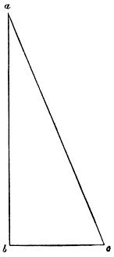
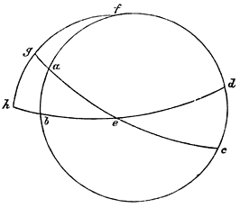
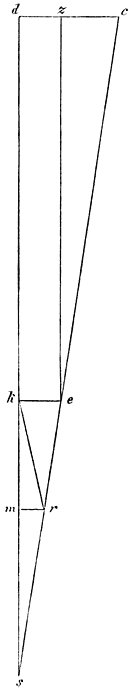
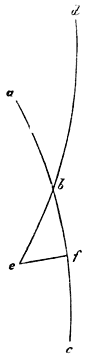
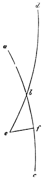
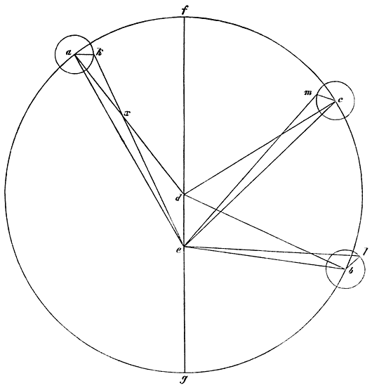
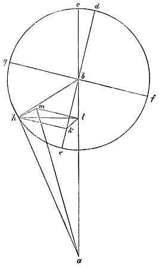

Nicolaus Copernicus’ Kreisbewegungen.
Erstes Buch.
5 Unter den vielen verschiedenen Studien der Wissenschaften und Künste, durch welche sich der Menschengeist entwickelt, halte ich diejenigen vorzüglich für werth, ergriffen und mit dem höchsten Eifer betrieben zu werden, welche sich mit den schönsten und wissenswürdigsten Gegenständen beschäftigen. Diese sind nun diejenigen, welche von den himmlischen Kreisbewegungen der Welt, dem Laufe der Gestirne, den Grössen und Entfernungen, dem Auf- und Untergange und den Ursachen der übrigen Himmelserscheinungen handeln, und endlich die gesammte Form entwickeln. Was aber ist schöner, als der Himmel, welcher ja alles Schöne enthält? Die lateinischen Namen selbst, — caelum der Himmel und mundus die Welt, — deuten dies schon an, dieser durch die Bezeichnung der Reinheit und des Schmuckes, jener durch die Bedeutung des kunstreich Gestalteten. Wegen seiner sichtlichen, übergrossen Herrlichkeit nannten ihn die meisten Philosophen: Gott. Deswegen, wenn die Würde der Wissenschaften nach dem Gegenstande abgeschätzt werden soll, den sie behandeln, wird diejenige bei Weitem die Höchste sein, welche Einige Astronomie, Andere Astrologie, viele der Alten aber die Vollendung der Mathematik nennen. In der That wird die dem freien Manne würdigste, als das Haupt der freien Künste, fast von allen Zweigen der Mathematik getragen. Arithmetik, Geometrie, Optik, Geodäsie, Mechanik und wenn es sonst noch Andere giebt, alle beziehen sich auf jene. Wenn es aber die Aufgabe aller Wissenschaften ist, den Menschengeist der Sünde zu entziehen und auf das Bessere zu lenken, so kann sie dies, neben einer unglaublichen Beseligung des Geistes, im Übermasse bewirken. Denn wer würde nicht beim Erforschen dessen, was er in der besten Ordnung gegründet, von der göttlichen Vorsehung gelenkt erkennt, durch fleissige Betrachtung desselben und durch eine gewisse Vertrautheit damit, zu dem Besten angeregt, und den Urheber des All’s bewundern, worin alles Glück und alles Gute besteht? Vergebens würde jener göttliche Sänger von sich sagen, dass er sich an der Schöpfung Gottes erfreue, und bei den Werken seiner Hände jauchzen möchte, wenn wir nicht durch diese Mittel, gleichsam wie auf einem Gefährt, zu der Anschauung des höchsten Gottes geführt würden. Welchen Nutzen und welche Zierde [10]sie dem Staate, — um die unzähligen Vortheile des Privatmannes zu übergehen, — verleiht, hat Plato sehr gut nachgewiesen, der sie im siebenten Buche der Gesetze hauptsächlich deswegen für erstrebenswerth erachtet, weil die durch sie nach dem Massstabe der Tage in Monate und Jahre eingetheilte Zeit den Staat in Bezug auf die Feste und Opfer lebendig und wachsam macht; und er sagt, dass, wenn Jemand behauptete, dass für Einen, der irgend welche der höchsten Wissenschaften erfassen will, diese nicht nöthig sei, dieser sehr thöricht denken würde. Er ist der Ansicht, es sei weit gefehlt, dass Jemand als gross aufgestellt und bezeichnet werden könnte, der weder von der Sonne, noch von dem Monde, noch von den übrigen Gestirnen die nothwendige Kenntniss besitze. Diese mehr göttliche als menschliche Wissenschaft, welche die höchsten Dinge erforscht, entbehrt aber auch nicht der Schwierigkeiten, zumal wir sehen, dass die Meisten, welche es unternommen haben, sich damit zu beschäftigen, über ihre Grundlagen und Annahmen, welche die Griechen Hypothesen nennen, uneinig gewesen sind und daher sich nicht auf dieselben Berechnungen gestützt haben. Ferner weil der Lauf der Fixsterne und die Kreisbewegung der Planeten nur erst mit der Zeit und nach vielen vorangegangenen Beobachtungen, aus welchen sie, so zu sagen, von Hand zu Hand der Nachwelt überliefert wurden, durch zuverlässige Zahlen bestimmt und zu einer vollkommenen Wissenschaft gestaltet werden können. Denn obgleich Cl. Ptolemäus von Alexandrien, welcher an bewunderungswürdiger Geschicklichkeit und Umsicht die Übrigen weit überragt, mit Hülfe der Beobachtungen von vierhundert und mehr Jahren diese Wissenschaft fast zur höchsten Vollendung gebracht hat, so dass es bereits den Anschein hatte, als gäbe es nichts, was er nicht berührt hätte: so sehen wir doch, dass das Meiste mit dem nicht übereinstimmt, was aus seiner Überlieferung folgen sollte, weil noch einige andere Bewegungen aufgefunden sind, welche ihm noch unbekannt waren. Deshalb sagt auch Plutarch da, wo er vom Sonnenjahre handelt: „bis jetzt übersteigt die Bewegung der Gestirne die Einsicht der Mathematiker.“ Um nämlich bei dem Beispiele von dem Jahre stehen zu bleiben, so halte ich es für bekannt, wie verschieden die Meinungen darüber immer gewesen sind, und zwar bis zu dem Grade, dass Viele daran verzweifelten, eine zuverlässige Berechnung desselben finden zu können. Damit es aber nicht so scheine, als wollte ich meine Schwachheit unter dem Vorwande dieser Schwierigkeit verbergen, so werde ich mit Hülfe Gottes, ohne den wir nichts vermögen, an den andern Planeten dieses weitläufiger zu prüfen versuchen, indem wir desto mehr Hülfsmittel besitzen, unsere Theorie zu unterstützen, um einen je grösseren Zeitraum die Gründer dieser Wissenschaft uns vorangegangen sind, mit deren Beobachtungen wir das vergleichen können, was auch wir von Neuem beobachtet haben. Übrigens gestehe ich, dass ich Vieles anders, als meine Vorgänger darstellen werde, wenngleich auf Grund ihrer eigenen Dienste, da sie ja den ersten Zugang zu der Untersuchung dieser Gegenstände eröffnet haben. [11]
Capitel 1.
Dass die Welt kugelförmig sei.6
Zuerst müssen wir bemerken, dass die Welt kugelförmig ist, theils weil diese Form, als die vollendete, keiner Fuge bedürftige Ganzheit, die vollkommenste von allen ist, theils weil sie die geräumigste Form bildet, welche am meisten dazu geeignet ist, Alles zu enthalten und zu bewahren; oder auch weil alle in sich abgeschlossene Theile der Welt, ich meine die Sonne, den Mond und die Planeten, in dieser Form erscheinen; oder weil Alles dahin strebt, sich in dieser Form zu begrenzen, was an den Tropfen des Wassers und an den übrigen flüssigen Körpern zur Erscheinung kommt, wenn sie sich aus sich selbst zu begrenzen streben. So dass Niemand bezweifeln wird, dass diese Form den himmlischen Körpern zukommt.
Capitel 2.
Dass die Erde gleichfalls kugelförmig sei.7
Dass die Erde gleichfalls kugelförmig sei, ist deshalb ausser Zweifel, weil sie sich von allen Seiten auf ihren Mittelpunkt stützt. Obgleich ein vollkommener Kreis bei der grossen Erhebung der Berge und der Vertiefung der Thäler nicht sogleich wahrgenommen wird, so beeinträchtigt dies doch die allgemeine Rundung der Erde keineswegs. Dies wird auf folgende Weise klar. Für Diejenigen, welche irgend woher nach Norden gehen, erhebt sich der Nordpol der täglichen Kreisbewegung allmälig, während der andere um ebensoviel sinkt. Die meisten Sterne in der Gegend des grossen Bären scheinen nicht unterzugehen, und im Süden Einige nicht mehr aufzugehn. So sieht Italien den Canopus nicht, der den Ägyptern sichtbar ist. Und Italien sieht den äussersten Stern des Flusses, welchen unsre Gegend einer kältern Zone nicht kennt. Dagegen erheben sich für Diejenigen, welche nach Süden reisen, jene, während diejenigen untergehen, welche für uns hoch stehen. Nun haben auch die Neigungen der Pole selbst zu den durchmessenen Räumen der Erde immer dasselbe Verhältniss, was bei keiner andern, als bei der Kugelgestalt, zutrifft. Daher ist offenbar, dass auch die Erde zwischen den Polen eingeschlossen und deswegen kugelförmig ist. Nehmen wir noch hinzu, dass die Bewohner des Ostens die am Abend, und die nach Westen Wohnenden die am Morgen eintretenden Sonnen- und Mond-Finsternisse nicht wahrnehmen, die dazwischen Wohnenden aber jene später, diese dagegen früher sehen. Dass auch das Wasser derselben Form unterworfen ist, wird auf den Schiffen wahrgenommen, indem das Land, was man vom Schiffe aus nicht sehen kann, von der Spitze des Mastbaums erspäht wird. Und umgekehrt, wenn eine Leuchte an der Spitze des Mastbaums angebracht wird: so scheint dieselbe, wenn das Schiff sich vom Lande entfernt, den am Gestade Zurückbleibenden allmälig hinabzusteigen, bis sie zuletzt, gleichsam untergehend, verschwindet. Es ist klar, dass auch das [12]Wasser seiner flüssigen Natur nach, ebenso wie die Erde, immer nach unten strebt, und sich vom Ufer ab nicht höher erhebt, als dies seine Convexität zulässt. Daher ragt das Land überall um so viel aus dem Ocean hervor, als das Land zufällig höher ist.
Capitel 3.
Wie das Land mit dem Wasser eine Kugel ausmacht.
Indem der das Land umgebende Ocean seine Gewässer nach allen Seiten verbreitet, füllt er die eingesenkten Vertiefungen desselben aus. Daher war es nöthig, dass es weniger Wasser gäbe, als Land, damit das Wasser nicht den ganzen Erdkreis verschlänge, indem Beide vermöge ihrer Schwere nach einem und demselben Mittelpunkte streben; sondern dass es einige Erdtheile und so viele nach allen Seiten freiliegende Inseln, den lebendigen Wesen zum Heile, übrig lasse. Denn selbst das Festland und der Erdkreis, was sind sie Anders, als eine Insel, grösser, als die übrigen? Und man darf nicht auf gewisse Peripatetiker hören, welche behauptet haben, das gesammte Wasser sei zehnmal so viel, als das ganze Land, weil nämlich bei der Verwandlung der Elemente aus einem Theile Erde zehn Theile Wasser in flüssigem Zustande entständen; und welche, unter Annahme dieser Voraussetzung, sagen, das Land rage deswegen hervor, weil es wegen seiner Höhlungen in Hinsicht der Schwere nicht nach allen Seiten im Gleichgewichte stehe, und der Mittelpunkt der Schwere daher ein anderer sei, als der Mittelpunkt des Umfanges. Sie täuschten sich aber aus Unkenntniss der Geometrie, indem sie nicht wussten, dass das Wasser nicht einmal siebenmal so viel betragen darf, wenn noch irgend ein Theil des Landes trocken gelegt werden soll, ohne dass das ganze Land den Mittelpunkt der Schwere räumt und dem Wasser überlässt, als ob dieses schwerer wäre, als jenes. Es stehen nämlich die Kugeln zu einander im cubischen Verhältnisse ihrer Durchmesser: wenn daher, bei sieben Theilen Wasser, der achte Theil Land wäre, so könnte der Durchmesser des letzteren nicht grösser sein, als der Halbmesser der Wasserkugel; um so weniger ist es möglich, dass das Wasser gar zehnmal so viel sein sollte.8 Dass auch kein Unterschied zwischen dem Mittelpunkte der Schwere der Erde und dem Mittelpunkte ihres Umfanges besteht, kann daraus erkannt werden, dass die aus dem Ocean hervorgetretene Erhebung des Landes nicht zu einer zusammenhängenden Beule angeschwollen ist; sonst würde sie das Wasser des Meeres aufs Äusserste von sich ausschliessen, und durchaus nicht gestatten, dass Binnenmeere und grosse Busen sie unterbrächen. Ferner würde die Tiefe des Grundes von der Meeresküste an immer grösser werden, und deshalb würde Denen, welche grössere Seefahrten ausführten, weder eine Insel, noch eine Klippe, noch irgend etwas Landartiges aufstossen. Nun ist aber bekannt, dass zwischen dem ägyptischen Meere und dem arabischen Meerbusen fast in der Mitte der Ländermasse kaum funfzehn Stadien breites Land hervorragt; dagegen dehnt [13]Ptolemäus in seiner Kosmographie das bewohnte Land bis zum mittleren Längenkreise9 aus, wobei noch überdies das unbekannte Land ausser Acht gelassen ist, wo die Neueren Cathagya10 und sehr ausgedehnte Gegenden bis zu sechzig Längengraden hinzugefügt haben; so dass die Erde schon in einer grösseren Länge bewohnt ist, als das Übrige des Oceans ausmacht. Das wird noch klarer werden, wenn diejenigen Inseln hinzugenommen werden, welche in unsrer Zeit unter den Herrschern Spaniens und Portugals entdeckt sind, und vorzüglich Amerika, welches nach seinem Entdecker, einem Schiffskapitän, benannt ist, und welches man, bei seiner noch nicht feststehenden Grösse für ein zweites Festland hält, ausser den vielen früher unbekannten Inseln; so dass wir uns nicht wundern dürfen, dass es Antipoden oder Antichthonen giebt. Denn nach geometrischer Berechnung muss man Amerika seiner Lage nach dem Indien des Ganges diametral entgegengesetzt annehmen. Nach allem Diesen halte ich es endlich für ausgemacht, dass das Land zugleich mit dem Wasser sich auf einem einzigen Mittelpunkt bezieht, dass es keinen andern Mittelpunkt des Umfanges des Landes giebt, dass die zerrissenen Theile des Landes, obgleich Letzteres schwerer ist, mit Wasser ausgefüllt sind, und dass also das Wasser im Vergleich zu dem Lande gering ist, wenngleich an der Oberfläche vielleicht mehr Wasser erscheint. Dass das Land mit dem es umfliessenden Wasser eine solche Gestalt habe, wie der Schatten der Erde zeigt, ist durchaus nothwendig, dieser aber verfinstert den Mond in Theilen eines vollkommenen Kreises. Die Erde ist daher weder eben, wie Empedokles und Anaximenes gemeint haben, noch paukenförmig, wie Leucipp, noch beckenförmig, wie Heraklid, noch auf eine andere Weise ausgehöhlt, wie Demokrit, noch walzenförmig, wie Anaximander, noch am untern Ende mit abnehmender Dicke nach der Tiefe hin unbegrenzt, wie Xenophanes: — sondern von vollkommener Rundung, wie die Philosophen dafür halten.
Capitel 4.
Dass die Bewegung der Himmelskörper gleichmässig, kreisförmig, ununterbrochen, oder aus kreisförmigen zusammengesetzt sei.
Hiernach bemerken wir, dass die Bewegung der Himmelskörper kreisförmig ist. Die Beweglichkeit einer Kugel besteht nämlich darin, sich im Kreise zu bewegen, indem sie durch diese Thätigkeit ihre Form, als diejenige des einfachsten Körpers, ausdrückt, an welchem weder ein Anfang noch ein Ende zu finden, noch eines von dem andern zu unterscheiden ist, während sie durch dieselben Zwischenpunkte in ihre ursprüngliche Lage gelangt. Wegen der Vielheit der Kreise giebt es aber mehrere Bewegungen. Die bekannteste von Allen ist die tägliche Kreisbewegung, welche die Griechen Nychthemeron nennen, d. h. der Zeitraum von Tag und Nacht. Durch diese, meint man11, bewege sich die ganze Welt, mit Ausnahme der Erde, von Osten nach Westen. Sie wird als gemeinschaftliches Maass für alle [14]Bewegungen erkannt, da die Zeit selbst hauptsächlich nach der Anzahl der Tage gemessen wird. Ferner sehen wir andere, gleichsam rückläufige Kreisbewegungen, d. h. von Westen nach Osten, vor sich gehen: nämlich diejenige der Sonne, des Mondes und der fünf Planeten. So misst uns die Sonne das Jahr, der Mond die Monate, als die gewöhnlichsten Zeitabschnitte, zu; so vollendet jeder der andern fünf Planeten seinen Umlauf. — Sie unterscheiden sich jedoch in mehrfacher Weise: erstens darin, dass sie sich nicht um dieselben Pole, um welche jene erste Bewegung vor sich geht, drehen, indem sie in der schiefen Lage des Thierkreises fortschreiten; zweitens darin, dass sie in ihrem eigenen Umlaufe sich nicht gleichmässig zu bewegen scheinen, denn Sonne und Mond werden bald in langsamerem, bald in schnellerem Laufe begriffen angetroffen; die übrigen fünf Planeten sehen wir aber auch zuweilen zurückgehen und bei dem Übergange stillstehen, und, während die Sonne immer in ihrem directen Wege fortrückt, irren jene auf verschiedene Weisen ab, indem sie bald nach Süden, bald nach Norden schweifen, weshalb sie eben Planeten heissen. Hierzu kommt noch, dass sie zuweilen der Erde näher kommen, wo sie perigeisch, dann wieder sich mehr von ihr entfernen, wo sie apogeisch genannt werden. Nichtsdestoweniger muss zugegeben werden, dass die Bewegungen kreisförmig, oder aus mehreren Kreisen zusammengesetzt sind, wodurch derartige Ungleichheiten sich nach einem zuverlässigen Gesetze und einer feststehenden Periode richten, was nicht geschehen könnte, wenn sie nicht kreisförmig wären. Denn der Kreis kann allein das Vergangene zurückführen, wie denn die Sonne, so zu sagen, uns durch ihre aus Kreisen zusammengesetzte Bewegung die Ungleichheit der Tage und Nächte und die vier Jahreszeiten zurückführt, woran mehrere Bewegungen erkannt werden, weil es nicht geschehen kann, dass die einfachen Himmelskörper sich in einem einzigen Kreise ungleichmässig bewegen; denn dies müsste geschehen, entweder wegen einer Unbeständigkeit in der Natur des Bewegenden, — möchte sie nun durch eine ihm äusserliche Ursache, oder durch sein inneres Wesen herbeigeführt sein —, oder wegen einer Ungleichheit des bewegten Körpers. Da aber der Verstand sich gegen Beides sträubt, und es unwürdig ist, so etwas bei Demjenigen anzunehmen, welches nach der besten Ordnung eingerichtet ist: so muss man zugeben, dass die gleichmässigen Bewegungen uns ungleichmässig erscheinen, entweder wegen der Verschiedenheit der Pole jener Kreise, oder weil die Erde nicht im Mittelpunkte der Kreise sich befindet, in welchen sich jene bewegen; und dass sie uns, die wir die Bewegungen der Gestirne von der Erde aus beobachten, wegen der ungleichen Entfernungen, in grösserer Nähe grösser vorkommen, als wenn sie in grösserem Abstande von uns vor sich gehen, — das in der Optik nachgewiesen wird —. Auf diese Weise erscheinen uns die Bewegungen, welche in gleichen Zeiten durch gleiche Bogen verlaufen, wegen der verschiedenen Entfernungen, ungleich. Deshalb halte ich es vor allen Dingen für nothwendig, dass wir sorgfältig untersuchen, welche Stellung die Erde zum Himmel hat, damit wir, während wir das Erhabenste [15]erforschen wollen, nicht das Nächste ausser Acht lassen, und irrthümlich das, was der Erde zukommt, den Himmelskörpern zuschreiben.
Capitel 5.
Ob der Erde eine kreisförmige Bewegung zukomme? und über ihren Ort.
Da schon nachgewiesen ist, dass die Erde die Gestalt einer Kugel hat, so halte ich dafür, dass untersucht werden muss, ob aus ihrer Form auch eine Bewegung folgt, und welchen Ort sie im Weltall einnimmt? — Ohne Dieses ist keine sichere Berechnung der am Himmel vor sich gehenden Erscheinungen zu finden. Der grösste Theil der Schriftsteller stimmt freilich darin überein, dass die Erde in der Mitte der Welt ruhe, so dass sie es für unbegreiflich und sogar für lächerlich halten, das Gegentheil zu meinen. Wenn man jedoch die Sache sorgfältiger erwägt, so wird man einsehen, dass diese Frage noch nicht erledigt, und deshalb keinesweges gering zu achten ist. Jede Ortsveränderung, welche wahrgenommen wird, rührt nämlich von einer Bewegung entweder des beobachteten Gegenstandes, oder des Beobachters, oder von, natürlich verschiedenen, Bewegungen Beider her; denn wenn der beobachtete Gegenstand und der Beobachter sich in gleicher Weise und in gleicher Richtung bewegen: so wird keine Bewegung wahrgenommen. Nun ist es aber die Erde, von wo aus der Umlauf des Himmels beobachtet, und wo derselbe unsern Augen vorgeführt wird. Wenn daher der Erde irgend eine Bewegung zukäme, so würde diese an Allem, was sich ausserhalb jener befindet, zur Erscheinung kommen, aber in entgegengesetzter Richtung, gleichsam als ob Alles an der Erde vorüber zöge; und dieser Art ist denn vorzüglich die tägliche Kreisbewegung. Denn diese scheint die ganze Welt zu ergreifen und zwar Alles, was ausserhalb der Erde ist, mit alleiniger Ausnahme der Erde selbst. Wenn man aber zugäbe, dass dem Himmel nichts von dieser Bewegung eigen sei, sondern dass die Erde sich von Westen nach Osten drehe, und wenn man dies ernstlich in Bezug auf den erscheinenden Auf- und Untergang der Sonne, des Mondes und der Sterne erwöge: so würde man finden, dass es sich so verhält. Da der Himmel, der Alles enthält und birgt, der gemeinschaftliche Ort aller Dinge ist, so lässt sich nicht sogleich verstehen, warum nicht eher dem Enthaltenen als dem Enthaltenden, dem Gesetzten, als dem Setzenden, eine Bewegung zugeschrieben wird. Dieser Meinung waren wirklich die Pythagoräer Heraklid und Ekphantus4 und der Syracusaner Nicetas bei Cicero3, indem sie die Erde in der Mitte der Welt sich drehen liessen. Sie waren nämlich der Ansicht, dass die Gestirne durch das Dazwischentreten der Erde unter- und durch das Zurückweichen derselben aufgingen. Aus dieser Annahme folgt der andere, nicht geringere Zweifel über den Ort der Erde, obgleich fast von Allen angenommen und geglaubt worden ist, dass die Erde die Mitte der Welt einnehme. Wenn daher Jemand behauptete, dass die Erde sich [16]nicht in dem Mittelpunkte der Welt befinde, dass aber der Abstand zwischen Beiden zwar nicht gross genug sei, um an der Fixsternsphäre gemessen werden zu können, wohl aber an den Bahnen der Sonne und der Planeten merklich und erkennbar würde; und wenn er ferner der Ansicht wäre, dass die Bewegungen der Letzteren aus diesem Grunde unregelmässig erschienen, gleichsam als wenn dieselben in Bezug auf einen andern Mittelpunkt, als denjenigen der Erde, geregelt wären: — so könnte ein Solcher vielleicht den wahren Grund der ungleichmässig erscheinenden Bewegung angegeben haben. Denn da die Planeten der Erde bald näher bald entfernter erscheinen, so verräth dies nothwendig, dass der Mittelpunkt der Erde nicht der Mittelpunkt jener Kreisbahnen ist; weshalb auch nicht feststeht, ob die Erde ihre Entfernung von Jenen verkleinert oder vergrössert, oder Jene ihre Entfernung von der Erde. Es würde also nicht zum Verwundern sein, wenn Jemand ausser jener täglichen Umwälzung, der Erde noch eine andere Bewegung zuschriebe. Dass aber die Erde sich drehe, mit mehreren Bewegungen sich im Räume fortbewege und zu den Planeten gehöre, soll nun der Pythagoräer Philolaus4, ein nicht gewöhnlicher Mathematiker, geglaubt haben, weshalb Plato nicht zögerte, nach Italien zu reisen, um ihn aufzusuchen, wie Diejenigen erzählen, welche Plato’s Leben beschrieben haben. Viele glaubten dagegen, es könne durch mathematische Berechnung erwiesen werden, dass sich die Erde in der Mitte der Welt befinde, und, da sie gegen die ungeheure Grösse des Himmels als Punkt gelten könne, den Ort des Mittelpunktes einnähme, und aus diesem Grunde unbeweglich sei; weil, wenn sich das Universum bewegte, der Mittelpunkt unbewegt bliebe, und dasjenige, was dem Mittelpunkte am nächsten wäre, sich am langsamsten bewegte.
Capitel 6.
Über die Unermesslichkeit des Himmels im Verhältnisse zu der Grösse der Erde.12
Dass die so grosse Masse der Erde, im Verhältnisse zu der Grösse des Himmels, nicht in Betracht kommt, kann daraus erkannt werden, dass die begrenzenden Kreise, — das bedeuten nämlich die Horizontes der Griechen, — die ganze Himmelskugel halbiren; was nicht geschehen könnte, wenn die Grösse der Erde, oder ihr Abstand vom Mittelpunkte der Welt, im Vergleich mit dem Himmel merklich wäre. Der eine Kugel halbirende Kreis geht nämlich durch den Mittelpunkt der Kugel, und ist der grösste von den umschriebenen Kreisen. Es sei a b c d ein begrenzender Kreis, die Erde aber, von welcher aus wir ihn sehen, sei e: so ist eben dies e der Mittelpunkt des Horizontes, durch welchen alles Erscheinende von dem Nichterscheinenden geschieden wird. Erblickt man nun durch ein, in e aufgestelltes Diopter, oder Horoskop, oder durch [17]eine Wasserwage, den Aufgang des Anfanges des Krebses im Punkte c: so sieht man in demselben Augenblicke den Anfang des Steinbocks in a untergehen. Da die Punkte a, e und c in einer durch das Diopter gehenden graden Linie liegen: so ist klar, dass letztere der Durchmesser der Ekliptik ist; und da sechs Zeichen den Halbkreis bestimmen, so ist auch e der Mittelpunkt des Horizontes. Wenn bei einer andern Umwälzung der Anfang des Steinbocks in b aufgeht, so wird der Untergang des Krebses in d gesehen werden, und bed wird eine grade Linie, und zwar der Durchmesser der Ekliptik sein. Es hat sich aber schon gezeigt, dass aec der Durchmesser desselben Kreises ist, folglich ist klar, dass der Mittelpunkt des Kreises in dem gemeinschaftlichen Durchschnittspunkte liegt. So halbirt also immer der Horizont die Ekliptik, welche ein grösster Kreis der Kugel ist. Da nun ein Kreis auf einer Kugel, wenn er durch den Mittelpunkt eines grössten Kreises geht, selbst ein grösster Kreis ist, so gehört der Horizont zu den grössten Kreisen, und sein Mittelpunkt ist zugleich derjenige der Ekliptik. Weil aber die Linie durch die Oberfläche der Erde nothwendig eine andere ist, als diejenige durch ihren Mittelpunkt, beide aber wegen der Unermesslichkeit im Verhältnisse zur Erde gewissermassen Parallelen ähnlich sind, welche, wegen des zu kleinen Abstandes an der Grenze, eine einzige Linie zu sein scheinen, — da der Zwischenraum, den sie einschliessen, im Verhältnisse zu ihrer Länge, in der Weise, wie dies in der Optik gezeigt wird, nicht wahrnehmbar ist: — so scheint dies ohne Zweifel hinreichend zu beweisen, dass der Himmel im Vergleiche mit der Erde unermesslich sei, und den Anschein einer unendlichen Grösse gewinnt, und dass die Erde zum Himmel, nach der Sinnenschätzung, wie ein Punkt zu einem Körper, und ein endlich Grosses zu einem unendlich Grossen sich verhält.13 Weiter ist aber auch nichts bewiesen, und es folgt namentlich nicht daraus, dass die Erde in der Mitte der Welt ruhen müsse. Vielmehr müsste es uns recht befremden, wenn die so unermesslich ausgedehnte Welt sich leichter in 24 Stunden im Räume bewegte, als ein sehr kleiner Theil derselben, welcher die Erde ist. Denn, dass man behauptet, der Mittelpunkt sei unbeweglich, und das dem Mittelpunkte Benachbarte bewege sich langsamer, beweist nicht, dass die Erde im Mittelpunkte der Welt ruhe; es ist nämlich nichts Anderes, als wenn man sagte, der Himmel bewege sich, aber die Pole ruhen, und das den Polen Benachbarte bewege sich sehr langsam; wie denn der Polarstern sich viel langsamer, als der Adler oder der Sirius zu bewegen scheint, weil ersterer, als dem Pole nahe stehend, einen kleineren Kreis beschreibt, indem alle einer Kugel angehören, deren Bewegung, nach ihrer Axe hin abnehmend, eine unter sich gleiche Bewegung aller ihrer Theile nicht zulässt, während die Bewegung des Ganzen sie alle in gleichen Zeiten, aber durch ungleiche Räume hindurch herumführt. Hierauf beruht also der Grund des Beweises, dass die Erde, indem sie einen Theil der Himmelskugel ausmacht und derselben Art und Bewegung theilhaftig ist, als dem Mittelpunkte benachbart sich wenig bewege. Da sie nun ein existirender [18]Körper und nicht selbst der Mittelpunkt ist: so würde sie sich selbst in derselben Zeit in den Himmelskreisen ähnlichen, wenn auch kleineren Kreisen bewegen. Wie falsch dies sei, ist klarer als das Licht, denn es müsste an einem und demselben Orte (der Erde) immer Mittag, an einem andern immer Mitternacht sein, so dass weder ein täglicher Aufgang, noch ein Untergang eintreten könnte, weil die Bewegung des Ganzen und des Theiles eine einzige untrennbare wäre. Es besteht aber ein sehr verschiedenes Verhältniss in Bezug auf das Ganze und dessen Theile, und dies löst die Schwierigkeit der Sache. Diejenigen nämlich, welche einen kleineren Kreis beschreiben, bewegen sich schneller, als diejenigen, welche einen grösseren Kreis durchlaufen. So vollendet der oberste der Planeten, der Saturn, seine Kreisbahn in dreissig Jahren, und der Mond, der ohne Zweifel der Erde am nächsten ist, in einem Monate, endlich wird man einräumen, dass die Erde in dem Zeitraume von einem Tage und einer Nacht sich um sich selbst drehe. Es kehrt also derselbe Zweifel über die tägliche Kreisbewegung hier wieder. Aber es handelt sich auch noch um den Ort der Erde, der aus dem Obigen noch nicht ganz gewiss folgt. Denn jener Beweis enthält nichts weiter, als dass die Grösse des Himmels im Verhältnisse zur Erde unendlich ist, aber bis wie weit sich diese Unermesslichkeit erstrecke, steht keinesweges fest. Ebenso wie sehr kleine und untheilbare Körperchen, sogenannte Atome, wenn sie zwei- oder einigemal genommen werden, wegen ihrer Unmerklichkeit, nicht sofort einen wahrnehmbaren Körper zusammensetzen; dennoch aber so oft multiplicirt werden können, dass sie endlich ausreichen, um zu einer wahrnehmbaren Grösse anzuwachsen: so verhält es sich auch mit dem Orte der Erde, — obgleich derselbe nicht in dem Mittelpunkte der Welt liegt, so ist dennoch diese Entfernung, namentlich im Vergleiche mit der Fixsternsphäre, noch nicht messbar.14
Capitel 7.
Warum die Alten geglaubt haben, die Erde ruhe in der Mitte der Welt, gleichsam als Mittelpunkt?15
Deshalb haben die alten Philosophen aus einigen anderen Gründen zu beweisen versucht, dass die Erde in der Mitte der Welt stehe. Als hauptsächlichste Ursache aber führen sie die Schwere und Leichtigkeit an. Das Element der Erde ist nämlich am schwersten, und alles Wägbare bewegt sich, seinem Streben gemäss, nach der innersten Mitte derselben hin. Da nun die Erde, nach welcher die schweren Gegenstände von allen Seiten her rechtwinklig auf die Oberfläche, vermöge ihrer eigenen Natur sich hinbewegen, kugelförmig ist: so würden sie, wenn sie nicht eben auf der Oberfläche zurückgehalten würden, in ihrem Mittelpunkte zusammentreffen; weil in der That eine grade Linie, welche gegen die Tangentialebene im Berührungspunkte senkrecht gerichtet ist, zum Mittelpunkte führt. Für diejenigen [19]Körper aber, welche sich nach der Mitte hin bewegen, scheint zu folgen, dass sie in der Mitte ruhen würden. Um so mehr wird also die ganze Erde in der Mitte ruhen, und, was sie auch alles für fallende Körper in sich aufnimmt, durch ihr Gewicht unbeweglich bleiben. Ebenso stützen sie sich auch bei ihren Beweisen auf den Grund der Bewegung und deren Natur. Aristoteles16 sagt nämlich, dass die Bewegung eines einfachen Körpers einfach sei; von den einfachen Bewegungen sei aber die eine gradlinig, die andere kreisförmig; von der gradlinigen aber die eine aufwärts, die andere abwärts. Deshalb sei jede einfache Bewegung entweder nach der Mitte hin, nämlich abwärts, oder von der Mitte fort, nämlich aufwärts, oder um die Mitte herum, und diese wäre eben die kreisförmige. Nur der Erde und dem Wasser, welche für schwer gelten, kommt es zu, sich abwärts zu bewegen, d. h. nach der Mitte hin zu streben; der Luft aber und dem Feuer, welche mit Leichtigkeit begabt sind, aufwärts und von der Mitte fort sich zu bewegen. Es scheint klar, dass diesen vier Elementen die gradlinige Bewegung zugestanden werden muss; in Bezug auf die himmlischen Körper aber, dass sie sich um die Mitte im Kreise drehen. So Aristoteles. Wenn daher, sagt der Alexandriner Ptolemäus15, die Erde sich drehete, wenigstens in täglicher Umdrehung: so müsste das Gegentheil von dem Obengesagten eintreten, es müsste nämlich die Bewegung, welche in vier und zwanzig Stunden den ganzen Umfang der Erde durchliefe, die heftigste und ihre Geschwindigkeit unübertreffbar sein. Was aber in jähe Drehung versetzt wird, scheint zu einer Zusammenhäufung durchaus nicht geeignet zu sein, vielmehr zerstreut zu werden, wenn nicht die zusammenhängenden Theile mit einiger Festigkeit zusammengehalten würden. Und schon lange, sagt er, würde die lose Erde über den Himmel selbst, — was sehr lächerlich ist, — hinausgelangt, und um so weniger würden die lebenden Wesen und sonstigen losgelösten Massen irgendwie unerschüttert geblieben sein. Aber auch die gradlinig fallenden Körper würden nicht in der Senkrechten an den ihnen bestimmten Ort gelangen, da derselbe inzwischen mit so grosser Geschwindigkeit darunter weggezogen wäre. Auch würden wir die Wolken und was sonst in der Luft schwebte, immer nach Westen hin sich bewegen sehen.
Capitel 8.
Widerlegung der angeführten Gründe und ihre Unzulänglichkeit.
Aus diesen und ähnlichen Gründen behauptet man, dass die Erde in der Mitte der Welt ruhe, und dass es sich unzweifelhaft so verhalte. Aber wenn Einer glaubt, dass die Erde sich drehe, so wird er gewiss auch der Meinung sein, dass diese Bewegung eine natürliche und keine gewaltsame sei. Was aber der Natur gemäss ist, das bringt Wirkungen hervor, welche dem entgegengesetzt sind, was durch Gewalt geschieht. Dinge, auf welche Gewalt oder ein äusserer Anstoss ausgeübt wird, müssen zerstört werden, [20]und können nicht lange bestehen; was aber von Natur geschieht, verhält sich richtig und bleibt in seinem besten Zusammenhange. Ohne Grund also fürchtet Ptolemäus15, dass die Erde und alle die in Umdrehung versetzten irdischen Gegenstände durch die Thätigkeit der Natur zerfahren würden, da diese Letztere eine ganz andere ist, als die der Kunst; oder als das, was vom menschlichen Geiste hervorgebracht werden könnte. Warum aber fürchtet er nicht Dasselbe, und zwar in noch viel höherem Masse von der Welt, deren Bewegung um so viel geschwinder sein müsste, um wie viel der Himmel grösser ist, als die Erde? Oder ist der Himmel deswegen unermesslich geworden, weil er durch die unaussprechliche Gewalt der Bewegung von der Mitte entfernt worden ist; während er sonst, wenn er stillstände, zusammenfallen würde? Gewiss würde, wenn dieser Grund stattfände, auch die Grösse des Himmels in’s Unendliche gehen. Denn je mehr er durch den äusseren Anstoss der Bewegung in die Höhe getrieben würde, um so geschwinder würde die Bewegung werden, wegen des immer wachsenden Kreises, den er in dem Zeitraume von 24 Stunden durchlaufen müsste; und umgekehrt, wenn die Bewegung wüchse, so wüchse auch die Unermesslichkeit des Himmels. So würde die Geschwindigkeit die Grösse und die Grösse die Geschwindigkeit in’s Unendliche steigern. Nach jenem physischen Grundsatze: dass das Unendliche weder durchlaufen werden,17 noch sich aus irgend einem Grunde bewegen kann,18 müsste jedoch der Himmel nothwendig stillstehen. Aber man19 sagt, dass ausserhalb des Himmels kein Körper, kein Ort, kein leerer Raum, und überhaupt gar nichts existire, und deshalb nichts da sei, über welches der Himmel hinausgehen könnte; dann ist es doch recht wunderbar, dass etwas von nichts umschlossen werden kann. Wenn jedoch der Himmel unendlich, und nur an der inneren Höhlung begrenzt wäre, so bestätigt sich vielleicht um so mehr, dass ausserhalb des Himmels nichts ist, weil jedes Ding, welche Grösse es auch haben mag, innerhalb desselben ist, dann aber wird der Himmel unbeweglich bleiben. Das Vorzüglichste nämlich, worauf man sich beim Beweise von der Endlichkeit der Welt stützt, ist die Bewegung. Ob nun die Welt endlich oder unendlich sei, wollen wir dem Streite der Physiologen überlassen, sicher bleibt uns dies, dass die Erde, zwischen Polen eingeschlossen, von einer kugelförmigen Oberfläche begrenzt ist. Warum wollen wir also noch Anstand nehmen, ihr eine von Natur ihr zukommende, ihrer Form entsprechende Beweglichkeit zuzugestehen, eher als anzunehmen, dass die ganze Welt, deren Grenze nicht gekannt wird, und nicht gekannt werden kann, sich bewege? und warum wollen wir nicht bekennen, dass der Schein einer täglichen Umdrehung dem Himmel, die Wirklichkeit derselben aber der Erde angehöre? und dass es sich daher hiermit so verhalte, wie wenn Virgil’s Aeneas20 sagt: „Wir laufen aus dem Hafen aus, und Länder und Städte weichen zurück.“ Weil, wenn ein Schiff ruhig dahinfährt, Alles, was ausserhalb desselben ist, von den Schiffern so gesehen wird, als ob es nach dem Vorbilde der Bewegung des Schiffes sich bewege, und die Schiffer umgekehrt der [21]Meinung sind, dass sie mit Allem, was sie bei sich haben, ruhen: so kann es sich ohne Zweifel mit der Bewegung der Erde ebenso verhalten, und scheinen, als ob die ganze Welt sich drehe. Was sollen wir nun über die Wolken und das übrige irgend wie in der Luft Schwebende, oder Fallende oder in die Höhe Steigende sagen? als, dass nicht nur die Erde sich mit dem ihr verbundenen, wässrigen Elemente so bewege, sondern auch ein nicht geringer Theil der Luft, und was sonst noch auf dieselbe Weise mit der Erde verknüpft ist; — sei es nun, dass die zunächst liegende Luft, mit erdiger und wässriger Materie vermischt, derselben Natur, wie die Erde, folgt, sei es, dass der Luft die Bewegung mitgetheilt worden ist, indem sie mittelst der Berührung mit der Erde, und vermöge des Widerstandes durch die fortwährende Umdrehung derselben theilhaftig wird. Man behauptet aber wiederum zu gleicher Verwunderung, dass die höchste Gegend der Luft der himmlischen Bewegung folge, was jene plötzlich erscheinenden Gestirne, welche von den Griechen Cometen oder Bartsterne genannt werden, verrathen sollen, für deren Entstehung man eben jene Gegend anweist, und welche gleich den anderen Gestirnen ebenfalls auf- und untergehen. Wir können sagen, dass jener Theil der Luft, wegen seiner grossen Entfernung von der Erde, von der irdischen Bewegung frei geblieben sei. Daher wird die Luft, welche der Erde am nächsten liegt, ruhig erscheinen, und ebenso die in ihr schwebenden Gegenstände, wenn sie nicht vom Winde oder von irgend einer andern, äusseren Kraft, wie es der Zufall mit sich bringt, hin und her getrieben werden; denn was ist der Wind in der Luft Anderes, als die Fluth im Meere? Wir müssen zugeben, dass die Bewegung der fallenden und steigenden Gegenstände in Beziehung zu dem Weltall eine gedoppelte, und stets aus gradlinigen und kreisförmigen Bewegungen zusammengesetzt sei. Da dasjenige, was durch sein Gewicht nach unten strebt, vorzüglich erdig ist, so leidet es keinen Zweifel, dass diese Theile derselben Natur folgen, wie ihr Ganzes; und aus keinem andern Grunde geschieht es, dass diejenigen Gegenstände, welche dem Feuer angehören, mit Gewalt in die Höhe gerissen werden. Das irdische Feuer wird nämlich hauptsächlich durch erdige Materie ernährt, und man sagt, die Flamme sei nichts Anderes, als brennender Rauch. Die Eigenschaft des Feuers besteht aber darin, das auszudehnen, was es ergriffen hat; und es führt dies mit solcher Gewalt aus, dass es auf keine Weise und durch keine Maschine daran gehindert werden kann, die Schranken zu durchbrechen, und sein Werk zu vollführen. Die ausdehnende Bewegung ist aber vom Mittelpunkte nach der Peripherie hin gerichtet; wenn daher etwas aus erdigen Theilen Bestehendes angezündet wird, so bewegt es sich von der Mitte nach oben. Daher kommt, wie man behauptet hat, dem einfachen Körper eine einfache Bewegung zu, und dies erweist sich vorzüglich an der Kreisbewegung, so lange der einfache Körper an seinem natürlichen Orte und in seiner Einheit verharrt. An diesem Orte ist nämlich die Bewegung keine andere, als die kreisförmige, welche ganz in sich bleibt, als ob der Körper ruhete. Die gradlinige Bewegung [22]ergreift aber diejenigen Körper, welche von ihrem natürlichen Orte weggegangen oder gestossen, oder auf irgend eine Weise ausserhalb desselben gerathen sind. Nichts widerstrebt der Ordnung und der Form der ganzen Welt so sehr, als das Ausserhalb-seines-Ortes-sein. Die gradlinige Bewegung tritt also nur ein, wenn die Dinge sich nicht richtig verhalten, und nicht vollkommen ihrer Natur gemäss sind, indem sie sich von ihrem Ganzen trennen und seine Einheit verlassen. Ausserdem führen diejenigen Körper, welche aufwärts oder abwärts, abgesehen von der Kreisbewegung, getrieben werden, keine einfache, gleichförmige und gleichmässige Bewegung aus; denn sie können sich nicht nach ihrer Leichtigkeit oder nach dem Drucke ihres Gewichtes richten; und wenn sie beim Fallen anfänglich eine langsamere Bewegung haben, so vermehren sie ihre Geschwindigkeit im Fallen; während wir dagegen das in die Höhe getriebene irdische Feuer, — und wir kennen kein anderes, — sogleich träge werden sehen, gleichsam als ob sich dadurch die Ursache der Kraft der erdigen Materie zeigte. Die kreisförmige Bewegung verläuft dagegen immer gleichmässig, weil sie eine nicht nachlassende Ursache hat. Jene aber nehmen in der fortschreitenden Bewegung ab, in welcher sie, wenn sie ihren Ort erreicht haben, aufhören, schwer oder leicht zu sein, und deshalb hört ihre Bewegung auf. Wenn also die Kreisbewegung dem Weltall zukäme, den Theilen aber auch die gradlinige: so könnten wir sagen, die Kreisbewegung bestehe mit der gradlinigen, wie das Thier mit der Krankheit. Dass nämlich Aristoteles16 die einfache Bewegung in drei Arten, von der Mitte fort, nach der Mitte hin und um die Mitte herum eingetheilt hat, scheint bloss eine Verstandesthätigkeit zu sein, wie wir ja auch die Linie, den Punkt und die Oberfläche unterscheiden, während doch das Eine nicht ohne das Andere, und Keines von ihnen ohne den Körper bestehen kann. Es kommt nun noch hinzu, dass der Zustand der Unbeweglichkeit für edler und göttlicher gehalten wird, als der der Veränderung und Unbeständigkeit, welcher letztere deshalb eher der Erde, als der Welt zukommt; und ich füge noch hinzu, dass es widersinnig erscheint, dem Enthaltenden und Setzenden eine Bewegung zuzuschreiben, und nicht vielmehr dem Enthaltenen und Gesetzten, welches die Erde ist. Da endlich die Planeten offenbar der Erde bald näher bald ferner zu stehen kommen, so wird auch dann die Bewegung eines und desselben Körpers, welche um die Mitte, die der Mittelpunkt der Erde sein soll, stattfindet, auch von der Mitte fort und nach ihr hin gerichtet sein. Man muss also die Bewegung um die Mitte herum allgemeiner fassen, und es genügt, wenn jede einzelne Bewegung ihre eigene Mitte hat. Man sieht also, dass aus allem Diesen die Bewegung der Erde wahrscheinlicher ist, als ihre Ruhe, zumal in Bezug auf die tägliche Umdrehung, welche der Erde am eigenthümlichsten ist. [23]
Capitel 9.
Ob der Erde mehrere Bewegungen beigelegt werden können? und vom Mittelpunkte der Welt.
Da also der Beweglichkeit der Erde nichts im Wege steht: so, glaube ich, muss nun untersucht werden, ob ihr auch mehrere Bewegungen zukommen, so dass sie für einen der Planeten gehalten werden könnte. Dass sie nämlich nicht der Mittelpunkt aller Kreisbewegungen ist, beweisen die scheinbar ungleichmässigen Bewegungen der Planeten, und ihre veränderlichen Abstände von der Erde, welche aus concentrischen Kreisen, mit der Erde im Mittelpunkte, nicht erklärt werden können. Da also mehrere Mittelpunkte existiren, so wird Niemand ohne Grund im Zweifel sein, ob der Mittelpunkt der Welt derjenige der irdischen Schwere, oder ein anderer sei. Ich bin wenigstens der Ansicht, dass die Schwere nichts Anderes ist, als ein von der göttlichen Vorsehung des Weltenmeisters den Theilen eingepflanztes, natürliches Streben, vermöge dessen sie dadurch, dass sie sich zur Form einer Kugel zusammenschliessen, ihre Einheit und Ganzheit bilden.21 Und es ist anzunehmen, dass diese Neigung auch der Sonne, dem Monde und den übrigen Planeten innewohnt, und sie durch deren Wirkung in der Rundung, in welcher sie erscheinen, verharren; während sie nichtsdestoweniger in vielfacher Weise ihre Kreisläufe vollenden. Wenn also auch die Erde andere Bewegungen, als diejenige um ihren Mittelpunkt besitzt, so werden dieselben solche sein müssen, die nach aussen hin an Vielem in entsprechender Weise zur Erscheinung kommen, und unter diesen erkennen wir den jährlichen Umlauf. Da, wenn man die Unbeweglichkeit der Sonne zugegeben hat, und den jährlichen Umlauf von der Sonne auf die Erde überträgt, der Auf- und Untergang der Zeichen und Fixsterne, wodurch sie Morgen- und Abendsterne werden, sich in derselben Weise ergiebt: so wird es den Anschein gewinnen, dass auch die Stillstände und das Rück- und Vorwärtsgehen der Planeten nicht Bewegungen dieser, sondern der Erde sind, welche diese den Erscheinungen jener leiht. Endlich wird man sich überzeugen, dass die Sonne selbst die Mitte der Welt einnimmt. Und dies Alles lehrt uns das Gesetz der Reihenfolge, in welcher jene auf einander folgen, und die Harmonie der Welt, wenn wir selbst nur die Sache, wie man sagt, mit beiden Augen ansehen.
Capitel 10.
Über die Ordnung der Himmelskreise.
Dass die Fixsternsphäre das Höchste von allem Sichtbaren ist, sehe ich Niemanden bezweifeln. Die Reihenfolge der Planeten wollten die alten Philosophen nach ihren Umlaufszeiten bestimmen, indem sie als Grund dafür anführten, dass, wenn mehrere Körper mit gleicher Geschwindigkeit sich bewegen, diejenigen langsamer fortzurücken scheinen, welche weiter entfernt [24]sind, wie dies von Euklid in der Optik22 bewiesen wird. Deshalb glauben sie, dass der Mond, weil er, als der Erde am nächsten stehend, sich in dem kleinsten Kreise bewegt, seinen Umlauf auch in der kürzesten Zeit vollendet; der Saturn aber, als der höchste, die grösste Bahn in der längsten Zeit durchläuft. Unter diesem steht der Jupiter, darauf folgt der Mars. Über Venus aber und Merkur finden sich verschiedene Meinungen, weil sie nicht, wie jene, sich durch alle Grade von der Sonne entfernen. Deshalb stellen Einige dieselben über die Sonne, wie Timäus bei Plato, Andere unter dieselbe, wie Ptolemäus23 und ein guter Theil der Neueren24. Alpetragius25 setzt die Venus über die Sonne, und den Merkur unter dieselbe. Da nun Diejenigen, welche dem Plato folgen, meinen, dass alle Planeten als sonst dunkle Körper, durch das von der Sonne empfangene Licht leuchten: so müssten jene, wenn sie sich unter der Sonne befänden, wegen ihres eben nicht grossen Abstandes von derselben, halb oder wenigstens nicht völlig rund gesehen werden; denn sie würden das empfangene Licht gewöhnlich seitlich, d. h. nach der Sonne hin, zeigen, wie wir dies beim zu- und abnehmenden Monde sehen. Auch sagen sie, die Sonne müsste durch ihr Dazwischentreten zuweilen verfinstert werden, und das Licht derselben nach Massgabe ihrer Grösse einen Verlust erleiden; da dies nun niemals bemerkt wird, so sind sie der Meinung, dass sie niemals unter der Sonne zu stehen kommen. Dagegen vertheidigen Diejenigen, welche Venus und Merkur unter die Sonne stellen, ihre Ansicht durch die Grösse des Raumes, den sie zwischen Sonne und Mond finden. Denn sie haben ermittelt, dass der grösste Abstand des Mondes von der Erde, also vier und sechzig und ein Sechstel solcher Theile, von denen einer vom Mittelpunkte der Erde bis zur Oberfläche reicht, — in der kleinsten Entfernung der Sonne fast achtzehnmal enthalten sei, und diese 1160 solcher Theile betrage, zwischen ihr und dem Monde also 1096. Damit nun ein so weiter Raum nicht leer bleibe, finden sie aus den Unterschieden der Abstände, aus denen sie die Grösse ihrer Bahnen berechnen, dass dieselben Grössen nahezu ausreichen, dass auf die grösste Entfernung des Mondes, die kleinste Merkurs, und auf dessen grösste Entfernung, die kleinste der Venus folge, welche dann endlich in ihrer grössten Entfernung die Sonne in ihrer kleinsten Entfernung gleichsam berührt. Sie glauben nämlich, dass die Merkursbahn 177 der obenbezeichneten Theile umfasse, und dass der übrige Raum von dem Durchmesser der Venusbahn mit 910 Theilen nahezu ausgefüllt werde. Sie geben daher auch nicht zu, dass sich an den Planeten irgend eine Dunkelheit, ähnlich derjenigen des Mondes, finde, sondern behaupten, dass sie entweder mit eigenem Lichte, oder mit ihrem ganzen Körper in Sonnenlicht getaucht, leuchten; und die Sonne deshalb nicht verfinstern, weil es höchst selten vorkomme, dass sie sich vor die Scheibe der Sonne stellen, indem sie meistentheils in der Breite abweichen; ausserdem weil sie im Vergleich zur Sonne kleine Körper sind, da die Venus, die noch grösser ist, als Merkur, kaum den hundertsten Theil der Sonne bedecken kann, wie Albategnius, der Aratenser26 [25]behauptet, der den Durchmesser der Sonne für zehnmal grösser hält. Deshalb ist es nicht leicht, dass ein so kleiner Fleck in dem vorherrschenden Lichte gesehen werde, — obgleich Averroës27 in der Ptolemäischen Paraphrase, sich erinnert etwas Schwärzliches gesehen zu haben28, als er die Conjunction der Sonne und Merkur’s berechnet hatte; — und so entscheidet man sich dafür, dass diese beiden Planeten sich unterhalb des Sonnenzirkels bewegen. Aber wie ungewiss und unsicher dieser Schluss sei, erhellt daraus, dass, während nach Ptolemäus die kleinste Entfernung des Mondes 38, nach richtiger Schätzung aber mehr als 49 Erdradien beträgt29, — wie unten klar werden wird, — wir doch nicht wissen, dass in einem so grossen Raume etwas Anderes enthalten sei, als Luft und, wenn man will, dasjenige, was man das feurige Element nennt. Ferner daraus, dass der Durchmesser der Venusbahn, nach dessen Grösse sie von der Sonne nach beiden Seiten um mehr oder weniger als 45 Grade abweicht, sechsmal so gross sein muss, als die Linie, welche vom Mittelpunkte der Erde nach dem untersten Punkte der Venusbahn gezogen werden kann, wie seines Ortes bewiesen werden wird. Was soll also in diesem ganzen Raume enthalten sein, der um so grösser ist, als er Erde, Luft, Äther , Mond und Merkur und was ausserdem noch der ungeheure Epicyclus der Venus ausmacht, wenn er um die ruhende Erde kreist, umfasst? — Wie wenig überzeugend die Begründung des Ptolemäus ist, nach welcher die Sonne die Mitte zwischen den überallhin und den nicht so von ihr abweichenden Planeten einnehmen soll, geht daraus hervor, dass der Mond, indem er selbst überallhin abweicht, ihre Unwahrheit verräth. — Was wollen aber Diejenigen, welche unter die Sonne die Venus und dann den Merkur setzen, oder dieselben nach einer andern Reihenfolge anordnen, für eine Ursache dafür anführen, dass diese nicht ebenso selbständige und von der Sonne unabhängige Bahnen durchlaufen, wie die übrigen Planeten, wenn das Verhältniss ihrer Geschwindigkeit und Langsamkeit ihre Reihenfolge nicht falsch darstellt? Also es würde entweder die Erde nicht in dem Mittelpunkte, auf welchen die Reihenfolge der Gestirne und Bahnen bezogen werden, stehen dürfen; oder es gäbe mindestens gar keinen Grund für ihre Reihenfolge, noch wäre es ersichtlich, warum dem Saturn mehr, als dem Jupiter oder irgend einem andern, die höchste Stelle gebührte. Deshalb scheint mir durchaus nicht unbeachtenswerth, was Martianus Capella, welcher eine Encyclopädie30 geschrieben hat, und einige andere Lateiner sehr wohl wussten. Er glaubt nämlich31, dass Venus und Merkur die Sonne als ihren Mittelpunkt umkreisen, und deswegen von ihr nicht weiter weggehen können, als es die Kreise ihrer Bahnen erlauben, weil sie die Erde nicht wie die andern umkreisen, sondern wechselnd-wiederkehrende Abstände haben. Was will dies Anderes bedeuten, als dass dieselben um die Sonne, als um den Mittelpunkt ihrer Bahnen, kreisen? So würde denn in der That die Bahn Merkur’s von derjenigen der Venus, welche mehr als doppelt so gross ist, umschlossen, und fände in der Ausdehnung dieser die ihr genügende Stelle. [26]Nimmt man hiervon Gelegenheit, und bezieht Saturn, Jupiter und Mars auf denselben Mittelpunkt, während man die grosse Ausdehnung ihrer Bahnen in’s Auge fasst, welche mit Jenen auch die darin liegende Erde enthält und umschliesst: so wird man die Erklärung der regelmässigen Ordnung ihrer Bewegungen nicht verfehlen. Denn es steht fest, dass jene der Erde immer dann am nächsten sind, wenn sie des Abends aufgehen, d. h. wenn sie in Opposition mit der Sonne treten, wo die Erde zwischen ihnen und der Sonne steht; dass sie aber von der Erde am entferntesten sind, wenn sie des Abends untergehen, d. h. wenn sie von der Sonne verdeckt werden, indem wir zwischen ihnen und der Erde die Sonne haben, was hinreichend beweist, dass ihr Mittelpunkt vielmehr der Sonne zugehöre, und derselbe sei, auf welchen auch Venus und Merkur ihre Bahnen beziehen. Da aber alle diese sich auf einen Mittelpunkt beziehen: so ist nothwendig, dass der kreis- oder kugelförmige Raum, welcher zwischen dem convexen Kreise der Venus und dem concaven des Mars übrig bleibt, und mit jenen an beiden Oberflächen concentrisch ist, unterbrochen wird, und die Erde mit dem sie begleitenden Monde, und Allem, was unter dem Monde sich befindet, aufnimmt. Denn wir können den Mond, der unstreitig der Erde am nächsten steht, in keiner Weise von ihr trennen, zumal da wir in jenem Raume für ihn eine überflüssig ausreichende Stelle finden. Daher scheuen wir uns nicht, zu behaupten, dass das Ganze, was der Mond einschliesst, mit dem Mittelpunkte der Erde, zwischen den Planeten jenen grossen Kreis in jährlicher Bewegung um die Sonne durchläuft, und sich um den Weltmittelpunkt bewegt, in welchem auch die Sonne unbeweglich ruht; und dass alle Dasjenige, was von einer Bewegung der Sonne erscheint, vielmehr in der Bewegung der Erde seine Wahrheit findet; — dass aber der Umfang der Welt so gross ist, dass jene Entfernung der Erde von der Sonne, während sie im Verhältnisse zu der Grösse der Bahnen der anderen Planeten eine merkliche Ausdehnung hat, gegen die Fixsternsphäre gehalten, verschwindet; was ich für leichter begreiflich halte, als wenn der Geist in eine fast endlose Menge von Kreisen zersplittert wird, was Diejenigen zu thun gezwungen gewesen sind, welche die Erde in der Mitte der Welt festgehalten haben. Man muss vielmehr der Weisheit der Natur nachgehen, welche, indem sie sich sehr gehütet hat, irgend etwas Überflüssiges oder Unnützes hervorzubringen, vielmehr oft einen und denselben Gegenstand mit vielen Wirkungen begabte. Wenn alle Dieses schwierig, fast unbegreiflich und gegen die Meinung Vieler sein sollte, so werden wir es, so Gott will, klarer als die Sonne machen, wenigstens Denen, die in der Mathematik nicht unwissend sind. Das erste Gesetz bleibt also unangefochten, und es wird Niemand ein zutreffenderes herbeibringen, dass nämlich die Grösse der Bahnen durch die Dauer der Umlaufszeit gemessen wird. Die Reihe der Sphären ordnet sich aber, von dem Höchsten anfangend, in folgender Weise.
Die erste und höchste von allen Sphären ist diejenige der Fixsterne, sich selbst und Alles enthaltend, und daher unbeweglich, als der Ort des [27]Universums, auf welchen die Bewegung und Stellung aller übrigen Gestirne bezogen wird. Während nämlich Einige meinen, dass auch diese sich einigermassen verändern, so werden wir bei der Ableitung der irdischen Bewegung eine andere Ursache für diese Erscheinung darlegen. Es folgt der erste Planet, Saturn, welcher in 30 Jahren seinen Umlauf vollendet; hierauf Jupiter mit einem zwölfjährigen Umlaufe; dann Mars, welcher in 2 Jahren seine Bahn durchläuft. Die vierte Stelle in der Reihe nimmt der jährliche Kreislauf ein, in welchem die Erde mit der Mondbahn, als Epicyclus, enthalten ist. In fünfter Stelle kreist Venus in neun Monaten. Die sechste Stelle nimmt Merkur ein, der in einem Zeitraume von achtzig Tagen seinen Umlauf vollendet. In der Mitte aber von Allen steht die Sonne. Denn wer möchte in diesem schönsten Tempel diese Leuchte an einen andern oder bessern Ort setzen, als von wo aus sie das Ganze zugleich erleuchten kann? Wenn anders nicht unpassend Einige sie die Leuchte der Welt, Andere die Seele, noch Andere den Regierer nennen. Trimegistus32 nennt sie den sichtbaren Gott, Electra33 des Sophocles den Alles Sehenden. So lenkt in der That die Sonne, auf dem königlichen Throne sitzend, die sie umkreisende [28]Familie der Gestirne. Auch wird die Erde nicht des Dienstes des Mondes beraubt, sondern, wie Aristoteles in de animalibus34 sagt, der Mond hat zur Erde die grösste Verwandtschaft. Indessen empfängt die Erde von der Sonne und wird schwanger mit jährlicher Geburt. Wir finden also in dieser Anordnung eine bewunderungswürdige Harmonie der Welt, und einen zuverlässigen, harmonischen Zusammenhang der Bewegung und Grösse der Bahnen, wie er anderweitig nicht gefunden werden kann. Denn hier kann der eingehende Beobachter bemerken, warum das Vor- und Zurückgehen beim Jupiter grösser erscheint, als beim Saturn, und kleiner, als beim Mars, und wiederum bei der Venus grösser, als beim Merkur; und warum ein solcher Rückgang beim Saturn häufiger erscheint, als beim Jupiter; seltener beim Mars, und bei der Venus, als beim Merkur. Ausserdem warum Saturn, Jupiter und Mars, wenn sie des Abends aufgehen, der Erde näher sind, als bei ihrem Verschwinden und Wieder-sichtbar-werden. Vorzüglich aber scheint Mars, wenn er des Nachts am Himmel steht, an Grösse dem Jupiter gleich zu sein, indem er sich nur durch die röthliche Farbe unterscheidet; bald darauf wird er unter den Sternen zweiter Grösse gefunden, erkannt durch sorgfältige Beobachtung am Sextanten. Und dieses Alles ergiebt sich aus derselben Ursache, welche in der Bewegung der Erde liegt. Dass aber an den Fixsternen nichts von derselben zur Erscheinung kommt, beweist ihre unermessliche Entfernung, welche selbst die Bahn der jährlichen Bewegung oder deren Abbild für unsere Augen verschwinden lässt, weil alles Sichtbare eine gewisse Entfernung als Grenze hat, über welche hinaus es nicht gesehen werden kann, wie das in der Optik bewiesen wird. Dass nämlich zwischen dem höchsten Planeten, dem Saturn, und der Fixsternsphäre noch sehr Vieles liegt, beweist der funkelnde Glanz der Letzteren, durch welche Eigenschaft sie sich von den Planeten am meisten unterscheiden; wie denn zwischen Bewegtem und Unbewegtem der grösste Unterschied bestehen muss. So gross ist in der That diese göttliche, beste und grösste Werkstatt.
Capitel 11.
Beweis von der dreifachen Bewegung der Erde.
Da also so viele und so gewichtige den Planeten entnommene Zeugnisse für die Beweglichkeit der Erde sprechen: so wollen wir nun eben diese Bewegung im Allgemeinen darlegen, insofern durch dieselbe, gleich wie an einer Hypothese, die Erscheinungen nachgewiesen werden. Man muss dieselbe überhaupt als eine dreifache annehmen: die erste, von der wir gesagt haben, dass sie von den Griechen Nychthemerinon genannt wird, ist der eigentliche Kreislauf von Tag und Nacht, der um die Erdaxe von Westen nach Osten ebenso vor sich geht, wie man bisher geglaubt hat, dass die Welt sich im entgegengesetzten Sinne bewege, und welcher Kreislauf den Nachtgleichenkreis ( Äquator ) beschreibt, den Einige den Taggleichenkreis nennen, indem [29]sie die Bezeichnung der Griechen nachahmen, bei denen er Isemerinos heisst. Die zweite ist die jährliche Bewegung des Mittelpunktes mit dem sich auf denselben Beziehenden, welche, wie gesagt, den Thierkreis um die Sonne ebenfalls von Westen nach Osten, d. h. rechtläufig, zwischen Venus und Mars durchläuft. Hierdurch geschieht es, dass, wie wir sagten, die Sonne selbst in ähnlicher Bewegung den Thierkreis zu durchlaufen scheint, wie wenn z. B. der Mittelpunkt der Erde durch Steinbock, Wassermann u. s. w. geht, die Sonne durch Krebs, Löwe u. s. w. zu gehen scheint. — Man muss sich vorstellen, dass der Äquator und die Axe der Erde gegen die Ebene des Kreises, welcher durch die Mitte der Zeichen geht,35 eine veränderliche Neigung haben. Weil, wenn sie in unveränderlicher Neigung verharrten, und nur der Bewegung des Mittelpunktes einfach folgten, keine Ungleichheit der Tage und Nächte erscheinen würde, sondern immer entweder Solstitium, oder der kürzeste Tag, oder Nachtgleiche, entweder Sommer, oder Winter, oder was sonst für eine und dieselbe sich gleiche Jahreszeit stattfinden müsste. Es folgt also die dritte Bewegung der Declination36, ebenfalls im jährlichen Kreislaufe, aber rückläufig, d. h. entgegengesetzt der Bewegung des Mittelpunktes. Und so kommt es durch beide, einander fast gleiche und entgegengesetzte Bewegungen, dass die Axe der Erde, und also auch der Äquator , als der grösste Parallelkreis, fast nach derselben Himmelsgegend gerichtet bleiben, gleich als ob sie unbeweglich wären, während die Sonne, wegen der Bewegung, mit welcher der Mittelpunkt der Erde fortrückt, durch die Schiefe des Thierkreises sich zu bewegen scheint; nicht anders, als ob eben dieser Mittelpunkt der Erde der Mittelpunkt der Welt wäre, wofern man sich nur erinnert, dass die Entfernung der Sonne von der Erde an der Fixsternsphäre unser Wahrnehmungsvermögen bereits überschritten hat. Da dies nun so beschaffen ist, dass es leichter mit den Augen aufgefasst, als gesagt werden kann: so beschreiben wir einen Kreis abcd, welcher den jährlichen Umlauf des Mittelpunktes der Erde in der Ebene des Thierkreises vorstellt, und sei c die um dessen Mittelpunkt herum befindliche Sonne. Diesen Kreis theile ich in vier gleiche Theile durch die Durchmesser aec und bed. Den Punkt a nehme der Anfang des Krebses, b der der Wage, c der des Steinbocks und d der des Widders ein. Nehmen wir nun den Mittelpunkt der Erde zuerst in a an, und beschreiben um denselben den Erdäquator fghi, aber nicht in derselben Ebene, nur dass der Durchmesser gai den gemeinschaftlichen Durchschnitt der Kreise, nämlich des Äquators und des Thierkreises darstellt. Nachdem wir den Durchmesser fah rechtwinklig gegen gai gezogen haben, sei f der Punkt der grössten Declination nach Süden, h dagegen der nach Norden. Stellt man sich dies so richtig vor: so sehen die Erdbewohner die um den Mittelpunkt e herum befindliche Sonne im Steinbock ihre Winterwende machen, welche durch die nach der Sonne hin gewendete, grösste, nördliche Declination h bewirkt wird; weil die tägliche Umdrehung, wegen der schrägen Lage des Äquators , dem von dem Neigungswinkel eah umfassten Abstande gemäss, an der [30] Linie ae den parallelen südlichen Wendekreis einschneidet.37 Nun rücke der Mittelpunkt der Erde rechtläufig, und um eben so viel der Punkt der grössten Declination f rückläufig fort, bis beide in b Kreisquadranten zurückgelegt haben: dann bleibt während dem der Winkel eai, wegen der Gleichmässigkeit der Kreisbewegungen, immer gleich aeb, und der Durchmesser fah mit fbh, und gai mit gbi, und der Äquator mit dem Äquator parallel. Und zwar erscheinen sie wegen der schon oft angegebenen Ursache, bei der Unermesslichkeit des Himmels, als dieselben. Daher erscheint vom Anfange b der Wage aus, e im Widder, und fällt der gemeinschaftliche Durchschnitt der Kreise in die eine Linie gbie, an welcher die tägliche Umdrehung keine Declination zulässt, sondern alle Declination liegt nach den Seiten hin. Deshalb wird die Sonne im Frühlingspunkte gesehen werden. Der Mittelpunkt der Erde möge unter den angenommenen Bedingungen fortfahren, sich zu bewegen; wenn nun in c der Halbkreis zurückgelegt ist, so wird die Sonne in den Krebs einzutreten scheinen. Aber da f, die südliche Abweichung des Äquators , der Sonne zugewendet ist: so bewirkt dies, dass die Sonne nördlich erscheint, indem sie den nördlichen Wendekreis, nach Massgabe des Neigungswinkels ecf durchläuft. Wenn f bis zum dritten Quadranten sich wieder abwendet: so fällt der gemeinschaftliche Durchschnitt gi von Neuem in die Linie ed; weshalb die Sonne, in der Wage gesehen, das Herbstäquinoctium erreicht zu haben scheint. Und indem [31]hf bei demselben Fortrücken sich allmälig nach der Sonne hin wendet, so bewirkt dies, dass dasselbe wiederkehrt, von dem wir Anfangs ausgegangen sind. — In anderer Weise. — Es sei ebenso aec der Durchmesser in der Zeichenebene und der gemeinschaftliche Durchschnitt derselben mit dem senkrecht gegen diese Ebene construirten Kreise abc. In der ersteren Ebene möge in a und c, d. h. beziehlich in Krebs und Steinbock, der Meridian der Erde durch dgfi, und die Axe der Erde durch df bezeichnet werden. Der nördliche Pol sei d, der südliche f, und der Durchmesser des Äquators sei gi. Wenn nun f sich der Sonne, welche in e stehen mag, zuwendet, und die Neigung des Äquators um den Winkel iae nördlich ist: so beschreibt die Bewegung um die Axe, in dem Abstande li, den mit dem Äquator parallelen, von der Sonne beschienenen, südlichen Wendekreis des Steinbocks mit dem Durchmesser kl. Oder um richtiger zu sprechen: Jene Bewegung um die Axe beschreibt in der Richtung ae eine Kegeloberfläche, die ihren Gipfel im Mittelpunkte der Erde, ihre Basis aber parallel mit dem Äquator liegen hat. In dem entgegengesetzten Zeichen c trifft Alles in gleicher Weise, nur umgekehrt, zu. Es ist also klar, wie die beiden, einander entgegengesetzten Bewegungen, nämlich die des Mittelpunktes und der Declination, die Axe der Erde zwingen, in derselben Neigung und in ganz ähnlicher Stellung zu verharren, und dass dies Alles so erscheint, als wären es Bewegungen der Sonne. Wir sagten aber, dass die jährlichen Umläufe des Mittelpunktes und der Declination fast gleich wären, weil, wenn dies genau der Fall wäre, die Äquinoctial- und Solstitialpunkte und die ganze Schiefe des Thierkreises gegen die Fixsternsphäre sich durchaus nicht ändern dürften. Da aber jene Differenz gering ist: so wird sie nur mit zunehmender Zeit merklich: von Ptolemäus nämlich bis auf uns sind jene Äquinoctial- und Solstitialpunkte ungefähr um 21 Grade zurückgerückt. Deshalb haben Einige geglaubt, dass die Fixsternsphäre sich ebenfalls bewege, so dass sie aus diesem Grunde eine neunte höhere Sphäre annahmen; und da diese noch nicht hinreicht, fügen jetzt die Neueren noch eine zehnte hinzu, und dennoch haben sie das Ziel noch nicht erreicht, welches wir durch die Bewegung der Erde zu erreichen hoffen, indem wir uns derselben bei der Entwicklung des Nachfolgenden als Prinzip und Voraussetzung bedienen.38 [32]
Capitel 12.
Über die graden Linien, welche Sehnen im Kreise sind.39
Weil die Entwicklungen, deren wir uns fast in dem ganzen Werke bedienen, mit graden Linien und Bogen, mit ebenen und sphärischen Dreiecken sich beschäftigen, und man, obgleich darüber schon Vieles in Euklid’s Elementen vorliegt, dennoch nicht Dasjenige besitzt, warum es sich hier hauptsächlich handelt: wie man nämlich aus den Winkeln die Seiten, und aus den Seiten die Winkel finden kann; indem der Winkel nicht die Sehne, und nicht diese, sondern der Bogen den Winkel misst; und deswegen eine Methode erfunden ist, durch welche man die Sehne eines beliebigen Bogens erkennen, und aus der Sehne mit Hülfe des Winkels den entsprechenden Bogen, und umgekehrt aus dem Bogen die Sehne, welche einem Winkel zugehört, erhalten kann: — so wird es nicht befremden, wenn wir von diesen Linien handeln. Auch über die Seiten und Winkel, sowohl der ebenen, als auch der sphärischen Dreiecke, werden wir das, was Ptolemäus zerstreut und beispielsweise mitgetheilt hat, an dieser Stelle ein für alle Mal soweit untersuchen, als später Dasjenige, was wir besprechen müssen, dadurch klarer wird. Wir theilen den Kreis nach der allgemeinen Sitte der Mathematiker in 360 Theile. Den Durchmesser nehmen die Alten als aus 120 Theilen bestehend an. Um aber bei der Multiplication und Division mit diesen Linien, die wie meistens in der Länge, so auch in der Potenz incommensurabel sind, die Verwicklung sehr kleiner Zahlen zu vermeiden, führten die Späteren von der Zeit an, wo die indischen Zahlzeichen in Gebrauch kamen, entweder einen zwölfmal oder zwanzigmal hunderttausendtheiligen, oder einen andern rationalen Durchmesser ein. Eine solche Zahlenangabe aber übertrifft jede andere, sowohl die griechische als auch die lateinische, durch ihre besondere Brauchbarkeit, und fügt sich am besten jeder Art von Rechnung. Auch wir haben deswegen 200000 Theile des Durchmessers für hinreichend gehalten, um einen merklichen Irrthum ausschliessen zu können. Was sich nämlich nicht wie eine Zahl zu einer Zahl verhält, davon genügt es, einen Näherungswerth zu erlangen. Wir wollen nun nachstehende sechs Lehrsätze und eine Aufgabe erörtern, indem wir meistenteils dem Ptolemäus folgen.
Erster Lehrsatz.
Wenn der Durchmesser eines Kreises gegeben ist, so sind auch die Seiten des Dreiecks, Vierecks, Sechsecks, Fünfecks und Zehnecks, welche derselbe Kreis umschreibt, gegeben. Der Radius, als die Hälfte des Durchmessers, ist nämlich gleich der Seite des Sechsecks. Das Quadrat der Dreiecksseite ist aber das Dreifache, und dasjenige der Quadratsseite das Doppelte von dem Quadrate der Sechsecksseite, wie das bei Euklid in den Elementen bewiesen ist.40 Die Seite des Sechsecks wird also in der Länge 100000 Theile, die des Vierecks 141422 Theile, die des Dreiecks 173205 [33]Theile enthalten. Es sei aber die Sechsecksseite ab, welche nach der ersten Aufgabe des zweiten, oder nach der zehnten des sechsten Buches von Euklid41 im mittleren und äusseren Verhältnisse im Punkte c geschnitten werde,42 und der grössere Abschnitt sei bc. An diesen tragen wir bd = bc an. Dann wird auch die ganze Linie abd im mittleren und äusseren Verhältnisse geschnitten, und der kleinere, angetragene Abschnitt die Seite des dem Kreise, zu welchem die Sechsecksseite ab gehört, inbeschriebenen Zehnecks sein,43 was aus dem fünften und neunten Satze des 13ten Buches Euklids erhellt. Die Linie bd selbst erhält man aber auf folgende Weise: man halbirt ab in e, so ist aus dem dritten Satze desselben Buches von Euklid bekannt, dass das Quadrat von ebd das Fünffache von dem Quadrate von eb ist.44 Aber eb hat in seiner Länge 50000 Theile, woraus sich das fünffache Quadrat, und eben jene Linie ebd von der Länge von 111803 Theilen ergiebt. Wenn von diesen die 50000 Theile der Linie eb abgezogen werden, so bleibt bd mit 61803 Theilen, als die gesuchte Seite des Zehnecks. Die Seite des Fünfecks, deren Quadrat gleich ist der Summe der Quadrate der Sechsecks- und der Zehnecksseite45, enthält 117557 Theile. Wenn also der Durchmesser eines Kreises gegeben ist: so sind auch die Seiten des Dreiecks, Vierecks, Fünfecks, Sechsecks und Zehnecks, welche demselben Kreise einbeschrieben werden können, gegeben, was zu beweisen war.
Zusatz.
Daraus erhellt, dass wenn die Sehne irgend eines Bogens bekannt ist auch diejenige Sehne gegeben ist, welche dem, jenen zum Halbkreise ergänzenden Bogen zugehört. Denn der Winkel im Halbkreise ist ein Rechter. In rechtwinkligen Dreiecken ist aber das Quadrat der dem rechten Winkel gegenüberliegenden Seite, das ist des Durchmessers, gleich den Quadraten, welche über den den rechten Winkel einschliessenden Seiten construirt worden sind. Weil also die Seite des Zehnecks, welche die Sehne eines Bogens von 36 Graden ist, bewiesenermassen 61803 Theile enthält, von denen 200000 auf den Durchmesser gehen: so ist auch die Sehne des jenen zum Halbkreise ergänzenden Bogens von 144 Graden mit 190211 solcher Theile gegeben. Und aus der Fünfecksseite, welche mit 117557 Theilen des Durchmessers 72 Grade spannt, ergiebt sich die Sehne des jenen zum Halbkreise ergänzenden Bogens von 108 Graden mit 161803 Theilen.
Zweiter Lehrsatz.
Wenn ein Viereck einem Kreise einbeschrieben ist: so ist das Rechteck aus den Diagonalen gleich den beiden Rechtecken aus je zweien einander gegenüberliegenden Seiten. Es sei nämlich abcd das dem Kreise einbeschriebene Viereck: so behaupte ich, dass das Rechteck aus den Diagonalen ac und bd gleich ist denjenigen aus ab und cd und aus ad und bc. Denn machen wir den Winkel abe gleich cbd: so wird der ganze Winkel [34] abd gleich dem ganzen ebc, indem ebd zu jedem der Beiden hinzuaddirt ist. Auch sind die Winkel acb und bda einander gleich, als Winkel in demselben Kreisabschnitte, und es werden die beiden deswegen ähnlichen Dreiecke bce und bda proportionirte Seiten haben, also bc : bd = ec : ad und bc . ad = bd . ec. Aber auch die Dreiecke abe und cbd sind ähnlich, weil die Winkel abe und cbd gleichgemacht, und bac und bdc als Winkel über gleichen Bogen gleich sind. Deshalb wird wieder ab : bd = ae : cd und ab . cd = ae . bd. Es ist aber schon nachgewiesen, dass bc . ad = bd . ec ist. Zusammen also ist bd . ac = ad . bc + ab . cd, was bewiesen zu haben vortheilhaft ist.
Dritter Lehrsatz.
Denn daraus ergiebt sich: wenn im Halbkreise die Sehnen ungleicher Bogen gegeben sind, ist auch die Sehne des Bogens gegeben, um welchen der grössere den kleineren übertrifft. In dem Halbkreise abcd von dem Durchmesser ad mögen die Sehnen der ungleichen Bogen ab und ac gegeben sein. Wollen wir nun die Sehne bc finden, so ergeben sich aus dem Obengesagten die Sehnen der jene zum Halbkreise ergänzenden Bogen bd und cd, mit denen das Viereck im Halbkreise abcd zusammentrifft. Die Diagonalen desselben ac und bd ergeben sich zugleich mit den drei Seiten ab, ad und cd, und in demselben ist, wie schon bewiesen, ac . bd = ab . cd + ad . bc. Wenn nun ab . cd von ac . bd abgezogen wird, so bleibt ad . bc. Dividiren wir dann mit ad, so weit dies möglich ist, so erhalten wir die gesuchte Sehne bc in Zahlen. Da nun nach dem Früheren z. B. die Seiten des Fünfecks und Sechsecks gegeben sind, so ergiebt sich auf diese Weise, dass die Sehne von 12 Graden, um welche jene verschieden sind, 20905 Theile des Durchmessers beträgt.46
Vierter Lehrsatz.
Wenn die Sehne irgend eines Bogens gegeben ist, so ist auch die Sehne des halben Bogens gegeben. Beschreiben wir einen Kreis abc, dessen Durchmesser ac sei; wenn nun bc der mit seiner Sehne gegebene Bogen ist, so möge die Linie ef vom Mittelpunkte e aus, bc rechtwinklig schneiden, dieselbe wird also, nach dem dritten Satze des dritten Buches von Euklid, die Linie be in f, und verlängert den Bogen in d halbiren. Wir ziehen noch die Sehnen ab und bd. Weil nun die Dreiecke abc und efc rechtwinklig sind, und ausserdem den Winkel [35]ecf gemeinschaftlich haben, so sind sie ähnlich; wie daher cf die Hälfte von bfc ist, so ist ef die Hälfte von ab. Aber ab ist als die Sehne des, jenen zum Halbkreise ergänzenden, Bogens gegeben, also ist auch ef gegeben, so wie der Rest df von dem halben Durchmesser; dieser werde als deg vollendet und dann bg gezogen. In dem Dreiecke bdg bildet nun bf das Loth von dem rechten Winkel b aus auf die Basis. Das Rechteck gd . df ist also gleich dem Quadrate von bd; es ergiebt sich also die Länge von bd, welche die Sehne zur Hälfte des Bogens bdc ist. Und da schon die Sehne von 12 Graden gegeben ist, so ergiebt sich auch die von 6 Graden zu 10467 Theilen47, die von 3 Graden zu 5235, die von anderthalb Graden zu 2618 und die von dreiviertel Graden zu 1309 Theilen.
Fünfter Lehrsatz.
Wenn wiederum die Sehnen zweier Bogen gegeben sind, so ist auch die Sehne des ganzen, aus jenen zusammengesetzten, Bogens gegeben. Seien die in dem Kreise gegebenen Sehnen ab und bc, so behaupte ich, dass auch die Sehne des ganzen Bogens abc gegeben sei. Denn nachdem wir die Durchmesser afd und bfe construirt haben, ziehen wir noch die graden Linien bd und ce, welche sich aus dem Früheren ergeben, weil ab und bc gegeben sind, und de gleich ab ist. Durch die Linie cd wird das Viereck bcde geschlossen, dessen Diagonalen bd und ce nebst den dreien Seiten bc, de und be gegeben sind. Die noch Übrige cd wird durch den zweiten Lehrsatz gefunden, und daraus ca als die Sehne der Ergänzung zum Halbkreise, oder des ganzen Bogens abc, welche gesucht wurde. Da bisher die Sehnen von drei, anderthalb und dreiviertel Graden gefunden sind, so könnte man ferner für die Zwischenräume durch sehr genaue Rechnung ein Verzeichniss zu Stande bringen. Demnach ist man wegen der Sehnen jener Theile nicht mit Unrecht im Zweifel, ob man nach Graden aufsteigen und einen zum andern hinzufügen soll, oder nach halben Graden, oder nach einer andern Regel, weil die feinen Berechnungen, durch welche sie abgeleitet werden könnten, uns im Stiche lassen. Nichts jedoch hindert, dieses auf einem andern Wege, frei von jedem wahrnehmbaren oder der erhaltenen Zahl im geringsten widersprechenden Fehler, zu erlangen. Und dieses hat auch Ptolemäus in Betreff der Sehnen eines und eines halben Grades gesucht, wodurch er uns zuerst angeregt hat.48
Sechster Lehrsatz.
Das Verhältniss eines grösseren zu einem kleineren Bogen ist grösser, als das der entsprechenden Sehnen. ab und bc seien zwei ungleiche, zusammenhängende Bogen in einem Kreise, bc aber der grössere, so behaupte ich, [36] dass bc : ab ein grösseres Verhältniss sei, als das der Sehnen bc : ab, welche den Winkel b bilden, welcher durch die Linie bd halbirt wird. Wir ziehen ac, welche bd in e schneidet. Ebenso ziehen wir ad und cd, welche gleich sind, weil sie Sehnen gleicher Bogen sind. Da nun in dem Dreiecke abc die Linie ac, welche den Winkel halbirt, in e schneidet, so verhalten sich die Abschnitte der Basis ec : ae wie bc : ab, und weil bc grösser als ab, so ist auch ec grösser als ae. Nun möge df senkrecht gegen ac gezogen werden, diese halbirt ac in f, welcher Punkt in dem grösseren Abschnitte ec liegen muss. Und da in jedem Dreiecke dem grösseren Winkel auch die grössere Seite gegenüberliegt, so ist im Dreiecke def die Seite de grösser als df, und ad grösser als de, weswegen der um den Mittelpunkt d mit dem Radius de beschriebene Bogen ad schneidet und df überschreitet. Er schneide ad in h, und werde bis zur Graden dfi verlängert. Da nun der Sector edi grösser als das Dreieck edf, aber das Dreieck dea grösser als der Sector deh ist, so hat Dreieck def zu Dreieck dea ein kleineres Verhältniss, als Sector dei zu Sector deh. Und da die Sectoren den Bogen oder den Centriwinkeln, die Dreiecke von denselben Scheitelpunkten aber ihren Basen proportional sind, so ist das Verhältniss der Winkel edf zu ade grösser, als dasjenige der Basen ef zu ae. Folglich ist auch das Verhältniss des summirten Winkels fda zu ade grösser, als af zu ae. Und auf dieselbe Weise ist Winkel cda zu ade grösser, als ac zu ae, oder durch Subtraction Winkel cde zu eda grösser, als ce zu ea. Es verhalten sich aber die Winkel cde zu eda wie die Bogen cb zu ab, die Basis ce zu ae dagegen wie die Sehnen cb zu ab. Folglich ist das Verhältniss der Bogen cb zu ab grösser, als dasjenige der Sehnen bc zu ab, was zu beweisen war.
Aufgabe.
Weil aber der Bogen immer grösser ist, als seine Sehne, indem die Grade der kürzeste Weg zwischen zweien Punkten ist; diese Ungleichheit aber beim Übergange von den grösseren zu den kleineren Abschnitten des Kreises zur Gleichheit convergirt, so dass endlich bei der Berührung mit dem Kreise die grade mit der krummen Linie gleichzeitig verschwindet: so ist nothwendig, dass sie sich vorher durch eine merkliche Differenz von einander unterscheiden. Es sei nämlich z. B. ab ein Bogen von drei Graden, und ac ein solcher von anderthalb Graden, so ist bewiesen, dass die Sehne ab 5235 Theile enthält, wenn der Durchmesser deren 200000 zählt, und ac gleich 2618 solcher Theile ist. Und während das Verhältniss der Bogen ab zu ac gleich 2 zu 1 ist, ist dagegen die Sehne ab weniger als das doppelte von [37]ac, indem sie nur um 2617 Theile grösser ist, als jene. Wenn wir aber den Bogen ab zu anderthalb und ac zu dreiviertel Graden annehmen: so haben wir die Sehne ab gleich 2618 und ac gleich 1309 Theilen, und obgleich die Sehne ac grösser als ½ ab sein muss, so scheint sie doch von der Hälfte sich nicht zu unterscheiden, sondern das Verhältniss der Bogen erscheint schon als dasselbe, wie dasjenige der Sehnen. Da wir also dahin gelangt zu sein scheinen, wo der Unterschied der graden und krummen Linie der Merklichkeit sich entzieht, gleichsam als ob beide nur eine Linie wären, so zweifeln wir nicht, dass sich die Sehnen, — für dreiviertel Grade gleich 1309, — in gleichem Verhältnisse einem Grade und den übrigen Theilen anschliessen, so dass, wenn wir den drei Theilen ein Viertel hinzufügen, wir einen Grad gleich 1745, einen halben Grad gleich 872½ Theilen, und einen drittel Grad gleich 582 Theilen setzen. Ich halte es aber für hinreichend, wenn wir nur die halben Sehnen der doppelten Bogen in das Verzeichniss aufnehmen, durch welche Abkürzung wir Dasjenige im Quadranten zusammenfassen, was für den Halbkreis ausgeführt werden müsste. Und dies zwar um so eher, als im Gebrauche häufiger die halben, als die ganzen Sehnen in der Entwicklung und Rechnung vorkommen. Wir haben aber ein um Sechstel-Grade fortschreitendes und drei Abtheilungen enthaltendes Verzeichniss angefertigt. In der ersten Abtheilung stehen die Grade oder Bogentheile und ihre Sechstel, die zweite Abtheilung enthält die Zahlen der halben Sehnen der doppelten Bogen, die dritte Abtheilung giebt die Differenzen dieser Zahlen, welche zwischen den einzelnen Graden liegen, und aus welchen man Dasjenige proportional berechnen kann, was den einzelnen Theilchen der Grade entspricht. Die Tafel ist nun folgende. [38]
VERZEICHNISS DER SEHNEN IM KREISE.
| Bogen | Halbe Sehne des doppelten Bogens |
Diff. | Bogen | Halbe Sehne des doppelten Bogens |
Diff. | Bogen | Halbe Sehne des doppelten Bogens |
Diff. | |||||
| Grad | Min. | Grad | Min. | Grad | Min. | ||||||||
| 0 | 10 | 291 | 291 | 30 | 10 | 50252 | 251 | 60 | 10 | 86747 | 145 | ||
| 0 | 20 | 582 | 291 | 30 | 20 | 50503 | 251 | 60 | 20 | 86892 | 144 | ||
| 0 | 30 | 873 | 290 | 30 | 30 | 50754 | 250 | 60 | 30 | 87036 | 142 | ||
| 0 | 40 | 1163 | 291 | 30 | 40 | 51004 | 250 | 60 | 40 | 87178 | 142 | ||
| 0 | 50 | 1454 | 291 | 30 | 50 | 51254 | 250 | 60 | 50 | 87320 | 142 | ||
| 1 | 0 | 1745 | 291 | 31 | 0 | 51504 | 249 | 61 | 0 | 87462 | 141 | ||
| 1 | 10 | 2036 | 291 | 31 | 10 | 51753 | 249 | 61 | 10 | 87603 | 140 | ||
| 1 | 20 | 2327 | 290 | 31 | 20 | 52002 | 248 | 61 | 20 | 87743 | 139 | ||
| 1 | 30 | 2617 | 291 | 31 | 30 | 52250 | 248 | 61 | 30 | 87882 | 138 | ||
| 1 | 40 | 2908 | 291 | 31 | 40 | 52498 | 247 | 61 | 40 | 88020 | 138 | ||
| 1 | 50 | 3199 | 291 | 31 | 50 | 52745 | 247 | 61 | 50 | 88158 | 137 | ||
| 2 | 0 | 3490 | 291 | 32 | 0 | 52992 | 246 | 62 | 0 | 88295 | 136 | ||
| 2 | 10 | 3781 | 290 | 32 | 10 | 53238 | 246 | 62 | 10 | 88431 | 135 | ||
| 2 | 20 | 4071 | 291 | 32 | 20 | 53484 | 246 | 62 | 20 | 88566 | 135 | ||
| 2 | 30 | 4362 | 291 | 32 | 30 | 53730 | 245 | 62 | 30 | 88701 | 134 | ||
| 2 | 40 | 4653 | 290 | 32 | 40 | 53975 | 245 | 62 | 40 | 88835 | 133 | ||
| 2 | 50 | 4943 | 291 | 32 | 50 | 54220 | 244 | 62 | 50 | 88968 | 133 | ||
| 3 | 0 | 5234 | 290 | 33 | 0 | 54464 | 244 | 63 | 0 | 89101 | 131 | ||
| 3 | 10 | 5524 | 290 | 33 | 10 | 54708 | 243 | 63 | 10 | 89232 | 131 | ||
| 3 | 20 | 5814 | 291 | 33 | 20 | 54951 | 243 | 63 | 20 | 89363 | 130 | ||
| 3 | 30 | 6105 | 290 | 33 | 30 | 55194 | 242 | 63 | 30 | 89493 | 129 | ||
| 3 | 40 | 6395 | 290 | 33 | 40 | 55436 | 242 | 63 | 40 | 89622 | 129 | ||
| 3 | 50 | 6685 | 290 | 33 | 50 | 55678 | 241 | 63 | 50 | 89751 | 128 | ||
| 4 | 0 | 6975 | 290 | 34 | 0 | 55919 | 241 | 64 | 0 | 89879 | 127 | ||
| 4 | 10 | 7265 | 290 | 34 | 10 | 56160 | 240 | 64 | 10 | 90006 | 127 | ||
| 4 | 20 | 7555 | 290 | 34 | 20 | 56400 | 241 | 64 | 20 | 90133 | 125 | ||
| 4 | 30 | 7845 | 290 | 34 | 30 | 56641 | 239 | 64 | 30 | 90258 | 125 | ||
| 4 | 40 | 8135 | 290 | 34 | 40 | 56880 | 239 | 64 | 40 | 90383 | 124 | ||
| 4 | 50 | 8425 | 290 | 34 | 50 | 57119 | 239 | 64 | 50 | 90507 | 124 | ||
| 5 | 0 | 8715 | 290 | 35 | 0 | 57358 | 238 | 65 | 0 | 90631 | 122 | ||
| 5 | 10 | 9005 | 290 | 35 | 10 | 57596 | 237 | 65 | 10 | 90753 | 122 | ||
| 5 | 20 | 9295 | 290 | 35 | 20 | 57833 | 237 | 65 | 20 | 90875 | 121 | ||
| 5 | 30 | 9585 | 289 | 35 | 30 | 58070 | 237 | 65 | 30 | 90996 | 120 | ||
| 5 | 40 | 9874 | 290 | 35 | 40 | 58307 | 236 | 65 | 40 | 91116 | 119 | ||
| 5 | 50 | 10164 | 289 | 35 | 50 | 58543 | 236 | 65 | 50 | 91235 | 119 | ||
| 6 | 0 | 10453 | 289 | 36 | 0 | 58779 | 235 [40] | 66 | 0 | 91354 | 118 | ||
| 6 | 10 | 10742 | 289 | 36 | 10 | 59014 | 234 | 66 | 10 | 91472 | 118 | ||
| 6 | 20 | 11031 | 289 | 36 | 20 | 59248 | 234 | 66 | 20 | 91590 | 116 | ||
| 6 | 30 | 11320 | 289 | 36 | 30 | 59482 | 234 | 66 | 30 | 91706 | 116 | ||
| 6 | 40 | 11609 | 289 | 36 | 40 | 59716 | 233 | 66 | 40 | 91822 | 114 | ||
| 6 | 50 | 11898 | 289 | 36 | 50 | 59949 | 232 | 66 | 50 | 91936 | 114 | ||
| 7 | 0 | 12187 | 289 | 37 | 0 | 60181 | 232 | 67 | 0 | 92050 | 114 | ||
| 7 | 10 | 12476 | 288 | 37 | 10 | 60413 | 232 | 67 | 10 | 92164 | 112 | ||
| 7 | 20 | 12764 | 289 | 37 | 20 | 60645 | 231 | 67 | 20 | 92276 | 112 | ||
| 7 | 30 | 13053 | 288 | 37 | 30 | 60876 | 231 | 67 | 30 | 92388 | 111 | ||
| 7 | 40 | 13341 | 288 | 37 | 40 | 61107 | 230 | 67 | 40 | 92499 | 110 | ||
| 7 | 50 | 13629 | 288 | 37 | 50 | 61337 | 229 | 67 | 50 | 92609 | 109 | ||
| 8 | 0 | 13917 | 288 | 38 | 0 | 61566 | 229 | 68 | 0 | 92718 | 109 | ||
| 8 | 10 | 14205 | 288 | 38 | 10 | 61795 | 229 | 68 | 10 | 92827 | 108 | ||
| 8 | 20 | 14493 | 288 | 38 | 20 | 62024 | 227 | 68 | 20 | 92935 | 107 | ||
| 8 | 30 | 14781 | 288 | 38 | 30 | 62251 | 228 | 68 | 30 | 93042 | 106 | ||
| 8 | 40 | 15069 | 287 | 38 | 40 | 62479 | 227 | 68 | 40 | 93148 | 105 | ||
| 8 | 50 | 15356 | 287 | 38 | 50 | 62706 | 226 | 68 | 50 | 93253 | 105 | ||
| 9 | 0 | 15643 | 288 | 39 | 0 | 62932 | 226 | 69 | 0 | 93358 | 104 | ||
| 9 | 10 | 15931 | 287 | 39 | 10 | 63158 | 225 | 69 | 10 | 93462 | 103 | ||
| 9 | 20 | 16218 | 287 | 39 | 20 | 63383 | 225 | 69 | 20 | 93565 | 102 | ||
| 9 | 30 | 16505 | 287 | 39 | 30 | 63608 | 224 | 69 | 30 | 93667 | 102 | ||
| 9 | 40 | 16792 | 286 | 39 | 40 | 63832 | 224 | 69 | 40 | 93769 | 101 | ||
| 9 | 50 | 17078 | 287 | 39 | 50 | 64056 | 223 | 69 | 50 | 93870 | 99 | ||
| 10 | 0 | 17365 | 286 | 40 | 0 | 64279 | 222 | 70 | 0 | 93969 | 99 | ||
| 10 | 10 | 17651 | 286 | 40 | 10 | 64501 | 222 | 70 | 10 | 94068 | 99 | ||
| 10 | 20 | 17937 | 286 | 40 | 20 | 64723 | 222 | 70 | 20 | 94167 | 97 | ||
| 10 | 30 | 18223 | 286 | 40 | 30 | 64945 | 221 | 70 | 30 | 94264 | 97 | ||
| 10 | 40 | 18509 | 286 | 40 | 40 | 65166 | 220 | 70 | 40 | 94361 | 96 | ||
| 10 | 50 | 18795 | 286 | 40 | 50 | 65386 | 220 | 70 | 50 | 94457 | 95 | ||
| 11 | 0 | 19081 | 285 | 41 | 0 | 65606 | 219 | 71 | 0 | 94552 | 94 | ||
| 11 | 10 | 19366 | 286 | 41 | 10 | 65825 | 219 | 71 | 10 | 94646 | 93 | ||
| 11 | 20 | 19652 | 285 | 41 | 20 | 66044 | 218 | 71 | 20 | 94739 | 93 | ||
| 11 | 30 | 19937 | 285 | 41 | 30 | 66262 | 218 | 71 | 30 | 94832 | 92 | ||
| 11 | 40 | 20222 | 285 | 41 | 40 | 66480 | 217 | 71 | 40 | 94924 | 91 | ||
| 11 | 50 | 20507 | 284 | 41 | 50 | 66697 | 216 | 71 | 50 | 95015 | 90 | ||
| 12 | 0 | 20791 | 285 | 42 | 0 | 66913 | 216 | 72 | 0 | 95105 | 90 [42] | ||
| 12 | 10 | 21076 | 284 | 42 | 10 | 67129 | 215 | 72 | 10 | 95195 | 89 | ||
| 12 | 20 | 21360 | 284 | 42 | 20 | 67344 | 215 | 72 | 20 | 95284 | 88 | ||
| 12 | 30 | 21644 | 284 | 42 | 30 | 67559 | 214 | 72 | 30 | 95372 | 87 | ||
| 12 | 40 | 21928 | 284 | 42 | 40 | 67773 | 214 | 72 | 40 | 95459 | 86 | ||
| 12 | 50 | 22212 | 283 | 42 | 50 | 67987 | 213 | 72 | 50 | 95545 | 85 | ||
| 13 | 0 | 22495 | 283 | 43 | 0 | 68200 | 212 | 73 | 0 | 95630 | 85 | ||
| 13 | 10 | 22778 | 284 | 43 | 10 | 68412 | 212 | 73 | 10 | 95715 | 84 | ||
| 13 | 20 | 23062 | 282 | 43 | 20 | 68624 | 211 | 73 | 20 | 95799 | 83 | ||
| 13 | 30 | 23344 | 283 | 43 | 30 | 68835 | 211 | 73 | 30 | 95882 | 82 | ||
| 13 | 40 | 23627 | 283 | 43 | 40 | 69046 | 210 | 73 | 40 | 95964 | 81 | ||
| 13 | 50 | 23910 | 282 | 43 | 50 | 69256 | 210 | 73 | 50 | 96045 | 81 | ||
| 14 | 0 | 24192 | 282 | 44 | 0 | 69466 | 209 | 74 | 0 | 96126 | 80 | ||
| 14 | 10 | 24474 | 282 | 44 | 10 | 69675 | 208 | 74 | 10 | 96206 | 79 | ||
| 14 | 20 | 24756 | 282 | 44 | 20 | 69883 | 208 | 74 | 20 | 96285 | 78 | ||
| 14 | 30 | 25038 | 281 | 44 | 30 | 70091 | 207 | 74 | 30 | 96363 | 77 | ||
| 14 | 40 | 25319 | 282 | 44 | 40 | 70298 | 207 | 74 | 40 | 96440 | 77 | ||
| 14 | 50 | 25601 | 281 | 44 | 50 | 70505 | 206 | 74 | 50 | 96517 | 75 | ||
| 15 | 0 | 25882 | 281 | 45 | 0 | 70711 | 205 | 75 | 0 | 96592 | 75 | ||
| 15 | 10 | 26163 | 280 | 45 | 10 | 70916 | 205 | 75 | 10 | 96667 | 75 | ||
| 15 | 20 | 26443 | 281 | 45 | 20 | 71121 | 204 | 75 | 20 | 96742 | 73 | ||
| 15 | 30 | 26724 | 280 | 45 | 30 | 71325 | 204 | 75 | 30 | 96815 | 72 | ||
| 15 | 40 | 27004 | 280 | 45 | 40 | 71529 | 203 | 75 | 40 | 96887 | 72 | ||
| 15 | 50 | 27284 | 280 | 45 | 50 | 71732 | 202 | 75 | 50 | 96959 | 71 | ||
| 16 | 0 | 27564 | 279 | 46 | 0 | 71934 | 202 | 76 | 0 | 97030 | 69 | ||
| 16 | 10 | 27843 | 279 | 46 | 10 | 72136 | 201 | 76 | 10 | 97099 | 70 | ||
| 16 | 20 | 28122 | 279 | 46 | 20 | 72337 | 200 | 76 | 20 | 97169 | 68 | ||
| 16 | 30 | 28401 | 279 | 46 | 30 | 72537 | 200 | 76 | 30 | 97237 | 67 | ||
| 16 | 40 | 28680 | 279 | 46 | 40 | 72737 | 199 | 76 | 40 | 97304 | 67 | ||
| 16 | 50 | 28959 | 278 | 46 | 50 | 72936 | 199 | 76 | 50 | 97371 | 66 | ||
| 17 | 0 | 29237 | 278 | 47 | 0 | 73135 | 198 | 77 | 0 | 97437 | 65 | ||
| 17 | 10 | 29515 | 278 | 47 | 10 | 73333 | 198 | 77 | 10 | 97502 | 64 | ||
| 17 | 20 | 29793 | 278 | 47 | 20 | 73531 | 197 | 77 | 20 | 97566 | 64 | ||
| 17 | 30 | 30071 | 277 | 47 | 30 | 73728 | 196 | 77 | 30 | 97630 | 62 | ||
| 17 | 40 | 30348 | 277 | 47 | 40 | 73924 | 195 | 77 | 40 | 97692 | 62 | ||
| 17 | 50 | 30625 | 277 | 47 | 50 | 74119 | 195 | 77 | 50 | 97754 | 61 | ||
| 18 | 0 | 30902 | 276 [39] | 48 | 0 | 74314 | 194 | 78 | 0 | 97815 | 60 | ||
| 18 | 10 | 31178 | 276 | 48 | 10 | 74508 | 194 | 78 | 10 | 97875 | 59 | ||
| 18 | 20 | 31454 | 276 | 48 | 20 | 74702 | 194 | 78 | 20 | 97934 | 58 | ||
| 18 | 30 | 31730 | 276 | 48 | 30 | 74896 | 194 | 78 | 30 | 7992 | 58 | ||
| 18 | 40 | 32006 | 276 | 48 | 40 | 75088 | 192 | 78 | 40 | 98050 | 57 | ||
| 18 | 50 | 32282 | 275 | 48 | 50 | 75280 | 191 | 78 | 50 | 98107 | 56 | ||
| 19 | 0 | 32557 | 275 | 49 | 0 | 75471 | 190 | 79 | 0 | 98163 | 55 | ||
| 19 | 10 | 32832 | 274 | 49 | 10 | 75661 | 190 | 79 | 10 | 98218 | 54 | ||
| 19 | 20 | 33106 | 275 | 49 | 20 | 75851 | 189 | 79 | 20 | 98272 | 53 | ||
| 19 | 30 | 33381 | 274 | 49 | 30 | 76040 | 189 | 79 | 30 | 98325 | 53 | ||
| 19 | 40 | 33655 | 274 | 49 | 40 | 76299 | 188 | 79 | 40 | 98378 | 52 | ||
| 19 | 50 | 33929 | 273 | 49 | 50 | 76417 | 187 | 79 | 50 | 98430 | 51 | ||
| 20 | 0 | 34202 | 273 | 50 | 0 | 76604 | 187 | 80 | 0 | 98481 | 50 | ||
| 20 | 10 | 34475 | 273 | 50 | 10 | 76791 | 186 | 80 | 10 | 98531 | 49 | ||
| 20 | 20 | 34748 | 273 | 50 | 20 | 76977 | 185 | 80 | 20 | 98580 | 49 | ||
| 20 | 30 | 35021 | 272 | 50 | 30 | 77162 | 185 | 80 | 30 | 98629 | 47 | ||
| 20 | 40 | 35293 | 272 | 50 | 40 | 77347 | 184 | 80 | 40 | 98676 | 47 | ||
| 20 | 50 | 35565 | 272 | 50 | 50 | 77531 | 184 | 80 | 50 | 98723 | 46 | ||
| 21 | 0 | 35837 | 271 | 51 | 0 | 77715 | 182 | 81 | 0 | 98769 | 45 | ||
| 21 | 10 | 36108 | 271 | 51 | 10 | 77897 | 182 | 81 | 10 | 98814 | 44 | ||
| 21 | 20 | 36379 | 271 | 51 | 20 | 78079 | 182 | 81 | 20 | 98858 | 44 | ||
| 21 | 30 | 36650 | 270 | 51 | 30 | 78261 | 181 | 81 | 30 | 98902 | 42 | ||
| 21 | 40 | 36920 | 270 | 51 | 40 | 78442 | 180 | 81 | 40 | 98944 | 42 | ||
| 21 | 50 | 37190 | 270 | 51 | 50 | 78622 | 179 | 81 | 50 | 98986 | 41 | ||
| 22 | 0 | 37460 | 270 | 52 | 0 | 78801 | 179 | 82 | 0 | 99027 | 40 | ||
| 22 | 10 | 37730 | 269 | 52 | 10 | 78980 | 178 | 82 | 10 | 99067 | 39 | ||
| 22 | 20 | 37999 | 269 | 52 | 20 | 79158 | 177 | 82 | 20 | 99106 | 38 | ||
| 22 | 30 | 38268 | 269 | 52 | 30 | 79335 | 177 | 82 | 30 | 99144 | 38 | ||
| 22 | 40 | 38537 | 268 | 52 | 40 | 79512 | 176 | 82 | 40 | 99182 | 37 | ||
| 22 | 50 | 38805 | 268 | 52 | 50 | 79688 | 176 | 82 | 50 | 99219 | 36 | ||
| 23 | 0 | 39073 | 268 | 53 | 0 | 79864 | 174 | 83 | 0 | 99255 | 35 | ||
| 23 | 10 | 39341 | 267 | 53 | 10 | 80038 | 174 | 83 | 10 | 99290 | 34 | ||
| 23 | 20 | 39608 | 267 | 53 | 20 | 80212 | 174 | 83 | 20 | 99324 | 33 | ||
| 23 | 30 | 39875 | 266 | 53 | 30 | 80386 | 172 | 83 | 30 | 99357 | 32 | ||
| 23 | 40 | 40141 | 267 | 53 | 40 | 80558 | 172 | 83 | 40 | 99389 | 32 | ||
| 23 | 50 | 40408 | 266 | 53 | 50 | 80730 | 172 | 83 | 50 | 99421 | 31 | ||
| 24 | 0 | 40674 | 265 | 54 | 0 | 80902 | 170 [41] | 84 | 0 | 99452 | 30 | ||
| 24 | 10 | 40939 | 265 | 54 | 10 | 81072 | 170 | 84 | 10 | 99482 | 29 | ||
| 24 | 20 | 41204 | 265 | 54 | 20 | 81242 | 169 | 84 | 20 | 99511 | 28 | ||
| 24 | 30 | 41469 | 265 | 54 | 30 | 81411 | 169 | 84 | 30 | 99539 | 28 | ||
| 24 | 40 | 41734 | 264 | 54 | 40 | 81580 | 168 | 84 | 40 | 99567 | 27 | ||
| 24 | 50 | 41998 | 264 | 54 | 50 | 81748 | 167 | 84 | 50 | 99594 | 26 | ||
| 25 | 0 | 42262 | 263 | 55 | 0 | 81915 | 167 | 85 | 0 | 99620 | 24 | ||
| 25 | 10 | 42525 | 263 | 55 | 10 | 82082 | 166 | 85 | 10 | 99644 | 24 | ||
| 25 | 20 | 42788 | 263 | 55 | 20 | 82248 | 165 | 85 | 20 | 99668 | 24 | ||
| 25 | 30 | 43051 | 262 | 55 | 30 | 82413 | 164 | 85 | 30 | 99692 | 22 | ||
| 25 | 40 | 43313 | 262 | 55 | 40 | 82577 | 164 | 85 | 40 | 99714 | 22 | ||
| 25 | 50 | 43575 | 262 | 55 | 50 | 82741 | 163 | 85 | 50 | 99736 | 20 | ||
| 26 | 0 | 43837 | 261 | 56 | 0 | 82904 | 162 | 86 | 0 | 99756 | 20 | ||
| 26 | 10 | 44098 | 261 | 56 | 10 | 83066 | 162 | 86 | 10 | 99776 | 19 | ||
| 26 | 20 | 44359 | 261 | 56 | 20 | 83228 | 161 | 86 | 20 | 99795 | 18 | ||
| 26 | 30 | 44620 | 260 | 56 | 30 | 83389 | 160 | 86 | 30 | 99813 | 17 | ||
| 26 | 40 | 44880 | 260 | 56 | 40 | 83549 | 159 | 86 | 40 | 99830 | 17 | ||
| 26 | 50 | 45140 | 259 | 56 | 50 | 83708 | 159 | 86 | 50 | 99847 | 16 | ||
| 27 | 0 | 45399 | 259 | 57 | 0 | 83867 | 158 | 87 | 0 | 99863 | 15 | ||
| 27 | 10 | 45658 | 259 | 57 | 10 | 84025 | 157 | 87 | 10 | 99878 | 14 | ||
| 27 | 20 | 45917 | 258 | 57 | 20 | 84182 | 157 | 87 | 20 | 99892 | 13 | ||
| 27 | 30 | 46175 | 258 | 57 | 30 | 84339 | 156 | 87 | 30 | 99905 | 12 | ||
| 27 | 40 | 46433 | 257 | 57 | 40 | 84495 | 155 | 87 | 40 | 99917 | 11 | ||
| 27 | 50 | 46690 | 257 | 57 | 50 | 84650 | 155 | 87 | 50 | 99928 | 11 | ||
| 28 | 0 | 46947 | 257 | 58 | 0 | 84805 | 154 | 88 | 0 | 99939 | 10 | ||
| 28 | 10 | 47204 | 256 | 58 | 10 | 84959 | 153 | 88 | 10 | 99949 | 9 | ||
| 28 | 20 | 47460 | 256 | 58 | 20 | 85112 | 152 | 88 | 20 | 99958 | 8 | ||
| 28 | 30 | 47716 | 255 | 58 | 30 | 85264 | 151 | 88 | 30 | 99966 | 7 | ||
| 28 | 40 | 47971 | 255 | 58 | 40 | 85415 | 151 | 88 | 40 | 99973 | 6 | ||
| 28 | 50 | 48226 | 255 | 58 | 50 | 85566 | 151 | 88 | 50 | 99979 | 6 | ||
| 29 | 0 | 48481 | 254 | 59 | 0 | 85717 | 149 | 89 | 0 | 99985 | 4 | ||
| 29 | 10 | 48735 | 254 | 59 | 10 | 85866 | 149 | 89 | 10 | 99989 | 4 | ||
| 29 | 20 | 48989 | 253 | 59 | 20 | 86015 | 148 | 89 | 20 | 99993 | 3 | ||
| 29 | 30 | 49242 | 253 | 59 | 30 | 86163 | 147 | 89 | 30 | 99996 | 2 | ||
| 29 | 40 | 49495 | 253 | 59 | 40 | 86310 | 147 | 89 | 40 | 99998 | 1 | ||
| 29 | 50 | 49748 | 252 | 59 | 50 | 86457 | 145 | 89 | 50 | 99999 | 1 | ||
| 30 | 0 | 50000 | 252 | 60 | 0 | 86602 | 145 | 90 | 0 | 100000 | 0 | ||
[43]
Capitel 13.
Über die Seiten und Winkel der ebenen gradlinigen Dreiecke.
1
Wenn die Winkel eines Dreiecks gegeben sind: so ergeben sich die Seiten. Sei nämlich das Dreieck abc, um welches nach der fünften Aufgabe des 4ten Buches von Euklid, ein Kreis beschrieben wird. Es werden also auch die Bogen ab, bc, ca so gegeben sein, dass 360 Theile zweien Rechten gleich sind.49 Wenn aber die Bogen bekannt sind, so ergeben sich auch die Seiten des inbeschriebenen Dreiecks, als die Sehnen, aus dem gegebenen Verzeichnisse in Theilen, von denen 200000 auf den Durchmesser kommen.50
2
Wenn aber irgend ein Winkel nebst zweien Seiten des Dreiecks gegeben ist: so ergiebt sich auch die dritte Seite nebst den übrigen Winkeln. Entweder sind nämlich die gegebenen Seiten einander gleich oder ungleich. Der gegebene Winkel ist aber entweder ein rechter oder ein spitzer oder ein stumpfer; und die gegebenen Seiten schliessen entweder den gegebenen Winkel ein oder nicht.
Seien also erstlich in dem Dreiecke abc die beiden gegebenen Seiten ab und ac gleich und schliessen sie den gegebenen Winkel a ein. Dann sind die übrigen Winkel an der Basis bc, weil sie gleich sind, als die Hälfte der Differenz von zweien Rechten und a, auch gegeben. Und wenn ein Winkel an der Basis ursprünglich gegeben ist: so ergiebt sich sogleich der ihm gleiche, und aus diesen der Rest von zweien Rechten. Aber die Seiten eines Dreiecks von gegebenen Winkeln sind bekannt, es ist also die Basis bc bekannt, und zwar nach dem Verzeichnisse in Theilen, von denen ab oder ac als Radien 100000, oder der Durchmesser 200000 Theile betragen.
3
Wenn der Winkel bac als rechter nebst seinen einschliessenden Seiten gegeben ist, so ergiebt sich dasselbe. Weil es bekannt ist, dass die Quadrate von ab und ac gleich sind dem von der Basis bc: so ergiebt sich also bc seiner Länge nach, und umgekehrt die Seiten selbst nach ihrem Verhältnisse. Der Kreisabschnitt aber, welcher das rechtwinklige Dreieck enthält, ist ein Halbkreis, dessen Durchmesser die Basis bc ist. Wird daher bc in 200000 Theile getheilt: [44]so ergeben sich ab und ac als die Sehnen der beiden andern Winkel b und c, welche nun die Einrichtung des Verzeichnisses in Theilen, von denen 180 gleich zweien Rechten sind, nachweist. Dasselbe wird sich ergeben, wenn bc nebst einer der den rechten Winkel einschliessenden Seiten gegeben ist, was mir hinreichend klar zu sein scheint.
4
Wenn der spitze Winkel abc nebst den ihn einschliessenden Seiten ab und bc gegeben ist: so fälle man von a aus ein Perpendikel auf bc, oder, wenn es nöthig ist, auf deren Verlängerung, je nachdem es innerhalb oder ausserhalb des Dreiecks fällt, dieses sei ad. Durch dasselbe werden zwei rechtwinklige Dreiecke abd und adc unterschieden; und weil in abd die Winkel gegeben sind, nämlich d als Rechter und b nach der Voraussetzung: so ergeben sich ad und bd als Sehnen der Winkel a und b in Theilen, von denen ab als Durchmesser des Kreises 200000 enthält, nach dem Verzeichnisse. Und auf dieselbe Weise, wie ab, ad und bd der Länge nach gegeben sind, ergiebt sich auch cd, als die Differenz von bc und bd. Folglich ergiebt sich, aus den bekannten Seiten ad und cd des rechtwinkligen Dreiecks adc, auch die gesuchte Seite ac und der Winkel acd nach der obigen Entwickelung.
5
Nicht anders wird es sich gestalten, wenn der Winkel b ein stumpfer ist, indem das Loth ad von a auf die Verlängerung von bc ein Dreieck abd von bekannten Winkeln bildet. Denn der Aussenwinkel abd ist durch abc, und d als Rechter bekannt; es ergeben sich also bd und ad in Theilen, von denen ab 200000 enthält. Und weil ba und bc zu einander ein gegebenes Verhältniss haben: so ergiebt sich auch bc in denselben Theilen wie bd, und folglich auch die ganze Linie cbd. Da nun auch in dem rechtwinkligen Dreiecke adc zwei Seiten ad und cd gegeben sind: so ergiebt sich auch die gesuchte ac und der Winkel bac nebst dem andern acb, was verlangt war.
6
Wenn eine von den gegebenen Seiten ac und ab dem gegebenen Winkel b gegenüberliegt: so ergiebt sich aus dem Verzeichnisse ac in Theilen, von denen der Durchmesser des das Dreieck abc umschreibenden Kreises 200000 enthält; und da das Verhältniss von ab zu ac gegeben ist: so ergiebt sich ab in denselben Theilen, folglich aus dem Verzeichnisse der Winkel acb nebst dem andern bac, aus welchem wiederum bc als Sehne sich ergiebt, und hierdurch sind sie nach jedem beliebigen Maassstabe gegeben. [45]
7
Wenn alle Seiten eines Dreiecks gegeben sind: so ergeben sich die Winkel. Von dem gleichseitigen Dreiecke ist es zu bekannt, als dass es hervorgehoben zu werden brauchte, dass seine einzelnen Winkel den dritten Theil von zweien Rechten betragen. In dem gleichschenkligen Dreiecke ist es auch klar; denn die gleichen Seiten verhalten sich zur dritten, wie die Hälfte des Durchmessers zu der Sehne des Bogens, woraus der von den gleichen Seiten eingeschlossene Winkel sich aus dem Verzeichnisse in Theilen ergiebt, von denen 360 um den Mittelpunkt herum vier Rechten gleich sind. Demnächst ergeben sich die übrigen Winkel an der Basis, als die Hälften des Restes von zweien Rechten. Es ist also nun noch übrig, dasselbe von den ungleichseitigen Dreiecken zu beweisen, die wir wieder in rechtwinklige zerlegen. Es sei also abc ein ungleichseitiges Dreieck von gegebenen Seiten, und auf die längste Seite z. B. bc, ein Loth ad gefällt. Der 13te Satz des zweiten Buches von Euklid sagt uns aber, dass das Quadrat der Seite ab, welche einem spitzen Winkel gegenüberliegt, um das doppelte Rechteck von bc und cd kleiner sei, als die Summe der Quadrate der beiden andern Seiten. Der Winkel c muss aber ein spitzer sein, sonst wäre ab gegen die Voraussetzung die längste Seite, was aus dem 17ten Satze des ersten Buches von Euklid und den beiden folgenden Sätzen ersehen werden kann. Es ergeben sich also bd und dc, und von den rechtwinkligen Dreiecken abd und adc sind die Seiten und Winkel bekannt, wie das schon öfters wiederholt ist, wodurch denn auch die gesuchten Winkel des Dreiecks abc sich ergeben.
Oder. Dasselbe wird aus dem vorletzten Satze des dritten Buches von Euklid, vielleicht für uns bequemer, sich ableiten lassen. Wenn wir mit der kürzeren Seite bc als Radius, um den Mittelpunkt c, einen Kreis beschreiben: so schneidet derselbe entweder die beiden andern Seiten oder bloss eine von ihnen. Zunächst schneide der Kreis beide: ab in e, ac in d. Wir verlängern adc nach f um den Durchmesser dcf zu vervollständigen. Nach dieser Construction ist aus jenem Satze von Euklid51 klar, dass das Rechteck von fad52 gleich sei dem Rechtecke von bae indem jedes von Beiden gleich ist dem Quadrate der Tangente von a aus an den Kreis. Die ganze Linie af ist aber gegeben, weil alle ihre Stücke gegeben sind; denn cf und cd sind gleich bc als Radien eines Kreises, und ad ist die Differenz von ca und cd. Deshalb ist auch das Rechteck von bae gegeben und folglich auch ae seiner Länge nach53, und der Rest [46]be, die Sehne des Bogens be. Wenn wir ec ziehen: so haben wir ein gleichschenkliges Dreieck bce von gegebenen Seiten. Daraus ergiebt sich der Winkel ebc und dadurch werden auch in dem Dreiecke abc die übrigen Winkel c und a nach dem Früheren gefunden. Schneidet aber der Kreis, ab nicht, wie in der andern Figur, wo ab auf den convexen Bogen trifft: so ist be nichtsdestoweniger gegeben, und in dem gleichschenkligen Dreiecke bce ist der Winkel cbe, wie auch der Aussenwinkel abc bekannt, und auf dieselbe Weise, wie vorhin, ergeben sich sofort die übrigen Winkel. Und dies mag für die gradlinigen Dreiecke hinreichen, worauf ein grosser Theil der Geodäsie beruht. Wir wenden uns nun zu den sphärischen Dreiecken.
Capitel 14.
Über die sphärischen Dreiecke.
Wir nehmen hier dasjenige convexe Dreieck, welches auf einer Kugeloberfläche von dreien Bogen grösster Kreise eingeschlossen wird; die Differenz und Grösse der Winkel aber auf dem Bogen des grössten Kreises, welcher von dem Schnittpunkte als von einem Pole aus beschrieben wird, und welchen Bogen die Quadranten der den Winkel bildenden Kreise einschliessen. Denn wie der so eingeschlossene Bogen zur ganzen Peripherie: so verhält sich der Winkel am Schnittpunkte zu vier Rechten, welche, wie wir gesagt haben, 360 gleiche Theile enthalten.
1
Aus dreien Bogen grösster Kreise einer Kugel, von denen zwei beliebige zusammengenommen grösser sind, als der dritte, kann offenbar ein sphärisches Dreieck zusammengesetzt werden. Denn was hier von den Bogen behauptet wird, beweist der 23ste Satz des elften Buches des Euklid von den Winkeln54, da das Verhältniss der Winkel und der Bogen dasselbe ist, und grösste Kreise solche sind, welche durch den Mittelpunkt der Kugel gehen: so ist klar, dass jene drei Kreissectoren, von denen jene Bogen sind, am Mittelpunkte der Kugel eine Ecke bilden. Es ist also sicher, was behauptet ist.
2
Jeder Bogen eines Dreiecks muss kleiner sein, als ein Halbkreis. Denn ein Halbkreis bildet am Mittelpunkte keinen Winkel, sondern projicirt sich als grade Linie. Aber die beiden übrigen Winkel, zu denen die Bogen gehören, können am Mittelpunkte keine Ecke einschliessen, also auch kein sphärisches Dreieck. Und dies ist, wie ich glaube, die Ursache gewesen, warum Ptolemäus bei der Untersuchung dieser Art von Dreiecken besonders an der Figur des Kugelsectors beweist, dass Bogen, die grösser als Halbkreise angenommen werden, nicht existiren. [47]
3
In sphärischen Dreiecken, die einen rechten Winkel enthalten, verhält sich die Sehne der doppelten Seite, welche dem rechten Winkel gegenüberliegt, zur Sehne des Doppelten einer von den beiden den rechten Winkel Einschliessenden, wie der Durchmesser der Kugel, zu der Sehne des doppelten Winkels, welcher von der übrigen und der ersten Seite auf dem grössten Kreise der Kugel eingeschlossen ist. Denn es sei abc ein sphärisches Dreieck, dessen Winkel c ein rechter sei; und ich behaupte, die Sehne des doppelten ab verhält sich zu der Sehne des doppelten bc, wie der Durchmesser der Kugel zu der Sehne, welche im grössten Kreise dem Doppelten des Winkels bac angehört. Man nehme a als Pol, beschreibe den Bogen des grössten Kreises de und vollende die Quadranten der Kreise abd und ace und aus dem Mittelpunkte der Kugel f ziehe man den gemeinschaftlichen Schnitt fa der Kreise abd und ace, derjenige aber der Kreise ace und de sei fe, und fd der von abd und de. Ausserdem noch fc von den Kreisen ac und bc. Darauf werden bg rechtwinklig gegen fa, bi gegen fc, und dk gegen fe gezogen und gi verbunden. Weil nun zwei Kreise, wenn sie gegenseitig durch ihre Pole gehen, sich rechtwinklig schneiden: so wird der Winkel aed ein rechter sein; acb ist aber ein Rechter nach der Voraussetzung, und folglich steht jede von den beiden Ebenen edf und bcf senkrecht auf aef. Deswegen, wenn auf der gemeinschaftlichen Schnittlinie fke in der Grundebene (afe) ein Loth errichtet wird, so schliesst dasselbe mit kd einen rechten Winkel ein, nach der Definition der rechtwinkligen Ebenen. Deshalb steht auch kd nach dem 4ten Satze des elften Buches Euklid’s auf aef senkrecht. Aus demselben Grunde steht auch bi senkrecht auf derselben Ebene, und deshalb sind dk und bi einander parallel nach dem sechsten Satze desselben Buches. Aber auch gb ist parallel fd, weil fgb und gfd rechte Winkel sind; und folglich ist nach dem zehnten Satze des elften Buches Euklid’s der Winkel fdk gleich gbi. Da aber Winkel fkd ein rechter ist, so ist es auch gib nach der Definition des Perpendikels. Nun sind die Seiten ähnlicher Dreiecke proportional und also df zu bg wie dk zu bi. Aber bi ist die Hälfte der Sehnen des doppelten Bogens bc, weil bi auf der aus dem Mittelpunkte f gezogenen Linie senkrecht steht, und aus demselben Grunde ist bg die Hälfte der Sehne der doppelten Seite ba, und dk die Hälfte der Sehne des doppelten Bogens de oder des doppelten Winkels a, und df die Hälfte des Durchmessers der Kugel. Also ist offenbar, dass die Sehne der doppelten Seite ab zur Sehne der doppelten bc sich verhält, wie der Durchmesser zu der Sehne des doppelten Winkels a oder des doppelten Bogens de; was bewiesen zu haben vorteilhaft sein wird. [48]
4
Wenn in einem rechtwinkligen Dreiecke noch ein Winkel und irgend eine Seite gegeben sind: so ergiebt sich auch der dritte Winkel und die beiden andern Seiten. Denn es sei a der rechte Winkel im Dreieck abc, und ausserdem irgend einer der beiden andern Winkel z. B. b gegeben. Wegen der gegebenen Seite machen wir einen dreifachen Unterschied. Denn entweder liegt sie den beiden gegebenen Winkeln an, wie ab; oder nur dem Rechten, wie ac; oder sie liegt dem Rechten gegenüber, wie bc. Es sei also zuerst ab die gegebene Seite, und es werde aus dem Pole c der Bogen eines grössten Kreises de beschrieben, und nachdem die Quadranten cad und cbe vollendet sind, werden ab und de verlängert, bis sie sich in f schneiden. Es wird also wieder in f der Pol des Kreises cad sein, weil die Winkel bei a und d rechte sind. Weil nun, wenn an einer Kugel grösste Kreise sich gegenseitig rechtwinklig schneiden, sie sich halbiren und gegenseitig durch ihre Pole gehen: so sind sowohl abf als auch def Quadranten von Kreisen; und da ab gegeben ist: so ist auch der Rest des Quadranten bf gegeben, und der Winkel ebf ist als Scheitelwinkel dem gegebenen abc gleich. Nach dem vorhergehenden Beweise aber verhält sich die Sehne der doppelten bf zur Sehne der doppelten ef, wie der Durchmesser der Kugel zu der Sehne des doppelten Winkels ebf. Drei dieser Grössen sind aber gegeben; der Durchmesser der Kugel, die Sehne des doppelten Bogens bf und des doppelten Winkels ebf, oder die Hälften davon. Es ergiebt sich also, nach dem 15ten Satze des sechsten Buches Euklid’s, auch die Hälfte der Sehne des doppelten Bogens ef und aus dem „Verzeichnisse“ der Bogen ef selbst, und daraus der Rest des Quadranten de, oder der gesuchte Winkel c. Auf dieselbe Weise verhalten sich wieder die Sehnen der doppelten de zu ab wie ebc zu cb. Die Sehnen von de, ab und vom Kreisquadranten ebc sind aber schon gegeben, es ergiebt sich also auch die vierte Sehne des doppelten cb, und die gesuchte Seite cb selbst. Da sich nun die Sehnen der doppelten cb zu ca verhalten wie bf : ef, — weil jedes von beiden Verhältnissen gleich dem des Durchmessers der Kugel zur Sehne des doppelten Winkels cba ist, und Verhältnisse, die einem und demselben gleich sind, auch unter sich gleich sind; — und da schon die drei bf, ef und cb gegeben sind: so ergiebt sich die vierte ca und daraus die dritte Seite ca des Dreiecks abc. Es werde nun die Seite ac als gegeben angenommen, und es sollen gefunden werden die Seiten ab und bc und der Winkel c: so wird wiederum die Sehne des doppelten Bogens ca zu der Sehne des doppelten cb dasselbe Verhältniss haben, wie die Sehne des doppelten Winkels abc zum Durchmesser, wodurch die Seite cb sich ergiebt, und aus den Quadranten der Kreise die Reste ad und be. Ebenso verhält sich die Sehne des doppelten abf, d. h. der Durchmesser, zu der Sehne des doppelten bf, [49]wie die Sehne des doppelten ad zu der Sehne des doppelten be. Es ergiebt sich also der Bogen bf, und als Rest die Seite ab. Auf ähnliche Weise, wie im Vorhergehenden, ergiebt sich aus den Sehnen der doppelten bc, ab und fbe, die Sehne des doppelten de, oder der Winkel c. Wenn ferner bc als bekannt angenommen würde: so würde sich wieder wie vorhin ac, ad und be ergeben, wodurch mittelst der Sehnen und des Durchmessers, wie oft gesagt ist, der Bogen bf sich ergiebt und als Rest die Seite ab; und aus dem bekannten bc, ab und cbe ergiebt sich sogleich nach dem vorhergehenden Lehrsatze der Bogen ed, d. h. der Winkel c, welchen wir suchten. Und so ist wiederum in dem Dreiecke abc, wenn die Winkel a und b, von denen a ein Rechter ist, und irgend eine der drei Seiten gegeben sind, der dritte Winkel mit den übrigen beiden Seiten gegeben, was zu beweisen war.
5
Bei einem Dreiecke von gegebenen Winkeln, von denen irgend einer ein Rechter ist, ergeben sich die Seiten. Behalten wir noch die vorhergehende Figur bei, in welcher wegen des gegebenen Winkels c, der Bogen de und, als Rest des Kreisquadranten, ef sich ergeben. Weil nun bef ein rechter Winkel ist, indem be von dem Pole des Kreises def herkommt, und weil der Winkel ebf Scheitelwinkel eines gegebenen ist: so sind die Winkel und Seiten des Dreiecks bef, welches den rechten Winkel e, den gegebenen Winkel b und die gegebene Seite ef enthält, nach dem vorhergehenden Lehrsatze bekannt; es ergiebt sich also bf und als Rest des Quadranten ab; und durch das Vorhergehende ist bewiesen, dass in dem Dreiecke abc ebenfalls die übrigen Seiten ac und bc sich ergeben.
6
Wenn auf derselben Kugel zwei Dreiecke einen rechten, und ausserdem noch einen gleichen Winkel und eine gleiche Seite haben, mag nun Letztere dem gleichen Winkel an- oder gegenüberliegen: so sind auch die andern Seiten und der dritte Winkel beziehlich gleich.
Es sei abc eine Halbkugel, auf welcher zwei Dreiecke abd und cef angenommen werden, deren Winkel a und c rechte, und ausserdem Winkel adb gleich cef und eine Seite gleich ist, und zwar zuerst eine solche, welche dem gleichen Winkel anliegt, also ad gleich ce. Ich behaupte, dass auch die Seite ab gleich cf, bd gleich ef und Winkel abd gleich cfe sei. Denn, nachdem b und f zu Polen genommen sind, beschreibe man die Quadranten grösster Kreise ghi und ikl und vollende adi und cei, welche sich im Pole der Halbkugel schneiden müssen, der in i liegen mag, weil die Winkel bei a und c rechte sind, und weil ghi und cei durch die Pole desselben Kreises abc beschrieben sind. Da nun [50]ad und ce als gleiche Seiten angenommen sind: so werden auch die Reste di und ie gleiche Bogen sein, und die Winkel idh und iek sind gleich, denn sie sind Scheitelwinkel der als gleich angenommenen Winkel; und die Winkel bei h und k sind rechte; und da diejenigen Verhältnisse, welche einem Dritten gleich sind, auch unter sich gleich sind: so verhält sich die Sehne des Doppelten id zur Sehne des Doppelten hi, wie die Sehne des Doppelten ei zur Sehne des Doppelten ik; da jedes von diesen beiden Verhältnissen nach dem obigen 3ten Satze gleich ist dem Verhältnisse des Durchmessers der Kugel zu der Sehne des doppelten Winkels idh, oder zu der gleichen Sehne des doppelten Winkels iek. Und da die Sehne des doppelten Bogens di gleich ist der Sehne des Doppelten ie: so sind auch nach dem 14ten Satze des fünften Buches der Elemente von Euklid die Sehnen der doppelten ik und ih gleich; und da in gleichen Kreisen gleiche grade Linien gleiche Bogen abschneiden, und die Theile in dem halben Verhältnisse wie die Vielfachen stehen: so sind die einfachen Bogen ih und ik einander gleich, und also auch die Reste der Quadranten gh und kl, wodurch sich die Winkel b und f als gleiche ergeben. Weshalb auch zwischen der Sehne des doppelten ad und der Sehne des doppelten bd, oder zwischen der Sehne des doppelten ce und der Sehne des doppelten bd, dasselbe Verhältniss besteht, als zwischen der Sehne des doppelten ec und der Sehne des doppelten ef. Denn jedes von beiden Verhältnissen ist gleich demjenigen der Sehne des doppelten hg oder des diesem gleichen doppelten kl, zur Sehne des doppelten bdh d. h. zum Durchmesser, nach dem umgekehrten 3ten Lehrsatze, und ad ist gleich ce. Folglich ist nach dem 14ten Satze des fünften Buches der Elemente von Euklid bd gleich ef aus Gleichheit der Sehnen der doppelten Bogen. Auf dieselbe Weise werden wir aus der Gleichheit von bd und ef die Gleichheit der übrigen Seiten und Winkel beweisen. Und wiederum, wenn ab und cf als die gleichen Seiten angenommen werden, so folgen sie derselben Gleichheit in Bezug auf ihr Verhältniss.
7
Wenn auch der eine Winkel kein rechter, und nur die den beiden gleichen Winkeln anliegende Seite einander gleich wäre: so liesse sich schon dasselbe beweisen. Wie z. B. wenn in den beiden Dreiecken abd und cef die beiden Winkel b und d den beiden Winkeln e und f beziehlich und die Seite bd, welche den gleichen Winkeln anliegt, der Seite ef gleich wäre: so behaupte ich wiederum, dass die Dreiecke selbst congruent sind. Denn nachdem wieder b und f als Pole angenommen sind, beschreibe man die Bogen grösster Kreise gh und kl. Die Verlängerungen von ad und gh mögen sich in n schneiden und die von ec und lk in m. Da nun die beiden Dreiecke hdn und kme die gleichen [51]Winkel hdn und kem enthalten, welche als Scheitelwinkel von als gleich angenommenen gleich sind, und weil diejenigen bei h und k rechte sind, wegen des Schneidens am Pole: so sind auch die Seiten dh und ek gleich. Die Dreiecke haben also gleiche Winkel und gleiche Seiten nach dem vorigen Beweise. Und wiederum weil gh und kl gleiche Bogen sind, wegen der als gleich vorausgesetzten Winkel b und f: so ist der ganze Bogen ghn gleich dem ganzen mkl nach dem Grundsatze der Addition von Gleichen. Es giebt also auch hier zwei Dreiecke agn und mcl, welche eine Seite gn gleich einer Seite ml und einen Winkel ang gleich cml und die rechten g und l enthalten. Deswegen sind also auch diese Dreiecke congruent. Wenn nun Gleiches von Gleichem abgezogen wird: so bleibt ad gleich ce, ab gleich cf, und Winkel bad gleich dem Winkel ecf. Was zu beweisen war.
8
Aber auch wenn zwei Dreiecke zwei Paar gleiche Seiten und ein Paar gleiche Winkel enthalten, mögen Letzteren die gleichen Seiten einschliessen, oder mag derselbe an der Basis liegen: so ist auch die Basis der Basis und die übrigen Winkel den übrigen Winkeln gleich. Mag in der vorhergehenden Figur die Seite ab gleich der Seite cf, und ad gleich ce, und erstens der von den gleichen Seiten eingeschlossene Winkel a gleich dem Winkel c sein. Ich behaupte, dass auch die Basis bd der Basis ef, und der Winkel b dem Winkel f, und bda dem cef gleich sei. Denn wir haben zwei Dreiecke agn und clm, deren Winkel g und l rechte, und gan gleich mcl, als Reste von Gleichen bad und ecf. Diese Dreiecke sind also, da auch ga gleich lc ist, congruent. Deshalb lassen die Gleichen ad und ce auch gleiche Reste dn und me. Es ist aber schon bewiesen, dass der Winkel dnh gleich dem Winkel emk sei und dass die Winkel bei h und k rechte sind, also sind auch die Dreiecke dhn und emk congruent, woraus sich als Reste bd gleich ef, und gh gleich kl ergeben; und hieraus folgt, dass die Winkel b und f, und also auch die Reste adb und fec einander gleich sind. Wenn aber anstatt der Seiten ad und ec, die den gleichen Winkeln gegenüberliegenden Basen bd und ef als gleich angenommen werden: so lässt es sich für die anliegenden auf dieselbe Weise beweisen, weil wir wegen der gleichen Aussenwinkel gan und mcl, und der rechten g und l und wegen der gleichen Seiten ag und cl wiederum wie früher zwei Dreiecke agn und mcl von beziehlich gleichen Seiten und Winkeln haben. Auf ähnliche Weise sind auch die Theil-Dreiecke dnh und mek congruent, weil h und k rechte, dnh und kme gleiche Winkel und dh und ek als Reste von Quadranten gleiche Seiten sind, woraus dasselbe folgt, was wir behauptet haben.
9
Im gleichschenkligen sphärischen Dreiecke sind die Winkel an der Basis unter sich gleich. Es sei abc ein Dreieck, dessen beide Seiten ab und ac gleich sind, so behaupte ich, dass die Winkel an der Basis abc und [52] acb gleich sind. Durch den Scheitel a werde ein grösster Kreis ad gezogen, welcher die Basis rechtwinklig schneidet, also durch die Pole derselben geht. Da nun in den Dreiecken abd und adc die Seite ba gleich der Seite ac, und ad beiden gemeinschaftlich ist, und die Winkel bei d rechte sind: so ist nach dem vorigen Beweise klar, dass die Winkel abc und acb gleich sind, was zu beweisen war.
Zusatz.
Hieraus folgt, dass der Bogen, welcher von dem Scheitel eines gleichschenkligen Dreiecks aus die Basis rechtwinklig trifft, zugleich die Basis und den von den gleichen Seiten eingeschlossenen Winkel halbirt, und umgekehrt, was aus dem eben gegebenen Beweise sich ergiebt.
10
Irgend welche zwei Dreiecke auf derselben Kugel, haben, wenn ihre Seiten beziehlich einander gleich sind, auch einzeln beziehlich gleiche Winkel. Denn weil drei Abschnitte grösster Kreise auf beiden Seiten Pyramiden bilden, welche ihre Gipfel im Mittelpunkte der Kugel haben, deren Grundflächen aber ebene Dreiecke sind, die von den Sehnen der Bogen der sphärischen Dreiecke eingeschlossen werden, so sind auch diese Pyramiden einander ähnlich und gleich, nach der Definition gleicher und ähnlicher körperlicher Figuren. Der Grund der Ähnlichkeit liegt darin, dass sie Winkel enthalten, die auf welche Weise sie auch genommen werden mögen, einander beziehlich gleich sind; folglich enthalten auch die Dreiecke selbst einander beziehlich gleiche Winkel. Zumal Diejenigen, welche die Ähnlichkeit der Figuren allgemeiner definiren, dieselbe darin finden wollen, dass diese irgendwie übereinstimmend geneigte Ebenen und in denselben einander gleiche Winkel enthalten. Hieraus scheint mir zu erhellen, dass sphärische Dreiecke, welche beziehlich gleiche Seiten haben, ähnlich sind, wie die ebenen.
11
Jedes Dreieck, von welchem zwei Seiten nebst irgend einem Winkel gegeben sind, wird dadurch zu einem von gegebenen Winkeln und Seiten. Denn wenn die gegebenen Seiten gleich wären: so würden die Winkel an der Basis gleich sein, und nachdem ein Bogen vom Scheitel gegen die Basis rechtwinklig gezogen ist, ergiebt sich leicht das Gesuchte nach dem Zusatze des neunten Satzes. Wenn aber die gegebenen Seiten ungleich wären, wie in dem Dreiecke abc, dessen Winkel a gegeben sei, nebst zweien Seiten, welche den gegebenen Winkel entweder einschliessen oder nicht einschliessen, so [53]mögen zuerst die gegebenen Seiten ab und ac denselben einschliessen, und nachdem c zum Pole genommen ist, werde ein Bogen eines grössten Kreises def beschrieben, die Quadranten cad und cbe vollendet, und die Verlängerung von ab möge den Bogen de im Punkte f schneiden. So wird auch in dem Dreiecke adf die Seite ad als Rest des Quadranten durch ac gegeben. Auch wird der Winkel bad durch cab zu zweien Rechten ergänzt, denn es herrscht dieselbe Beziehung und Grösse der Winkel, welche durch das Schneiden grader Linien und der Ebenen gebildet werden, und d ist ein rechter Winkel. Folglich ist nach dem vierten Satze dieses Capitels adf ein Dreieck von gegebenen Winkeln und Seiten. Und wiederum ist der Winkel f des Dreiecks bef gefunden, und e als rechter wegen des Polschnitts, auch die Seite bf, um welche die ganze abf die ab übertrifft. Es wird also nach demselben Lehrsatze auch bef ein Dreieck von gegebenen Winkeln und Seiten sein. Hieraus ergiebt sich durch be auch die gesuchte Seite bc als Rest des Quadranten, und durch ef auch de als Rest des Ganzen def, dies ist der Winkel c, und durch den Winkel ebf auch der gesuchte Scheitelwinkel abc. Wenn anstatt ab, die dem gegebenen Winkel gegenüberliegende cb als gegeben angenommen würde: so ergiebt sich dasselbe. Denn es ergeben sich als Reste der Quadranten ad und be, und nach derselben Beweismethode zwei Dreiecke adf und bef von gegebenen Winkeln und Seiten, wie vorhin; wodurch abc ein Dreieck von gegebenen Seiten und Winkeln wird, was verlangt wurde.
12
Aber auch wenn irgend welche zwei Winkel nebst irgend einer Seite gegeben sind, ergiebt sich dasselbe. Denn wenn die Construction der vorigen Figur bleibt: so mögen die beiden Winkel acb und bac nebst der, beiden Winkeln anliegenden, Seite ac des Dreiecks abc gegeben sein. Wenn nun einer der beiden Winkel ein rechter wäre: so könnten alle übrigen Stücke nach dem obigen 4ten Satze durch Rechnung gefunden werden. Hiervon wollen wir aber den Fall unterscheiden, wo die Winkel keine rechte sind. Es ist nun ad der Rest des Quadranten cad, und bad der Rest, wenn bac von zweien Rechten abgezogen wird, und d ist ein Rechter. Folglich ergeben sich nach dem 4ten Satze dieses Capitels, die Winkel nebst den Seiten des Dreiecks afd. Durch den gegebenen Winkel c ergiebt sich der Bogen de und der Rest ef; bef ist ein Rechter und f ist beiden Dreiecken gemeinschaftlich. Ebenso ergeben sich nach dem 4ten Satze dieses Capitels be und bf, wodurch sich die beiden andern gesuchten Seiten ab und bc herausstellen. Wenn ferner einer der beiden gegebenen Winkel der gegebenen Seite gegenüberliegt, z. B. wenn der Winkel abc statt acb gegeben wäre, während die übrigen Stücke dieselben bleiben: so stellt sich durch dieselbe Beweismethode das ganze adf als ein Dreieck von gegebenen Winkeln und Seiten heraus, und ebenso das Theil-Dreieck bef weil im vorigen Satze bewiesen ist, dass aus dem, beiden gemeinsamen, Winkel f, aus dem Winkel [54]ebf, welcher der Scheitelwinkel eines gegebenen ist, und aus dem rechten e, auch alle Seiten desselben sich ergeben. Hieraus folgt denn endlich dasselbe, was wir behauptet haben. Denn Alles dies steht immer in wechselseitigem und stetigem Zusammenhange, wie es der Form der Kugel zukommt.
13
Endlich ergeben sich bei einem Dreiecke, dessen sämmtliche Seiten gegeben sind, auch die Winkel. Mögen in dem Dreiecke abc alle Seiten gegeben sein, so behaupte ich, dass auch alle Winkel gefunden werden können. Denn entweder enthält das Dreieck selbst gleiche Seiten, oder nicht. Es seien also zuerst ab und ac gleich: so ist offenbar, dass auch die Hälften der Sehnen der doppelten Seiten gleich sind. Diese mögen be und ce sein, die sich im Punkte e schneiden, weil ihr Abstand vom Mittelpunkte der Kugel auf dem gemeinschaftlichen Schnitte de der Kreise gleich ist, was sich aus der 4ten Definition des dritten Buches von Euklid und deren Umkehrung ergiebt. Aber nach der dritten Proposition desselben Buches ist der Winkel deb in der Ebene abd ein rechter, und dec ebenfalls in der Ebene acd. Daher ist der Winkel bec nach der 4ten Definition des elften Buches von Euklid der Neigungswinkel dieser Ebenen, welchen wir auf diese Weise finden. Denn da die Sehne bc eine grade Linie ist: so haben wir ein gradliniges Dreieck bec von gegebenen Seiten, weil ihre Bogen gegeben sind, und folglich auch von gegebenen Winkeln, und wir erhalten den gesuchten Winkel bec, d. h. den sphärischen bac, und die übrigen nach dem Früheren. Wenn aber das Dreieck ungleichseitig ist, wie in der zweiten Figur: so ist klar, dass die halben Sehnen der doppelten Bogen sich nicht treffen. Weil wenn der Bogen ac grösser als ab ist, die halbe Sehne des doppelten ac, also cf, tiefer, wenn kleiner, höher fällt, je nachdem diese graden Linien, nach dem 15ten Satze des dritten Buches von Euklid, näher oder entfernter vom Mittelpunkte treffen. Dann aber wird mit be eine Parallele fg gezogen, welche den gemeinschaftlichen Schnitt der Kreisausschnitte in g schneidet, und c mit g verbunden. Nun ist offenbar, dass der Winkel efg ein rechter ist, nämlich gleich aeb; und da cf die halbe Sehne des doppelten ac ist: so ist efc auch ein rechter. Folglich ist cfg der Neigungswinkel der Kreise ab und ac, den wir also dadurch auch finden. Denn es ist df zu fg wie de zu eb, wegen der Ähnlichkeit der Dreiecke dfg und deb. Es ergiebt sich also fg in denselben Maasstheilen als in welchen fc gegeben ist. Aber [55]in demselben Verhältnisse steht auch dg zu db, es ergiebt sich also auch dg in denselben Maasstheilen, in welchen dc gegeben ist, nämlich in 100000. Auch ist der Winkel gdc durch den Bogen cb gegeben. Es ergiebt sich also nach dem 2ten Satze der ebenen Dreiecke die Seite gc in denselben Maasstheilen, in welchen die übrigen Seiten des Dreiecks gfc gegeben sind, folglich haben wir nach dem letzten Satze der ebenen Dreiecke den Winkel gfc, das ist der gesuchte sphärische bac, und dann erhalten wir die übrigen nach dem 11ten Satze der sphärischen Dreiecke.
14
Wenn ein gegebener Kreisbogen irgend wo geschnitten wird, so dass jeder von beiden Abschnitten kleiner ist, als ein Halbkreis, und das Verhältniss der halben Sehne des doppelten einen Abschnittes zur halben Sehne des doppelten andern gegeben ist: so ergeben sich auch die Bogen der Abschnitte selbst. Denn es sei der Bogen abc, dessen Mittelpunkt d, gegeben, und er werde in irgend einem Punkte b geschnitten und zwar so, dass die Abschnitte kleiner sind, als der Halbkreis; das Längen-Verhältniss der halben Sehne des doppelten ab zur halben Sehne des doppelten bc sei auf irgend eine Weise gegeben: so behaupte ich, dass auch die Bogen ab und bc sich ergeben. Denn man ziehe die Grade ac, welche den Durchmesser im Punkte e schneidet; von den Endpunkten a und c aber fälle man Perpendikel auf den Durchmesser, nämlich af und cg: so müssen dies die Hälften der Sehnen von den doppelten ab und bc sein. Die Winkel der rechtwinkligen Dreiecke aef und ceg am Scheitel e sind gleich, und deshalb sind die Dreiecke selbst gleichwinklig und ähnlich, und ihre, gleichen Winkeln gegenüberliegenden, Seiten sind proportional, z. B. af zu cg wie ae zu ec. In welchen Zahlen also af oder cg gegeben sind, in denen haben wir auch ae und ec, aus diesen ergiebt sich auch die ganze aec in denselben Zahlen. Aber die Sehne des Bogens abc ergiebt sich in Maasstheilen, in welchen der Radius deb, die Hälfte ak von ac, und der Rest ek sich ergeben. Man ziehe da und dk, welche ebenfalls in denselben Maasstheilen sich ergeben, in welchen db, als die halbe Sehne des Abschnittes, welcher vom Halbkreise übrig bleibt, wenn man abc davon abzieht, und welcher von dem Winkel dak umfasst wird, und folglich ergiebt sich der Winkel adk, welcher die Hälfte des Bogens abc umfasst. Aber auch in dem Dreiecke edk, das zwei gegebene Seiten und den rechten Winkel ckd enthält, ergiebt sich edk, und hieraus der ganze Winkel eda, welcher den Bogen ab umfasst, wodurch auch der Rest cb sich herausstellt, was nachzuweisen erzielt wurde. [56]
15
In einem Dreiecke, dessen sämmtliche Winkel, auch wenn kein rechter dabei ist, gegeben sind, ergeben sich auch alle Seiten. Es sei abc ein Dreieck, dessen sämmtliche Winkel gegeben sind, deren keiner ein rechter ist. Ich behaupte, dass sich auch sämmtliche Seiten desselben ergeben. Denn durch irgend einen der Winkel z. B. durch a und durch die Pole des Bogens bc construire man einen Bogen ad, welcher also den Bogen bc rechtwinklig schneidet; und ad selbst fällt innerhalb des Dreiecks, wenn nicht der eine der Winkel an der Basis, b oder c, ein stumpfer und der andere ein spitzer ist; ist aber dies der Fall: so ist der Kreis durch eben diesen stumpfen Winkel nach der Basis zu ziehen. Nachdem nun die Quadranten baf, cag, dae vollendet und b und c als Pole genommen sind, construire man die Bogen ef und eg. Die Winkel f und g sind also rechte. In den rechtwinkeligen Dreiecken wird sich also die halbe Sehne des doppelten ae zur halben Sehne des doppelten ef verhalten, wie der halbe Durchmesser der Kugel zur halben Sehne des doppelten Winkels eaf. Ebenso verhält sich in dem den rechten Winkel g enthaltenden Dreiecke aeg die halbe Sehne des doppelten ae zur halben Sehne des doppelten eg, wie der halbe Durchmesser der Kugel zur halben Sehne des doppelten Winkels eag. Und aus gleichem Grunde verhält sich die halbe Sehne des doppelten ef zur halben Sehne des doppelten eg, wie die halbe Sehne des doppelten Winkels eaf zur halben Sehne des doppelten Winkels eag. Und weil die Bogen fe und eg gegeben sind, — sie sind nämlich die Reste, um welche sich die Winkel c und b von rechten unterscheiden —, so haben wir hierdurch das Verhältniss der Winkel eaf und eag, d. h. bad und cad, welche zu jenen Scheitelwinkel sind, als gegebene. Der ganze Winkel bac ist nämlich gegeben, und es ergeben sich also nach dem vorigen Satze die Winkel bad und cad. Ferner erhalten wir mittelst des 5ten Satzes die Seiten ab, bd, ac, cd und die ganze bc.
Dies mag vorläufig über die Dreiecke genug sein, insofern es für unsern Zweck nöthig ist. Wenn dies hätte weitläufiger abgehandelt werden sollen: so würde es eines besondern Bandes bedurft haben.
Ende des ersten Buches.
[57]
Nicolaus Copernicus’ Kreisbewegungen.
Zweites Buch.
Da wir in dem vorigen Buche im Ganzen drei Bewegungen der Erde nachgewiesen haben, durch die wir versprachen, alle Erscheinungen der Gestirne zu erklären: so wollen wir dadurch, dass wir sie der Reihe nach, einzeln, stückweise prüfen und untersuchen, dies nach Kräften thun. Wir beginnen aber mit der allerbekanntesten Kreisbewegung der Tages- und Nacht-Zeit, von welcher wir gesagt haben, dass sie von den Griechen Nychthemeron genannt werde, und die wir der Erdkugel am meisten und unmittelbar eigen angenommen haben, weil aus ihr Monate, Jahres- und andere vielnamige Zeiten, gleichwie die Zahl aus der Einheit, entstehen. Also über die Ungleichheit der Tage und Nächte, über Aufgang und Untergang der Sonne, der Theile des Thierkreises und der Sternbilder, und über dergleichen aus dieser Kreisbewegung sich Ergebendes, werden wir etwas Weniges sagen; zumal da Viele hierüber reichlich genug geschrieben haben, und dies doch mit dem Unsrigen auf Eins hinausläuft. Es kommt ja nichts darauf an, wenn wir, dasjenige, was Jene durch die ruhende Erde und die sich drehende Welt erklären, aus dem entgegengesetzten Gesichtspunkte betrachtend, zu demselben Ziele gelangen; weil es sich bei den Dingen, die wechselseitig sind, so verhält, dass das einander Entgegengesetzte übereinstimmt. Dennoch werden wir nichts von dem, was nöthig ist, übergehen. Aber Niemand darf sich wundern, wenn wir noch den Aufgang und Untergang der Sonne und der Sterne, und diesem Ähnliches einfach so benennen, sondern er wird wohl wissen, dass wir nur in der gewohnten Weise sprechen, die von Allen beibehalten werden kann, wenn sie nur im Sinne behalten, dass
Uns, die mit der Erd’ wir kreisen,
Sonn’ und Mond vorüberziehn,
Sterne wechselnd wiederkehren
Oder scheidend sinken hin.
[58]
Capitel 1.
Über die Kreise und ihre Namen.
Äquinoctial-Kreis ( Äquator ) hat man den grössten aller, um die Pole der täglichen Kreisbewegung beschriebenen, Parallel-Kreise der Erdkugel genannt; Zodiakus (Ekliptik) aber den durch die Mitte der Zeichen beschriebenen Kreis, in welchem der Mittelpunkt der Erde selbst in jährlicher Kreisbewegung fortschreitet. Weil aber der Zodiakus gegen den Äquinoctialkreis schief steht, nach Maassgabe der Neigung der Erdaxe gegen ihn: so beschreibt er vermöge der täglichen Kreisbewegung der Erde auf beiden Seiten zwei ihn berührende Kreise, gleichsam als äusserste Grenzen seiner Schiefe, welche man Tropen (Wendekreise) nennt. Die Sonne scheint nämlich in diesen Kreisen Wenden (τροπάς), d. h. Umkehrungen zu machen, und zwar eine winterliche und eine sommerliche. Daher pflegte man auch denjenigen, welcher nördlich liegt den Sonnenstillstands- (solstitialis) Wendekreis, den andern südlichen den Wendekreis des kürzesten Tages (brumalis) zu nennen, wie es in der übersichtlichen Beschreibung der Kreisbewegungen der Erde weiter oben auseinandergesetzt ist. Hierauf folgt der sogenannte Horizont, den die Lateiner finientem (den Begrenzenden) nennen; indem er nämlich seinen Mittelpunkt auf der Oberfläche der Erde und seinen Pol in unserm Scheitel hat, begrenzt er den für uns sichtbaren Theil der Welt gegen denjenigen, welcher uns verborgen ist, und an welchem Alles das aufzugehen scheint, was untergeht. Weil aber die Erde mit der Unermesslichkeit des Himmels nicht zu vergleichen ist, da sogar nicht einmal der Raum, der zwischen Sonne und Mond liegt, nach unserer Annahme, mit der Grösse des Himmels verglichen werden kann: so scheint der Horizont den Himmel zu halbiren, als ob er durch den Mittelpunkt der Welt ginge, wie wir das im Anfange nachgewiesen haben. Insofern aber der Horizont schief gegen den Äquinoctialkreis steht, berührt auch er zwei Parallelkreise, und zwar einen nördlichen immer sichtbaren, und einen südlichen immer unsichtbaren; jenen nennt Proklus und die Griechen den Arctischen, diesen den Antarctischen; und diese Kreise werden nach Maassgabe der Schiefe des Horizonts oder der Höhe des Poles des Äquinoctialkreises , grösser oder kleiner. Es bleibt noch der Meridian, welcher sowohl durch die Pole des Horizonts, als auch durch die des Äquinoctialkreises geht, und deshalb senkrecht auf beiden Kreisen steht. Wenn die Sonne diesen Kreis erreicht, so bestimmt sie den Mittag und die Mitternacht. Da aber diese beiden Kreise, nämlich der Horizont und der Meridian, ihren Mittelpunkt in der Oberfläche der Erde haben: so folgen sie immer der Bewegung der Erde und unserm Auge. Das Auge hält sich nämlich überall für den Mittelpunkt der Sphäre alles ringsum Sichtbaren. Ferner übertragen auch alle auf der Erde angenommenen Kreise ihre entsprechenden Kreisbilder auf den Himmel, wie das in der Kosmographie bei den Dimensionen der Erde deutlicher nachgewiesen wird. Und zwar haben auch diese Kreise ihre eigenen Namen, wie denn [59]auch andere von unendlich vielen Arten und Namen bezeichnet werden könnten.
Capitel 2.
Über die Schiefe der Ekliptik, den Abstand der Wendekreise, und wie sie gemessen werden.
Da nun die Ekliptik zwischen den Wendekreis und Äquator als ein schräger Kreis auftritt, so halte ich es jetzt für nothwendig, dass wir den Abstand der Wendekreise und dann die Grösse des Neigungswinkels zwischen Äquator und Ekliptik untersuchen. Dies muss aber nothwendig durch die Sinne und durch Anwendung von Instrumenten bewirkt werden, bei welchen Letzteren das für die Hauptsache gehalten wird, dass ein Viereck aus Holz, oder besser aus einer andern, festeren Materie, aus Stein oder Metall bereitet wird, damit nicht etwa das bei Veränderung der Luft unbeständige Holz den Beobachter täuschen könne. Die eine Oberfläche desselben wird auf das Genaueste geebnet, und hat eine Breite von womöglich drei bis vier Ellen, damit sie für die anzubringende Eintheilung hinreicht. Nachdem nun in einer der Ecken der Mittelpunkt angenommen ist, wird ein Kreisquadrant so gross als möglich beschrieben, dieser in 90 gleiche Grade, und jeder derselben wieder in 60 Minuten, so genau als möglich, getheilt. Hierauf wird ein sehr gut gedrehter cylindrischer Stift im Mittelpunkte senkrecht gegen jene Oberfläche so errichtet, dass er ungefähr einen Finger breit oder weniger hervorragt. Nachdem dies Instrument so eingerichtet ist, bestimmt man die Mittagslinie auf einem in horizontaler Ebene gelegten Estrich, der so genau als möglich mittelst einer Wasserwage oder Libelle abgewogen ist, damit er nach keiner Seite abschüssig sei. Nachdem man nämlich auf diesem Estriche einen Kreis beschrieben hat, wird in dem Mittelpunkte desselben ein Stift errichtet, und bei zuweilen des Vormittages angestellten Beobachtungen angemerkt, wo die äusserste Spitze des Schattens die Peripherie des Kreises trifft. Ebenso machen wir es Nachmittags und halbiren den zwischen beiden Marken liegenden Kreisbogen. Auf diese Weise wird uns die vom Mittelpunkte durch den Halbirungspunkt gezogene grade Linie den Südpunkt und Nordpunkt unfehlbar angeben. Auf dieser Basis wird die Ebene des Instruments errichtet und senkrecht befestigt, und zwar so, dass, nachdem der Mittelpunkt nach Süden gewendet ist, die von diesem Mittelpunkte herabgehende grade Linie die Mittagslinie genau unter rechten Winkeln trifft. Auf diese Weise erreicht man es, dass die Oberfläche des Instrumentes den Meridiankreis enthält.
Nun müssen an dem Tage des Solstitiums und am kürzesten Tage die Schatten, welche jener Stift oder Cylinder des Mittags im Sonnenschein vom Mittelpunkte aus wirft, beobachtet werden, und nachdem irgend ein Gegenstand an der nach unten liegenden Peripherie des Quadranten angebracht ist, wodurch der Ort des Schattens genauer markirt werden kann, notiren [60]wir so genau als möglich die Mitte des Schattens in Graden und Minuten. Wenn wir dies gethan haben, so zeigt uns der Bogen, welcher zwischen dem solstitialen und brumalen Schatten sich markirt findet, den Abstand der Wendekreise und die ganze Schiefe der Ekliptik an, und wenn wir hiervon die Hälfte nehmen: so haben wir den Abstand des Wendekreises vom Äquator ; und die Grösse des Neigungswinkels des Äquators gegen denjenigen Kreis, der durch die Mitte der Zeichen geht, ist dadurch bekannt. Ptolemäus nimmt dieses Intervall, was zwischen den genannten nördlichen und südlichen Grenzen liegt, zu 47° 42′ 40″,55 so wie er dasselbe schon vorher von Hipparch und Eratosthenes beobachtet findet, nämlich als 11⁄83 des ganzen Kreises56; und hiervon die halbe Differenz, also 23° 51′ 20″,57 ergab den Abstand der Wendekreise vom Äquator und den Neigungswinkel gegen die Ekliptik. Daher glaubte Ptolemäus, dass dies sich unveränderlich erhielte und immer bliebe. Aber es zeigt sich, dass diese Abstände von jener Zeit bis auf uns fortwährend abgenommen haben. Denn es ist von uns und einigen andern unserer Zeitgenossen der Abstand der Wendekreise nicht grösser als 46° 58′ gefunden, und der Neigungswinkel 23° 28⅖′; so dass hinlänglich klar ist, dass die Schiefe der Ekliptik veränderlich sei, worüber ein Weiteres unten, wo wir auch zeigen werden, dass dieselbe, nach hinlänglich wahrscheinlicher Vermuthung, niemals grösser gewesen sei als 23° 52′ und niemals kleiner sein werde als 23° 28′.
Capitel 3.
Über die Bogen und Winkel der sich schneidenden Kreise des Äquators , der Ekliptik und des Meridians; worin die Declination und Rectascension besteht, und über ihre Berechnung.
Wie wir vom Horizonte gesagt haben, dass an ihm die Theile der Welt auf- und untergehen: so sagen wir jetzt, dass der Meridiankreis den Himmel halbirt, da er in einem Zeiträume von 24 Stunden sowohl die Ekliptik als auch den Äquator durchläuft und die Bogen derselben vom Frühlings- oder Herbstpunkte an einschneidet, und wiederum wird der von jenen eingeschlossene Bogen eingeschnitten. Da alle diese Kreise grösste Kreise sind: so bilden sie ein rechtwinkliges sphärisches Dreieck; denn der rechte Winkel rührt daher, dass der Meridian, nach dessen Definition, durch die Pole des Äquators geht. Man nennt aber den so eingeschlossenen Bogen des Meridians, oder irgend eines durch die Pole gehenden Kreises: die Declination dieses Theiles der Ekliptik; denjenigen Bogen aber, welcher auf dem Äquator dem mit ihm zugleich von demselben Punkte ausgehenden, ihn begleitenden Bogen der Ekliptik entspricht: Rectascension. Alles dies lässt sich leicht an einem sphärischen Dreiecke nachweisen. Es sei nämlich abcd ein zugleich durch die Pole des Äquators und der Ekliptik gehender Kreis, welchen die Meisten den Colur der Solstitien nennen; aec die [61] Hälfte der Ekliptik; bed die Hälfte des Äquators ; der Frühlingspunkt im Punkte e; das Sommer-Solstitium in a; das Winter-Solstitium in c; f der Pol der täglichen Kreisbewegung; und auf der Ekliptik werde der Bogen eg von z. B. 30 Graden genommen, und an ihm vorbei der Kreisquadrant fgh gelegt. Dann ist offenbar, dass im Dreiecke egh die Seite eg gleich 30° und der Winkel geh gegeben sind, — da letzterer wegen der Declination ab wenigstens 23° 28′, wovon 360° vier Rechte ausmachen, — und der Winkel ghe ein Rechter ist. Folglich ist, nach dem 4ten Satze der sphärischen Dreiecke, das Dreieck ehg von gegebenen Winkeln und Seiten. Es ist nämlich bewiesen, dass die Sehne des doppelten eg zur Sehne des doppelten gh sich verhält, wie die Sehne des doppelten age, oder der Durchmesser der Kugel zur Sehne des doppelten ab, und ihre Hälften ebenso. Weil nun die Hälfte der Sehne des doppelten age gleich 100000, und die Hälfte der Sehne des doppelten ab gleich 39822, und die Hälfte der Sehne des doppelten eg gleich 50000, und weil, wenn vier Zahlen proportional sind, das Produkt der innern Glieder gleich ist dem Produkte der äusseren: so haben wir die Hälfte der Sehne des doppelten Bogens gh gleich 19911; und daraus nach dem Verzeichnisse den Bogen gh selbst gleich 11° 29′, als die dem Abschnitte eg entsprechende Declination. Hiernach sind auch in dem Dreiecke afg die Seiten gegeben: fg gleich 78° 31′ und ag = 60° als Rest des Quadranten, und der Winkel fag ist ein Rechter, es sind also eben so die Sehnen der doppelten fg, ag, fgh und bh oder ihre Hälften proportional. Da aber von diesen dreie gegeben sind, so ergiebt sich auch die vierte bh = 62° 6′ als Rectascension vom Solstitialpunkte, oder he gleich 27° 54′ vom Frühlingsäquinoctium. Ebenso erhalten wir aus den gegebenen Seiten und den Kreisquadranten: fg gleich 78° 31′, af gleich 66° 32′, Winkel agf sehr nahe gleich 69° 23,5′, und den diesem gleichen Scheitelwinkel hge. Nach diesem Schema werden wir auch in der Folge verfahren. Dies aber darf nicht vergessen werden, dass der Meridian die Ekliptik in den Punkten, in welchen Letztere die Wendekreise berührt, unter rechten Winkeln schneidet. Denn dann geht er, wie gesagt, durch ihre Pole. An den Äquinoctialpunkten aber macht er einen Winkel, der um so kleiner als ein rechter ist, je mehr die Ekliptik gegen den Äquator geneigt ist, wie denn der Winkel bei der kleinsten Schiefe 66° 32′ beträgt. Auch ist zu bemerken, dass bei gleichen Bogen der Ekliptik, welche von dem Schnittpunkte mit dem Äquator , oder dem Berührungspunkte mit den Wendekreisen angenommen werden: die Winkel und Seiten der Dreiecke sich als gleich ergeben. Wenn wir z. B. den Bogen des Äquators abc und die Ekliptik dbe beschreiben, so dass sie sich im Äquinoctialpunkte b schneiden, und gleiche Bogen fb und bg nehmen, und durch die Pole der täglichen Bewegung zwei Kreisquadranten kfl und hgm [62] legen: so entstehen zwei Dreiecke flb und bmg, in denen die Seiten bf und bg, die Winkel am Scheitel b, und die rechten Winkel bei l und m gleich sind. Folglich sind die Dreiecke nach dem 6ten Satze der sphärischen Dreiecke von gleichen Seiten und Winkeln. Also fl und mg gleiche Declinationen, lb und bm gleiche Rectascensionen und der dritte Winkel f ist gleich dem dritten Winkel g. — Wenn die Bogen von den Berührungspunkten der Wendekreise aus als gleich genommen sind; so ergiebt sich Alles auf dieselbe Weise, wie wenn ab und bc zu beiden Seiten des Nachtgleichenpunktes b als gleich genommen wären; ziehen wir nämlich von dem Pole d des Äquators die Quadranten da und db: so entstehen die beiden Dreiecke abd und dbc, in welchen die Grundlinien ab und bc gleich, die Seite bd beiden gemeinschaftlich und die Winkel bei b rechte sind. Nach dem 8ten Satze der sphärischen Dreiecke ergeben sich die Dreiecke selbst als von gleichen Seiten und Winkeln, woraus erhellt, dass die Winkel, die ein und derselbe Quadrant an der Ekliptik bildet, einander, und die bezeichneten Bogen den Resten der Quadranten des ganzen Kreises entsprechen. Nun wollen wir einen Entwurf in Verzeichnissform vorlegen. In die erste Rubrik werden die Grade der Ekliptik gesetzt, in die folgende die jenen Graden entsprechenden Declinationen, in die dritte die Minuten, um welche sie diejenigen besonderen Declinationen, die bei der grössten Schiefe der Ekliptik entstehen, übertreffen, und welche höchstens 24 Minuten betragen können. Ebenso wollen wir es in der Tabelle der Rectascensionen und Winkel halten. Denn es ist nothwendig, dass, nach Maassgabe der Änderung der Schiefe der Ekliptik, Alles geändert wird, was davon abhängt, also auch die Rectascension, bei welcher eben diese Differenz gering befunden wird, indem sie nämlich nicht den 10ten Theil eines Grades übertrifft, und dieser von dem Zeitraume einer Stunde nur den 150sten Theil beträgt. Die Alten nennen nämlich die Theile des Äquators , welche den Theilen der Ekliptik entsprechen, und von denen auf jeden Kreis, wie wir oft gesagt haben, 360 gehen: Zeiten; zu ihrer Unterscheidung aber haben die Meisten die Theile der Ekliptik: Grade, die des Äquators aber: Zeiten genannt, was auch wir beibehalten wollen. Obgleich also diese Differenz so klein ist, dass sie mit Recht vernachlässigt werden könnte: so haben wir es uns doch nicht verdriessen lassen auch diese hinzuzufügen. Aus diesen Differenzen gehen dann auch für jede andere Schiefe der Ekliptik die Rectascensionen hervor, wenn nach Maassgabe des Fortschreitens von der kleinsten zur grössten Schiefe der Ekliptik entsprechende Theile den einzelnen zugesetzt werden. Wie z. B., wenn ich bei der Schiefe von 23° 34′ wissen will, welche Declination dem 30sten Grade der Ekliptik, vom Nachtgleichenpunkte an gerechnet, [63]zukomme: so finde ich im Verzeichnisse 11° 29′ und unter der Differenz: 11′, welche bei der grössten Schiefe, die wie gesagt 23° 52′ beträgt, ganz hinzuaddirt wird. Aber hier wird gesetzt: 23° 34′ ist um 6′ grösser als die kleinste Schiefe, dies ist der 4te Theil von den 24′, um welche die grösste Schiefe grösser ist, als die kleinste. In demselben Verhältnisse ist ungefähr 3 zu 11, und wenn ich nun 3 zu 11° 29′ hinzuaddire: so habe ich 11° 32′; und so viel beträgt die Declination des 30sten Grades der Ekliptik vom Nachtgleichenpunkte an gerechnet. Ebenso muss man bei den Winkeln und den Rectascensionen verfahren, nur muss man bei diesen immer da abziehen, wo man bei jenen addiren muss, damit Alles genau mit der Zeit fortschreite. [64]
VERZEICHNISS DER DECLINATIONEN DER GRADE DER EKLIPTIK.
| Ekliptik | Declination | Differenz | Ekliptik | Declination | Differenz | Ekliptik | Declination | Differenz | |||||
| Grade | Grade | Minuten | Minuten | Grade | Grade | Minuten | Minuten | Grade | Grade | Minuten | Minuten | ||
| 1 | 0 | 2 | 0 | 31 | 11 | 50 | 11 | 61 | 20 | 23 | 20 | ||
| 2 | 0 | 48 | 1 | 32 | 12 | 11 | 12 | 62 | 20 | 35 | 21 | ||
| 3 | 1 | 12 | 1 | 33 | 12 | 32 | 12 | 63 | 20 | 47 | 21 | ||
| 4 | 1 | 36 | 2 | 34 | 12 | 52 | 13 | 64 | 20 | 58 | 21 | ||
| 5 | 2 | 0 | 2 | 35 | 13 | 12 | 13 | 65 | 21 | 9 | 21 | ||
| 6 | 2 | 23 | 2 | 36 | 13 | 32 | 14 | 66 | 21 | 20 | 22 | ||
| 7 | 2 | 47 | 3 | 37 | 13 | 52 | 14 | 67 | 21 | 30 | 22 | ||
| 8 | 3 | 11 | 3 | 38 | 14 | 12 | 14 | 68 | 21 | 40 | 22 | ||
| 9 | 3 | 35 | 4 | 39 | 14 | 31 | 14 | 69 | 21 | 49 | 22 | ||
| 10 | 3 | 58 | 4 | 40 | 14 | 50 | 14 | 70 | 21 | 58 | 22 | ||
| 11 | 4 | 22 | 4 | 41 | 15 | 9 | 15 | 71 | 22 | 7 | 22 | ||
| 12 | 4 | 45 | 4 | 42 | 15 | 27 | 15 | 72 | 22 | 15 | 23 | ||
| 13 | 5 | 9 | 5 | 43 | 15 | 46 | 16 | 73 | 22 | 23 | 23 | ||
| 14 | 5 | 32 | 5 | 44 | 16 | 4 | 16 | 74 | 22 | 30 | 23 | ||
| 15 | 5 | 55 | 5 | 45 | 16 | 22 | 16 | 75 | 22 | 37 | 23 | ||
| 16 | 6 | 19 | 6 | 46 | 16 | 39 | 17 | 76 | 22 | 44 | 23 | ||
| 17 | 6 | 41 | 6 | 47 | 16 | 56 | 17 | 77 | 22 | 50 | 23 | ||
| 18 | 7 | 4 | 7 | 48 | 17 | 13 | 17 | 78 | 22 | 55 | 23 | ||
| 19 | 7 | 27 | 7 | 49 | 17 | 30 | 18 | 79 | 23 | 1 | 24 | ||
| 20 | 7 | 49 | 8 | 50 | 17 | 46 | 18 | 80 | 23 | 5 | 24 | ||
| 21 | 8 | 12 | 8 | 51 | 18 | 1 | 18 | 81 | 23 | 10 | 24 | ||
| 22 | 8 | 34 | 8 | 52 | 18 | 17 | 18 | 82 | 23 | 13 | 24 | ||
| 23 | 8 | 57 | 9 | 53 | 18 | 32 | 19 | 83 | 23 | 17 | 24 | ||
| 24 | 9 | 19 | 9 | 54 | 18 | 47 | 19 | 84 | 23 | 20 | 24 | ||
| 25 | 9 | 41 | 9 | 55 | 19 | 2 | 19 | 85 | 23 | 22 | 24 | ||
| 26 | 10 | 3 | 10 | 56 | 19 | 16 | 20 | 86 | 23 | 24 | 24 | ||
| 27 | 10 | 25 | 10 | 57 | 19 | 30 | 20 | 87 | 23 | 26 | 24 | ||
| 28 | 10 | 46 | 10 | 58 | 19 | 44 | 20 | 88 | 23 | 27 | 24 | ||
| 29 | 11 | 8 | 10 | 59 | 19 | 57 | 20 | 89 | 23 | 28 | 24 | ||
| 30 | 11 | 29 | 11 | 60 | 20 | 10 | 20 | 90 | 23 | 28 | 24 | ||
[65]
VERZEICHNIS DER RECTASCENSIONEN.
| Ekliptik | Zeiten | Differenz | Ekliptik | Zeiten | Differenz | Ekliptik | Zeiten | Differenz | |||||
| Grade | Grade | Minuten | Minuten | Grade | Grade | Minuten | Minuten | Grade | Grade | Minuten | Minuten | ||
| 1 | 0 | 55 | 0 | 31 | 28 | 54 | 4 | 61 | 58 | 51 | 4 | ||
| 2 | 1 | 50 | 0 | 32 | 29 | 51 | 4 | 62 | 59 | 54 | 4 | ||
| 3 | 2 | 45 | 0 | 33 | 30 | 50 | 4 | 63 | 60 | 57 | 4 | ||
| 4 | 3 | 40 | 0 | 34 | 31 | 46 | 4 | 64 | 62 | 0 | 4 | ||
| 5 | 4 | 35 | 0 | 35 | 32 | 45 | 4 | 65 | 63 | 3 | 4 | ||
| 6 | 5 | 30 | 0 | 36 | 33 | 43 | 5 | 66 | 64 | 6 | 3 | ||
| 7 | 6 | 25 | 1 | 37 | 34 | 41 | 5 | 67 | 65 | 9 | 3 | ||
| 8 | 7 | 20 | 1 | 38 | 35 | 40 | 5 | 68 | 66 | 13 | 3 | ||
| 9 | 8 | 15 | 1 | 39 | 36 | 38 | 5 | 69 | 67 | 17 | 3 | ||
| 10 | 9 | 11 | 1 | 40 | 37 | 37 | 5 | 70 | 68 | 21 | 3 | ||
| 11 | 10 | 6 | 1 | 41 | 38 | 36 | 5 | 71 | 69 | 25 | 3 | ||
| 12 | 11 | 0 | 2 | 42 | 39 | 35 | 5 | 72 | 70 | 29 | 3 | ||
| 13 | 11 | 57 | 2 | 43 | 40 | 34 | 5 | 73 | 71 | 33 | 3 | ||
| 14 | 12 | 52 | 2 | 44 | 41 | 33 | 6 | 74 | 72 | 38 | 2 | ||
| 15 | 13 | 48 | 2 | 45 | 42 | 32 | 6 | 75 | 73 | 43 | 2 | ||
| 16 | 14 | 43 | 2 | 46 | 43 | 31 | 6 | 76 | 74 | 47 | 2 | ||
| 17 | 15 | 39 | 2 | 47 | 44 | 32 | 5 | 77 | 75 | 52 | 2 | ||
| 18 | 16 | 34 | 3 | 48 | 45 | 32 | 5 | 78 | 76 | 57 | 2 | ||
| 19 | 17 | 31 | 3 | 49 | 46 | 32 | 5 | 79 | 78 | 2 | 2 | ||
| 20 | 18 | 27 | 3 | 50 | 47 | 33 | 5 | 80 | 79 | 7 | 2 | ||
| 21 | 19 | 23 | 3 | 51 | 48 | 34 | 5 | 81 | 80 | 12 | 1 | ||
| 22 | 20 | 19 | 3 | 52 | 49 | 35 | 5 | 82 | 81 | 17 | 1 | ||
| 23 | 21 | 15 | 3 | 53 | 50 | 36 | 5 | 83 | 82 | 22 | 1 | ||
| 24 | 22 | 10 | 4 | 54 | 51 | 37 | 5 | 84 | 83 | 27 | 1 | ||
| 25 | 23 | 9 | 4 | 55 | 52 | 38 | 4 | 85 | 84 | 33 | 1 | ||
| 26 | 24 | 6 | 4 | 56 | 53 | 41 | 4 | 86 | 85 | 38 | 0 | ||
| 27 | 25 | 3 | 4 | 57 | 54 | 43 | 4 | 87 | 86 | 43 | 0 | ||
| 28 | 26 | 0 | 4 | 58 | 55 | 45 | 4 | 88 | 87 | 48 | 0 | ||
| 29 | 26 | 57 | 4 | 59 | 56 | 46 | 4 | 89 | 88 | 54 | 0 | ||
| 30 | 27 | 54 | 4 | 60 | 57 | 48 | 4 | 90 | 90 | 0 | 0 | ||
[66]
VERZEICHNISS DER MERIDIANWINKEL.
| Ekliptik | Winkel | Differenz | Ekliptik | Winkel | Differenz | Ekliptik | Winkel | Differenz | |||||
| Grade | Grade | Minuten | Minuten | Grade | Grade | Minuten | Minuten | Grade | Grade | Minuten | Minuten | ||
| 1 | 66 | 32 | 24 | 31 | 69 | 35 | 21 | 61 | 78 | 7 | 12 | ||
| 2 | 66 | 33 | 24 | 32 | 69 | 48 | 21 | 62 | 78 | 29 | 12 | ||
| 3 | 66 | 34 | 24 | 33 | 70 | 0 | 20 | 63 | 78 | 51 | 11 | ||
| 4 | 66 | 35 | 24 | 34 | 70 | 13 | 20 | 64 | 79 | 14 | 11 | ||
| 5 | 66 | 37 | 24 | 35 | 70 | 26 | 20 | 65 | 79 | 36 | 11 | ||
| 6 | 66 | 39 | 24 | 36 | 70 | 39 | 20 | 66 | 79 | 59 | 10 | ||
| 7 | 66 | 42 | 24 | 37 | 70 | 53 | 20 | 67 | 80 | 22 | 10 | ||
| 8 | 66 | 44 | 24 | 38 | 71 | 7 | 19 | 68 | 80 | 45 | 10 | ||
| 9 | 66 | 47 | 24 | 39 | 71 | 22 | 19 | 69 | 81 | 9 | 9 | ||
| 10 | 66 | 51 | 24 | 40 | 71 | 36 | 19 | 70 | 81 | 33 | 9 | ||
| 11 | 66 | 55 | 24 | 41 | 71 | 52 | 19 | 71 | 81 | 58 | 8 | ||
| 12 | 66 | 59 | 24 | 42 | 72 | 8 | 18 | 72 | 82 | 22 | 8 | ||
| 13 | 67 | 4 | 23 | 43 | 72 | 24 | 18 | 73 | 82 | 46 | 7 | ||
| 14 | 67 | 10 | 23 | 44 | 72 | 39 | 18 | 74 | 83 | 11 | 7 | ||
| 15 | 67 | 15 | 23 | 45 | 72 | 55 | 17 | 75 | 83 | 35 | 6 | ||
| 16 | 67 | 21 | 23 | 46 | 73 | 11 | 17 | 76 | 84 | 0 | 6 | ||
| 17 | 67 | 27 | 23 | 47 | 73 | 28 | 17 | 77 | 84 | 25 | 6 | ||
| 18 | 67 | 34 | 23 | 48 | 73 | 47 | 17 | 78 | 84 | 50 | 5 | ||
| 19 | 67 | 41 | 23 | 49 | 74 | 6 | 16 | 79 | 85 | 15 | 5 | ||
| 20 | 67 | 49 | 23 | 50 | 74 | 24 | 16 | 80 | 85 | 40 | 4 | ||
| 21 | 67 | 56 | 23 | 51 | 74 | 42 | 16 | 81 | 86 | 5 | 4 | ||
| 22 | 68 | 4 | 22 | 52 | 75 | 1 | 15 | 82 | 86 | 30 | 3 | ||
| 23 | 68 | 13 | 22 | 53 | 75 | 21 | 15 | 83 | 86 | 55 | 3 | ||
| 24 | 68 | 22 | 22 | 54 | 75 | 40 | 15 | 84 | 87 | 19 | 3 | ||
| 25 | 68 | 32 | 22 | 55 | 76 | 1 | 14 | 85 | 87 | 53 | 2 | ||
| 26 | 68 | 41 | 22 | 56 | 76 | 21 | 14 | 86 | 88 | 17 | 2 | ||
| 27 | 68 | 51 | 22 | 57 | 76 | 42 | 14 | 87 | 88 | 41 | 1 | ||
| 28 | 69 | 2 | 21 | 58 | 77 | 3 | 13 | 88 | 89 | 6 | 1 | ||
| 29 | 69 | 13 | 21 | 59 | 77 | 24 | 13 | 89 | 89 | 33 | 0 | ||
| 30 | 69 | 24 | 21 | 60 | 77 | 45 | 13 | 90 | 90 | 0 | 0 | ||
[67]
Capitel 4.
Wie man von jedem Sterne ausserhalb der Ekliptik, wenn nur seine Länge und Breite bekannt sind, die Rectascension und Declination findet, und mit welchem Grade der Ekliptik derselbe in gleichem Meridiane steht.
Dieses ist nun über die Ekliptik, den Äquator und den Meridian und über ihr gegenseitiges Schneiden entwickelt. Aber bei der täglichen Kreisbewegung muss man nicht blos wissen, was in der Ekliptik selbst erscheint indem dadurch nicht nur die Ursache der Sonnenerscheinung erklärt wird, sondern auch ebenso die Declination und Rectascension derjenigen Fix- und Wandelsterne, welche ausserhalb der Ekliptik liegen, von denen jedoch Länge und Breite gegeben sind, ableiten. Man beschreibe also durch die Pole des Äquators und der Ekliptik einen Kreis abcd, der halbe Äquator sei aec, und sein Pol f, die halbe Ekliptik bed, und ihr Pol g, ihr Schnittpunkt mit dem Äquator sei e. Vom Pol g lege man durch den Stern den Bogen ghkl, und der Ort des Sternes sei im Punkte h, durch diesen construire man vom Pole der täglichen Kreisbewegung einen Kreisquadranten f h m n. Dann ist offenbar, dass der Stern, der in h steht, zugleich mit den Punkten m und n in den Meridian tritt, der Bogen hmn selbst ist die Declination des Sternes und en seine Rectascension, welche wir suchen. Weil nun in dem Dreiecke kel, die Seite ke und der Winkel kel gegeben, und der Winkel ekl ein rechter ist: so ergeben sich auch aus dem 4ten Satze der sphärischen Dreiecke die Seiten kl und le, nebst dem dritten Winkel kle, also ist der ganze Bogen hkl gegeben. Und weil in dem Dreiecke hln zwei Winkel, hln und der rechte lnh, nebst der Seite kl gegeben sind: so ergeben sich ebenfalls aus dem 4ten Satze der sphärischen Dreiecke, die andere Seite hn, als die Declination des Sternes, und ln und der Rest ne, als die Rectascension vom Äquinoctium an gerechnet. Oder auf andere Weise. Wenn man aus dem Vorhergehenden den Bogen der Ekliptik ke als Rectascension des Bogens le annimmt: so ergiebt sich der Bogen le umgekehrt aus dem Verzeichnisse der Rectascensionen, und lk, als die dem le entsprechende Declination, und der Winkel kle aus dem Verzeichnisse der Meridianwinkel, und aus diesen kann das Übrige , wie schon bewiesen, erkannt werden. Hierauf ergeben sich aus der Rectascension en die Grade der Ekliptik em, mit welchen der Stern als mit dem Punkte m in gleichem Meridiane steht. [68]
Capitel 5.
Von den Schnitten des Horizonts.
Der Horizont ist bei der graden Kugel ein anderer als bei der schiefen. Horizont der graden Kugel heisst nämlich derjenige, gegen welchen der Äquator senkrecht steht, oder welcher durch die Pole des Äquators geht. Horizont der schiefen Kugel nennen wir denjenigen, gegen welchen der Äquator geneigt ist. Am graden Horizonte geht also Alles auf und unter, und Tage und Nächte sind gleich; denn dieser Horizont halbirt alle parallel mit der täglichen Bewegung beschriebenen Kreise, indem er durch ihre Pole geht; und es trifft hier Alles das zu, was wir schon über den Meridian entwickelt haben. Wir rechnen aber hier den Tag vom Aufgange der Sonne bis zu ihrem Untergange, nicht wie im gemeinen Leben von der Helligkeit bis zur Dunkelheit, d. h. von der Morgendämmerung bis zum Lichtanzünden; hierüber werden wir jedoch beim Auf- und Untergange der Sternenbilder noch mehreres sagen. Wo dagegen die Erdaxe senkrecht gegen den Horizont steht, geht Nichts auf oder unter, sondern Alles bleibt, während es sich im Kreise bewegt, immer sichtbar, oder unsichtbar, ausser demjenigen, was eine andere Bewegung heraufführt, wie z. B. die jährliche Bewegung um die Sonne, woraus folgt, dass dort der Tag ein halbes Jahr hindurch ununterbrochen dauert, und dass die übrige Zeit Nacht ist; und dies dient zu weiter nichts als zum Unterscheiden von Winter und Sommer, weil dort der Äquator mit dem Horizonte zusammenfällt. Aber bei der schiefen Kugel geht Einiges auf und unter, Einiges bleibt immer sichtbar oder unsichtbar, während Tage und Nächte ungleich werden. Wo ein schiefer Horizont existirt, berührt er zwei Parallelkreise, nach Maassgabe seiner Neigung, von denen derjenige, welcher dem sichtbaren Pole zu liegt, das immer Sichtbare, und der andere, welcher dem unsichtbaren Pole zu liegt, das immer Unsichtbare begrenzt. Der in die ganze Breite zwischen diese Grenzen fallende Horizont theilt alle dazwischen fallende Parallelkreise in ungleiche Bogen, ausser den Äquator , weil dieser der grösste Parallelkreis ist, und grösste Kreise sich gegenseitig halbiren. Der schiefe Horizont schneidet in der oberen Halbkugel von den nach den sichtbarem Pole zu liegenden Parallelkreisen grössere Bogen ab, als von denen, welche nach dem südlichen und unsichtbaren Pole zu liegen, und umgekehrt in der unsichtbaren Halbkugel; und da die Sonne in diesen Bogen bei der täglichen Bewegung erscheint, so bewirkt dies die Ungleichheit der Tage und Nächte.
Capitel 6.
Welche Unterschiede zwischen den mittägigen Schatten existiren.
Es giebt auch Unterschiede zwischen den mittägigen Schatten, wonach Einige Periskier, Andere Amphiskier, noch Andere Heteroskier genannt werden. Die Periskier können wir Ringsumschattende nennen, indem sie [69]rings um sich her Sonnenschatten werfen, und es sind diejenigen, deren Zenith oder Horizont-Pol weniger oder nicht mehr vom Erdpole absteht, als ein Wendekreis vom Äquator . Dort sind nämlich die Parallelkreise, welche der Horizont berührt, und welche die Grenzen des immer Sichtbaren oder Unsichtbaren bilden, grösser oder ebenso gross als die Wendekreise; und da deshalb im Sommer die Sonne in den immer sichtbaren Parallelkreisen erscheint: so wirft sie zu dieser Zeit die Schatten der Gnomonen nach allen Seiten. Wo aber der Horizont die Wendekreise berührt, da werden diese selbst die Grenzen des immer Sichtbaren und des immer Unsichtbaren. Deshalb scheint die Sonne im Solstitium um Mitternacht die Erde zu streifen, in welchem Augenblicke die ganze Ekliptik mit dem Horizonte zusammenfällt, und gleich darauf gehen sechs Himmelszeichen zugleich auf, und eben so viel an der entgegengesetzten Seite zugleich unter, und der Pol der Ekliptik fällt mit dem Pol des Horizontes zusammen. — Die Amphiskier, welche den mittägigen Schatten nach beiden Seiten werfen, wohnen zwischen den beiden Wendekreisen, welchen Raum die Alten die mittlere Zone nennen, und weil die Ekliptik in jener ganzen Gegend zweimal im Jahre rechtwinklig gegen den Horizont steht, wie dies im zweiten Lehrsatz der Phänomene des Euklid bewiesen wird: so nehmen dort die Schatten der Gnomonen zweimal ab, und während die Sonne von der einen Seite zur andern übergeht, werfen die Gnomonen bald nach Süden bald nach Norden Schatten. — Wir Anderen, die wir zwischen diesen und jenen wohnen, sind Heteroskier, weil wir nur nach der einen Seite, nämlich nach Norden mittägigen Schatten werfen. Die alten Mathematiker aber pflegten den Erdkreis in sieben Klimate zu theilen, nämlich durch die einzelnen Parallelkreise durch Meroë, durch Syëne, durch Alexandrien, durch Rhodus, durch den Hellespont, mitten durch den Pontus, durch die Mündung des Borysthenes, durch Byzanz u. s. w.58 nach dem Unterschiede der längsten Tage, auch nach der Länge der Schatten, welche man zur Zeit der Äquinoctien und der beiden Sonnenwenden an den Gnomonen beobachtete, und nach der Polhöhe oder der Breite jedes Abschnittes. Da sich diese zum Theil mit der Zeit verändert haben: so sind sie nicht mehr dieselben, wie ehemals, wegen der schon erwähnten veränderlichen Schiefe der Ekliptik, welche die Alten nicht kannten; oder, um richtiger zu sprechen, wegen der sich ändernden Neigung des Äquators gegen die Ekliptik, wovon Jene abhängt. Aber die Polhöhen oder die Breiten der Örter , und die Äquinoctial-Schatten stimmen mit denen überein, welche sich von Alters her aufgezeichnet finden, was deswegen so sein musste, weil der Äquator dem Pole der Erde folgt. Aus diesem Grunde werden auch jene Abschnitte durch irgend welche Bestimmungen der Schatten und Tage nicht hinreichend genau bezeichnet und begrenzt, sondern richtiger durch ihre Abstände vom Äquator , welche immer bleiben. Jene Änderung der Wendekreise aber, obgleich sehr gering, bewirkt in den südlichen Gegenden eine geringe Verschiedenheit der Tage und Schatten, wird aber den nach Norden Reisenden bemerkbar. Es ist [70]daher auch offenbar, was die Erscheinung der Schatten der Gnomonen begleitet, dass nämlich bei jeder gegebenen Höhe der Sonne, eine gewisse Länge des Schattens wahrgenommen wird, und umgekehrt. Wenn z. B. ab ein Gnomon wäre, welcher den Schatten bc würfe: so wäre, da der Stift  selbst senkrecht auf der Horizontal-Ebene steht, abc immer ein rechter Winkel, nach der Definition der auf Ebenen senkrechten Linien. Wenn man daher a mit c verbindet: so hat man ein rechtwinkliges Dreieck abc, und wenn die Höhe der Sonne gegeben ist: so hat man auch den Winkel acb. Und nach dem ersten Satze der ebenen Dreiecke ist das Verhältniss des Gnomonen ab zu seinem Schatten bc und somit bc selbst der Länge nach gegeben. Und umgekehrt, wenn ab und bc gegeben sind: so ergiebt sich nach dem dritten Satze der ebenen Dreiecke auch der Winkel acb und die Höhe der Sonne, welche zu dieser Zeit jenen Schatten wirft. Auf diese Weise notirten die Alten bei der Beschreibung jener Abschnitte der Erdkugel, für jeden von ihnen die Längen der mittägigen Schatten, sowohl für die Äquinoctien , als auch für beide Sonnenwenden.
Capitel 7.
Wie der längste Tag, die Breite des Aufganges, und die Schiefe der Kugel von einander abgeleitet werden, und über die übrigen Verschiedenheiten der Tage.
Ebenso wollen wir auch zu jeder beliebigen Schiefe der Kugel oder Neigung des Horizonts den längsten und kürzesten Tag, nebst der Breite des Aufganges, und die übrige Verschiedenheit der Tage zugleich ableiten. Die Breite des Aufganges ist nämlich der Bogen des Horizonts, welcher zwischen dem Aufgange am längsten Tage und demjenigen am kürzesten Tage liegt, oder ihr beiderseitiger Abstand von dem Aufgange zur Zeit der Nachtgleichen. Es sei also abcd der Meridian, und in der östlichen Halbkugel der Halbkreis des Horizontes bed, der des Äquators aec, dessen nördlicher Pol f. Wenn nun der Aufgang der Sonne bei der Sommersonnenwende im Punkte g angenommen wird: so beschreibe man den Bogen fgh eines grössten Kreises. Weil nun die Bewegung der Erdkugel um den Pol f des Äquators vor sich geht: so müssen nothwendig die Punkte g und h in dem Meridiane abcd zugleich ankommen, da ihre Parallelkreise um dieselben Pole beschrieben sind, und alle durch diese Pole gelegten grössten Kreise ähnliche Bogen auf jenen abschneiden. Deshalb misst dieselbe [71]Zeit, welche vom Aufgange des Punktes g bis zu seiner Culmination verstreicht, auch den Bogen aeh und den noch übrigen Theil ch des unter dem Horizonte gelegenen Halbkreises, von Mitternacht bis zum Aufgange. Aber aec ist ein Halbkreis und ae und ec sind Kreisquadranten, weil sie durch den Pol des Kreises abcd gehen; folglich ist eh die halbe Differenz des grössten und des nachtgleichen Tages, und eg ist die Breite zwischen dem Aufgangspunkte zur Zeit der Nachtgleichen und demjenigen zur Zeit des Solstitiums. Da nun im Dreiecke ehg der Winkel geh der Schiefe der Kugel in Folge des Bogens ab, ghe als rechter, und die Seite hg als Abstand des Sommer-Wendekreises vom Äquator bekannt ist: so ergeben sich auch die übrigen Seiten nach dem vierten Satze der sphärischen Dreiecke, nämlich eh als die halbe Differenz des nachtgleichen und des längsten Tages, und ge als die Breite des Aufgangspunktes. Wenn also mit der Seite gh auch die Seite eh, als die Differenz des längsten und des nachtgleichen Tages, oder eg gegeben ist: so ergiebt sich auch der Winkel der Schiefe der Kugel bei e; und daraus die Höhe fd des Pols über dem Horizonte. Wenn aber auch nicht der Solstitialpunkt, sondern irgend ein anderer Punkt g in der Ekliptik genommen würde: so ergiebt sich nichtsdestoweniger jeder von den beiden Bogen eg und eh, weil aus dem obigen Verzeichnisse der Declinationen der Bogen der Declination gh bekannt ist, welcher eben diesem Theile der Ekliptik entspricht; und auf dieselbe Art der Entwickelung werden auch die übrigen Stücke bekannt. Woraus denn auch folgt, dass Theile der Ekliptik, welche gleich weit vom Solstitialpunkte abstehen, dieselben Bogen des Horizonts vom Äquinoctial-Aufgangspunkte an bis zu eben diesen Theilen begrenzen, und einander gleiche Längen von Tagen und Nächten verursachen, weil derselbe Parallelkreis beide Theile der Ekliptik enthält, indem die Declination derselben gleich ist und nach derselben Seite hin liegt. Nimmt man aber auf jeder Seite vom Äquatorial-Schnitte gleiche Bogen: so werden wieder die Breiten des Aufganges gleich, aber nach verschiedenen Seiten, und die Längen wechselweise bei dem einen der Tage bei dem andern der Nächte gleich, weil die Punkte auf jeder von beiden Seiten gleiche Parallelkreisbogen beschreiben, insofern sie vom Äquatorial-Schnitte gleich weit abstehen und daher gleiche Declinationen vom Äquator haben. Beschreibt man nämlich in derselben Figur die Parallelkreisbogen gm und kn, welche den Horizont bed in den Punkten g und k schneiden, und construirt vom Südpole l den Quadranten eines grössten Kreises lko: so sind, weil die Declination hg gleich ist der Declination ok, in den beiden Dreiecken dfg und blk zwei Seiten des einen zweien Seiten des andern gleich, nämlich fg = lk und die Polhöhe fd = lb, und die Winkel bei b und d sind Rechte. Folglich ist die dritte Seite dg gleich der dritten bk, und deren Complemente ge [72]gleich ek, als gleiche Breiten der Aufgänge. Deshalb, da hier die beiden Seiten eg und gh den beiden ek und ok und die Scheitelwinkel bei e einander gleich sind, so sind auch die dritten Seiten eh gleich eo, und wegen dieser Gleichheit der Seiten, zu denen Gleiches hinzugefügt wird, ist der ganze Bogen oec gleich dem ganzen aeh. Da aber die durch die Pole gehenden grössten Kreise von Parallelkreisen ähnliche Bogen abschneiden: so sind die Bogen gm und kn einander ähnlich und gleich. Was zu beweisen war. Aber Alles dieses kann auch auf eine andere Weise bewiesen werden. Beschreibt man wieder den Meridian abcd: so sei dessen Mittelpunkt e, der Durchmesser des Äquators und der gemeinschaftliche Schnitt beider Kreise aec, der Durchmesser des Horizontes und die Mittagslinie bed, die Axe der Kugel lem, der sichtbare Pol l, der unsichtbare m. Der angenommene Abstand der Sommer-Sonnenwende, oder irgend eine andere Declination sei af, zu welcher der Durchmesser fg des Parallelkreises in dem gemeinschaftlichen Schnitte mit dem Meridiane gezogen werde; dieser schneide die Axe in k und die Mittagslinie in n. Weil nun Parallelen, nach der Definition des Posidonius, solche Linien sind, welche sich weder einander nähern noch von einander entfernen, sondern auf senkrechten Linien zwischen sich überall gleiche Stücke abschneiden: so ist die grade Linie ke gleich der halben Sehne des doppelten Bogens af. Ebenso ist kn gleich der Hälfte der Sehne des Bogens desjenigen Parallelkreises, dessen Radius fk ist, und um welchen Bogen sich der nachtgleiche Tag von dem andern unterscheidet. Und zwar dies deswegen, weil alle Halbkreise, zu denen jene gemeinschaftlichen Schnitte gehören, d. h. deren Durchmesser sie sind, wie bed vom schiefen Horizonte, lem vom graden Horizonte, aec vom Äquator und fkg vom Parallelkreise, senkrecht gegen die Ebene des Kreises abcd stehen. Und die Schnitte, welche sie unter sich machen, sind nach der 19ten Proposition des elften Buches von Euklids Elementen auf derselben Ebene in den Punkten e, k und n senkrecht und nach der sechsten desselben Buches parallel, und k ist der Mittelpunkt des Parallelkreises, e der Mittelpunkt der Kugel. Deshalb ist auch en die Hälfte der Sehne des doppelten Bogens des Horizontes, um welchen der Aufgang des Parallelkreises sich von dem Aufgange des Äquators unterscheidet. Wenn daher die Declination af mit dem Complemente fl des Quadranten gegeben ist: so ergeben sich die Hälften der Sehnen des doppelten af, nämlich ke, und des doppelten fl, nämlich fk, in Theilen, von denen ae 100000 enthält. In dem rechtwinkligen Dreiecke ekn aber ergiebt sich der Winkel ken aus der Polhöhe dl, und das Complement kne ist gleich aeb, weil bei der schiefen Kugel die Parallelkreise gegen den Horizont gleiche Neigung haben, deshalb ergeben sich auch die Seiten ek und en in denselben Theilen, von denen der Radius der Kugel 100000 enthält, kn in solchen, wovon der [73]Radius fk des Parallelkreises 100000 enthält. Auch ergiebt sich kn als Hälfte der Sehne der ganzen Differenz des nachtgleichen Tages und des Parallels in Theilen, von denen der Parallelkreis 360 enthält. Hieraus ist klar, dass das Verhältniss fk zu kn aus zweien Verhältnissen bestehe, nämlich aus demjenigen der Sehne des doppelten fl zu der Sehne des doppelten af, d. h. fk zu ke, und aus demjenigen der Sehne des doppelten ab zur Sehne des doppelten dl, d. h. ek zu kn; zwischen fk und kn ist also ek die mittlere Proportionale. Ebenso setzen auch das Verhältniss von be zu en die Verhältnisse be zu ek und ke zu en zusammen. So glaube ich, dass nicht blos die Ungleichheit der Tage und Nächte, sondern auch des Mondes und der Sterne, deren Declination gegeben ist, und die Abschnitte der von ihnen vermöge der täglichen Bewegung beschriebenen Parallelkreise, welche über dem Horizonte liegen, von denen unterschieden werden, welche unter demselben sich befinden, woraus der Aufgang und Untergang derselben leicht erkannt werden kann. [74]
Verzeichniss des Unterschiedes der Ascensionen bei der schiefen Kugel.
| Declination | 31 | 32 | 33 | 34 | 35 | 36 | Polhöhe | ||||||
| Grade | Min. | Grade | Min. | Grade | Min. | Grade | Min. | Grade | Min. | Grade | Min. | ||
| 1 | 0 | 36 | 0 | 37 | 0 | 39 | 0 | 40 | 0 | 42 | 0 | 44 | |
| 2 | 1 | 12 | 1 | 15 | 1 | 18 | 1 | 21 | 1 | 24 | 1 | 27 | |
| 3 | 1 | 48 | 1 | 53 | 1 | 57 | 2 | 2 | 2 | 6 | 2 | 11 | |
| 4 | 2 | 24 | 2 | 30 | 2 | 36 | 2 | 42 | 2 | 48 | 2 | 55 | |
| 5 | 3 | 1 | 3 | 8 | 3 | 15 | 3 | 23 | 3 | 31 | 3 | 39 | |
| 6 | 3 | 37 | 3 | 46 | 3 | 55 | 4 | 4 | 4 | 13 | 4 | 23 | |
| 7 | 4 | 14 | 4 | 24 | 4 | 34 | 4 | 45 | 4 | 56 | 5 | 7 | |
| 8 | 4 | 51 | 5 | 2 | 5 | 14 | 5 | 26 | 5 | 39 | 5 | 52 | |
| 9 | 5 | 28 | 5 | 41 | 5 | 54 | 6 | 8 | 6 | 22 | 6 | 36 | |
| 10 | 6 | 5 | 6 | 20 | 6 | 35 | 6 | 50 | 7 | 6 | 7 | 22 | |
| 11 | 6 | 42 | 6 | 59 | 7 | 15 | 7 | 32 | 7 | 49 | 8 | 7 | |
| 12 | 7 | 20 | 7 | 38 | 7 | 56 | 8 | 15 | 8 | 34 | 8 | 53 | |
| 13 | 7 | 58 | 8 | 18 | 8 | 37 | 8 | 58 | 9 | 18 | 9 | 39 | |
| 14 | 8 | 37 | 8 | 58 | 9 | 19 | 9 | 41 | 10 | 3 | 10 | 26 | |
| 15 | 9 | 16 | 9 | 38 | 10 | 1 | 10 | 25 | 10 | 49 | 11 | 14 | |
| 16 | 9 | 55 | 10 | 19 | 10 | 44 | 11 | 9 | 11 | 25 | 12 | 2 | |
| 17 | 10 | 35 | 11 | 1 | 11 | 27 | 11 | 54 | 12 | 22 | 12 | 50 | |
| 18 | 11 | 16 | 11 | 43 | 12 | 11 | 12 | 40 | 13 | 9 | 13 | 39 | |
| 19 | 11 | 56 | 12 | 25 | 12 | 55 | 13 | 26 | 13 | 57 | 14 | 29 | |
| 20 | 12 | 38 | 13 | 9 | 13 | 40 | 14 | 13 | 14 | 46 | 15 | 20 | |
| 21 | 13 | 20 | 13 | 53 | 14 | 26 | 15 | 0 | 15 | 36 | 16 | 12 | |
| 22 | 14 | 3 | 14 | 37 | 15 | 13 | 15 | 49 | 16 | 27 | 17 | 5 | |
| 23 | 14 | 47 | 15 | 23 | 16 | 0 | 16 | 38 | 17 | 17 | 17 | 58 | |
| 24 | 15 | 31 | 16 | 9 | 16 | 48 | 17 | 29 | 18 | 10 | 18 | 52 | |
| 25 | 16 | 16 | 16 | 56 | 17 | 38 | 18 | 20 | 19 | 3 | 19 | 48 | |
| 26 | 17 | 2 | 17 | 45 | 18 | 28 | 19 | 12 | 19 | 58 | 20 | 45 | |
| 27 | 17 | 50 | 18 | 34 | 19 | 19 | 20 | 6 | 20 | 54 | 21 | 44 | |
| 28 | 18 | 38 | 19 | 24 | 20 | 12 | 21 | 1 | 21 | 51 | 22 | 43 | |
| 29 | 19 | 27 | 20 | 16 | 21 | 6 | 21 | 57 | 22 | 50 | 23 | 45 | |
| 30 | 20 | 18 | 21 | 9 | 22 | 1 | 22 | 55 | 23 | 51 | 24 | 48 | |
| 31 | 21 | 10 | 22 | 3 | 22 | 58 | 23 | 55 | 24 | 53 | 25 | 53 | |
| 32 | 22 | 3 | 22 | 59 | 23 | 56 | 24 | 56 | 25 | 57 | 27 | 0 | |
| 33 | 22 | 57 | 23 | 54 | 24 | 19 | 25 | 59 | 27 | 3 | 28 | 9 | |
| 34 | 23 | 55 | 24 | 56 | 25 | 59 | 27 | 4 | 28 | 10 | 29 | 21 | |
| 35 | 24 | 53 | 25 | 57 | 27 | 3 | 28 | 10 | 29 | 21 | 30 | 35 | |
| 36 | 25 | 53 | 27 | 0 | 28 | 9 | 29 | 21 | 30 | 35 | 31 | 52 | |
[75]
Verzeichniss des Unterschiedes der Ascensionen bei der schiefen Kugel.
| Declination | 37 | 38 | 39 | 40 | 41 | 42 | Polhöhe | ||||||
| Grade | Min. | Grade | Min. | Grade | Min. | Grade | Min. | Grade | Min. | Grade | Min. | ||
| 1 | 0 | 45 | 0 | 47 | 0 | 49 | 0 | 50 | 0 | 52 | 0 | 54 | |
| 2 | 1 | 31 | 1 | 34 | 1 | 37 | 1 | 41 | 1 | 44 | 1 | 48 | |
| 3 | 2 | 16 | 2 | 21 | 2 | 26 | 2 | 31 | 2 | 37 | 2 | 42 | |
| 4 | 3 | 1 | 3 | 8 | 3 | 15 | 3 | 22 | 3 | 29 | 3 | 37 | |
| 5 | 3 | 47 | 3 | 55 | 4 | 4 | 4 | 13 | 4 | 22 | 4 | 31 | |
| 6 | 4 | 33 | 4 | 43 | 4 | 53 | 5 | 4 | 5 | 15 | 5 | 26 | |
| 7 | 5 | 19 | 5 | 30 | 5 | 42 | 5 | 55 | 6 | 8 | 6 | 21 | |
| 8 | 6 | 5 | 6 | 18 | 6 | 32 | 6 | 46 | 7 | 1 | 7 | 16 | |
| 9 | 6 | 51 | 7 | 6 | 7 | 22 | 7 | 38 | 7 | 55 | 8 | 12 | |
| 10 | 7 | 38 | 7 | 55 | 8 | 13 | 8 | 30 | 8 | 49 | 9 | 8 | |
| 11 | 8 | 25 | 8 | 44 | 9 | 3 | 9 | 23 | 9 | 44 | 10 | 5 | |
| 12 | 9 | 13 | 9 | 34 | 9 | 55 | 10 | 16 | 10 | 39 | 11 | 2 | |
| 13 | 10 | 1 | 10 | 24 | 10 | 46 | 11 | 10 | 11 | 35 | 12 | 0 | |
| 14 | 10 | 50 | 11 | 14 | 11 | 39 | 12 | 5 | 12 | 31 | 12 | 58 | |
| 15 | 11 | 39 | 12 | 5 | 12 | 32 | 13 | 0 | 13 | 28 | 13 | 58 | |
| 16 | 12 | 29 | 12 | 57 | 13 | 26 | 13 | 55 | 14 | 26 | 14 | 58 | |
| 17 | 13 | 19 | 13 | 49 | 14 | 20 | 14 | 52 | 15 | 25 | 15 | 59 | |
| 18 | 14 | 10 | 14 | 42 | 15 | 15 | 15 | 49 | 16 | 24 | 17 | 1 | |
| 19 | 15 | 2 | 15 | 36 | 16 | 11 | 16 | 48 | 17 | 25 | 18 | 4 | |
| 20 | 15 | 55 | 16 | 31 | 17 | 8 | 17 | 47 | 18 | 27 | 19 | 8 | |
| 21 | 16 | 49 | 17 | 27 | 18 | 7 | 18 | 47 | 19 | 30 | 20 | 13 | |
| 22 | 17 | 44 | 18 | 24 | 19 | 6 | 19 | 49 | 20 | 34 | 21 | 20 | |
| 23 | 18 | 39 | 19 | 22 | 20 | 6 | 20 | 52 | 21 | 39 | 22 | 28 | |
| 24 | 19 | 36 | 20 | 21 | 21 | 8 | 21 | 56 | 22 | 46 | 23 | 38 | |
| 25 | 20 | 34 | 21 | 21 | 22 | 11 | 23 | 2 | 23 | 55 | 24 | 50 | |
| 26 | 21 | 34 | 22 | 24 | 23 | 16 | 24 | 10 | 25 | 5 | 26 | 3 | |
| 27 | 22 | 35 | 23 | 28 | 24 | 22 | 25 | 19 | 26 | 17 | 27 | 18 | |
| 28 | 23 | 37 | 24 | 33 | 25 | 30 | 26 | 30 | 27 | 31 | 28 | 36 | |
| 29 | 24 | 41 | 25 | 40 | 26 | 40 | 27 | 43 | 28 | 48 | 29 | 57 | |
| 30 | 25 | 47 | 26 | 49 | 27 | 52 | 28 | 59 | 30 | 7 | 31 | 19 | |
| 31 | 26 | 55 | 28 | 0 | 29 | 7 | 30 | 17 | 31 | 29 | 32 | 45 | |
| 32 | 28 | 5 | 29 | 13 | 30 | 54 | 31 | 31 | 32 | 54 | 34 | 14 | |
| 33 | 29 | 18 | 30 | 29 | 31 | 44 | 33 | 1 | 34 | 22 | 35 | 47 | |
| 34 | 30 | 32 | 31 | 48 | 33 | 6 | 34 | 27 | 35 | 54 | 37 | 24 | |
| 35 | 31 | 51 | 33 | 10 | 34 | 33 | 35 | 59 | 37 | 30 | 39 | 5 | |
| 36 | 33 | 12 | 34 | 35 | 36 | 2 | 37 | 34 | 39 | 10 | 40 | 51 | |
[76]
Verzeichniss des Unterschiedes der Ascensionen bei der schiefen Kugel.
| Declination | 43 | 44 | 45 | 46 | 47 | 48 | Polhöhe | ||||||
| Grade | Min. | Grade | Min. | Grade | Min. | Grade | Min. | Grade | Min. | Grade | Min. | ||
| 1 | 0 | 56 | 0 | 58 | 1 | 0 | 1 | 2 | 1 | 4 | 1 | 7 | |
| 2 | 1 | 52 | 1 | 56 | 2 | 0 | 2 | 4 | 2 | 9 | 2 | 13 | |
| 3 | 2 | 48 | 2 | 54 | 3 | 0 | 3 | 7 | 3 | 13 | 3 | 20 | |
| 4 | 3 | 44 | 3 | 52 | 4 | 1 | 4 | 9 | 4 | 18 | 4 | 27 | |
| 5 | 4 | 41 | 4 | 51 | 5 | 1 | 5 | 12 | 5 | 23 | 5 | 35 | |
| 6 | 5 | 37 | 5 | 50 | 6 | 2 | 6 | 15 | 6 | 28 | 6 | 42 | |
| 7 | 6 | 34 | 6 | 49 | 7 | 3 | 7 | 18 | 7 | 34 | 7 | 50 | |
| 8 | 7 | 32 | 7 | 48 | 8 | 5 | 8 | 22 | 8 | 40 | 8 | 59 | |
| 9 | 8 | 30 | 8 | 48 | 9 | 7 | 9 | 26 | 9 | 47 | 10 | 8 | |
| 10 | 9 | 28 | 9 | 48 | 10 | 9 | 10 | 31 | 10 | 54 | 11 | 18 | |
| 11 | 10 | 27 | 10 | 49 | 11 | 13 | 11 | 37 | 12 | 2 | 12 | 28 | |
| 12 | 11 | 26 | 11 | 51 | 12 | 16 | 12 | 43 | 13 | 11 | 13 | 39 | |
| 13 | 12 | 26 | 12 | 53 | 13 | 21 | 13 | 50 | 14 | 20 | 14 | 51 | |
| 14 | 13 | 27 | 13 | 56 | 14 | 26 | 14 | 58 | 15 | 30 | 16 | 5 | |
| 15 | 14 | 28 | 15 | 0 | 15 | 32 | 16 | 7 | 16 | 42 | 17 | 19 | |
| 16 | 15 | 31 | 16 | 5 | 16 | 40 | 17 | 16 | 17 | 54 | 18 | 34 | |
| 17 | 16 | 34 | 17 | 10 | 17 | 48 | 18 | 27 | 19 | 8 | 19 | 51 | |
| 18 | 17 | 38 | 18 | 17 | 18 | 58 | 19 | 40 | 20 | 23 | 21 | 9 | |
| 19 | 18 | 44 | 19 | 25 | 20 | 9 | 20 | 53 | 21 | 40 | 22 | 29 | |
| 20 | 19 | 50 | 20 | 35 | 21 | 21 | 22 | 8 | 22 | 58 | 23 | 51 | |
| 21 | 20 | 59 | 21 | 46 | 22 | 34 | 23 | 25 | 24 | 18 | 25 | 14 | |
| 22 | 22 | 8 | 22 | 58 | 23 | 50 | 24 | 44 | 25 | 40 | 26 | 40 | |
| 23 | 23 | 19 | 24 | 12 | 25 | 7 | 26 | 5 | 27 | 5 | 28 | 8 | |
| 24 | 24 | 32 | 25 | 28 | 26 | 26 | 27 | 27 | 28 | 31 | 29 | 38 | |
| 25 | 25 | 47 | 26 | 46 | 27 | 48 | 28 | 52 | 30 | 0 | 31 | 12 | |
| 26 | 27 | 3 | 28 | 6 | 29 | 11 | 30 | 20 | 31 | 32 | 32 | 48 | |
| 27 | 28 | 22 | 29 | 29 | 30 | 38 | 31 | 51 | 33 | 7 | 34 | 28 | |
| 28 | 29 | 44 | 30 | 54 | 32 | 7 | 33 | 25 | 34 | 46 | 36 | 12 | |
| 29 | 31 | 8 | 32 | 22 | 33 | 40 | 35 | 2 | 36 | 28 | 38 | 0 | |
| 30 | 32 | 35 | 33 | 53 | 35 | 16 | 36 | 43 | 38 | 15 | 39 | 53 | |
| 31 | 34 | 5 | 35 | 28 | 36 | 56 | 38 | 29 | 40 | 7 | 41 | 52 | |
| 32 | 35 | 38 | 37 | 7 | 38 | 40 | 40 | 19 | 42 | 4 | 43 | 57 | |
| 33 | 37 | 16 | 38 | 50 | 40 | 30 | 42 | 15 | 44 | 8 | 46 | 9 | |
| 34 | 38 | 58 | 40 | 39 | 42 | 25 | 44 | 18 | 46 | 20 | 48 | 31 | |
| 35 | 40 | 46 | 42 | 33 | 44 | 27 | 46 | 23 | 48 | 36 | 51 | 3 | |
| 36 | 42 | 39 | 44 | 33 | 46 | 36 | 48 | 47 | 51 | 11 | 53 | 47 | |
[77]
Verzeichniss des Unterschiedes der Ascensionen bei der schiefen Kugel.
| Declination | 49 | 50 | 51 | 52 | 53 | 54 | Polhöhe | ||||||
| Grade | Min. | Grade | Min. | Grade | Min. | Grade | Min. | Grade | Min. | Grade | Min. | ||
| 1 | 1 | 9 | 1 | 12 | 1 | 14 | 1 | 17 | 1 | 20 | 1 | 23 | |
| 2 | 2 | 18 | 2 | 23 | 2 | 28 | 2 | 34 | 2 | 39 | 2 | 45 | |
| 3 | 3 | 27 | 3 | 35 | 3 | 43 | 3 | 51 | 3 | 59 | 4 | 8 | |
| 4 | 4 | 37 | 4 | 47 | 4 | 57 | 5 | 8 | 5 | 19 | 5 | 31 | |
| 5 | 5 | 47 | 5 | 50 | 6 | 12 | 6 | 26 | 6 | 40 | 6 | 55 | |
| 6 | 6 | 57 | 7 | 12 | 7 | 27 | 7 | 44 | 8 | 1 | 8 | 19 | |
| 7 | 8 | 7 | 8 | 25 | 8 | 43 | 9 | 2 | 9 | 23 | 9 | 44 | |
| 8 | 9 | 18 | 9 | 38 | 10 | 0 | 10 | 22 | 10 | 45 | 11 | 9 | |
| 9 | 10 | 30 | 10 | 53 | 11 | 17 | 11 | 42 | 12 | 8 | 12 | 35 | |
| 10 | 11 | 42 | 12 | 8 | 12 | 35 | 13 | 3 | 13 | 32 | 14 | 3 | |
| 11 | 12 | 55 | 13 | 24 | 13 | 53 | 14 | 24 | 14 | 57 | 15 | 31 | |
| 12 | 14 | 9 | 14 | 40 | 15 | 13 | 15 | 47 | 16 | 23 | 17 | 0 | |
| 13 | 15 | 24 | 15 | 58 | 16 | 34 | 17 | 11 | 17 | 50 | 18 | 32 | |
| 14 | 16 | 40 | 17 | 17 | 17 | 56 | 18 | 37 | 19 | 19 | 20 | 4 | |
| 15 | 17 | 57 | 18 | 39 | 19 | 19 | 20 | 4 | 20 | 50 | 21 | 38 | |
| 16 | 19 | 16 | 19 | 59 | 20 | 44 | 21 | 32 | 22 | 22 | 23 | 15 | |
| 17 | 20 | 36 | 21 | 22 | 22 | 11 | 23 | 2 | 23 | 56 | 24 | 53 | |
| 18 | 21 | 57 | 22 | 47 | 23 | 39 | 24 | 34 | 25 | 33 | 26 | 34 | |
| 19 | 23 | 20 | 24 | 14 | 25 | 10 | 26 | 9 | 27 | 11 | 28 | 17 | |
| 20 | 24 | 45 | 25 | 42 | 26 | 43 | 27 | 46 | 28 | 53 | 30 | 4 | |
| 21 | 26 | 12 | 27 | 14 | 28 | 18 | 29 | 26 | 30 | 37 | 31 | 54 | |
| 22 | 27 | 42 | 28 | 47 | 29 | 56 | 31 | 8 | 32 | 25 | 33 | 47 | |
| 23 | 29 | 14 | 30 | 23 | 31 | 37 | 32 | 54 | 34 | 17 | 35 | 45 | |
| 24 | 31 | 4 | 32 | 3 | 33 | 21 | 34 | 44 | 36 | 13 | 37 | 48 | |
| 25 | 32 | 26 | 33 | 46 | 35 | 10 | 36 | 39 | 38 | 14 | 39 | 59 | |
| 26 | 34 | 8 | 35 | 32 | 37 | 2 | 38 | 38 | 40 | 20 | 42 | 10 | |
| 27 | 35 | 53 | 37 | 23 | 39 | 0 | 40 | 42 | 42 | 33 | 44 | 32 | |
| 28 | 37 | 43 | 39 | 19 | 41 | 2 | 42 | 53 | 44 | 53 | 47 | 2 | |
| 29 | 39 | 37 | 41 | 21 | 43 | 12 | 45 | 12 | 47 | 21 | 49 | 44 | |
| 30 | 41 | 37 | 43 | 29 | 45 | 29 | 47 | 39 | 50 | 1 | 52 | 37 | |
| 31 | 43 | 44 | 45 | 44 | 47 | 54 | 50 | 16 | 52 | 53 | 55 | 48 | |
| 32 | 45 | 57 | 48 | 8 | 50 | 30 | 53 | 7 | 56 | 1 | 59 | 19 | |
| 33 | 48 | 19 | 50 | 44 | 53 | 20 | 56 | 13 | 59 | 28 | 63 | 21 | |
| 34 | 50 | 54 | 53 | 30 | 56 | 20 | 59 | 42 | 63 | 31 | 68 | 11 | |
| 35 | 53 | 40 | 56 | 34 | 59 | 58 | 63 | 40 | 68 | 18 | 74 | 32 | |
| 36 | 56 | 42 | 59 | 59 | 63 | 47 | 68 | 26 | 74 | 36 | 90 | 0 | |
[78]
Verzeichniss des Unterschiedes der Ascensionen bei der schiefen Kugel.
| Declination | 55 | 56 | 57 | 58 | 59 | 60 | Polhöhe | ||||||
| Grade | Min. | Grade | Min. | Grade | Min. | Grade | Min. | Grade | Min. | Grade | Min. | ||
| 1 | 1 | 26 | 1 | 29 | 1 | 32 | 1 | 36 | 1 | 40 | 1 | 44 | |
| 2 | 2 | 52 | 2 | 58 | 3 | 5 | 3 | 12 | 3 | 20 | 3 | 28 | |
| 3 | 4 | 17 | 4 | 27 | 4 | 38 | 4 | 49 | 5 | 0 | 5 | 12 | |
| 4 | 5 | 44 | 5 | 57 | 6 | 11 | 6 | 25 | 6 | 41 | 6 | 57 | |
| 5 | 7 | 11 | 7 | 27 | 7 | 44 | 8 | 3 | 8 | 22 | 8 | 43 | |
| 6 | 8 | 38 | 8 | 58 | 9 | 19 | 9 | 41 | 10 | 4 | 10 | 29 | |
| 7 | 10 | 6 | 10 | 29 | 10 | 54 | 11 | 20 | 11 | 47 | 12 | 17 | |
| 8 | 11 | 35 | 12 | 1 | 12 | 30 | 13 | 0 | 13 | 32 | 14 | 5 | |
| 9 | 13 | 4 | 13 | 35 | 14 | 7 | 14 | 41 | 15 | 17 | 15 | 55 | |
| 10 | 14 | 35 | 15 | 9 | 15 | 45 | 16 | 23 | 17 | 4 | 17 | 47 | |
| 11 | 16 | 7 | 16 | 45 | 17 | 25 | 18 | 8 | 18 | 53 | 19 | 41 | |
| 12 | 17 | 40 | 18 | 22 | 19 | 6 | 19 | 53 | 20 | 43 | 21 | 36 | |
| 13 | 19 | 15 | 20 | 1 | 20 | 50 | 21 | 41 | 22 | 36 | 23 | 34 | |
| 14 | 20 | 52 | 21 | 42 | 22 | 35 | 23 | 31 | 24 | 31 | 25 | 35 | |
| 15 | 22 | 30 | 23 | 24 | 24 | 22 | 25 | 23 | 26 | 29 | 27 | 39 | |
| 16 | 24 | 10 | 25 | 9 | 26 | 12 | 27 | 19 | 28 | 30 | 29 | 47 | |
| 17 | 25 | 53 | 26 | 57 | 28 | 5 | 29 | 18 | 30 | 35 | 31 | 59 | |
| 18 | 27 | 39 | 28 | 48 | 30 | 1 | 31 | 20 | 32 | 44 | 34 | 19 | |
| 19 | 29 | 27 | 30 | 41 | 32 | 1 | 33 | 26 | 34 | 58 | 36 | 37 | |
| 20 | 31 | 19 | 32 | 39 | 34 | 5 | 35 | 37 | 37 | 17 | 39 | 5 | |
| 21 | 33 | 15 | 34 | 41 | 36 | 14 | 37 | 54 | 39 | 42 | 41 | 40 | |
| 22 | 35 | 14 | 36 | 48 | 38 | 28 | 40 | 17 | 42 | 15 | 44 | 25 | |
| 23 | 37 | 19 | 39 | 0 | 40 | 49 | 42 | 47 | 44 | 57 | 47 | 20 | |
| 24 | 39 | 29 | 41 | 18 | 43 | 17 | 45 | 26 | 47 | 49 | 50 | 27 | |
| 25 | 41 | 45 | 43 | 44 | 45 | 54 | 48 | 16 | 50 | 54 | 53 | 52 | |
| 26 | 44 | 9 | 46 | 18 | 48 | 41 | 51 | 19 | 54 | 16 | 57 | 39 | |
| 27 | 46 | 41 | 49 | 4 | 51 | 41 | 54 | 38 | 58 | 0 | 61 | 57 | |
| 28 | 49 | 24 | 52 | 1 | 54 | 58 | 58 | 19 | 62 | 14 | 67 | 4 | |
| 29 | 52 | 20 | 55 | 16 | 58 | 36 | 62 | 31 | 67 | 18 | 73 | 46 | |
| 30 | 55 | 32 | 58 | 52 | 62 | 45 | 67 | 31 | 73 | 55 | 90 | 0 | |
| 31 | 59 | 6 | 62 | 58 | 67 | 42 | 74 | 4 | 90 | 0 | |||
| 32 | 63 | 10 | 67 | 53 | 74 | 12 | 90 | 0 | |||||
| 33 | 68 | 1 | 74 | 19 | 90 | 0 | |||||||
| 34 | 74 | 33 | 90 | 0 | Was hier leer gelassen ist, bezieht sich auf Dasjenige, was weder auf- noch untergeht. |
||||||||
| 35 | 90 | 0 | |||||||||||
| 36 | |||||||||||||
[79]
Capitel 8.
Über die Stunden und Theile des Tages und der Nacht.
Hieraus ist also klar, dass, wenn man die für die Declination der Sonne im Verzeichnisse unter der überschriebenen Polhöhe abgelesene Differenz, bei nördlicher Declination zum Kreisquadranten addirt, bei südlicher davon abzieht, und das Resultat mit zwei multiplicirt: man die Länge des fraglichen Tages erhält; und der Rest die Grösse des nächtlichen Bogens ist. Jede dieser beiden Angaben, durch 15 dividirt, ergiebt: wie viel gleiche Stunden eine jede von Beiden beträgt. Nimmt man aber den zwölften Theil: so erhält man den Zeitraum einer Zeitstunde, welche Stunden aber immer die Benennung ihres Tages erhalten, von welchem sie die zwölften Theile sind. Deshalb findet man Solstitial-, Äquinoctial- und Brumal-Stunden von den Alten angegeben. Ursprünglich waren keine anderen im Gebrauch, als die Zwölf zwischen Aufgang und Untergang, die Nacht aber theilte man in vier Vigilien oder Wachen; und der Gebrauch solcher Stunden erhielt sich durch die stillschweigende Übereinkunft aller Völker lange Zeit: deshalb sind die Wasseruhren erfunden, bei welchen man mittelst Subtraction und Addition aus der Verschiedenheit des herabtröpfelnden Wassers die Tagesstunden bestimmte, damit auch bei Nebel die Zeittheilung wahrnehmbar bliebe. Später sind sowohl für die Tages- als auch Nacht-Zeit gemeinschaftliche und gleiche Stunden allgemein angenommen; und weil diese leichter zu beobachten sind, kamen jene Zeitstunden so sehr in Vergessenheit, dass, wenn man jetzt Jemanden aus dem Volke fragte, welche die erste, dritte, sechste, neunte, elfte Tagesstunde sei, er entweder nicht antworten könnte, oder wenigstens etwas sagen würde, was zur Sache gar nicht gehörte. Die Zahl dieser gleichen Stunden rechnen Einige von Mittag, Andere von Abend, Andere von Mitternacht, und Einige vom Aufgange der Sonne, je nachdem es in jedem Staate vorgeschrieben ist.
Capitel 9.
Über die schräge Aufsteigung der Grade der Ekliptik, wie sie sich für jeden beliebigen aufgehenden, oder den Meridian passirenden Grad ergiebt.
Nachdem so die Länge der Tage und Nächte, und ihre Unterschiede entwickelt sind, folgt in passlicher Ordnung, die Entwickelung der schrägen Aufsteigungen. Während jener Zeiten nämlich erheben sich die Dodecatemorien, d. h. die zwölf Theile der Ekliptik, oder irgend welche andere Bogen derselben; indem es keinen andern Unterschied der graden und schrägen Aufsteigung giebt, als denjenigen zwischen dem nachtgleichen und dem verschiedenen Tage, wie wir das gezeigt haben. Man hat nun die Dodecatemorien mit den erborgten Thiernamen, welche den Fixsternen angehören, [80]benannt, und zwar vom Frühlingsnacht-Gleichenpunkte anfangend: Widder, Stier, Zwillinge, Krebs u. s. w. wie sie in der Reihe folgen. Nehmen wir wieder der grösseren Deutlichkeit wegen den Meridian abcd, mit dem halben Äquator aec, und dem Horizonte bed, welche sich im Punkte e schneiden; setzen aber in h den Nachtgleichenpunkt und legen durch denselben die Ekliptik fhi, welche den Horizont in l schneidet. Durch diesen Schnitt gehe vom Pole k des Äquators der Quadrant klm eines grössten Kreises. Nun ist offenbar, dass mit dem Bogen hl der Ekliptik, der Äquator um he aufsteigt: aber bei der graden Kugel stiege derselbe um hem auf; die Differenz hiervon ist em, von welcher wir vorhin bewiesen haben, dass sie die halbe Differenz zwischen dem nachtgleichen und dem verschiedenen Tage sei. Aber was dort bei der nördlichen Declination addirt wurde, wird hier abgezogen, und dagegen bei der südlichen zur Rectascension addirt, um die schräge Aufsteigung zu erhalten; und wie lange ein ganzes Zeichen oder ein anderer Bogen der Ekliptik aufsteige, wird aus den vom Anfange bis zum Ende gezählten Aufsteigungen offenbar. Hieraus folgt, dass, wenn irgend ein Grad der Ekliptik, welcher aufgeht, vom Nachtgleichenpunkte an gerechnet, gegeben ist, sich auch derjenige ergiebt, welcher durch den Meridian geht. Denn wenn der aufgehende Punkt l der Ekliptik gegeben ist, so ergiebt sich auch seine Declination mittelst hl, seines Abstandes vom Nachtgleichenpunkte, und die Rectascension hem, und folglich, da ahem der ganze halbe Tagesbogen ist, auch der Rest ah, welcher die Rectascension von fh ist, und welche sich ebenfalls aus der Tabelle ergiebt; oder es ergiebt sich der Neigungswinkel ahf nebst der Seite ah, und der Winkel fah ist ein Rechter. Folglich ist der ganze Bogen fhl der Ekliptik, welcher zwischen dem aufgehenden und dem durch den Meridian gehenden Punkte liegt, gegeben. Umgekehrt, wenn der den Meridian passirende Grad, also der Bogen fh gegeben wäre, so würden wir auch den aufgehenden Grad kennen; denn es wäre die Declination af und wegen des Neigungswinkels der Kugel afb, auch der Rest fb bekannt. In dem Dreiecke bfl aber ist nach dem Obigen der Winkel bfl gegeben, fbl ein Rechter und die Seite fb ist bekannt; es ergiebt sich also die gesuchte Seite fhl. Ein anderer Weg soll weiter unten angegeben werden.
Capitel 10.
Über den Neigungswinkel der Ekliptik gegen den Horizont.
Da die Ekliptik ausserdem ein gegen die Axe der Kugel schräg gerichteter Kreis ist: so bildet sie verschiedene Winkel mit dem Horizonte. Dass sie für Diejenigen, welche zwischen den Wendekreisen wohnen, zweimal senkrecht gegen Letzteren stehe, haben wir schon bei Gelegenheit der [81]Verschiedenheit der Schatten gesagt. Es scheint mir aber für uns hinzureichen, wenn nur diejenigen Winkel nachgewiesen werden, welche den einseitig-schattenden Bewohnern, d. h. uns, dazu dienen, um aus denselben ihr Gesammtverhältniss leicht einzusehen. Dass nun bei der schiefen Kugel, wenn das Äquinoctium oder der Anfang des Widders aufgeht, die Ekliptik desto geneigter ist und sich dem Horizonte desto mehr nähert, je mehr ihre grösste südliche Declination, welche dem dann grade durch den Meridian gehenden Anfange des Steinbocks zukommt, beträgt; und umgekehrt, dass sie höher ist und einen grösseren Winkel im Osten bildet, wenn der Anfang der Waage aufgeht, und der Anfang des Krebses durch den Meridian geht; — das halte ich für hinreichend einleuchtend. Weil nun die drei Kreise: Äquator , Ekliptik und Horizont, in den Polen des Meridians sich gemeinschaftlich schneiden, so bestimmen dessen von jenen begrenzte Bogen: wie gross jener östliche Winkel gerechnet werden muss. Damit aber auch der Weg, die übrigen Theile der Ekliptik zu messen klar werde: sei abcd wieder  der Meridian, die Hälfte des Horizontes bed, die Hälfte der Ekliptik aec, von welcher irgend ein Grad in e aufgeht; wir sollen finden, wie gross der Winkel aeb sei, wenn vier Rechte 360 Grad betragen. Da nun der aufgehende Punkt e gegeben ist: so ergiebt sich auch aus dem Vorhergehenden der Punkt, welcher durch den Meridian geht, und der Bogen ae mit der Höhe ab im Meridian. Und da der Winkel abe ein rechter ist: so ergiebt sich das Verhältniss der Sehne des doppelten ae zur Sehne des doppelten ab, gleich dem des Durchmessers der Kugel zur Sehne des doppelten Bogens, welcher den Winkel aeb misst; also ergiebt sich auch der Winkel aeb selbst. Wenn aber nicht der Grad des aufgehenden, sondern derjenige des durch den Meridian gehenden Punktes gegeben wäre, welcher a sein mag: so wird nichts destoweniger jener Winkel im Osten gemessen sein. Denn nehmen wir e als Pol, beschreiben den Quadranten fgh eines grössten Kreises und vollenden die Quadranten eag und ebh: so ergiebt sich, — weil die Höhe ab im Meridiane gegeben, af das Complement des Quadranten ist, der Winkel fag aus dem Früheren folgt und Winkel fga ein rechter ist: — der Bogen fg und dessen Complement gh, welches Letztere den gesuchten Winkel im Osten misst. Es wird hieraus auch klar, wie zugleich mit dem Grade, der den Meridian passirt, auch derjenige sich ergiebt, welcher aufgeht; denn es verhält sich die Sehne des doppelten gh zur Sehne des doppelten ab, wie der Durchmesser zur Sehne des doppelten ae, wie bei den sphärischen Dreiecken bewiesen ist. Wir haben über diese Beziehungen drei Tafeln ausgearbeitet. Die erste enthält die Aufsteigungen in der graden Kugel vom Widder anfangend und von 6 zu 6 Graden der Ekliptik fortschreitend. Die zweite enthält die Aufsteigungen bei der schiefen Kugel, ebenfalls von 6 [82]zu 6 Graden fortschreitend, von demjenigen Parallelkreise an, dessen Polhöhe 39 Grad beträgt, von 3 zu 3 Graden fortschreitend, bis zu demjenigen, der 57 Grad Polhöhe hat. Die dritte enthält die mit dem Horizonte gebildeten Winkel, auch von 6 zu 6 Graden und unter denselben 7 Rubriken. Und alles dies nach der kleinsten Schiefe der Ekliptik von 23 Grad 28 Minuten, welche in unserm Jahrhundert ungefähr zutrifft. [83]
Verzeichniss der Aufsteigungen der Zeichen bei der Umdrehung der graden Kugel.
| Ekliptik | Aufsteigung | Für den einzelnen Grad | Ekliptik | Aufsteigung | Für den einzelnen Grad | |||||||
| Zeichen | Grad | Grad | Min. | Grad | Min. | Zeichen | Grad | Grad | Min. | Grad | Min. | |
| ♈︎ | 6 | 5 | 30 | 0 | 55 | ♎︎ | 6 | 185 | 30 | 0 | 55 | |
| 12 | 11 | 0 | 0 | 55 | 12 | 191 | 0 | 0 | 55 | |||
| 18 | 16 | 34 | 0 | 56 | 18 | 196 | 34 | 0 | 56 | |||
| 24 | 22 | 10 | 0 | 56 | 24 | 202 | 10 | 0 | 56 | |||
| 30 | 27 | 54 | 0 | 57 | 30 | 207 | 54 | 0 | 57 | |||
| ♉︎ | 6 | 33 | 43 | 0 | 58 | ♏︎ | 6 | 213 | 43 | 0 | 58 | |
| 12 | 39 | 35 | 0 | 59 | 12 | 219 | 35 | 0 | 59 | |||
| 18 | 45 | 32 | 1 | 0 | 18 | 225 | 32 | 1 | 0 | |||
| 24 | 51 | 37 | 1 | 1 | 24 | 231 | 37 | 1 | 1 | |||
| 30 | 57 | 48 | 1 | 2 | 30 | 237 | 48 | 1 | 2 | |||
| ♊︎ | 6 | 64 | 6 | 1 | 3 | ♐︎ | 6 | 244 | 6 | 1 | 3 | |
| 12 | 70 | 29 | 1 | 4 | 12 | 250 | 29 | 1 | 4 | |||
| 18 | 76 | 57 | 1 | 5 | 18 | 256 | 57 | 1 | 5 | |||
| 24 | 83 | 27 | 1 | 5 | 24 | 263 | 27 | 1 | 5 | |||
| 30 | 90 | 0 | 1 | 5 | 30 | 270 | 0 | 1 | 5 | |||
| ♋︎ | 6 | 96 | 33 | 1 | 5 | ♑︎ | 6 | 276 | 33 | 1 | 5 | |
| 12 | 103 | 3 | 1 | 5 | 12 | 283 | 3 | 1 | 5 | |||
| 18 | 109 | 31 | 1 | 5 | 18 | 289 | 3 | 1 | 5 | |||
| 24 | 115 | 54 | 1 | 4 | 24 | 295 | 54 | 1 | 4 | |||
| 30 | 122 | 12 | 1 | 3 | 30 | 302 | 12 | 1 | 3 | |||
| ♌︎ | 6 | 128 | 23 | 1 | 2 | ♒︎ | 6 | 308 | 23 | 1 | 2 | |
| 12 | 134 | 28 | 1 | 1 | 12 | 314 | 28 | 1 | 1 | |||
| 18 | 140 | 25 | 1 | 0 | 18 | 320 | 25 | 1 | 0 | |||
| 24 | 146 | 17 | 0 | 59 | 24 | 326 | 17 | 0 | 59 | |||
| 30 | 152 | 6 | 0 | 58 | 30 | 332 | 6 | 0 | 58 | |||
| ♍︎ | 6 | 157 | 50 | 0 | 57 | ♓︎ | 6 | 337 | 50 | 0 | 57 | |
| 12 | 163 | 26 | 0 | 56 | 12 | 343 | 26 | 0 | 56 | |||
| 18 | 169 | 0 | 0 | 56 | 18 | 349 | 0 | 0 | 56 | |||
| 24 | 174 | 30 | 0 | 55 | 24 | 354 | 30 | 0 | 55 | |||
| 30 | 180 | 0 | 0 | 55 | 30 | 360 | 0 | 0 | 55 | |||
[84]
Tafel der Aufsteigungen an der schiefen Kugel.
| Polhöhe | 39 | 42 | 45 | 48 | 51 | 54 | 57 | ||||||||
| Ekliptik | Aufsteigung | Aufsteigung | Aufsteigung | Aufsteigung | Aufsteigung | Aufsteigung | Aufsteigung | ||||||||
| Zeichen | Grad | Grad | Min. | Grad | Min. | Grad | Min. | Grad | Min. | Grad | Min. | Grad | Min. | Grad | Min. |
| ♈︎ | 6 | 3 | 34 | 3 | 20 | 3 | 6 | 2 | 50 | 2 | 32 | 2 | 12 | 1 | 49 |
| 12 | 7 | 10 | 6 | 44 | 6 | 15 | 5 | 44 | 5 | 8 | 4 | 27 | 3 | 40 | |
| 18 | 10 | 50 | 10 | 10 | 9 | 27 | 8 | 39 | 7 | 47 | 6 | 44 | 5 | 34 | |
| 24 | 14 | 32 | 13 | 39 | 12 | 43 | 11 | 40 | 10 | 28 | 9 | 7 | 7 | 32 | |
| 30 | 18 | 26 | 17 | 21 | 16 | 11 | 14 | 51 | 13 | 26 | 11 | 40 | 9 | 40 | |
| ♉︎ | 6 | 22 | 30 | 21 | 12 | 19 | 46 | 18 | 14 | 16 | 25 | 14 | 22 | 11 | 57 |
| 12 | 26 | 39 | 25 | 10 | 23 | 32 | 21 | 42 | 19 | 38 | 17 | 13 | 14 | 23 | |
| 18 | 31 | 0 | 29 | 20 | 27 | 29 | 25 | 24 | 23 | 2 | 20 | 17 | 17 | 2 | |
| 24 | 35 | 38 | 33 | 47 | 31 | 43 | 29 | 25 | 26 | 47 | 23 | 42 | 20 | 2 | |
| 30 | 40 | 30 | 38 | 30 | 36 | 15 | 33 | 41 | 30 | 49 | 27 | 26 | 23 | 22 | |
| ♊︎ | 6 | 45 | 39 | 43 | 31 | 41 | 7 | 38 | 23 | 35 | 15 | 31 | 34 | 27 | 7 |
| 12 | 51 | 8 | 48 | 52 | 46 | 20 | 43 | 27 | 40 | 8 | 36 | 13 | 31 | 26 | |
| 18 | 56 | 56 | 54 | 35 | 51 | 56 | 48 | 56 | 45 | 28 | 41 | 22 | 36 | 20 | |
| 24 | 63 | 0 | 60 | 36 | 57 | 54 | 54 | 49 | 51 | 15 | 47 | 1 | 41 | 49 | |
| 30 | 69 | 25 | 66 | 59 | 64 | 16 | 61 | 10 | 57 | 34 | 53 | 28 | 48 | 2 | |
| ♋︎ | 6 | 76 | 6 | 73 | 42 | 71 | 0 | 67 | 55 | 64 | 21 | 60 | 7 | 54 | 55 |
| 12 | 83 | 2 | 80 | 41 | 78 | 2 | 75 | 2 | 71 | 34 | 67 | 28 | 62 | 26 | |
| 18 | 90 | 10 | 87 | 54 | 85 | 22 | 82 | 29 | 79 | 10 | 75 | 15 | 70 | 28 | |
| 24 | 97 | 27 | 95 | 19 | 92 | 55 | 90 | 11 | 87 | 3 | 83 | 22 | 78 | 55 | |
| 30 | 104 | 54 | 102 | 54 | 100 | 39 | 98 | 5 | 95 | 13 | 91 | 50 | 87 | 46 | |
| ♌︎ | 6 | 112 | 24 | 110 | 33 | 108 | 30 | 106 | 11 | 103 | 33 | 100 | 28 | 96 | 48 |
| 12 | 119 | 56 | 118 | 16 | 116 | 25 | 114 | 20 | 111 | 58 | 109 | 13 | 105 | 58 | |
| 18 | 127 | 29 | 126 | 0 | 124 | 23 | 122 | 32 | 120 | 28 | 118 | 3 | 115 | 13 | |
| 24 | 135 | 4 | 133 | 46 | 132 | 21 | 130 | 48 | 128 | 59 | 126 | 56 | 124 | 31 | |
| 30 | 142 | 38 | 141 | 33 | 140 | 23 | 139 | 3 | 137 | 38 | 135 | 52 | 133 | 52 | |
| ♍︎ | 6 | 150 | 11 | 149 | 19 | 148 | 23 | 147 | 20 | 146 | 8 | 144 | 47 | 143 | 12 |
| 12 | 157 | 41 | 157 | 1 | 156 | 19 | 155 | 29 | 154 | 38 | 153 | 36 | 153 | 24 | |
| 18 | 165 | 7 | 164 | 40 | 164 | 12 | 163 | 41 | 163 | 5 | 162 | 24 | 162 | 47 | |
| 24 | 172 | 34 | 172 | 21 | 172 | 6 | 171 | 51 | 171 | 33 | 171 | 12 | 170 | 49 | |
| 30 | 180 | 0 | 180 | 0 | 180 | 0 | 180 | 0 | 180 | 0 | 180 | 0 | 180 | 0 [85] | |
| ♎︎ | 6 | 187 | 26 | 187 | 39 | 187 | 54 | 188 | 9 | 188 | 27 | 188 | 48 | 189 | 11 |
| 12 | 194 | 53 | 195 | 19 | 195 | 48 | 196 | 19 | 196 | 55 | 197 | 36 | 198 | 23 | |
| 18 | 202 | 21 | 203 | 0 | 203 | 41 | 204 | 30 | 205 | 24 | 206 | 25 | 207 | 36 | |
| 24 | 209 | 49 | 210 | 41 | 211 | 37 | 212 | 40 | 213 | 52 | 215 | 13 | 216 | 48 | |
| 30 | 217 | 22 | 218 | 27 | 219 | 37 | 220 | 57 | 222 | 22 | 224 | 8 | 226 | 8 | |
| ♏︎ | 6 | 224 | 56 | 226 | 14 | 227 | 38 | 229 | 12 | 231 | 1 | 233 | 4 | 235 | 29 |
| 12 | 232 | 56 | 234 | 0 | 235 | 37 | 237 | 28 | 239 | 32 | 241 | 57 | 244 | 47 | |
| 18 | 240 | 31 | 241 | 44 | 243 | 35 | 245 | 40 | 248 | 2 | 250 | 47 | 254 | 2 | |
| 24 | 247 | 36 | 249 | 27 | 251 | 30 | 253 | 49 | 256 | 27 | 259 | 32 | 263 | 12 | |
| 30 | 255 | 36 | 257 | 6 | 259 | 21 | 261 | 52 | 264 | 47 | 268 | 10 | 272 | 14 | |
| ♐︎ | 6 | 262 | 8 | 264 | 41 | 267 | 5 | 269 | 49 | 272 | 57 | 276 | 38 | 281 | 5 |
| 12 | 269 | 50 | 272 | 6 | 274 | 38 | 277 | 31 | 280 | 50 | 284 | 45 | 289 | 32 | |
| 18 | 276 | 58 | 279 | 19 | 281 | 58 | 248 | 58 | 288 | 26 | 292 | 32 | 297 | 34 | |
| 24 | 283 | 54 | 286 | 18 | 289 | 0 | 292 | 5 | 295 | 39 | 299 | 53 | 305 | 5 | |
| 30 | 290 | 35 | 293 | 1 | 295 | 45 | 298 | 50 | 302 | 26 | 306 | 42 | 311 | 58 | |
| ♑︎ | 6 | 297 | 0 | 299 | 24 | 302 | 6 | 305 | 11 | 308 | 45 | 312 | 59 | 318 | 11 |
| 12 | 303 | 4 | 305 | 25 | 308 | 4 | 311 | 4 | 314 | 32 | 318 | 38 | 323 | 40 | |
| 18 | 308 | 52 | 311 | 8 | 313 | 40 | 316 | 33 | 319 | 52 | 323 | 47 | 328 | 34 | |
| 24 | 314 | 21 | 316 | 29 | 318 | 53 | 321 | 37 | 324 | 45 | 328 | 26 | 332 | 53 | |
| 30 | 319 | 30 | 321 | 30 | 323 | 45 | 326 | 19 | 329 | 11 | 332 | 34 | 336 | 38 | |
| ♒︎ | 6 | 324 | 21 | 326 | 13 | 328 | 16 | 330 | 35 | 333 | 13 | 336 | 18 | 339 | 58 |
| 12 | 330 | 0 | 330 | 40 | 332 | 31 | 334 | 36 | 336 | 58 | 339 | 43 | 342 | 58 | |
| 18 | 333 | 21 | 334 | 50 | 336 | 27 | 338 | 18 | 340 | 22 | 342 | 47 | 345 | 37 | |
| 24 | 337 | 30 | 338 | 48 | 340 | 3 | 341 | 46 | 343 | 35 | 345 | 38 | 348 | 3 | |
| 30 | 341 | 34 | 342 | 39 | 343 | 49 | 345 | 9 | 346 | 34 | 348 | 20 | 350 | 20 | |
| ♓︎ | 6 | 345 | 29 | 346 | 21 | 347 | 17 | 348 | 20 | 349 | 32 | 350 | 53 | 352 | 28 |
| 12 | 349 | 11 | 349 | 51 | 350 | 33 | 351 | 21 | 352 | 14 | 353 | 16 | 354 | 26 | |
| 18 | 352 | 50 | 353 | 16 | 353 | 45 | 354 | 16 | 354 | 52 | 355 | 33 | 356 | 20 | |
| 24 | 356 | 26 | 356 | 40 | 356 | 23 | 357 | 10 | 357 | 53 | 357 | 48 | 358 | 11 | |
| 30 | 360 | 0 | 360 | 0 | 360 | 0 | 360 | 0 | 360 | 0 | 360 | 0 | 360 | 0 | |
[86]
Tafel der Winkel, welche die Ekliptik mit dem Horizonte bildet.
| Polhöhe | 39 | 42 | 45 | 48 | 51 | 54 | 57 | Polhöhe | |||||||||
| Ekliptik | Winkel | Winkel | Winkel | Winkel | Winkel | Winkel | Winkel | Ekliptik | |||||||||
| Zeichen | Grad | Grad | Min. | Grad | Min. | Grad | Min. | Grad | Min. | Grad | Min. | Grad | Min. | Grad | Min. | Grad | Zeichen |
| ♈︎ | 0 | 27 | 32 | 24 | 32 | 21 | 32 | 18 | 32 | 15 | 32 | 12 | 32 | 9 | 32 | 30 | |
| 6 | 27 | 37 | 24 | 36 | 21 | 36 | 18 | 36 | 15 | 35 | 12 | 35 | 9 | 35 | 24 | ||
| 12 | 27 | 49 | 24 | 49 | 21 | 48 | 18 | 47 | 15 | 45 | 12 | 43 | 9 | 41 | 18 | ||
| 18 | 28 | 13 | 25 | 9 | 22 | 6 | 19 | 3 | 15 | 59 | 12 | 56 | 9 | 53 | 12 | ||
| 24 | 28 | 45 | 25 | 40 | 22 | 34 | 19 | 29 | 16 | 23 | 13 | 18 | 10 | 13 | 6 | ♓︎ | |
| 30 | 29 | 27 | 26 | 15 | 23 | 11 | 20 | 5 | 16 | 56 | 13 | 45 | 10 | 31 | 30 | ||
| ♉︎ | 6 | 30 | 19 | 27 | 9 | 23 | 59 | 20 | 48 | 17 | 34 | 14 | 20 | 11 | 2 | 24 | |
| 12 | 31 | 21 | 28 | 9 | 24 | 56 | 21 | 41 | 18 | 23 | 15 | 3 | 11 | 40 | 18 | ||
| 18 | 32 | 35 | 29 | 20 | 26 | 3 | 22 | 43 | 19 | 21 | 15 | 56 | 12 | 26 | 12 | ||
| 24 | 34 | 5 | 30 | 43 | 27 | 23 | 24 | 2 | 20 | 41 | 16 | 59 | 13 | 20 | 6 | ♒︎ | |
| 30 | 35 | 40 | 32 | 17 | 28 | 52 | 25 | 26 | 21 | 52 | 18 | 14 | 14 | 26 | 30 | ||
| ♊︎ | 6 | 37 | 29 | 34 | 1 | 30 | 37 | 27 | 5 | 23 | 11 | 19 | 42 | 15 | 48 | 24 | |
| 12 | 39 | 32 | 36 | 4 | 32 | 32 | 28 | 56 | 25 | 15 | 21 | 25 | 17 | 23 | 18 | ||
| 18 | 41 | 44 | 38 | 1 | 34 | 41 | 31 | 3 | 27 | 18 | 23 | 25 | 19 | 16 | 12 | ||
| 24 | 44 | 8 | 40 | 3 | 37 | 2 | 33 | 22 | 29 | 35 | 25 | 37 | 21 | 26 | 6 | ♑︎ | |
| 30 | 46 | 41 | 43 | 11 | 39 | 33 | 35 | 53 | 32 | 5 | 28 | 6 | 23 | 52 | 30 | ||
| ♋︎ | 6 | 49 | 18 | 45 | 51 | 42 | 15 | 38 | 35 | 34 | 44 | 30 | 50 | 26 | 36 | 24 | |
| 12 | 52 | 3 | 48 | 34 | 45 | 0 | 41 | 8 | 37 | 55 | 33 | 43 | 29 | 34 | 18 | ||
| 18 | 54 | 44 | 51 | 20 | 47 | 48 | 44 | 13 | 40 | 31 | 36 | 40 | 32 | 39 | 12 | ||
| 24 | 57 | 30 | 54 | 5 | 50 | 38 | 47 | 6 | 43 | 33 | 39 | 43 | 35 | 50 | 6 | ♐︎ | |
| 30 | 60 | 4 | 56 | 42 | 53 | 22 | 49 | 54 | 46 | 21 | 42 | 43 | 38 | 56 | 30 | ||
| ♌︎ | 6 | 62 | 40 | 59 | 27 | 56 | 0 | 52 | 34 | 49 | 9 | 45 | 37 | 41 | 57 | 24 | |
| 12 | 64 | 59 | 61 | 44 | 58 | 26 | 55 | 7 | 51 | 46 | 48 | 19 | 44 | 48 | 18 | ||
| 18 | 67 | 7 | 63 | 56 | 60 | 20 | 57 | 26 | 54 | 6 | 50 | 47 | 47 | 24 | 12 | ||
| 24 | 68 | 59 | 65 | 52 | 62 | 42 | 59 | 30 | 56 | 17 | 53 | 7 | 49 | 47 | 6 | ♏︎ | |
| 30 | 70 | 38 | 67 | 27 | 64 | 18 | 61 | 17 | 58 | 9 | 54 | 58 | 52 | 38 | 30 | ||
| ♍︎ | 6 | 72 | 0 | 68 | 53 | 65 | 51 | 62 | 46 | 59 | 37 | 56 | 27 | 53 | 16 | 24 | |
| 12 | 73 | 4 | 70 | 2 | 66 | 59 | 63 | 56 | 60 | 53 | 57 | 50 | 54 | 46 | 18 | ||
| 18 | 73 | 51 | 70 | 50 | 67 | 49 | 64 | 48 | 61 | 46 | 58 | 45 | 55 | 44 | 12 | ||
| 24 | 74 | 19 | 71 | 20 | 68 | 20 | 65 | 19 | 62 | 18 | 59 | 17 | 56 | 16 | 6 | ||
| 30 | 74 | 28 | 72 | 28 | 68 | 28 | 65 | 28 | 62 | 28 | 59 | 28 | 56 | 28 | 0 | ♎︎ | |
[87]
Capitel 11.
Über den Gebrauch dieser Tafeln.
Der Gebrauch dieser Tafeln ergiebt sich schon aus ihrer Entwicklung. Wenn man nämlich die Rectascension für einen bekannten Grad der Sonne nimmt, zu derselben für jede gleiche Stunde 15 Grad addirt, und jede 360 Grade eines vollen Kreises, — falls die Summe grösser geworden ist, — davon abzieht; so ergiebt der Rest der Rectascension den Grad der Ekliptik, welcher zu der gegebenen Zeit, vom Mittag an gerechnet, culminirt. Ebenso, wenn man für die schiefe Aufsteigung seiner Gegend dasselbe thut: so hat man den, zu der vom Aufgange der Sonne an zurückgerechneten Zeit aufgehenden Punkt der Ekliptik. Auch für beliebige ausserhalb der Ekliptik befindliche Sterne, deren Rectascensionen bekannt sind, ergiebt sich, wie oben gezeigt ist, aus dem Verzeichnisse derjenige Punkt der Ekliptik, welcher bei gleicher Rectascension vom Anfang des Widders gerechnet, mit denselben zugleich den Meridian passirt; und aus ihrer schiefen Aufsteigung ergiebt sich, welcher Punkt der Ekliptik mit ihnen zugleich aufgeht, je nachdem sich die Aufsteigungen und Grade der Ekliptik an den betreffenden Stellen der Tafeln finden. Auf gleiche Weise, aber an immer entgegengesetzten Stellen, wird man beim Untergange verfahren. Wenn ferner zu derjenigen Rectascension, welche culminirt, ein Viertelkreis addirt wird: so erhält man die schiefe Aufsteigung des aufgehenden Sternes. Es ergiebt sich also aus dem culminirenden Grade auch der aufgehende und umgekehrt. Es folgt die Tafel der Winkel, welche die Ekliptik mit dem Horizonte bildet, und welche nach dem aufgehenden Grade der Ekliptik abgelesen werden. Hieraus wird auch ersehen, um wie viel sich der 90ste Grad der Ekliptik über dem Horizonte erhebt, was bei Sonnenfinsternissen sehr nothwendig zu wissen ist.
Capitel 12.
Über die Winkel und Bogen derjenigen Kreise, welche durch die Pole des Horizonts nach der Ekliptik gezogen sind.
Wir gehen dazu über, das Verhältniss der Winkel und Bogen, welche an den Schnittpunkten der Ekliptik und der Kreise entstehen, welche durch den Pol des Horizontes gehen und auf denen auch die Höhe über dem Horizonte gemessen wird, auseinander zu setzen. Nun ist aber über die Höhe der Sonne im Meridian, oder irgend eines beliebigen culminirenden Grades der Ekliptik und über den Winkel, unter welchem letztere den Meridian schneidet, bereits oben gehandelt; da ja der Meridian selbst einer jener Kreise ist, welche durch den Scheitel des Horizonts gezogen sind. Auch von dem Winkel am Aufgangspunkte ist schon vorhin die Rede gewesen, indem sein Complement der Winkel ist, welchen der Quadrant des Viertelkreises mit der aufgehenden Ekliptik einschliesst. Es bleibt also noch übrig, unter Beibehaltung [88]der früheren Figur, über die zwischenliegenden Schnittpunkte des Meridians und der Halbkreise der Ekliptik und des Horizontes, die Untersuchung zu führen. Man nehme irgend ein beliebiges Zeichen der Ekliptik zwischen der Mittagslinie und dem Aufgangs- oder Untergangspunkte, dies sei g. Durch dasselbe ziehen wir vom Pole des Horizontes f den Kreisquadranten fgh. Da durch die Zeit der ganze zwischen dem Meridiane und dem Horizonte liegende Bogen age, und nach der Voraussetzung ag gegeben ist, ebenso af wegen der gegebenen Meridianshöhe ab: so ergiebt sich zugleich mit dem Meridianswinkel fag auch fg nach den Sätzen der sphärischen Dreiecke, und somit auch der Rest gh, als die Höhe des Punktes g, sowie der Winkel fga, was wir suchten. Diese Ableitung der Winkel und der Bogen der Ekliptik haben wir in der Kürze von Ptolemäus entlehnt, indem wir uns auf die allgemeine Abhandlung über die sphärischen Dreiecke bezogen. Wenn sich Jemand hierin üben will: so kann er selbst mehr Anwendungen erfinden, als was wir soeben beispielsweise behandelt haben.
Capitel 13.
Über den Auf- und Untergang der Gestirne.
Zu der täglichen Umdrehung scheinen auch die Auf- und Untergänge der Gestirne zu gehören; nicht nur jene einfachen, über welche wir eben erst gesprochen haben, sondern auch diejenige Art, durch welche die Gestirne Morgen- und Abendsterne werden. Obgleich dies Letztere mit der jährlichen Revolution zusammenhängt: so scheint es doch am passendsten hier besprochen zu werden. Die alten Mathematiker unterscheiden wahre von scheinbaren Morgen- und Abendsternen. Bei den wahren findet der Morgen-Aufgang eines Gestirns dann statt, wenn dasselbe mit der Sonne zugleich aufgeht; der Morgen-Untergang aber dann, wenn das Gestirn bei aufgehender Sonne untergeht; und in dieser ganzen Zwischenzeit heisst es Morgen-Gestirn. Ein Abendaufgang findet aber statt, wenn das Gestirn bei untergehender Sonne aufgeht; ein Abenduntergang dagegen, wenn das Gestirn bei untergehender Sonne auch untergeht; und in dieser ganzen Zwischenzeit heisst es Abendgestirn, indem es bei Tage unsichtbar ist, und bei Nacht erscheint. Bei den scheinbaren Morgen- und Abendsternen aber findet der Morgen-Aufgang des Gestirns dann statt, wenn dasselbe mit der Morgendämmerung und vor Sonnenaufgang sich anschickt, aufzugehen und zu erscheinen beginnt; der Morgenuntergang aber dann, wenn das Gestirn bei aufgehenwollender Sonne eben unterzugehen scheint; der Abend-Aufgang dann, wenn bei der Abenddämmerung das Gestirn eben aufgeht; der Abend-Untergang aber dann, wenn das Gestirn nach Sonnenuntergang erst aufhört ferner sichtbar zu sein, und im Übrigen von der Sonne beim Aufgehen verdeckt [89]wird, bis es bei dem Morgen-Aufgange in der Reihenfolge früher erscheint. Dies verhält sich bei den Fixsternen, und auch bei den Planeten Saturn, Jupiter und Mars auf gleiche Weise. Aber Venus und Merkur gestalten ihren Auf- und Untergang anders: denn sie werden nicht, wie jene, durch die Ankunft der Sonne verdeckt, noch durch ihren Weggang aufgedeckt, sondern indem sie vorwärts schreiten, tauchen sie sich in den Glanz der Sonne und entziehen sich demselben. Jene werden beim Abend-Aufgange und beim Morgen-Untergange gar nicht unsichtbar, so dass sie mit ihrem Lichte fast die ganze Nacht hindurch leuchten. Diese aber verschwinden ohne Unterschied vom Untergange zum Aufgange, und können nicht gesehen werden. Es giebt auch noch einen andern Unterschied, dass nämlich bei jenen die wahren Morgen-Auf- und Untergänge früher eintreten, als die scheinbaren, die Abend-Auf- und Untergänge aber später, indem sie dort vor dem Aufgange der Sonne vorausgehen, hier ihrem Untergange folgen. Bei den untern Planeten aber sind die scheinbaren Morgen- und Abend-Aufgänge später als die wahren, die Untergänge dagegen früher. Die Methode aber, durch welche sie zu bestimmen sind, kann aus dem Obengesagten eingesehen werden, wo wir die schiefe Aufsteigung jedes Sterns, welcher einen bekannten Ort einnimmt, und mit welchem Grade der Ekliptik er auf- und untergeht, auseinander gesetzt haben. Wenn nun die Sonne in diesem Punkte oder in dem ihm entgegengesetzten erscheint: so hat das Gestirn einen wahren Auf- oder Untergang, Morgens oder Abends. Von diesen unterscheiden sich die scheinbaren je nach der Helligkeit und Grösse des Gestirns. Diejenigen, welche sich durch stärkeres Licht auszeichnen, sind kürzere Zeit in den Sonnenstrahlen verborgen, als diejenigen, welche schwächer leuchten. Und die Grenzen des Unsichtbarseins und des Erscheinens, werden durch die unter dem Horizonte liegenden Bogen der Kreise, welche durch die Pole des Horizonts gezogen sind, zwischen dem Horizonte selbst und der Sonne bestimmt. Sie betragen für die Fixsterne erster Grösse fast 12°, für den Saturn 11°, für Jupiter 10°, für Mars 11½°, für Venus 5°, für Merkur 10°. Im Allgemeinen aber weicht der Rest des Tageslichtes, welcher die Abend- oder Morgendämmerung ausmacht, der Nacht bei 18 Graden des schon bezeichneten Bogens; wenn die Sonne um so viele Grade unter dem Horizonte steht: so beginnen auch die kleineren Sterne sichtbar zu werden. Manche nehmen den unter dem Horizonte liegenden Parallelkreis an, und sagen, wenn die Sonne diesen berührt, es tage oder die Nacht sei beendet. Wenn wir also wissen, mit welchem Punkte der Ekliptik ein Gestirn auf- oder untergeht, und den Winkel dieses Bogens der Ekliptik mit dem Horizonte in demselben Punkte kennen, und wenn wir dann zwischen dem aufgehenden Punkte und der Sonne noch so viele Grade der Ekliptik finden, als hinreichen, um die Tiefe der Sonne unter dem Horizonte der für das gegebene Gestirn bestimmten Grenze gleich zu machen: so sagen wir, es finde sein erstes Erscheinen oder Verschwinden statt. Was wir aber über die Höhe der Sonne über dem Horizonte in den vorhergehenden Auseinandersetzungen [90]nachgewiesen haben, stimmt in Allem mit ihrem Versinken unter den Horizont überein, und unterscheidet sich nur durch die Stellung; wie denn dasjenige, was für die sichtbare Halbkugel untergeht, für die unsichtbare aufgeht. Es steht Alles in Wechselbeziehung und ist leicht einzusehen, deshalb mag das, was über den Auf- und Untergang der Gestirne, sowie über die tägliche Umdrehung des Erdballs gesagt ist, hinreichen.
Capitel 14.
Über die Orts-Bestimmung der Sterne und das Verzeichniss der Fixsterne.
Nachdem von uns die tägliche Umdrehung der Erdkugel, nebst ihren Folgen auseinandergesetzt ist: so müsste jetzt der Nachweis des jährlichen Umlaufs folgen. Wie aber einige der alten Mathematiker der Meinung gewesen sind, dass die Erscheinungen der Fixsterne, als die Grundlage der Wissenschaft, vorangehen müssen: so halten auch wir es für gut, dieser Meinung zu folgen; da wir in dem Streite der Prinzipien gegen die Hypothesen annehmen wollen, dass die Sphäre der Fixsterne überhaupt ganz unbeweglich sei, so dass die Abweichungen aller Planeten mit Recht auf dieselben bezogen werden. Niemand aber nehme daran, dass wir diese Anordnung getroffen haben, deswegen Anstoss, weil Ptolemäus in seiner „grossen Construction“ der Meinung gewesen ist, dass die Entwickelung der Fixsterne nur vorgenommen werden könne, wenn die Kenntniss der Sonnen- und Mond-Örter vorangegangen wäre, und deshalb geglaubt hat, dass die Untersuchung über die Fixsterne bis dahin verschoben werden müsse. Wenn man dies in Bezug auf die Zahlen versteht, durch welche die scheinbare Bewegung der Sonne und des Mondes ausgedrückt wird: so mag das vielleicht richtig sein; denn auch der Geometer Menelaus hat die meisten Sterne und ihre Örter mittelst der Mondconjunctionen in Zahlen abgeleitet. Wir werden dies aber viel besser erreichen, wenn wir aus den, mit Hülfe der Instrumente, sorgfältig geprüften Örtern der Sonne und des Mondes, irgend einen Stern bestimmen, was wir bald zeigen werden. Es dient uns auch der vergebliche Versuch derer zur Warnung, welche glaubten, dass die Grösse des Sonnenjahres einfach aus den Äquinoctien oder Solstitien, und nicht auch aus den Fixsternen abzuleiten wäre, worüber man bis auf unsere Zeiten niemals zur Übereinstimmung gelangen konnte, so dass in keinem Capitel ein grösserer Streit bestanden hat. Dies hatte Ptolemäus im Sinne, als er das Sonnenjahr nicht ohne den Verdacht eines Irrthums, der mit der Zeit sich herausstellen könnte, zu seiner Zeit berechnet hatte, und die Nachwelt aufforderte, in dieser Angelegenheit künftig die äusserste Gewissheit zu erstreben. Es hat uns daher der Mühe werth geschienen, zu zeigen, wie mit Hülfe der Instrumente die Örter der Sonne und des Mondes gefunden werden, um wieviel sie nämlich vom Frühlingsäquinoctium oder von [91]andern Hauptpunkten der Welt abstehen; was uns dann bei der Untersuchung der andern Gestirne von Nutzen ist, so dass wir dadurch auch die mit Glanz durchwobene Fixsternsphäre und deren Bild dem Auge darlegen. Mit welchen Instrumenten aber der Abstand der Wendekreise, die Schiefe der Ekliptik und die Neigung der Kugel oder die Höhe der Pole des Äquators gemessen werden, ist oben auseinandergesetzt. Auf dieselbe Weise können wir jede beliebige Mittagshöhe der Sonne erhalten. Diese Höhe wird uns je nach ihrem Unterschiede von der Neigung der Kugel ergeben, um wie viel die Sonne vom Äquator abweicht; und aus dieser Abweichung wird ihr, vom Äquinoctium oder Solstitium an, gerechneter Ort für den Mittag selbst erkannt. Die Sonne scheint aber in einem Zeitraume von 24 Stunden fast einen Grad zu durchlaufen, es kommen also auf den stündlichen Antheil 2½ Minuten, woraus ihr Ort für jede beliebige andere Stunde leicht berechnet werden kann.
Um nun die Örter des Mondes und der Sterne zu beobachten, wird ein anderes Instrument construirt, welches Ptolemäus59 Astrolabium nennt. Es werden nämlich zwei Kreise oder vierkantige Kreisringe so hergestellt, dass sie mit ihren ebenen Seiten oder Wangen die concave oder convexe Oberfläche rechtwinklig schneiden: durchweg congruent und von passlicher Grösse, damit sie nicht durch zu grosse Ausdehnung beschwerlicher zu handhaben sind, während andererseits die Grösse für eine genauere Eintheilung der Grade günstig ist. Ihre Breite und Dicke belaufe sich aber wenigstens auf den dreissigsten Theil des Durchmessers. Sie werden alsdann rechtwinklig gegeneinander zusammengefügt und verbunden, so dass sie mit ihren convexen und concaven Seiten an einander passen, als ob sie der Rundung einer Kugel angehörten. Von diesen nehme nun der eine die Stelle der Ekliptik, der andere die Stelle desjenigen Kreises ein, welcher durch die Pole des Äquators und der Ekliptik geht. Der die Ekliptik vorstellende Kreis ist an den Seiten in gleiche Theile, gewöhnlich 360, zu theilen, welche wieder Unterabtheilungen erhalten, so weit es das Instrument zulässt. Auf dem andern Kreise werden von der Ekliptik aus Quadranten abgemessen, und dort die Pole der Ekliptik bezeichnet; von diesen nimmt man, nach Maassgabe der Schiefe der Ekliptik, Abstände und bezeichnet hier die Pole des Äquators . Nachdem dies so eingerichtet ist, werden zwei andere Kreise durch die Pole der construirten Ekliptik gelegt, um welche Pole der eine ausserhalb, der andere innerhalb sich bewegen soll. Ihre Dicken zwischen den beiden ebenen Flächen sind gleich, die Breiten der Wangen aber sind ähnlich denen jener Kreise; und sie sind so gepasst, dass die concave Oberfläche des grösseren, die convexe; und die convexe Oberfläche des kleineren die concave Oberfläche der Ekliptik überall berührt; so jedoch, dass ihre Bewegung nicht gehindert wird, sondern dass die Ekliptik mit ihrem Meridiane, und jene gegenseitig aneinander vorübergehen können. Diese Kreise durchbohrt man mit Sorgfalt diametral, sowie auch jene Pole der Ekliptik, und fügt ihnen Axen ein, durch welche sie verbunden und geleitet werden. [92]Der innere Kreis ist ebenfalls in 360 gleiche Theile getheilt, so dass in den einzelnen Quadranten an den Polen 90 steht. In seiner Rundung ist überdem ein anderer, also ein fünfter, in derselben Ebene drehbarer Kreis anzubringen, an dessen Wangen ein paar Platten, in diametraler Richtung, mit Öffnungen oder Stiften befestigt sind, an denen das Licht des Sternes, wie bei Dioptern, einfallen und durchgehen kann. Im Durchmesser des Kreises sind noch auf beiden Seiten Marken angefügt, als Indexe der Zahlen des umschliessenden Kreises um die Breiten auf demselben abzulesen. Endlich ist noch ein sechster Kreis erforderlich, welcher das ganze Astrolabium umfasst, in den Punkten der Pole des Äquators an Stiften hält, auf einer Säule ruht, und durch diese gegen die Ebene des Horizonts senkrecht eingestellt und befestigt ist. Nachdem auch die Pole, der Neigung der Kugel gemäss, eingestellt sind, stehe der Meridiankreis in der natürlichen Lage des Meridians, und wanke durchaus nicht aus derselben. Wenn wir, nach dieser Einrichtung des Instruments, den Ort irgend eines Sternes aufnehmen wollen: so stellen wir gegen Abend, oder wenn die Sonne eben untergehen will, und zu einer Zeit, wo wir auch den Mond in Sicht haben, den äussern Kreis auf den Grad der Ekliptik, in welchem wir nach dem Früheren die Sonne wissen, und wenden die Kreistheile nach der Sonne selbst, bis jeder von beiden, nämlich die Ekliptik und der äussere durch ihre Pole gehende Kreis sich gleichmässig beschatten; dann wenden wir den inneren Kreis nach dem Monde, und nachdem wir das Auge in seine Ebene gebracht haben, wo wir den Mond gleichsam durch die Ebene geschnitten sehen: notiren wir den Ort in der Ekliptik des Instruments; dies wird die Länge des Ortes des Mondes sein. Ohne diesen gäbe es nämlich keinen Weg für die Feststellung der Sternörter, da derselbe allein unter Allen zugleich dem Tage und der Nacht angehört. Darauf, wenn die Nacht hereinbricht, und der Stern, dessen Ort wir suchen, schon gesehen werden kann, richten wir den äussern Kreis nach dem Monde, wodurch wir die Stellung des Astrolabiums ebenso auf den Mond einstellen, wie wir es auf die Sonne gethan hatten. Dann wenden wir ebenso den inneren Kreis nach dem Sterne, bis er an der Ebene des Kreises zu hangen scheint, und durch die Diopter, welche sich auf dem eingeschlossenen Kreise befinden, gesehen wird. Auf diese Weise erhalten wir die Länge und Breite des Sternes. Während dies gethan wird, sieht man nach, welcher Grad der Ekliptik culminirt, und daraus ergiebt sich mit Gewissheit die Zeit, zu welcher die Beobachtung gemacht ist. So findet z. B. Ptolemäus60, — welcher im zweiten Jahre des Kaisers Antoninus Pius, am neunten Tage des Pharmuthi, des achten Monats der Ägypter , in Alexandrien, beim Untergange der Sonne, den Ort desjenigen Sternes beobachten wollte, welcher, an der Brust des Löwen, Basiliskus oder Regulus genannt wird, — an dem auf die eben untergehende Sonne eingestellten Astrolabium, — nachdem fünf Nachtgleichen-Stunden seit Mittag verflossen waren, und während die Sonne in 31⁄24 Grad der Fische stand, — durch den eingestellten innern Kreis, dass der Mond von [93]der Sonne um 92⅛ Grade abstand; wonach damals der Ort des Mondes in 5⅙ Grad der Zwillinge erschien. Nach einer halben Stunde, wodurch die sechste Stunde nach Mittag voll wurde, und als der Stern bereits sichtbar zu werden begonnen hatte, und als der 4te Grad der Zwillinge culminirte: richtete er den äusseren Kreis des Instruments auf den eben erhaltenen Ort des Mondes, und erhielt, durch das Verschieben des inneren Kreises, den Abstand des Sternes von dem Monde, in der Reihenfolge der Zeichen, zu 571⁄10 Grad. Weil also der Mond von der untergehenden Sonne, wie bemerkt, um 92⅛ Grad abstand, welcher Winkel den Mond auf 5⅙ Grad der Zwillinge bestimmte, — während einer halben Stunde aber, der Mond um ¼ Grad sich fortbewegt hat, da die stündliche Grösse der Mondsbewegung ungefähr ½ Grad beträgt, — aber wegen des damaligen Abnehmens des Mondes das halbstündige Fortrücken desselben etwas, ungefähr 1⁄12, kleiner als ¼ sein musste, weshalb der Mond in 5⅓ Grad der Zwillinge stand, — (wenn wir erst die Mondsveränderungen abgehandelt haben werden, so wird sich ergeben, dass die Differenz nicht so gross gewesen ist, so dass es klar werden wird, der gesehene Ort des Mondes habe um mehr, als ⅓, und kaum weniger, als um ⅖ die 5 Grade der Zwillinge überschritten), — und wenn hiezu 571⁄10 Grade addirt werden: — so ergiebt sich der Ort des Sternes in 2½ Grad des Löwen, also von der Sonnenwende fast um 32½ Grade abstehend, bei einer nördlichen Breite von ⅙ Grad. Hier war der Ort des Basiliskus, aus welchem auch die Stellungen der anderen Fixsterne sich ergaben. Diese Beobachtung des Ptolemäus ist angestellt nach den Römern im Jahre Christi 139 den 24 Februar, im ersten Jahre der 229sten Olympiade. So ermittelte jener hervorragendste Mathematiker, welchen Ort zu jener Zeit jeder Stern in Bezug auf das Frühlingsäquinoctium einnahm und gab die Helligkeit der Himmelskörper an, wodurch er unserm Studium bedeutende Dienste leistete, und uns in der schweren Arbeit so unterstützte, dass wir, die wir der Meinung sind, die Sternörter seien nicht auf die Äquinoctien , welche sich mit der Zeit ändern, sondern vielmehr die Äquinoctien auf die Sphäre der Fixsterne zu beziehen, die Bestimmung der Sterne leicht auf irgend einen andern unveränderlichen Anfangspunkt beziehen können, nämlich auf den Widder, als das erste Zeichen, und zwar auf dessen ersten Stern, welcher im Kopfe desselben steht. Dabei wurde angenommen, dass diejenigen, welche gleichsam angeheftet und unter sich zusammenhängend an ihren für immer eingenommenen Stellen leuchten, immer ein und dasselbe unwandelbare Ansehen behalten. Sie sind aber durch die bewunderungswürdige Mühe und Sorgfalt der Alten in 48 Bilder eingetheilt, mit Ausnahme derjenigen, welche ein Kreis, der die für das vierte, ungefähr durch Rhodos gehende, Klima stets unsichtbaren Sterne abtrennt. Diese Sterne blieben ebenso formlos, wie sie unbekannt waren. Nach des jüngeren Theon’s Meinung sind in der Aratischen Beschreibung die Sterne aus keiner anderen Ursache in Sternenbilder geordnet, als um ihre so grosse Menge einzutheilen, und sie nach altem Brauche mit gewissen Benennungen einzeln [94]zu bezeichnen; wie es feststeht, dass schon bei Hiob61 einige benannt waren, und wir auch bei Hesiod und Homer62 die Namen der Plejaden, Hyaden, des Arcturus und Orion lesen. Bei ihrer Bezeichnung nach der Länge bedienen wir uns also nicht der Eintheilung in zwölf Theile, welche von den Äquinoctien und den Sonnenwenden beginnen, sondern der einfachen und gewohnten Zahlen der Grade; im Übrigen folgen wir dem Ptolemäus, mit Ausnahme weniger, von denen wir erkannt haben, dass sie entweder verfälscht sind, oder sich sonst anders verhalten. In wie fern aber ihr Abstand von jenen Hauptpunkten zugänglich ist, wollen wir im folgenden Buche lehren.63 [95]
VERZEICHNISS DER STERNBILDER UND STERNE64
UND ZWAR ZUERST DERER,
WELCHE IN DER NÖRDLICHEN GEGEND STEHEN.
| Benennung der Sterne. | Länge | Breite | Grösse | Bemerkung | Buchstaben nach Bayer | |||
| Grad | Min. | Grad | Min. | |||||
| Der kleine Bär oder Hundeschwanz.65 | ||||||||
| Am äussersten Ende des Schwanzes66 | 53 | 30 | 66 | 0 | 3 | α | ||
| Der nachfolgende am Schwanze | 55 | 5 | 70 | 0 | 4 | δ | ||
| Am Anfange des Schwanzes | 69 | 20 | 74 | 0 | 4 | ε | ||
| Der südliche an der vorangehenden Seite des Vierecks | 83 | 0 | 75 | 20 | 4 | ζ | ||
| Der nördliche an derselben Seite | 87 | 0 | 77 | 40 | 4 | η | ||
| Der südl. an der nachfolgenden Seite67 | 100 | 30 | 72 | 40 | 2 | β | ||
| Der nördliche an derselben Seite | 109 | 30 | 74 | 50 | 2 | γ | ||
| 7 Sterne, 2 zweiter, 1 dritter und 4 vierter Grösse. | ||||||||
| Der Unförmliche beim Hundeschwanze, welcher in grader Linie mit der nachfolgenden Seite südlich steht. | 103 | 20 | 71 | 10 | 4 | a | ||
| Der grosse Bär, welcher Helice68 genannt wird. | ||||||||
| Am Maul | 78 | 40 | 39 | 50 | 4 | ο | ||
| Der vorangehende von zweien an den Augen | 79 | 10 | 43 | 0 | 5 | A | ||
| Der nachfolgende | 79 | 40 | 43 | 0 | 5 | π | ||
| Der vorangehende von zweien an der Stirn | 79 | 30 | 47 | 10 | 5 | ρ | ||
| Der nachfolgende an der Stirn | 81 | 0 | 47 | 0 | 5 | σ | ||
| Der vorangehende am rechten Ohre | 81 | 30 | 50 | 30 | 5 | d | ||
| Der vorangehende von zweien am Halse | 85 | 50 | 43 | 50 | 4 | τ | ||
| Der nachfolgende | 92 | 50 | 44 | 20 | 4 | h | ||
| Der nördliche von zweien an der Brust | 94 | 20 | 44 | 0 | 4 | υ | ||
| Der südliche | 93 | 20 | 42 | 0 | 4 | φ | ||
| Am linken, vorderen Knie | 89 | 0 | 35 | 0 | 3 | θ | ||
| Der nördliche von zweien am linken Vorderfusse | 89 | 50 | 29 | 0 | 3 | ι | ||
| Der südliche | 88 | 40 | 28 | 30 | 3 | κ | ||
| Am rechten, vorderen Knie | 89 | 0 | 36 | 0 | 4 | e | ||
| Der unter diesem Knie | 101 | 0 | 33 | 30 | 4 | f | ||
| Der am Rücken | 104 | 0 | 49 | 0 | 2 | α | ||
| Der am Schenkel | 105 | 30 | 44 | 30 | 2 | β | ||
| Der am Anfange des Schwanzes | 116 | 30 | 51 | 0 | 3 | δ | ||
| Der am linken Hinterschenkel | 117 | 20 | 46 | 30 | 2 | γ | ||
| Der vorangehende von zweien am linken Hinterfusse | 106 | 0 | 29 | 38 | 3 | λ | ||
| Der diesem nachfolgende | 107 | 30 | 28 | 15 | 3 | μ | ||
| Der in der Biegung des linken Hinterfusses | 115 | 0 | 35 | 15 | 4 | ψ [96] | ||
| Der nördliche von zweien am rechten Hinterfusse | 123 | 10 | 25 | 50 | 3 | ν | ||
| Der südlichere | 123 | 40 | 25 | 0 | 3 | ξ | ||
| Der erste von dreien am Schwanze | 125 | 30 | 53 | 30 | 2 | ε | ||
| Der mittlere von diesen | 131 | 20 | 55 | 40 | 2 | ζ | ||
| Der letzte im äussersten Ende des Schwanzes | 143 | 10 | 54 | 0 | 2 | η | ||
| 27 Sterne, von denen 6 zweiter, 8 dritter, 8 vierter, 5 fünfter Grösse sind. | ||||||||
| Unförmliche um den grossen Bär. | ||||||||
| Der gegen Süden unter dem Schwanze | 141 | 10 | 39 | 45 | 3 | d Herz Carl’s | ||
| Der schwächere, der jenem vorangeht | 133 | 30 | 41 | 20 | 5 | 8 Jagdhunde | ||
| Der zwischen den Vorderfüssen des Bären und dem Kopfe des Löwen | 98 | 20 | 17 | 15 | 4 | 40 Linx | ||
| Der von diesem mehr nördliche | 96 | 40 | 19 | 10 | 4 | 38 Linx | ||
| Der letzte von dreien schwächeren | 99 | 30 | 20 | 0 | schwach | 9 kleiner Löwe | ||
| Der diesem vorangehende | 95 | 30 | 22 | 45 | schwach | ? | ||
| Der noch mehr vorangehende | 94 | 30 | 23 | 15 | schwach | ? | ||
| Der zwischen den Vorderfüssen und den Zwillingen | 100 | 20 | 22 | 15 | schwach | 31 Linx | ||
| Also 1 dritter, 2 vierter, 1 fünfter Grösse und 4 schwache. | ||||||||
| Der Drache. | ||||||||
| Der an der Zunge | 200 | 0 | 76 | 30 | 4 | μ | ||
| Am Maul | 215 | 10 | 78 | 30 | 4 | heller | ν | |
| Über dem Auge | 216 | 30 | 75 | 40 | 3 | β | ||
| Am Kinnbacken | 229 | 40 | 75 | 20 | 4 | ξ | ||
| Über dem Kopfe | 233 | 30 | 75 | 30 | 3 | γ | ||
| Der nördliche an der ersten Biegung des Halses | 258 | 40 | 82 | 20 | 4 | b | ||
| Der südliche | 295 | 50 | 78 | 15 | 4 | c | ||
| Der mittlere | 262 | 10 | 80 | 20 | 4 | d | ||
| Der diesem an der Ostseite folgende, in der folgenden Biegung | 282 | 50 | 81 | 10 | 4 | ο | ||
| Der südliche der vorangehenden Seite des Vierecks | 331 | 20 | 81 | 40 | 4 | π | ||
| Der nördliche derselben Seite | 343 | 50 | 83 | 0 | 4 | δ | ||
| Der nördliche an der nachfolgenden Seite | 1 | 0 | 78 | 50 | 4 | ε | ||
| Der südliche derselben Seite | 346 | 10 | 77 | 50 | 4 | ρ | ||
| Der südliche des Dreiecks in der dritten Biegung | 4 | 0 | 80 | 30 | 4 | σ | ||
| Der vorangehende von den beiden übrigen dieses Dreiecks | 15 | 0 | 81 | 40 | 5 | υ [97] | ||
| Der nachfolgende | 19 | 30 | 80 | 15 | 5 | τ | ||
| Der folgende von dreien im vorangehenden Dreiecke | 66 | 20 | 83 | 30 | 4 | ψ | ||
| Der südliche von den beiden übrigen desselben Dreiecks | 43 | 40 | 83 | 30 | 4 | χ | ||
| Der nördlicher, als die beiden letzten steht | 35 | 10 | 84 | 50 | 4 | φ | ||
| Von zweien kleinen zunächst dem Dreiecke der nachfolgende | 200 | 0 | 87 | 30 | 6 | f | ||
| Der vorangehende derselben | 195 | 0 | 86 | 50 | 6 | ω | ||
| Der südliche von dreien, die in grader Linie folgen | 152 | 30 | 81 | 15 | 5 | g | ||
| Der mittlere von diesen dreien | 152 | 50 | 83 | 0 | 5 | h | ||
| Der nördlichere von denselben | 151 | 0 | 84 | 50 | 3 | ζ | ||
| Der nördliche von zweien, westlich von jenen | 153 | 20 | 78 | 0 | 3 | η | ||
| Der südlichere | 156 | 30 | 74 | 40 | 4 | stärker | θ | |
| Der von diesen westlich in der Krümmung des Schwanzes steht | 156 | 0 | 70 | 0 | 3 | ι | ||
| Der vorangehende von zweien sehr entfernten | 120 | 40 | 64 | 40 | 4 | i | ||
| Der diesem folgt | 124 | 30 | 65 | 30 | 3 | α | ||
| Der nachfolgende am Schwanze | 192 | 30 | 61 | 15 | 3 | κ | ||
| Am äussersten Ende des Schwanzes | 186 | 30 | 56 | 15 | 3 | λ | ||
| Also 31 Sterne, von denen 8 dritter, 16 vierter, 5 fünfter, 2 sechster Grösse sind. | ||||||||
| Cepheus. | ||||||||
| Am rechten Fusse | 28 | 40 | 75 | 40 | 4 | κ | ||
| Am linken Fusse | 26 | 20 | 64 | 15 | 4 | γ | ||
| Auf der rechten Seite unter dem Gürtel | 0 | 40 | 71 | 10 | 4 | β | ||
| Der die rechte Schulter berührt | 340 | 0 | 69 | 0 | 3 | α | ||
| Am rechten Hüftgelenk | 332 | 40 | 72 | 0 | 4 | η | ||
| Der nachfolgende an derselben Hüfte | 333 | 20 | 74 | 0 | 4 | θ | ||
| An der Brust | 252 | 0 | 65 | 30 | 5 | ξ | ||
| Am linken Arm | 1 | 0 | 62 | 30 | 4 | ι | ||
| Der südliche von dreien am Hauptschmuck | 339 | 40 | 60 | 15 | 5 | ε | ||
| Der mittlere derselben | 340 | 40 | 61 | 15 | 4 | ζ | ||
| Der nördliche derselben | 342 | 20 | 61 | 30 | 5 | λ | ||
| 11 Sterne; 1 dritter, 7 vierter, 3 fünfter Grösse | ||||||||
| Der von zweien unförmlichen, welcher der Tiara vorangeht | 337 | 0 | 64 | 0 | 5 | 14 | ||
| Der diesem nachfolgende | 334 | 40 | 59 | 30 | 4 | [98] | ||
| Bootes oder der Bärenhüter69. | ||||||||
| Der vorangehende von dreien an der linken Hand | 145 | 40 | 58 | 40 | 5 | κ | ||
| Der mittlere und südlichere von den dreien | 147 | 30 | 58 | 20 | 5 | ι | ||
| Der nachfolgende von diesen dreien | 149 | 0 | 60 | 10 | 5 | θ | ||
| An dem linken Hüftgelenk | 143 | 0 | 54 | 40 | 5 | λ | ||
| An der linken Schulter | 163 | 0 | 49 | 0 | 3 | γ | ||
| Am Kopfe | 170 | 0 | 53 | 50 | 4 | stärker | β | |
| An der rechten Schulter | 179 | 0 | 48 | 40 | 4 | δ | ||
| Der südliche von zweien am Hirtenstabe70 | 179 | 0 | 53 | 15 | 4 | μ | ||
| Der nördlichere am Ende des Hirtenstabes | 178 | 20 | 57 | 30 | 4 | ν | ||
| Der nördliche von zweien am Jagdspiess unter der Schulter | 181 | 0 | 46 | 10 | 4 | stärker | χ | |
| Der südliche derselben | 181 | 50 | 45 | 30 | 5 | ? | ||
| Der äusserste an der rechten Hand | 181 | 35 | 41 | 20 | 5 | c | ||
| Der vorangehende von zweien in der hohlen Hand | 180 | 0 | 41 | 40 | 5 | ψ | ||
| Der diesem nachfolgende | 180 | 20 | 42 | 30 | 5 | b | ||
| Am äussersten Griffe des Hirtenstabes | 181 | 0 | 40 | 20 | 5 | ω | ||
| Am rechten Schenkel | 173 | 20 | 40 | 15 | 3 | ε | ||
| Der nachfolgende von zweien am Gürtel | 169 | 0 | 41 | 40 | 4 | σ | ||
| Der vorangehende | 168 | 20 | 42 | 10 | 4 | stärker | ρ | |
| An der rechten Ferse | 178 | 40 | 28 | 0 | 3 | ζ | ||
| Der nördliche von dreien am linken Schenkel | 164 | 40 | 28 | 0 | 3 | η | ||
| Der mittlere von diesen dreien | 163 | 50 | 26 | 30 | 4 | τ | ||
| Der südliche derselben | 164 | 50 | 25 | 0 | 4 | υ | ||
| 22 Sterne; 4 dritter, 9 vierter, 9 fünfter Grösse | ||||||||
| Der unförmliche zwischen den Schenkeln, Arctur genannt | 170 | 20 | 31 | 30 | 1 | α | ||
| Die nördliche Krone. | ||||||||
| Der glänzende in der Krone | 188 | 0 | 44 | 30 | 2 | stärker | α | |
| Der allen vorangehende | 185 | 0 | 46 | 10 | 4 | stärker | β | |
| Der nachfolgende, nördliche | 185 | 10 | 48 | 0 | 5 | θ | ||
| Der nachfolgende, nördlichere | 193 | 0 | 50 | 30 | 6 | π | ||
| Der auf den glänzenden, gegen Süden, folgt | 191 | 30 | 44 | 45 | 4 | γ | ||
| Der zunächst folgt | 190 | 30 | 44 | 50 | 4 | δ | ||
| Der nach diesem weiter folgende | 194 | 40 | 46 | 10 | 4 | ε | ||
| Der allen in der Krone folgt | 195 | 0 | 49 | 20 | 4 | ι | ||
| 8 Sterne; 1 zweiter, 5 vierter, 1 fünfter, 1 sechster Grösse. | [99] | |||||||
| Der auf dem Knie liegende Mann (Herkules)71 | ||||||||
| Am Kopfe | 221 | 0 | 37 | 30 | 3 | α | ||
| In der rechten Achselhöhle | 207 | 0 | 43 | 0 | 3 | β | ||
| Am rechten Arme | 205 | 0 | 40 | 10 | 3 | γ | ||
| Am rechten Ellenbogen | 201 | 20 | 37 | 10 | 4 | κ | ||
| An der linken Schulter | 220 | 0 | 48 | 0 | 3 | δ | ||
| Am linken Arm | 225 | 20 | 49 | 30 | 4 | stärker | λ | |
| Am linken Ellenbogen | 231 | 0 | 42 | 0 | 4 | μ | ||
| Einer von dreien in der linken hohlen Hand | 238 | 50 | 52 | 50 | 4 | ο | ||
| Der nördliche von den beiden übrigen | 235 | 0 | 54 | 0 | 4 | stärker | ν | |
| Der südliche | 234 | 50 | 53 | 0 | 4 | ξ | ||
| An der rechten Seite | 207 | 10 | 56 | 10 | 3 | ζ | ||
| An der linken Seite | 213 | 30 | 53 | 30 | 4 | ε | ||
| Links am Gesäss | 213 | 20 | 56 | 10 | 5 | d | ||
| Oben am linken Schenkel | 214 | 30 | 58 | 30 | 5 | c | ||
| Der vorangehende von dreien am linken Schenkel | 217 | 20 | 59 | 50 | 3 | π | ||
| Der diesem folgende | 218 | 40 | 60 | 20 | 4 | e | ||
| Der dritte folgende | 219 | 40 | 61 | 15 | 4 | ρ | ||
| Am linken Knie | 237 | 10 | 61 | 0 | 4 | θ | ||
| Oben am linken Bein | 225 | 30 | 69 | 20 | 4 | ι | ||
| Der vorangehende von dreien am linken Fusse | 188 | 40 | 70 | 15 | 6 | χ | ||
| Der mittlere derselben | 220 | 10 | 71 | 15 | 6 | ? | ||
| Der nachfolgende von den dreien | 223 | 0 | 72 | 0 | y | |||
| Oben am rechten Schenkel | 207 | 0 | 60 | 15 | 4 | stärker | η | |
| Der nördliche am selben Schenkel | 198 | 50 | 63 | 0 | 4 | σ | ||
| Am rechten Knie | 189 | 0 | 65 | 30 | 4 | stärker | τ | |
| Der südliche von zweien unter demselben Knie | 186 | 40 | 63 | 40 | 4 | φ | ||
| Der nördliche | 183 | 30 | 64 | 15 | 4 | υ | ||
| Am rechten Schienbein | 184 | 30 | 60 | 0 | 4 | ? | ||
| An der Spitze des rechten Fusses, oder am Ende des Hirtenstabes des Bootes | 178 | 20 | 57 | 30 | 4 | |||
| Ausser diesen 28 Sternen, 6 dritter, 17 vierter, 2 fünfter, 3 sechster Grösse, | ||||||||
| Der unförmliche, südlich vom rechten Arm | 206 | 0 | 38 | 10 | 5 | ω | ||
| Die Leyer. | ||||||||
| Der glänzende, welcher Lyra oder Leyer genannt wird | 250 | 40 | 62 | 0 | 1 | α | ||
| Der nördliche der beiden daneben stehenden | 253 | 40 | 62 | 40 | 4 | stärker | ε [100] | |
| Der südlichere | 253 | 40 | 61 | 0 | 4 | stärker | ζ | |
| In der Mitte des Anfanges der Hörner | 262 | 0 | 60 | 0 | 4 | δ | ||
| Der nördliche von zweien nach Osten folgenden | 265 | 20 | 61 | 20 | 4 | η | ||
| Der südlichere | 265 | 0 | 60 | 20 | 4 | θ | ||
| Der nördliche von zweien vorangehenden bei der Vereinigung | 254 | 20 | 56 | 10 | 3 | β | ||
| Der südlichere | 254 | 10 | 55 | 0 | 4 | schwächer | ν | |
| Der nördliche von zweien nachfolgenden an demselben Joche | 257 | 30 | 55 | 20 | 3 | γ | ||
| Der südlichere | 258 | 20 | 54 | 45 | 4 | schwächer | λ | |
| 10 Sterne; 1 erster, 2 dritter, 7 vierter Grösse. | ||||||||
| Der Schwan oder Vogel. | ||||||||
| Am Schnabel | 267 | 50 | 49 | 20 | 3 | β | ||
| Am Kopfe | 272 | 20 | 50 | 30 | 5 | φ | ||
| In der Mitte des Halses | 279 | 20 | 54 | 30 | 4 | stärker | η | |
| An der Brust | 291 | 50 | 56 | 20 | 3 | γ | ||
| Der glänzende am Schwanze | 302 | 30 | 60 | 0 | 2 | α | ||
| Am Gelenk des rechten Flügels | 282 | 40 | 64 | 40 | 3 | δ | ||
| Der südlichere von dreien an dem rechten Flügel | 285 | 50 | 69 | 40 | 4 | θ | ||
| Der mittlere | 284 | 30 | 71 | 30 | 4 | stärker | ι | |
| Der letzte von den dreien und an der Flügelspitze | 310 | 0 | 74 | 0 | 4 | stärker | κ | |
| Am Gelenk des linken Flügels | 294 | 10 | 49 | 30 | 3 | ε | ||
| In der Mitte dieses Flügels | 298 | 10 | 52 | 10 | 4 | stärker | λ | |
| An der Spitze desselben | 300 | 0 | 74 | 0 | 3 | ζ | ||
| Am linken Fusse | 303 | 20 | 55 | 10 | 4 | stärker | ν | |
| Am linken Knie | 307 | 50 | 57 | 0 | 4 | ξ | ||
| Der vorangehende von zweien am rechten Fusse | 294 | 30 | 64 | 0 | 4 | 1. ο | ||
| Der nachfolgende | 296 | 0 | 64 | 30 | 4 | 2. ο | ||
| Der nebelige am rechten Knie | 305 | 30 | 63 | 45 | 5 | ω | ||
| 17 Sterne; 1 zweiter, 5 dritter, 9 vierter, 2 fünfter Grösse. | ||||||||
| Und zwei unförmliche beim Schwan | ||||||||
| Der südliche von zweien unter dem linken Flügel | 306 | 0 | 49 | 40 | 4 | τ | ||
| Der nördliche | 307 | 10 | 51 | 40 | 4 | σ | ||
| Cassiopeja. | ||||||||
| Am Kopf | 1 | 10 | 45 | 20 | 4 | ζ | ||
| An der Brust | 4 | 10 | 46 | 45 | 3 | stärker | α | |
| Am Gürtel | 6 | 20 | 47 | 50 | 4 | η [101] | ||
| Unter dem Stuhl an den Schenkeln | 10 | 0 | 49 | 0 | 3 | stärker | γ | |
| Am Knie | 13 | 40 | 45 | 30 | 3 | δ | ||
| Am Schienbein | 20 | 20 | 47 | 45 | 4 | ε | ||
| An der Fussspitze | 355 | 0 | 48 | 20 | 4 | ι | ||
| Am linken Arm | 8 | 0 | 44 | 20 | 4 | μ | ||
| Am linken Ellenbogen | 7 | 40 | 45 | 0 | 5 | θ | ||
| Am rechten Ellenbogen | 357 | 40 | 50 | 0 | 6 | σ | ||
| Am Fusse des Sitzes | 8 | 20 | 52 | 40 | 4 | κ | ||
| Mitten am Stuhl | 1 | 10 | 51 | 40 | 3 | schwächer | β | |
| Der äusserste am Sitze | 27 | 10 | 51 | 40 | 6 | ρ | ||
| 13 Sterne, 4 dritter, 6 vierter, 1 fünfter, 2 sechster Grösse. | ||||||||
| Perseus. | ||||||||
| Der nebelige zu äusserst an der rechten Hand | 21 | 0 | 40 | 30 | nebelig | χ | ||
| Am rechten Ellenbogen | 24 | 30 | 37 | 30 | 4 | η | ||
| An der rechten Schulter | 26 | 0 | 34 | 30 | 4 | schwächer | γ | |
| An der linken Schulter | 20 | 50 | 32 | 20 | 4 | θ | ||
| Am Kopfe fast nebelig | 24 | 0 | 34 | 30 | 4 | τ | ||
| An den Schulterblättern | 24 | 50 | 31 | 10 | 4 | ι | ||
| Der glänzende an der rechten Seite | 28 | 10 | 30 | 0 | 2 | α | ||
| Der vorangehende von dreien an derselben Seite | 28 | 40 | 27 | 30 | 4 | σ | ||
| Der mittlere | 30 | 20 | 27 | 40 | 4 | ψ | ||
| Der letzte von den dreien | 31 | 0 | 27 | 30 | 3 | δ | ||
| Am linken Ellenbogen | 24 | 0 | 27 | 0 | 4 | κ | ||
| Der glänzende an der linken Hand im Medusenhaupte | 23 | 0 | 23 | 0 | 2 | β | ||
| Der nachfolgende desselben Hauptes | 22 | 30 | 21 | 0 | 4 | ω | ||
| Der vorangehende an demselben Haupte | 21 | 0 | 21 | 0 | 4 | ρ | ||
| Der auch diesem vorangehende | 20 | 10 | 22 | 15 | 4 | π | ||
| Am rechten Knie | 38 | 10 | 28 | 15 | 4 | b | ||
| Der diesem vorangehende am Knie | 37 | 10 | 28 | 10 | 4 | λ | ||
| Der vorangehende von zweien in der Kniekehle | 35 | 40 | 25 | 10 | 4 | c | ||
| Der nachfolgende | 37 | 20 | 26 | 15 | 4 | μ | ||
| An der rechten Wade | 37 | 30 | 24 | 30 | 5 | d | ||
| Am rechten Knöchel | 39 | 40 | 28 | 45 | 5 | e | ||
| Am linken Schenkel | 30 | 10 | 21 | 40 | 4 | stärker | ν | |
| Am linken Knie | 32 | 0 | 19 | 50 | 3 | ε | ||
| Am linken Schienbein | 31 | 40 | 14 | 45 | 3 | stärker | ξ | |
| An der linken Ferse | 24 | 30 | 12 | 0 | 3 | stärker | ο | |
| An der linken Fussspitze | 29 | 40 | 11 | 0 | 3 | stärker | ζ | |
| 26 Sterne, 2 zweiter, 6 dritter, 16 vierter, 2 fünfter Grösse und 1 nebeliger. | [102] | |||||||
| Unförmliche beim Perseus. | ||||||||
| Beim linken Knie nach Osten | 34 | 10 | 31 | 0 | 5 | f | ||
| Vom rechten Knie nach Norden | 38 | 20 | 31 | 0 | 5 | 63 Camelopard | ||
| Der dem Medusenhaupte vorangehende | 18 | 0 | 20 | 40 | dunkel | 1. p | ||
| 3 Sterne; 2 fünfter Grösse, 1 dunkler. | ||||||||
| Heniochus oder Fuhrmann. | ||||||||
| Der südliche von zweien am Kopfe | 55 | 50 | 30 | 0 | 4 | δ | ||
| Der nördliche | 55 | 40 | 30 | 50 | 4 | ξ | ||
| Der leuchtende an der linken Schulter, welcher Capella heisst | 48 | 20 | 22 | 30 | 1 | α | ||
| An der rechten Schulter | 56 | 10 | 20 | 0 | 2 | β | ||
| Am rechten Ellenbogen | 54 | 30 | 15 | 15 | 4 | ν | ||
| An der rechten Faust | 56 | 10 | 13 | 30 | 4 | stärker | θ | |
| Am linken Ellenbogen | 45 | 20 | 20 | 40 | 4 | stärker | ε | |
| Der vorangehende von den Ziegen | 45 | 30 | 18 | 0 | 4 | schwächer | η | |
| Der nachfolgende von den Ziegen, an der linken Faust | 46 | 0 | 18 | 0 | 4 | stärker | ζ | |
| An der linken Wade | 53 | 10 | 10 | 10 | 3 | schwächer | ι | |
| An der rechten Wade und der nördlichen Hornspitze des Stiers | 49 | 0 | 5 | 0 | 3 | stärker | γ | |
| Am Knöchel | 49 | 20 | 8 | 30 | 5 | χ | ||
| Am Gesäss | 49 | 40 | 12 | 20 | 5 | φ | ||
| Der kleine am linken Fusse | 24 | 0 | 10 | 20 | 6 | 5 | ||
| 14 Sterne; 1 erster, 1 zweiter, 2 dritter, 7 vierter, 2 fünfter, 1 sechster Grösse. | ||||||||
| Ophiuchus oder Schlangenträger. | ||||||||
| Am Kopfe | 228 | 10 | 36 | 0 | 3 | α | ||
| Der vorangehende von zweien an der rechten Schulter | 231 | 20 | 27 | 15 | 4 | stärker | β | |
| Der nachfolgende | 232 | 20 | 26 | 45 | 4 | γ | ||
| Der vorangehende von zweien an der linken Schulter | 216 | 40 | 33 | 0 | 4 | ι | ||
| Der nachfolgende | 218 | 0 | 31 | 50 | 4 | κ | ||
| Am linken Ellenbogen | 211 | 40 | 34 | 30 | 4 | λ | ||
| Der vorangehende von zweien an der linken Hand | 208 | 20 | 17 | 0 | 4 | δ | ||
| Der nachfolgende | 209 | 20 | 12 | 30 | 3 | ε | ||
| Am rechten Ellenbogen | 220 | 0 | 15 | 0 | 4 | μ | ||
| Der vorangehende von zweien an der rechten Hand | 205 | 40 | 18 | 40 | 4 | schwächer | ν | |
| Der nachfolgende | 207 | 40 | 14 | 20 | 4 | τ | ||
| Am rechten Knie | 224 | 30 | 4 | 30 | 3 | η | ||
| Am rechten Schienbein | 227 | 0 | 2 | 15 | 3 | stärker | 72 | |
| Der vorangehende von vieren am rechten Fuss | 226 | 20 | S. | 2 | 15 | 4 | stärker | ρ Fl.73 [103] |
| Der nachfolgende | 227 | 40 | S. | 1 | 30 | 4 | stärker | θ Fl. |
| Der dritte | 228 | 20 | S. | 0 | 20 | 4 | stärker | A |
| Der vierte | 229 | 10 | S. | 1 | 45 | 5 | stärker | B Fl. |
| Der die Ferse berührt | 229 | 30 | S. | 1 | 0 | 5 | e Fl. | |
| Am linken Knie | 215 | 30 | N. | 11 | 50 | 3 | ζ | |
| Der nördliche von dreien in grader Linie am linken Schenkel | 215 | 0 | N. | 5 | 20 | 5 | stärker | φ |
| Der mittlere derselben | 214 | 0 | N. | 3 | 10 | 5 | χ | |
| Der südliche von den dreien | 213 | 10 | N. | 1 | 40 | 5 | stärker | ψ |
| An der linken Ferse | 215 | 40 | N. | 0 | 40 | 5 | ω | |
| An der Sohle des linken Fusses | 214 | 0 | S. | 0 | 45 | 4 | g | |
| 24 Sterne; 5 dritter, 13 vierter, 6 fünfter Grösse. | ||||||||
| Unförmliche beim Schlangenträger. | ||||||||
| Der nördliche von dreien an der Ostseite der rechten Schulter | 235 | 20 | 28 | 10 | 4 | n | ||
| Der mittlere derselben | 236 | 0 | 26 | 20 | 4 | ο | ||
| Der südliche von den dreien | 233 | 40 | 25 | 0 | 4 | k | ||
| Der diesen dreien nachfolgt | 237 | 0 | 27 | 0 | 4 | p | ||
| Der einzelne, nördlich von diesen vier Sternen | 238 | 0 | 33 | 0 | 4 | S | ||
| 5 Unförmliche, alle vierter Grösse. | ||||||||
| Die Schlange des Ophiuchus. | ||||||||
| In dem Vierecke am Kinnbacken | 192 | 10 | 38 | 0 | 4 | ι | ||
| Der die Nasenlöcher berührt | 201 | 0 | 40 | 0 | 4 | ρ | ||
| An der Schläfe | 197 | 40 | 35 | 0 | 3 | γ | ||
| Am Anfange des Halses | 195 | 20 | 34 | 15 | 3 | β | ||
| In der Mitte des Vierecks und im Rachen | 194 | 40 | 37 | 15 | 4 | κ | ||
| Nördlich über dem Kopfe | 201 | 30 | 42 | 30 | 4 | π | ||
| An der ersten Biegung des Halses | 195 | 0 | 29 | 15 | 3 | δ | ||
| Der nördliche von drei nachfolgenden | 198 | 10 | 26 | 30 | 4 | λ | ||
| Der mittlere derselben | 197 | 40 | 25 | 20 | 3 | α | ||
| Der südliche von den dreien | 199 | 40 | 24 | 0 | 3 | ε | ||
| Der vorangehende der beiden an der Linken des Schlangenträgers | 202 | 0 | 16 | 30 | 4 | μ | ||
| Der diesem folgende an derselben Hand | 211 | 30 | 16 | 15 | 5 | υ Oph. | ||
| An der rechten Schulter | 227 | 0 | 10 | 30 | 4 | ν | ||
| Der südliche von zweien nachfolgenden | 230 | 20 | 8 | 30 | 4 | stärker | ξ | |
| Der nördliche | 231 | 10 | 10 | 30 | 4 | ο | ||
| Der an der Biegung des Schwanzes der rechten Hand nachfolgende | 237 | 0 | 20 | 0 | 4 | ζ | ||
| Der nachfolgende am Schwanze | 242 | 0 | 21 | 10 | 4 | stärker | η | |
| An der Schwanzspitze | 251 | 40 | 27 | 0 | 4 | θ | ||
| 18 Sterne; 5 dritter, 12 vierter und 1 fünfter Grösse. | [104] | |||||||
| Der Pfeil. | ||||||||
| An der Spitze | 273 | 30 | 39 | 20 | 4 | γ | ||
| Der nachfolgende von dreien am Schaft | 270 | 0 | 39 | 10 | 6 | ζ | ||
| Der mittlere derselben | 269 | 10 | 39 | 50 | 5 | δ | ||
| Der vorangehende von den dreien | 268 | 0 | 39 | 0 | 5 | α | ||
| An der Kerbe | 266 | 40 | 38 | 45 | 5 | β | ||
| 5 Sterne; 1 vierter, 3 fünfter, 1 sechster Grösse. | ||||||||
| Der Adler. | ||||||||
| Mitten am Kopfe | 270 | 30 | 26 | 50 | 4 | τ | ||
| Am Halse | 268 | 10 | 27 | 10 | 3 | β | ||
| Der glänzende an den Schultern, welcher Aquila heisst | 267 | 10 | 29 | 10 | 2 | stärker | α | |
| Der diesem nächste mehr nach Norden | 268 | 0 | 30 | 0 | 3 | schwächer | ο | |
| Der vorangehende an der linken Schulter | 266 | 30 | 31 | 30 | 3 | γ | ||
| Der nachfolgende | 269 | 20 | 31 | 30 | 5 | φ | ||
| Der vorangehende an der rechten Schulter | 263 | 0 | 28 | 40 | 5 | μ | ||
| Der nachfolgende | 264 | 30 | 26 | 40 | 5 | stärker | σ | |
| Am Schwanze, die Milchstrasse berührend | 255 | 30 | 26 | 30 | 3 | ε | ||
| 9 Sterne; 1 zweiter, 4 dritter, 1 vierter, 3 fünfter Grösse. | ||||||||
| Unförmliche beim Adler (Antinous). | ||||||||
| Der vorangehende südlich vom Kopfe | 272 | 0 | 21 | 40 | 3 | η | ||
| Der nachfolgende | 272 | 20 | 29 | 10 | 3 | θ | ||
| Der von der rechten Schulter südliche | 259 | 20 | 25 | 0 | 4 | stärker | δ | |
| Der gegen diesen südliche | 261 | 30 | 20 | 0 | 3 | ι | ||
| Der noch südlichere | 263 | 0 | 15 | 30 | 5 | κ | ||
| Der allen vorangehende | 254 | 30 | 18 | 10 | 3 | λ | ||
| 6 Unförmliche; 4 dritter, 1 vierter, 1 fünfter Grösse. | ||||||||
| Der Delphin. | ||||||||
| Der vorangehende von dreien am Schwanze | 281 | 0 | 29 | 10 | 3 | schwächer | ε | |
| Der nördliche von den beiden übrigen | 282 | 0 | 29 | 0 | 4 | schwächer | ι | |
| Der südlichere | 282 | 0 | 26 | 40 | 4 | κ | ||
| Der südliche von der vorangehenden Seite des Rhomboides | 281 | 50 | 32 | 0 | 3 | schwächer | β | |
| Der nördliche von derselben Seite | 283 | 30 | 33 | 50 | 3 | schwächer | α | |
| Der südliche von der nachfolgenden Seite | 284 | 40 | 32 | 0 | 3 | schwächer | δ | |
| Der nördliche von derselben Seite | 286 | 50 | 33 | 10 | 3 | schwächer | γ [105] | |
| Der südliche von dreien zwischen dem Schwanze und dem Rhombus | 280 | 50 | 34 | 15 | 6 | η | ||
| Der vorangehende von den beiden übrigen nördlicheren | 280 | 50 | 31 | 50 | 6 | ζ | ||
| Der nachfolgende | 282 | 20 | 31 | 30 | 6 | θ | ||
| 10 Sterne; 5 dritter, 2 vierter, 3 sechster Grösse. | ||||||||
| Der Pferde-Theil (das Füllen). | ||||||||
| Der vorangehende von zweien am Kopfe | 289 | 40 | 20 | 30 | dunkel | α | ||
| Der nachfolgende | 292 | 20 | 20 | 40 | dunkel | β | ||
| Der vorangehende von zweien am Maule | 289 | 40 | 25 | 30 | dunkel | γ | ||
| Der nachfolgende | 291 | 21 | 25 | 0 | dunkel | δ | ||
| 4 Sterne, alle dunkel. | ||||||||
| Das geflügelte Pferd oder Pegasus. | ||||||||
| An der Öffnung des Maules | 298 | 40 | 21 | 30 | 3 | stärker | ε | |
| Der nördliche von zweien benachbarten am Kopfe | 302 | 40 | 16 | 50 | 3 | θ | ||
| Der südlichere | 301 | 20 | 16 | 0 | 4 | ν | ||
| Der südliche von zweien an der Mähne | 314 | 40 | 15 | 0 | 5 | ρ | ||
| Der nördlichere | 313 | 50 | 16 | 0 | 5 | σ | ||
| Der vorangehende von zweien am Nacken | 312 | 10 | 18 | 0 | 3 | ζ | ||
| Der nachfolgende | 313 | 50 | 19 | 0 | 4 | ξ | ||
| An der linken Ferse | 305 | 40 | 36 | 30 | 4 | stärker | κ | |
| Am linken Knie | 311 | 0 | 34 | 15 | 4 | stärker | ι | |
| An der rechten Ferse | 317 | 0 | 41 | 10 | 4 | stärker | π | |
| Der vorangehende von zweien benachbarten an der Brust | 319 | 30 | 29 | 0 | 4 | λ | ||
| Der nachfolgende | 320 | 20 | 29 | 30 | 4 | μ | ||
| Der nördliche von zweien am rechten Knie | 322 | 20 | 35 | 0 | 3 | η | ||
| Der südlichere | 321 | 50 | 24 | 30 | 5 | ο | ||
| Der nördliche von zweien am Leibe unter dem Flügel | 327 | 50 | 25 | 40 | 4 | τ | ||
| Der südliche | 328 | 20 | 25 | 0 | 4 | υ | ||
| Am Schulterblatt und Oberarm des Flügels | 350 | 0 | 19 | 40 | 2 | schwächer | α | |
| An der rechten Schulter und am Anfange des Oberarms | 325 | 30 | 31 | 0 | 2 | schwächer | β | |
| An der Flügelspitze | 335 | 30 | 12 | 30 | 2 | schwächer | γ | |
| Am Nabel und gemeinschaftlich am Kopfe der Andromeda | 341 | 10 | 26 | 0 | 2 | schwächer | α Andr. | |
| 20 Sterne; 4 zweiter, 4 dritter, 9 vierter, 3 fünfter Grösse. | [106] | |||||||
| Andromeda | ||||||||
| Am Schulterblatt | 348 | 40 | 24 | 30 | 3 | δ | ||
| An der rechten Schulter | 349 | 40 | 27 | 0 | 4 | π | ||
| An der linken Schulter | 347 | 40 | 23 | 0 | 4 | ε | ||
| Der südliche von dreien am rechten Arm | 347 | 0 | 32 | 0 | 4 | σ | ||
| Der nördlichere | 348 | 0 | 33 | 30 | 4 | θ | ||
| Der mittlere von den dreien | 348 | 20 | 32 | 20 | 5 | ρ | ||
| Der südliche von dreien an der Spitze der rechten Hand | 343 | 0 | 41 | 0 | 4 | ι | ||
| Der mittlere derselben | 344 | 0 | 42 | 0 | 4 | κ | ||
| Der nördliche von den dreien | 345 | 30 | 44 | 0 | 4 | λ | ||
| Am linken Arm | 347 | 30 | 17 | 30 | 4 | ζ | ||
| Am linken Ellenbogen | 349 | 0 | 15 | 50 | 3 | η | ||
| Der südliche von dreien am Gürtel | 357 | 10 | 25 | 20 | 3 | β | ||
| Der mittlere | 355 | 10 | 30 | 0 | 3 | μ | ||
| Der nördliche von den dreien | 355 | 20 | 32 | 30 | 3 | ν | ||
| Am linken Fusse | 10 | 10 | 23 | 0 | 3 | γ | ||
| Am rechten Fusse | 10 | 30 | 37 | 10 | 4 | stärker | φ Pers. | |
| Südlich von diesem | 8 | 30 | 35 | 20 | 4 | stärker | 2. υ Pers. | |
| Der nördliche von zweien unter der Kniekehle | 5 | 40 | 29 | 0 | 4 | 1. υ | ||
| Der südliche | 5 | 20 | 28 | 0 | 4 | τ | ||
| Am rechten Knie | 5 | 30 | 35 | 30 | 5 | φ | ||
| Der nördliche von zweien am Kleide | 6 | 0 | 34 | 30 | 5 | ξ | ||
| Der südliche | 7 | 30 | 32 | 30 | 5 | χ | ||
| Ein unförmlicher, ausserhalb der rechten Hand | 5 | 0 | 44 | 0 | 3 | ο | ||
| 23 Sterne; 7 dritter, 12 vierter, 4 fünfter Grösse. | ||||||||
| Das Dreieck. | ||||||||
| In der Spitze des Dreiecks | 4 | 20 | 16 | 30 | 3 | α | ||
| Der vorausgehende von dreien in der Grundlinie | 9 | 20 | 20 | 40 | 3 | β | ||
| Der mittlere | 9 | 30 | 20 | 20 | 4 | δ | ||
| Der letzte von den dreien | 10 | 10 | 19 | 0 | 3 | γ | ||
| 4 Sterne; 3 dritter, 1 vierter Grösse. | ||||||||
Folglich sind in der nördlichen Gegend 360 Sterne; 3 erster, 18 zweiter, 83 dritter, 176 vierter, 57 fünfter, 13 sechster Grösse, 1 nebelige und 9 dunkle. [107]
DIEJENIGEN, WELCHE IN DER MITTE UND IN DER GEGEND DER EKLIPTIK LIEGEN.
| Benennung der Sterne. | Länge | Breite | Grösse | Bemerkung | Buchstaben nach Bayer | |||
| Grad | Min. | Grad | Min. | |||||
| Der Widder. | ||||||||
| Der vorangehende von zweien am Horn, der Erste von Allen | 0 | 0 | N. | 7 | 20 | 3 | schwächer | γ |
| Der nachfolgende am Horn | 1 | 0 | N. | 8 | 20 | 3 | β | |
| Der nördliche von zweien an der Öffnung des Maules | 4 | 20 | N. | 7 | 40 | 5 | η | |
| Der südlichere | 4 | 50 | N. | 6 | 0 | 5 | 1. θ | |
| Am Nacken | 9 | 50 | N. | 5 | 30 | 5 | ι | |
| An den Lenden | 10 | 50 | N. | 6 | 0 | 6 | ν | |
| Am Anfange des Schwanzes | 14 | 40 | N. | 4 | 50 | 5 | ε | |
| Der vorangehende von dreien am Schwanze | 17 | 10 | N. | 1 | 40 | 4 | δ | |
| Der mittlere | 18 | 40 | N. | 2 | 30 | 4 | ζ | |
| Der letzte von den dreien | 20 | 20 | N. | 1 | 50 | 4 | 2. τ | |
| Am Hüftbeine | 13 | 0 | N. | 1 | 10 | 5 | 3. ρ | |
| An der Kniekehle | 11 | 20 | S. | 1 | 30 | 5 | σ | |
| An der Spitze des Hinterfusses | 8 | 10 | S. | 5 | 15 | 4 | stärker | μ Walf. |
| 13 Sterne; 2 dritter, 4 vierter, 6 fünfter, 1 sechster Grösse. | ||||||||
| Unförmliche beim Widder. | ||||||||
| Über dem Haupte | 3 | 50 | N. | 10 | 0 | 3 | stärker | α |
| Der nördlichste über dem Rücken | 15 | 0 | N. | 10 | 10 | 4 | 41 | |
| Der nördliche von den drei schwachen | 14 | 40 | N. | 12 | 40 | 5 | 39 | |
| Der mittlere | 13 | 0 | N. | 10 | 40 | 5 | 35 | |
| Der südliche derselben | 12 | 30 | N. | 10 | 40 | 5 | 33 | |
| 5 Sterne; 1 dritter, 1 vierter, 3 fünfter Grösse. | ||||||||
| Der Stier. | ||||||||
| Der nördlichste von vieren am Abschnitte | 19 | 40 | S. | 6 | 0 | 4 | f | |
| Der zweite von diesen | 19 | 20 | S. | 7 | 15 | 4 | s | |
| Der dritte | 18 | 0 | S. | 8 | 30 | 4 | ξ | |
| Der vierte und südlichste | 17 | 50 | S. | 9 | 15 | 4 | ο | |
| Am rechten Schulterblatt | 23 | 0 | S. | 9 | 30 | 5 | e | |
| An der Brust | 27 | 0 | S. | 8 | 0 | 3 | λ | |
| Am rechten Knie | 30 | 0 | S. | 12 | 40 | 4 | μ | |
| Am rechten Knöchel | 26 | 20 | S. | 14 | 50 | 4 | ν | |
| Am linken Knie | 35 | 30 | S. | 10 | 0 | 4 | 1. c | |
| Am linken Knöchel | 36 | 20 | S. | 13 | 30 | 4 | d | |
| Von den fünfen im Gesicht, den Hyaden, der an den Nasenlöchern | 32 | 0 | S. | 5 | 45 | 3 | schwächer | γ [108] |
| Zwischen diesem und dem nördlichen Auge | 33 | 40 | S. | 4 | 15 | 3 | schwächer | 1. δ |
| Zwischen demselben und dem südlichen Auge | 34 | 10 | S. | 8 | 50 | 3 | schwächer | 2. θ |
| Der glänzende in diesem Auge, von den Römern Palilicium genannt | 36 | 0 | S. | 5 | 10 | 1 | α | |
| Im nördlichen Auge | 35 | 10 | S. | 3 | 0 | 3 | schwächer | ε |
| Zwischen dem Anfange des südlichen Horns und dem Ohre | 40 | 30 | S. | 4 | 0 | 4 | i | |
| Der südliche von zweien an demselben Horne | 43 | 40 | S. | 5 | 0 | 4 | m | |
| Der nördlichere | 43 | 20 | S. | 3 | 30 | 5 | 2. l | |
| An der Spitze desselben | 50 | 30 | S. | 2 | 30 | 3 | ζ | |
| Am Anfange des nördlichen Hornes | 49 | 0 | S. | 4 | 0 | 4 | τ | |
| An der Spitze desselben, oder am Fusse des Fuhrmanns | 49 | 0 | N. | 5 | 0 | 3 | Fhrm. | |
| Der nördliche von zweien am nördlichen Ohre | 35 | 20 | N. | 4 | 30 | 5 | υ | |
| Der südliche derselben | 35 | 0 | N. | 4 | 30 | 5 | Venus’ Apogeum 48° 20′ | 1. κ |
| Der vorangehende von zweien kleinen am Nacken | 30 | 20 | N. | 0 | 40 | 5 | 1. ω | |
| Der nachfolgende | 32 | 20 | N. | 1 | 0 | 6 | 2. ω | |
| Der südliche von den vorangehenden des Vierecks am Halse | 31 | 20 | N. | 5 | 0 | 5 | p | |
| Der nördliche derselben Vierecksseite | 32 | 10 | N. | 7 | 10 | 5 | ψ | |
| Der südliche von der nachfolgenden Vierecksseite | 35 | 20 | N. | 3 | 0 | 5 | χ | |
| Der nördliche derselben Vierecksseite | 35 | 0 | N. | 5 | 0 | 5 | φ | |
| Der nördliche der vorangehenden Seite der Pleiaden | 25 | 30 | N. | 4 | 30 | 5 | e | |
| Der südliche derselben Seite | 25 | 50 | N. | 4 | 40 | 5 | d | |
| Der nachfolgende, umschlossenste der Pleiaden | 27 | 0 | N. | 5 | 20 | 5 | η | |
| Der kleine der Pleiaden, abgetrennt von Letzteren | 26 | 0 | N. | 3 | 0 | 5 | 142 | |
| 32 Sterne, ohne den, welcher an der Spitze des nördlichen Horns steht, davon 1 erster, 6 dritter, 11 vierter, 13 fünfter, 1 sechster Grösse. | ||||||||
| Unförmliche beim Stier. | ||||||||
| Abwärts zwischen Fuss und Schulterblatt | 18 | 20 | S. | 17 | 30 | 4 | 10 | |
| Der vorangehende von dreien beim südlichen Horn | 43 | 20 | S. | 2 | 0 | 5 | ι [109] | |
| Der mittlere von den dreien | 47 | 20 | S. | 1 | 45 | 5 | 105 | |
| Der nachfolgende von den dreien | 49 | 20 | S. | 2 | 0 | 5 | ο | |
| Der nördliche von zweien unter der Spitze desselben Horns | 52 | 20 | S. | 6 | 20 | 5 | 126 | |
| Der südliche | 52 | 20 | S. | 7 | 40 | 5 | 128 | |
| Der vorangehende von fünfen unter dem nördlichen Horne | 50 | 20 | N. | 2 | 40 | 5 | 121 | |
| Der zweite nachfolgende | 52 | 20 | N. | 1 | 0 | 5 | ? | |
| Der dritte nachfolgende | 54 | 20 | N. | 1 | 20 | 5 | 132 | |
| Der nördliche von den übrigen Beiden | 55 | 40 | N. | 3 | 20 | 5 | 136 | |
| Der südliche | 56 | 40 | N. | 1 | 15 | 5 | 139 | |
| 11 Sterne; 1 vierter, 10 fünfter Grösse. | ||||||||
| Die Zwillinge. | ||||||||
| Der im Kopfe des vorangehenden Zwillings, Castor | 76 | 40 | N. | 9 | 30 | 2 | α | |
| Der gelbliche im Kopfe des nachfolgenden Zwillings, Pollux | 79 | 50 | N. | 6 | 15 | 2 | β | |
| Am linken Ellenbogen des vorangehenden Zwillings | 70 | 0 | N. | 10 | 0 | 4 | θ | |
| An demselben Arme | 72 | 0 | N. | 7 | 20 | 4 | τ | |
| An der Achsel desselben Zwillings | 75 | 20 | N. | 5 | 30 | 4 | 1. b | |
| An der rechten Schulter desselben | 77 | 20 | N. | 4 | 50 | 4 | υ | |
| An der linken Schulter des nachfolgenden Zwillings | 80 | 0 | N. | 2 | 40 | 4 | κ | |
| An der rechten Seite des vorangehenden Zwillings | 75 | 0 | N. | 2 | 40 | 5 | A | |
| An der linken Seite des nachfolgenden Zwillings | 76 | 30 | N. | 3 | 0 | 5 | ? | |
| Am linken Knie des vorangehenden Zwillings | 66 | 30 | N. | 1 | 30 | 3 | ε | |
| Am linken Knie des nachfolgenden | 71 | 35 | S. | 2 | 30 | 3 | ζ | |
| An der linken Seite des Schoosses desselben | 75 | 0 | S. | 0 | 30 | 3 | δ | |
| An der rechten Schoosshöhlung desselben | 74 | 40 | S. | 0 | 40 | 3 | 2 λ | |
| Der vorangehende am Fusse des vorangehenden Zwillings | 60 | 0 | S. | 1 | 30 | 4 | stärker | η |
| Der nachfolgende an demselben Fusse | 61 | 30 | S. | 1 | 15 | 4 | μ | |
| An der Fussspitze des vorangehenden Zwillings | 63 | 30 | S. | 3 | 30 | 4 | ν | |
| An dem höchsten Fusse des nachfolgenden | 65 | 20 | S. | 7 | 30 | 3 | γ | |
| An dem tiefsten Fusse desselben | 68 | 0 | S. | 10 | 30 | 4 | ξ | |
| 18 Sterne; 2 zweiter, 5 dritter, 9 vierter, 2 fünfter Grösse. | [110] | |||||||
| Unförmliche bei den Zwillingen. | ||||||||
| Der vorangehende neben dem obersten Fusse des vorangehenden Zwillings | 57 | 30 | S. | 0 | 40 | 4 | H | |
| Der vor dem Knie desselben leuchtende | 59 | 50 | N. | 5 | 50 | 4 | stärker | κ Fl |
| Der dem linken Knie des nachfolgenden Zwillings vorangehende | 68 | 30 | S. | 2 | 15 | 5 | d | |
| Der nördliche von dreien, der rechten Hand desselben Zwillings nachfolgenden | 81 | 40 | S. | 1 | 20 | 5 | g | |
| Der mittlere | 79 | 40 | S. | 3 | 20 | 5 | f | |
| Der südliche von den dreien neben dem rechten Arm | 79 | 20 | S. | 4 | 30 | 5 | k | |
| Der diesen dreien nachfolgende, hellere 7 Sterne; 3 vierter, 4 fünfter Grösse. | 84 | 0 | S. | 2 | 40 | 4 | ? | |
| Der Krebs. | ||||||||
| Der mittlere, nebelige an der Brust, welcher Krippe genannt wird | 93 | 40 | N. | 0 | 40 | nebelig | ε | |
| Der nördliche der beiden vorangehenden des Vierecks | 91 | 0 | N. | 1 | 15 | 4 | schwächer | η |
| Der südliche | 91 | 20 | S. | 1 | 10 | 4 | schwächer | θ |
| Der nördliche der beiden nachfolgenden, welche die Esel heissen | 93 | 40 | N. | 2 | 40 | 4 | stärker | γ |
| Der südliche Esel | 94 | 40 | S. | 0 | 10 | 4 | stärker | δ |
| An der südlichen Scheere | 99 | 50 | S. | 5 | 30 | 4 | 1. α | |
| An der nördlichen Scheere | 91 | 40 | N. | 11 | 50 | 4 | 1. ι | |
| An der Spitze des nördlichen Fusses | 86 | 0 | N. | 1 | 0 | 5 | 2. μ | |
| An der Spitze des südlichen Fusses | 90 | 30 | S. | 7 | 30 | 4 | stärker | β |
| 9 Sterne; 7 vierter, 1 fünfter Grösse und 1 nebeliger. | ||||||||
| Unförmliche beim Krebs. | ||||||||
| Über dem Ellenbogen der südlichen Scheere | 103 | 0 | S. | 2 | 40 | 4 | schwächer | π |
| Der nachfolgende, zu äusserst derselben Scheere | 105 | 0 | S. | 5 | 40 | 4 | schwächer | κ |
| Der vorangehende von zweien oberhalb des nebeligen | 97 | 20 | N. | 4 | 50 | 5 | ν | |
| Der diesem nachfolgende | 100 | 20 | N. | 7 | 15 | 5 | ξ | |
| 4 Sterne; 2 vierter, 2 fünfter Grösse. | ||||||||
| Der Löwe. | ||||||||
| In der Nase | 101 | 40 | N. | 10 | 0 | 4 | κ | |
| Im Rachen | 104 | 30 | N. | 7 | 30 | 4 | λ | |
| Der nördliche von zweien am Kopfe | 107 | 40 | N. | 12 | 0 | 3 | ε | |
| Der südliche | 107 | 30 | N. | 9 | 30 | 3 | stärker | μ [111] |
| Der nördliche von dreien am Nacken | 113 | 30 | N. | 11 | 0 | 3 | Apogeum des Mars 109° 50′ | ζ |
| Der mittlere | 115 | 30 | N. | 8 | 30 | 2 | γ | |
| Der südliche von den dreien | 114 | 0 | N. | 4 | 30 | 3 | η | |
| Am Herzen, welcher Basiliscus oder Regulus heisst | 115 | 50 | N. | 0 | 10 | 1 | α | |
| Der südliche von zweien an der Brust | 116 | 50 | S. | 1 | 50 | 4 | A | |
| Einer, der dem am Herzen nahe vorangeht | 113 | 20 | S. | 0 | 15 | 5 | ν | |
| Am rechten Vorderknie | 110 | 40 | 0 | 0 | 5 | ψ | ||
| In der rechten Tatze | 117 | 30 | S. | 3 | 40 | 6 | ξ | |
| Am linken Vorderknie | 122 | 30 | S. | 4 | 10 | 4 | ο | |
| In der linken Tatze | 115 | 50 | S. | 4 | 15 | 4 | π | |
| In der linken Achselhöhle | 122 | 30 | S. | 0 | 10 | 4 | ρ | |
| Der vorangehende von dreien am Bauche | 120 | 20 | N. | 4 | 0 | 6 | ι | |
| Der nördliche von den beiden nachfolgenden | 126 | 20 | N. | 5 | 20 | 6 | k | |
| Der südliche | 125 | 40 | N. | 2 | 20 | 6 | l | |
| Der vorangehende von zweien an den Lenden | 124 | 40 | N. | 12 | 15 | 5 | b | |
| Der nachfolgende | 127 | 30 | N. | 13 | 40 | 2 | δ | |
| Der nördliche von zweien am Hintertheile | 127 | 40 | N. | 11 | 30 | 5 | 71 | |
| Der südliche | 129 | 40 | N. | 9 | 40 | 3 | θ | |
| An der Hüfte hinten | 133 | 40 | N. | 5 | 50 | 3 | i | |
| Hinten am Rücken | 135 | 0 | N. | 1 | 15 | 4 | σ | |
| An der hintern Fussbeuge | 135 | 0 | S. | 0 | 50 | 4 | τ | |
| Am Hinterfusse | 134 | 0 | S. | 3 | 0 | 5 | υ | |
| An der Schwanzspitze | 137 | 50 | N. | 11 | 50 | 1 | schwächer | β |
| 27 Sterne; 2 erster, 2 zweiter, 6 dritter, 8 vierter, 5 fünfter, 4 sechster Grösse. | ||||||||
| Unförmliche beim Löwen. | ||||||||
| Der vorangehende von zweien über dem Rücken | 119 | 20 | N. | 13 | 20 | 5 | 41 kl. L. | |
| Der nachfolgende | 121 | 30 | N. | 15 | 30 | 5 | 54 | |
| Der nördl. von dreien unter dem Bauche | 129 | 50 | N. | 1 | 10 | 4 | schwächer | χ |
| Der mittlere | 130 | 30 | S. | 0 | 30 | 5 | c | |
| Der südliche von den dreien | 132 | 20 | S. | 2 | 40 | 5 | d | |
| Der nördlichste von der nebelartigen Sammlung zwischen dem äussersten Theile des Löwen und des Bären, welche Haare der Berenice heisst | 138 | 10 | N. | 30 | 0 | hervorstechend | e | |
| Der vorangehende von zweien südlichen | 133 | 50 | N. | 25 | 0 | dunkel | b | |
| Der nachfolgende in der Figur des Epheublattes | 141 | 50 | N. | 25 | 30 | dunkel | g | |
| 8 Sterne; 1 vierter, 4 fünfter Grösse, 1 hervorstechender, 2 dunkle. | [112] | |||||||
| Die Jungfrau | ||||||||
| Der vorangehende südliche von zweien am Kopfe | 139 | 40 | N. | 4 | 15 | 5 | ν | |
| Der nachfolgende, nördlichere | 140 | 20 | N. | 5 | 40 | 5 | 1. ξ | |
| Der nördliche von zweien im Gesicht | 144 | 0 | N. | 8 | 0 | 5 | ο | |
| Der südliche | 143 | 30 | N. | 5 | 30 | 5 | π | |
| An der Höhe des linken, südlichen Flügels | 142 | 20 | N. | 6 | 0 | 3 | β | |
| Der vorangehende von vieren am linken Flügel | 151 | 35 | N. | 1 | 10 | 3 | η | |
| Der zweite, nachfolgende | 125 | 30 | N. | 2 | 50 | 3 | γ | |
| Der dritte | 160 | 30 | N. | 2 | 50 | 5 | k | |
| Der von den vieren zuletzt nachfolgende | 164 | 20 | N. | 1 | 40 | 4 | θ | |
| Auf der rechten Seite unter dem Gürtel | 157 | 40 | N. | 8 | 30 | 3 | δ | |
| Der vorangehende von dreien am rechten, nördlichen Flüge | 151 | 30 | N. | 13 | 50 | 5 | ρ | |
| Der südliche der beiden übrigen | 153 | 30 | N. | 11 | 40 | 6 | Apogeum des Jupiter 154° 20′ | 2. d |
| Der nördliche derselben, genannt der Winzer | 155 | 30 | N. | 15 | 10 | 3 | stärker | ε |
| Der in der linken Hand, genannt die Ähre | 170 | 0 | S. | 2 | 0 | 1 | α | |
| Unter dem Gürtel, an der rechten Hüfte | 168 | 10 | N. | 8 | 40 | 3 | ζ | |
| Der nördliche von den vorangehenden des Vierecks an der linken Hüfte | 169 | 40 | N. | 2 | 20 | 5 | 2. l | |
| Der südliche | 170 | 20 | N. | 0 | 10 | 6 | h | |
| Der nördliche von den beiden nachfolgenden | 173 | 20 | N. | 1 | 30 | 4 | m | |
| Der südliche | 171 | 20 | N. | 0 | 20 | 5 | i | |
| Am linken Knie | 175 | 0 | N. | 1 | 30 | 5 | 86 | |
| An der hintern Seite der rechten Hüfte | 171 | 20 | N. | 8 | 30 | 5 | ? | |
| Der mittlere am Kleide | 180 | 0 | N. | 7 | 30 | 4 | ι | |
| Der südliche | 180 | 40 | N. | 2 | 40 | 4 | κ | |
| Der nördliche | 181 | 40 | N. | 11 | 40 | 4 | Apogeum des Merkur 183° 20′ | φ |
| Am linken, südlichen Fusse | 183 | 20 | N. | 0 | 30 | 4 | λ | |
| Am rechten, nördlichen Fusse | 186 | 0 | N. | 9 | 50 | 3 | μ | |
| 26 Sterne; 1 erster, 7 dritter, 6 vierter, 10 fünfter, 2 sechster Grösse. | ||||||||
| Unförmliche bei der Jungfrau. | ||||||||
| Der vorangehende von dreien in grader Linie, unterm linken Arm | 158 | 0 | S. | 3 | 30 | 5 | χ | |
| Der mittlere | 162 | 20 | S. | 3 | 30 | 5 | ψ | |
| Der nachfolgende | 165 | 35 | S. | 3 | 20 | 5 | g [113] | |
| Der vorangehende von dreien in grader Linie, unter der Ähre | 170 | 30 | S. | 7 | 20 | 6 | 53 | |
| Der mittlere und doppelte derselben | 171 | 30 | S. | 8 | 20 | 5 | 61 | |
| Der nachfolgende von den dreien | 173 | 20 | S. | 7 | 50 | 6 | 89 | |
| 6 Sterne; 4 fünfter, 2 sechster Grösse. | ||||||||
| Die Waage. | ||||||||
| Der leuchtende von zweien am Rande der südlichen Schale | 191 | 20 | N. | 0 | 40 | 2 | stärker | α |
| Der dunklere gegen Norden | 190 | 20 | N. | 2 | 30 | 5 | μ | |
| Der leuchtende von zweien am Rande der nördlichen Schale | 195 | 30 | N. | 8 | 30 | 2 | β | |
| Der dunklere, diesem vorangehende | 191 | 0 | N. | 8 | 30 | 5 | δ | |
| In der Mitte der südlichen Schale | 197 | 20 | N. | 1 | 40 | 4 | ι | |
| Der vorangehende in derselben | 194 | 40 | N. | 1 | 15 | 4 | 1. ν | |
| In der Mitte der nördlichen Schale | 200 | 50 | N. | 3 | 45 | 4 | γ | |
| Der nachfolgende in derselben | 206 | 20 | N. | 4 | 30 | 4 | θ | |
| 8 Sterne; 2 zweiter, 4 vierter, 2 fünfter Grösse. | ||||||||
| Unförmliche bei der Waage. | ||||||||
| Der vorangehende von dreien, nördlich von der nördlichen Schale | 199 | 30 | N. | 9 | 0 | 5 | 37 Jungfr. | |
| Der südliche der beiden nachfolgenden | 207 | 0 | N. | 6 | 40 | 4 | ψ | |
| Der nördliche derselben | 207 | 40 | N. | 9 | 15 | 4 | ξ | |
| Der nachfolgende von dreien, zwischen den Schalen | 205 | 50 | N. | 5 | 30 | 6 | λ | |
| Der nördliche von den beiden übrigen vorangehenden | 203 | 40 | N. | 2 | 0 | 4 | κ | |
| Der südliche | 204 | 30 | N. | 1 | 30 | 5 | ? | |
| Der vorangehende von dreien unter der südlichen Schale | 196 | 20 | S. | 7 | 30 | 3 | γ | |
| Der nördliche der beiden übrigen, nachfolgenden | 204 | 30 | S. | 8 | 10 | 4 | 39 | |
| Der südliche | 205 | 20 | S. | 9 | 40 | 4 | 40 | |
| 9 Sterne; 1 dritter, 5 vierter, 2 fünfter, 1 sechster Grösse. | ||||||||
| Der Scorpion. | ||||||||
| Der nördliche von den drei hellen an der Stirn | 209 | 40 | N. | 1 | 20 | 3 | stärker | β |
| Der mittlere | 209 | 0 | S. | 1 | 40 | 3 | δ | |
| Der südliche von den dreien | 209 | 0 | S. | 5 | 0 | 3 | π | |
| Der südlichere im Fusse | 209 | 20 | S. | 7 | 50 | 3 | ρ | |
| Der glänzende, nördliche von den beiden nahe stehenden | 210 | 20 | N. | 1 | 40 | 4 | ν [114] | |
| Der südliche | 210 | 40 | N. | 0 | 30 | 4 | 1. ω | |
| Der vorangehende von drei glänzenden am Leibe | 214 | 0 | S. | 3 | 45 | 3 | σ | |
| Der röthlich schimmernde, mittlere, genannt Antares | 216 | 0 | S. | 4 | 0 | 2 | stärker | α |
| Der nachfolgende von den dreien | 217 | 50 | S. | 5 | 30 | 3 | τ | |
| Der vorangehende von zweien an der letzten Hüftpfanne | 212 | 40 | S. | 6 | 10 | 5 | 1. c | |
| Der nachfolgende | 213 | 50 | S. | 6 | 40 | 5 | 2. c | |
| Am ersten Körpergelenk | 221 | 50 | S. | 11 | 0 | 3 | ε | |
| Am zweiten Körpergelenk | 222 | 10 | S. | 15 | 0 | 4 | μ | |
| Der nördliche eines Paares am dritten | 223 | 20 | S. | 18 | 40 | 4 | ζ | |
| Der südliche dieses Paares | 223 | 30 | S. | 18 | 0 | 3 | ||
| Am vierten Gelenk | 226 | 30 | S. | 19 | 30 | 3 | Apogeum des Saturn 226° 30′ | η |
| Am fünften | 231 | 30 | S. | 18 | 50 | 3 | θ | |
| Am sechsten Gelenk | 233 | 50 | S. | 16 | 40 | 3 | ι | |
| Am siebenten zunächst dem Stachel | 232 | 20 | S. | 15 | 10 | 3 | κ | |
| Der nachfolgende von zweien am Stachel selbst | 230 | 50 | S. | 13 | 20 | 3 | λ | |
| Der vorangehende | 230 | 20 | S. | 13 | 30 | 4 | υ | |
| 21 Sterne; 1 zweiter, 13 dritter, 5 vierter, 2 fünfter Grösse. | ||||||||
| Unförmliche beim Scorpion. | ||||||||
| Der dem Stachel nachfolgende, nebelige | 234 | 30 | S. | 12 | 15 | nebelig | ? | |
| Der vorangehende von zweien, nördlich vom Stachel | 228 | 50 | S. | 6 | 10 | 5 | Oph. | 45 |
| Der nachfolgende | 232 | 50 | S. | 4 | 10 | 5 | Oph. | 43 |
| 3 Sterne; 2 fünfter Grösse und ein nebeliger. | ||||||||
| Der Schütze. | ||||||||
| An der Spitze des Pfeiles | 237 | 50 | S. | 6 | 30 | 3 | 1. γ | |
| Am Griff an der linken Hand | 241 | 0 | S. | 6 | 30 | 3 | δ | |
| Im südlichen Theile des Bogens | 241 | 20 | S. | 10 | 50 | 3 | ε | |
| Der südliche von zweien am nördlichen Theile des Bogens | 242 | 20 | S. | 1 | 30 | 3 | λ | |
| Der nördliche an dem Ende des Bogens | 240 | 0 | N. | 2 | 50 | 4 | μ | |
| An der linken Schulter | 248 | 40 | S. | 3 | 10 | 3 | σ | |
| Der diesem vorangehende am Pfeil | 246 | 20 | S. | 3 | 50 | 4 | φ | |
| Ein doppelter, nebeliger, im Auge | 248 | 30 | N. | 0 | 45 | nebelig | 2. ν | |
| Der vorangehende von dreien am Kopfe | 249 | 0 | N. | 2 | 10 | 4 | 2. ξ | |
| Der mittlere | 251 | 0 | N. | 1 | 30 | 4 | stärker | ο |
| Der nachfolgende | 252 | 30 | N. | 2 | 0 | 4 | π | |
| Der südlichste von dreien im nördlichen Theile des Mantels | 254 | 40 | N. | 20 | 50 | 4 | d [115] | |
| Der mittlere | 255 | 40 | N. | 4 | 30 | 4 | ρ | |
| Der nördliche von den dreien | 256 | 10 | N. | 6 | 30 | 4 | υ | |
| Der den dreien nachfolgende dunkle | 259 | 0 | N. | 5 | 30 | 6 | e | |
| Der nördliche von zweien im südlichen Theile des Mantels | 262 | 50 | N. | 5 | 0 | 5 | g | |
| Der südliche | 261 | 0 | N. | 2 | 0 | 6 | f | |
| An der rechten Schulter | 255 | 40 | S. | 1 | 50 | 5 | 1. χ | |
| Am rechten Ellenbogen | 258 | 10 | S. | 2 | 50 | 5 | h | |
| Am Schulterblatt | 253 | 20 | S. | 2 | 30 | 5 | ψ | |
| Am Oberarmgelenk | 251 | 0 | S. | 4 | 30 | 4 | stärker | τ |
| Unter der Achsel | 249 | 40 | S. | 6 | 45 | 3 | ζ | |
| An dem Knöchel des linken Vorderfusses | 240 | 0 | S. | 23 | 0 | 2 | β | |
| Am Knie desselben Beines | 250 | 20 | S. | 18 | 0 | 2 | α | |
| An dem Knöchel des rechten Vorderfusses | 240 | 0 | S. | 13 | 0 | 3 | η | |
| Am linken Schulterblatt | 260 | 40 | S. | 13 | 30 | 3 | θ | |
| Am Knie des rechten Vorderbeines | 260 | 0 | S. | 20 | 10 | 3 | ι | |
| Der vorangehende von zweien in der nördlichen Seite des Vierecks am Anfange des Schwanzes | 261 | 0 | S. | 4 | 50 | 5 | ω | |
| Der nachfolgende derselben Seite | 261 | 10 | S. | 4 | 50 | 5 | a | |
| Der vorangehende der südlichen Seite | 261 | 50 | S. | 5 | 50 | 5 | b | |
| Der nachfolgende derselben Seite | 263 | 0 | S. | 6 | 50 | 5 | c | |
| 31 Sterne; 2 zweiter, 9 dritter, 9 vierter, 8 fünfter, 2 sechster Grösse und 1 nebeliger. | ||||||||
| Der Steinbock. | ||||||||
| Der nördliche von dreien im vorangehenden Horne | 270 | 40 | N. | 7 | 30 | 3 | 2. α | |
| Der mittlere | 271 | 0 | N. | 6 | 40 | 6 | ν | |
| Der südliche von den dreien | 270 | 40 | N. | 5 | 0 | 3 | β | |
| An der Spitze des nachfolgenden Hornes | 272 | 20 | N. | 8 | 0 | 6 | ξ | |
| Der südliche von dreien am Maule | 272 | 20 | N. | 0 | 45 | 6 | ο | |
| Der vorangehende der beiden übrigen | 272 | 0 | N. | 1 | 45 | 6 | π | |
| Der nachfolgende | 272 | 10 | N. | 1 | 30 | 6 | ρ | |
| Unter dem rechten Auge | 270 | 30 | N. | 0 | 40 | 5 | σ | |
| Der nördliche von zweien am Nacken | 275 | 0 | N. | 4 | 50 | 6 | τ | |
| Der südliche | 275 | 10 | S. | 0 | 50 | 5 | υ | |
| Am rechten Knie | 274 | 10 | S. | 6 | 30 | 4 | ψ | |
| Am linken gekrümmten Knie | 275 | 0 | S. | 8 | 40 | 4 | ω | |
| An der linken Schulter | 280 | 0 | S. | 7 | 40 | 4 | A | |
| Der vorangehende von zweien benachbarten unter dem Bauche | 283 | 30 | S. | 6 | 50 | 4 | ζ | |
| Der nachfolgende | 283 | 40 | S. | 6 | 0 | 5 | b [116] | |
| Der nachfolgende von dreien am mittleren Körper | 282 | 0 | S. | 4 | 15 | 5 | φ | |
| Der südliche von den beiden anderen vorangehenden | 280 | 0 | S. | 4 | 0 | 5 | χ | |
| Der nördliche derselben | 280 | 0 | S. | 2 | 50 | 5 | η | |
| Der vorangehende von zweien am Rücken | 280 | 0 | S. | 0 | 0 | 4 | θ | |
| Der nachfolgende | 284 | 20 | S. | 0 | 50 | 4 | ι | |
| Der vorangehende von zweien am südlichen Rückgrath | 286 | 40 | S. | 4 | 45 | 4 | ε | |
| Der nachfolgende | 288 | 20 | S. | 4 | 30 | 4 | κ | |
| Der vorangehende von zweien am Anfange des Schwanzes | 288 | 40 | S. | 2 | 10 | 3 | γ | |
| Der nachfolgende | 289 | 40 | S. | 2 | 0 | 3 | δ | |
| Der vorangehende von vieren im nördlichen Theile des Schwanzes | 290 | 10 | S. | 2 | 20 | 4 | d | |
| Der südliche von den drei übrigen | 292 | 0 | S. | 5 | 0 | 5 | μ | |
| Der mittlere | 291 | 0 | S. | 2 | 50 | 5 | λ | |
| Der nördliche an der Spitze des Schwanzes | 292 | 0 | N. | 4 | 20 | 5 | 1. c | |
| 28 Sterne; 4 dritter, 9 vierter, 9 fünfter, 6 sechster Grösse. | ||||||||
| Der Wassermann. | ||||||||
| Am Kopfe | 293 | 40 | N. | 15 | 45 | 5 | d | |
| Der hellere an der rechten Schulter | 299 | 40 | N. | 11 | 0 | 3 | α | |
| Der dunklere | 298 | 30 | N. | 9 | 40 | 5 | ο | |
| An der linken Schulter | 290 | 0 | N. | 8 | 50 | 3 | β | |
| Unter der Achsel | 290 | 40 | N. | 6 | 15 | 5 | ξ | |
| Der nachfolgende von dreien am Kleide unter der linken Hand | 280 | 0 | N. | 5 | 30 | 3 | ν | |
| Der mittlere | 279 | 30 | N. | 8 | 0 | 4 | μ | |
| Der vorangehende von den dreien | 278 | 0 | N. | 8 | 30 | 3 | ε | |
| Am rechten Ellenbogen | 302 | 50 | N. | 8 | 45 | 3 | γ | |
| Der nördliche an der rechten Hand | 303 | 0 | N. | 10 | 45 | 3 | π | |
| Der vorangehende von den beiden anderen, südlichen | 305 | 20 | N. | 9 | 0 | 3 | ζ | |
| Der nachfolgende | 306 | 40 | N. | 8 | 30 | 3 | η | |
| Der vorangehende von zwei benachbarten an der rechten Hüfte | 299 | 30 | N. | 3 | 0 | 4 | θ | |
| Der nachfolgende | 300 | 20 | N. | 2 | 10 | 5 | ρ | |
| Am rechten Oberschenkel | 302 | 0 | S. | 0 | 50 | 4 | σ | |
| Der südliche von zweien am linken Oberschenkel | 295 | 0 | S. | 1 | 40 | 4 | ι | |
| Der nördlichere | 295 | 30 | N. | 4 | 0 | 6 | e | |
| Der südliche am rechten Schienbein | 305 | 0 | S. | 7 | 30 | 3 | δ [117] | |
| Der nördliche | 304 | 40 | S. | 5 | 0 | 4 | 2. τ | |
| An der linken Hüfte | 301 | 0 | S. | 5 | 40 | 5 | f | |
| Der südliche von zweien am linken Schienbein | 300 | 40 | S. | 10 | 0 | 5 | υ | |
| Der nördliche unter dem Knie | 302 | 10 | S. | 9 | 0 | 5 | g | |
| Am Anfange des Ausflusses des Wassers aus der Hand | 303 | 20 | N. | 2 | 0 | 4 | ? | |
| Der nachfolgende, südlichere | 308 | 10 | N. | 0 | 10 | 4 | λ | |
| Der nachfolgende an der ersten Biegung des Wassers | 311 | 0 | S. | 1 | 10 | 4 | h | |
| Der diesem nachfolgende | 313 | 20 | S. | 0 | 30 | 4 | φ | |
| In der zweiten südlichen Biegung | 313 | 50 | S. | 1 | 40 | 4 | χ | |
| Der nördliche von den beiden Nachfolgenden | 312 | 30 | S. | 3 | 30 | 4 | 1. ψ | |
| Der südliche | 312 | 50 | S. | 4 | 10 | 4 | 3. ψ | |
| Der entlegene gegen Süden | 314 | 10 | S. | 8 | 15 | 5 | ? | |
| Der nach diesem vorangehende von zweien benachbarten | 316 | 0 | S. | 11 | 0 | 5 | 1. ω | |
| Der nachfolgende | 316 | 30 | S. | 10 | 50 | 5 | 2. ω | |
| Der nördliche von dreien in der dritten Biegung des Wassers | 315 | 0 | S. | 14 | 0 | 5 | 1. A | |
| Der mittlere | 316 | 0 | S. | 14 | 45 | 5 | 3. A | |
| Der nachfolgende von den dreien | 316 | 30 | S. | 15 | 40 | 5 | 5. A | |
| Der nördliche von dreien ähnlichen, nachfolgenden | 310 | 20 | S. | 14 | 10 | 4 | 1. b | |
| Der mittlere | 310 | 50 | S. | 15 | 0 | 4 | 2. b | |
| Der südliche von den dreien | 311 | 40 | S. | 15 | 45 | 4 | 3. b | |
| Der vorangehende von dreien in der letzten Biegung | 305 | 10 | S. | 14 | 50 | 4 | 1. c | |
| Der südliche von den beiden nachfolgenden | 306 | 0 | S. | 15 | 20 | 4 | 3. c | |
| Der nördliche | 306 | 30 | S. | 14 | 0 | 4 | 2. c | |
| Der letzte des Wassers, im Maule des südlichen Fisches | 300 | 20 | S. | 23 | 0 | 1 | α | |
| 42 Sterne; 1 erster, 9 dritter, 18 vierter, 13 fünfter, 1 sechster Grösse. | ||||||||
| Unförmliche beim Wassermann. | ||||||||
| Der vorangehende von dreien, der Biegung des Wassers nachfolgenden | 320 | 0 | S. | 15 | 30 | 4 | Walfisch | g |
| Der nördliche der beiden anderen | 323 | 0 | S. | 14 | 20 | 4 | Walfisch | f |
| Der südliche derselben | 322 | 20 | S. | 18 | 15 | 4 | Walfisch | h |
| 3 Sterne vierter Grösse und stärker. | [118] | |||||||
| Die Fische. | ||||||||
| Am Maule des vorangehenden Fisches | 315 | 0 | N. | 9 | 15 | 4 | β | |
| Der südliche von zweien am Hinterkopfe | 317 | 30 | N. | 7 | 30 | 4 | stärker | γ |
| Der nördliche | 321 | 30 | N. | 9 | 30 | 4 | b | |
| Der vorangehende von zweien am Rücken | 319 | 20 | N. | 9 | 20 | 4 | θ | |
| Der nachfolgende | 324 | 0 | N. | 7 | 30 | 4 | ι | |
| Der vorangehende am Bauche | 319 | 20 | N. | 4 | 30 | 4 | κ | |
| Der nachfolgende | 323 | 0 | N. | 2 | 30 | 4 | λ | |
| Am Schwanze desselben Fisches | 329 | 20 | N. | 6 | 20 | 4 | ω | |
| Der erste vom Schwanze am Bande | 334 | 20 | N. | 5 | 45 | 6 | d | |
| Der nachfolgende | 336 | 20 | N. | 2 | 45 | 6 | 51 | |
| Der vorangehende von drei hellen nach diesem | 340 | 30 | N. | 2 | 15 | 4 | δ | |
| Der mittlere | 343 | 50 | N. | 1 | 10 | 4 | ε | |
| Der nachfolgende | 346 | 20 | S. | 1 | 20 | 4 | ζ | |
| Der nördliche von zwei schwachen in der Krümmung des Bandes | 345 | 40 | S. | 2 | 0 | 6 | e | |
| Der südliche | 346 | 20 | S. | 5 | 0 | 6 | f | |
| Der vorangehende von dreien nach der Krümmung | 350 | 20 | S. | 2 | 20 | 4 | μ | |
| Der mittlere | 352 | 0 | S. | 4 | 40 | 4 | ν | |
| Der nachfolgende | 354 | 0 | S. | 7 | 45 | 4 | ξ | |
| Am Knoten beider Bänder | 356 | 0 | S. | 8 | 30 | 3 | α | |
| Der erste nach dem Knoten am nördlichen Bande | 354 | 0 | S. | 4 | 20 | 4 | ο | |
| Der südliche von dreien nach diesem | 353 | 30 | N. | 1 | 30 | 5 | π | |
| Der mittlere | 353 | 40 | N. | 5 | 20 | 3 | η | |
| Der nördliche von den dreien, und der letzte am Bande | 353 | 50 | N. | 9 | 0 | 4 | ρ | |
| Der nördliche von zweien am Maule des nördlichen Fisches | 355 | 20 | N. | 21 | 45 | 5 | g | |
| Der südliche | 355 | 0 | N. | 21 | 30 | 5 | τ | |
| Der nachfolgende von drei schwachen am Kopfe | 352 | 0 | N. | 20 | 0 | 6 | b | |
| Der mittlere | 351 | 0 | N. | 19 | 50 | 6 | k | |
| Der vorangehende von den dreien | 350 | 20 | N. | 23 | 0 | 6 | ι | |
| Der vorangehende von dreien an der südlichen Flosse, und beim Ellenbogen der Andromeda | 349 | 0 | N. | 14 | 20 | 4 | 1. ψ | |
| Der mittlere | 349 | 40 | N. | 13 | 0 | 4 | 2. ψ | |
| Der nachfolgende von den dreien | 351 | 0 | N. | 12 | 0 | 4 | 3. ψ | |
| Der nördliche von zweien am Bauche | 355 | 30 | N. | 17 | 0 | 4 | υ | |
| Der südlichere | 352 | 40 | N. | 15 | 20 | 4 | φ [119] | |
| In der nachfolgenden Flosse, nahe am Schwanze | 353 | 20 | N. | 11 | 45 | 4 | χ | |
| 34 Sterne; 2 dritter, 22 vierter, 3 fünfter, 7 sechster Grösse. | ||||||||
| Unförmliche bei den Fischen. | ||||||||
| Der vorhergehende der nördlichen Seite des Vierecks unter dem vorangehenden Fische | 324 | 30 | S. | 2 | 40 | 4 | 27 | |
| Der nachfolgende | 325 | 35 | S. | 2 | 30 | 4 | 29 | |
| Der vorangehende der südlichen Seite | 324 | 0 | S. | 5 | 50 | 4 | 30 | |
| Der nachfolgende | 325 | 40 | S. | 5 | 30 | 4 | 33 | |
| 4 Sterne vierter Grösse. | ||||||||
Die Sterne des Thierkreises betragen also zusammen 348, nämlich 5 erster, 9 zweiter, 66 dritter, 132 vierter, 104 fünfter, 27 sechster Grösse, 3 nebelige und 2 dunkle, und ausserdem die Gruppe, von der wir gesagt haben, dass sie in dem mathematischen Verzeichnisse die Haare der Berenice genannt wird. [120]
DIEJENIGEN, WELCHE IN DER SÜDLICHEN GEGEND STEHEN.
| Benennung der Sterne. | Länge | Breite | Grösse | Bemerkung | Buchstaben nach Bayer | |||
| Grad | Min. | Grad | Min. | |||||
| Der Walfisch. | ||||||||
| An der Nasenspitze | 11 | 0 | 7 | 45 | 4 | λ | ||
| Der nachfolgende von dreien am Kiefer | 11 | 0 | 11 | 20 | 3 | α | ||
| Der mittlere, mitten im Maul | 6 | 0 | 11 | 30 | 3 | γ | ||
| Der vorangehende von den dreien an der Backe | 3 | 50 | 14 | 0 | 3 | δ | ||
| Im Auge | 4 | 0 | 8 | 10 | 4 | ν | ||
| Der nördliche in den Haaren | 5 | 30 | 6 | 20 | 4 | μ | ||
| Der vorangehende in der Mähne | 1 | 0 | 4 | 10 | 4 | ξ | ||
| Der nördliche der vorangehenden von den vieren an der Brust | 355 | 20 | 24 | 30 | 4 | ρ | ||
| Der südliche | 356 | 40 | 28 | 0 | 4 | σ | ||
| Der nördliche von den nachfolgenden | 0 | 0 | 25 | 10 | 4 | ε | ||
| Der südliche | 0 | 20 | 27 | 30 | 3 | π | ||
| Der mittlere von dreien am Körper | 345 | 20 | 25 | 30 | 3 | τ | ||
| Der südliche | 346 | 20 | 30 | 30 | 4 | υ | ||
| Der nördliche von den dreien | 348 | 20 | 20 | 0 | 3 | ζ | ||
| Der nachfolgende von zweien am Schwanze | 343 | 0 | 15 | 20 | 3 | θ | ||
| Der vorangehende | 338 | 20 | 15 | 40 | 3 | η | ||
| Der nördliche von den nachfolgenden des Vierecks am Schwanze | 335 | 0 | 11 | 40 | 5 | 21 | ||
| Der südliche | 334 | 0 | 13 | 40 | 5 | 19 | ||
| Der nördliche von den anderen vorangehenden | 332 | 40 | 13 | 0 | 5 | ? | ||
| Der südliche | 332 | 20 | 14 | 0 | 5 | 17 | ||
| An der nördlichen Schwanzspitze | 327 | 40 | 9 | 30 | 3 | ι | ||
| An der südlichen Schwanzspitze | 329 | 0 | 20 | 20 | 3 | β | ||
| 22 Sterne; 9 dritter, 8 vierter, 5 fünfter Grösse. | ||||||||
| Orion. | ||||||||
| Der nebelige am Kopfe | 50 | 20 | 16 | 30 | nebelig | λ | ||
| Der röthlich-glänzende an der rechten Schulter | 55 | 20 | 17 | 0 | 1 | α | ||
| An der linken Schulter | 43 | 40 | 17 | 30 | 2 | stärker | γ | |
| Der diesem nachfolgende | 48 | 20 | 18 | 0 | 4 | schwächer | A | |
| Am rechten Ellenbogen | 57 | 40 | 14 | 30 | 4 | μ | ||
| Am rechten Unterarm | 59 | 40 | 11 | 50 | 6 | k | ||
| Der nachfolgende von den südlichen der viere an der rechten Hand | 59 | 50 | 10 | 40 | 4 | ξ | ||
| Der vorangehende | 59 | 20 | 9 | 45 | 4 | ν | ||
| Der nachfolgende von der nördlichen Seite | 60 | 40 | 8 | 15 | 6 | 2. f [121] | ||
| Der vorangehende derselben Seite | 59 | 0 | 8 | 15 | 6 | 1. f | ||
| Der vorangehende von zweien an der Keule | 55 | 0 | 3 | 45 | 5 | χ | ||
| Der nachfolgende | 57 | 40 | 3 | 15 | 5 | χ | ||
| Der nachfolgende von vieren in grader Linie am Rücken | 50 | 50 | 19 | 40 | 4 | α | ||
| Der zu zweit vorangehende | 49 | 40 | 20 | 0 | 6 | 38 | ||
| Der zu dritt vorangehende | 48 | 40 | 20 | 20 | 6 | n | ||
| Der zu viert vorangehende | 47 | 30 | 20 | 30 | 5 | 2. ψ | ||
| Der nördlichste von den neunen am Schilde | 43 | 50 | 8 | 0 | 4 | 2. y | ||
| Der zweite | 42 | 40 | 8 | 10 | 4 | 1. y | ||
| Der dritte | 41 | 20 | 10 | 15 | 4 | g | ||
| Der vierte | 39 | 40 | 12 | 50 | 4 | 2. π | ||
| Der fünfte | 38 | 30 | 14 | 15 | 4 | 1. π | ||
| Der sechste | 37 | 50 | 15 | 30 | 3 | 1 | ||
| Der siebente | 38 | 10 | 17 | 10 | 3 | 3 | ||
| Der achte | 38 | 40 | 20 | 20 | 3 | Z | ||
| Der südlichste und letzte von diesen | 39 | 40 | 21 | 30 | 3 | 10 | ||
| Der vorangehende von dreien am Gürtel | 48 | 40 | 24 | 10 | 2 | δ | ||
| Der mittlere | 50 | 40 | 24 | 50 | 2 | ε | ||
| Der nachfolgende von den dreien in grader Linie | 52 | 40 | 25 | 30 | 2 | ζ | ||
| Am Griffe des Schwerdtes | 47 | 10 | 25 | 50 | 3 | η | ||
| Der nördl. von den dreien am Schwerdte | 50 | 10 | 28 | 40 | 4 | 2. c | ||
| Der mittlere | 50 | 0 | 29 | 30 | 3 | 2. θ | ||
| Der südliche | 50 | 20 | 29 | 50 | 3 | schwächer | ι | |
| Der nachfolgende von zweien an der Schwerdtspitze | 51 | 0 | 30 | 30 | 4 | d | ||
| Der vorangehende | 49 | 30 | 30 | 50 | 4 | υ | ||
| Der helle am linken Fuss, auch dem Flusse gemeinschaftlich | 42 | 30 | 31 | 30 | 1 | β | ||
| Am linken Schienbein | 44 | 20 | 30 | 15 | 4 | stärker | σ | |
| An der linken Ferse | 46 | 40 | 31 | 10 | 4 | e | ||
| Am rechten Knie | 53 | 30 | 33 | 30 | 3 | κ | ||
| 38 Sterne; 2 erster, 4 zweiter, 8 dritter, 15 vierter, 3 fünfter, 5 sechster Grösse und 1 nebeliger. | ||||||||
| Der Fluss. | ||||||||
| Der am linken Fusse des Orion, am Anfange des Flusses | 41 | 40 | 31 | 50 | 4 | λ | ||
| In der Biegung gegen das Schienbein des Orion, nördlich | 42 | 10 | 28 | 15 | 4 | k | ||
| Der nachfolgende von zweien nach diesem | 41 | 20 | 29 | 50 | 4 | ψ [122] | ||
| Der vorangehende | 38 | 0 | 28 | 15 | 4 | ω | ||
| Der nachfolgende von zweien darauf folgenden | 36 | 30 | 25 | 15 | 4 | μ | ||
| Der vorangehende | 33 | 30 | 25 | 20 | 4 | ν | ||
| Der nachfolgende von dreien nach diesen | 29 | 40 | 26 | 0 | 4 | ξ | ||
| Der mittlere | 29 | 0 | 27 | 0 | 4 | ? | ||
| Der vorangehende von den dreien | 26 | 18 | 27 | 50 | 4 | ο | ||
| Der nachfolgende von vieren, nach einer Lücke | 20 | 20 | 32 | 50 | 3 | γ | ||
| Der diesem vorangehende | 18 | 0 | 31 | 0 | 4 | π | ||
| Der als dritter vorangehende | 17 | 30 | 28 | 50 | 3 | δ | ||
| Der vorangehende von allen vieren | 15 | 30 | 28 | 0 | 3 | ε | ||
| Der nachfolgende von vieren, wieder in ähnlicher Weise | 10 | 30 | 25 | 30 | 3 | ζ | ||
| Der diesem vorangehende | 8 | 10 | 23 | 50 | 4 | 3. ρ | ||
| Der auch diesem vorangehende | 5 | 30 | 23 | 10 | 3 | η | ||
| Der vorangehende von diesen vieren | 3 | 50 | 23 | 15 | 4 | σ | ||
| Der in einer Wendung des Flusses die Brust des Walfisches berührt | 358 | 30 | 32 | 10 | 4 | 1. τ | ||
| Der diesem nachfolgende | 359 | 10 | 34 | 50 | 4 | 2. τ | ||
| Der vorangehende von drei folgenden | 2 | 10 | 38 | 30 | 4 | 11 | ||
| Der mittlere | 7 | 10 | 38 | 10 | 4 | 16 | ||
| Der nachfolgende von den dreien | 10 | 50 | 39 | 0 | 5 | 19 | ||
| Der nördliche von zwei vorangehenden eines Vierecks | 14 | 40 | 41 | 30 | 4 | 27 | ||
| Der südliche | 14 | 50 | 42 | 30 | 4 | 28 | ||
| Der vorangehende der nachfolgenden Seite | 15 | 30 | 43 | 20 | l | |||
| Der nachfolgende von diesen vieren | 18 | 0 | 43 | 20 | 4 | 36 | ||
| Der nördliche von zweien gegen Osten benachbarten | 27 | 30 | 50 | 20 | 1. υ | |||
| Der südlichere | 28 | 20 | 51 | 45 | 4 | 2. υ | ||
| Der nachfolgende von zweien in einer Zurückbiegung | 21 | 30 | 53 | 50 | 4 | 43 | ||
| Der vorangehende | 19 | 10 | 53 | 10 | 4 | 41 | ||
| Der nachfolgende von dreien in dem übrigen Raume | 11 | 10 | 53 | 0 | 4 | i | ||
| Der mittlere | 8 | 10 | 53 | 30 | 4 | g | ||
| Der vorangehende von den dreien | 5 | 10 | 52 | 0 | 4 | h | ||
| Der leuchtende am Ende des Flusses | 353 | 30 | 53 | 30 | 1 | α | ||
| 34 Sterne; 1 erster, 5 dritter, 27 vierter, 1 fünfter Grösse. | [123] | |||||||
| Der Haase. | ||||||||
| Der nördliche von den vorangehenden eines Vierecks an den Ohren | 43 | 0 | 35 | 0 | 5 | ? | ||
| Der südliche | 43 | 10 | 36 | 30 | 5 | ? | ||
| Der nördliche der nachfolgenden Seite | 44 | 40 | 35 | 30 | 5 | ? | ||
| Der südliche | 44 | 40 | 36 | 40 | 5 | λ | ||
| Am Kinn | 42 | 30 | 39 | 40 | 4 | stärker | μ | |
| An der Spitze des linken Vorderfusses | 39 | 30 | 45 | 15 | 4 | stärker | ε | |
| Mitten am Körper | 48 | 50 | 41 | 30 | 3 | α | ||
| Unter dem Bauche | 48 | 10 | 44 | 20 | 3 | β | ||
| Der nördliche von zweien an den Hinterfüssen | 54 | 20 | 44 | 0 | 4 | δ | ||
| Der südlichere | 52 | 20 | 45 | 50 | 4 | γ | ||
| An der Lende | 53 | 20 | 38 | 20 | 4 | ζ | ||
| An der Spitze des Schwanzes | 56 | 0 | 38 | 10 | 4 | η | ||
| 12 Sterne; 2 dritter, 6 vierter, 4 fünfter Grösse. | ||||||||
| Der Hund. | ||||||||
| Der glänzendste am Maule, genannt Hund | 71 | 0 | 39 | 10 | 1 | der stärkste | α | |
| An den Ohren | 73 | 0 | 35 | 0 | 4 | θ | ||
| Am Kopfe | 74 | 40 | 36 | 30 | 5 | μ | ||
| Der nördliche von zweien am Halse | 76 | 40 | 37 | 45 | 4 | γ | ||
| Der südliche | 78 | 40 | 40 | 0 | 4 | ι | ||
| An der Brust | 73 | 50 | 42 | 30 | 5 | 3. π | ||
| Der nördliche von zweien am rechten Knie | 69 | 30 | 41 | 15 | 5 | 3. ν | ||
| Der südliche | 69 | 20 | 42 | 30 | 5 | 2. ν | ||
| An der Spitze des Vorderfusses | 64 | 20 | 41 | 20 | 3 | β | ||
| Der vorangehende von zweien am linken Knie | 68 | 0 | 46 | 30 | 5 | 1. ξ | ||
| Der nachfolgende | 69 | 30 | 45 | 50 | 5 | 2. ξ | ||
| Der nachfolgende von zweien an der linken Schulter | 78 | 0 | 46 | 0 | 4 | 1. ο | ||
| Der vorangehende | 75 | 0 | 47 | 0 | 5 | 2. ο | ||
| An der linken Hüfte | 80 | 0 | 48 | 45 | 3 | schwächer | δ | |
| Am Bauche zwischen den Schenkeln | 77 | 0 | 51 | 30 | 3 | ε | ||
| An der rechten Fussbeuge | 76 | 20 | 55 | 10 | 4 | 2. κ | ||
| An der Spitze dieses Fusses | 77 | 0 | 55 | 40 | 3 | ζ | ||
| An der Spitze des Schwanzes | 85 | 30 | 50 | 30 | 3 | schwächer | η | |
| 18 Sterne; 1 erster, 5 dritter, 5 vierter, 7 fünfter Grösse. | [124] | |||||||
| Unförmliche beim Hunde. | ||||||||
| Nördlich vom Scheitel des Hundes | 72 | 50 | 25 | 15 | 4 | Einhorn | 19 | |
| Der südliche von denen in grader Linie, unter den Hinterfüssen | 63 | 20 | 60 | 30 | 4 | 499 | ||
| Der nördliche | 64 | 40 | 58 | 45 | 4 | Taube | δ | |
| Der noch nördlichere | 66 | 20 | 57 | 0 | 4 | 521 | ||
| Der letzte, nördlichste von diesen vieren | 67 | 30 | 56 | 0 | 4 | 537 | ||
| Der vorangehende von dreien in grader Linie, westlich | 50 | 20 | 55 | 30 | 4 | μ | ||
| Der mittlere | 53 | 40 | 57 | 40 | 4 | λ | ||
| Der nachfolgende von den dreien | 55 | 40 | 59 | 30 | 4 | γ | ||
| Der nachfolgende von zwei glänzenden, unter diesen | 52 | 20 | 59 | 40 | 2 | Taube | β | |
| Der vorangehende | 49 | 20 | 57 | 40 | 2 | Taube | α | |
| Der letzte, südlicher als die genannten | 45 | 30 | 59 | 30 | 4 | ε | ||
| 11 Sterne; 2 zweiter, 9 vierter Grösse. | ||||||||
| Der kleine Hund oder Procyon. | ||||||||
| Am Scheitel | 78 | 20 | 14 | 0 | 4 | β | ||
| Der glänzende am Schenkel, selbst kleiner Hund genannt | 82 | 30 | 16 | 10 | 1 | α | ||
| 2 Sterne; 1 erster, 1 vierter Grösse. | ||||||||
| Argus oder das Schiff. | ||||||||
| Der vorangehende von zweien am Schnabel des Schiffes | 93 | 40 | 42 | 40 | 5 | e | ||
| Der nachfolgende | 97 | 40 | 43 | 20 | 3 | ι | ||
| Der nördliche von zweien im Hintertheile | 92 | 10 | 45 | 0 | 4 | ξ | ||
| Der südlichere | 92 | 10 | 46 | 0 | 4 | ο | ||
| Der beiden vorangehende | 88 | 40 | 45 | 30 | 4 | π | ||
| Der leuchtende mitten auf dem Schilde | 89 | 40 | 47 | 15 | 4 | κ | ||
| Der vorangehende von dreien unter dem Schilde | 88 | 40 | 49 | 45 | 4 | ρ | ||
| Der nachfolgende | 92 | 40 | 49 | 50 | 4 | τ | ||
| Der mittlere von den dreien | 91 | 40 | 49 | 15 | 4 | 677 | ||
| Am Ende des Steuerruders | 97 | 20 | 49 | 50 | 4 | 716 | ||
| Der nördliche von zweien am Kiel des Hintertheils | 87 | 20 | 53 | 0 | 4 | 643 | ||
| Der südliche | 87 | 20 | 58 | 30 | 3 | λ | ||
| Der nördliche im Throne des Hintertheils | 93 | 30 | 55 | 30 | 5 | f | ||
| Der vorangehende von dreien an demselben Throne | 95 | 30 | 58 | 30 | 5 | 1. φ | ||
| Der mittlere | 96 | 40 | 57 | 15 | 4 | 2. φ | ||
| Der nachfolgende | 99 | 50 | 57 | 45 | 4 | χ [125] | ||
| Der nachfolgende, helle, an der Ruderbank | 104 | 30 | 58 | 20 | 2 | ζ | ||
| Der vorangehende von zwei dunkeln, unter diesem | 101 | 30 | 60 | 0 | 5 | a | ||
| Der nachfolgende | 104 | 20 | 59 | 20 | 5 | ? | ||
| Der vorangehende von zweien, welche dem obigen hellen nachfolgen | 106 | 30 | 56 | 40 | 5 | h | ||
| Der nachfolgende | 107 | 40 | 57 | 0 | 5 | ? | ||
| Der nördliche von dreien auf den Schilden beim Maste | 119 | 0 | 51 | 30 | 4 | stärker | ? | |
| Der mittlere | 119 | 30 | 55 | 30 | 4 | stärker | ? | |
| Der südliche von den dreien | 117 | 20 | 57 | 10 | 4 | e | ||
| Per nördliche von zwei benachbarten unter diesen | 122 | 30 | 60 | 0 | 4 | g | ||
| Der südlichere | 122 | 20 | 61 | 15 | 4 | ? | ||
| Der südliche von zweien, mitten am Maste | 113 | 30 | 51 | 30 | 4 | 1. ο | ||
| Der nördliche | 112 | 40 | 49 | 0 | 4 | 2. ο | ||
| Der vorangehende von zweien an der höchsten Stelle des Segels | 111 | 20 | 43 | 20 | 4 | 3. ο | ||
| Der nachfolgende | 112 | 20 | 43 | 30 | 4 | 4. ο | ||
| Unter dem dritten, der dem Schilde folgt | 98 | 30 | 54 | 30 | 2 | schwächer | γ | |
| Am Einschnitte der Bank | 100 | 50 | 51 | 15 | 2 | δ | ||
| Zwischen den Rudern am Kiel | 95 | 0 | 63 | 0 | 4 | σ | ||
| Der dunkle, welcher diesem folgt | 102 | 20 | 64 | 30 | 6 | T | ||
| Ein glänzender am Verdeck, welcher diesem folgt | 113 | 20 | 63 | 50 | 2 | ? | ||
| Der südliche, unter dem Kiele glänzende | 121 | 50 | 69 | 40 | 2 | ? | ||
| Der vorangehende von dreien diesem nachfolgenden | 128 | 30 | 65 | 40 | 3 | ? | ||
| Der mittlere | 134 | 40 | 65 | 50 | 3 | ? | ||
| Der nachfolgende | 139 | 20 | 65 | 50 | 2 | 812 | ||
| Der vorangehende von zweien am Einschnitte nachfolgenden | 144 | 20 | 62 | 50 | 3 | χ | ||
| Der nachfolgende | 151 | 20 | 62 | 15 | 3 | φ | ||
| Der vorangehende von zweien an der vorangehenden nördlichen Stange | 57 | 20 | 65 | 50 | 4 | stärker | η | |
| Der nachfolgende | 73 | 30 | 65 | 40 | 3 | stärker | υ | |
| Canopus, welcher an der andern Stange vorangeht | 70 | 30 | 75 | 0 | 1 | α | ||
| Der letzte diesem nachfolgende | 82 | 20 | 71 | 50 | 3 | stärker | τ | |
| 45 Sterne; 1 erster, 6 zweiter, 8 dritter, 22 vierter, 7 fünfter, 1 sechster Grösse. | [126] | |||||||
| Die Hydra. | ||||||||
| Der südliche von zweien an der Nase | 97 | 20 | 15 | 0 | 4 | σ | ||
| Der nördliche von den beiden, am Auge | 98 | 40 | 13 | 40 | 4 | δ | ||
| Der nördliche von zwei nachfolgenden, am Hinterkopfe | 99 | 0 | 11 | 30 | 4 | ε | ||
| Der südliche derselben, im Rachen | 98 | 50 | 14 | 45 | 4 | η | ||
| Der allen diesen nachfolgende, am Kinnbacken | 100 | 50 | 12 | 15 | 4 | ζ | ||
| Der vorangehende von zweien am Anfange des Nackens | 103 | 40 | 11 | 50 | 5 | ω | ||
| Der nachfolgende | 106 | 40 | 13 | 30 | 4 | θ | ||
| Der mittlere von dreien an der Krümmung des Halses | 111 | 40 | 15 | 20 | 4 | 2. τ | ||
| Der diesem nachfolgende | 114 | 0 | 14 | 50 | 4 | ι | ||
| Der südlichste | 111 | 40 | 17 | 10 | 4 | 1. τ | ||
| Der dunkle nördliche von zwei benachbarten, gegen Süden | 112 | 30 | 19 | 45 | 6 | A | ||
| Der helle nachfolgende derselben | 113 | 20 | 20 | 30 | 2 | α | ||
| Der vorangehende von dreien nach der Krümmung des Halses | 119 | 20 | 26 | 30 | 4 | κ | ||
| Der nachfolgende | 124 | 30 | 23 | 15 | 4 | 1. υ | ||
| Der mittlere derselben | 122 | 0 | 24 | 0 | 4 | 2. υ | ||
| Der vorangehende von dreien in grader Linie | 131 | 20 | 24 | 30 | 3 | μ | ||
| Der mittlere | 133 | 20 | 23 | 0 | 4 | 3. φ | ||
| Der nachfolgende | 136 | 20 | 23 | 10 | 3 | ν | ||
| Der nördliche von zweien unter dem Fusse des Bechers | 144 | 50 | 25 | 45 | 4 | β | ||
| Der südliche | 145 | 40 | 30 | 10 | 4 | χ | ||
| Der vorangehende in einem Dreieck nach diesen | 155 | 30 | 31 | 20 | 4 | ξ | ||
| Der südliche derselben | 157 | 50 | 34 | 10 | 4 | ε | ||
| Der nachfolgende von denselben dreien | 159 | 30 | 31 | 40 | 3 | β | ||
| Der zunächst dem Schwanze hinter dem Raben | 173 | 20 | 13 | 30 | 4 | γ | ||
| An der Spitze des Schwanzes | 186 | 50 | 17 | 30 | 4 | π | ||
| 25 Sterne; 1 zweiter, 3 dritter, 19 vierter, 1 fünfter, 1 sechster Grösse. | ||||||||
| Unförmliche bei der Hydra. | ||||||||
| Vom Kopfe nach Süden | 96 | 0 | 23 | 15 | 3 | Einhorn | 30 | |
| Der denen am Halse nachfolgende | 124 | 20 | 26 | 0 | 3 | Sextant | 20 | |
| 2 Sterne dritter Grösse. | [127] | |||||||
| Der Becher. | ||||||||
| Am Fusse des Bechers und der Hydra gemeinschaftlich | 139 | 40 | 23 | 0 | 4 | α | ||
| Der südliche von zweien mitten am Becher | 146 | 0 | 19 | 30 | 4 | γ | ||
| Der nördliche derselben | 143 | 30 | 18 | 0 | 4 | δ | ||
| Der südliche am Rande der Mündung | 150 | 20 | 18 | 30 | 4 | stärker | ζ | |
| Am nördlichen Rande | 142 | 40 | 13 | 40 | 4 | ε | ||
| Am südlichen Henkel | 152 | 30 | 16 | 30 | 4 | schwächer | η | |
| Am nördlichen Henkel | 145 | 0 | 11 | 50 | 4 | θ | ||
| 7 Sterne vierter Grösse. | ||||||||
| Der Rabe. | ||||||||
| Am Schnabel und der Hydra gemeinschaftlich | 158 | 40 | 21 | 30 | α | |||
| Am Nacken | 157 | 40 | 19 | 40 | ε | |||
| An der Brust | 160 | 0 | 18 | 10 | ζ | |||
| Am rechten vorangehenden Flügel | 160 | 50 | 14 | 50 | γ | |||
| Der vorangehende von zweien am nachfolgenden Flügel | 160 | 0 | 12 | 30 | 3 | δ | ||
| Der nachfolgende | 161 | 20 | 11 | 45 | 4 | η | ||
| An der Fussspitze und der Hydra gemeinschaftlich | 163 | 50 | 18 | 10 | 3 | β | ||
| 7 Sterne; 5 dritter, 1 vierter, 1 fünfter Grösse. | ||||||||
| Der Centaur. | ||||||||
| Der südlichste von vieren am Kopfe | 183 | 50 | 21 | 20 | 5 | g | ||
| Der nördlichere | 183 | 20 | 13 | 50 | 5 | h | ||
| Der vorangehende von den beiden mittleren | 182 | 30 | 20 | 30 | 5 | i | ||
| Der nachfolgende und letzte von den vieren | 183 | 20 | 20 | 0 | 5 | k | ||
| An der vorangehenden linken Schulter | 179 | 30 | 25 | 30 | 3 | ι | ||
| An der rechten Schulter | 189 | 0 | 22 | 30 | 3 | ε | ||
| Am linken Oberarm | 182 | 30 | 17 | 30 | 4 | d | ||
| Der nördliche von den beiden vorangehenden der viere am Schilde | 191 | 30 | 22 | 30 | 4 | ψ | ||
| Der südliche | 192 | 30 | 23 | 45 | 4 | a | ||
| Der von den beiden übrigen am höchsten am Schilde steht | 195 | 20 | 18 | 15 | 4 | e | ||
| Der südlichere | 196 | 50 | 20 | 50 | 4 | c | ||
| Der vorangehende von dreien an der rechten Seite | 186 | 40 | 28 | 20 | 4 | ν | ||
| Der mittlere | 187 | 20 | 29 | 20 | 4 | μ | ||
| Der nachfolgende | 188 | 30 | 28 | 0 | 4 | φ [128] | ||
| Am rechten Arm | 189 | 40 | 26 | 30 | 4 | χ | ||
| Am rechten Ellenbogen | 196 | 10 | 25 | 15 | 3 | κ | ||
| An der Spitze der rechten Hand | 200 | 50 | 24 | 0 | 4 | σ | ||
| Der leuchtende am Anfange des menschlichen Körpers | 191 | 20 | 33 | 30 | 3 | ζ | ||
| Der nachfolgende von zwei dunkeln | 191 | 0 | 31 | 0 | 5 | υ | ||
| Der vorangehende | 189 | 50 | 30 | 20 | 5 | ρ | ||
| An der Rückenlinie | 185 | 30 | 33 | 50 | 5 | ω | ||
| Der diesem vorangehende am Rücken des Pferdes | 182 | 20 | 37 | 30 | 5 | f | ||
| Der nachfolgende von dreien an den Lenden | 179 | 10 | 40 | 0 | 3 | γ | ||
| Der mittlere | 178 | 20 | 40 | 20 | 4 | G | ||
| Der vorangehende von den dreien | 176 | 0 | 41 | 0 | 5 | 1084 | ||
| Der vorangehende von zwei benachbarten an der rechten Hüfte | 176 | 0 | 46 | 10 | 2 | ρ | ||
| Der nachfolgende | 176 | 40 | 46 | 45 | 4 | F | ||
| An der Brust unter der Schulter des Pferdes | 191 | 40 | 40 | 45 | 4 | ε | ||
| Der vorangehende von zweien am Bauche | 179 | 50 | 43 | 0 | 2 | ? | ||
| Der nachfolgende | 181 | 0 | 43 | 45 | 3 | ? | ||
| In der Höhlung des rechten Fusses | 183 | 20 | 51 | 10 | 2 | Kreuz | ε | |
| Am Schienbein desselben | 188 | 40 | 51 | 40 | 2 | Kreuz | α | |
| In der Höhlung des linken Fusses | 188 | 40 | 55 | 10 | 4 | λ | ||
| Am Huf desselben | 184 | 30 | 55 | 40 | 4 | θ | ||
| An der rechten Vorderfussspitze | 181 | 40 | 41 | 10 | 1 | α | ||
| Am linken Knie | 197 | 30 | 45 | 20 | 2 | β | ||
| Ausserhalb unter dem rechten Oberschenkel | 188 | 0 | 49 | 10 | 3 | Kreuz | β | |
| 37 Sterne; 1 erster, 5 zweiter, 7 dritter, 15 vierter, 9 fünfter Grösse. | ||||||||
| Der Wolf. | ||||||||
| Der an der Spitze des Hinterfusses, an der Hand des Centaurs | 201 | 20 | 24 | 50 | 3 | ο | ||
| An der Höhlung desselben Fusses | 199 | 10 | 20 | 10 | 3 | κ | ||
| Der vorangehende von zweien am Schultergelenk | 204 | 20 | 21 | 15 | 4 | ζ | ||
| Der nachfolgende | 207 | 30 | 21 | 0 | 4 | η | ||
| Mitten am Körper | 206 | 20 | 25 | 10 | 4 | θ | ||
| Am Bauche | 203 | 30 | 27 | 0 | 5 | β | ||
| An der Hüfte | 204 | 10 | 29 | 0 | 5 | ? | ||
| Der nördliche von zweien an der Grenzlinie der Hüfte | 208 | 0 | 28 | 30 | 5 | μ | ||
| Der südliche | 207 | 0 | 30 | 0 | 5 | μ [129] | ||
| Zu äusserst an der Lende | 208 | 40 | 33 | 10 | 5 | ζ | ||
| Der südliche von dreien an der Schwanzspitze | 195 | 20 | 31 | 20 | 5 | ι | ||
| Der mittlere | 195 | 10 | 30 | 0 | 4 | a | ||
| Der nördliche von den dreien | 196 | 20 | 29 | 20 | 4 | τ | ||
| Der südliche von zweien an der Kehle | 212 | 10 | 17 | 0 | 4 | η | ||
| Der nördliche | 212 | 40 | 15 | 20 | 4 | θ | ||
| Der vorangehende von zweien am Rachen | 209 | 0 | 13 | 30 | 4 | λ | ||
| Der nachfolgende | 210 | 0 | 12 | 50 | 4 | 1319 | ||
| Der südliche von zweien am Vorderfusse | 240 | 40 | 11 | 30 | 4 | δ | ||
| Der nördliche | 239 | 50 | 10 | 0 | 4 | ? | ||
| 19 Sterne; 2 dritter, 11 vierter, 6 fünfter Grösse. | ||||||||
| Der Altar. | ||||||||
| Der nördliche von zweien am Fusse | 231 | 0 | 22 | 40 | 5 | σ | ||
| Der südliche | 233 | 40 | 25 | 45 | 4 | θ | ||
| Mitten am Altar | 229 | 30 | 26 | 30 | 4 | α | ||
| Der nördliche von dreien am Herd | 224 | 0 | 30 | 20 | 5 | ε | ||
| Der südliche von den beiden andern | 228 | 30 | 34 | 10 | 4 | γ | ||
| Der nördliche | 228 | 20 | 33 | 20 | 4 | β | ||
| Mitten in der Flamme | 224 | 10 | 34 | 10 | 4 | ζ | ||
| 7 Sterne; 5 vierter, 2 fünfter Grösse. | ||||||||
| Die südliche Krone. | ||||||||
| Der ausserhalb des südlichen Randes vorangehende | 242 | 30 | 21 | 30 | 4 | δ | ||
| Der innerhalb der Krone diesem nachfolgende | 245 | 0 | 21 | 0 | 5 | η | ||
| Der diesem nachfolgende | 246 | 30 | 20 | 20 | 5 | ? | ||
| Der auch diesem nachfolgende | 248 | 10 | 20 | 0 | 4 | ζ | ||
| Vor dem Knie des Schützen, nach diesem | 249 | 30 | 18 | 30 | 5 | ? | ||
| Der am Knie glänzende, nördliche | 250 | 40 | 17 | 10 | 4 | δ | ||
| Ein noch nördlicherer | 250 | 10 | 16 | 0 | 4 | ? | ||
| Davon nördlich | 249 | 50 | 15 | 20 | 4 | κ | ||
| Der nachfolgende von zweien am nördlichen Rande | 248 | 30 | 15 | 50 | 6 | γ | ||
| Der vorangehende | 248 | 0 | 14 | 50 | 6 | 1558 | ||
| Der diesem nach einem Zwischenraume vorangehende | 245 | 10 | 14 | 40 | 5 | λ | ||
| Der auch diesem vorangehende | 243 | 0 | 15 | 50 | 5 | ? | ||
| Der letzte, südlichere | 242 | 30 | 18 | 30 | 5 | θ | ||
| 13 Sterne; 5 vierter, 6 fünfter, 2 sechster Grösse. | [130] | |||||||
| Der südliche Fisch. | ||||||||
| Am Maule, und zugleich der Letzte des Flusses | 300 | 20 | 23 | 0 | 1 | α | ||
| Der vorangehende von dreien am Kopfe | 294 | 0 | 21 | 20 | 4 | β | ||
| Der mittlere | 297 | 30 | 22 | 15 | 4 | γ | ||
| Der nachfolgende | 299 | 0 | 22 | 30 | 4 | δ | ||
| An den Kiemen | 297 | 40 | 16 | 15 | 4 | ε | ||
| An der südlichen Flosse und am Rücken | 288 | 30 | 19 | 30 | 5 | μ | ||
| Der nachfolgende von zweien am Bauche | 294 | 30 | 15 | 10 | 5 | ζ | ||
| Der vorangehende | 292 | 10 | 14 | 30 | 4 | λ | ||
| Der nachfolgende von dreien an der nördlichen Flosse | 288 | 30 | 15 | 15 | 4 | η | ||
| Der mittlere | 285 | 10 | 16 | 30 | 4 | θ | ||
| Der vorangehende von den dreien | 284 | 20 | 18 | 10 | 4 | ι | ||
| An der Schwanzspitze | 289 | 20 | 22 | 15 | 4 | ? | ||
| Ausser dem ersten: 11 Sterne; 9 vierter, 2 fünfter Grösse. | ||||||||
| Unförmliche beim südlichen Fische. | ||||||||
| Der vorangehende von drei hellen, dem Fische vorangehenden | 271 | 20 | 22 | 20 | 3 | 1694 | ||
| Der mittlere | 274 | 30 | 22 | 10 | 3 | 1717 | ||
| Der nachfolgende von den dreien | 277 | 20 | 21 | 0 | 3 | ? | ||
| Der dunkle, welcher nach diesem folgt | 275 | 20 | 20 | 50 | 5 | ζ | ||
| Der südlichere von den beiden andern nördlichen | 277 | 10 | 16 | 0 | 4 | ε | ||
| Der nördlichere | 277 | 10 | 14 | 50 | 4 | 1713 | ||
| 6 Sterne; 3 dritter, 2 vierter, 1 fünfter Grösse. | ||||||||
Die Sterne der südlichen Gegend betragen also zusammen 317, nämlich 7 erster, 18 zweiter, 60 dritter, 168 vierter, 54 fünfter, 9 sechster Grösse, und 1 nebeliger.
Alle Sterne zusammengenommen betragen daher 1025, nämlich 15 erster, 45 zweiter, 209 dritter, 476 vierter, 215 fünfter, 49 sechster Grösse, 5 nebelige und 11 dunkle. [131]
Nicolaus Copernicus’ Kreisbewegungen.
Drittes Buch.
Capitel 1.
Über das Vorrücken der Äquinoctien und Solstitien.
Nachdem die Erscheinung der Fixsterne dargelegt ist, müssen wir zu demjenigen übergehen, welches einem jährlichen Umlaufe unterworfen ist; und zu dem Ende wollen wir zuerst von der Veränderung der Nachtgleichen handeln, wegen derer man geglaubt hat, dass auch die Fixsterne sich bewegen. Da finden wir nun, dass die alten Mathematiker den Jahreswechsel, nämlich den natürlichen, welcher von der Nachtgleiche und der Sommerwende abhängt, von demjenigen nicht unterschieden haben, welcher von irgend einem der Fixsterne an gerechnet wird. Daher kommt es, dass sie die olympischen Jahre, welche vom heliakischen Aufgange des Sirius anfingen, für dieselben hielten, als diejenigen, welche von der Sonnenwende beginnen, indem der Unterschied der einen von den andern noch nicht erkannt war. Der Rhodier Hipparch aber, ein Mann von bewunderungswürdiger Geistesschärfe, bemerkte zuerst, dass sich dieselben von einander unterschieden, und fand, indem er die Grösse des Jahres aufmerksamer beobachtete, das auf die Fixsterne bezogene grösser, als das von den Nachtgleichen oder Sonnenwenden abhängige. Daraus schloss er, dass auch den Fixsternen eine gewisse Bewegung zukomme, die aber so langsam sei, dass sie nicht sogleich bemerkt würde. Gegenwärtig aber ist durch den Verlauf der Zeit diese Bewegung sehr auffallend geworden, so dass wir jetzt einen weit anderen Auf- und Untergang der Sternbilder und der Sterne beobachten, als die Alten angegeben haben; und die zwölf Theile der Zeichen des Thierkreises um einen ziemlich grossen Abstand von denjenigen Sternbildern zurückgewichen sind, welche ursprünglich mit ihrer Bezeichnung und Stellung übereinstimmten. Diese Bewegung wird ausserdem noch ungleichmässig gefunden, und Diejenigen, welche den Grund von dieser Ungleichmässigkeit angeben wollten, haben verschiedene Ansichten aufgestellt. Einige glaubten, [132]sie bestehe in einem gewissen Schwanken der schwebenden Welt, wie man bei den Planeten auch ein solches Schwanken um ihre Breiten wahrnimmt; sie werde deshalb einst um ebenso viel wieder zurückgehen, um wieviel sie von gewissen Grenzen aus vorgeschritten wäre, und ihre Abweichung nach beiden Seiten betrage, von ihrer Mitte gerechnet, nicht mehr als 8 Grade. Aber diese jetzt veraltete Ansicht konnte hauptsächlich deshalb nicht bestehen, weil es schon hinreichend feststeht, dass der Kopf des Sternbildes Widder von dem Frühlingsnachtgleichenpunkte um mehr als dreimal 8 Grade abweicht, und dies bei den andern Sternen sich ebenso verhält, während inzwischen so viele Jahrhunderte hindurch keine Spur eines Zurückgehens bemerkt ist. Andere sind der Meinung gewesen, dass die Sphäre der Fixsterne mit ungleichmässiger Bewegung vorschreite, haben aber kein bestimmtes Maass angegeben. Dazu kam noch überdies ein anderes Naturräthsel, dass nämlich, wie wir schon gesagt haben, die Schiefe der Ekliptik uns nicht mehr so gross erscheint, als dem Ptolemäus, weshalb Einige eine neunte, Andere eine zehnte Sphäre in der Hoffnung ersannen, dadurch die Ursache zu finden; dennoch konnten sie das Versprochene nicht leisten und schon sollte noch eine elfte Sphäre hinzukommen. Diese Zahl von Sphären werden wir aber bei einer Bewegung der Erde leicht als überflüssig beseitigen. Wie wir schon im ersten Buche74 zum Theil auseinandergesetzt haben, sind nämlich die beiden Bewegungen, der jährlichen Declination und des Mittelpunktes der Erde, nicht völlig gleich, und zwar übertrifft die rückläufige Bewegung der Declination, den Umlauf des Mittelpunktes um ein Geringes. Daraus muss nothwendig folgen, dass die Nachtgleichen und Sonnenwenden, zurückzuweichen scheinen; nicht weil die Sphäre der Fixsterne vorwärts, sondern vielmehr weil der Äquator , der wegen der Neigung der Erdaxe gegen die Ebene der Ekliptik selbst geneigt ist, rückwärts fortrückt. Es erscheint nämlich in Rücksicht auf das Grössere und Kleinere, angemessener, dass man sagt, der Äquator sei gegen die Ekliptik, als die Ekliptik sei gegen den Äquator geneigt. Die Ekliptik, welche durch die Entfernung der Sonne von der Erde im jährlichen Umlaufe beschrieben wird, ist nämlich viel grösser, als der Äquator , welcher, wie gesagt, durch die tägliche Bewegung der Erde um ihre Axe bestimmt wird. In dieser Weise sieht man jene Schnittpunkte der Nachtgleichen, mit der ganzen Neigung der Ekliptik im Laufe der Zeit vorrücken, die Sterne aber zurückweichen. Das Maass dieser Bewegung aber, und das Verhältniss der Ungleichmässigkeit, war den Alten so sehr verborgen, dass man nicht wusste, wie viel bis dahin die Bewegung betragen habe, und zwar wegen ihrer nicht abzuwartenden Langsamkeit, da sie seit so vielen Jahrhunderten, in denen sie anfangs den Sterblichen unbekannt geblieben war, kaum den fünfzehnten Theil des Kreises zurückgelegt hat. Nichts desto weniger werden wir, nach dem, was uns die Geschichte der Beobachtungen davon überliefert hat, dieselbe, so weit wir dies vermögen, bestimmen. [133]
Capitel 2.
Geschichte der Beobachtungen, welche beweisen, dass das Vorrücken der Nachtgleichen und Sonnenwenden ungleichförmig sei.
In der ersten 76jährigen Periode des Callippus, im 36sten Jahre derselben, welches
das 30ste Jahr seit dem Tode Alexander’s75 war, verzeichnete der Alexandriner Timochares76, der sich zuerst um die Örter der Fixsterne bekümmerte, dass die Spica, welche die Jungfrau hält, um 82⅓° vom Sonnenwendepunkte
abstehe und eine südliche Breite von 2° habe: und dass dem Sterne, welcher von den
dreien in der Stirn des Scorpiones der nördlichste, und in der Ordnung der Bildung
dieses Sternbildes der erste ist, eine Breite von 1⅓° und eine Länge von 32° von dem
Herbstnachtgleichenpunkte zukomme. Und im 48sten Jahre77 derselben Periode fand er die Länge der Spica der Jungfrau zu 82½° von der Sommersonnenwende,
während die Breite dieselbe geblieben war. Hipparch aber fand im 50sten Jahre der
dritten Callippischen Periode, also im Jahre 196 nach Alexander78, den Stern, welcher in der Brust des Löwen Regulus genannt wird, vom Sommersonnenwendepunkte
29½° und ⅓° abstehend. Darauf gab der römische Geometer Menelaus im ersten Jahre des
Kaisers Trajan, welches das 99ste nach Christo, und das 422ste nach Alexanders Tode
war, den Abstand der Spica der Jungfrau zu 86¼° Länge an; den Stern in der Stirn des
Scorpion’s aber zu 36° weniger 1⁄12° vom Herbstnachtgleichenpunkte. Diesem folgte
Ptolemäus, im zweiten Jahre des Antoninus Pius, welches das 462ste Jahr nach Alexanders
Tode79 war; er behauptet, die Länge des Regulus im Löwen zu 32½° vom Sonnenwendepunkte,
die der Spica zu 86⅔°, und die des Sternes in der Stirn des Scorpion’s zu 36⅓° vom
Herbstäquinoctium erhalten zu haben, während sich die Breite nicht im Geringsten geändert
hatte, wie sie oben in dem Verzeichnisse gegeben ist. Und diese Angaben, wie sie von
Jenen überliefert sind, haben wir von Neuem untersucht. Nach einer geraumen Zeit nämlich
im Jahre 1202 nach Alexanders Tode80, folgt die Beobachtung des Mahometus Aracensis81, dem man am meisten vertrauen darf, und in diesem Jahre zeigte sich, dass Regulus
oder Basiliscus des Löwen bis 44° 5′ vom Sonnenwendepunkte, und jener in der Stirn
des Scorpion’s bis 47° 50′ vom Herbstnachtgleichenpunkte gekommen waren. Bei allen
diesen blieb die Breite jedes Sternes dieselbe, so dass man hierüber keinen Zweifel
mehr hegt. Auch wir haben im Jahre Christi 1525, dem ersten nach einem Schaltjahre
römischer Zeitrechnung, welches von dem Tode Alexanders um 1849 ägyptische Jahre82 absteht, in Frauenburg in Preussen, die oft genannte Spica beobachtet, und schien
ihre grösste Höhe im Meridiankreise nahezu 27° zu sein. Die Breite aber von Frauenburg
haben wir zu 54° 19½′83 gefunden. Daraus ergiebt sich die Declination jener zu 8° 40′84 vom Äquator . Hiernach wird ihr Ort, wie folgt, festgestellt. Wir beschreiben den Meridiankreis
durch die beiden Pole der Ekliptik und des [134] Äquators abcd, und in demselben liegen die gemeinschaftlichen Schnittkanten und Durchmesser: für
den Äquator aec, und für die Ekliptik bed; der Letzteren nördlicher Pol sei f, und ihre Axe feg. Nun sei b der Anfang des Steinbocks, d der des Krebses, der Bogen bh gleich der zwei Grade betragenden südlichen Breite des Sternes, und hl durch h parallel mit bd gezogen. Diese Linie schneide die Axe der Ekliptik in i, und den Äquator in k. Ebenso nehme man den Bogen ma gemäss der südlichen Declination des Sternes zu 8° 40′, und ziehe durch m parallel mit ac die Linie mn; diese schneidet die mit der Ekliptik parallel gezogene Linie hil, und zwar mag dies in o geschehen. Das Loth op wird gleich sein der Hälfte der Sehne der doppelten Declination am. Die Kreise aber, deren Durchmesser fg, hl und mn sind, stehen senkrecht auf der Ebene abcd, und ihre gemeinschaftlichen Schnittkanten stehen, nach dem 19ten Satze des elften
Buches der Elemente Euklid’s, in den Punkten o und i senkrecht auf derselben Ebene, und sind nach dem 6ten Satze desselben Buches, einander
parallel. Und da i der Mittelpunkt des Kreises ist, dessen Durchmesser hl: so ist oi gleich der Hälfte der Sehne des doppelten Bogens in dem Kreise vom Durchmesser hl, welcher demjenigen entspricht, um welchen der Stern vom Anfange der Wage, seiner
Länge, welche wir suchen, gemäss absteht. Diese Länge wird aber auf folgende Weise
gefunden: Die Winkel okp und aeb sind als correspondirende Winkel einander gleich, und opk ist ein Rechter. Deswegen verhält sich op zu ok, wie die Hälften der Sehnen der doppelten ab zu be und wie die Hälften der Sehnen der doppelten ah zu hik, weil sie ein mit opk ähnliches Dreieck bilden. Aber ab ist 23° 28½′, die Hälfte der Sehne des doppelten Bogens beträgt 39832 solcher Theile,
von denen be 100000 enthält; und abh ist 25° 28½′, die Hälfte der Sehne des doppelten Bogens beträgt 43010; und ma ist die Hälfte der Sehne der doppelten Declination = 15069. Hieraus folgt, dass die
ganze Linie hik 107978 und ok 37831 und der Rest ho 70147 Theile beträgt. Die Linie hoi enthält aber 99939 Theile, von denen be 100000 enthält, also misst der Rest oi 29892. Insofern aber hoi als der Halbmesser 100000 ist, wird oi 29810 und diesem entspricht nahezu ein Bogen von 17° 21′, um welchen die Spica der
Jungfrau vom Anfange der Wage abstand, und dies war der Ort dieses Sternes. Vor zehn
Jahren, also im Jahre 1515 haben wir gefunden, dass sie um 8° 36′ declinire, und ihr
Ort in 17° 14′ der Wage sei. Ptolemäus aber berichtet, dass sie nur um einen halben
Grad declinirt habe, und dass also ihr Ort 26° 40′ der Jungfrau gewesen sei, was nach
der Vergleichung mit den früheren Beobachtungen zuverlässig zu sein scheint. Hieraus
scheint sich hinreichend sicher zu ergeben, dass in der ganzen Zeit von Timochares
bis Ptolemäus in 432 Jahren die Nachtgleichen und Sonnenwenden durch ein Vorrücken
von einem Grade in je hundert Jahren [135]sich geändert haben, so dass ihr Fortschreiten immer im Verhältnisse der Zeit zur Länge stand und dies betrug im Ganzen 4⅓°. Auch nach der Vergleichung
der Sonnenwende mit dem Basiliscus des Löwen, hat das Vorrücken seit Hipparch bis
Ptolemäus in 266 Jahren 2⅔° betragen, so dass auch hier durch die Vergleichung mit
der Zeit, ein Vorrücken um einen Grad in je 100 Jahren gefunden wird. Vergleicht man
ferner den ersten Stern in der Stirn des Scorpion’s bei Albategnius und bei Menelaus:
so scheinen, da in 782 mittleren Jahren 11° 55′ durchlaufen wurden, auf einen Grad
nicht 100 sondern 66 Jahre zu kommen. Aber von Ptolemäus an in 741 Jahren kommen nur
65 Jahre auf einen Grad. Nimmt man endlich den übrigen Zeitraum von 645 Jahren mit
der Differenz von 9° 11′ unserer Beobachtung zusammen: so kommen auf einen Grad 71
Jahre. Hieraus geht hervor, dass die Präcession der Nachtgleichen in jenen 400 Jahren
vor Ptolemäus langsamer gewesen sei, als von Ptolemäus bis Albategnius, und diese
wieder geschwinder, als von Albategnius bis auf unsere Zeit. Auch in der Bewegung
der Schiefe findet sich ein Unterschied. Denn der Samier Aristarch85 giebt die Schiefe der Ekliptik gegen den Äquator ebenso wie Ptolemäus86 zu 23° 51′ 20″ an. Albategnius zu 23° 26′87. Der Spanier Arzachel88 190 Jahre später zu 23° 34′. Und der Jude Prophatius89 230 Jahre nachher zu ungefähr 2′ geringer. Zu unsern Zeiten wird sie nicht grösser
als 23° 28½′90 gefunden. So dass hieraus sich ergiebt, dass die Bewegung von Aristarch bis Ptolemäus
am kleinsten, von Ptolemäus bis Albategnius aber am grössten gewesen ist.91
Äquators abcd, und in demselben liegen die gemeinschaftlichen Schnittkanten und Durchmesser: für
den Äquator aec, und für die Ekliptik bed; der Letzteren nördlicher Pol sei f, und ihre Axe feg. Nun sei b der Anfang des Steinbocks, d der des Krebses, der Bogen bh gleich der zwei Grade betragenden südlichen Breite des Sternes, und hl durch h parallel mit bd gezogen. Diese Linie schneide die Axe der Ekliptik in i, und den Äquator in k. Ebenso nehme man den Bogen ma gemäss der südlichen Declination des Sternes zu 8° 40′, und ziehe durch m parallel mit ac die Linie mn; diese schneidet die mit der Ekliptik parallel gezogene Linie hil, und zwar mag dies in o geschehen. Das Loth op wird gleich sein der Hälfte der Sehne der doppelten Declination am. Die Kreise aber, deren Durchmesser fg, hl und mn sind, stehen senkrecht auf der Ebene abcd, und ihre gemeinschaftlichen Schnittkanten stehen, nach dem 19ten Satze des elften
Buches der Elemente Euklid’s, in den Punkten o und i senkrecht auf derselben Ebene, und sind nach dem 6ten Satze desselben Buches, einander
parallel. Und da i der Mittelpunkt des Kreises ist, dessen Durchmesser hl: so ist oi gleich der Hälfte der Sehne des doppelten Bogens in dem Kreise vom Durchmesser hl, welcher demjenigen entspricht, um welchen der Stern vom Anfange der Wage, seiner
Länge, welche wir suchen, gemäss absteht. Diese Länge wird aber auf folgende Weise
gefunden: Die Winkel okp und aeb sind als correspondirende Winkel einander gleich, und opk ist ein Rechter. Deswegen verhält sich op zu ok, wie die Hälften der Sehnen der doppelten ab zu be und wie die Hälften der Sehnen der doppelten ah zu hik, weil sie ein mit opk ähnliches Dreieck bilden. Aber ab ist 23° 28½′, die Hälfte der Sehne des doppelten Bogens beträgt 39832 solcher Theile,
von denen be 100000 enthält; und abh ist 25° 28½′, die Hälfte der Sehne des doppelten Bogens beträgt 43010; und ma ist die Hälfte der Sehne der doppelten Declination = 15069. Hieraus folgt, dass die
ganze Linie hik 107978 und ok 37831 und der Rest ho 70147 Theile beträgt. Die Linie hoi enthält aber 99939 Theile, von denen be 100000 enthält, also misst der Rest oi 29892. Insofern aber hoi als der Halbmesser 100000 ist, wird oi 29810 und diesem entspricht nahezu ein Bogen von 17° 21′, um welchen die Spica der
Jungfrau vom Anfange der Wage abstand, und dies war der Ort dieses Sternes. Vor zehn
Jahren, also im Jahre 1515 haben wir gefunden, dass sie um 8° 36′ declinire, und ihr
Ort in 17° 14′ der Wage sei. Ptolemäus aber berichtet, dass sie nur um einen halben
Grad declinirt habe, und dass also ihr Ort 26° 40′ der Jungfrau gewesen sei, was nach
der Vergleichung mit den früheren Beobachtungen zuverlässig zu sein scheint. Hieraus
scheint sich hinreichend sicher zu ergeben, dass in der ganzen Zeit von Timochares
bis Ptolemäus in 432 Jahren die Nachtgleichen und Sonnenwenden durch ein Vorrücken
von einem Grade in je hundert Jahren [135]sich geändert haben, so dass ihr Fortschreiten immer im Verhältnisse der Zeit zur Länge stand und dies betrug im Ganzen 4⅓°. Auch nach der Vergleichung
der Sonnenwende mit dem Basiliscus des Löwen, hat das Vorrücken seit Hipparch bis
Ptolemäus in 266 Jahren 2⅔° betragen, so dass auch hier durch die Vergleichung mit
der Zeit, ein Vorrücken um einen Grad in je 100 Jahren gefunden wird. Vergleicht man
ferner den ersten Stern in der Stirn des Scorpion’s bei Albategnius und bei Menelaus:
so scheinen, da in 782 mittleren Jahren 11° 55′ durchlaufen wurden, auf einen Grad
nicht 100 sondern 66 Jahre zu kommen. Aber von Ptolemäus an in 741 Jahren kommen nur
65 Jahre auf einen Grad. Nimmt man endlich den übrigen Zeitraum von 645 Jahren mit
der Differenz von 9° 11′ unserer Beobachtung zusammen: so kommen auf einen Grad 71
Jahre. Hieraus geht hervor, dass die Präcession der Nachtgleichen in jenen 400 Jahren
vor Ptolemäus langsamer gewesen sei, als von Ptolemäus bis Albategnius, und diese
wieder geschwinder, als von Albategnius bis auf unsere Zeit. Auch in der Bewegung
der Schiefe findet sich ein Unterschied. Denn der Samier Aristarch85 giebt die Schiefe der Ekliptik gegen den Äquator ebenso wie Ptolemäus86 zu 23° 51′ 20″ an. Albategnius zu 23° 26′87. Der Spanier Arzachel88 190 Jahre später zu 23° 34′. Und der Jude Prophatius89 230 Jahre nachher zu ungefähr 2′ geringer. Zu unsern Zeiten wird sie nicht grösser
als 23° 28½′90 gefunden. So dass hieraus sich ergiebt, dass die Bewegung von Aristarch bis Ptolemäus
am kleinsten, von Ptolemäus bis Albategnius aber am grössten gewesen ist.91
Capitel 3.
Hypothesen, aus denen die Veränderung der Nachtgleichen, der Schiefe der Ekliptik und des Äquators abgeleitet wird.
Dass also die Nachtgleichen und Sonnenwenden mit ungleichförmiger Geschwindigkeit sich ändern, scheint aus dem Vorhergehenden klar zu sein. Es dürfte vielleicht Niemand hierfür einen besseren Grund angeben, als eine gewisse Bewegung der Erdaxe und der Pole des Äquators ; und das scheint auch wirklich aus der Vorstellung von der Bewegung der Erde zu folgen; da es sicher ist, dass der Kreis, welcher durch die Mitte der Zeichen gelegt ist, ewig unveränderlich bleibt, was die sich gleich bleibenden Breiten der Fixsterne beweisen, der Äquator aber sich ändert; wie denn, wenn die Bewegung der Erdaxe einfach und genau mit der Bewegung des Mittelpunktes übereinstimmte, wie gesagt, durchaus kein Vorrücken der Nachtgleichen und Sonnenwenden zur Erscheinung kommen würde. Wenn dieselben aber von einander verschieden sind, und zwar um eine nicht gleichbleibende Differenz: so ist auch nothwendig, dass die Sonnenwenden und Nachtgleichen mit ungleichförmiger Geschwindigkeit gegen die Örter der Sterne vorrücken. Auf dieselbe Weise geht die Bewegung der Declination vor sich, welche die Schiefe der Ekliptik, die jedoch richtiger dem Äquator [136]zuzuschreiben wäre, ebenfalls ungleichförmig ändert. Deshalb müssen überhaupt zwei wechselnde, Pendelschwingungen ähnliche Bewegungen angenommen werden: indem die Pole und Kreise an einer Kugel mit einander zusammenhängen und übereinstimmen. Es wird nämlich eine Bewegung bestehen, welche die Neigung jener Kreise verändert, indem die Pole um Centriwinkel auf- und abwärts sich bewegen; eine andere, welche das Vorrücken der Sonnenwenden und Nachtgleichen vermehrt und vermindert; indem von beiden Polen eine seitliche Bewegung ausgeführt wird. Diese Bewegungen nennen wir aber Librationen, weil sie den Pendeln ähnlich auf demselben Wege, in der Mitte zwischen ihren beiden Grenzen beschleunigter, an den Grenzen selbst am langsamsten sind; wie solche häufig bei den Elongationen der Planeten vorkommen, was wir an seinem Orte betrachten werden. Sie unterscheiden sich auch in ihren Umläufen, weil die Ungleichförmigkeit der Nachtgleichen, während einer Wiederkehr der Schiefe, zweimal wiederkehrt. Wie aber bei jeder erscheinenden ungleichförmigen Bewegung, ein Mittel aufgefunden werden muss, an welchem das Verhältniss der Ungleichförmigkeit gemessen werden kann: so musste man natürlich auch hier mittlere Pole, einen mittleren Äquator , mittlere Nachtgleichen- und Sonnenwendepunkte aufsuchen, um welche die Pole und der Erdäquator, nach beiden Seiten abweichend, jene verschiedenen Bewegungen in feststehenden Grenzen, doch als gleichförmige erscheinen lassen. Jene beiden mit einander zusammentreffenden Librationen bewirken also, dass die Erdpole mit der Zeit gewisse, einem gedrehten Ringe ähnliche Linien beschreiben. Da aber dies nicht leicht mit Worten hinreichend ausgedrückt werden kann, zumal wenn es nur mit dem Gehör aufgefasst, und nicht zugleich mit den Augen angeschaut wird: so beschreiben wir die Ekliptik abcd auf einer Kugel, ihr nördlicher Pol sei e, der Anfang des Steinbocks a, der des Krebses c, der des Widders b, der der Wage d; und durch die Punkte a und c und den Pol e werde der Kreis aec gelegt. Die grösste Entfernung der Nordpole der Ekliptik und des Äquators sei ef, die kleinste eg: und ebenso sei der Pol i im mittleren Orte, um welchen der sogenannte mittlere [137]Äquator bhd beschrieben werde, und b und d seien die mittleren Nachtgleichen, welche beide um den Punkt e immer in gleicher Bewegung rückwärts, d. i. gegen die Ordnung der Zeichen an der Fixsternsphäre, und, wie gesagt, in langsamer Bewegung fortrücken. Jetzt wird man beide zusammenhängende pendelartige Bewegungen der Erdpole verstehen, die eine zwischen den Grenzen f und g, welche die Bewegung der Anomalie, d. h. der Ungleichheit der Declination genannt werden mag; die andere, seitlich hin und her gehende doppelt so schnell, als die vorige, welche wir die Anomalie der Nachtgleichen nennen wollen. Diese beiden in den Polen zugleich stattfindenden Bewegungen, lenken dieselben auf merkwürdige Weise ab. Setzen wir nämlich zuerst den Nordpol der Erde in f: so wird der um denselben beschriebene Äquator durch dieselben Punkte b und d, nämlich durch die Pole des Kreises afec gehen; den Winkel der Schiefe aber im Verhältniss des Bogens fi vergrössern. Soll von diesem Anfangspunkte der Pol der Erde zur mittleren Schiefe, nämlich zu i, übergehen: so gestattet die dazu kommende andere Bewegung nicht, dass derselbe grade längs fi fortschreite, sondern führt ihn rechtläufig auf dem Umwege durch die grösste Abweichung, welche in k liegen mag, herum. In dieser Stellung wird der Schnittpunkt des wahren Äquators oqp nicht in b sein, sondern hinter diesem in o liegen, und das Vorrücken der Nachtgleichen wird um das Stück bo vermindert. Von hier wendet sich der Pol um, und indem er rückläufig fortgeht, gelangt er durch die beiden zusammenwirkenden Bewegungen in die Mitte i, und der wahre Äquator fällt in allen Punkten mit dem mittleren zusammen. Von hier weitergehend, bewegt sich der Erdpol rückwärts, trennt den wahren Äquator von dem mittleren, und vergrössert das Vorrücken der Nachtgleichen bis zur andern Grenze l. Von hier sich zurückwendend, nimmt er den Nachtgleichen das, was er ihnen eben hinzugefügt hatte, bis er im Punkte g angekommen, die kleinste Schiefe in demselben Punkte b hervorbringt, in welchem Punkte wieder die Bewegung der Nachtgleichen und Sonnenwenden ungefähr in derselben Weise wie in f am langsamsten erscheint. Zu dieser Zeit hat offenbar die Ungleichheit der Letzteren ihren Umlauf vollendet, da sie beide Extreme von der Mitte aus erreicht hat; die Bewegung der Schiefe aber hat von der grössten Declination zur kleinsten nur erst den halben Umlauf zurückgelegt. Von hier fortfahrend kommt der Pol wieder rechtläufig zu der äussersten Grenze in m, und von Neuem rückläufig, trifft er mit dem Mittleren zusammen, und nachdem er wiederum rückwärts gewendet die Grenze n durchlaufen hat, vollendet er endlich, wie gesagt, die gedrehte Linie fkilgminf. Auf diese Weise ist klar, dass während einer Wiederkehr der Schiefe, der Erdpol zweimal die vorwärts und rückwärts liegenden Grenzen erreicht. [138]
Capitel 4.
Wie die wechselseitige Bewegung der Libration aus Kreisbewegungen besteht.
Dass nun diese Bewegung mit den Erscheinungen übereinstimmt, wollen wir alsbald auseinandersetzen. Man möchte aber inzwischen die Frage aufwerfen, auf welche Weise die Gleichmässigkeit jener Libration begriffen werden könne, da doch im Anfange behauptet worden, dass die Himmelsbewegung gleichmässig, oder doch aus gleichmässigen Kreisbewegungen zusammengesetzt ist; hier aber zwei Bewegungen, und jede zwischen zweien Grenzen, zu einer vereinigt zur Erscheinung kommen, wodurch nothwendig eine Ungleichmässigkeit eintreten muss. Wir geben zwar zu, dass dieselben zusammengesetzt sind, leiten sie aber folgendermaassen aus gleichmässigen ab. Es sei ab eine grade Linie, welche durch die Punkte c, d und e in vier gleiche Theile getheilt ist; um d werden die concentrischen und in derselben Ebene liegenden Kreise von den Durchmessern adb und cde beschrieben; in der Peripherie des innern Kreises wird irgendwo ein Punkt f angenommen, um diesen Punkt f mit dem Radius fd der Kreis ghd beschrieben, welcher die grade Linie ab im Punkte h schneidet, und der Durchmesser dfg gezogen. Es ist zu zeigen, dass wenn die vereinigten Bewegungen der Kreise ghd und cfe zugleich stattfinden, der bewegliche Punkt h auf der graden Linie ab hin und her rückt; und dies wird nachgewiesen sein, wenn eingesehen ist, dass h nach entgegengesetzten Seiten und doppelt so geschwind, als f sich bewegt. Der Centriwinkel cdf im Kreise cfe, der zugleich Peripheriewinkel im Kreise ghd ist, schliesst in den beiden Kreisen Bogen ein, von denen gh doppelt so gross ist, als fc. Setzen wir nun den Fall, dass zu irgend einer Zeit beim Zusammenfallen der graden Linien acd und dfg der bewegliche Punkt h in g, also auch in a, und f in c falle: so ist der Mittelpunkt f nach rechts durch fc fortgegangen und h nach links durch den Bogen gh, der doppelt so gross, als cf ist; somit wird also h von der entgegengesetzten Seite her in die Linie ab sich zurückbewegen, sonst nämlich wäre der Theil grösser, als sein Ganzes, was, wie ich glaube, leicht einzusehen ist. Der Punkt h entfernt sich aber von dem früheren Orte a um ah, indem er durch die gebrochene Linie dfh, welche gleich ad ist, um dasjenige Stück zurückgezogen wird, um welches der Durchmesser dfg grösser ist, als die Sehne dh. Und auf diese Weise wird h zum Mittelpunkte d fortgeführt, [139]welcher im Berührungspunkte des Kreises dhg mit der graden Linie ab liegt, weil nämlich dann gd rechtwinklig gegen ab stehen wird. Und darauf gelangt der Punkt h zu der andern Grenze b, von welcher aus er wieder in ähnlicher Weise zurückgeführt wird91a. Es leuchtet also ein, dass aus zweien Kreisbewegungen, welche auf diese Weise einander entgegengesetzt sind, eine gradlinige, und aus zweien zugleich stattfindenden gleichförmigen, eine ungleichförmige Bewegung sich zusammensetze. Hieraus folgt auch noch, dass die grade Linie gh immer rechtwinklig gegen ab steht, weil diese beiden Linien in dem Halbkreise dhg einen rechten Winkel einschliessen. Und daher ist gh die Hälfte der Sehne des doppelten Bogens ag und die andere Linie dh die Hälfte der Sehne desjenigen doppelten Bogens, welcher von dem Quadranten nach Abzug von ag übrig bleibt, wobei der Kreis agb doppelt so gross ist, als hgd, gemäss den Durchmessern.
Capitel 5.
Beweis für die Ungleichmässigkeit des Vorrückens der Nachtgleichen und der Schiefe.
Diese Bewegung nennen Einige, eben dieser Begründung wegen, die Bewegung in der Breite des Kreises, d. h. in seinem Durchmesser; messen jedoch ihre Periode und ihre Gleichmässigkeit in dem Bogen, ihren Betrag aber in den Sehnen. Es kann daher leicht nachgewiesen werden, dass dieselbe als eine ungleichmässige in die Erscheinung tritt, und zwar als eine beschleunigte am Mittelpunkte, und als eine langsamere an der Peripherie. Es sei abc ein Halbkreis, d sein Mittelpunkt, adc der Durchmesser, und der Halbkreis werde im Punkte b halbirt. Die Bogen ae und bf seien gleichgemacht, und von den Punkten f und e auf adc die Lothe eg und fk gefällt. Da nun das Doppelte von dk die Sehne des Doppelten bf, und das Doppelte von eg die Sehne des Doppelten ae ist: so sind also dk und eg einander gleich. Aber ag ist nach dem siebenten Satze des dritten Buches der Elemente Euklid’s, kleiner als ge, also auch kleiner als dk. Wegen der gleichen Bogen ae und bf werden aber ga und kd in gleichen Zeiten zurückgelegt, folglich ist die Bewegung in der Nähe des Punktes a der Peripherie langsamer, als in der Nähe des Mittelpunktes d. Nachdem dies bewiesen, werde in l der Mittelpunkt der Erde angenommen: so dass die grade Linie dl rechtwinklig gegen die Ebene des Halbkreises abc stehe; durch die Punkte a und c werde vom Mittelpunkte l aus der Bogen eines Kreises amc beschrieben, [140]und die grade Linie ldm gezogen. Es wird also in m der Pol des Halbkreises abc liegen, adc wird die gemeinschaftliche Sehne der Kreise sein, und man ziehe la, lc, lk und lg, von denen die letzteren Beiden verlängert den Bogen amc in n und o schneiden. Da nun der Winkel ldk ein Rechter ist: so ist lkd ein spitzer. Deshalb ist auch die Linie lk länger als ld; um so mehr sind in den stumpfwinkligen Dreiecken die Seite lg grösser als lk, und la grösser als lg. Aus dem Mittelpunkte l werde mit dem Radius lk ein Kreis pkrs beschrieben, welcher ld nicht, wohl aber lg und la schneidet. Und da das Dreieck ldk kleiner ist, als der Kreisausschnitt lpk, das Dreieck lga aber grösser, als der Kreisausschnitt lrs, und daher das Verhältniss des Dreiecks ldk zu dem Kreisausschnitte lpk kleiner ist, als dasjenige des Dreiecks lga zu dem Kreisausschnitte lrs: so wird auch das Dreieck ldk zum Dreiecke lga in einem kleineren Verhältnisse stehen, als der Kreisausschnitt lpk zum Kreisausschnitte lrs; und nach dem ersten Satze des sechsten Buches der Elemente Euklid’s, verhält sich die Basis dk zu der Basis ag, wie das Dreieck ldk zu dem Dreiecke lga. Das Verhältniss des Kreisausschnittes zum Kreisausschnitte ist aber wie dasjenige des Winkels dlk zum Winkel rls, oder wie das des Bogens mn zu dem Bogen oa. Also steht dk zu ag in einem kleineren Verhältnisse, als mn zu oa. Wir haben aber schon bewiesen, dass dk grösser als ga sei, um so mehr wird also auch mn grösser sein als oa, welche offenbar die in gleichen Zeiträumen von den Erdpolen längs den gleichen Bogen ae und bf beschriebenen Anomalien sind, was zu beweisen war. Da jedoch der Unterschied zwischen der grössten und kleinsten Schiefe so klein ist, dass er nicht zwei Fünftel eines Grades überschreitet: so wird auch der Unterschied zwischen der krummen Linie amc und der graden adc so unmerklich, dass kein Fehler entsteht, wenn wir einfach mit der graden Linie adc und dem Halbkreise abc verfahren. Ungefähr dieselbe Bewandniss hat es mit der andern Bewegung der Pole, welche sich auf die Nachtgleichen bezieht, da auch diese nicht um einen halben Grad wächst, wie sich das weiter unten ergeben wird. Es sei abcd wiederum der Kreis durch die Pole der Ekliptik und des mittleren Äquators , welchen wir den mittleren Colur des Krebses nennen können. Die Hälfte der Ekliptik sei deb; die des mittleren Äquators aec, sie schneiden sich einander im Punkte e, in welchem die mittlere Nachtgleiche liegt. Der Pol des mittleren Äquators aber sei f, durch welchen ein grösster Kreis fet beschrieben wird, der also selbst der Colur der mittleren oder gleichen Nachtgleichen ist. Wir wollen nun, des leichteren Beweises wegen, die Libration der Nachtgleichen von der Schiefe der Ekliptik trennen, und nehmen auf dem Colur ef den Bogen fg, [141]um welchen der Pol g des wahren Äquators von dem Pole f des mittleren abweichen mag, um diesen Pol g werde der Halbkreis alkc des wahren Äquators beschrieben, welcher die Ekliptik in l schneidet. Es wird also der Punkt l selbst die wahre Nachtgleiche sein, welche von der mittleren um den Bogen le absteht, wie dies die Gleichheit von ek und fg bedingt. Wenn wir um k, als um einen Pol, den Kreis agc beschreiben: so sehen wir, dass der Pol des Äquators , während der Libration fg, als wahrer Pol nicht im Punkte g bleibt, sondern durch die andere Libration um den Bogen go gegen die Ekliptik sich neigt. Bleibt also bed die Ekliptik: so wird die wahre erscheinende Nachtgleiche durch die Versetzung des Poles o verändert. Die Bewegung des Schnittpunktes l des wahren Äquators wird auf ähnliche Weise um die Mitte e beschleunigter, am langsamsten an den äussersten Enden, fast proportional der schon nachgewiesenen Schwankung der Pole. Was erkannt zu haben, der Mühe werth war.
Capitel 6.
Über die gleichförmigen Bewegungen des Vorrückens der Nachtgleichen und der Schiefe der Ekliptik.
Jede ungleichförmig erscheinende Kreisbewegung geht in vier Bestimmungen vor sich, nämlich in den äussersten Punkten, wo sie am langsamsten und wo sie am geschwindesten erscheint, und in den Zwischenpunkten, wo sie eine mittlere ist. Von dem Aufhören der Verlangsamung und dem Anfange der Beschleunigung geht sie nämlich in die mittlere über, von der mittleren steigert sie sich zur grössten Geschwindigkeit, von dieser geht sie wieder in die mittlere über, und von da kehrt sie zur anfänglichen grössten Langsamkeit zurück. Hiernach kann erkannt werden, in welchem Theile des Kreislaufes der Ort der Ungleichheit oder der Anomalie für irgend eine Zeit gewesen ist, und aus diesen Angaben wird auch die Periode der Anomalie erhalten. In einem geviertheilten Kreise sei a der Ort der grössten Langsamkeit, b der Ort für die wachsende mittlere Geschwindigkeit, c der Ort, wo das Wachsthum aufhört und die Abnahme anfängt, und d der Ort für die abnehmende mittlere Geschwindigkeit. Da nun, wie oben92 gesagt ist, von Timochares bis Ptolemäus die erscheinende Bewegung des Vorrückens der Nachtgleichen gegen die übrigen Zeiten langsamer gefunden ist, und weil dieselbe eine Zeit lang gleichförmig zu sein schien, wie das die Beobachtungen des Aristyllus93, des Hipparchus94, des Agrippa95 und des Menelaus96 in der Zwischenzeit zeigen: so beweist dies, dass die erscheinende Bewegung der Nachtgleichen [142]in der Mitte dieser Zeit schlechthin am langsamsten und im Anfange des Wachsthums gewesen ist, indem die aufhörende Abnahme, verbunden mit dem anfangenden Wachsthume, durch gegenseitige Ausgleichung bewirkte, dass während dem die Bewegung gleichförmig erschien. Deshalb ist die Beobachtung des Timochares in den letzten Theil des Kreises da zu setzen; die Ptolemäische aber bezeichnete den ersten Quadranten ab. Weil wiederum in dem zweiten Zeitraume von Ptolemäus bis Albategnius97 die Bewegung geschwinder gefunden wird, als in dem dritten: so zeigt dies, dass in dem zweiten Zeitraume die grösste Geschwindigkeit, d. h. der Punkt c durchlaufen, und die Anomalie schon zum dritten Quadranten cd des Kreises gekommen ist, und dass in dem dritten Zeitraume bis auf uns der Umlauf der Anomalie nahezu vollendet wird, und zu dem Anfange des Timochares zurückkehrt. Wenn wir nämlich in den 1819 Jahren, von Timochares bis auf uns, den ganzen Kreis in die gewöhnlichen 360 Grade theilen: so erhalten wir für 432 Jahre einen Bogen von 85½°, für 742 Jahre 146° 51′, und für die übrigen 645 Jahre den übrigen Bogen von 127° 39′. Dies gewinnen wir leicht durch einfaches Überschlagen , wenn wir dasselbe aber durch eine eingehendere Rechnung mit den Beobachtungen genauer in Übereinstimmung zu bringen suchen, so finden wir, dass die Bewegung der Anomalie in 1819 ägyptischen Jahren ihren vollständigen Umlauf bereits um 21° 24′ überschritten hat und dass ihre Periode nur 1717 ägyptische Jahre umfasst98, und nach diesem Verhältnisse enthält der erste Kreisabschnitt 90° 35′, der andere 155° 34′, der dritte aber für die übrigen 543 Jahre 113° 51′. Nachdem dies feststeht, ergiebt sich auch, dass die mittlere Bewegung des Vorrückens der Nachtgleichen in denselben 1717 Jahren, in denen die ganze Ungleichheit in den früheren Zustand zurückgekehrt ist, 23° 57′99 beträgt; denn in 1819 Jahren haben wir eine erscheinende Bewegung von ungefähr 25° 1′ gehabt; von Timochares aber an musste in den 102 Jahren, um welche die 1717 Jahre von den 1819 Jahren sich unterscheiden, die erscheinende Bewegung ungefähr 1° 4′ betragen haben, und dass sie damals noch etwas grösser gewesen sei, dürfte wahrscheinlich sein, da sie in je 100 Jahren noch mehr, als einen Grad betrug, und im Abnehmen begriffen war, indem sie noch nicht auf das Ende der Abnahme folgte. Wenn wir nun einen und ein funfzehntel Grad von 25° 1′ abziehen: so bleibt, wie gesagt für die 1717 ägyptische Jahre eine, der ungleichmässigen und erscheinenden gleichwerthige, mittlere und gleichmässige Bewegung von 23° 57′, woraus der ganze und gleiche Umlauf der Präcession der Nachtgleichen sich zu 25816100 Jahren ergiebt, in welcher Zeit ungefähr 151⁄28 Umgänge der Anomalie eintreten. Diesem Verhältnisse passt sich auch die Bewegung der Schiefe an, von deren Umlaufe wir gesagt haben, dass er doppelt so lange dauere, als derjenige der Präcession der Nachtgleichen. Denn dass Ptolemäus angiebt, dass die Schiefe von 23° 51′ 20″ in den 400 Jahren vor ihm, seit Aristarch von Samos, sich gar nicht geändert habe, beweist, dass [143]sie damals ungefähr an der Grenze der grössten Schiefe gewesen ist, als nämlich auch die Präcession in ihrer langsamsten Bewegung begriffen war. Aber jetzt, während die Wiederholung derselben Langsamkeit eintritt, geht die Neigung der Axe nicht in ihren grössten, sondern in ihren kleinsten Werth über, welchen, wie gesagt, Albategnius in der Zwischenzeit zu 23° 35′ der Spanier Arzachel, 190 Jahre nach ihm, zu 23° 34′, und wiederum nach 230 Jahren der Jude Prophatius um nahe 2 Minuten kleiner findet. Was endlich unsre Zeit betrifft: so haben wir durch häufige Beobachtung seit 30 Jahren ungefähr 23° 28⅖′101 gefunden, wovon Georg Purbach102 und Johann v. Königsberg103, welche uns kurz vorangingen, wenig abweichen. Hieraus erhellt wiederum auf das Deutlichste, dass die Änderung der Schiefe von Ptolemäus an, in 900 Jahren grösser geworden ist, als in irgend einem andern Zeitraume. Da wir nun schon die Umlaufszeit der Anomalie der Präcession zu 1717 Jahren besitzen: so werden wir auch an derselben Zeit die halbe Periode der Schiefe haben, und also in 3434 Jahren ihre ganze Umlaufszeit. Wenn wir nun mit derselben Anzahl von 3434 Jahren in 360 Grade theilen, also mit 1717 in 180: so ergiebt sich eine jährliche Bewegung der einfachen Anomalie von 6′ 17″ 24‴ 9⁗. Dies wiederum auf 365 Tage vertheilt, giebt eine tägliche Bewegung von 1″ 2‴ 2⁗. Wenn ebenso die mittlere Bewegung der Präcession, welche 23° 57′ beträgt, auf 1717 Jahre vertheilt wird, so ergiebt sich eine jährliche Bewegung von 50″ 12‴ 5⁗104 und dies auf 365 Tage vertheilt, giebt eine tägliche Bewegung von 8‴ 15⁗105. Damit aber die Bewegungen deutlicher vorliegen und gleich zur Hand sind, so oft es wünschenswerth ist, wollen wir Tafeln oder Verzeichnisse davon entwerfen, indem wir immer eine gleiche jährliche Bewegung addiren, während wir immer 60 Theile einer Ordnung als eine Einheit der vorangehenden Ordnung zufügen, bis zu den Graden, wenn es dahin wachsen sollte; und dies, der Bequemlichkeit wegen, bis zu 60 Jahren fortsetzen, weil sich nach 60 Jahren wieder dieselben Zahlen ergeben, nur dass man dann die Bezeichnungen der Grade, Minuten, Secunden u. s. w. ändern muss; so dass, was früher Secunden waren, nun Minuten werden u. s. w., und vermöge dieser Abkürzung kann man durch diese compendiösen Tafeln wenigstens innerhalb 3600 Jahren, mittelst doppelten Eingehens für die vorgesetzten Jahre die gleichmässigen Bewegungen finden und ablesen. Ebenso verhält es sich auch mit den Anzahlen der Tage. Wir werden überall bei der Berechnung der Himmelsbewegungen ägyptische Jahre zu Grunde legen, weil diese allein unter den bürgerlichen Jahren gleich sind; und es nöthig ist, dass das Maass mit dem Gemessenen übereinstimmt, was bei den römischen, griechischen und persischen Jahren nicht so zutrifft, bei welchen man nicht nach einer und derselben Weise, sondern je nachdem es jedem Volke beliebt hat, einschaltet. Das ägyptische Jahr führt aber keine Zweideutigkeit herbei, wegen der bestimmten Anzahl von 365 Tagen, welche in zwölf gleiche Monate eingetheilt [144]sind, die der Reihe nach so heissen: Thoth, Phaophi, Athyr, Chiach106, Tybi, Mechir, Phamenoth, Pharmuthi, Pachon, Payni, Epiphi, Mesori. Diese umfassen sechsmal sechzig Tage und die fünf übrigen Tage nennt man Schalttage107. Deshalb sind zum Berechnen der gleichmässigen Bewegungen die ägyptischen Jahre die geeignetsten, auf welche beliebige andere Jahre durch Auflösen in Tage leicht zurückgeführt werden. [145]
GLEICHMÄSSIGE BEWEGUNG DER PRÄCESSION DER NACHTGLEICHEN VON JAHR ZU JAHR UND VON SECHZIG JAHREN ZU SECHZIG JAHREN.
| Ägyptische Jahre | Bewegung | Ägyptische Jahre | Bewegung | |||||||||||
| Sechzig | Grad | Min. | Secund. | Tertia | Sechzig | Grad | Min. | Secund. | Tertia | |||||
| 1 | 0 | 0 | 0 | 50 | 12 | 31 | 0 | 0 | 25 | 56 | 14 | |||
| 2 | 0 | 0 | 1 | 40 | 24 | 32 | 0 | 0 | 26 | 46 | 26 | |||
| 3 | 0 | 0 | 2 | 30 | 36 | 33 | 0 | 0 | 27 | 36 | 38 | |||
| 4 | 0 | 0 | 3 | 20 | 48 | 34 | 0 | 0 | 28 | 26 | 50 | |||
| 5 | 0 | 0 | 4 | 11 | 0 | 35 | 0 | 0 | 29 | 17 | 2 | |||
| 6 | 0 | 0 | 5 | 1 | 12 | Ort Christi 5° 32′ Buch III. Cap. 11. Anm. 144 |
36 | 0 | 0 | 30 | 7 | 15 | ||
| 7 | 0 | 0 | 5 | 51 | 24 | 37 | 0 | 0 | 30 | 57 | 27 | |||
| 8 | 0 | 0 | 6 | 41 | 36 | 38 | 0 | 0 | 31 | 47 | 39 | |||
| 9 | 0 | 0 | 7 | 31 | 48 | 39 | 0 | 0 | 32 | 37 | 51 | |||
| 10 | 0 | 0 | 8 | 22 | 0 | 40 | 0 | 0 | 33 | 28 | 3 | |||
| 11 | 0 | 0 | 9 | 12 | 12 | 41 | 0 | 0 | 34 | 18 | 15 | |||
| 12 | 0 | 0 | 10 | 2 | 25 | 42 | 0 | 0 | 35 | 8 | 27 | |||
| 13 | 0 | 0 | 10 | 52 | 37 | 43 | 0 | 0 | 35 | 58 | 39 | |||
| 14 | 0 | 0 | 11 | 42 | 49 | 44 | 0 | 0 | 36 | 48 | 51 | |||
| 15 | 0 | 0 | 12 | 33 | 1 | 45 | 0 | 0 | 37 | 39 | 3 | |||
| 16 | 0 | 0 | 13 | 23 | 13 | 46 | 0 | 0 | 38 | 29 | 15 | |||
| 17 | 0 | 0 | 14 | 13 | 25 | 47 | 0 | 0 | 39 | 19 | 27 | |||
| 18 | 0 | 0 | 15 | 3 | 37 | 48 | 0 | 0 | 40 | 9 | 40 | |||
| 19 | 0 | 0 | 15 | 53 | 49 | 49 | 0 | 0 | 40 | 59 | 52 | |||
| 20 | 0 | 0 | 16 | 44 | 1 | 50 | 0 | 0 | 41 | 50 | 4 | |||
| 21 | 0 | 0 | 17 | 34 | 13 | 51 | 0 | 0 | 42 | 40 | 16 | |||
| 22 | 0 | 0 | 18 | 24 | 25 | 52 | 0 | 0 | 43 | 30 | 28 | |||
| 23 | 0 | 0 | 19 | 14 | 37 | 53 | 0 | 0 | 44 | 20 | 40 | |||
| 24 | 0 | 0 | 20 | 4 | 50 | 54 | 0 | 0 | 45 | 10 | 52 | |||
| 25 | 0 | 0 | 20 | 55 | 2 | 55 | 0 | 0 | 46 | 1 | 4 | |||
| 26 | 0 | 0 | 21 | 45 | 14 | 56 | 0 | 0 | 46 | 51 | 16 | |||
| 27 | 0 | 0 | 22 | 35 | 26 | 57 | 0 | 0 | 47 | 41 | 28 | |||
| 28 | 0 | 0 | 23 | 25 | 38 | 58 | 0 | 0 | 48 | 31 | 40 | |||
| 29 | 0 | 0 | 24 | 15 | 50 | 59 | 0 | 0 | 49 | 21 | 52 | |||
| 30 | 0 | 0 | 25 | 6 | 2 | 60 | 0 | 0 | 50 | 12 | 5 | |||
[146]
GLEICHMÄSSIGE BEWEGUNG DER PRÄCESSION DER NACHTGLEICHEN VON TAGE ZU TAGE UND VON SECHZIG TAGEN ZU SECHZIG TAGEN.
| Tage | Bewegung | Tage | Bewegung | |||||||||
| Sechzig | Grad | Min. | Secund. | Tertia | Sechzig | Grad | Min. | Secund. | Tertia | |||
| 1 | 0 | 0 | 0 | 0 | 8 | 31 | 0 | 0 | 0 | 4 | 15 | |
| 2 | 0 | 0 | 0 | 0 | 16 | 32 | 0 | 0 | 0 | 4 | 24 | |
| 3 | 0 | 0 | 0 | 0 | 24 | 33 | 0 | 0 | 0 | 4 | 32 | |
| 4 | 0 | 0 | 0 | 0 | 33 | 34 | 0 | 0 | 0 | 4 | 40 | |
| 5 | 0 | 0 | 0 | 0 | 41 | 35 | 0 | 0 | 0 | 4 | 48 | |
| 6 | 0 | 0 | 0 | 0 | 49 | 36 | 0 | 0 | 0 | 4 | 57 | |
| 7 | 0 | 0 | 0 | 0 | 57 | 37 | 0 | 0 | 0 | 5 | 5 | |
| 8 | 0 | 0 | 0 | 1 | 6 | 38 | 0 | 0 | 0 | 5 | 13 | |
| 9 | 0 | 0 | 0 | 1 | 14 | 39 | 0 | 0 | 0 | 5 | 21 | |
| 10 | 0 | 0 | 0 | 1 | 22 | 40 | 0 | 0 | 0 | 5 | 30 | |
| 11 | 0 | 0 | 0 | 1 | 30 | 41 | 0 | 0 | 0 | 5 | 38 | |
| 12 | 0 | 0 | 0 | 1 | 39 | 42 | 0 | 0 | 0 | 5 | 46 | |
| 13 | 0 | 0 | 0 | 1 | 47 | 43 | 0 | 0 | 0 | 5 | 54 | |
| 14 | 0 | 0 | 0 | 1 | 55 | 44 | 0 | 0 | 0 | 6 | 3 | |
| 15 | 0 | 0 | 0 | 2 | 3 | 45 | 0 | 0 | 0 | 6 | 11 | |
| 16 | 0 | 0 | 0 | 2 | 12 | 46 | 0 | 0 | 0 | 6 | 19 | |
| 17 | 0 | 0 | 0 | 2 | 20 | 47 | 0 | 0 | 0 | 6 | 27 | |
| 18 | 0 | 0 | 0 | 2 | 28 | 48 | 0 | 0 | 0 | 6 | 36 | |
| 19 | 0 | 0 | 0 | 2 | 36 | 49 | 0 | 0 | 0 | 6 | 44 | |
| 20 | 0 | 0 | 0 | 2 | 45 | 50 | 0 | 0 | 0 | 6 | 52 | |
| 21 | 0 | 0 | 0 | 2 | 53 | 51 | 0 | 0 | 0 | 7 | 0 | |
| 22 | 0 | 0 | 0 | 3 | 1 | 52 | 0 | 0 | 0 | 7 | 9 | |
| 23 | 0 | 0 | 0 | 3 | 9 | 53 | 0 | 0 | 0 | 7 | 17 | |
| 24 | 0 | 0 | 0 | 3 | 18 | 54 | 0 | 0 | 0 | 7 | 25 | |
| 25 | 0 | 0 | 0 | 3 | 26 | 55 | 0 | 0 | 0 | 7 | 33 | |
| 26 | 0 | 0 | 0 | 3 | 34 | 56 | 0 | 0 | 0 | 7 | 42 | |
| 27 | 0 | 0 | 0 | 3 | 42 | 57 | 0 | 0 | 0 | 7 | 50 | |
| 28 | 0 | 0 | 0 | 3 | 51 | 58 | 0 | 0 | 0 | 7 | 58 | |
| 29 | 0 | 0 | 0 | 3 | 59 | 59 | 0 | 0 | 0 | 8 | 6 | |
| 30 | 0 | 0 | 0 | 4 | 7 | 60 | 0 | 0 | 0 | 8 | 15 | |
[147]
BEWEGUNG DER ANOMALIE DER NACHTGLEICHEN VON JAHR ZU JAHR UND VON SECHZIG JAHREN ZU SECHZIG JAHREN.
| Ägyptische Jahre | Bewegung | Ägyptische Jahre | Bewegung | |||||||||||
| Sechzig | Grad | Min. | Secund. | Tertia | Sechzig | Grad | Min. | Secund. | Tertia | |||||
| 1 | 0 | 0 | 6 | 17 | 24 | 31 | 0 | 3 | 14 | 59 | 28 | |||
| 2 | 0 | 0 | 12 | 34 | 48 | 32 | 0 | 3 | 21 | 16 | 52 | |||
| 3 | 0 | 0 | 18 | 52 | 12 | 33 | 0 | 3 | 27 | 34 | 16 | |||
| 4 | 0 | 0 | 25 | 9 | 36 | 34 | 0 | 3 | 33 | 51 | 41 | |||
| 5 | 0 | 0 | 31 | 27 | 0 | 35 | 0 | 3 | 40 | 9 | 5 | |||
| 6 | 0 | 0 | 37 | 44 | 24 | Ort Christi 6° 45′ Buch III. Cap. 11. Anm. 144 |
36 | 0 | 3 | 46 | 26 | 29 | ||
| 7 | 0 | 0 | 44 | 1 | 49 | 37 | 0 | 3 | 52 | 43 | 53 | |||
| 8 | 0 | 0 | 50 | 19 | 13 | 38 | 0 | 3 | 59 | 1 | 17 | |||
| 9 | 0 | 0 | 56 | 36 | 36 | 39 | 0 | 4 | 5 | 18 | 42 | |||
| 10 | 0 | 1 | 2 | 54 | 1 | 40 | 0 | 4 | 11 | 36 | 6 | |||
| 11 | 0 | 1 | 9 | 11 | 25 | 41 | 0 | 4 | 17 | 53 | 30 | |||
| 12 | 0 | 1 | 15 | 28 | 49 | 42 | 0 | 4 | 24 | 10 | 54 | |||
| 13 | 0 | 1 | 21 | 46 | 13 | 43 | 0 | 4 | 30 | 28 | 18 | |||
| 14 | 0 | 1 | 28 | 3 | 38 | 44 | 0 | 4 | 36 | 45 | 42 | |||
| 15 | 0 | 1 | 34 | 21 | 2 | 45 | 0 | 4 | 43 | 3 | 6 | |||
| 16 | 0 | 1 | 40 | 38 | 26 | 46 | 0 | 4 | 49 | 20 | 31 | |||
| 17 | 0 | 1 | 46 | 55 | 50 | 47 | 0 | 4 | 55 | 37 | 55 | |||
| 18 | 0 | 1 | 53 | 13 | 14 | 48 | 0 | 5 | 1 | 55 | 19 | |||
| 19 | 0 | 1 | 59 | 30 | 38 | 49 | 0 | 5 | 8 | 12 | 43 | |||
| 20 | 0 | 2 | 5 | 48 | 3 | 50 | 0 | 5 | 14 | 30 | 7 | |||
| 21 | 0 | 2 | 12 | 5 | 27 | 51 | 0 | 5 | 20 | 47 | 31 | |||
| 22 | 0 | 2 | 18 | 22 | 51 | 52 | 0 | 5 | 27 | 4 | 55 | |||
| 23 | 0 | 2 | 24 | 40 | 15 | 53 | 0 | 5 | 33 | 22 | 20 | |||
| 24 | 0 | 2 | 30 | 57 | 39 | 54 | 0 | 5 | 39 | 39 | 44 | |||
| 25 | 0 | 2 | 37 | 15 | 3 | 55 | 0 | 5 | 45 | 57 | 8 | |||
| 26 | 0 | 2 | 43 | 32 | 27 | 56 | 0 | 5 | 52 | 14 | 32 | |||
| 27 | 0 | 2 | 49 | 49 | 52 | 57 | 0 | 5 | 58 | 31 | 56 | |||
| 28 | 0 | 2 | 56 | 7 | 16 | 58 | 0 | 6 | 4 | 49 | 20 | |||
| 29 | 0 | 3 | 2 | 24 | 40 | 59 | 0 | 6 | 11 | 6 | 45 | |||
| 30 | 0 | 3 | 8 | 42 | 4 | 60 | 0 | 6 | 17 | 24 | 9 | |||
[148]
BEWEGUNG DER ANOMALIE DER NACHTGLEICHEN VON TAGE ZU TAGE UND VON SECHZIG TAGEN ZU SECHZIG TAGEN.
| Tage | Bewegung | Tage | Bewegung | |||||||||
| Sechzig | Grad | Min. | Secund. | Tertia | Sechzig | Grad | Min. | Secund. | Tertia | |||
| 1 | 0 | 0 | 0 | 1 | 2 | 31 | 0 | 0 | 0 | 32 | 3 | |
| 2 | 0 | 0 | 0 | 2 | 4 | 32 | 0 | 0 | 0 | 33 | 5 | |
| 3 | 0 | 0 | 0 | 3 | 6 | 33 | 0 | 0 | 0 | 34 | 7 | |
| 4 | 0 | 0 | 0 | 4 | 8 | 34 | 0 | 0 | 0 | 35 | 9 | |
| 5 | 0 | 0 | 0 | 5 | 10 | 35 | 0 | 0 | 0 | 36 | 11 | |
| 6 | 0 | 0 | 0 | 6 | 12 | 36 | 0 | 0 | 0 | 37 | 13 | |
| 7 | 0 | 0 | 0 | 7 | 14 | 37 | 0 | 0 | 0 | 38 | 15 | |
| 8 | 0 | 0 | 0 | 8 | 16 | 38 | 0 | 0 | 0 | 39 | 17 | |
| 9 | 0 | 0 | 0 | 9 | 18 | 39 | 0 | 0 | 0 | 40 | 19 | |
| 10 | 0 | 0 | 0 | 10 | 20 | 40 | 0 | 0 | 0 | 41 | 21 | |
| 11 | 0 | 0 | 0 | 11 | 22 | 41 | 0 | 0 | 0 | 42 | 23 | |
| 12 | 0 | 0 | 0 | 12 | 24 | 42 | 0 | 0 | 0 | 43 | 25 | |
| 13 | 0 | 0 | 0 | 13 | 26 | 43 | 0 | 0 | 0 | 44 | 27 | |
| 14 | 0 | 0 | 0 | 14 | 28 | 44 | 0 | 0 | 0 | 45 | 29 | |
| 15 | 0 | 0 | 0 | 15 | 30 | 45 | 0 | 0 | 0 | 46 | 31 | |
| 16 | 0 | 0 | 0 | 16 | 32 | 46 | 0 | 0 | 0 | 47 | 33 | |
| 17 | 0 | 0 | 0 | 17 | 34 | 47 | 0 | 0 | 0 | 48 | 35 | |
| 18 | 0 | 0 | 0 | 18 | 36 | 48 | 0 | 0 | 0 | 49 | 37 | |
| 19 | 0 | 0 | 0 | 19 | 38 | 49 | 0 | 0 | 0 | 50 | 39 | |
| 20 | 0 | 0 | 0 | 20 | 40 | 50 | 0 | 0 | 0 | 51 | 41 | |
| 21 | 0 | 0 | 0 | 21 | 42 | 51 | 0 | 0 | 0 | 52 | 43 | |
| 22 | 0 | 0 | 0 | 22 | 44 | 52 | 0 | 0 | 0 | 53 | 45 | |
| 23 | 0 | 0 | 0 | 23 | 46 | 53 | 0 | 0 | 0 | 54 | 47 | |
| 24 | 0 | 0 | 0 | 24 | 48 | 54 | 0 | 0 | 0 | 55 | 49 | |
| 25 | 0 | 0 | 0 | 25 | 50 | 55 | 0 | 0 | 0 | 56 | 51 | |
| 26 | 0 | 0 | 0 | 26 | 52 | 56 | 0 | 0 | 0 | 57 | 53 | |
| 27 | 0 | 0 | 0 | 27 | 54 | 57 | 0 | 0 | 0 | 58 | 55 | |
| 28 | 0 | 0 | 0 | 28 | 56 | 58 | 0 | 0 | 0 | 59 | 57 | |
| 29 | 0 | 0 | 0 | 29 | 58 | 59 | 0 | 0 | 1 | 0 | 59 | |
| 30 | 0 | 0 | 0 | 31 | 1 | 60 | 0 | 0 | 1 | 2 | 2 | |
[149]
Capitel 7.
Welcher der grösste Unterschied zwischen der gleichmässigen und der erscheinenden Präcession der Nachtgleichen sei.
Nachdem so die mittleren Bewegungen auseinandergesetzt sind, ist nunmehr zu untersuchen, wie gross der grösste Unterschied zwischen der gleichmässigen und der erscheinenden Bewegung der Nachtgleichen, oder der Durchmesser des kleinen Kreises ist, in welchem die Bewegung der Anomalie verläuft. Denn wenn dies ermittelt ist, so wird es leicht sein, beliebige andere Unterschiede dieser Bewegungen zu bestimmen. Da nun, wie oben vorgetragen ist, zwischen der ersten Beobachtung des Timochares und der des Ptolemäus im zweiten Jahre des Antoninus 432 Jahre liegen, und in dieser Zeit die mittlere Bewegung 6°108 beträgt; die erscheinende aber 4° 20′109, der Unterschied beider 1° 40′ war, während die Bewegung der doppelten Anomalie 90° 35′110 ausmacht: so ist auch klar, dass in der Mitte dieser Zeit, wenigstens nahezu, die erscheinende Bewegung die Grenze der grössten Langsamkeit erreicht hatte, in welchem Punkte die erscheinende mit der mittleren Bewegung zusammentreffen, und die wahre und mittlere Nachtgleiche in demselben Durchschnittspunkte der Kreise liegen muss. Deshalb liegen auf beiden Seiten die Unterschiede der ungleichmässigen und gleichmässigen Bewegung, welche, wenn man Bewegung und Zeit halbirt, ⅚° betragen, und diese kommen auf die zu beiden Seiten liegenden, 45° 17½′ umfassenden Bogen des Kreises der Anomalie.111 Da es sich aber hier um sehr kleine Bogen handelt, indem diejenigen der Ekliptik nicht anderthalb Grade erreichen, bei diesen die Sehnen den Bogen nahe gleich sind, und kaum in den Tertien einige Verschiedenheit gefunden wird, so begehen wir, die wir uns bei den Minuten beruhigen, keinen Fehler, wenn wir für die Bogen grade Linien gebrauchen. Nun sei abc jener Theil der Ekliptik, in welchem die mittlere Nachtgleiche in b liegt; um diese, als Pol genommen, werde der Halbkreis adc beschrieben, welcher die Ekliptik in den Punkten a und c schneidet; vom Pole der Ekliptik her werde db gezogen, welche Linie auch den beschriebenen Halbkreis in d halbirt, wo die äusserste Grenze der Langsamkeit und der Anfang der Beschleunigung liegen mag. In dem Quadranten ad werde de gleich 45° 17½′ angenommen, und durch den Punkt e vom Pole der Ekliptik her ef gezogen, und es sei fb = 50′. Es wird verlangt, hieraus den ganzen Unterschied baf zu finden. Nun ist aber klar, dass das Doppelte von bf die Sehne des doppelten Bogens von de ist. Da bf = 7107 sich zu afb = 10000 verhält wie bf = 50′ zu afb = 70′: so ergiebt sich ab = 1° 10′, und so gross ist der grösste Unterschied zwischen der [150]mittleren und der erscheinenden Bewegung der Nachtgleichen, welche wir suchten, und daraus folgt, dass die grösste Ablenkung der Pole = 28′ ist.112 Nachdem dies so bestimmt ist, sei abc ein Bogen der Ekliptik, dbe der mittlere Äquator , und b der mittlere Schnittpunkt der erscheinenden Nachtgleichen, sei es des Widders oder der Wage, und durch die Pole des Bogens dbe liege bf. Auf abc aber werden zu beiden Seiten gleiche Bogen bi und bk zu 1° 10′112a genommen, so dass der ganze Bogen ibk 2° 20′ beträgt. Ferner mögen zwei Bogen der erscheinenden Äquatoren ig und hk unter rechten Winkeln gegen fb und dessen Verlängerung beschrieben werden. Ich sage aber unter rechten Winkeln, während doch die Pole der Bogen ig und hk öfters ausserhalb des Kreises bf liegen, indem die seitliche Bewegung der Declination dazu kommt, wie dies bei der Hypothese113 gezeigt ist; aber wegen des sehr mässigen Abstandes, welcher, wenn er am grössten wird, nicht den 350sten114 Theil eines Rechten überschreitet, so nehmen wir jene für die Anschauung als rechte Winkel, denn es wird dadurch kein Fehler zum Vorschein kommen. Da also in dem Dreiecke ibg der Winkel ibg zu 66° 20′ gegeben ist, weil die Ergänzung zum Rechten, dba 23° 40′ der Winkel der mittleren Schiefe der Ekliptik ist, und Winkel bgi ein Rechter, Winkel big fast gleich ibd und Seite ib 70′114a ist: so ist also auch der Bogen bg, um welchen die Pole des mittleren und des erscheinenden Äquators von einander abstehen zu 28′115 gegeben. Ebenso sind in dem Dreiecke bhk die beiden Winkel bhk und hbk, den beiden igb und ibg gleich, die Seite bk gleich der Seite bi; folglich wird auch bh gleich bg gleich 28′116 sein. Denn es wird sich gb zu bh verhalten, wie ib zu bk, und die Bewegungen sowohl der Pole als auch der Schnittpunkte werden ähnlich sein.
Capitel 8.
Über die einzelnen Unterschiede dieser Bewegungen nebst Erklärung ihres Verzeichnisses.
Wenn also ab = 70′ (in der ersten Figur des vorhergehenden Capitels) gegeben ist, welcher Bogen in seiner Länge von seiner Sehne nicht unterschieden zu sein scheint: so ist es nicht schwer, beliebige andere einzelne Unterschiede für die mittleren und erscheinenden Bewegungen zu ermitteln, welche die Griechen Prosthaphäresen (Vorwegnahmen), die Neueren: Gleichungen nennen, durch deren Wegnahme oder Hinzufügung die [151]Erscheinungen berechnet werden. Wir werden uns des griechischen Wortes als des geeigneteren bedienen. Wenn nun ed 3° betrüge: so erhielten wir aus dem Verhältnisse von ab zu der Sehne bf, die Prosthaphärese bf = 4′117. Wenn der Bogen ed 6° ist, 7′118, wenn 9°, 11′119 und so weiter. Bei der Änderung der Schiefe glauben wir in ähnlicher Weise verfahren zu müssen, wo der Unterschied zwischen der grössten und kleinsten Schiefe, wie gesagt120, gleich 24′ gefunden ist, welche unter dem Halbkreise der einfachen Anomalie in 1717 Jahren zurückgelegt werden. Der mittlere Werth unter dem Quadranten des Kreises beträgt 12′, und der Pol des kleinen Kreises dieser Anomalie gehört der mittleren Schiefe von 23° 40′ an. Und in dieser Weise werden wir, wie gesagt, die übrigen Theile des Unterschiedes, den vorhin angegebenen ungefähr proportional ableiten, wie dies in dem nachfolgenden Verzeichnisse enthalten ist. Obgleich nun die erscheinenden Bewegungen in verschiedenen Weisen nach diesen Ableitungen zusammengesetzt werden können: so gefiel uns doch diejenige Art am meisten, nach welcher jede einzelne Prosthaphärese für sich erhalten wird, wodurch die Berechnung dieser Bewegungen für das Verständniss leichter wird, und mit den dargelegten Entwickelungen mehr übereinstimmt. Wir haben daher eine Tafel von 60 Zeilen angefertigt, welche nach je 3 Graden des Kreises fortschreitet. So wird sie nämlich weder eine ausgedehnte Weitläufigkeit noch eine zu gedrängte Kürze zu haben scheinen; wie wir denn so in den spätern ähnlichen Tafeln auch verfahren wollen. Die gegenwärtige hat nur vier Rubriken, von denen die beiden ersten die Grade jedes der beiden Halbkreise enthalten, die wir die gemeinschaftlichen Zahlen nennen, weil durch die einfache Zahl die Schiefe der Ekliptik erhalten wird, und die verdoppelte zur Prosthaphärese der Nachtgleichen dient, deren Anfang vom Beginne des Wachsthumes genommen ist. In der dritten Rubrik sind die Prosthaphäresen der Nachtgleichen aufgestellt, welche den einzelnen Dreigradigkeiten entsprechen, und zu der mittleren Bewegung, die wir von dem ersten Sterne des Widderkopfes gegen den Frühlingsnachtgleichenpunkt hin anfangen, entweder zu addiren oder davon abzuziehen sind. Die abzuziehenden Prosthaphäresen entsprechen dem kleinen Halbkreise der Anomalie,121 oder der ersten Rubrik, die zuzufügenden der zweiten Rubrik, und dem folgenden Halbkreise. In der letzten Rubrik endlich stehen die Minuten, welche die Proportional-Minuten der Schiefe genannt sind, und höchstens auf 60 steigen, indem wir anstatt der grössten und kleinsten Abweichung der Schiefe von 24′, 60′ setzen, woraus wir nach Verhältniss der übrigen Abweichungen die Theile des ähnlichen Verhältnisses berechnen, und deshalb zu Anfang und zu Ende der Anomalie 60 setzen. Wo aber die Abweichung auf 22′ steigt, wie bei der Anomalie von 33°, setzen wir an ihre Stelle 55122, ebenso für 20′, 50 wie bei der Anomalie von 48°123, und nach dieser Weise weiter, wie dies im nachfolgenden Schema ersichtlich ist. [152]
TAFEL DER PROSTHAPHÄRESEN DES ÄQUATORS UND DER SCHIEFE DER EKLIPTIK.
| Gemeinschaftliche Zahlen | Prosthaphäresen des Äquators | Proportional-Minuten der Schiefe | Gemeinschaftliche Zahlen | Prosthaphäresen des Äquators | Proportional-Minuten der Schiefe | |||||||
| Grad | Grad | Grad | Min. | Grad | Grad | Grad | Min. | |||||
| 3 | 357 | 0 | 4 | 60 | 93 | 267 | 1 | 10 | 28 | |||
| 6 | 354 | 0 | 7 | 60 | 96 | 264 | 1 | 10 | 27 | |||
| 9 | 351 | 0 | 11 | 60 | 99 | 261 | 1 | 9 | 25 | |||
| 12 | 348 | 0 | 14 | 59 | Wie sich 5 zu 2 verhält, so verhalten sich die Proportional-Minuten zu dem Wachsthume der Schiefe über 23° 28′ hinaus124 |
102 | 258 | 1 | 9 | 24 | ||
| 15 | 345 | 0 | 18 | 59 | 105 | 255 | 1 | 8 | 22 | |||
| 18 | 342 | 0 | 21 | 59 | 108 | 252 | 1 | 7 | 21 | |||
| 21 | 339 | 0 | 25 | 58 | 111 | 249 | 1 | 5 | 19 | |||
| 24 | 336 | 0 | 28 | 57 | 114 | 246 | 1 | 4 | 18 | |||
| 27 | 333 | 0 | 32 | 56 | 117 | 243 | 1 | 2 | 16 | |||
| 30 | 330 | 0 | 35 | 56 | 120 | 240 | 1 | 1 | 15 | |||
| 33 | 327 | 0 | 38 | 55 | 123 | 237 | 0 | 59 | 14 | |||
| 36 | 324 | 0 | 41 | 54 | 126 | 234 | 0 | 56 | 12 | |||
| 39 | 321 | 0 | 44 | 53 | 129 | 231 | 0 | 54 | 11 | |||
| 42 | 318 | 0 | 47 | 52 | 132 | 228 | 0 | 52 | 10 | |||
| 45 | 315 | 0 | 49 | 51 | 135 | 225 | 0 | 49 | 9 | |||
| 48 | 312 | 0 | 52 | 50 | 138 | 222 | 0 | 47 | 8 | |||
| 51 | 309 | 0 | 54 | 49 | 141 | 219 | 0 | 44 | 7 | |||
| 54 | 306 | 0 | 56 | 48 | 144 | 216 | 0 | 41 | 6 | |||
| 57 | 303 | 0 | 59 | 46 | 147 | 213 | 0 | 38 | 5 | |||
| 60 | 300 | 1 | 1 | 45 | 150 | 210 | 0 | 35 | 4 | |||
| 63 | 297 | 1 | 2 | 44 | 153 | 207 | 0 | 32 | 3 | |||
| 66 | 294 | 1 | 4 | 42 | 156 | 204 | 0 | 28 | 3 | |||
| 69 | 291 | 1 | 5 | 41 | 159 | 201 | 0 | 25 | 2 | |||
| 72 | 288 | 1 | 7 | 39 | 162 | 198 | 0 | 21 | 1 | |||
| 75 | 285 | 1 | 8 | 38 | 165 | 195 | 0 | 18 | 1 | |||
| 78 | 282 | 1 | 9 | 36 | 168 | 192 | 0 | 14 | 1 | |||
| 81 | 279 | 1 | 9 | 35 | 171 | 189 | 0 | 11 | 0 | |||
| 84 | 276 | 1 | 10 | 33 | 174 | 186 | 0 | 7 | 0 | |||
| 87 | 273 | 1 | 10 | 32 | 177 | 183 | 0 | 4 | 0 | |||
| 90 | 270 | 1 | 10 | 30 | 180 | 180 | 0 | 0 | 0 | |||
[153]
Capitel 9.
Über die Prüfung und Verbesserung dessen, was über das Vorrücken der Nachtgleichen entwickelt ist.
Da wir aber von dem Anfange des Wachsthums der ungleichmässigen Bewegung nach einer blossen Vermuthung angenommen haben, derselbe liege in der Mitte der Zeit vom 36sten Jahre der ersten Callippischen Periode bis zum zweiten des Antoninus; und wir von dieser Mitte die Bewegung der Anomalie anfangen: so haben wir noch zu untersuchen, ob wir daran recht gethan haben, und ob dies mit den Beobachtungen übereinstimmt. Kommen wir auf jene drei beobachteten Sterne des Timochares, Ptolemäus und Albategnius zurück: so ist sicher, dass der erste Zeitraum 432, und der zweite 742 ägyptische Jahre umfasst. Die gleichmässige Bewegung war im ersten Zeitraume 6°125, die wirkliche 4° 20′109, die der doppelten Anomalie 90° 35′126, das von der gleichmässigen Bewegung Abzuziehende betrug 1° 40′109. Im zweiten Zeitraume betrug die gleichmässige Bewegung 10° 21′127, die wirkliche 11° 30′128, die der doppelten Anomalie 155° 34′, das zu der gleichmässigen Bewegung Hinzuzufügende 1° 9′129. Es sei nun, wie früher, abc ein Bogen der Ekliptik, und von b, welches der mittlere Frühlingsnachtgleichenpunkt sein soll, als Pol genommen, werde mit dem Radius ab = 1° 10′130 der kleine Kreis adce beschrieben. Die gleichmässige Bewegung aber des Punktes b werde nach der Seite a, d. h. rückwärts genommen, und a sei die westliche Grenze, an welcher die veränderliche Nachtgleiche am weitesten vorausgeeilt, und c die östliche, an welcher die veränderliche Nachtgleiche am meisten zurückgeblieben ist. Von dem Pole der Ekliptik werde durch den Punkt b der grösste Kreis dbe gezogen, welcher mit der Ekliptik zusammen den kleinen Kreis adce in vier gleiche Theile theilt, weil sie sich wegen der Pole gegenseitig unter rechten Winkeln schneiden. Wenn nun die Bewegung in dem Halbkreise adc zurückbleibt, und in dem andern cea voreilt, so wird, wegen des Gegensatzes gegen das Vorrücken von b, in d die Mitte der grössten Langsamkeit der erscheinenden Nachtgleiche sein, in e aber die grösste Geschwindigkeit, weil die Bewegungen sich gegenseitig nach derselben Seite hin beschleunigen. Vor und hinter d mögen nun die Bogen fd und dg, je zu 45° 17½′ genommen werden, f sei der erste Punkt der Anomalie zur Zeit des Timochares, g der zweite zur Zeit des Ptolemäus, und p der dritte zur Zeit des Albategnius, und durch diese Punkte so wie durch die Pole der Ekliptik werden fn, gm und op gezogen, welche alle in dem kleinen Kreise graden Linien sehr ähnlich sind. Der Bogen fdg wird also 90° 35′ betragen, wenn auf den Kreis adce 360° kommen, und dieser Bogen wird die mittlere Bewegung um mn = 1° 40′ verkleinern, [154]während abc = 2° 20′ beträgt. Der Bogen gep beträgt aber 155° 34′, und beschleunigt um mo = 1° 9′, und der Rest paf = 113° 51′ beschleunigt um on = 31′, wenn ab = 70′. Da aber der ganze Bogen dgcep = 200° 51½′ ist, so ist auch ep = 20° 51½′ als Überschuss über den Halbkreis, folglich ist auch bo, als Sehne im Kreise, nach dem Verzeichnisse 356, wenn ab = 1000; ist also ab = 70′ so ist bo nahe = 24′ und bm = 50′. Also die ganze Linie mbo ist 74′ und der Rest no = 26′. Im Vorhergehenden war aber mbo = 1° 9′ und der Rest no = 31′; es fehlen hier 5′, welche dort zu viel sind. Es ist also der Kreis adce zurückzudrehen, bis die Ausgleichung auf beiden Seiten stattfindet. Dies wird aber geschehen sein, wenn wir den Bogen dg = 42½° nehmen, so dass auf den Rest df 48° 5′ kommen. Hierdurch scheinen beide Fehler beseitigt und allem Übrigen entsprochen. Es wird nämlich, wenn man d, als die äusserste Grenze der Langsamkeit, zum Anfangspunkte nimmt, die Bewegung der Anomalie in der ersten Periode den ganzen Bogen dgcepaf = 311° 55′ betragen, in der zweiten dg = 42° 30′, in der dritten dgcep 198° 4′. Und wenn ab zu 70 Minuten genommen wird: so ist in der ersten Periode bn die zu addirende Prosthaphärese nach den vorangegangenen Entwickelungen = 52′, in der zweiten mb = 47½′ zu subtrahiren, in der dritten wieder zu addiren bo fast 21′. Der ganze Bogen mn umfasst also im ersten Intervall 1° 40′, der ganze mbo im zweiten Intervall 1° 9′, was hinreichend genau mit den Beobachtungen übereinstimmt. Hieraus ergiebt sich zugleich die einfache Anomalie in der ersten Periode zu 155° 57′ 30″, in der zweiten Periode zu 21° 15′ und in der dritten Periode zu 99° 2′, was zu erklären war.131
Capitel 10.
Welcher der grösste Unterschied zwischen den Neigungswinkeln des Äquators und der Ekliptik sei.
Auf ähnliche Weise wollen wir das, was über die Veränderung der Schiefe der Ekliptik und des Äquators auseinandergesetzt ist, prüfen, und werden sehen, dass es sich richtig so verhalte. Wir haben nämlich im zweiten Jahre des Antoninus beim Ptolemäus die geprüfte einfache Anomalie zu 21¼° erhalten, und dabei war die grösste Schiefe 23° 51′ 20″. Von da an bis auf unsere Beobachtung sind es ungefähr 1387 Jahre, in welchen der Ort der einfachen Anomalie sich berechnet zu 145° 24′132 und zu dieser Zeit findet sich die Schiefe zu 23° 28′ und fast ⅖′133. Hierzu nehmen wir wieder den Bogen abc der Ekliptik, oder für denselben wegen seiner Kleinheit eine Gerade, und über derselben den Halbkreis der einfachen Anomalie [155]um den Pol b, wie früher. Nun sei a die Grenze der grössten Neigung, c die der kleinsten, deren Unterschied wir untersuchen wollen. Der Bogen ae des kleinen Kreises, werde gleich 21° 15′ genommen, und der Rest des Quadranten ed wird 68° 45′ sein. Der ganze Bogen edf ist nach der Berechnung 145° 24′132 und der Rest df = 76° 39′134. Auf den Durchmesser abc werden eg und fk senkrecht gefällt. Die Bogen gk des grössten Kreises ist aus dem Unterschiede der Schiefen von Ptolemäus bis auf uns als 22′ 56″ bekannt. Nun ist die einer Graden ähnliche Linie gb die Hälfte der Sehne des Doppelten ed, oder gleich 932 Theilen, von denen ac als Durchmesser 2000 enthält, und von diesen Theilen enthält auch kb, als die Hälfte der Sehne des Doppelten df 973. Hieraus ergiebt sich die ganze gk = 1905 Theilen, von denen ac 2000 enthält. Da aber gk 22′ 56″ enthält: so enthält ac nahe 24′135, als die Differenz zwischen der grössten und kleinsten Schiefe, welche wir gesucht haben. Hieraus geht hervor, dass die grösste Schiefe stattgefunden hat zwischen Timocharis und Ptolemäus zu vollen 23° 52′136, und dass sie sich jetzt der kleinsten, zu 23° 28′137, nähert. Und hiernach wird Alles, was die dazwischen liegenden Neigungen dieser Kreise betrifft, auf dieselbe Weise, welche wir bei der Präcession entwickelt haben, gefunden.
Capitel 11.
Über die Feststellung der Orte für die gleichmässigen Bewegungen der Nachtgleichen und der Anomalie.
Nachdem dies Alles so erledigt ist, bleibt noch übrig, dass wir die Orte der Bewegungen der Frühlingsnachtgleiche selbst feststellen, welche von Einigen Wurzeln genannt werden, von denen für eine jede beliebig gegebene Zeit die Rechnungen abgeleitet werden. Als äussersten Zeitpunkt stellte hierbei Ptolemäus den Anfang der Regierung Nabonassar’s, Königs der Chaldäer, fest, welchen die Meisten, getäuscht durch die Ähnlichkeit des Namens, für Nabuchodonosor gehalten haben, den aber die Zeitrechnung des Ptolemäus viel früher setzt, und dessen Zeit bei den Geschichtsschreibern mit derjenigen Salmanassars, des Königs der Chaldäer, zusammenfällt. Indem wir aber bekanntere Zeiten verfolgen, haben wir es für genügend befunden, wenn wir von der ersten Olympiade anfingen, über welche sich ergiebt, dass sie um 28 Jahre dem Nabonassar vorausgegangen ist, wobei die Sommersonnenwende den Anfang bildete, zu welcher Zeit den Griechen der Sirius (heliakisch) aufging und die olympischen Spiele gefeiert wurden, wie Censorinus und andere anerkannte Autoren angegeben haben. Nach genauerer Zeitrechnung, welche bei den Berechnungen der Himmelsbewegungen nothwendig ist, sind es von der ersten Olympiade, oder vom Mittage des ersten Tages des Monats Hekatombäon der Griechen, bis Nabonassar, oder bis zum Mittage des ersten Tages des Monats Thoth der Ägypter , 27 Jahre und 247 Tage138. Von da bis zu Alexanders Tode 424 [156]ägyptische Jahre, vom Tode Alexanders aber bis zum Anfange der Jahre des Julius Cäsar 278 Jahre 118½ Tage um die Mitternacht des ersten Januars, wohin Julius Cäsar den Anfang des von ihm eingeführten Jahres setzte, wozu er dasjenige Jahr wählte, in welchem er als Pontifex Maximus zum dritten Male und M. Aemilius Lepidus Consul waren. Von diesem so von Julius Cäsar bestimmten Jahre sind die folgenden, Julianische genannt, und zwar rechnen die Römer vom vierten Consulate Cäsar’s, bis auf Octavianus Augustus 18 Jahre, ebenfalls den 1sten Januar, obgleich am 17. Januar Augustus, der Sohn des Julius Cäsar Divus, nach dem Vorschlage des Munatius139 Plancus vom Senate und den übrigen Bürgern zum Kaiser ernannt worden war, als er selbst zum siebenten Male und M. Vipsanius Consuln waren. Aber die Ägypter , welche zwei Jahre früher in die Gewalt der Römer kamen, nach dem Tode des Antoninus und der Cleopatra, haben 15 Jahre 246½ Tage am Mittage des ersten Thoth, welcher für die Römer der 30ste August war. Hiernach sind es von Augustus bis zu den Jahren Christi, welche ebenfalls mit dem Januar anfangen, nach römischer Zeitrechnung 27 Jahre, nach ägyptischer aber 29 ägyptische Jahre und 130 Tage. Von da bis zum zweiten Jahre des Antoninus, für welche Ptolemäus die von ihm beobachteten Sternörter angegeben hat, sind es 138 römische Jahre und 55 Tage, welche Jahre für die Ägypter noch 34 Tage140 mehr liefern. Von der ersten Olympiade bis hierher sind es zusammen 913 Jahre 101 Tage141. In dieser Zeit beträgt das gleichmässige Vorrücken der Nachtgleichen 12° 44′, die einfache Anomalie 95° 44′. Nun war aber im zweiten Jahre des Antoninus, wie überliefert ist, die Frühlingsnachtgleiche dem ersten Sterne, im Kopfe des Widders, 6° 40′ voraus; und da damals die doppelte Anomalie 42½° betrug142: so war die abzuziehende Differenz zwischen der gleichmässigen und der erscheinenden Bewegung 48′143. Wenn man diese wieder zu der erscheinenden Bewegung von 6° 40′ hinzusetzt: so erhält man den mittleren Ort der Frühlingsnachtgleiche = 7° 28′. Wenn wir hierzu die 360° eines Kreises addiren und von der Summe jene 12° 44′ abziehen: so erhalten wir für die erste Olympiade, welche bei den Atheniensern vom Mittage des ersten Hekatombäon anfing, den mittleren Ort der Frühlingsnachtgleiche = 354° 44′, so dass dieselbe also damals dem ersten Sterne des Widders um 5° 16′ folgte. Wenn man auf gleiche Weise von 21° 15′ der einfachen Anomalie jene 95° 45′ abzieht: so bleiben für denselben Anfang der Olympiaden 285° 30′ als Ort der einfachen Anomalie. Und wenn man wiederum die Bewegungen je nach den Zeiträumen hinzufügt, und immer 360°, so oft sie überschritten werden, abzieht: so erhält man die Orte oder Wurzeln Alexanders, für die gleichmässige Bewegung 1° 2′ und für die einfache Anomalie 332° 52′. Bei Cäsar für die mittlere Bewegung 4° 55′ und für die einfache Anomalie 2° 2′. Bei Christus für den mittleren Ort 5° 32′ und für die Anomalie 6° 45′. Und so erhalten wir bei den Übrigen für den Anfang jeder beliebigen Zeit die Wurzeln der Bewegungen.144 [157]
Capitel 12.
Über die Berechnung der Präcession der Frühlingsnachtgleiche und der Schiefe.
Sobald man also den Ort der Frühlingsnachtgleiche erhalten will, verwandelt man, wenn die zwischen dem zum Grunde gelegten Anfange und der gegebenen Zeit liegenden Jahre ungleiche sind, wie die römischen, deren man sich gewöhnlich bedient, dieselben in gleiche oder ägyptische Jahre. Denn man wendet bei der Berechnung der gleichmässigen Bewegungen, aus dem angegebenen145 Grunde, keine anderen als ägyptische Jahre an. Diese Anzahl Jahre theilt man, wenn sie grösser als sechzig ist, in je sechzig, und geht mit der Anzahl dieser je sechzigen in die Tafel der Bewegungen ein; indem man die erste Rubrik der Bewegung, gleichsam als überflüssig, übergeht, und von der zweiten Rubrik, als derjenigen der Grade, anfängt und, wenn sich hier eine Zahl findet, dieselbe mit sechzig multiplicirt, und mit den andern Graden, Minuten u. s. w. zusammennimmt. Hierauf geht man mit dem Reste der Jahre zum zweiten Male in die Tafel ein, und nimmt von der ersten Rubrik an, die Grade, Minuten u. s. w. wie sie dastehen. Hierbei können Theile der Tage, ja sogar ganze Tage, wegen der Langsamkeit dieser Bewegungen, füglich vernachlässigt werden, da es sich bei der täglichen Bewegung nur um Secunden und Tertien handelt. Nachdem man dies Alles zu seiner Wurzel addirt, die betreffenden Zeichen an ihre Stellen gesetzt, und immer die sechs bei je sechszig Graden, wenn sie sich ergeben, beseitigt hat: erhält man für die gegebene Zeit den mittleren Ort der Frühlingsnachtgleiche, um welchen sie dem ersten Sterne des Widders vorausgeht, oder um welchen derselbe Stern, der Nachtgleiche folgt. In derselben Weise sucht man auch die Anomalie. Mit dieser einfachen Anomalie aber findet man in der Tafel der Prosthaphäresen146 in der letzten Rubrik die verzeichneten Proportional-Minuten, welche man sich besonders notirt. Hierauf sucht man mit der verdoppelten Anomalie, in der dritten Rubrik derselben Tafel, die Prosthaphärese in Graden und Minuten, um welche die wahre Bewegung von der mittleren unterschieden ist. Und diese Prosthaphärese zieht man ab, wenn die doppelte Anomalie kleiner als der Halbkreis ist; wenn Letztere aber grösser als der Halbkreis ist, also mehr als 180 Grade enthält: so addirt man diese Prosthaphärese zu der mittleren Bewegung, und die Summe oder Differenz ergiebt die wahre erscheinende Bewegung der Präcession der Frühlingsnachtgleiche, oder: um wie viel sich dann der erste Stern des Widders von der Frühlingsnachtgleiche entfernt hat, welcher Abstand bei der Ermittelung des Ortes irgend eines anderen Sternes, zu der im Sternverzeichnisse stehenden Länge desselben addirt wird. Weil aber das Schwerverständliche durch Beispiele anschaulicher zu werden pflegt: so sei verlangt, für April 16 im Jahre Christi 1525 den wahren Ort der Frühlingsnachtgleiche, die Schiefe der Ekliptik und den Abstand der [158]Ähre in der Jungfrau von derselben Nachtgleiche zu finden. Es ist nun klar, dass in den 1524 römischen Jahren und 106 Tagen von dem Beginne der Jahre Christi an bis zu dieser Zeit 381 Tage eingeschaltet sind; dies ergiebt in ägyptischen Jahren 1525 Jahre 122 Tage, und das sind 25 mal sechzig und 25 Jahre, nebst 2 mal sechzig und 2 Tage. Den 25 mal sechzig Jahren entspricht aber in der Tafel der mittleren Bewegung 20° 55′ 2″, den 25 Jahren 20′ 55″, den 2 mal sechzig Tagen 16″, für die übrigen beiden Tage liegt sie in den Tertien. Dies Alles zu der Wurzel, welche 5° 32′147 betrug, addirt, giebt als mittlere Präcession der Frühlingsnachtgleiche 26° 48′148. Ebenso beträgt die Bewegung der einfachen Anomalie für 25 mal sechzig Jahre, 2 mal sechzig Grad und 37° 15′ 3″; für 25 Jahre 2° 37′ 15″; für 2 mal sechzig Tage 2′ 4″ und für ebensoviel Tage 2″. Dies zu der Wurzel, welche 6° 45′147 betrug, addirt, giebt als einfache Anomalie 2 mal sechzig Grad und 46° 40′149. Nach der Letzteren notirt man sich, behufs der Untersuchung der Schiefe, aus der Tafel der Prosthaphäresen146 die in der letzten Rubrik enthaltenen Proportional-Minuten, und findet da eine einzige. Hierauf findet man mitteltst der verdoppelten Anomalie, welche 5 mal sechzig Grad und 33° 20′150 beträgt, die Prosthaphärese 32′151, welche zu addiren ist, weil die Anomalie grösser als der Halbkreis ist; wird diese nun zu der mittleren Bewegung addirt: so kommt als wahre und erscheinende Präcession der Frühlingsnachtgleiche heraus 27° 21′152. Wenn man endlich hierzu 170° addirt, um welche die Ähre der Jungfrau vom ersten Sterne des Widders absteht: so erhält man ihren Abstand von der Frühlingsnachtgleiche153, und in Folge davon 17° 21′ von der Wage, wo sie ungefähr zur Zeit unserer Beobachtung154 stand.
Die Schiefe der Ekliptik aber und die Declinationen werden so berechnet, dass für den Fall, wo die Proportional-Minuten 60 betragen, die in dem Verzeichnisse der Declinationen155 beigesetzten Überschüsse , nämlich die Differenzen zwischen der grössten und kleinsten Schiefe, ihrem ganzen Werthe nach, zu den Declinationen addirt werden. Hier aber fügt die Einheit jener Proportional-Minuten nur 24″156 der Schiefe hinzu. Deshalb bleiben die Declinationen der Theile der Ekliptik, wie sie in dem Verzeichnisse stehen, in dieser Zeit unverändert, wegen der uns schon nahen kleinsten Schiefe, während sie sich sonst merklicher ändern. Wie z. B. wenn die einfache Anomalie 90° beträgt, wie dies 880 ägyptische Jahre nach Christus der Fall war, dieser Anomalie entsprechend 25 Proportional-Minuten sich ergeben. Es verhält sich aber 60′ : 24′, der Differenz zwischen der grössten und kleinsten Schiefe, wie 25′ : 10′, welche letzteren zu 28′ addirt, die wirkliche Schiefe für jene Zeit zu 23° 38′ ergeben. Wenn man dann auch die Declination für irgend einen Punkt der Ekliptik, z. B. für 3° ♉︎, welcher um 33° von der Nachtgleiche absteht, wissen will: so findet man in dem Verzeichnisse155 12° 32′, mit einer Differenz von 12′. Es verhält sich aber 60 : 25 = 12′ : 5′, welche letzteren, zu der Declination addirt, 12° 37′ für 33° der Ekliptik ergeben. In derselben Weise, wie bei den Schnittwinkeln [159]der Ekliptik und des Äquators , kann man auch bei den Rectascensionen verfahren, nur dass man bei diesen das abziehen muss, was bei jenen immer zu addiren ist, wenn man nicht die Berechnung der sphärischen Dreiecke vorzieht, um für die gegebenen Zeiten Alles genauer zu erhalten.
Capitel 13.
Über die Grösse und Verschiedenheit des Sonnenjahres.
Dass aber die Präcession der Nachtgleichen und der Sonnenwenden, von welcher wir gesagt haben, dass sie von der Neigung der Erdaxe herrührt, so verläuft, wird auch die jährliche Bewegung des Mittelpunktes der Erde bestätigen, welche um die Sonne vor sich geht, und von welcher wir nunmehr zu handeln haben. Es muss nämlich aus derselben ohne Zweifel hervorgehen, dass die Grösse des Jahres, wenn sie von einer Nachtgleiche oder Sonnenwende bis zur nächsten gerechnet wird, wegen der ungleichen Änderung dieser Punkte, ungleich ausfällt, da beide von einander abhängen. Man muss daher das bürgerliche (temporalis) Jahr von dem Sternjahre (sidereus) trennen und unterscheiden. Wir nennen nämlich das Jahr das natürliche oder bürgerliche, welches uns die vier Jahreszeiten bestimmt; das Sternjahr aber dasjenige, welches auf irgend einen Fixstern zurückführt. Dass nun das natürliche Jahr, welches man auch das tropische (vertens) nennt, ungleich ist, beweisen die Beobachtungen der Alten vielfach. Denn Callippus, Aristarch von Samos und Archimedes von Syracus bestimmen, dass dasselbe ausser 365 ganzen Tagen noch einen Vierteltag enthalte; indem sie, nach der Sitte der Athenienser, den Anfang des Jahres von der Sonnenwende rechnen. Cl. Ptolemäus aber, welcher bemerkte, dass die Feststellung der Sonnenwenden schwierig und zweifelhaft sei, traute den Beobachtungen jener nicht ganz, und stützte sich lieber auf den Hipparch, welcher nicht sowohl die Sonnenwenden, als vielmehr die Nachtgleichen in Rhodos aufgezeichnet und bemerkt hatte, dass an dem vierten Theile des Tages etwas fehle. Dieses Fehlende bestimmte Ptolemäus später auf 1⁄300 Tag durch folgende Methode. Er legte die von Jenem zu Alexandria im Jahre 177157 nach dem Tode Alexanders des Grossen, nach ägyptischer Zeitrechnung am dritten Schalttage um Mitternacht, auf welche der vierte Schalttag folgte, sehr genau beobachtete Herbstnachtgleiche zu Grunde. Hiermit verband Ptolemäus eine von ihm selbst zu Alexandria im 3ten Jahre des Antoninus, welches das 463ste nach Alexander’s Tode war, am 9ten Tage des 3ten ägyptischen Monats Athyr, ungefähr eine Stunde nach Sonnenaufgang, angestellte Beobachtung derselben Nachtgleiche. Zwischen dieser Beobachtung und derjenigen des Hipparch lagen 285 ägyptische Jahre 70 Tage 7⅕ Stunden, während es 71 Tage 6 Stunden hätten sein müssen, wenn das tropische Jahr ausser den ganzen Tagen noch ¼ Tag enthielte. Es war also in 285 Jahren ein Tag weniger 1⁄20 Tag verloren gegangen.158 [160]Daraus folgt, dass in 300 Jahren ein ganzer Tag verloren geht. Ebenso führte er auch die Ableitung von der Frühlingsnachtgleiche aus. Er gedenkt nämlich einer Notiz des Hipparch vom Jahre 178 Alexander’s den 27sten Mechir, des sechsten ägyptischen Monats, beim Aufgange der Sonne. Er selbst findet dieselbe im Jahre 463 am 7ten Pachon, des neunten ägyptischen Monats, 1 Uhr Mittags und etwas darüber; also dass in 285 Jahren ebenfalls 1 Tag weniger 1⁄20 Tag fehle.159 Auf Grund dieser Thatsachen bestimmte Ptolemäus das tropische Jahr zu 365ᵈ 14 sechzigstel und 48 dreitausendsechshundertstel160. Hierauf hat Albategnius161 in Rakka162 in Syrien mit nicht geringerer Sorgfalt im Jahre 1206 nach dem Tode Alexanders die Herbstnachtgleiche beobachtet und gefunden, dass dieselbe in der auf den 7ten Pachon folgenden Nacht 7⅖ Uhr, d. i. 4⅗ Stunden vor Anbruch des 8ten Tages stattgefunden hat. Um diese seine Beobachtung mit derjenigen des Ptolemäus im 3ten Jahre des Antoninus, eine Stunde nach Sonnenaufgang zu Alexandria, welche Stadt 10° westlich von Rakka liegt163, angestellten zu vergleichen: reducirte er die letztere auf seinen Meridian von Rakka, für welchen dieselbe 1⅔ Stunden nach Sonnenaufgang stattgefunden haben musste. Folglich waren in einem Zeitraume von 743 ägyptischen Jahren 178 Tage und 17⅗ Stunden überschüssig164; während die Vierteltage sich zu 185¾ Tagen ansammeln. Da also 7 Tage und ⅖ Stunden fehlen: so scheint an dem ¼ noch 1⁄106 zu fehlen165. Er dividirte also die 7 Tage und ⅖ Stunden mit der Anzahl der Jahre 743, erhielt 13ᵐ und 36ˢ und zog diese von ¼ Tag ab. Danach gab er an, dass das natürliche Jahr 365ᵈ 5ʰ 46ᵐ 24ˢ enthalte164. Auch wir haben die Herbstnachtgleiche in Frauenburg beobachtet, und zwar im Jahre 1515 nach Christi Geburt am 14. September, das war nach Alexander’s Tode im 1840sten ägyptischen Jahre am 6ten Phaophi, eine halbe Stunde nach Sonnenaufgang166. Weil aber Rakka ungefähr 25°167 östlich von unserer Gegend liegt, was 2ʰ weniger ⅓ʰ ausmacht: so lagen zwischen unserer und des Albategnius Nachtgleiche 633 ägyptische Jahre und 153ᵈ 6¾ʰ anstatt 158ᵈ 6ʰ168. Von jener alexandrinischen Beobachtung des Ptolemäus aber bis auf den Ort und die Zeit unserer Beobachtung sind es 1376 ägyptische Jahre 332ᵈ und ½ʰ, denn wir stehen von Alexandria ungefähr eine Stunde169 ab. Es fielen also seit Albategnius bis auf uns, in 633 Jahren, 5 Tage weniger 1¼ Stunde weg, also in 128 Jahren ein Tag; von Ptolemäus aber, in 1376 Jahren, ungefähr 12 Tage, also in 115 Jahren ein Tag; das Jahr hat sich also in beiden Zeiträumen ungleich ergeben. Wir haben auch die Frühlingsnachtgleiche beobachtet, welche im folgenden Jahre 1516 nach Christi Geburt 4⅓ Stunden nach Mitternacht auf den 11ten März eintrat, und es beträgt der Zeitunterschied von jener Frühlingsnachtgleiche des Ptolemäus, wenn man dieselbe vom Meridiane Alexandria’s auf den unsrigen reducirt, 1376 ägyptische Jahre 332ᵈ 16⅓ʰ, wobei sich zugleich ergiebt, dass auch die Abstände der Frühlings- und Herbst-Nachtgleichen ungleich sind. Es ist aber gar viel daran gelegen, dass das auf diese Weise erhaltene Sonnenjahr [161]sich gleich bleibe. Dass bei den Herbstnachtgleichen zwischen Ptolemäus und uns, wie nachgewiesen, nach einer gleichmässigen Eintheilung in Jahre 1⁄115 an ¼ Tage fehlt, stimmt mit der von Albategnius in Rakka beobachteten Nachtgleiche um ½ Tag nicht. Auch stimmt der Unterschied von Albategnius und uns, nach welchem 1⁄128 an ¼ Tag fehlen muss, nicht mit dem Ptolemäus, sondern die Berechnung ergiebt gegen die Beobachtung der Nachtgleiche Jenes mehr als einen ganzen Tag zu viel, gegen diejenige des Hipparch sogar mehr als zwei Tage zu viel. Wenn man ebenso den Abstand von Ptolemäus bis Albategnius zum Grunde legt: so überschreitet die berechnete die von Hipparch beobachtete Nachtgleiche um zwei Tage. Deshalb entnimmt man richtiger die Gleichheit des Sonnenjahres den Fixsternen, was Thebites, der Sohn Chora’s,170 zuerst entdeckt und dessen Grösse zu 365ᵈ + 15⁄60 + 23⁄3600 oder 6ʰ 9ᵐ 12ˢ festgestellt hat; indem er wahrscheinlich zunächst davon ausging, dass bei einem langsameren Zurückgehen der Nachtgleichen und Sonnenwenden das Jahr länger erscheint, als bei einem geschwinderen, und zwar dies in einem bestimmten Verhältnisse; was nur dann stattfinden konnte, wenn die Gleichheit in Beziehung auf die Fixsternsphäre bestand. Man hat daher in dieser Beziehung den Ptolemäus nicht zu beachten, welcher widersinnig und ungehörig glaubte, die jährliche Gleichheit der Sonne werde durch ihre Rückkehr zu irgend einem der Fixsterne gemessen, und stimme nicht besser, als wenn man dieselbe auf den Jupiter oder Saturn bezöge. Hieraus ergiebt sich nun auch die Ursache, warum vor Ptolemäus das bürgerliche Jahr länger war, weil es nach ihm durch die vergrösserte Präcession kürzer geworden ist. Es kann zwar auch beim Sternzeichen- (asteroterida) oder siderischen Jahre ein Fehler eintreten, jedoch nur ein geringer und viel kleinerer als derjenige, den wir bereits nachgewiesen haben. Und zwar dies deshalb, weil die erscheinende Bewegung des Mittelpunktes der Erde um die Sonne durch eine andere doppelte Verschiedenheit ungleich ist. Von diesen Verschiedenheiten hat die erste und einfache eine jährliche Periode, die andere, welche in dem Verändern der ersten besteht, wird nicht sogleich, sondern erst nach einem grossen Zeitraume wahrgenommen. Deshalb ist die Berechnung der jährlichen Gleichheit weder einfach noch leicht einzusehen. Denn wenn man dieselbe einfach nach dem bekannten bestimmten Abstande von einem beliebigen Fixsterne entnehmen wollte, — was mit Hülfe des Astrolabiums und des Mondes geschehen kann, wie wir das beim Basiliskus des Löwen (Buch II Cap. 14) entwickelt haben, — so würde man einen Fehler nicht ganz vermeiden, ausser wenn grade dann die Sonne, wegen der Bewegung der Erde, entweder keine Prosthaphärese, oder zufällig eine gleichnamige und gleiche für beide Zeitpunkte hätte. Wenn dies nicht zutrifft, und ein Unterschied in der Ungleichheit derselben stattfindet, so wird sich in gleichen Zeiten schlechterdings kein gleicher Umlauf ergeben. Wenn aber für beide Zeitpunkte die ganze abgeleitete Ungleichheit in der Rechnung berücksichtigt [162]wird, so wird das Resultat genau werden. Die Bestimmung der Ungleichheit selbst verlangt eine vorläufige Kenntniss der mittleren Bewegung, welche wir deshalb aufsuchen wollen. Um aber endlich zu der Lösung dieses Knotens zu kommen, haben wir überhaupt vier Ursachen der erscheinenden Ungleichheit gefunden. Die erste ist die Ungleichheit des Vorrückens der Nachtgleichen, welche wir entwickelt haben. Die zweite ist diejenige, wonach die Sonne in gleichen Zeiten ungleiche Bogen der Ekliptik zu durchlaufen scheint, und diese hat fast eine jährliche Periode. Die dritte, welche auch diese verändert, und welche wir die zweite Ungleichheit nennen werden. Die vierte endlich, welche die Sonnennähe und Sonnenferne des Mittelpunktes der Erde ändert, wie weiter unten deutlich werden wird. Von allen diesen war nur die zweite dem Ptolemäus bekannt, welche allein nicht die jährliche Ungleichheit hervorbringen konnte, sondern dieselbe vielmehr in Verbindung mit den übrigen verursacht. Um aber den Unterschied zwischen dem gleichen und dem erscheinenden Sonnenjahre zu zeigen, ist keine ganz genaue Berechnung des Jahres nothwendig, sondern es genügt, wenn wir als Grösse des Jahres 365¼ Tage in Rechnung bringen, in welcher Zeit die Bewegung der ersten Ungleichheit vollendet wird, da ja das, was beim ganzen Kreise so wenig beträgt, auf eine kleinere Grösse bezogen, völlig verschwindet. Aber behufs einer besseren und leichteren Anordnung des Vortrages wollen wir die gleichen Bewegungen des jährlichen Umlaufes des Mittelpunktes der Erde hier voranschicken, denen wir dann die Unterschiede der gleichen und der erscheinenden Bewegung in ihrer erforderlichen Darlegung hinzufügen.
Capitel 14.
Über die gleichmässigen, mittleren Bewegungen bei dem Kreislaufe des Mittelpunkts der Erde.
Wir haben gefunden, dass die Grösse des gleichmässigen Jahres nur um 1ᴵᴵ und 10ᴵᴵᴵ grösser ist, als Thebit Ben Chora sie angegeben hat; so dass es 365ᵈ 15ᴵ 24ᴵᴵ 10ᴵᴵᴵ oder 6ʰ 9ᵐ 40ˢ171 enthält, und dass die zuverlässige Gleichmässigkeit desselben aus der Fixsternsphäre sich ergiebt. Wenn wir daher 360° eines Kreises mit 365ᵈ multipliciren, und das Product durch 365ᵈ 15ᴵ 24ᴵᴵ 10ᴵᴵᴵ dividiren: so erhalten wir die Bewegung in einem ägyptischen Jahre als 5 × 60° + 59° 44′ 49″ 7‴ 4⁗172. Und die Bewegung von 60 solchen Jahren mit Weglassung der ganzen Kreise als 5 × 60° + 44° 49′ 7″ 4‴173. Dividiren wir wiederum die jährliche Bewegung durch 365ᵈ: so erhalten wir die tägliche Bewegung als 59′ 8″ 11‴ 22⁗. Wenn wir hierzu die mittlere gleichmässige Präcession der Nachtgleichen addiren174: so erhalten wir die gleichmässige jährliche Bewegung in den bürgerlichen (temporalis) Jahren zu 5 × 60° + 59° 45′ 39″ 19‴ 9⁗175 und [163]die tägliche zu 59′ 8″ 19‴ 37⁗176. In dieser Beziehung können wir jene Bewegung der Sonne, um einen gewöhnlichen Ausdruck zu gebrauchen, die einfache gleichmässige, diese aber die zusammengesetzte gleichmässige nennen. Wir werden dieselben in der Weise in Tafeln bringen, wie wir es bei der Präcession der Nachtgleichen gethan haben. Diesen fügen wir die gleichmässige Bewegung der Anomalie der Sonne hinzu, über welche später. [164]
TAFEL DER EINFACHEN GLEICHMÄSSIGEN BEWEGUNG DER SONNE VON JAHR ZU JAHR UND VON SECHZIG JAHREN ZU SECHZIG JAHREN.
| Ägyptische Jahre | Bewegung | Ägyptische Jahre | Bewegung | |||||||||||
| Sechzig | Grad | Min. | Secund. | Tertien | Sechzig | Grad | Min. | Secund. | Tertien | |||||
| 1 | 5 | 59 | 44 | 49 | 7 | 31 | 5 | 52 | 9 | 22 | 39 | |||
| 2 | 5 | 59 | 29 | 38 | 14 | 32 | 5 | 51 | 54 | 11 | 46 | |||
| 3 | 5 | 59 | 14 | 27 | 21 | 33 | 5 | 51 | 39 | 0 | 53 | |||
| 4 | 5 | 58 | 59 | 16 | 28 | 34 | 5 | 51 | 23 | 50 | 0 | |||
| 5 | 5 | 58 | 44 | 5 | 35 | 35 | 5 | 51 | 8 | 39 | 7 | |||
| 6 | 5 | 58 | 28 | 54 | 42 | Ort Christi 272° 31′ Buch III. Cap. 19. |
36 | 5 | 50 | 53 | 28 | 14 | ||
| 7 | 5 | 58 | 13 | 43 | 49 | 37 | 5 | 50 | 38 | 17 | 21 | |||
| 8 | 5 | 57 | 58 | 32 | 56 | 38 | 5 | 50 | 23 | 6 | 28 | |||
| 9 | 5 | 57 | 43 | 22 | 3 | 39 | 5 | 50 | 7 | 55 | 35 | |||
| 10 | 5 | 57 | 28 | 11 | 10 | 40 | 5 | 49 | 52 | 44 | 42 | |||
| 11 | 5 | 57 | 13 | 0 | 17 | 41 | 5 | 49 | 37 | 33 | 49 | |||
| 12 | 5 | 56 | 57 | 49 | 24 | 42 | 5 | 49 | 22 | 22 | 56 | |||
| 13 | 5 | 56 | 42 | 38 | 31 | 43 | 5 | 49 | 7 | 12 | 3 | |||
| 14 | 5 | 56 | 27 | 27 | 38 | 44 | 5 | 48 | 52 | 1 | 10 | |||
| 15 | 5 | 56 | 12 | 16 | 46 | 45 | 5 | 48 | 36 | 50 | 18 | |||
| 16 | 5 | 55 | 57 | 5 | 53 | 46 | 5 | 48 | 21 | 39 | 25 | |||
| 17 | 5 | 55 | 41 | 55 | 0 | 47 | 5 | 48 | 6 | 28 | 32 | |||
| 18 | 5 | 55 | 26 | 44 | 7 | 48 | 5 | 47 | 51 | 17 | 39 | |||
| 19 | 5 | 55 | 11 | 33 | 14 | 49 | 5 | 47 | 36 | 6 | 46 | |||
| 20 | 5 | 54 | 56 | 22 | 21 | 50 | 5 | 47 | 20 | 55 | 53 | |||
| 21 | 5 | 54 | 41 | 11 | 28 | 51 | 5 | 47 | 5 | 45 | 0 | |||
| 22 | 5 | 54 | 26 | 0 | 35 | 52 | 5 | 46 | 50 | 34 | 7 | |||
| 23 | 5 | 54 | 10 | 49 | 42 | 53 | 5 | 46 | 35 | 23 | 14 | |||
| 24 | 5 | 53 | 55 | 38 | 49 | 54 | 5 | 46 | 20 | 12 | 21 | |||
| 25 | 5 | 53 | 40 | 27 | 56 | 55 | 5 | 46 | 5 | 1 | 28 | |||
| 26 | 5 | 53 | 25 | 17 | 3 | 56 | 5 | 45 | 49 | 50 | 35 | |||
| 27 | 5 | 53 | 10 | 6 | 10 | 57 | 5 | 45 | 34 | 39 | 42 | |||
| 28 | 5 | 52 | 54 | 55 | 17 | 58 | 5 | 45 | 19 | 28 | 49 | |||
| 29 | 5 | 52 | 39 | 44 | 24 | 59 | 5 | 45 | 4 | 17 | 56 | |||
| 30 | 5 | 52 | 24 | 33 | 32 | 60 | 5 | 44 | 49 | 7 | 4 | |||
[165]
TAFEL DER EINFACHEN GLEICHMÄSSIGEN BEWEGUNG DER SONNE VON TAGE ZU TAGE UND VON SECHZIG TAGEN ZU SECHZIG TAGEN.
| Tage | Bewegung | Tage | Bewegung | |||||||||
| Sechzig | Grad | Min. | Secund. | Tertien | Sechzig | Grad | Min. | Secund. | Tertien | |||
| 1 | 0 | 0 | 59 | 8 | 11 | 31 | 0 | 30 | 33 | 13 | 52 | |
| 2 | 0 | 1 | 58 | 16 | 22 | 32 | 0 | 31 | 32 | 22 | 3 | |
| 3 | 0 | 2 | 57 | 24 | 34 | 33 | 0 | 32 | 31 | 30 | 15 | |
| 4 | 0 | 3 | 56 | 32 | 45 | 34 | 0 | 33 | 30 | 38 | 26 | |
| 5 | 0 | 4 | 55 | 40 | 56 | 35 | 0 | 34 | 29 | 46 | 37 | |
| 6 | 0 | 5 | 54 | 49 | 8 | 36 | 0 | 35 | 28 | 54 | 49 | |
| 7 | 0 | 6 | 53 | 57 | 19 | 37 | 0 | 36 | 28 | 3 | 0 | |
| 8 | 0 | 7 | 53 | 5 | 30 | 38 | 0 | 37 | 27 | 11 | 11 | |
| 9 | 0 | 8 | 52 | 13 | 42 | 39 | 0 | 38 | 26 | 19 | 23 | |
| 10 | 0 | 9 | 51 | 21 | 53 | 40 | 0 | 39 | 25 | 27 | 34 | |
| 11 | 0 | 10 | 50 | 30 | 5 | 41 | 0 | 40 | 24 | 35 | 45 | |
| 12 | 0 | 11 | 49 | 38 | 16 | 42 | 0 | 41 | 23 | 43 | 57 | |
| 13 | 0 | 12 | 48 | 46 | 27 | 43 | 0 | 42 | 22 | 52 | 8 | |
| 14 | 0 | 13 | 47 | 54 | 39 | 44 | 0 | 43 | 22 | 0 | 20 | |
| 15 | 0 | 14 | 47 | 2 | 50 | 45 | 0 | 44 | 21 | 8 | 31 | |
| 16 | 0 | 15 | 46 | 11 | 1 | 46 | 0 | 45 | 20 | 16 | 42 | |
| 17 | 0 | 16 | 45 | 19 | 13 | 47 | 0 | 46 | 19 | 24 | 54 | |
| 18 | 0 | 17 | 44 | 27 | 24 | 48 | 0 | 47 | 18 | 33 | 5 | |
| 19 | 0 | 18 | 43 | 35 | 35 | 49 | 0 | 48 | 17 | 41 | 16 | |
| 20 | 0 | 19 | 42 | 43 | 47 | 50 | 0 | 49 | 16 | 49 | 28 | |
| 21 | 0 | 20 | 41 | 51 | 58 | 51 | 0 | 50 | 15 | 57 | 39 | |
| 22 | 0 | 21 | 41 | 0 | 9 | 52 | 0 | 51 | 15 | 5 | 50 | |
| 23 | 0 | 22 | 40 | 8 | 21 | 53 | 0 | 52 | 14 | 14 | 2 | |
| 24 | 0 | 23 | 39 | 16 | 32 | 54 | 0 | 53 | 13 | 22 | 13 | |
| 25 | 0 | 24 | 38 | 24 | 44 | 55 | 0 | 54 | 12 | 30 | 25 | |
| 26 | 0 | 25 | 37 | 32 | 55 | 56 | 0 | 55 | 11 | 38 | 36 | |
| 27 | 0 | 26 | 36 | 41 | 6 | 57 | 0 | 56 | 10 | 46 | 47 | |
| 28 | 0 | 27 | 35 | 49 | 18 | 58 | 0 | 57 | 9 | 54 | 59 | |
| 29 | 0 | 28 | 34 | 57 | 29 | 59 | 0 | 58 | 9 | 3 | 10 | |
| 30 | 0 | 29 | 34 | 5 | 41 | 60 | 0 | 59 | 8 | 11 | 22 | |
[166]
TAFEL DER ZUSAMMENGESETZTEN GLEICHMÄSSIGEN BEWEGUNG DER SONNE VON JAHR ZU JAHR UND VON SECHZIG JAHREN ZU SECHZIG JAHREN.
| Ägyptische Jahre | Bewegung | Ägyptische Jahre | Bewegung | |||||||||
| Sechzig | Grad | Min. | Secund. | Tertien | Sechzig | Grad | Min. | Secund. | Tertien | |||
| 1 | 5 | 59 | 45 | 39 | 19 | 31 | 5 | 52 | 35 | 18 | 53 | |
| 2 | 5 | 59 | 31 | 18 | 38 | 32 | 5 | 52 | 21 | 58 | 12 | |
| 3 | 5 | 59 | 16 | 57 | 57 | 33 | 5 | 52 | 6 | 37 | 31 | |
| 4 | 5 | 59 | 2 | 37 | 16 | 34 | 5 | 51 | 52 | 16 | 51 | |
| 5 | 5 | 58 | 48 | 16 | 35 | 35 | 5 | 51 | 38 | 56 | 10 | |
| 6 | 5 | 58 | 33 | 55 | 54 | 36 | 5 | 51 | 23 | 35 | 29 | |
| 7 | 5 | 58 | 19 | 35 | 14 | 37 | 5 | 51 | 9 | 14 | 48 | |
| 8 | 5 | 58 | 5 | 14 | 33 | 38 | 5 | 50 | 55 | 54 | 7 | |
| 9 | 5 | 57 | 50 | 53 | 52 | 39 | 5 | 50 | 40 | 33 | 26 | |
| 10 | 5 | 57 | 36 | 33 | 11 | 40 | 5 | 50 | 26 | 12 | 46 | |
| 11 | 5 | 57 | 22 | 12 | 30 | 41 | 5 | 50 | 11 | 52 | 5 | |
| 12 | 5 | 57 | 7 | 51 | 49 | 42 | 5 | 49 | 57 | 31 | 24 | |
| 13 | 5 | 56 | 53 | 31 | 8 | 43 | 5 | 49 | 43 | 10 | 43 | |
| 14 | 5 | 56 | 39 | 10 | 28 | 44 | 5 | 49 | 28 | 50 | 2 | |
| 15 | 5 | 56 | 24 | 49 | 47 | 45 | 5 | 49 | 14 | 29 | 21 | |
| 16 | 5 | 56 | 10 | 29 | 6 | 46 | 5 | 49 | 0 | 8 | 40 | |
| 17 | 5 | 55 | 56 | 8 | 25 | 47 | 5 | 48 | 45 | 48 | 0 | |
| 18 | 5 | 55 | 41 | 47 | 44 | 48 | 5 | 48 | 31 | 27 | 19 | |
| 19 | 5 | 55 | 27 | 27 | 3 | 49 | 5 | 48 | 17 | 6 | 38 | |
| 20 | 5 | 55 | 13 | 6 | 23 | 50 | 5 | 48 | 2 | 45 | 57 | |
| 21 | 5 | 54 | 58 | 45 | 42 | 51 | 5 | 47 | 48 | 25 | 16 | |
| 22 | 5 | 54 | 44 | 25 | 1 | 52 | 5 | 47 | 34 | 4 | 35 | |
| 23 | 5 | 54 | 30 | 4 | 20 | 53 | 5 | 47 | 19 | 43 | 54 | |
| 24 | 5 | 54 | 15 | 43 | 39 | 54 | 5 | 47 | 5 | 23 | 14 | |
| 25 | 5 | 54 | 1 | 22 | 58 | 55 | 5 | 46 | 51 | 2 | 33 | |
| 26 | 5 | 53 | 47 | 2 | 17 | 56 | 5 | 46 | 36 | 41 | 52 | |
| 27 | 5 | 53 | 32 | 41 | 37 | 57 | 5 | 46 | 22 | 21 | 11 | |
| 28 | 5 | 53 | 18 | 20 | 56 | 58 | 5 | 46 | 8 | 0 | 30 | |
| 29 | 5 | 53 | 4 | 0 | 15 | 59 | 5 | 45 | 53 | 39 | 49 | |
| 30 | 5 | 52 | 48 | 39 | 34 | 60 | 5 | 45 | 39 | 19 | 9 | |
[167]
TAFEL DER ZUSAMMENGESETZTEN GLEICHMÄSSIGEN BEWEGUNG DER SONNE VON TAGE ZU TAGE UND VON SECHZIG TAGEN ZU SECHZIG TAGEN.
| Tage | Bewegung | Tage | Bewegung | |||||||||
| Sechzig | Grad | Min. | Secund. | Tertien | Sechzig | Grad | Min. | Secund. | Tertien | |||
| 1 | 0 | 0 | 59 | 8 | 19 | 31 | 0 | 30 | 33 | 18 | 8 | |
| 2 | 0 | 1 | 58 | 16 | 39 | 32 | 0 | 31 | 32 | 26 | 27 | |
| 3 | 0 | 2 | 57 | 24 | 58 | 33 | 0 | 32 | 31 | 34 | 47 | |
| 4 | 0 | 3 | 56 | 33 | 18 | 34 | 0 | 33 | 30 | 43 | 6 | |
| 5 | 0 | 4 | 55 | 41 | 38 | 35 | 0 | 34 | 29 | 51 | 26 | |
| 6 | 0 | 5 | 54 | 49 | 57 | 36 | 0 | 35 | 28 | 59 | 46 | |
| 7 | 0 | 6 | 53 | 58 | 17 | 37 | 0 | 36 | 28 | 8 | 5 | |
| 8 | 0 | 7 | 53 | 6 | 36 | 38 | 0 | 37 | 27 | 16 | 25 | |
| 9 | 0 | 8 | 52 | 14 | 56 | 39 | 0 | 38 | 26 | 24 | 45 | |
| 10 | 0 | 9 | 51 | 23 | 16 | 40 | 0 | 39 | 25 | 33 | 4 | |
| 11 | 0 | 10 | 50 | 31 | 35 | 41 | 0 | 40 | 24 | 41 | 24 | |
| 12 | 0 | 11 | 49 | 39 | 55 | 42 | 0 | 41 | 23 | 49 | 43 | |
| 13 | 0 | 12 | 48 | 48 | 15 | 43 | 0 | 42 | 22 | 58 | 3 | |
| 14 | 0 | 13 | 47 | 56 | 34 | 44 | 0 | 43 | 22 | 6 | 23 | |
| 15 | 0 | 14 | 47 | 4 | 54 | 45 | 0 | 44 | 21 | 14 | 42 | |
| 16 | 0 | 15 | 46 | 13 | 13 | 46 | 0 | 45 | 20 | 23 | 2 | |
| 17 | 0 | 16 | 45 | 21 | 33 | 47 | 0 | 46 | 19 | 31 | 21 | |
| 18 | 0 | 17 | 44 | 29 | 53 | 48 | 0 | 47 | 18 | 9 | 41 | |
| 19 | 0 | 18 | 43 | 38 | 12 | 49 | 0 | 48 | 17 | 48 | 1 | |
| 20 | 0 | 19 | 42 | 46 | 32 | 50 | 0 | 49 | 16 | 56 | 20 | |
| 21 | 0 | 20 | 41 | 54 | 51 | 51 | 0 | 50 | 16 | 4 | 40 | |
| 22 | 0 | 21 | 41 | 3 | 11 | 52 | 0 | 51 | 15 | 13 | 0 | |
| 23 | 0 | 22 | 40 | 11 | 31 | 53 | 0 | 52 | 14 | 21 | 19 | |
| 24 | 0 | 23 | 39 | 19 | 50 | 54 | 0 | 53 | 13 | 29 | 39 | |
| 25 | 0 | 24 | 38 | 28 | 10 | 55 | 0 | 54 | 12 | 37 | 58 | |
| 26 | 0 | 25 | 37 | 36 | 30 | 56 | 0 | 55 | 11 | 46 | 18 | |
| 27 | 0 | 26 | 36 | 44 | 49 | 57 | 0 | 56 | 10 | 54 | 38 | |
| 28 | 0 | 27 | 35 | 53 | 9 | 58 | 0 | 57 | 10 | 2 | 57 | |
| 29 | 0 | 28 | 35 | 1 | 28 | 59 | 0 | 58 | 9 | 11 | 17 | |
| 30 | 0 | 29 | 34 | 9 | 48 | 60 | 0 | 59 | 8 | 19 | 37 | |
[168]
TAFEL DER GLEICHMÄSSIGEN BEWEGUNG DER ANOMALIE DER SONNE VON JAHR ZU JAHR UND VON SECHZIG JAHREN ZU SECHZIG JAHREN.
| Ägyptische Jahre | Bewegung | Ägyptische Jahre | Bewegung | |||||||||||
| Sechzig | Grad | Min. | Secund. | Tertien | Sechzig | Grad | Min. | Secund. | Tertien | |||||
| 1 | 5 | 59 | 44 | 24 | 46 | 31 | 5 | 51 | 56 | 48 | 11 | |||
| 2 | 5 | 59 | 28 | 49 | 33 | 32 | 5 | 51 | 41 | 12 | 58 | |||
| 3 | 5 | 59 | 13 | 14 | 20 | 33 | 5 | 51 | 25 | 37 | 45 | |||
| 4 | 5 | 58 | 57 | 39 | 7 | 34 | 5 | 51 | 10 | 2 | 32 | |||
| 5 | 5 | 58 | 42 | 3 | 54 | 35 | 5 | 50 | 54 | 27 | 19 | |||
| 6 | 5 | 58 | 26 | 28 | 41 | 36 | 5 | 50 | 38 | 52 | 6 | |||
| 7 | 5 | 58 | 10 | 53 | 27 | Ort Christi 211° 19′ |
37 | 5 | 50 | 23 | 16 | 52 | ||
| 8 | 5 | 57 | 55 | 18 | 14 | 38 | 5 | 50 | 7 | 41 | 39 | |||
| 9 | 5 | 57 | 39 | 43 | 1 | 39 | 5 | 49 | 52 | 6 | 26 | |||
| 10 | 5 | 57 | 24 | 7 | 48 | 40 | 5 | 49 | 36 | 31 | 13 | |||
| 11 | 5 | 57 | 8 | 32 | 35 | 41 | 5 | 49 | 20 | 56 | 0 | |||
| 12 | 5 | 56 | 52 | 57 | 22 | 42 | 5 | 49 | 5 | 20 | 47 | |||
| 13 | 5 | 56 | 37 | 22 | 8 | 43 | 5 | 48 | 49 | 45 | 33 | |||
| 14 | 5 | 56 | 21 | 46 | 55 | 44 | 5 | 48 | 34 | 10 | 20 | |||
| 15 | 5 | 56 | 6 | 11 | 42 | 45 | 5 | 48 | 18 | 35 | 7 | |||
| 16 | 5 | 55 | 50 | 36 | 29 | 46 | 5 | 48 | 2 | 59 | 54 | |||
| 17 | 5 | 55 | 35 | 1 | 16 | 47 | 5 | 47 | 47 | 24 | 41 | |||
| 18 | 5 | 55 | 19 | 26 | 3 | 48 | 5 | 47 | 31 | 49 | 28 | |||
| 19 | 5 | 55 | 3 | 50 | 49 | 49 | 5 | 47 | 16 | 14 | 14 | |||
| 20 | 5 | 54 | 48 | 15 | 36 | 50 | 5 | 47 | 0 | 39 | 1 | |||
| 21 | 5 | 54 | 32 | 40 | 23 | 51 | 5 | 46 | 45 | 3 | 48 | |||
| 22 | 5 | 54 | 17 | 5 | 10 | 52 | 5 | 46 | 29 | 28 | 35 | |||
| 23 | 5 | 54 | 1 | 29 | 57 | 53 | 5 | 46 | 13 | 53 | 22 | |||
| 24 | 5 | 53 | 45 | 54 | 44 | 54 | 5 | 45 | 58 | 18 | 9 | |||
| 25 | 5 | 53 | 30 | 19 | 30 | 55 | 5 | 45 | 42 | 42 | 55 | |||
| 26 | 5 | 53 | 14 | 44 | 17 | 56 | 5 | 45 | 26 | 7 | 42 | |||
| 27 | 5 | 52 | 59 | 9 | 4 | 57 | 5 | 45 | 11 | 32 | 29 | |||
| 28 | 5 | 52 | 43 | 33 | 51 | 58 | 5 | 44 | 55 | 57 | 16 | |||
| 29 | 5 | 52 | 27 | 58 | 38 | 59 | 5 | 44 | 40 | 22 | 3 | |||
| 30 | 5 | 52 | 12 | 23 | 25 | 60 | 5 | 44 | 24 | 46 | 50 | |||
[169]
TAFEL DER GLEICHMÄSSIGEN BEWEGUNG DER ANOMALIE DER SONNE VON TAGE ZU TAGE UND VON SECHZIG TAGEN ZU SECHZIG TAGEN.
| Tage | Bewegung | Tage | Bewegung | |||||||||
| Sechzig | Grad | Min. | Secund. | Tertien | Sechzig | Grad | Min. | Secund. | Tertien | |||
| 1 | 0 | 0 | 59 | 8 | 7 | 31 | 0 | 30 | 33 | 11 | 48 | |
| 2 | 0 | 1 | 58 | 16 | 14 | 32 | 0 | 31 | 32 | 19 | 55 | |
| 3 | 0 | 2 | 57 | 24 | 22 | 33 | 0 | 32 | 31 | 28 | 3 | |
| 4 | 0 | 3 | 56 | 32 | 29 | 34 | 0 | 33 | 30 | 36 | 10 | |
| 5 | 0 | 4 | 55 | 40 | 36 | 35 | 0 | 34 | 29 | 44 | 17 | |
| 6 | 0 | 5 | 54 | 48 | 44 | 36 | 0 | 35 | 28 | 52 | 25 | |
| 7 | 0 | 6 | 53 | 56 | 51 | 37 | 0 | 36 | 28 | 0 | 32 | |
| 8 | 0 | 7 | 53 | 4 | 58 | 38 | 0 | 37 | 27 | 8 | 39 | |
| 9 | 0 | 8 | 52 | 13 | 6 | 39 | 0 | 38 | 26 | 16 | 47 | |
| 10 | 0 | 9 | 51 | 21 | 13 | 40 | 0 | 39 | 25 | 24 | 54 | |
| 11 | 0 | 10 | 50 | 29 | 21 | 41 | 0 | 40 | 24 | 33 | 2 | |
| 12 | 0 | 11 | 49 | 37 | 28 | 42 | 0 | 41 | 23 | 41 | 8 | |
| 13 | 0 | 12 | 48 | 45 | 35 | 43 | 0 | 42 | 22 | 49 | 16 | |
| 14 | 0 | 13 | 47 | 53 | 43 | 44 | 0 | 43 | 21 | 57 | 24 | |
| 15 | 0 | 14 | 47 | 1 | 50 | 45 | 0 | 44 | 21 | 5 | 31 | |
| 16 | 0 | 15 | 46 | 9 | 57 | 46 | 0 | 45 | 20 | 13 | 38 | |
| 17 | 0 | 16 | 45 | 18 | 5 | 47 | 0 | 46 | 19 | 21 | 46 | |
| 18 | 0 | 17 | 44 | 26 | 12 | 48 | 0 | 47 | 18 | 29 | 53 | |
| 19 | 0 | 18 | 43 | 34 | 19 | 49 | 0 | 48 | 17 | 38 | 0 | |
| 20 | 0 | 19 | 42 | 42 | 27 | 50 | 0 | 49 | 16 | 46 | 8 | |
| 21 | 0 | 20 | 41 | 50 | 34 | 51 | 0 | 50 | 15 | 54 | 15 | |
| 22 | 0 | 21 | 40 | 58 | 42 | 52 | 0 | 51 | 15 | 2 | 23 | |
| 23 | 0 | 22 | 40 | 6 | 49 | 53 | 0 | 52 | 14 | 10 | 30 | |
| 24 | 0 | 23 | 39 | 14 | 56 | 54 | 0 | 53 | 13 | 18 | 37 | |
| 25 | 0 | 24 | 38 | 23 | 4 | 55 | 0 | 54 | 12 | 26 | 45 | |
| 26 | 0 | 25 | 37 | 31 | 11 | 56 | 0 | 55 | 11 | 34 | 52 | |
| 27 | 0 | 26 | 36 | 39 | 18 | 57 | 0 | 56 | 10 | 42 | 59 | |
| 28 | 0 | 27 | 35 | 47 | 26 | 58 | 0 | 57 | 9 | 51 | 7 | |
| 29 | 0 | 28 | 34 | 55 | 33 | 59 | 0 | 58 | 8 | 59 | 14 | |
| 30 | 0 | 29 | 34 | 3 | 41 | 60 | 0 | 59 | 8 | 7 | 22 | |
[170]
Capitel 15.
Voruntersuchungen zur Entwicklung der Ungleichmässigkeit in der erscheinenden Bewegung der Sonne.
Um in die erscheinende Ungleichmässigkeit der Sonne mehr einzudringen, wollen wir
noch deutlicher nachweisen, dass, — während die Erde die in der Mitte der Welt stehende
Sonne, wie einen Mittelpunkt umkreist und die Entfernung zwischen Sonne und Erde,
wie gesagt, im Vergleich zur Unermesslichkeit der Fixsternsphäre, verschwindend klein
ist: — die Sonne in Bezug auf irgend einen Punkt oder auf einen Stern derselben Sphäre
in der Ekliptik sich ebenso zu bewegen scheint. Es sei nämlich ab ein grösster Kreis in der Ebene der Ekliptik, sein Mittelpunkt c, und in diesem stehe die Sonne. Mit der Entfernung der Sonne von der Erde cd, in Vergleich zu welcher die Ausdehnung der Welt unermesslich ist, werde der Kreis
de in derselben Ebene der Ekliptik beschrieben, in welchem die jährliche Bewegung des
Mittelpunktes der Erde vor sich gehen soll. Ich behaupte, dass in Bezug auf irgend
einen in dem Kreise ab angenommenen Punkt oder auf einen Stern der Ekliptik, die Sonne sich ebenso zu bewegen
scheine. Angenommen, die Sonne werde von der Erde, die sich in d befinde, in der Richtung acd in a gesehen. Die Erde bewege sich irgend wie durch den Bogen de und von dem Punkte e werden ae und be gezogen. Die Sonne erscheint nun von e aus gesehen in dem Punkte b. Weil aber ac gegen cd unendlich gross ist: so ist, da ce gleich cd, ae auch gegen ce unendlich gross. Wir nehmen in ac irgend einen Punkt f an, und ziehen ef. Da nun die von den Endpunkten der Basis ce nach dem Punkte a gezogenen beiden graden Linien ausserhalb des Dreiecks efc fallen: so ist nach der Umkehrung des 21sten Satzes des ersten Buches von Euklid’s
Elementen, der Winkel fae kleiner als der Winkel efc. Deshalb schliessen die in’s Unendliche ausgedehnten Linien endlich einen so spitzen
Winkel cae ein, dass er nicht mehr wahrgenommen werden kann; und um diesen Winkel ist der Winkel
bca grösser als der Winkel aec. Wegen dieses so unbedeutenden Unterschiedes erscheinen diese Winkel als gleich,
und die Linie ac und ae als parallel; folglich scheint die Sonne in Beziehung auf einen beliebigen Punkt
der Fixsternsphäre sich ebenso zu bewegen, als wenn sie um den Mittelpunkt c kreiste, was zu beweisen war. Ihre Ungleichmässigkeit aber wird daraus nachgewiesen,
dass die Bewegung des Mittelpunktes der Erde und sein jährlicher Kreislauf nicht genau
um den Mittelpunkt [171]der Sonne vor sich geht. Dies kann sehr wohl auf zwei Weisen vorgestellt werden, entweder
durch einen excentrischen Kreis, d. h. dessen Mittelpunkt nicht derjenige der Sonne ist, oder durch einen Epicykel, bei
welchem die Sonne im Mittelpunkte des Hauptkreises selber steht. Aus dem excentrischen Kreise erklärt sich dies folgendermassen. Sei abcd ein excentrischer Kreis in der Ebene der Ekliptik, sein Mittelpunkt e liege um einen nicht sehr kleinen Abstand ausserhalb des Mittelpunkts der Sonne und
der Welt, welcher f sei, der Durchmesser durch beide Mittelpunkte sei aefd, das Apogeum, welches von den Lateinern summa absis genannt wird, liege in a, als in dem vom Mittelpunkte der Welt entferntesten Orte; d dagegen sei das Perigeum, welches infima absis heisst und der dem Mittelpunkte der
Welt nächste Ort ist. Wenn sich nun die Erde in ihrer Bahn abcd gleichmässig um den Mittelpunkt e bewegt, so erscheint, wie gesagt, die Bewegung um f ungleichmässig. Macht man die Bogen ab und cd gleich und zieht die graden Linien be, ce, bf, cf: so sind die Winkel aeb und ced, denen gleiche Bogen um den Mittelpunkt e zugehören, gleich. Der Aussenwinkel cfd ist aber grösser als der innere Winkel ced, und also auch grösser als der Winkel aeb, der gleich ced ist. Der Aussenwinkel aeb ist aber auch grösser, als der innere Winkel afb, um so mehr ist der Winkel cfd grösser als afb. Jeder von beiden wird aber in gleichen Zeiten durchlaufen, weil die Bogen ab und cd einander gleich sind. Die gleichmässige Bewegung um e erscheint also ungleichmässig um f. Dasselbe lässt sich noch einfacher daraus einsehen, dass der Bogen ab von f entfernter liegt als cd. Denn, nach dem 7ten Satze des 3ten Buches von Euklid’s Elementen, sind die Linien
af und bf grösser als cf und df, und wie in der Optik bewiesen wird, erscheinen gleiche Grössen in der Nähe grösser
als in der Ferne. Daher ist nun klar, was über den excentrischen Kreis behauptet ist.
[Der Beweis wäre ganz derselbe, wenn die Erde in f stillstände, und die Sonne in dem Kreise abc sich bewegte, wie beim Ptolemäus und Andern.] Dasselbe lässt sich auch durch den
Epicykel erklären, bei welchem die Sonne in dem Mittelpunkt ihres Hauptkreises steht.
Es sei nämlich bcd der Hauptkreis, e der Mittelpunkt der Welt, in welchem zugleich die Sonne steht, a den Mittelpunkt des Epicykels fg in derselben Ebene, und durch beide Mittelpunkte die Linie ceaf gezogen. Das Apogeum des Epicykels sei f, das Perigeum i. So ist offenbar, dass eine Gleichmässigkeit in a, eine [172]Ungleichmässigkeit der Erscheinung in dem Epicykel fg hervorbringt. Denn, wenn a sich nach der Seite von b, d. h. rechtläufig, der Mittelpunkt der Erde aber vom Apogeum f aus rückläufig sich bewegt, so scheint sich e im Perigeum i mehr zu bewegen, weil beide Bewegungen sowohl von a als auch von i nach derselben Seite hin liegen. Im Apogeum f aber scheint der Punkt e langsamer zu sein, weil er sich nämlich nur mit der Differenz der beiden entgegengesetzten
Bewegungen bewegt, und, wenn die Erde in g angenommen wird, der gleichmässigen Bewegung vorauseilt, in k aber hinter ihr zurückbleibt, und zwar in jedem von beiden Fällen um die Bogen ag und ak, wodurch also auch die Sonne sich ungleichmässig zu bewegen scheint. Alles, was durch
den Epicykel geschieht, kann auf dieselbe Weise durch den excentrischen Kreis bedingt
sein, welchen die Bewegung des Gestirns im Epicykel in Bezug auf den eigentlichen
Mittelpunkt und in derselben Ebene gleichmässig beschreibt, und dessen excentrischer
Mittelpunkt vom eigentlichen Mittelpunkte um die Grösse des Halbmessers des Epicykels
absteht, und dies kann in dreierlei Weise geschehen. Wenn nämlich der Epicykel auf
dem Hauptkreise, und das Gestirn in dem Epicykel gleiche Umläufe vollenden, aber die
Bewegungen einander entgegengesetzt sind: so stellt ein fester excentrischer Kreis,
dessen Apogeum und Perigeum unveränderliche Orte einnehmen, die Bewegungen des Gestirnes
dar. Es sei abc der Hauptkreis, der Mittelpunkt der Welt d, der Durchmesser adc; wir nehmen an, dass, während der Epicykel in a wäre, das Gestirn in dem Apogeum des Epicykels, also in g stände, und der Halbmesser desselben in die grade Linie dag fiele; nehmen vom Mittelpunkte b den Bogen ab des Hauptkreises, und lassen in gleicher Drehung ag in dem Epicykel den Bogen ef beschreiben, legen de und eb in eine grade Linie, nehmen den Bogen ef nach der entgegengesetzten Seite und ähnlich dem Bogen ab. Das Gestirn oder die Erde stehe in f, wir verbinden b mit f, und nehmen auf der Linie ad den Abschnitt dk gleich bf. Weil nun die Winkel ebf und bda gleich: so sind bf und dk parallel und gleich. Wenn aber grade Linien durch gleiche und parallele grade Linien
verbunden werden: so sind sie selber parallel und gleich, nach dem 33sten Satze des
ersten Buches von Euklid’s Elementen. Und weil dk und ag gleich gemacht sind, so erhält man, wenn man zu beiden ak addirt, gak gleich akd, und also auch gleich kf. Der um den Mittelpunkt k mit dem Radius kag beschriebene Kreis geht also durch f, und diesen Kreis beschreibt der Punkt f durch die aus ab und ef zusammengesetzte Bewegung, als einen excentrischen, dem Hauptkreise gleichen, Kreis,
der deshalb auch fest liegt. Denn wenn der Epicykel gleiche Umläufe mit dem Hauptkreise
macht: so ist nothwendig, dass die Absiden des so beschriebenen excentrischen Kreises
an demselben Orte liegen [173]bleiben. Wenn aber der Mittelpunkt des Epicykels und seine Peripherie ungleiche Umläufe
machen, so wird die Bewegung des Gestirns keinen festen excentrischen Kreis mehr beschreiben,
sondern einen solchen, dessen Mittelpunkt und Absiden sich rückläufig oder rechtläufig
bewegen, je nachdem die Bewegung des Gestirns geschwinder oder langsamer ist, als
der Mittelpunkt seines Epicykels. Es sei ebf grösser als der Winkel bda, aber gleich bdm: so wird ebenso bewiesen, dass wenn auf der Linie dm, dl gleich bf abgetragen wird, der um den Mittelpunkt l mit dem Radius lmn gleich ad beschriebene Kreis durch das Gestirn f geht, wodurch ersichtlich wird, dass durch die zusammengesetzte Bewegung des Gestirns
der Bogen nf eines excentrischen Kreises beschrieben wird, dessen Apogeum unterdessen vom Punkte
g rückläufig den Bogen gn durchlaufen hat. Umgekehrt hätte sich, wenn die Bewegung des Gestirns auf dem Epicykel
langsamer gewesen wäre, der Mittelpunkt des excentrischen Kreises rechtläufig bewegt
und zwar um so viel, als sich der Mittelpunkt des Epicykels geschwinder bewegt hätte,
wie z. B. wenn der Winkel ebf kleiner wäre als bda aber gleich bdm, offenbar das eintreten würde, was ich behauptet habe. Aus allem Diesen geht hervor, dass immer dieselbe Ungleichmässigkeit der Erscheinung
hervorgebracht wird, sei es durch den Epicykel auf dem Hauptkreise, sei es durch einen
dem Hauptkreise gleichen excentrischen Kreis, und dass sich beide nicht von einander
unterscheiden, wenn nur die Entfernung der Mittelpunkte gleich dem Radius des Epicykels
ist. Welches von Beiden am Himmel vorgehe, ist daher nicht leicht zu ermitteln. Ptolemäus
war der Meinung, dass da, wo eine einfache Ungleichmässigkeit und feste unveränderliche
Orte der Absiden (wie er sie bei der Sonne vermuthete) wahrgenommen werden, die Begründung
durch die Excentricität ausreiche; dem Monde aber und den übrigen fünf Planeten, welche
mit doppelten oder mehrfachen Ungleichheiten sich bewegen, schrieb er excentrische
Epicykeln zu. Nach der Methode des excentrischen Kreises lässt sich ferner auch leicht
zeigen, dass der grösste Unterschied zwischen der gleichmässigen Bewegung und der
erscheinenden dann eintritt, wenn das Gestirn in dem mittleren Orte zwischen dem Apogeum
und dem Perigeum erscheint; nach der Methode des Epicykels ist dies der Fall, wenn
das Gestirn den Hauptkreis schneidet, wie beim Ptolemäus bewiesen ist. Durch den excentrischen
Kreis wird dies folgendermassen bewiesen: Es sei abcd ein Kreis um den Mittelpunkt e, sein Durchmesser aec gehe durch die Sonne in f ausserhalb des Mittelpunkts. Die Linie bfd werde rechtwinklig durch f, und noch bc und ed gezogen. [174] Das Apogeum sei a, das Perigeum c, — b und d mögen die mittleren erscheinenden Orte sein. Es ist offenbar, dass der Aussenwinkel
aeb die gleichmässige, der innere Winkel efb die erscheinende Bewegung bezeichnet, und der Unterschied beider der Winkel ebf ist. Ich behaupte, dass kein grösserer Peripheriewinkel als die beiden bei b und d, über der Linie ef construirt werden kann. Man nehme vor und hinter b die Punkte g und h an, ziehe gd, ge, gf und hc, hf, hd. Da nun fg dem Mittelpunkte näher und also grösser ist als df, so ist Winkel gdf grösser als dgf. Gleich sind aber die Winkel edg und egd, weil eg und ed gleiche Schenkel sind. Deshalb ist auch der Winkel edb, welcher gleich ebf ist, grösser als der Winkel egf. Ebenso ist auch df grösser als fh. Der Winkel fhd ist grösser als fdh, der ganze ehd ist aber gleich dem ganzen edh, weil eh und ed gleich sind, der Rest also edf, welcher gleich ebf, muss also auch grösser sein, als ehf. Es kann daher nirgend über der Linie ef ein grösserer Winkel als in den Punkten b und d construirt werden. Folglich findet die grösste Differenz der gleichmässigen und erscheinenden
Bewegung in dem mittleren Orte zwischen dem Apogeum und Perigeum statt.
Das Apogeum sei a, das Perigeum c, — b und d mögen die mittleren erscheinenden Orte sein. Es ist offenbar, dass der Aussenwinkel
aeb die gleichmässige, der innere Winkel efb die erscheinende Bewegung bezeichnet, und der Unterschied beider der Winkel ebf ist. Ich behaupte, dass kein grösserer Peripheriewinkel als die beiden bei b und d, über der Linie ef construirt werden kann. Man nehme vor und hinter b die Punkte g und h an, ziehe gd, ge, gf und hc, hf, hd. Da nun fg dem Mittelpunkte näher und also grösser ist als df, so ist Winkel gdf grösser als dgf. Gleich sind aber die Winkel edg und egd, weil eg und ed gleiche Schenkel sind. Deshalb ist auch der Winkel edb, welcher gleich ebf ist, grösser als der Winkel egf. Ebenso ist auch df grösser als fh. Der Winkel fhd ist grösser als fdh, der ganze ehd ist aber gleich dem ganzen edh, weil eh und ed gleich sind, der Rest also edf, welcher gleich ebf, muss also auch grösser sein, als ehf. Es kann daher nirgend über der Linie ef ein grösserer Winkel als in den Punkten b und d construirt werden. Folglich findet die grösste Differenz der gleichmässigen und erscheinenden
Bewegung in dem mittleren Orte zwischen dem Apogeum und Perigeum statt.
Capitel 16.
Über die erscheinende Ungleichmässigkeit der Sonne.
Dies ist allgemein bewiesen, und es kann nicht nur den Erscheinungen der Sonne, sondern auch den Ungleichmässigkeiten anderer Gestirne angepasst werden. Jetzt wollen wir das behandeln, was der Sonne und der Erde eigenthümlich ist; und zwar zuerst das, was wir von Ptolemäus und anderen Früheren überliefert erhalten haben, darauf das, was uns die neuere Zeit und die Erfahrung gelehrt hat. Ptolemäus177 fand, dass zwischen der Frühlingsnachtgleiche und der Sonnenwende 94½, zwischen der Sonnenwende und der Herbstnachtgleiche 92½ Tage lagen. Es war also nach Verhältniss der Zeit in dem ersten Zeitraume die mittlere gleichmässige Bewegung 93° 9′, im zweiten 91° 10′178. Der auf diese Weise eingetheilte Jahreskreis sei abcd, dessen Mittelpunkt e. Für den ersten Zeitraum werde ab gleich 93° 9′, für den zweiten bc gleich 91° 10′ genommen. Von a aus erscheint die Sonne im Frühlingsnachtgleichenpunkte, von b aus in der Sommersonnenwende, von c aus im Herbstnachtgleichenpunkte, und endlich von d aus in der Wintersonnenwende. Man ziehe ac und bd, diese mögen sich gegenseitig rechtwinklig in f schneiden, wohin wir die Sonne versetzen. Weil nun der Bogen abc grösser ist [175]als der Halbkreis, und ab grösser als bc: so erkannte Ptolemäus hieraus, dass der Mittelpunkt e des Kreises, zwischen den Linien bf und fa, und das Apogeum zwischen der Frühlingsnachtgleiche und der Sommersonnenwende liege. Man ziehe nun durch den Mittelpunkt e parallel mit afc die grade Linie ieg, welche bfd in l schneidet; und parallel mit bfd die grade Linie hek, welche af in m schneidet. Auf diese Weise entsteht das rechtwinklige Parallelogramm lemf, dessen Diagonale fe in ihrer Verlängerung fen die grösste Entfernung der Erde von der Sonne, und den Punkt n als Ort des Apogeums bezeichnet. Da nun der Bogen abc 184° 19′ beträgt, so enthält ah 92° 9½′, wenn dies von agb abgezogen wird, so bleibt der Rest hb zu 59′. Zieht man wieder von ah den Quadranten hg ab: so bleibt ag gleich 2° 10′. Die halbe Sehne des doppelten Bogens ag hat 377 solcher Theile, von denen 10000 auf den Halbmesser gehen und ist gleich lf. Die halbe Sehne des doppelten Bogens bh, nämlich el, enthält 172 solcher Theile. Aus den beiden gegebenen Seiten des Dreiecks elf ergiebt sich die Hypothenuse ef zu 414, ungefähr den 24sten Theil von dem Radius ne. Wie sich aber ef zu el verhält, so verhält sich auch der Radius ne zu der halben Sehne des doppelten Bogens nh. Folglich ergiebt sich der Bogen hn zu 24½°, und so viel beträgt auch der Winkel neh, dem wieder der erscheinende Winkel lfe gleich ist. Um diesen Abstand war also vor Ptolemäus das Apogeum der Sommersonnenwende voraus. Da aber ik ein Kreisquadrant ist, so bleibt, wenn man davon ic und dk, welche gleich ag und hb sind, abzieht, cd gleich 86° 51′; und der Rest von cda, nämlich da gleich 88° 49′. Aber den 86° 51′ entsprechen 88⅛ Tage, und den 88° 49′ entsprechen 90⅛ Tage, oder 3 Stunden, in welchen Zeiten die Sonne bei gleichmässiger Bewegung der Erde von der Herbstnachtgleiche zu der Wintersonnenwende, und von der Wintersonnenwende zur Frühlingsnachtgleiche überzugehen schien. Ptolemäus bezeugt, dass er dies nicht anders gefunden habe, als es vor ihm von Hipparch überliefert sei. Deshalb schloss er, dass auch für alle nachfolgende Zeit ewig das Apogeum 24½° vor der Sommersonnenwende vorausbleiben, und die Excentricität den 24sten Theil des Radius, wie angegeben, betragen werde. Beides zeigt sich aber jetzt um eine beträchtliche Differenz geändert. Albategnius giebt von der Frühlingsnachtgleiche bis zur Sommersonnenwende 93 Tage 35ᴵ und bis zur Herbstnachtgleiche 186 Tage 37ᴵ an179, woraus er nach des Ptolemäus’ Vorschrift die Excentricität zu nicht mehr als zu 347 solcher Theile, von denen 10000 auf den Halbmesser gehen, ermittelt. Mit ihm stimmt in Bezug auf die Excentricität der Spanier Arzachel überein, doch giebt Letzterer das Apogeum zu 12° 10′ vor der Sonnenwende an, während Albategnius dasselbe 7° 43′180 vor der Sonnenwende fand. Hieraus ist wohl abzunehmen, dass es noch eine andere Ungleichheit in der Bewegung des Mittelpunktes der Erde giebt, was auch durch die Beobachtungen unserer Zeit bestätigt wird. Denn seit mehr als 10 Jahren, in denen wir uns auf die Untersuchung dieser Dinge gelegt haben, und namentlich im Jahre Christi 1515 haben wir gefunden, dass von [176]der Frühlings- bis zur Herbstnachtgleiche 186 Tage 5½ᴵ verstreichen, und damit wir in der Beobachtung der Sonnenwenden uns nicht täuschen möchten, was Manche in Bezug auf die Früheren vermuthen, haben wir zu diesem Zwecke gewisse andere Sonnenörter gewählt, welche auch ausserhalb der Nachtgleichen liegen und keineswegs schwierig zu beobachten sind, wie z. B. die Mitten des Sternzeichens des Stieres, des Löwen, des Scorpions und des Wassermanns. Nun haben wir von der Herbstnachtgleiche bis zur Mitte des Scorpions 45 16ᴵ und bis zur Frühlingsnachtgleiche 178 53½ᴵ Tage gefunden. Die gleichmässige Bewegung in dem ersten Zeitraume beträgt 44° 37′, im zweiten 176° 19′. Nach diesen vorläufigen Angaben nehmen wir den Kreis abcd. Es sei a der Punkt, von wo die Sonne im Frühlings-, und b von wo sie im Herbst-Nachtgleichenpunkte gesehen wird, c sei die Mitte des Scorpions. Wir ziehen ab und cd, welche sich im Mittelpunkte der Sonne f schneiden, und noch ac. Nun ist der Bogen cb gleich 44° 37′, und ebenso gross ist der Winkel bac, wenn man 360° gleich zweien Rechten nimmt. Weiter ist der Winkel bfc, als der Winkel der erscheinenden Bewegung, gleich 45°, wenn 360° gleich vier Rechten; wenn aber 360° gleich zweien Rechten, so ist bfc gleich 90°. Die Differenz Beider, acd, welche dem Bogen ad entspricht, beträgt 45° 23′. Der ganze Abschnitt acb umfasst 176° 19′, zieht man bc ab: so bleibt ac gleich 131° 42′, addirt man dazu ad: so erhält man den Bogen cad gleich 177° 5′. Da also jeder von den beiden Abschnitten acb und cad kleiner als der Halbkreis ist, so ist klar, dass in dem Reste bd der Mittelpunkt des Kreises enthalten ist. Dieser sei c, es werde durch f der Durchmesser lefg gezogen, l sei das Apogeum, g das Perigeum, es stehe ek senkrecht auf cfd. Die Sehnen der gegebenen Bogen sind nach dem Verzeichnisse auch gegeben, nämlich ac gleich 182494, cfd gleich 199934, wenn der Durchmesser gleich 200000 ist. Da in dem Dreiecke acf die Winkel gegeben sind: so ergiebt sich das Verhältniss der Seiten nach dem ersten Satze über ebene Dreiecke, nämlich cf gleich 97967, während ac gleich 182494, und wegen des halben Überschusses von fd ist auch fk gleich 2000 solcher Theile. Dem Abschnitte cad fehlen 2° 55′ am Halbkreise, davon ist die halbe Sehne ek gleich 2534. Da in dem Dreiecke efk die beiden den rechten Winkel einschliessenden Seiten fk und ke gegeben sind: so enthält ef ungefähr 323 solcher Theile, von denen auf el 10000 kommen; der Winkel efk ist aber 51⅔°, wenn 360° 4 Rechte betragen, also ist der ganze Winkel afl gleich 96⅔°, und der Rest bfl gleich 83⅓°. Wenn aber el in 60 Theile getheilt wird: so enthält ef ungefähr 1 56ᴵ solcher Theile. Dies war der Abstand der Sonne von dem Mittelpunkte des Kreises, der nun fast 1⁄31 geworden ist, während er dem Ptolemäus gleich 1⁄24 zu sein schien. Und das Apogeum, welches damals um 24½° der Sommersonnenwende voraus war, ist jetzt hinter derselben um 6⅔° zurück. [177]
Capitel 17.
Darstellung der ersten, jährlichen Ungleichmässigkeit der Sonne nebst ihren besonderen Unterschieden.
Da also mehrere verschiedene Ungleichmässigkeiten der Sonne gefunden werden: so glauben wir, diejenige zuerst ableiten zu müssen, welche einen jährlichen Verlauf hat und bekannter als die übrigen ist. Zu diesem Zwecke nehmen wir wieder den Kreis abc um den Mittelpunkt e, mit dem Durchmesser aec; das Apogeum sei a, das Perigeum c, und die Sonne in d. Nun ist bewiesen, dass der Unterschied zwischen der gleichmässigen und der erscheinenden Bewegung in dem scheinbaren mittleren Orte zwischen beiden Absiden am grössten ist. Errichten wir in d gegen aec die Senkrechte bd, welche die Peripherie im Punkte b schneidet, und ziehen be. Da nun in dem rechtwinkligen Dreieck bde, zwei Seiten gegeben sind, nämlich be als Radius des Kreises, und de als Abstand der Sonne vom Mittelpunkte: so ist auch der Winkel dbe gegeben, um welchen der Winkel der Gleichmässigkeit bea von dem erscheinenden rechten Winkel edb sich unterscheidet. Insofern aber de grösser oder kleiner wird, insofern ändert sich auch die ganze Form des Dreiecks. So war vor Ptolemäus der Winkel b gleich 2° 23′, zur Zeit des Albategnius und Arzachel’s 1° 59′, jetzt dagegen 1° 51′; und Ptolemäus erhielt den Bogen ab, welchen der Winkel aeb einschliesst zu 92° 23′ und bc gleich 87° 37′. Albategnius ab zu 91° 59′, bc gleich 88° 1′, jetzt ist ab gleich 91° 51′ und bc gleich 88° 9′. Hieraus ergeben sich auch die übrigen Verschiedenheiten. Nimmt man nämlich irgendwie einen andern Bogen ab, wie in der zweiten Figur und ist der Winkel aeb, also auch der innere Winkel bed, und die beiden Seiten be und ed gegeben: so ergiebt sich, nach der Lehre von den ebenen Dreiecken, der Winkel ebd als Prosthaphärese oder als Unterschied zwischen der gleichmässigen und der erscheinenden Bewegung, und diese Unterschiede müssen sich, wie schon bemerkt, ändern, wenn die Seite ed sich ändert.
Capitel 18.
Prüfung der gleichmässigen Bewegung an der Länge der Zeit.
Dies ist nun über die jährliche Ungleichmässigkeit der Sonne dargethan; aber dieselbe besteht nicht in einer einfachen Ungleichheit, wie es den Anschein hat, sondern in einer zusammengesetzten, wie dies eine längere [178]Zeitdauer erweist. Diese Ungleichheiten wollen wir demnächst von einander unterscheiden. Vorher aber mag die mittlere gleichmässige Bewegung des Erdmittelpunktes, durch um so genauere Zahlen festgestellt werden, je mehr dieselbe von der Verschiedenheit der Ungleichmässigkeit getrennt wird, und sich über einen je grösseren Zeitraum erstreckt. Dies wird aber auf folgende Weise erreicht werden. Es ist uns jene Herbstnachtgleiche überliefert, welche von Hipparch zu Alexandrien, im 32sten Jahre der dritten Callippi’schen Periode, welches, wie oben157 angegeben, das 177ste Jahr nach dem Tode Alexanders ist, nach dem dritten von den fünf Schalttagen um Mitternacht, auf welche der vierte Schalttag folgte, beobachtet worden ist. Danach aber, dass Alexandrien ungefähr eine Stunde181 östlicher als Krakau liegt, fand dieselbe ungefähr eine Stunde vor Mitternacht182 statt. Folglich war nach den oben183 mitgetheilten Berechnungen der Ort der Herbstnachtgleiche an der Fixsternsphäre vom Kopfe des Widders 176° 10′184 entfernt; und dies war der erscheinende Ort der Sonne, derselbe stand aber von dem Apogeum um 114½°185 ab. Für diesen Fall werde der Kreis abc, welchen der Erdmittelpunkt beschreibt, um den Mittelpunkt d construirt, dessen Durchmesser sei adc, und innerhalb desselben stehe die Sonne in e, das Apogeum sei in a, das Perigeum in c, b sei der Punkt, in welchem die herbstliche Sonne in der Nachtgleiche erscheint. Man ziehe die graden Linien bd und be. Da nun der Winkel deb, um welchen die Sonne vom Apogeum abzustehen scheint, 114½° beträgt, und damals de 414 solcher Theile betrug, von denen bd 10000 enthält: so sind die Winkel des Dreiecks bde nach dem fünften Satze der ebenen Dreiecke gegeben und der Winkel dbe wird 2° 10′, um welchen Winkel der Winkel bed von bda unterschieden ist. Der Winkel bed beträgt aber 114° 30′, folglich ist bda gleich 116° 40′, und aus demselben Grunde weicht der mittlere oder gleichmässige Ort der Sonne vom Kopfe des Widders an der Fixsternsphäre um 178° 20′ ab. Hiermit haben wir die von uns zu Frauenburg, unter demselben Meridian wie Krakau186 im Jahre Christi 1515 am 14. September, im 1840sten ägyptischen Jahre nach Alexanders Tode am 6ten Phaophi, des zweiten Monats der Ägypter , eine halbe Stunde nach Sonnenaufgang187 beobachtete Herbstnachtgleiche verglichen. Um diese Zeit war der Ort der Herbstnachtgleiche an der Fixsternsphäre nach der Rechnung188 und nach den Beobachtungen 152° 45′, sein Abstand vom Apogeum nach der früheren189 Ableitung 83° 20′. Der Winkel bea werde gleich 83° 20′, von denen 180° zwei Rechte betragen, gemacht; die Dreiecksseite bd ist als 10000 und de als 323 gegeben. Nach dem vierten Satze [179]über ebene Dreiecke, wird der Winkel dbe zu ungefähr 1° 50′ gefunden. Wenn nämlich ein Kreis das Dreieck edb umschriebe, so würde der Peripheriewinkel bed gleich 166° 40′, wo 360° zwei Rechte betragen, und die Sehne bd würde 19864, wenn der Durchmesser 20000 beträgt; und nach dem gegebenen Verhältnisse von bd zu de erhielte man dc in eben solchen Längeneinheiten gleich 642. Dies ist aber die Sehne des Winkels dbe, der als Peripheriewinkel 3° 40′, als Centriwinkel aber 1° 50′ beträgt. Und dies war die Prosthaphärese oder der Unterschied zwischen der gleichmässigen und erscheinenden Bewegung; und wenn diese zu dem Winkel bed, welcher 83° 20′ betrug, hinzuaddirt wird: so erhalten wir den Winkel bda, und den Bogen ab gleich 85° 10′, als gleichmässigen Abstand vom Apogeum, und so den mittleren Ort der Sonne an der Fixsternsphäre gleich 154° 35′190. Zwischen beiden Beobachtungen liegen nun 1662 ägyptische Jahre 37ᵈ 18ᴵ 45ᴵᴵ191 und die mittlere gleichmässige Bewegung beträgt ausser den ganzen Umläufen, deren 1660 sind, 336° und ungefähr 15′192, übereinstimmend mit der Zahl, welche wir in den Tafeln der gleichmässigen Bewegungen dargestellt haben.193
Capitel 19.
Über die Örter oder Ausgangspunkte, welche der gleichmässigen Bewegung der Sonne zum Grunde zu legen sind.
Der Zeitraum von Alexander’s des Grossen Tode bis zur Beobachtung des Hipparch beträgt 176ᵃ 362ᵈ 27½ᴵ194, in welcher Zeit die mittlere Bewegung nach der Berechnung195 312° 43′ beträgt. Wenn man diese von den 178° 20′ der Hipparchischen Beobachtung196, nachdem man dieselbe um 360° des ganzen Kreises vermehrt hat, abzieht: so bleibt für den Anfang der Jahre nach Alexander’s des Grossen Tode, am Mittage des ersten Tages des Monats Thoth der Ägypter , als Ort 225° 37′197. Und dies gilt auch für den Meridian von Krakau und Frauenburg, also für unsern Beobachtungspunkt. Von hier bis zum Anfange der römischen Jahre des Julius Cäsar, also in 278ᵃ 118½ᵈ198 beträgt die mittlere Bewegung ausser den ganzen Umläufen 46° 28′199. Addirt man dies zu der Zahlenangabe des Ortes Alexanders: so erhält man den Ort Cäsar’s um Mitternacht des ersten Januar, von wo die Römer ihre Jahre und Tage zu zählen anfangen, 272° 4′. Von hier in 45ᵃ 12ᵈ200, oder von Alexander dem Grossen in 323ᵃ 130½ᵈ, ergiebt sich der Ort Christi zu 272° 30′201. Und da Christus im 3ten Jahre der 194sten Olympiade geboren ist, und diese Zeit vom Anfange der Olympiaden bis Mitternacht am ersten Januar 775ᵃ 12½ᵈ202 beträgt: so erhält man ebenso den Ort der ersten Olympiade am Mittage des ersten Hekatombäon, welcher Tag jetzt nach den römischen Jahren am 1sten Juli jährlich wiederkehrt, zu 96° 16′203. Auf diese Weise sind die Ausgangspunkte der einfachen Bewegung der Sonne in Bezug auf die Fixsternsphäre [180]aufgestellt. Die zusammengesetzten Örter entstehen aus jenen durch Hinzufügen der Präcessionen der Nachtgleichen; nämlich der Ort der Olympiaden 90° 59′, Alexanders 226° 38′, Cäsars 276° 59′, Christi 278° 2′204. Alles dies, wie gesagt, auf den Meridian von Krakau bezogen.
Capitel 20.
Über die zweite und doppelte Ungleichheit der Sonne, welche wegen der Veränderung der Absiden eintritt.
Eine grössere Schwierigkeit liegt in der Unbeständigkeit der Absiden der Sonne. Ptolemäus sah dieselben für feststehend an; Andere glaubten, dass ihre Veränderung aus der Bewegung der Fixsternsphäre folge, weshalb sie denn annahmen, dass auch die Fixsterne sich bewegten. Arzachel war der Meinung, dass auch diese Bewegung ungleichmässig sei, so dass sie auch rückläufig werden könne; indem er dies daraus schloss, dass Albategnius wie gesagt205, das Apogeum um 7° 43′ der Sonnenwende vorausgehend gefunden hatte, dasselbe also vor ihm von Ptolemäus an, in 740 Jahren ungefähr 17°206 vorgerückt war; nach Jenem im Verlaufe von 200 weniger 7 Jahren ungefähr 4½° zurückgegangen zu sein schien. Und deshalb meinte er, es gäbe noch eine andere, in einem kleinen Kreise verlaufende Bewegung des Mittelpunkts der Jahresbahn, wodurch das Apogeum vor- und zurückrücke, und zugleich die Abstände des Mittelpunktes jener Bahn vom Weltmittelpunkte sich veränderten. In der That schön erfunden, aber deswegen nicht annehmbar, weil es im Vergleich zum Ganzen mit dem Übrigen nicht in Zusammenhang gebracht werden kann. Wenn nämlich der Verlauf dieser Bewegung der Reihe nach betrachtet wird, dass sie eine Zeit lang vor Ptolemäus still gestanden hat, dann in 740 Jahren ungefähr 17° vorgerückt und darauf in 200 Jahren 4 oder 5° zurückgegangen, in der übrigen Zeit bis auf uns aber vorgerückt ist, während in der ganzen Zeit kein Zurückrücken weiter, noch weitere Stillstände bemerkt sind, welche letzteren doch nothwendig bei entgegengesetzten Bewegungen vorkommen müssen: — so kann dies auf keine Weise aus einer regelmässigen und kreisförmigen Bewegung abgeleitet werden. Deshalb wird von Vielen vermuthet, dass bei jenen Beobachtungen der Absiden irgend ein Irrthum stattgefunden habe. Beide Mathematiker sind an Eifer und Sorgfalt gleich, so dass es zweifelhaft ist, wem wir lieber folgen sollen. Ich bekenne, dass nirgend eine grössere Schwierigkeit liegt, als beim Beobachten des Apogeums der Sonne, bei welchem aus den kleinsten und kaum wahrnehmbaren Grössen, grosse Grössen berechnet werden müssen. Da in der Gegend des Perigeums und des Apogeums ein ganzer Grad in der Prosthaphärese nur eine Änderung von 2 Minuten hervorbringt; in der Gegend der mittleren Entfernungen aber auf eine Minute, 5 bis 6 Grade kommen: so kann sich ein kleiner Fehler in’s Ungeheure steigern. Deshalb haben wir, als wir das Apogeum zu 6⅔° des [181]Kreises bestimmten, uns nur dann damit begnügt, uns auf das Horoscop zu verlassen, wenn auch noch die Sonnen- und Mondfinsternisse uns eine Bestätigung gewährten. Weil, wenn in jenem ein Fehler versteckt lag, diese denselben ohne Zweifel offenbaren mussten. Aus dem Zusammenfassen der Bewegung im Ganzen, können wir als das Wahrscheinlichste nur erkennen, dass sie rechtläufig sei, und zwar ungleichmässig. Mit Ausnahme des Fehlers, welcher, wie man annehmen muss, zwischen Albategnius und Arzachel stattgefunden hat, ist, da alles Übrige damit in Übereinstimmung ist, nach jenem Stillstande von Hipparch bis Ptolemäus, das Apogeum bis heute im ununterbrochenen, regelmässigen und beschleunigten Vorschreiten begriffen gewesen. Da nämlich auch die Prosthaphärese der Sonne ebenfalls noch nicht aufgehört hat, abzunehmen, so scheint es, dass beide Ungleichmässigkeiten jener ersten einfachen Anomalie der Schiefe der Ekliptik wenigstens ähnlich seien. Damit dies klarer werde, sei ab ein Kreis in der Ebene der Ekliptik, um den Mittelpunkt c, der Durchmesser sei acb, in demselben stehe die Sonnenkugel in d, als im Mittelpunkte der Welt, und um den Mittelpunkt c werde ein anderer ganz kleiner Kreis ef beschrieben, der die Sonne nicht einschliesst; in diesem kleinen Kreise möge der Mittelpunkt des jährlichen Umlaufs des Mittelpunkts der Erde, als im langsamen Fortschreiten begriffen, gedacht werden. Wenn sich nun der kleine Kreis ef zugleich mit der Linie ad rechtläufig, der Mittelpunkt des jährlichen Umlaufs aber, in der Peripherie des kleinen Kreises ef rückläufig; und zwar beide sehr langsam bewegen: so befindet sich irgend einmal der Mittelpunkt der Jahresbahn in der grössten Entfernung de, einmal in der kleinsten df, und zwar dort in der langsameren, hier in der geschwinderen Bewegung; und in den dazwischen liegenden Bogen des kleinen Kreises bewirkt das Wachsen und Abnehmen, dass jene Entfernung der Mittelpunkte mit der Zeit abwechselnd bald der grössten Abside vorausgeht, bald ihr folgt, oder das Apogeum, welches in der Linie acd, ungefähr in der Mitte liegt, erreicht. Wie z. B. wenn man, den Bogen eg annehmend, g zum Mittelpunkte macht, und um denselben einen, dem Kreise ab gleichen Kreis beschreibt: sich die grösste Abside alsdann in der Linie dgk findet, und der Abstand dg kleiner ist, als de, nach dem 8ten Satze des 3ten Buches Euklid’s. So nämlich wird dies durch den excentrischen Kreis eines excentrischen Kreises erklärt, durch den Epicykel eines Epicykels aber folgendermaassen, ab sei ein Kreis um den Mittelpunkt c der Welt und der Sonne, acb sein Durchmesser, in welchem die grösste Abside liegt. Man beschreibe um den Mittelpunkt a den Epicykel de und wieder um den Mittelpunkt d den Epicykel fg; in diesem soll sich die Erde bewegen, und alle Kreise sollen in der Ebene der Ekliptik liegen. Die Bewegung des ersten Epicykels sei rechtläufig und ungefähr von Jahresdauer, [182] die des zweiten oder von d sei ebenso eine jährliche, aber rückläufig, die Umläufe beider sollen auf der Linie ac zusammenfallen. Die Bewegung des Mittelpunkts der Erde, von f aus rückläufig, vermehre auf einige Zeit diejenige von d. Hieraus ist nun offenbar, dass die Erde, wenn sie in f ist, das grösste Apogeum der Sonne hervorbringt, in g das kleinste; in den dazwischen liegenden Bogen des Epicykels bewirkt sie, dass das Apogeum mehr oder weniger beschleunigt oder verzögert vorschreitet oder nachfolgt, und dass die ungleichmässige Bewegung so zur Erscheinung kommt, wie früher über den Epicykel und den excentrischen Kreis nachgewiesen ist. Man nehme den Bogen ai, construire um i, als Mittelpunkt, einen Epicykel und verlängere die Verbindungslinie ci gradlinig cik: so ist Winkel kid gleich dem Winkel aci, wegen des gleichen Umlaufs. Wie wir früher nachgewiesen haben, beschreibt nun der Punkt d einen dem Hauptkreise ab gleichen excentrischen Kreis um den Mittelpunkt l, wobei der Abstand cl gleich di ist; und f ebenfalls seinen excentrischen Kreis, mit dem Abstande clm gleich idf, und g in ähnlicher Weise mit dem Abstande ig gleich cn. Wenn inzwischen der Mittelpunkt der Erde schon irgendwie einen Bogen fo des zweiten also seines eigenen Epicykels zurückgelegt hätte: so würde o nicht mehr den excentrischen Kreis beschreiben, dessen Mittelpunkt in der Linie ac, sondern einen solchen, dessen Mittelpunkt in der mit do parallelen Linie lp liegt, weil, wenn oi und cp gezogen werden, diese einander gleich aber kleiner sind, als if und cm, und der Winkel dio gleich dem Winkel lcp ist, nach dem 8ten Satze des ersten Buches Euklid’s; und um so viel scheint das Apogeum der Sonne in der Linie cp dem in a vorauszugehen. Hieraus ergiebt sich, dass dasselbe auch aus einem excentrischen Epicykel sich ableiten lässt. Es bewege sich nämlich der Mittelpunkt der Erde nur in dem vorhin angenommenen excentrischen Kreise, welchen der Epicykel d um den Mittelpunkt l beschreibt, und zwar unter der vorhin gemachten Voraussetzung um den Bogen fo, d. h. [183]etwas schneller als der jährliche Umlauf. Man construire einen andern excentrischen Kreis um den Mittelpunkt p und es wird sofort dasselbe eintreten. Da nun so viele Wege zu demselben Resultate führen: so ist nicht leicht zu entscheiden, welcher wirklich stattfindet, ausser wenn eine fortwährende Übereinstimmung der Resultate mit den Erscheinungen zwingt, einen davon anzunehmen.
Capitel 21.
Wie gross die zweite Ungleichheit der Ungleichmässigkeit der Sonne sei.
Da, wie schon bemerkt worden ist, diese zweite Ungleichmässigkeit sich nach jener ersten und einfachen Anomalie der Schiefe der Ekliptik richtet, oder ihr ähnlich ist: so werden wir ihre einzelnen Ungleichheiten berechnen können, so weit kein Fehler der früheren Beobachtungen hinderlich ist. Wir erhalten nämlich die einfache Anomalie im Jahre Christi 1515 nach der Berechnung ungefähr zu 165° 39′207 und ihren Anfang durch Zurückrechnen ungefähr 64 Jahre vor Christi Geburt208, von welcher Zeit bis auf uns 1580 Jahre sich ergeben. Für jenen Anfang haben wir die grösste Excentricität zu 414209 gefunden, wenn der Halbmesser 10000 ist; unsere Excentricität ist, wie gezeigt209, 323. Es sei ab eine grade Linie, in welcher b die Sonne und den Mittelpunkt der Welt bedeutet. Die grösste Excentricität sei ab, die kleinste bd. Auf dem kleinen Kreise, dessen Durchmesser ad sei, werde der Bogen ac entsprechend der ersten einfachen Anomalie, welche 165° 39′ war, abgetragen. Da nun ab gleich 414 gegeben ist, welche sich für den Anfang der einfachen Anomalie, d. h. für a, ergeben hat, jetzt aber bc gleich 323 ist: so haben wir ein Dreieck abc, dessen Seiten ab und bc, und dessen Winkel cad, durch den Bogen cd, der als Rest vom Halbkreise gleich 14° 21′ ist, gegeben sind. Daraus ergiebt sich also nach den Sätzen über die ebenen Dreiecke die Seite ac und der Winkel abc, als die Differenz zwischen der mittleren und der ungleichmässigen Bewegung des Apogeums. Durch ac, die Sehne eines gegebenen Bogens, ist auch der Durchmesser ad des Kreises acd gegeben. Aus dem Winkel cad, gleich 24° 21′, erhalten wir cb gleich 2496, wenn der Halbmesser des das Dreieck umschreibenden Kreises 100000 ist; und nach dem Verhältnisse von bc zu ab ergiebt sich ab selbst als 3225, und der zu dieser Sehne zugehörige Winkel acb gleich 341° 26′, und daraus auch der Rest, wenn 360° zwei Rechte sind, cbd zu 4° 13′210, und die dazu gehörige Sehne ac [184]gleich 735. Da nun ab gleich 414 gefunden ist, so ist ac ungefähr 95, und diese verhält sich dem gemäss, dass sie eine Sehne zu einem gegebenen Bogen ist, zu ad, wie zum Durchmesser. Es ergiebt sich also ad gleich 96, wenn adb 414 ist, und der Rest db ist 318 als die kleinste Excentricität. Der Winkel cbd ist aber gleich 4° 13′210 als Peripheriewinkel gefunden, als Centriwinkel ist er aber 2° 6½′, und dies ist die von der gleichmässigen Bewegung der Linie ab um den Mittelpunkt b abzuziehende Prosthaphärese. Es werde nun die den Kreis im Punkte e berührende grade Linie be gezogen, und e mit dem Mittelpunkte f verbunden. Da nun in dem rechtwinkligen Dreiecke bef die Seite ef gleich 48 und bdf gleich 366211 gegeben ist: so ist, wenn fdb als Radius gleich 10000 genommen wird, ef gleich 1300, und da dies die Hälfte der Sehne des doppelten Winkels ebf ist, so enthält derselbe 7° 28′, wenn 360° vier Rechte ausmachen, und dieser Winkel ist die grösste Prosthaphärese zwischen der gleichmässigen Bewegung f und der erscheinenden e. Hiernach kann man auch die übrigen, einzelnen Ungleichheiten berechnen. So, wenn wir den Winkel afe zu 6° nehmen: haben wir ein Dreieck mit den gegebenen Seiten ef und fb und dem Winkel efb, woraus sich die Prosthaphärese ebf zu 41′ ergiebt. Wenn dagegen der Winkel afe 12° wäre, so hätten wir die Prosthaphärese gleich 1° 23′, wenn 18° so 2° 4′212 und so weiter in derselben Weise, wie das früher von den jährlichen Prosthaphäresen gesagt ist.
Capitel 22.
Wie die gleichmässige Bewegung des Sonnen-Apogeums zugleich mit der ungleichmässigen gefunden wird.
Da nun die Zeit, in welcher die grösste Excentricität stattfand, mit dem Anfange der ersten und einfachen Anomalie zusammenfiel, nämlich im 3ten Jahre der 178sten Olympiade213 im 259sten ägyptischen Jahre nach Alexanders des Grossen Tode214; und weil der wahre und zugleich der mittlere Ort des Apogeums in 5½° der Zwillinge lag, d. h. 65½° vom Frühlingsnachtgleichenpunkte entfernt war215; da ferner die wahre Präcession dieser Nachtgleiche damals ebenfalls mit der mittleren übereinstimmte und also 4° 38½′216 betrug: so erhält man, wenn man diese von jenen 65½° abzieht, für den Ort des Apogeums vom Kopfe des Widders an der Fixsternsphäre 60° 52′217. Ferner ist im 2ten Jahre der 573sten Olympiade218, oder im Jahre Christi 1515 der Ort des Apogeums zu 6⅔° des Krebses gefunden219. Da aber die Präcession der Frühlingsnachtgleiche nach der Berechnung220 27¼° war: so bleiben, wenn man dies von 96⅔°221 abzieht, 69° 25′. Es ist aber gezeigt222, dass bei der damals stattfindenden Anomalie von 165° 39′ die Prosthaphärese, um welche der wahre Ort vor dem mittleren voraus war 2° 7′ betrug. Also ergiebt sich der mittlere Ort des Sonnen-Apogeums zu 71° 32′. Es betrug also in 1580 mittleren ägyptischen [185]Jahren, die mittlere gleichmässige Bewegung des Apogeums 10° 41′223. Wenn wir dies mit der Anzahl der Jahre dividiren: so erhalten wir den jährlichen Antheil zu 24″ 20‴ 14⁗224.
Capitel 23.
Von der Verbesserung der Anomalie der Sonne und von ihren Örtern .
Wenn man dies von der einfachen jährlichen Bewegung abzieht, welche 359° 44′ 49″ 7‴ 4⁗225 betrug: so bleibt die jährliche Anomalie gleich 359° 44′ 24″ 46‴ 50⁗. Dies wieder durch 365 dividirt giebt den täglichen Antheil zu 59′ 8″ 7‴ 22⁗. Übereinstimmend mit dem, was in den Tafeln225 früher entwickelt ist. Hieraus erhalten wir auch die Örter der festgesetzten Anfangspunkte, indem wir von der ersten Olympiade anfangen. Es ist gezeigt226, dass am 14. September des zweiten Jahres der 573sten Olympiade227, eine halbe Stunde nach dem Aufgange der Sonne, das mittlere Apogeum der Sonne 71° 32′ war, woraus sich der mittlere Abstand der Sonne zu 83° 3′228 ergiebt. Es sind aber vom Anfange der Olympiaden 2290 ägyptische Jahre 281 Tage 46ᴵ229, und in dieser Zeit beträgt die Bewegung der Anomalie mit Hinweglassung der ganzen Kreise, 42° 49′. Zieht man diese von den 83° 3′ ab: so bleiben 40° 14′ als Ort der Anomalie für den Anfang der Olympiaden230, und in derselben Weise wie oben, als Ort der Jahre Alexanders 166° 38′231, Cäsar’s 211° 11′ und Christi 211° 18′.
Capitel 24.
Tafel der Unterschiede zwischen der gleichmässigen und der erscheinenden Bewegung.
Damit aber dasjenige, was über die Unterschiede der gleichmässigen und der erscheinenden Bewegung der Sonne abgeleitet ist, für die Anwendung bequemer werde, wollen wir auch für diese eine Tafel von 60 Zeilen und 6 Rubriken aufstellen. Die beiden ersten Rubriken enthalten die Zahlen beider Halbkreise, nämlich aufsteigend und absteigend, von drei zu drei Graden, neben einander geschrieben, wie wir das früher bei der Bewegung der Nachtgleichen gethan haben. In der dritten Rubrik sind die Grade und Minuten der Unterschiede der Bewegung des Sonnen-Apogeums oder der Anomalie verzeichnet, wie sie jeden drei Graden entsprechen, und diese Unterschiede steigen bis zur Höhe von 7½°. Die vierte Rubrik ist den Proportionalminuten zugetheilt, welche bis sechzig steigen, und nach dem Überschusse der grösseren Prosthaphäresen der jährlichen Anomalie abgeschätzt werden. Da nämlich der grösste Überschuss derselben 32′ beträgt, so giebt der 60ste Theil 32″. Nach der Grösse dieses Überschusses (welchen wir nach der früher mitgeteilten Methode aus der Excentricität berechnet haben) setzen wir die Anzahl der Sechzigstel neben die einzelnen [186]Zahlen der je 3 Grade. In der fünften Rubrik stehen die einzelnen jährlichen Prosthaphäresen oder ersten Differenzen, nach dem kleinsten Abstande der Sonne vom Mittelpunkte. In der sechsten und letzten Rubrik finden sich die Überschüsse derselben, welche bei der grössten Excentricität entstehen. Hier folgt die Tafel: [187]
TAFEL DER PROSTHAPHÄRESEN DER SONNE.
| Gemeinschaftliche Zahlen | Prosthaphärese des Mittelpunktes | Proportional-Minuten | Prosthaphärese der Bahn | Überschuss | Gemeinschaftliche Zahlen | Prosthaphärese des Mittelpunktes | Proportional-Minuten | Prosthaphärese der Bahn | Überschuss | |||||||
| Grad | Grad | Grad | Min. | Grad | Min. | Min. | Grad | Grad | Grad | Min. | Grad | Min. | Min. | |||
| 3 | 357 | 0 | 21 | 60 | 0 | 6 | 1 | 93 | 267 | 7 | 24 | 30 | 1 | 50 | 32 | |
| 6 | 354 | 0 | 41 | 60 | 0 | 11 | 3 | 96 | 264 | 7 | 24 | 29 | 1 | 50 | 33 | |
| 9 | 351 | 1 | 2 | 60 | 0 | 17 | 4 | 99 | 261 | 7 | 24 | 27 | 1 | 50 | 32 | |
| 12 | 348 | 1 | 23 | 60 | 0 | 22 | 6 | 102 | 258 | 7 | 23 | 26 | 1 | 49 | 32 | |
| 15 | 345 | 1 | 44 | 60 | 0 | 27 | 7 | 105 | 255 | 7 | 21 | 24 | 1 | 48 | 31 | |
| 18 | 342 | 2 | 3 | 59 | 0 | 33 | 9 | 108 | 252 | 7 | 18 | 23 | 1 | 47 | 31 | |
| 21 | 339 | 2 | 24 | 59 | 0 | 38 | 11 | 111 | 249 | 7 | 13 | 21 | 1 | 45 | 31 | |
| 24 | 336 | 2 | 44 | 59 | 0 | 43 | 13 | 114 | 246 | 7 | 6 | 20 | 1 | 43 | 30 | |
| 27 | 333 | 3 | 4 | 58 | 0 | 48 | 14 | 117 | 243 | 6 | 58 | 18 | 1 | 40 | 30 | |
| 30 | 330 | 3 | 23 | 57 | 0 | 53 | 16 | 120 | 240 | 6 | 49 | 16 | 1 | 38 | 29 | |
| 33 | 327 | 3 | 41 | 57 | 0 | 58 | 17 | 123 | 237 | 6 | 37 | 15 | 1 | 35 | 28 | |
| 36 | 324 | 4 | 0 | 56 | 1 | 3 | 18 | 126 | 234 | 6 | 25 | 14 | 1 | 32 | 27 | |
| 39 | 321 | 4 | 18 | 55 | 1 | 7 | 20 | 129 | 231 | 6 | 14 | 12 | 1 | 29 | 25 | |
| 42 | 318 | 4 | 35 | 54 | 1 | 12 | 21 | 132 | 228 | 6 | 50 | 11 | 1 | 25 | 24 | |
| 45 | 315 | 4 | 51 | 53 | 1 | 16 | 22 | 135 | 225 | 5 | 44 | 10 | 1 | 21 | 23 | |
| 48 | 312 | 5 | 6 | 51 | 1 | 20 | 23 | 138 | 222 | 5 | 28 | 9 | 1 | 17 | 22 | |
| 51 | 309 | 5 | 20 | 50 | 1 | 24 | 24 | 141 | 219 | 5 | 19 | 7 | 1 | 12 | 21 | |
| 54 | 306 | 5 | 34 | 49 | 1 | 28 | 25 | 144 | 216 | 4 | 51 | 6 | 1 | 7 | 20 | |
| 57 | 303 | 5 | 47 | 47 | 1 | 31 | 27 | 147 | 213 | 4 | 30 | 5 | 1 | 3 | 18 | |
| 60 | 300 | 6 | 3 | 46 | 1 | 34 | 28 | 150 | 210 | 4 | 9 | 4 | 0 | 58 | 17 | |
| 63 | 297 | 6 | 12 | 44 | 1 | 37 | 29 | 153 | 207 | 3 | 46 | 3 | 0 | 53 | 14 | |
| 66 | 294 | 6 | 27 | 42 | 1 | 39 | 29 | 156 | 204 | 3 | 23 | 3 | 0 | 47 | 13 | |
| 69 | 291 | 6 | 33 | 41 | 1 | 42 | 30 | 159 | 201 | 3 | 1 | 2 | 0 | 42 | 12 | |
| 72 | 288 | 6 | 42 | 40 | 1 | 44 | 30 | 162 | 198 | 2 | 37 | 1 | 0 | 36 | 10 | |
| 75 | 285 | 6 | 51 | 39 | 1 | 46 | 30 | 165 | 195 | 2 | 12 | 1 | 0 | 30 | 9 | |
| 78 | 282 | 6 | 58 | 38 | 1 | 48 | 31 | 168 | 192 | 1 | 47 | 1 | 0 | 24 | 7 | |
| 81 | 279 | 7 | 5 | 36 | 1 | 49 | 31 | 171 | 189 | 1 | 21 | 0 | 0 | 18 | 5 | |
| 84 | 276 | 7 | 11 | 35 | 1 | 49 | 31 | 174 | 186 | 0 | 54 | 0 | 0 | 12 | 4 | |
| 87 | 273 | 7 | 16 | 33 | 1 | 50 | 31 | 177 | 183 | 0 | 27 | 0 | 0 | 6 | 2 | |
| 90 | 270 | 7 | 21 | 32 | 1 | 51 | 32 | 180 | 180 | 0 | 0 | 0 | 0 | 0 | 0 | |
[188]
Capitel 25.
Über die Berechnung der erscheinenden Bewegung der Sonne.
Hieraus, glaube ich, ist es nun hinreichend deutlich, auf welche Weise der erscheinende Ort der Sonne für jede beliebige gegebene Zeit berechnet wird. Man muss nämlich für diese Zeit den wahren Ort der Frühlingsnachtgleiche, oder dessen Vorrücken nebst seiner ersten einfachen Anomalie suchen, wie wir das früher232 auseinandergesetzt haben; demnächst die einfache mittlere Bewegung des Mittelpunkts der Erde, welche man, wenn man will, auch die Bewegung der Sonne nennen kann; und die jährliche Anomalie aus den Tafeln der gleichmässigen Bewegungen, welche dann zu ihren festgestellten Anfangspunkten addirt werden. Mit der ersten einfachen Anomalie, nachdem man ihre Zahl, oder deren nächstliegende in der ersten oder zweiten Rubrik der vorstehenden Tafel aufgesucht hat, findet man die ihr entsprechende Prosthaphärese der jährlichen Anomalie in der dritten Rubrik, und notirt sich die folgenden Proportional-Minuten. Diese Prosthaphärese wird, wenn die erste Anomalie kleiner als der Halbkreis ist, oder ihre Zahl sich in der ersten Rubrik findet, zur jährlichen Anomalie addirt, sonst von derselben abgezogen. Diese Summe oder Differenz ist die ausgeglichene Anomalie der Sonne, durch welche man wiederum die Prosthaphärese der Jahresbahn in der fünften Rubrik, nebst dem folgenden Überschusse findet. Wenn dieser Überschuss durch die vorhin notirten Proportional-Minuten dividirt, einen merklichen Quotienten giebt: so wird dieser Quotient zur letzten Prosthaphärese addirt; hierdurch wird diese Prosthaphärese corrigirt, und diese wird dann vom mittleren Orte der Sonne abgezogen, wenn die Zahl der jährlichen Anomalie in der ersten Rubrik sich findet, oder kleiner als der Halbkreis ist; dagegen zu demselben addirt, wenn Letztere grösser ist oder in der zweiten Rubrik steht. Die auf diese Weise erhaltene Differenz oder Summe, bestimmt den wahren Ort der Sonne vom ersten Stern des Widders gerechnet. Wenn endlich zu diesem die wahre Präcession der Frühlingsnachtgleiche hinzugefügt wird: so erhält man sofort den Ort von diesem Nachtgleichenpunkte in einem der zwölf Zeichen und in Graden der Zeichen des Kreises. Will man anders verfahren: so nimmt man anstatt der einfachen Bewegung die gleichmässige zusammengesetzte, und macht das Übrige wie angegeben ist, ausser dass man anstatt der Präcession der Nachtgleichen, nur ihre Prosthaphärese addirt oder subtrahirt, je nachdem es die Umstände erfordern. So stellt sich die Berechnung des erscheinenden Orts der Sonne aus der Bewegung der Erde, übereinstimmend mit den alten und neueren Beobachtungen; um so mehr ist anzunehmen, dass man denselben dadurch für die Zukunft vorausberechnen kann. Aber auch das wollen wir nicht unerwähnt lassen, dass wenn Jemand meinen sollte, der Mittelpunkt des jährlichen Umlaufs stehe als Mittelpunkt der Welt fest, die Sonne aber sei beweglich und zwar folge sie zweien Bewegungen, welche ähnlich und gleich wären denen, welche [189]wir von dem Mittelpunkte des excentrischen Kreises nachgewiesen haben, — dass dann allerdings Alles, dieselben Zahlen und dieselbe Rechnung, wie vorher sich ergeben würde, während nichts weiter darin verändert würde, als die Stellung selbst; nämlich in Bezug auf die Sonne. Die Bewegung des Mittelpunkts der Erde fände dann abgetrennt für sich, und einfach um den Mittelpunkt der Welt statt, während die übrigen beiden Bewegungen auf die Sonne übertragen wären. Es bleibt deshalb noch ein Zweifel über den Mittelpunkt der Welt, weswegen wir uns darüber von Anfang an schwankend ausgedrückt haben, ob er nämlich in oder ausserhalb der Sonne liege. Über diese Frage werden wir bei der Entwicklung über die fünf Planeten, welche wir nach unsern Kräften ebenfalls durchführen wollen, noch mehr sagen, während wir es für genügend erachten, sichere und untrügliche Zahlen über den erscheinenden Ort der Sonne erlangt zu haben233.
Capitel 26.
Über das Nychthemeron, d. h. über die Ungleichmässigkeit des natürlichen Tages.
Es bleibt in Bezug auf die Sonne noch übrig, Einiges über die Ungleichmässigkeit des natürlichen Tages zu sagen, unter welcher Zeit man die Dauer von 24 gleichen Stunden versteht, und die wir bisher als das gemeinsame und zuverlässige Maass der Himmelsbewegungen angewendet haben. Einen solchen Tag bestimmen Einige als die Zeit, welche zwischen zweien Aufgängen der Sonne liegt, wie die Chaldäer und das jüdische Alterthum, Andere als die Zeit zwischen zweien Untergängen, wie die Athenienser, Andere als die Zeit von Mitternacht zu Mitternacht, wie die Römer, Andere als die Zeit von Mittag zu Mittag, wie die Ägypter . Es ist aber klar, dass in dieser Zeit die eigentliche Umdrehung der Erdkugel vollendet wird, einschliesslich dessen, was inzwischen durch die jährliche Bewegung in Bezug auf die scheinbare Bewegung der Sonne hinzukommt. Dass aber dieser Zuwachs ungleichmässig ist, beweist hauptsächlich der ungleichmässige scheinbare Lauf der Sonne, und ausserdem der Umstand, dass jener natürliche Tag von der Umdrehung um die Pole des Äquators abhängt, die jährliche Bewegung aber in der Ekliptik vor sich geht. Deshalb kann diese erscheinende Zeit kein gemeinsames und zuverlässiges Maass der Bewegung sein, da weder die Tage, noch ihre Theile unverändert sich gleich bleiben; und darum war es zweckmässig einen mittleren gleichmässigen Tag aus jenem abzuleiten, durch welchen ohne Zweifel die Gleichmässigkeit der Bewegung gemessen werden kann. Da nun in dem Laufe eines ganzen Jahres 365 Umwälzungen um die Pole der Erde stattfinden, und zu diesen durch den täglichen Zuwachs wegen des scheinbaren Fortrückens der Sonne, fast eine ganze überzählige Umwälzung hinzukommt: so folgt, dass der 365ste Theil derselben Dasjenige sei, was den natürlichen Tag ausmacht. Deshalb haben [190]wir den gleichmässigen Tag von dem ungleichmässigen erscheinenden zu trennen und zu unterscheiden. Wir nennen also denjenigen Tag den gleichmässigen, welcher eine ganze Umdrehung des Äquators enthält, und ausserdem noch so viel, als die Sonne während derselben Zeit in gleichmässiger Bewegung zu durchlaufen scheint. Den ungleichmässigen aber und den erscheinenden Tag nennen wir denjenigen, welcher eine ganze Umdrehung von 360 Zeitgraden des Äquators umfasst, und ausserdem dasjenige, was durch das scheinbare Fortschreiten der Sonne im Horizonte oder Meridiane noch hinzukommt. Der Unterschied dieser Tage, obgleich gering, wird zwar nicht sofort bemerkt, wächst aber durch seine Vermehrung während einiger Tage zur Merklichkeit. Es giebt zwei Ursachen dieses Unterschiedes: theils die Ungleichmässigkeit der scheinbaren Bewegung der Sonne, theils auch die ungleiche Aufsteigung der Schiefe der Ekliptik. Über die Erste, welche wegen der ungleichmässigen scheinbaren Bewegung der Sonne stattfindet, hat sich schon ergeben, dass in dem einen Halbkreise, in welchem die grösste Abside liegt, an den Graden der Ekliptik nach Ptolemäus 4¾° fehlten, und im andern Halbkreise, in welchem die kleinste Abside liegt, ebenso viel zu viel war.234 Deshalb betrug der ganze Überschuss des einen Halbkreises über den andern 9½°. Bei der andern Ursache aber, welche von dem Auf- und Untergange abhängt, tritt der grösste Unterschied zwischen den Halbkreisen der beiden Sonnenwenden ein, und dieser Unterschied herrscht auch zwischen dem kürzesten und längsten Tage, ist sehr verschieden, und jeder einzelnen Gegend eigenthümlich. Der Unterschied aber, welcher vom Mittage oder von der Mitternacht abhängt, wird immer durch vier Grenzen bestimmt. Nämlich zwischen dem 16ten Grade des Stiers und dem 14ten Grade des Löwen liegen 88° und diese gehen durch den Meridian, während ungefähr 93° des Äquators passiren: und zwischen dem 14ten Grade des Löwen und dem 16ten Grade des Skorpions liegen 92°, und diese gehen durch den Meridian, während 87° des Äquators235 passiren, so dass hier 5° des Äquators fehlen, dort ebensoviel zu viel sind. Die im ersten Abschnitte enthaltenen Tage übertreffen diejenigen des zweiten Abschnittes um 10° des Äquators , das macht ⅔ Stunden. Und das trifft in dem andern Halbkreise in den Gegenden zwischen den jenen diametral entgegengesetzten Grenzen ebenso zu. Es hat aber den Mathematikern gefallen, den Anfang des natürlichen Tages nicht vom Auf- oder Untergang, sondern vom Mittag oder der Mitternacht zu nehmen, weil der vom Horizonte herrührende Unterschied grösser ist, sogar einige Stunden beträgt und ausserdem nicht überall derselbe ist, sondern nach der Schiefe des Horizontes vielfältig sich ändert. Der sich auf den Meridian beziehende Unterschied ist aber überall derselbe, und einfacher. Der ganze Unterschied, welcher aus beiden schon angegebenen Ursachen, sowohl von dem ungleichmässigen scheinbaren Fortschreiten der Sonne, als auch von dem ungleichen Durchgange durch den Meridian, herrührt, betrug vor Ptolemäus236, wo er von der Mitte des Wassermannes anfing abzunehmen, und vom Anfange des [191]Skorpions wuchs, 8⅓ Zeitgrade des Äquators . Und dieser Unterschied hat sich jetzt durch das Abnehmen von dem 20sten Grade des Wassermannes bis zum 10ten Grade des Skorpions, und durch das Wachsen vom 10ten Grade des Skorpions bis zum 20sten Grade des Wassermannes auf 7° 48′ Äquator-Theile verringert. Es verändert sich nämlich selbst dieser Unterschied mit der Zeit, wegen der Unbeständigkeit des Perigeums und der Excentricität. Wenn man endlich hiermit auch noch den grössten Unterschied in dem Vorrücken der Nachtgleichen vereinigt, so kann in einer gewissen Anzahl von Jahren der ganze Unterschied der natürlichen Tage über 10 Zeitgrade betragen. Und hierin lag bis jetzt die dritte Ursache der Ungleichheit der Tage verborgen, weil die Umwälzung des Äquators in Bezug auf die mittlere gleichmässige Nachtgleiche als gleichmässig befunden wird, nicht aber in Bezug auf die erscheinenden Nachtgleichen, welche, wie hinreichend klar geworden ist, ganz und gar nicht gleichmässig sind. Zehn Zeitgrade verdoppelt geben 1⅓ Stunden, und um diese können einstmals die längsten Tage die kürzesten übertreffen. Dies hätte gegen das jährliche Fortrücken der Sonne und gegen die langsamere Bewegung der übrigen Planeten ohne merklichen Fehler vielleicht vernachlässigt werden können: aber wegen der Geschwindigkeit des Mondes, wegen deren ein Fehler von fünf sechstel Graden begangen werden könnte, ist es durchaus nicht zu vernachlässigen. Die Methode, die gleichmässige Zeit aus der ungleichmässigen erscheinenden abzuleiten, so dass alle Ungleichheiten berücksichtigt werden, ist folgende. Wenn irgend eine Zeit gegeben ist, so muss für jeden der beiden Grenzpunkte dieser Zeit, nämlich für den Anfang und das Ende, der mittlere Ort der Sonne von der Frühlingsnachtgleiche aus ihrer mittleren gleichmässigen Bewegung, welche wir die zusammengesetzte genannt haben, gesucht werden; und auch der wahre erscheinende Ort von der wahren Nachtgleiche; ferner muss beachtet werden, wie viel Zeitgrade wegen der graden Aufsteigung um Mittag oder Mitternacht passirt sind, und wie viel zwischen dem ersten und zweiten wahren Orte liegen. Wenn nämlich gleich viel Grade zwischen den beiden mittleren Örtern liegen, so ist die gegebene scheinbare Zeit gleich der mittleren. Wenn aber die Anzahl der Zeitgrade grösser ist, so addirt man den Überschuss zu der gegebenen Zeit; ist sie kleiner, so zieht man die Differenz von der scheinbaren Zeit ab. Wenn wir dies thun, so erhalten wir in der Summe oder Differenz die in gleichmässige verwandelte Zeit, wobei wir für jeden Zeitgrad 4⁄60 einer Stunde oder 10⁄60 eines sechzigstel Tages nehmen. Wenn aber eine mittlere Zeit gegeben wäre, und man wissen wollte, wie viel scheinbare Zeit derselben entspräche: so müsste man umgekehrt verfahren. Wir haben aber als mittleren Ort der Sonne vom mittleren Frühlingsnachtgleichenpunkte für die erste Olympiade um Mittag des ersten Tages des ersten atheniensischen Monats Hekatombäon 90° 59′ erhalten, und vom scheinbaren Nachtgleichenpunkte 0° 36′ des Krebses. Für die Jahre Christi aber ist die mittlere Bewegung [192]der Sonne 8° 2′ des Steinbocks, die wahre Bewegung 8° 48′ des Steinbocks. Es passiren aber an der graden Kugel von 0° 36′ des Krebses bis 8° 48′ des Steinbocks 188° 54′ des Äquators . Diese übertreffen die Differenz der mittleren Örter um 1° 53′ des Äquators . Dies beträgt 7½ᵐ237. Und so weiter, wodurch der Lauf des Mondes auf das Genaueste untersucht werden kann; hiervon soll in dem folgenden Buche gehandelt werden. [193]
Nicolaus Copernicus’ Kreisbewegungen.
Viertes Buch.
Nachdem wir in dem vorigen Buche, soviel unsere schwache Kraft vermochte, die Erscheinungen auseinander gesetzt haben, welche wegen der Bewegung der Erde um die Sonne stattfinden; und da es nun unsere Aufgabe ist, die Bewegungen aller Wandelsterne aus derselben Ursache herzuleiten: so mag jetzt der Lauf des Mondes zur Sprache kommen, und zwar deswegen, weil durch ihn, der am Tage und an der Nacht betheiligt ist, die Örter der Sterne vorzüglich gemessen und untersucht werden; ferner weil von Allen er allein seine, freilich gleichfalls ungleichmässigen, Bewegungen im Ganzen auf den Mittelpunkt der Erde bezieht, und der Erde am verwandtesten ist, und daher an ihm, nichts von der Bewegung der Erde, ausser etwa der täglichen, bemerkt wird; so dass man aus diesem Grunde um so mehr geglaubt hat, die Erde sei der Mittelpunkt der Welt, und der gemeinsame Mittelpunkt aller Bewegungen. Wir werden zwar bei der Ableitung des Mondlaufes, insofern er um die Erde vor sich geht, von den Meinungen der Alten uns nicht entfernen, müssen aber noch einiges Andere anführen, was wir von den Alten nicht empfangen haben, was mehr im Einklange steht, und wodurch wir die Mondbewegung, so viel als möglich sicherer feststellen.
Capitel 1.
Die Hypothesen der Mondkreise nach der Ansicht der Alten.
Der Mondlauf hat das Eigenthümliche, dass er nicht den mittleren Kreis der Zeichen beschreibt, sondern einen eignen geneigten Kreis, welcher jenen in zwei gleiche Hälften theilt, und von jenem wiederum selbst geschnitten wird, wodurch er in beide Breiten übergeht. Dies verhält sich fast so, wie die Sonnenwenden bei der jährlichen Bewegung, so dass das, was für die Sonne das Jahr, für den Mond der Monat ist. Die mittleren Schnittpunkte der Ekliptik werden von Einigen Knoten genannt, und die Conjunctionen und Oppositionen von Sonne und Mond, wenn sie mit diesen zusammentreffen, heissen ekliptische; es sind beiden Kreisen keine andern [194]Punkte als diese gemeinsam, und in diesen können Sonnen- und Mond-Finsternisse eintreten. In den andern Punkten bewirkt die Abweichung des Mondes, dass sie sich gegenseitig nicht verfinstern, noch im Vorbeigehn sich verdecken. Diese schiefe Mondbahn bewegt sich mit ihren vier Hauptpunkten gleichmässig um den Mittelpunkt der Erde, täglich um ungefähr 3′, und vollendet in 19 Jahren ihren Umlauf. In dieser Bahn und in dieser Ebene sieht man den Mond sich immer rechtläufig bewegen, aber bald sehr langsam, bald sehr geschwind. Nämlich um so langsamer, je entfernter, und um so geschwinder, je näher er der Erde ist, was an ihm leichter, als an irgend einem andern Gestirne, eben wegen seiner Nähe, erkannt werden konnte. Man nahm daher an, dass dies durch einen Epicykel entstände, indem der Mond, beim Durchlaufen desselben, in dem obern Bogen in seiner gleichförmigen Bewegung verzögert, in dem untern aber beschleunigt würde. Dass nun dasjenige, was durch den Epicykel geschieht, auch durch einen excentrischen Kreis geschehen kann, ist nachgewiesen238; man zog den Epicykel deswegen vor, weil der Mond eine doppelte Ungleichmässigkeit zu haben schien. Wenn er nämlich in der grössten oder kleinsten Abside des Epicykels stand: so trat eine Abweichung von der gleichmässigen Bewegung gar nicht, an den Schnittpunkten des Epicykels dagegen nicht in gleicher Weise hervor, dieselbe war nämlich weit grösser bei den Vierteln des zunehmenden oder abnehmenden Mondes, als wenn er voll oder neu war, und dies in einer bestimmten und regelmässigen Aufeinanderfolge. Deshalb nahm man an, der Kreis, in welchem der Epicykel sich bewege, habe mit der Erde nicht denselben Mittelpunkt; sondern der Mond bewege sich in einem excentrischen Epicykel nach dem Gesetze, dass bei allen mittleren Oppositionen und Conjunctionen der Sonne und des Mondes der Epicykel im Apogeum des excentrischen Kreises, bei den dazwischenliegenden Quadraturen aber in dessen Perigeum stehe. Man stellte sich also vor, dass zwei einander entgegengesetzte und gleichmässige Bewegungen um den Mittelpunkt der Erde stattfänden, nämlich dass der Epicykel rechtläufig und der Mittelpunkt des excentrischen Kreises oder seine Absiden rückläufig sich bewegten, während die Linie des mittleren Ortes der Sonne immer zwischen beiden in der Mitte läge. Auf diese Weise durchliefe also der Epicykel den excentrischen Kreis in jedem Monate zweimal. Um dies dem Auge darzustellen, sei der schiefe Kreis abcd des Mondes mit dem Erdmittelpunkte homocentrisch und durch die Durchmesser aec und bed in vier Quadranten getheilt, e sei der Mittelpunkt der Erde. Es liege aber in der Linie ac die mittlere Conjunction der Sonne und des Mondes, und in demselben Orte und zu derselben Zeit das Apogeum des excentrischen Kreises, dessen Mittelpunkt f sei, und zugleich der [195]Mittelpunkt des Epicykels mn. Nun bewege sich das Apogeum des excentrischen Kreises rückläufig, der Epicykel aber recht läufig, beide gleicherweise um e in gleichmässigen und monatlichen Umläufen in Bezug auf die mittleren Conjunctionen oder Oppositionen, und die Linie aec des mittleren Ortes der Sonne bleibe immer in der Mitte zwischen Beiden. Der Mond aber gehe wieder rückläufig von dem Apogeum des Epicykels. Wenn dies so festgesetzt wäre, meinen sie, stimme die Erscheinung damit überein. Wenn nämlich der Epicykel in einem halben Jahre zwar von der Sonne einen Halbkreis, vom Apogeum aber einen ganzen Umlauf vollendet: so folgt, dass in der Mitte dieser Zeit, d. h. um die Zeit der Quadratur, beide in dem Durchmesser bd sich einander gegenüberstehen, und der Epicykel im excentrischen Kreise perigeisch wird, wie im Punkte g, wo er, der Erde näher gekommen, grössere Unterschiede der Ungleichmässigkeit hervorbringt. Denn wenn gleiche Grössen in ungleichen Entfernungen sich befinden, so erscheinen die dem Auge näheren, grösser. Sie waren also, als der Epicykel in a stand, am kleinsten, in g dagegen am grössten, weil das Verhältnis des Durchmessers des Epicykels mn zur Linie ae am kleinsten, zu ge am grössten von allen Übrigen an andern Örtern ist, indem ge die kürzeste, ae gleich de die längste von allen Linien ist, welche vom Mittelpunkte der Erde nach dem excentrischen Kreise gezogen werden können.
Capitel 2.
Über die Schwäche dieser Annahmen.
Eine solche Zusammensetzung von Kreisen nehmen, als den Erscheinungen des Mondes entsprechend, die Alten wirklich an239. Aber wenn wir diesen Gegenstand sorgfältiger erwägen: so werden wir die Hypothese weder angemessen noch ausreichend finden, was wir durch Berechnung und Anschauung erweisen können. Während man nämlich anerkennt, dass die Bewegung des Mittelpunkts des Epicykels um den Mittelpunkt der Erde gleichmässig sei, muss man zugleich zugeben, dass dieselbe in dem Kreise, welchen sie wirklich beschreibt, ungleichmässig sei. Wenn man nämlich z. B den Winkel aeb zu 45° oder zu einem halben Rechten, und aed dem gleich annimmt, so dass der ganze bed ein Rechter ist, den Mittelpunkt des Epicykels in g setzt, und gf zieht: so ist klar, dass der Aussenwinkel gfd grösser ist, als der innere gegenüberliegende gef. Deshalb werden die ungleichen Bogen dab und dg beide in derselben Zeit beschrieben; und da dab ein Quadrant ist, so wäre dg, welchen inzwischen der Mittelpunkt des Epicykels beschrieben hat, grösser als ein Quadrant. Es stand aber [196]fest, dass bei der Quadratur des Mondes jeder von beiden Bogen, dab und dg, ein Halbkreis ist: folglich ist die Bewegung des Epicykels auf seinem excentrischen Kreise, welchen er beschreibt, ungleichmässig. Wenn dies aber so wäre, was sollten wir dann zu dem Grundsatze sagen, dass die Bewegung der himmlischen Körper gleichmässig ist, auch wenn sie ungleichmässig erscheint? Wenn nun die Bewegung des Epicykels gleichmässig erschiene, so müsste sie in der That ungleichmässig sein; es würde also das grade Gegentheil von dem zu Grunde gelegten und angenommenen Principe stattfinden. Wenn man aber einwenden wollte, dass sich der Mittelpunkt des Epicykels um den Mittelpunkt der Erde gleichmässig bewege, und dies hinreiche, um die Gleichmässigkeit zu wahren: so fragen wir, wie kommt jene Gleichmässigkeit in einen andern Kreis, da doch in diesem seine Bewegung nicht stattfindet, sondern in dem excentrischen? Ebenso setzt uns auch das mit Recht in Verwunderung, dass man die Gleichmässigkeit des Mondes selbst in dessen Epicykel, nicht in Beziehung auf den Mittelpunkt der Erde, also durch die Linie egm, auf welche doch die Gleichmässigkeit eigentlich bezogen werden müsste, indem dieselbe mit dem Mittelpunkte des Epicykels zusammenstimmt, erkannt wissen will; sondern in Bezug auf einen beliebigen andern Punkt, und dass man behauptet, zwischen diesem und dem Mittelpunkte des excentrischen Kreises stehe die Erde in der Mitte, und die Linie igh sei gleichsam ein Index der Gleichmässigkeit des Mondes im Epicykel, was ebenfalls in der That hinreicht, diese Bewegung als ungleichmässig zu erweisen. Die Erscheinungen, welche zum Theil aus dieser Hypothese folgen, nöthigen zu diesem Eingeständniss. Ebenso gut könnten wir auch untersuchen, wie die Beweisführung ausfallen würde, wenn wir, indem der Mond seinen Epicykel ungleichmässig durchliefe, die ungleichmässige Erscheinung aus der ungleichmässigen Bewegung erklären wollten. Was würden wir Anderes thun, als Denen eine Handhabe darbieten, welche unsere Wissenschaft herabsetzen? Ferner belehren uns die Erfahrung und selbst die Anschauung, dass die Parallaxen des Mondes, welche die Berechnung jener Kreise ergiebt, nicht damit im Einklange stehen. Es entstehen nämlich die Parallaxen, welche man Commutationen nennt, aus der im Vergleich zur Entfernung des Mondes sehr bemerkbaren Grösse der Erde. Wenn man nämlich von der Oberfläche und vom Mittelpunkte der Erde nach dem Monde grade Linien zieht, so werden dieselben nicht parallel erscheinen, sondern sich unter einem merklichen Winkel im Mondkörper schneiden. Dies muss nothwendig eine Verschiedenheit in der Erscheinung des Mondes bewirken, so dass derselbe denen, die ihn von der Oberfläche der Erde in schräger Richtung beobachten, an einer andern Stelle erscheint, als Denen, welche ihn vom Mittelpunkte aus, also in ihrem Scheitel erblicken. Diese Commutationen sind nach Verhältniss der Entfernung des Mondes von der Erde verschieden. Nach Übereinstimmung aller Mathematiker ist die grösste Entfernung 64⅙ Erdhalbmesser; nach dem Maasse Jener aber müsste die kleinste 3311⁄20 betragen, so dass der Mond fast auf die halbe Entfernung [197]sich uns näherte, und nach folgerichtigem Schlusse müssten sich die Parallaxen in der kleinsten und grössten Entfernung um ungefähr das Doppelte von einander unterscheiden. Wir sehen aber, dass die Parallaxen, welche den Quadraturen des zunehmenden und abnehmenden Mondes entsprechen, selbst im Perigeum des Epicykels, sich sehr wenig oder gar nicht unterscheiden, von denen, welche bei Sonnen- und Mond-Finsternissen eintreten, wie wir an seiner Stelle hinlänglich erweisen werden. Am meisten beweist den Irrthum der Körper des Mondes selbst, welcher aus gleichem Grunde, seinem Durchmesser nach doppelt so gross oder doppelt so klein gesehen werden müsste. Da sich aber die Kreise wie die Quadrate ihrer Durchmesser verhalten, so müsste der Mond, wenn er in den Quadraturen der Erde am nächsten stände, viermal so gross erscheinen, als wenn er in seiner Opposition mit der Sonne voll wäre; und wenn er mit seiner Hälfte schiene, müsste er nichts desto weniger zweimal so hell scheinen, als wenn er voll wäre. Wenn Jemand, obgleich das Gegentheil hiervon für sich klar ist, dennoch mit dem blossen Augenscheine sich nicht begnügen, sondern dies durch das Hipparchische Diopter, oder durch andere Instrumente, mittelst welcher der Durchmesser des Mondes gemessen wird, untersuchen wollte, der würde finden, dass sich derselbe nur um so viel unterscheidet, als es der Epicykel, ohne jenen excentrischen Kreis verlangt. Deshalb nahmen Menelaus und Timochares bei ihren Untersuchungen der Fixsterne durch den Ort des Mondes keinen Anstand, immer denselben Durchmesser des Mondes anzuwenden, nämlich die Hälfte eines Grades, indem der Mond meist so viel einzunehmen scheint.
Capitel 3.
Eine andre Ansicht von der Bewegung des Mondes.
So scheint denn in der That der Kreis, durch welchen der Epicykel grösser oder kleiner erscheint, kein excentrischer zu sein, sondern einer andern Art von Kreisen anzugehören. Es sei nämlich ab ein Epicykel, welchen wir den ersten und grössern nennen wollen, sein Mittelpunkt c; von dem Mittelpunkte der Erde, welcher in d liegt, werde die grade Linie dc bis zur grössten Abside a des Epicykels verlängert; um diesen Punkt a werde ein anderer kleinerer Epicykel ef beschrieben; und Alles dies liege in derselben Ebene der schiefen Mondbahn. Es bewege sich c rechtläufig, a dagegen rückläufig, und der Mond von f aus im oberen Theile von ef wieder rechtläufig; und zwar nach der Regel, dass, während die Linie dc mit dem mittleren Orte der Sonne zusammenfällt, der Mond immer dem Mittelpunkte c am nächsten, d. h. in e sich befindet, in den Quadraturen dagegen am entferntesten, also in f. Wenn man dies zum Grunde legt, so behaupte ich, stehen die Monderscheinungen damit im Einklange. Es ergiebt sich nämlich, dass der Mond den kleinen Epicykel ef zweimal in einem Monate durchläuft, in welcher Zeit c einmal zur Sonne zurückkehrt; und der Neu- [198] und Vollmond scheinen den kleinsten Kreis, dessen Halbmesser ce ist, zu beschreiben, das erste und letzte Viertel aber den grössten Kreis, mit dem Halbmesser cf. So bringt der Mond durch die ähnlichen aber ungleichen Bogen um den Mittelpunkt c, dort die kleinsten, hier die grössten Unterschiede zwischen der Gleichmässigkeit und der Erscheinung hervor. Da nun der Mittelpunkt c des Epicykels immer in dem mit der Erde homocentrischen Kreise bleibt, so bewirkt er nicht so sehr verschiedene, sondern lediglich dem Epicykel entsprechende Parallaxen; und es ergiebt sich auch sogleich der Grund, warum der Körper des Mondes gewissermassen sich ähnlich zu bleiben scheint, nebst allem Übrigen , was beim Mondlauf beobachtet wird; dies wollen wir der Reihe nach aus dieser unsrer Annahme nachweisen; gleichwohl kann dasselbe auch wieder durch excentrische Kreise ausgeführt werden, wenn man die erforderlichen Verhältnisse beachtet, wie wir das bei der Sonne ausgeführt haben. Wir wollen aber mit den gleichmässigen Bewegungen anfangen, wie wir es früher machten; denn ohne diese kann die ungleichmässige nicht begriffen werden. Hier tritt nun, wegen der vorhin erwähnten Parallaxe eine grosse Schwierigkeit auf, denn wegen derselben ist der Ort des Mondes durch Astrolabien oder andere Instrumente nicht zu beobachten. Aber die Güte der Natur ist auch in diesem Punkte dem menschlichen Wunsche zuvorgekommen, so dass der Ort des Mondes sicherer, als durch die Anwendung von Instrumenten, und frei vom Verdachte eines Fehlers, durch die Verfinsterungen desselben gefunden werden kann. Während nämlich die ganze übrige Welt hell ist und erfüllt vom Tageslichte, besteht die Nacht in nichts Anderem, als in dem Schatten der Erde, welcher in kegelförmiger Figur aufsteigt und in einer Spitze endigt; so dass der Mond, wenn er in denselben eintritt, verdunkelt wird; und wenn er in der Mitte des Schattens angekommen ist: so ist klar, dass er in dem, der Sonne entgegengesetzten Orte steht. Die Sonnenfinsternisse aber, welche durch das Dazwischentreten des Mondes entstehen, gewähren keinen sichern Nachweis des Ortes des Mondes. Denn dabei ereignet es sich, dass von uns zwar eine Conjunction der Sonne und des Mondes gesehen wird, welche aber in Bezug auf den Mittelpunkt der Erde entweder schon vorüber, oder noch nicht eingetreten ist, eben wegen der besprochenen Parallaxe. Deshalb sehen wir dieselbe Sonnenfinsterniss nicht in allen Ländern gleich an Grösse und Dauer, noch ähnlich in ihren Phasen. Bei den Mondfinsternissen tritt aber kein solches Hinderniss ein, sondern sie sind überall sich gleich, weil die Axe des verdunkelnden Schattens der Erde in der Richtung [199]von der Sonne durch den Mittelpunkt der Erde liegt. Deswegen sind die Mondfinsternisse am geeignetsten, um durch sie auf die sicherste Weise den Lauf des Mondes zu bestimmen.
Capitel 4.
Über die Kreisläufe des Mondes und dessen besondere Bewegungen.
Unter den Ältesten , denen es am Herzen lag, der Nachwelt über diesen Gegenstand Zahlenangaben zu überliefern, findet sich der Athenienser Meton, welcher um die sieben und dreissigste Olympiade blühete. Dieser gab an, dass in 19 Sonnenjahren 235 Monate ablaufen, deswegen wird dieses grosse Jahr die Meton’sche Enneadekateris, d. h. neunzehnjährige Periode, genannt. Die Zahl fand so grossen Beifall, dass sie zu Athen und in andern ausgezeichneten Städten auf dem Markte angeschlagen wurde, wie dieselbe denn auch bis auf die Gegenwart im gewöhnlichen Leben angenommen wird, weil man glaubt, dass durch sie der Anfang und das Ende der Monate nach einer sichern Regel festständen. Es ist auch das Sonnenjahr von 365¼ Tagen dieser Anzahl von Monaten commensurabel. Hiervon rührt jene Callippische Periode von 76 Jahren her, in welcher neunzehnmal ein Tag eingeschaltet wird, und welche man das Callippische Jahr genannt hat. Aber das Genie Hipparch’s fand, dass in 304 Jahren ein ganzer Tag zu viel entstände, und dass dies nur dadurch corrigirt würde, wenn man das Sonnenjahr um den 300sten Theil eines Tages verkleinerte. Daher ist dieser Zeitraum von Einigen240 das grosse Jahr des Hipparch genannt worden, in welchem 3760 Monate ablaufen. Dies ist aber oberflächlich und ohne Genauigkeit gesagt, deshalb hat derselbe Hipparch über die Zeit, in welcher die Anomalie mit der Breite zugleich wiederkehrt, eine nähere Untersuchung angestellt, und, — nach Vergleichung seiner Aufzeichnungen über die von ihm sehr sorgfältig angestellten Beobachtungen der Mondfinsternisse, mit denen der Chaldäer, — die Zeit, in welcher die monatlichen Bewegungen mit denen der Anomalie zugleich wiederkehren, zu 345 ägyptischen Jahren 82 Tagen und 1 Stunde bestimmt, und in dieser Zeit sollten 4267 Monate, aber 4573 Umläufe der Anomalie vollendet werden. Wenn daher durch die Zahl der Monate, die Anzahl der Tage, welche 126007 Tage und 1 Stunde beträgt, dividirt wird: so erhält man einen Monat gleich 29 Tage 31ᴵ 50ᴵᴵ 8ᴵᴵᴵ 9ᴵⱽ 20ⱽ241. Hiernach ergab sich die Bewegung für jede beliebige Zeit. Denn dividirt man die 360° eines monatlichen Umlaufs durch die Dauer eines Monats, so ergiebt sich der tägliche Lauf des Mondes gegen die Sonne zu 12° 11′ 26″ 41‴ 20ᴵⱽ 18ⱽ242. Dies 365 mal genommen, ergiebt die jährliche Bewegung zu 12 ganzen Umläufen 129° 37′ 21″ 28‴ 29⁗243. Da ferner 4267 Monate und 4573 Umläufe der Anomalie den gemeinsamen Factor 17 enthalten: so ist ihr Verhältniss in den kleinsten Zahlen ausgedrückt 251 zu 269, in welchem Verhältnisse wir [200]also, nach dem 15ten Satze des 5ten Buches von Euklid, dasjenige des Mondlaufs zur Bewegung der Anomalie haben. So dass, wenn wir die Bewegung des Mondes mit 269 multipliciren und das Produkt mit 251 dividiren, die jährliche Bewegung der Anomalie sich ergiebt zu: 13 ganzen Umläufen 88° 43′ 8″ 40‴ 20⁗244 und daraus die tägliche zu 13° 3′ 53″ 56‴ 29⁗244. Der Umlauf der Breite hat aber ein anderes Verhältniss und trifft nicht mit der Zeit zusammen, in welcher die Anomalie wiederkehrt, sondern nur dann sieht man die Breite des Mondes wiederkehren, wenn eine spätere Mondfinsterniss einer früheren in Allem ähnlich und gleich ist, wenn also bei beiden von derselben Seite her, sowohl der Grösse als auch der Dauer nach, gleiche Verfinsterungen stattfinden; was der Fall ist, wenn der Mond von der grössten oder von der kleinsten Abside gleiche Abstände hat. Denn alsdann ist klar, dass der Mond gleiche Schatten in gleicher Zeit durchläuft. Eine solche Wiederkehr ereignet sich nach Hipparch in 5458 Monaten, denen 5923 Umläufe der Breite entsprechen. Nach diesem Verhältnisse sind die besondern Bewegungen für Jahre und Tage, wie früher berechnet. Wenn wir nämlich die Bewegung des Mondes von der Sonne mit 5923 multipliciren und das Produkt durch 5458 dividiren: so erhalten wir als Bewegung der Breite des Mondes für ein Jahr: 13 Umläufe 148° 42′ 46″ 49‴ 3⁗245 und für einen Tag: 13° 13′ 45″ 39‴ 40⁗245. Auf diese Weise ermittelte Hipparch die gleichmässigen Bewegungen des Mondes, und Niemand kam denselben näher, als er. Dass man jedoch bei allen diesen Zahlen noch etwas übersehen hatte, haben die spätern Jahrhunderte erwiesen. Ptolemäus nämlich fand zwar dieselbe mittlere Bewegung des Mondes von der Sonne, wie Hipparch, aber die jährliche Bewegung der Anomalie fand er um 1″ 11‴ 39⁗246 kleiner, die jährliche Bewegung der Breite aber um 53‴ 41⁗ grösser. Wir aber haben, nach dem Verlaufe einer sehr grossen Zeit, die mittlere jährliche Bewegung des Hipparch um 1″ 2‴ 49⁗ zu klein gefunden, der Bewegung der Anomalie Hipparchs aber fehlen nur 24‴ 49⁗. Die Bewegung der Breite Hipparchs ist aber zu gross um 1″ 1‴ 44⁗. Dadurch wird dasjenige, um was die jährliche gleichmässige Bewegung des Mondes sich von der jährlichen Bewegung der Erde unterscheidet 129° 37′ 22″ 32‴ 40⁗, die Bewegung der Anomalie 88° 43′ 9″ 5‴ 9⁗, die Bewegung der Breite 148° 42′ 45″ 17‴ 21⁗247. [201]
BEWEGUNG DES MONDES VON JAHR ZU JAHR, UND VON SECHZIG ZU SECHZIG JAHREN.
| Ägyptische Jahre | Bewegung | Ägyptische Jahre | Bewegung | |||||||||||||||
| Sechzig | Grad | Min. | Secund. | Tertien | Manuscript | Sechzig | Grad | Min. | Secund. | Tertien | Manuscript | |||||||
| Sec. | Tert. | Sec. | Tert. | |||||||||||||||
| 1 | 2 | 9 | 37 | 22 | 36 | 22 | 32 | 31 | 0 | 58 | 18 | 40 | 48 | 38 | 52 | |||
| 2 | 4 | 19 | 14 | 45 | 12 | 45 | 5 | 32 | 3 | 7 | 56 | 3 | 25 | 1 | 25 | |||
| 3 | 0 | 28 | 52 | 7 | 49 | 7 | 38 | 33 | 5 | 17 | 33 | 26 | 1 | 23 | 58 | |||
| 4 | 2 | 38 | 29 | 30 | 25 | 30 | 10 | 34 | 1 | 27 | 10 | 48 | 38 | 46 | 30 | |||
| 5 | 4 | 48 | 6 | 53 | 2 | 53 | 43 | 35 | 3 | 36 | 48 | 11 | 14 | 9 | 3 | |||
| 6 | 0 | 57 | 44 | 15 | 38 | 15 | 16 | 36 | 5 | 46 | 25 | 33 | 51 | 31 | 36 | |||
| 7 | 3 | 7 | 21 | 38 | 14 | 37 | 48 | Ort Christi 3 S. 29° 58′ Cap. 7. |
37 | 1 | 56 | 2 | 56 | 27 | 54 | 8 | ||
| 8 | 5 | 16 | 59 | 0 | 51 | 0 | 21 | 38 | 4 | 5 | 40 | 19 | 3 | 16 | 41 | |||
| 9 | 1 | 26 | 36 | 23 | 27 | 22 | 54 | 39 | 0 | 15 | 17 | 41 | 40 | 39 | 14 | |||
| 10 | 3 | 36 | 13 | 46 | 4 | 45 | 26 | 40 | 2 | 24 | 55 | 4 | 16 | 1 | 46 | |||
| 11 | 5 | 45 | 51 | 8 | 40 | 7 | 59 | 41 | 4 | 34 | 32 | 26 | 53 | 24 | 19 | |||
| 12 | 1 | 55 | 28 | 31 | 17 | 31 | 32 | 42 | 0 | 44 | 9 | 49 | 29 | 46 | 52 | |||
| 13 | 4 | 5 | 5 | 53 | 53 | 53 | 4 | 43 | 2 | 53 | 47 | 12 | 5 | 9 | 24 | |||
| 14 | 0 | 14 | 43 | 16 | 29 | 15 | 37 | 44 | 5 | 3 | 24 | 34 | 42 | 31 | 57 | |||
| 15 | 2 | 24 | 20 | 39 | 6 | 38 | 10 | 45 | 1 | 13 | 1 | 57 | 18 | 54 | 30 | |||
| 16 | 4 | 33 | 58 | 1 | 42 | 0 | 42 | 46 | 3 | 22 | 39 | 19 | 55 | 17 | 2 | |||
| 17 | 0 | 43 | 35 | 24 | 19 | 23 | 15 | 47 | 5 | 32 | 16 | 42 | 31 | 39 | 35 | |||
| 18 | 2 | 53 | 12 | 46 | 55 | 45 | 48 | 48 | 1 | 41 | 54 | 5 | 8 | 2 | 8 | |||
| 19 | 5 | 2 | 50 | 9 | 31 | 8 | 20 | 49 | 3 | 51 | 31 | 27 | 44 | 24 | 40 | |||
| 20 | 1 | 12 | 27 | 32 | 8 | 30 | 53 | 50 | 0 | 1 | 8 | 50 | 20 | 47 | 13 | |||
| 21 | 3 | 22 | 4 | 54 | 44 | 53 | 26 | 51 | 2 | 10 | 46 | 12 | 57 | 9 | 46 | |||
| 22 | 5 | 31 | 42 | 17 | 21 | 15 | 58 | 52 | 4 | 20 | 23 | 35 | 33 | 32 | 18 | |||
| 23 | 1 | 41 | 19 | 39 | 57 | 38 | 31 | 53 | 0 | 30 | 0 | 58 | 10 | 54 | 51 | |||
| 24 | 3 | 50 | 57 | 2 | 34 | 1 | 4 | 54 | 2 | 39 | 38 | 20 | 46 | 17 | 24 | |||
| 25 | 0 | 0 | 34 | 25 | 10 | 23 | 36 | 55 | 4 | 49 | 15 | 43 | 22 | 39 | 56 | |||
| 26 | 2 | 10 | 11 | 47 | 46 | 46 | 9 | 56 | 0 | 58 | 53 | 5 | 59 | 2 | 29 | |||
| 27 | 4 | 19 | 49 | 10 | 23 | 8 | 42 | 57 | 3 | 8 | 30 | 28 | 35 | 25 | 2 | |||
| 28 | 0 | 29 | 26 | 32 | 59 | 31 | 14 | 58 | 5 | 18 | 7 | 51 | 12 | 47 | 34 | |||
| 29 | 2 | 39 | 3 | 55 | 36 | 53 | 47 | 59 | 1 | 27 | 45 | 13 | 48 | 0 | 7 | |||
| 30 | 4 | 48 | 41 | 18 | 12 | 16 | 20 | 60 | 3 | 37 | 22 | 36 | 25 | 32 | 40 | |||
[202]
BEWEGUNG DES MONDES VON TAGE ZU TAGE UND VON SECHZIG ZU SECHZIG TAGEN.
| Tage | Bewegung | Tage | Bewegung | |||||||||
| Sechzig | Grad | Min. | Secund. | Tertien | Sechzig | Grad | Min. | Secund. | Tertien | |||
| 1 | 0 | 12 | 11 | 26 | 41 | 31 | 6 | 17 | 54 | 47 | 26 | |
| 2 | 0 | 24 | 22 | 53 | 23 | 32 | 6 | 30 | 6 | 14 | 8 | |
| 3 | 0 | 36 | 34 | 20 | 4 | 33 | 6 | 42 | 17 | 40 | 49 | |
| 4 | 0 | 48 | 45 | 46 | 46 | 34 | 6 | 54 | 29 | 7 | 31 | |
| 5 | 1 | 0 | 57 | 13 | 27 | 35 | 7 | 6 | 40 | 34 | 12 | |
| 6 | 1 | 13 | 8 | 40 | 9 | 36 | 7 | 18 | 52 | 0 | 54 | |
| 7 | 1 | 25 | 20 | 6 | 50 | 37 | 7 | 31 | 3 | 27 | 35 | |
| 8 | 1 | 37 | 31 | 33 | 32 | 38 | 7 | 43 | 14 | 54 | 17 | |
| 9 | 1 | 49 | 43 | 0 | 13 | 39 | 7 | 55 | 26 | 20 | 58 | |
| 10 | 2 | 1 | 54 | 26 | 55 | 40 | 8 | 7 | 37 | 47 | 40 | |
| 11 | 2 | 14 | 5 | 53 | 36 | 41 | 8 | 19 | 49 | 14 | 21 | |
| 12 | 2 | 26 | 17 | 20 | 18 | 42 | 8 | 32 | 0 | 41 | 3 | |
| 13 | 2 | 38 | 28 | 47 | 0 | 43 | 8 | 44 | 12 | 7 | 44 | |
| 14 | 2 | 50 | 40 | 13 | 41 | 44 | 8 | 56 | 23 | 34 | 26 | |
| 15 | 3 | 2 | 51 | 40 | 22 | 45 | 9 | 8 | 35 | 1 | 7 | |
| 16 | 3 | 15 | 3 | 7 | 4 | 46 | 9 | 20 | 46 | 27 | 49 | |
| 17 | 3 | 27 | 14 | 33 | 45 | 47 | 9 | 32 | 57 | 54 | 30 | |
| 18 | 3 | 39 | 26 | 0 | 27 | 48 | 9 | 45 | 9 | 21 | 12 | |
| 19 | 3 | 51 | 37 | 27 | 8 | 49 | 9 | 57 | 20 | 47 | 53 | |
| 20 | 4 | 3 | 48 | 53 | 50 | 50 | 10 | 9 | 32 | 14 | 35 | |
| 21 | 4 | 16 | 0 | 20 | 31 | 51 | 10 | 21 | 43 | 41 | 16 | |
| 22 | 4 | 28 | 11 | 47 | 13 | 52 | 10 | 33 | 55 | 7 | 58 | |
| 23 | 4 | 40 | 23 | 13 | 54 | 53 | 10 | 46 | 6 | 34 | 40 | |
| 24 | 4 | 52 | 34 | 40 | 36 | 54 | 10 | 58 | 18 | 1 | 21 | |
| 25 | 5 | 4 | 46 | 7 | 17 | 55 | 11 | 10 | 29 | 28 | 2 | |
| 26 | 5 | 16 | 57 | 33 | 59 | 56 | 11 | 22 | 40 | 54 | 43 | |
| 27 | 5 | 29 | 9 | 0 | 40 | 57 | 11 | 34 | 52 | 21 | 25 | |
| 28 | 5 | 41 | 20 | 27 | 22 | 58 | 11 | 47 | 3 | 48 | 7 | |
| 29 | 5 | 53 | 31 | 54 | 3 | 59 | 11 | 59 | 15 | 14 | 48 | |
| 30 | 6 | 5 | 43 | 20 | 45 | 60 | 12 | 11 | 26 | 41 | 31 | |
[203]
BEWEGUNG DER ANOMALIE DES MONDES VON JAHR ZU JAHR UND VON SECHZIG ZU SECHZIG JAHREN.
| Ägyptische Jahre | Bewegung | Ägyptische Jahre | Bewegung | |||||||||||||||
| Sechzig | Grad | Min. | Secund. | Tertien | Manuscript | Sechzig | Grad | Min. | Secund. | Tertien | Manuscript | |||||||
| Sec. | Tert. | Sec. | Tert. | |||||||||||||||
| 1 | 1 | 28 | 43 | 9 | 7 | 9 | 5 | 31 | 3 | 50 | 17 | 42 | 44 | 41 | 39 | |||
| 2 | 2 | 57 | 26 | 18 | 14 | 18 | 10 | 32 | 5 | 19 | 0 | 51 | 52 | 50 | 44 | |||
| 3 | 4 | 26 | 9 | 27 | 21 | 27 | 15 | 33 | 0 | 47 | 43 | 0 | 59 | 59 | 49 | |||
| 4 | 5 | 54 | 52 | 36 | 29 | 36 | 20 | 34 | 2 | 16 | 27 | 10 | 6 | 8 | 55 | |||
| 5 | 1 | 23 | 35 | 45 | 36 | 45 | 25 | 35 | 3 | 45 | 10 | 19 | 13 | 18 | 0 | |||
| 6 | 2 | 52 | 18 | 54 | 43 | 54 | 30 | 36 | 5 | 13 | 53 | 28 | 21 | 27 | 5 | |||
| 7 | 4 | 21 | 2 | 3 | 59 | 3 | 36 | Ort Christi 3 S. 27° 7′ Cap. 7. |
37 | 0 | 42 | 36 | 37 | 28 | 36 | 10 | ||
| 8 | 5 | 49 | 45 | 12 | 58 | 12 | 41 | 38 | 2 | 11 | 19 | 46 | 35 | 45 | 15 | |||
| 9 | 1 | 18 | 28 | 22 | 5 | 21 | 46 | 39 | 3 | 40 | 2 | 55 | 42 | 54 | 20 | |||
| 10 | 2 | 47 | 11 | 31 | 12 | 30 | 51 | 40 | 5 | 8 | 46 | 4 | 50 | 3 | 26 | |||
| 11 | 4 | 15 | 54 | 40 | 19 | 39 | 56 | 41 | 0 | 37 | 29 | 13 | 57 | 12 | 31 | |||
| 12 | 5 | 44 | 37 | 49 | 27 | 49 | 1 | 42 | 2 | 6 | 12 | 23 | 4 | 21 | 36 | |||
| 13 | 1 | 13 | 20 | 58 | 34 | 58 | 6 | 43 | 3 | 34 | 55 | 32 | 11 | 30 | 41 | |||
| 14 | 2 | 42 | 4 | 7 | 41 | 7 | 12 | 44 | 5 | 3 | 38 | 41 | 19 | 39 | 46 | |||
| 15 | 4 | 10 | 47 | 16 | 48 | 16 | 17 | 45 | 0 | 32 | 21 | 50 | 26 | 48 | 51 | |||
| 16 | 5 | 39 | 30 | 25 | 56 | 25 | 22 | 46 | 2 | 1 | 4 | 59 | 33 | 57 | 56 | |||
| 17 | 1 | 8 | 13 | 35 | 3 | 34 | 27 | 47 | 3 | 29 | 48 | 8 | 40 | 7 | 2 | |||
| 18 | 2 | 36 | 56 | 44 | 10 | 43 | 32 | 48 | 4 | 58 | 31 | 17 | 48 | 16 | 7 | |||
| 19 | 4 | 5 | 39 | 53 | 17 | 52 | 37 | 49 | 0 | 27 | 14 | 26 | 55 | 25 | 12 | |||
| 20 | 5 | 34 | 23 | 2 | 25 | 1 | 43 | 50 | 1 | 55 | 57 | 36 | 2 | 34 | 17 | |||
| 21 | 1 | 3 | 6 | 11 | 32 | 10 | 48 | 51 | 3 | 24 | 40 | 45 | 9 | 43 | 22 | |||
| 22 | 2 | 31 | 49 | 20 | 39 | 19 | 53 | 52 | 4 | 53 | 23 | 54 | 17 | 52 | 27 | |||
| 23 | 4 | 0 | 32 | 29 | 46 | 28 | 58 | 53 | 0 | 22 | 7 | 3 | 24 | 1 | 32 | |||
| 24 | 5 | 29 | 15 | 38 | 54 | 38 | 3 | 54 | 1 | 50 | 50 | 12 | 31 | 10 | 38 | |||
| 25 | 0 | 57 | 58 | 48 | 1 | 47 | 8 | 55 | 3 | 19 | 33 | 21 | 38 | 19 | 43 | |||
| 26 | 2 | 26 | 41 | 57 | 8 | 56 | 13 | 56 | 4 | 48 | 16 | 30 | 46 | 28 | 48 | |||
| 27 | 3 | 55 | 25 | 6 | 15 | 5 | 19 | 57 | 0 | 16 | 59 | 39 | 53 | 37 | 53 | |||
| 28 | 5 | 24 | 8 | 15 | 23 | 14 | 24 | 58 | 1 | 45 | 42 | 49 | 0 | 46 | 58 | |||
| 29 | 0 | 52 | 51 | 24 | 30 | 23 | 29 | 59 | 3 | 14 | 25 | 58 | 7 | 56 | 3 | |||
| 30 | 2 | 21 | 34 | 33 | 37 | 32 | 34 | 60 | 4 | 43 | 9 | 7 | 15 | 5 | 9 | |||
[204]
BEWEGUNG DER ANOMALIE DES MONDES VON TAGE ZU TAGE UND VON SECHZIG ZU SECHZIG TAGEN.
| Tage | Bewegung | Tage | Bewegung | |||||||||
| Sechzig | Grad | Min. | Secund. | Tertien | Sechzig | Grad | Min. | Secund. | Tertien | |||
| 1 | 0 | 13 | 3 | 53 | 56 | 31 | 6 | 45 | 0 | 52 | 11 | |
| 2 | 0 | 26 | 7 | 47 | 53 | 32 | 6 | 58 | 4 | 46 | 8 | |
| 3 | 0 | 39 | 11 | 41 | 49 | 33 | 7 | 11 | 8 | 40 | 4 | |
| 4 | 0 | 52 | 15 | 35 | 46 | 34 | 7 | 24 | 12 | 34 | 1 | |
| 5 | 1 | 5 | 19 | 29 | 42 | 35 | 7 | 37 | 16 | 27 | 57 | |
| 6 | 1 | 18 | 23 | 23 | 39 | 30 | 7 | 50 | 20 | 21 | 54 | |
| 7 | 1 | 31 | 27 | 17 | 35 | 37 | 8 | 3 | 24 | 15 | 50 | |
| 8 | 1 | 44 | 31 | 11 | 32 | 38 | 8 | 16 | 28 | 9 | 47 | |
| 9 | 1 | 57 | 35 | 5 | 28 | 39 | 8 | 29 | 32 | 3 | 43 | |
| 10 | 2 | 10 | 38 | 59 | 25 | 40 | 8 | 42 | 35 | 57 | 40 | |
| 11 | 2 | 23 | 42 | 53 | 21 | 41 | 8 | 55 | 39 | 51 | 36 | |
| 12 | 2 | 36 | 46 | 47 | 18 | 42 | 9 | 8 | 43 | 45 | 33 | |
| 13 | 2 | 49 | 50 | 41 | 14 | 43 | 9 | 21 | 47 | 39 | 29 | |
| 14 | 3 | 2 | 54 | 35 | 11 | 44 | 9 | 34 | 51 | 33 | 26 | |
| 15 | 3 | 15 | 58 | 29 | 7 | 45 | 9 | 47 | 55 | 27 | 22 | |
| 16 | 3 | 29 | 2 | 23 | 4 | 46 | 10 | 0 | 59 | 21 | 19 | |
| 17 | 3 | 42 | 6 | 17 | 0 | 47 | 10 | 14 | 3 | 15 | 15 | |
| 18 | 3 | 55 | 10 | 10 | 57 | 48 | 10 | 27 | 7 | 9 | 12 | |
| 19 | 4 | 8 | 14 | 4 | 53 | 49 | 10 | 40 | 11 | 3 | 8 | |
| 20 | 4 | 21 | 17 | 58 | 50 | 50 | 10 | 53 | 14 | 57 | 5 | |
| 21 | 4 | 34 | 21 | 52 | 46 | 51 | 11 | 6 | 18 | 51 | 1 | |
| 22 | 4 | 47 | 25 | 46 | 43 | 52 | 11 | 19 | 22 | 44 | 58 | |
| 23 | 5 | 0 | 29 | 40 | 39 | 53 | 11 | 32 | 26 | 38 | 54 | |
| 24 | 5 | 13 | 33 | 34 | 36 | 54 | 11 | 45 | 30 | 32 | 51 | |
| 25 | 5 | 26 | 37 | 28 | 32 | 55 | 11 | 58 | 34 | 26 | 47 | |
| 26 | 5 | 39 | 41 | 22 | 29 | 56 | 12 | 11 | 38 | 20 | 44 | |
| 27 | 5 | 52 | 45 | 16 | 25 | 57 | 12 | 24 | 42 | 14 | 40 | |
| 28 | 6 | 5 | 49 | 10 | 22 | 58 | 12 | 37 | 46 | 8 | 37 | |
| 29 | 6 | 18 | 53 | 4 | 18 | 59 | 12 | 50 | 50 | 2 | 33 | |
| 30 | 6 | 31 | 56 | 58 | 15 | 60 | 13 | 3 | 53 | 56 | 30 | |
[205]
BEWEGUNG DER BREITE DES MONDES VON JAHR ZU JAHR UND VON SECHZIG ZU SECHZIG JAHREN.
| Ägyptische Jahre | Bewegung | Ägyptische Jahre | Bewegung | |||||||||||||||
| Sechzig | Grad | Min. | Secund. | Tertien | Manuscript | Sechzig | Grad | Min. | Secund. | Tertien | Manuscript | |||||||
| Sec. | Tert. | Sec. | Tert. | |||||||||||||||
| 1 | 2 | 28 | 42 | 45 | 17 | 44 | 31 | 31 | 4 | 50 | 5 | 23 | 57 | 0 | 4 | |||
| 2 | 4 | 57 | 25 | 30 | 34 | 29 | 2 | 32 | 1 | 18 | 48 | 9 | 14 | 44 | 35 | |||
| 3 | 1 | 26 | 8 | 15 | 52 | 13 | 33 | 33 | 3 | 47 | 30 | 54 | 32 | 29 | 6 | |||
| 4 | 3 | 54 | 51 | 1 | 9 | 58 | 4 | 34 | 0 | 16 | 13 | 39 | 48 | 13 | 37 | |||
| 5 | 0 | 23 | 33 | 46 | 26 | 42 | 35 | 35 | 2 | 44 | 56 | 25 | 6 | 58 | 8 | |||
| 6 | 2 | 52 | 16 | 31 | 44 | 27 | 6 | 36 | 5 | 13 | 39 | 10 | 24 | 42 | 39 | |||
| 7 | 5 | 20 | 59 | 17 | 1 | 11 | 37 | Ort Christi 2. S. 9° 45′ Cap. 14. |
37 | 1 | 42 | 21 | 55 | 41 | 27 | 10 | ||
| 8 | 1 | 49 | 42 | 2 | 18 | 56 | 8 | 38 | 4 | 11 | 4 | 40 | 58 | 11 | 41 | |||
| 9 | 4 | 18 | 24 | 47 | 36 | 40 | 39 | 39 | 0 | 39 | 47 | 26 | 16 | 56 | 12 | |||
| 10 | 0 | 47 | 7 | 32 | 53 | 25 | 11 | 40 | 3 | 8 | 30 | 11 | 33 | 40 | 44 | |||
| 11 | 3 | 15 | 50 | 18 | 10 | 9 | 42 | 41 | 5 | 37 | 12 | 56 | 50 | 25 | 15 | |||
| 12 | 5 | 44 | 33 | 3 | 28 | 51 | 13 | 42 | 2 | 5 | 55 | 42 | 8 | 9 | 46 | |||
| 13 | 2 | 13 | 15 | 48 | 45 | 38 | 44 | 43 | 4 | 34 | 38 | 27 | 25 | 54 | 17 | |||
| 14 | 4 | 41 | 58 | 34 | 2 | 23 | 15 | 44 | 1 | 3 | 21 | 12 | 42 | 38 | 48 | |||
| 15 | 1 | 10 | 41 | 19 | 20 | 7 | 46 | 45 | 3 | 32 | 3 | 58 | 0 | 23 | 19 | |||
| 16 | 3 | 39 | 24 | 4 | 37 | 52 | 17 | 46 | 0 | 0 | 46 | 43 | 17 | 7 | 50 | |||
| 17 | 0 | 8 | 6 | 49 | 54 | 36 | 48 | 47 | 2 | 29 | 29 | 28 | 34 | 57 | 21 | |||
| 18 | 2 | 36 | 49 | 35 | 12 | 21 | 19 | 48 | 4 | 58 | 12 | 13 | 52 | 36 | 52 | |||
| 19 | 5 | 5 | 32 | 20 | 29 | 5 | 50 | 49 | 1 | 26 | 54 | 59 | 8 | 21 | 23 | |||
| 20 | 1 | 34 | 15 | 5 | 46 | 50 | 22 | 50 | 3 | 55 | 37 | 44 | 26 | 5 | 55 | |||
| 21 | 4 | 2 | 57 | 51 | 4 | 34 | 53 | 51 | 0 | 24 | 29 | 29 | 44 | 50 | 26 | |||
| 22 | 0 | 31 | 40 | 36 | 21 | 19 | 24 | 52 | 2 | 53 | 3 | 15 | 1 | 34 | 57 | |||
| 23 | 3 | 0 | 23 | 21 | 38 | 3 | 55 | 53 | 5 | 21 | 46 | 0 | 18 | 19 | 28 | |||
| 24 | 5 | 29 | 6 | 6 | 50 | 48 | 26 | 54 | 1 | 50 | 28 | 45 | 36 | 3 | 59 | |||
| 25 | 1 | 57 | 48 | 52 | 13 | 32 | 57 | 55 | 4 | 19 | 11 | 30 | 53 | 18 | 30 | |||
| 26 | 4 | 26 | 31 | 37 | 30 | 17 | 28 | 56 | 0 | 47 | 54 | 16 | 10 | 33 | 1 | |||
| 27 | 0 | 55 | 14 | 22 | 48 | 1 | 59 | 57 | 3 | 16 | 37 | 1 | 28 | 17 | 32 | |||
| 28 | 3 | 23 | 57 | 8 | 5 | 46 | 30 | 58 | 5 | 45 | 19 | 46 | 45 | 2 | 3 | |||
| 29 | 5 | 52 | 39 | 53 | 22 | 31 | 1 | 59 | 2 | 14 | 2 | 32 | 2 | 46 | 34 | |||
| 30 | 2 | 21 | 12 | 38 | 40 | 15 | 33 | 60 | 4 | 42 | 45 | 17 | 21 | 31 | 6 | |||
[206]
BEWEGUNG DER BREITE DES MONDES VON TAGE ZU TAGE UND VON SECHZIG ZU SECHZIG TAGEN.
| Tage | Bewegung | Tage | Bewegung | |||||||||
| Sechzig | Grad | Min. | Secund. | Tertien | Sechzig | Grad | Min. | Secund. | Tertien | |||
| 1 | 0 | 13 | 13 | 45 | 39 | 31 | 6 | 50 | 6 | 35 | 20 | |
| 2 | 0 | 26 | 27 | 31 | 18 | 32 | 7 | 3 | 20 | 20 | 59 | |
| 3 | 0 | 39 | 41 | 16 | 58 | 33 | 7 | 16 | 34 | 6 | 39 | |
| 4 | 0 | 52 | 55 | 2 | 37 | 34 | 7 | 29 | 47 | 52 | 18 | |
| 5 | 1 | 6 | 8 | 48 | 16 | 35 | 7 | 43 | 1 | 37 | 58 | |
| 6 | 1 | 19 | 22 | 33 | 56 | 30 | 7 | 56 | 15 | 23 | 37 | |
| 7 | 1 | 32 | 36 | 19 | 35 | 37 | 8 | 9 | 29 | 9 | 16 | |
| 8 | 1 | 45 | 50 | 5 | 14 | 38 | 8 | 22 | 42 | 54 | 56 | |
| 9 | 1 | 59 | 3 | 50 | 54 | 39 | 8 | 35 | 56 | 40 | 35 | |
| 10 | 2 | 12 | 17 | 36 | 33 | 40 | 8 | 49 | 10 | 26 | 14 | |
| 11 | 2 | 25 | 31 | 22 | 13 | 41 | 9 | 2 | 24 | 11 | 54 | |
| 12 | 2 | 38 | 45 | 7 | 52 | 42 | 9 | 15 | 37 | 57 | 33 | |
| 13 | 2 | 51 | 58 | 53 | 31 | 43 | 9 | 28 | 51 | 43 | 13 | |
| 14 | 3 | 5 | 12 | 39 | 11 | 44 | 9 | 42 | 5 | 28 | 52 | |
| 15 | 3 | 18 | 26 | 24 | 50 | 45 | 9 | 55 | 19 | 14 | 31 | |
| 16 | 3 | 31 | 40 | 10 | 29 | 40 | 10 | 8 | 33 | 0 | 11 | |
| 17 | 3 | 44 | 53 | 56 | 9 | 47 | 10 | 21 | 46 | 45 | 50 | |
| 18 | 3 | 58 | 7 | 41 | 48 | 48 | 10 | 35 | 0 | 31 | 29 | |
| 19 | 4 | 11 | 21 | 27 | 28 | 49 | 10 | 48 | 14 | 17 | 9 | |
| 20 | 4 | 24 | 35 | 13 | 7 | 50 | 11 | 1 | 28 | 2 | 48 | |
| 21 | 4 | 37 | 48 | 58 | 46 | 51 | 11 | 14 | 41 | 48 | 28 | |
| 22 | 4 | 51 | 2 | 44 | 26 | 52 | 11 | 27 | 55 | 34 | 7 | |
| 23 | 5 | 4 | 16 | 30 | 5 | 53 | 11 | 41 | 9 | 19 | 46 | |
| 24 | 5 | 17 | 30 | 15 | 44 | 54 | 11 | 54 | 23 | 5 | 26 | |
| 25 | 5 | 30 | 44 | 1 | 24 | 55 | 12 | 7 | 36 | 51 | 5 | |
| 26 | 5 | 43 | 57 | 47 | 3 | 50 | 12 | 20 | 50 | 36 | 44 | |
| 27 | 5 | 57 | 11 | 32 | 43 | 57 | 12 | 34 | 4 | 22 | 24 | |
| 28 | 6 | 10 | 25 | 18 | 22 | 58 | 12 | 47 | 18 | 8 | 3 | |
| 29 | 6 | 23 | 39 | 4 | 1 | 59 | 13 | 0 | 31 | 53 | 43 | |
| 30 | 6 | 36 | 25 | 49 | 41 | 60 | 13 | 13 | 45 | 39 | 22 | |
[207]
Capitel 5.
Entwickelung der ersten Ungleichmässigkeit des Mondes, welche beim Neu- und Vollmonde eintritt.
Soweit die gleichmässigen Bewegungen des Mondes bis jetzt sich erkennen lassen konnten, haben wir dieselben dargelegt. Nun müssen wir die Ungleichmässigkeit entwickeln, was wir durch die Methode des Epicykels thun wollen: und zwar zuerst bei derjenigen, welche beim Neu- und Vollmonde eintritt, und in Bezug auf welche die alten Mathematiker bei Discussion dreier Mondfinsternisse einen bewunderungswürdigen Scharfsinn entwickelt haben. Wir wollen den so von Jenen uns geebneten Weg verfolgen, und mit den von Ptolemäus sorgfältig beobachteten Finsternissen, drei andere mit nicht geringerer Sorgfalt aufgezeichnete vergleichen, um zu prüfen, ob die schon dargelegten gleichmässigen Bewegungen sich richtig so verhalten. Wir bedienen uns aber bei der Darstellung derselben, nach dem Beispiele der Alten, der mittleren Bewegungen der Sonne und des Mondes vom Orte der Frühlingsnachtgleiche, als gleichmässiger; da die Ungleichmässigkeit, welche wegen der ungleichmässigen Präcession der Nachtgleichen eintritt, in so kurzer Zeit, und wenn sie selbst zehn Jahre betrüge, nicht bemerkt wird. Ptolemäus248 führt an, dass die erste Finsterniss nach ägyptischer Zeitrechnung im Jahre 17 des Kaisers Hadrian eintrat, nachdem der zwanzigste Payni verflossen war, das war das 133ste Jahr Christi den 6ten Mai249. Die Finsterniss war total, und die Zeit ihrer Mitte war drei viertel mittlere Stunden vor Mitternacht alexandrinischer Zeit; also nach der Zeit von Frauenburg oder Krakau250 1¾ Stunden vor der Mitternacht, welcher der 7te Mai folgte. Die Sonne stand 12° 15′ des Stiers251, nach der mittleren Bewegung aber 12° 21′ des Stier’s252. Die zweite soll stattgefunden haben im Jahre 19 Hadrians, nach Ablauf zweier Tage des Monats Chöak, des vierten ägyptischen Monats, das war im Jahre Christi 134 October 20253. Die Finsterniss betrug fünf Sechstel des Durchmessers des Mondes von Norden, und die Zeit ihrer Mitte war eine mittlere Stunde vor Mitternacht alexandriner Zeit; also nach der Zeit von Krakau zwei Stunden vor Mitternacht254. Die Sonne stand in 25° 10′ der Waage, nach der mittleren Bewegung aber in 26° 43′ der Waage255. Die dritte Finsterniss fand statt im Jahre 20 Hadrians nach Ablauf von 19 Tagen des Monats Pharmuthi, des achten ägyptischen Monats, oder nach Ablauf von 135 Jahren Christi und 6 Tagen des März256. Die Finsterniss betrug die Hälfte des Durchmessers wieder von Norden, und die Zeit ihrer Mitte war vier mittlere Stunden nach Mitternacht alexandriner Zeit; also nach der Zeit von Krakau 3 Stunden nach Mitternacht257, am Morgen des 7ten März. Die Sonne stand in 14° 5′ der Fische, nach mittlerer Bewegung aber in 11° 44′ der Fische258. Es ergiebt sich also, dass der Mond in dem Zeitraum zwischen der ersten und zweiten Finsterniss so viel durchlaufen hatte, als die Sonne [208]in ihrer scheinbaren Bewegung, nämlich, wenn wir die ganzen Umläufe weglassen, 161° 55′259, und von der zweiten zur dritten 138° 55′260. Es lagen aber in dem ersten Zeitraume 1 Jahr 166 Tage 23¾ Stunden scheinbare Sonnenzeit261, also 23⅝ Stunden mittlere Sonnen-Zeit262; im zweiten Zeitraum 1 Jahr 137 Tage 5 Stunden263, also 5½ Stunden mittlere Sonnenzeit264. Es war die gemeinsame gleichmässige Bewegung von Sonne und Mond im ersten Zeitraume, wenn die ganzen Umläufe weggelassen werden, 169° 37′265 und die Anomalie 110° 21′266; im zweiten Zeitraume die gleichmässige Bewegung von Sonne und Mond 137° 33′267 und die Anomalie 81° 36′268. Es ergiebt sich also, dass in dem ersten Zeitraume 110° 21′ des Epicykels von der mittleren Bewegung des Mondes 7° 42′269 abziehen, im zweiten 81° 36′ des Epicykels zu der mittleren Bewegung des Mondes 1° 21′270 addiren. Dies so vorausgeschickt, werde der Mond-Epicykel abc construirt, in welchem die erste Finsterniss in a, die zweite in b und die dritte in c stattgefunden haben mag, in welcher Ordnung auch der obige rückläufige Gang des Mondes gedacht wird. Der Bogen ab von 110° 21′ bewirke eine Verzögerung, wie gesagt, von 7° 42′, der Bogen bc von 81° 36′ eine Beschleunigung von 1° 21′, dann wird der noch übrige Bogen ac von 168° 3′ eine Beschleunigung von 6° 21′ bewirken. Da aber die grösste Abside des Epicykels in den Bogen bc und ca nicht liegt, weil sie beide beschleunigen und dabei kleiner als ein Halbkreis sind: so muss sich dieselbe nothwendig in ab befinden. Nehmen wir d als den Mittelpunkt der Erde, um welchen der Epicykel sich gleichmässig bewegt, ziehen die Linien nach den Punkten der Finsternisse da, db, dc und verbinden bc, be und ce. Da nun der Bogen ab in der Ekliptik 7° 42′ beträgt, so ist der Winkel adb 7° 42′, von denen 180° zwei Rechte sind, aber 15° 24′, wenn 360° zwei Rechte bedeuten; und der Winkel aeb ist der Peripheriewinkel von 110° 21′, und der Aussenwinkel des Dreiecks bde. Es ergiebt sich also der Winkel ebd zu 94° 57′. Die Seiten aber eines Dreiecks von gegebenen Winkeln sind gegeben, und es ist de 147396, be 26798, wenn der Durchmesser des um das Dreieck beschriebenen Kreises 200000 beträgt. Da ferner der Bogen aec in der Ekliptik 6° 21′ umfasst: so beträgt der Winkel edc 6° 21′, von denen 180° gleich zweien Rechten, aber 12° 42′ wenn 360° zwei Rechte bedeuten; unter der letzteren Bedingung beträgt der Winkel aec 191° 57′, [209]und da er Aussenwinkel zu dem Dreiecke cde ist: so erhält man nach Abzug des Winkels d den dritten ecd als Rest zu 179° 15′. Es ergeben sich daraus die Seite de gleich 199996, ce gleich 22120, wenn der Durchmesser des umschriebenen Kreises 200000 beträgt. Wenn aber de gleich 147396 und be gleich 26798: so ist ce gleich 16302. Da hierdurch wiederum in dem Dreiecke bec die beiden Seiten be und ec gegeben sind, und der Peripheriewinkel e dem Bogen bc von 81° 36′ angehört: so erhalten wir auch die dritte Seite bc nach den Sätzen über die ebenen Dreiecke zu 17960 eben jener Theile. Wenn aber der Durchmesser des Epicykels 200000 Theile betrüge: so wäre bc als Sehne von 81° 36′ gleich 130684 und die Übrigen nach dem gegebenen Verhältnisse ed = 1072684 und ce = 118637 und der Bogen ce selbst = 72° 46′ 10″. Der Bogen cea betrug aber nach der Berechnung 168° 3′ folglich der Rest ea = 95° 16′ 50″, und dessen Sehne 147786. Hiernach beträgt die ganze Linie aed 1220470 derselben Theile. Da aber der Abschnitt ae kleiner als der Halbkreis ist, so liegt in demselben nicht der Mittelpunkt des Epicykels, sondern in dem Reste abce. Derselbe möge nun k sein und durch beide Absiden möge die Linie dmkl gezogen werden, l sei die grösste, m die kleinste Abside. Nach dem 35sten Satze271 des 3ten Buches von Euklid ist das Rechteck ad . de = ld . dm. Da aber der Durchmesser lm des Kreises in k halbirt ist, und dm in seiner gradlinigen Verlängerung liegt: so ist das Quadrat von dk um das Quadrat von km grösser als das Rechteck ld . dm272. Daraus ergiebt sich dk zu 1148556, wenn kl 100000 beträgt, und daraus folgt, dass der Radius des Epicykels lk gleich 8706, wenn dkl gleich 100000. Nach diesen Feststellungen werde kno senkrecht gegen ad gezogen. Da nun das gegenseitige Verhältniss von kd, de und ea in solchen Theilen gegeben ist, von denen lk 100000 enthält, und ne die Hälfte von ae ist: so beträgt ae 73893, und die Ganze den 1146577. Nun sind aber in dem Dreiecke dkn die beiden Seiten dk und nd gegeben und der Winkel n ein Rechter. Es beträgt also der Centriwinkel nkd 86° 38½′, und so viel beträgt auch der Bogen meo, und als Rest vom Halbkreise der Bogen lao 93° 21½′, davon der Bogen oa als die Hälfte des Bogens aoe = 47° 38½′ abgezogen, giebt als Rest la = 45° 43′, und dies ist der Abstand des Mondes von der grössten Abside im Epicykel bei der ersten Finsterniss, oder die Anomalie. Der ganze Bogen ab betrug aber 110° 21′, folglich beträgt der Rest lb, als Anomalie bei der zweiten Finsterniss 64° 38′, und der ganze Bogen lbc, bei welchem die dritte Finsterniss eintrat, 146° 14′. Nun ist auch klar, dass, da der Winkel dkn = 86° 38½′ ist, wobei 360° = 4 Rechten, — der Winkel kdn, als Rest von einem Rechten, 3° 21½′ beträgt; und dies ist die Prosthaphärese, welche die Anomalie bei der ersten Finsterniss hinzuaddirt. Der ganze Winkel adb betrug aber 7° 42′, der Rest ldb also 4° 20½′, und diese werden bei der zweiten Finsterniss von der gleichmässigen Bewegung des Mondes auf dem Bogen lb, abgezogen. Und da der Winkel bdc 1° 21′ betrug: so bleibt als Rest cdm = 2° 59′ 30″, als die bei der dritten Finsterniss [210]wegen des Bogens lbc abzuziehende Prosthaphärese. Es war also der mittlere Ort des Mondes, d. h. der Mittelpunkt k bei der ersten Finsterniss in 9° 53′ des Skorpions, weil sein scheinbarer Ort in 13° 15′ des Skorpions lag, nämlich so viel als die Sonne in dem diametral gegenüberliegenden Punkte des Stiers einnahm. Und ebenso war der mittlere Ort des Mondes bei der zweiten Finsterniss in 29½° des Widders. Bei der dritten in 17° 4′ der Jungfrau. Die mittleren Abstände des Mondes von der Sonne waren bei der ersten Finsterniss 177° 33′, bei der zweiten 182° 47′, bei der letzten 185° 20′273. In dieser Weise Ptolemäus. Seinem Beispiele folgend, gehen wir nun zu einer andern Dreizahl von Mondfinsternissen über, welche von uns ebenfalls sehr sorgfältig beobachtet worden sind. Die erste ereignete sich im Jahre Christi 1511 nach Ablauf von 6 Tagen des Monats October. Der Mond begann sich zu verfinstern 1⅛ Stunden mittlere Zeit vor Mitternacht, und war wieder ganz hell 2⅓ Stunden nach Mitternacht. Die Mitte der Verfinsterung war also ½ + 1⁄12 Stunden nach Mitternacht, am Morgen des 7ten Octobers. Der Mond wurde total verfinstert, während die Sonne in 22° 25′ der Waage stand, aber ihr mittlerer Ort war in 24° 13′ der Waage. Die zweite ebenfalls totale Finsterniss haben wir notirt im Jahre Christi 1522 im Monat September, nachdem 5 Tage desselben verstrichen waren; der Anfang war ⅖ mittlere Stunden vor Mitternacht, ihre Mitte aber 1⅓ Stunden nach Mitternacht, welcher der 6te September folgte. Die Sonne stand in 22⅕° der Jungfrau, ihr mittlerer Ort war aber in 23° 59′ der Jungfrau. Die dritte war im Jahre Christi 1523 nach Ablauf von 25 Tagen des Monats August und begann 2⅘ Stunden nach Mitternacht, und die Mitte dieser ebenfalls totalen Finsterniss war 45⁄12 Stunden nach Mitternacht, also schon am 26sten August, wo die Sonne in 11° 21′ der Jungfrau, nach mittlerer Bewegung aber in 13° 2′ der Jungfrau stand. Hieraus ist klar, dass der Unterschied der wahren Örter der Sonne und des Mondes bei der ersten und zweiten Finsterniss 329° 47′, bei der zweiten und dritten aber 349° 9′ betrug. Die Zwischenzeit zwischen der ersten und zweiten Finsterniss war 10 ägyptische Jahre 337 Tage und 45 Minuten, nach scheinbarer Zeit, nach der genauen Gleichmässigkeit aber waren es 48 Minuten. Zwischen der zweiten und dritten lagen 354 Tage 3 Stunden 5 Minuten, aber nach gleichmässiger Zeit 3 Stunden 9 Minuten. Im ersten Zeitraume beträgt die mittlere Bewegung der Sonne und des Mondes zusammengenommen und mit Weglassung der ganzen Kreise 334° 47′274, die der Anomalie 250° 36′275, und das von der gleichmässigen Bewegung Abzuziehende ungefähr 5°276. Im zweiten Zeitraume beträgt die mittlere Bewegung der Sonne und des Mondes 346° 10′, die der Anomalie 306° 43′, und das zu der gleichmässigen Bewegung zu addirende 2° 59′. Nun sei abc der Epicykel, und a der Ort des Mondes bei der Mitte der ersten Finsterniss, b bei der zweiten, c bei der dritten. Die Bewegung des Epicykels gehe von c nach b und von b nach a, d. h. oben rückläufig, unten rechtläufig. Der Bogen acb betrage 250° 36′, durch welchen von der mittleren [211] Bewegung des Mondes, wie gesagt, in dem ersten Zeiträume 5° abgezogen werden. Der Bogen bac betrage aber 306° 43′, durch welchen der mittleren Bewegung des Mondes 2° 59′277 hinzugefügt werden und der Rest ac gleich 197° 19′278 bringe die übrigen 2° 1′ zum Abzug. Da aber der Bogen ac grösser als ein Halbkreis ist, und die mittlere Bewegung verkleinert, so muss er nothwendig die grösste Abside enthalten und dieselbe kann weder in dem Bogen ba noch in cba liegen, weil diese einen Wachsthum bedingen, und beide kleiner als ein Halbkreis sind. Dieser grössten Abside gegenüber werde d als Mittelpunkt der Erde genommen, und die Linien ad, db, dec, ab, ae, eb gezogen. Da nun der Aussenwinkel ceb des Dreiecks bde über dem Bogen cb als Rest, wenn bac vom Kreise abgezogen wird, mit 53° 17′ gegeben ist, und der Winkel bde als Centriwinkel 2° 59′, als Peripheriewinkel aber 5° 58′ beträgt: so ist der Rest ebd 47° 19′. Daher ist die Seite be = 1042 und die Seite de = 8024 solcher Theile, von denen auf den Radius des umschriebenen Kreises 10000 kommen. In gleicher Weise ergiebt sich der Winkel aec als der Peripheriewinkel des Bogens agc zu 197° 19′. Der Winkel adc ist als Centriwinkel 2° 1′, also als Peripheriewinkel 4° 2′. Folglich ist der andere Winkel dae in diesem Dreiecke 193° 17′, wenn 360° zwei Rechte ausmachen. Es sind also auch die Seiten in solchen Theilen gegeben, von denen auf den Radius des das Dreieck ade umschreibenden Kreises 10000 kommen, nämlich ae = 702, de = 19865. Solcher Theile aber, von denen de 8024 enthält, gehen auf ae 283, und von diesen kommen auf be 1042. Wir haben also wieder ein Dreieck abe, in welchem die beiden Seiten ae und eb gegeben sind, und der Winkel aeb = 250° 36′ ist, wenn 360° = zweien Rechten. Daher beträgt nach den Sätzen über die ebenen Dreiecke, ab 1227 solcher Theile, von denen auf eb 1042 gehen. So haben wir also das Verhältniss der drei Linien ab, eb und ed erlangt, nach welchem sie auch in solchen Theilen, von denen 10000 auf den Radius des Epicykels gehen, ausgedrückt, enthalten: ab 16323, ed 106751 und eb 13853. Daraus ergiebt sich auch der Bogen eb zu 87° 41′ und dies zu bc addirt, ergiebt den ganzen Bogen ebc zu 140° 58′, dessen Sehne ce = 18851, also die ganze gerade Linie ced = 125602. Ferner ergiebt sich, dass der Mittelpunkt des Epicykels nothwendig in das Segment eac fallen muss, weil dasselbe grösser als der Halbkreis ist, derselbe sei f, man ziehe difg in gerader [212] Linie durch beide Absiden, deren kleinste i und deren grösste g ist. Es ist wieder klar, dass das Rechteck cd mal de gleich ist dem gd mal di, aber gd . di + fi² = df². Daraus ergiebt sich dif = 116226, wenn fg 10000 beträgt, aber fg beträgt 8604 solcher Theile, von denen 100000 auf df gehen. Wir haben gefunden, dass dies mit dem übereinstimmt, was mehrere Andere, welche seit Ptolemäus uns vorausgingen, überliefert haben. Nun werde vom Mittelpunkte f aus auf ec das Loth fl gefällt und bis m verlängert, dieses halbirt ce im Punkte l. Da nun die gerade Linie ed = 106751 und die Hälfte von ce d. h. le = 9426: so ist del = 116177 solcher Theile, von denen fg 10000 und df 116226 enthält. Von dem rechtwinkligen Dreiecke dfl sind also die beiden Seiten df und dl gegeben, daraus ergiebt sich der Winkel dfl = 88° 21′ und der Rest fdl = 1° 39′, also der Bogen iem ebenfalls zu 88° 21′ und mc als die Hälfte des Bogens ebc zu 70° 29′ also imc zu 158° 50′ und der Rest vom Halbkreise gc zu 21° 10′. Dies war der Abstand des Mondes vom Apogeum des Epicykels, oder der Ort der Anomalie bei der dritten Finsterniss, ebenso gcb bei der zweiten = 74° 27′, und gba bei der ersten gleich 183° 51′. Bei der dritten Finsterniss ist der Winkel ide als Centriwinkel 1° 39′ die abzuziehende Prosthaphärese, und der ganze Winkel idb bei der zweiten 4° 38′ die abzuziehende Prosthaphärese, und da gdc = 1° 39′ und cdb = 2° 59′ sind: so ist der Rest von dem ganzen adb, welcher 5° beträgt, also adi = 22′, was zur gleichmässigen Bewegung bei der ersten Finsterniss hinzukommt. Also war der gleichmässige Ort des Mondes bei der ersten Finsterniss in 22° 3′ des Widders, der scheinbare aber in 22° 25′ des Widders, natürlich nahm die Sonne dem gegenüber ebensoviel in der Waage ein. Ebenso war auch bei der zweiten Finsterniss der mittlere Ort des Mondes in 26° 50′ der Fische, bei der dritten in 13° der Fische. Die mittlere Bewegung des Mondes unterscheidet sich von der jährlichen der Erde bei der ersten Finsterniss um 177° 50′, bei der zweiten um 182° 51′ und bei der dritten um 179° 58′. [213]
Capitel 6.
Bestätigung dessen, was über die gleichmässigen Bewegungen der Länge und Anomalie des Mondes gesagt worden ist.
Aus dem, was an den Mondfinsternissen entwickelt ist, lässt sich auch beurtheilen, ob es mit den gleichmässigen Bewegungen des Mondes, welche wir früher entwickelt haben, seine Richtigkeit hat. Es ist nämlich gezeigt, dass bei der zweiten der ersten Finsternisse der Abstand des Mondes von der Sonne 182° 47′279, die Anomalie 64° 38′ betrug. Bei der zweiten der späteren Finsternisse aus unserer Zeit war der Abstand des Mondes von der Sonne 182° 51′, und die Anomalie 74° 27′. Es liegen aber in der Zwischenzeit 17166 volle Monate und überdies 4′, und die Bewegung der Anomalie beträgt mit Weglassung der ganzen Kreise 9° 49′. Die Zeit aber, welche verstrich vom 19ten Jahre Hadrians, den zweiten Chöak 2 Stunden vor Mitternacht, welcher der 3te Tag desselben Monats folgte, bis zum Jahre Christi 1522 den 5ten September 1⅓ Uhr wahre Zeit, beträgt, wenn Alles auf mittlere Zeit reducirt ist, 1388 ägyptische Jahre 302 Tage 3⅓ Stunden, was auf mittlere Zeit reducirt 3ʰ 34ᵐ nach Mitternacht giebt.280 Und in dieser Zeit wäre die Bewegung des Mondes ausser 17165 voller Umläufe oder gleicher Monate, nach Hipparch und Ptolemäus gewesen 359° 38′281. Bei der Anomalie aber nach Hipparch 9° 37′, nach Ptolemäus dagegen 9° 11′282. Es fehlen also der Bewegung des Mondes seit jenen Beiden 26′283, der Anomalie 38′284, welche bei den unsrigen hinzukommen, und dies stimmt mit den Zahlen, welche wir entwickelt haben.
Capitel 7.
Über die Örter der Länge und der Anomalie des Mondes.
Nunmehr müssen auch hier, wie früher, die Örter oder die bestimmten Anfangspunkte für die Jahre der Olympiaden, Alexanders, Cäsars, Christi und wenn sonst noch welche zu wünschen wären, festgestellt werden. Wenn wir zu dem Ende die zweite von den dreien alten Finsternissen berücksichtigen, welche im 19ten Jahre Hadrians, am 2ten Chöak der Ägypter eine Stunde vor Mitternacht zu Alexandrien, für uns aber unter dem Meridian von Krakau zwei Stunden vor Mitternacht sich zugetragen hat: so finden wir vom Anfange der Jahre Christi bis zu diesem Augenblicke 133 ägyptische Jahre 325 Tage 22 Stunden, genauer aber 21 Stunden 37 Minuten. In dieser Zeit ist die Bewegung des Mondes nach unserer Berechnung 332° 49′285, die der Anomalie 217° 30′286. Wenn man diese Grössen beziehlich von denjenigen abzieht, welche bei der Finsterniss gefunden sind: so bleibt als mittlerer Ort des Mondes von der Sonne 209° 58′287 und für die Anomalie 207° 7′288 für den Anfang der Jahre Christi um Mitternacht den 1sten Januar. Nun sind es wieder bis zum Anfange der Jahre Christi 193 [214]Olympiaden 2 Jahre und 184½289 Tage, welche 775 ägyptische Jahre 12½ Tage oder genauer 12 Stunden 11 Minuten ausmachen. Ebenso rechnet man vom Tode Alexanders bis Christi Geburt 323 Jahre ägyptisch 130½ Tage290 wahre Zeit, genau aber 12ʰ 16ᵐ. Und von Cäsar bis Christus sind es 45 ägyptische Jahre und 12 Tage, bei welchen Beiden die mittlere mit den wahren Zeiten übereinstimmen. Wenn wir also die Bewegungen, welche diesen Zeitdifferenzen entsprechen, von den Örtern Christi abziehen: so erhalten wir für den Mittag des ersten Hekatombäon der ersten Olympiade als mittleren Abstand des Mondes von der Sonne 39° 48′291 und als Anomalie 46° 20′292. Für den Mittag des ersten Thoth der Jahre Alexanders: Mond von der Sonne 310° 44′293, Anomalie 85° 41′294. Für Mitternacht des ersten Januars der Jahre Cäsars: Mond von der Sonne 350° 39′295, Anomalie 17° 58′296. Alles dieses gilt für den Meridian von Krakau, da Frauenburg, wo wir meistens unsere Beobachtungen gemacht haben, an der Mündung der Baude gelegen, diesem Meridiane angehört, wie uns die an beiden Orten zugleich beobachteten Sonnen- und Mondfinsternisse gelehrt haben; unter diesem Meridian liegt auch das macedonische Dyrrhachium, welches vor Alters Epidamnum hiess297.
Capitel 8.
Über die zweite Ungleichmässigkeit des Mondes, und welches Verhältniss der erste Epicykel zu dem zweiten hat.
So ist also die gleichmässige Bewegung des Mondes, nebst ihrer ersten Ungleichmässigkeit entwickelt. Nunmehr haben wir zu untersuchen, in welchem Verhältniss der erste Epicykel zu dem zweiten, und jeder von Beiden zu der Entfernung von dem Mittelpunkte der Erde steht. Es findet sich aber, wie gesagt, die grösste Ungleichmässigkeit in den mittleren Quadraturen, wenn der zunehmende oder abnehmende Mond halb ist, und sie dehnt sich auf 7⅔° aus, wie das auch die Alten angemerkt haben298. Sie beobachteten nämlich die Zeit, zu welcher das Mondviertel nahe mit der mittleren Entfernung des Epicykels zusammentraf, und zwar in der Gegend des Berührungspunktes mit der vom Mittelpunkte der Erde gezogenen geraden Linie. Diese Zeit konnte durch die oben entwickelte Berechnung leicht ermittelt werden. Da nun zu dieser Zeit der Mond in der Gegend des 90sten Grades der Ekliptik, von Osten nach Westen gerechnet, steht: so vermieden sie den Fehler, welchen die Parallaxe für die Länge herbeiführen konnte. Denn alsdann schneidet der Vertikalkreis die Ekliptik rechtwinklig, und lässt keine Änderung der Länge zu, sondern die ganze Änderung fällt auf die Breite. Nun massen sie mit Hülfe des Astrolabiums den Ort des Mondes bezogen auf die Sonne, und fanden bei angestellter Vergleichung, wie gesagt, den Mond um 7° 40′ anstatt um 5° abweichend von dem mittleren Orte. Man construire den Epicykel ab, sein Mittelpunkt sei c; von [215] dem Mittelpunkte der Erde d werde die grade Linie dbca gezogen, das Apogeum des Epicykels sei a, das Perigeum b, de sei eine Tangente an den Epicykel, man verbinde c mit e. In der Tangente findet die grösste Prosthaphärese statt, und diese ist in dem vorliegenden Falle 7° 40′ = dem Winkel bde. Der Winkel ced aber ist wegen der Tangente ein Rechter. Deshalb ist ce = 1334 solcher Theile, von denen 10000 auf cd gehen. Dieser Abstand war aber beim vollen und neuen Monde weit kleiner, nämlich ungefähr 860299 derselben Theile. Schneidet man auf ce das Stück cf = 860 ab: so stellt f den Punkt dar, welchen der neue oder volle Mond bei seinem Umlaufe erreicht, und der Rest fe = 474 ist der Durchmesser des zweiten Epicykels. Halbirt man denselben in dem Mittelpunkte g: so ist cfg = 1097 der Radius desjenigen Kreises, welchen der Mittelpunkt des zweiten Epicykels beschreibt. Folglich ergiebt sich das Verhältniss von cg zu ge wie 1097 zu 237, wenn cd 10000 solcher Theile enthält.
Capitel 9.
Über eine andere Ungleichmässigkeit, mit welcher der Mond von der grössten Abside des Epicykels ungleichmässig sich zu bewegen scheint.
Aus dieser Ableitung lässt sich auch erkennen, wie der Mond in seinem ersten Epicykel sich ungleichmässig bewegt, wobei die grösste Differenz dann eintritt, wenn er sichelförmig oder höckerig oder auch halbvoll ist. Es sei wiederum ab jener erste Epicykel, welchen der Mittelpunkt des zweiten Epicykels beschreibt; sein Mittelpunkt c, die grösste Abside a, die kleinste b. Irgendwo in der Peripherie werde der Punkt e angenommen, und ce gezogen. Es verhalte sich aber ce zu ef wie 1097 zu 237. Um den Mittelpunkt e werde mit dem Radius ef der zweite Epicykel beschrieben, und die beiden Tangenten cl und cm gezogen. Die Bewegung des kleinen Epicykels gehe von a nach e vor sich, d. h. oben rückläufig. Der Mond aber bewege sich von f nach l ebenfalls rückläufig. Es ergiebt sich also, dass, während die Bewegung ae gleichmässig ist, der zweite Epicykel, durch seine Bewegung fl eben jene Gleichmässigkeit um den Bogen el vergrössert, und durch mf vermindert. Nun ist aber in dem Dreiecke cel, der Winkel bei l ein rechter, und el enthält 237 solcher Theile, von denen auf ce 1097 [216] kommen, und wenn ce selber 10000 Theile enthält: so kommen auf el 2160; dies ist die halbe Sehne des doppelten Winkels ecl, der nach dem Verzeichnisse 7° 28′ fasst und dem Winkel mcf gleich ist, weil die Dreiecke ähnlich und gleich sind. Und so gross ist also der grösste Unterschied, um welchen der Mond von der grössten Abside des ersten Epicykels abweicht. Dies tritt aber ein, wenn der Mond nach der einen oder andern Seite von der Linie der mittleren Bewegung der Erde um 38° 46′ absteht. Folglich ist klar, dass bei einem mittleren Abstande des Mondes von der Sonne um 38° 46′, und um ebensoviel zu beiden Seiten der mittleren Opposition, jene grössten Prosthaphäresen eintreten.
Capitel 10.
Wie die erscheinende Bewegung des Mondes aus den gegebenen gleichmässigen abgeleitet wird.
Nachdem dies Alles so vorausgeschickt ist, wollen wir nun zeigen, wie aus jenen gegebenen gleichmässigen Bewegungen des Mondes die erscheinende und gleichmässige Bewegung auf dem Wege der Construction abgeleitet wird; indem wir ein Beispiel aus den Beobachtungen des Hipparch nehmen, an welchem die Ableitung zugleich durch den Versuch bewiesen wird. Im Jahre 197 nach Alexanders Tode also, am 17ten Pauni, des zehnten ägyptischen Monats, nach Ablauf von 9⅓ Tagesstunden, fand Hipparch300 in Rhodos bei der Beobachtung der Sonne und des Mondes mittelst des Astrolabiums, dass sie um 481⁄10° von einander abstanden, und der Mond der Sonne um so viel nachfolgte. Da er nun den Ort der Sonne auf 11° weniger 1⁄10° des Krebses301 bestimmte: so folgte, dass der Mond in 29° des Löwen302 stand. Um dieselbe Zeit ging der 29ste Grad des Skorpions auf, während der 10te Grad der Jungfrau durch den Meridian von Rhodos ging, und der Nordpol 36° Höhe hatte303. Hieraus ergiebt sich, dass der Mond, welcher damals um 90° in der Ekliptik von dem Horizonte entfernt war, keine oder wenigstens eine unmerkliche Parallaxe in der Länge erlitt. Da aber diese Beobachtung an jenem siebenzehnten Tage 3⅓ Stunden, welchen für Rhodos 4 Äquinoctialstunden entsprechen304, Nachmittags angestellt wurde305, so waren diese für Krakau 3⅙ Äquinoctialstunden , weil Rhodos um ⅙ Stunde uns näher liegt als Alexandrien. Es waren also seit Alexanders Tode 196 Jahre 286 Tage 3 Stunden 10 Minuten nach einfacher Rechnung; genau aber 3 Stunden 20 Minuten verflossen. In dieser Zeit kam die Sonne in mittlerer [217] Bewegung nach 12° 3′ des Krebses, in der erscheinenden aber nach 10° 40′ des Krebses, woraus hervorgeht, dass der Mond in der That in 28° 37′ des Löwen stand. Es war aber die gleichmässige Bewegung des Mondes nach der monatlichen Umdrehung 45° 5′, die Bewegung der Anomalie von der grössten Abside nach unserer Berechnung 333°. Nach der Vorschrift dieses Beispiels beschreiben wir den ersten Epicykel ab, dessen Mittelpunkt c sei, der Durchmesser acb werde bis zum Mittelpunkte der Erde gradlinig verlängert und sei abd. Nun nehmen wir auf dem Epicykel den Bogen abe zu 333°, ziehen ce und theilen diese Linie in f so, dass ef 237 solcher Theile enthält, von denen auf ec 1097 gehen. Um e als Mittelpunkt beschreiben wir mit dem Radius ef den Epicykel fg des Epicykels. Der Mond befinde sich im Punkte g. Der Bogen fg sei 90° 10′, doppelt so gross als die gleichmässige Bewegung von der Sonne, welche 45° 5′ betrug. Man ziehe cg, eg und dg. Da nun von dem Dreiecke ceg die beiden Seiten ce = 1097 und eg = 237 = ef, und der Winkel gec = 90° 10′ gegeben sind: so ergiebt sich auch nach den Sätzen der ebenen Dreiecke die dritte Seite cg = 1123 und der Winkel ecg = 12° 11′, woraus auch der Bogen ei, als die zu addirende Prosthaphärese der Anomalie, bekannt ist. Es wird also der ganze Bogen abei 345° 11′ und als Rest der Winkel ica 14° 49′ als wahrer Abstand des Mondes von der grössten Abside des Epicykels ab, und der Winkel bcg = 165° 11′. Hierdurch sind auch in dem Dreiecke gdc die beiden Seiten gc = 1123 und cd = 10000 und der Winkel gcd = 165° 11′ gegeben. Hieraus erhalten wir den Winkel cdg = 1° 29′ und die Prosthaphärese, welche zur mittleren Bewegung des Mondes addirt werden muss, damit sie zum wahren Abstande des Mondes vom mittleren Orte der Sonne = 46° 34′ wird. Und sein scheinbarer Ort, 28° 37′ des Löwen, stand vom wahren Orte der Sonne um 47° 57′ ab, was nur um 9′ von der Beobachtung des Hipparch abweicht306. Damit aber Niemand wähne, dass entweder die Beobachtung Jenes, oder unsere Berechnung wenigstens in geringem Grade falsch sei, wollen wir doch zeigen, dass weder Jener noch wir einen Fehler begangen haben, sondern dass Alles so richtig ist. Denn, wenn wir uns erinnern, dass die Mondbahn geneigt ist: so werden wir auch zugestehen, dass dies in der Ekliptik eine kleine Änderung in der Länge bewirkt, vorzüglich in der Gegend der mittleren Örter , welche zwischen den nördlichsten und südlichsten Punkten und den beiden Knoten liegen, und zwar in der Weise wie bei der schiefen Ekliptik und dem Äquator , und wie wir in Bezug auf die Ungleichmässigkeit [218]des natürlichen Tages auseinandergesetzt haben. Ebenso finden wir auch, wenn wir die Berechnung auf die Mondbahn, von der Ptolemäus gelehrt hat, dass sie gegen die Ekliptik geneigt sei, übertragen: dass der Unterschied der Länge für jene Örter in Bezug auf die Ekliptik 7′ beträgt, welcher Unterschied verdoppelt zu 14 Minuten wird, und so in entsprechendem Wachsen und Abnehmen auftritt. Stehen also Sonne und Mond um einen Viertelkreis auseinander, und befindet sich die nördliche und südliche Grenze der Breite in der Mitte zwischen denselben: so ist der eingeschlossene Bogen der Ekliptik um 14 Minuten grösser als der Quadrant der Mondbahn, und die Kreise durch die Pole der Ekliptik schliessen in den übrigen Quadranten, welche durch die Knoten halbirt werden, ebenso viel weniger als der Quadrant ein; und so auch hier. Da der Mond etwa in der Mitte zwischen der südlichen Grenze und dem aufsteigenden Knoten, welchen die Neueren den Drachenkopf nennen, stand; und die Sonne schon an dem andern, absteigenden Knoten, welchen Jene den Schwanz nennen, vorüber war: so kann es nicht befremden, wenn jene Monddistanz von 47° 57′ in seiner schiefen Bahn, auf die Ekliptik reducirt, sich vergrösserte um wenigstens 7′; abgesehen davon, dass auch die Sonne bei ihrem Untergange die Erscheinung etwas verkleinerte, worüber bei der Entwickelung der Parallaxen deutlicher gehandelt werden soll. So stimmt jene Monddistanz, welche Hipparch durch sein Instrument auf 48° 6′ bestimmt hat, in bewunderungswürdiger Weise, wie nach einer Verabredung, mit unserer Berechnung überein.
Capitel 11.
Ableitung des Verzeichnisses der Prosthaphäresen oder der Mondgleichungen.
An diesem Beispiele, glaube ich, kann die Methode, die Mondbewegungen zu berechnen, im Allgemeinen eingesehen werden. Die beiden Seiten ge und ce des Dreiecks ceg bleiben immer dieselben; nach dem Winkel ceg, welcher sich fortwährend ändert, aber doch immer gegeben ist, berechnen wir die dritte Seite gc nebst dem Winkel ecg, welcher die Prosthaphärese zur Ausgleichung der Anomalie liefert. Wenn ferner in dem Dreiecke cdg die beiden Seiten dc und cg nebst dem Winkel dce in Zahlen gegeben sind: so ergiebt sich in derselben Weise der Winkel d zwischen der gleichmässigen und der wahren Bewegung am Mittelpunkt der Erde. Um dies noch zu erleichtern, wollen wir ein Verzeichniss dieser Prosthaphäresen aufstellen, welches sechs Spalten enthält. Auf die beiden gemeinsamen Zahlenangaben des Kreises folgen in dritter Reihe die Prosthaphäresen, welche von dem kleinen Epicykel herrührend, in zweimonatlicher Bewegung, die Gleichmässigkeit der ersten Anomalie ändern. Die darauf folgende Spalte bleibt noch leer und künftigen Zahlen vorbehalten. Die fünfte Spalte nehmen wir zu den Prosthaphäresen des ersten und grösseren Epicykels, welche in den [219] mittleren Conjunctionen und Oppositionen der Sonne und des Mondes verschwinden, und deren grösster Werth 4° 56′307 ist. In die vorletzte Spalte werden die Zahlen gesetzt, um welche die Prosthaphäresen, die bei den Mondvierteln entstehen, jene früheren übertreffen; ihr grösster Werth ist 2° 44′308. Um aber auch alle übrigen Abweichungen schätzen zu können, sind Proportionalminuten aufgestellt, deren Bedeutung folgende ist. Die 2° 44′ wurden als 60 genommen, und diese ändern sich bei jeder beliebigen andern Abweichung des Epicykels entsprechend. In demselben Beispiele, wo wir die Linie cg zu 1123 solcher Theile nahmen, von denen 10000 auf cd gehen, wird beim Zusammentreffen des Epicykels die grösste Prosthaphärese zu 6° 29′309, welche jene erstere um 1° 33′310 übertrifft. Nun verhalten sich aber 2° 44′ zu 1° 33′ wie 60 zu 34311 und hieran haben wir das Verhältniss der Abweichung, welche in dem Halbkreise des kleinen Epicykels eintritt, zu derjenigen, welche für den gegebenen Bogen von 90° 18′ gilt. Wir werden also in der Tafel 34′ in die Gegend von 90° schreiben. Auf diese Weise finden wir für die einzelnen, im Verzeichnisse vorgeschriebenen Bogen desselben Kreises die Proportionaltheile, welche in die leergelassene vierte Spalte eingetragen werden müssen. In der letzten Spalte endlich haben wir die Grade der nördlichen und südlichen Breite hinzugefügt, über welche wir weiter unten sprechen werden. Denn die Bequemlichkeit und die Praxis der Rechnung lehrte uns, dass wir dieselben in dieser Ordnung aufstellen mussten. [220]
TAFEL DER MOND-PROSTHAPHÄRESEN ODER MONDGLEICHUNGEN.311
| Gemeinschaftliche Zahlen | Prosthaphäresen des kleinen Epicykels | Proportional-Minuten | Prosthaphäresen des grossen Epicykels | Abweichung | Nördliche Breite | |||||
| Grade | Grade | Grade | Grade | Grad | Min. | Grad | Min. | Grad | Min. | |
| 3 | 357 | 0 | 51 | 0 | 0 | 14 | 0 | 7 | 4 | 59 |
| 6 | 354 | 1 | 40 | 0 | 0 | 28 | 0 | 14 | 4 | 58 |
| 9 | 351 | 2 | 28 | 1 | 0 | 43 | 0 | 21 | 4 | 56 |
| 12 | 348 | 3 | 15 | 1 | 0 | 57 | 0 | 28 | 4 | 53 |
| 15 | 345 | 4 | 1 | 2 | 1 | 11 | 0 | 35 | 4 | 50 |
| 18 | 342 | 4 | 47 | 3 | 1 | 24 | 0 | 43 | 4 | 45 |
| 21 | 339 | 5 | 31 | 3 | 1 | 38 | 0 | 50 | 4 | 40 |
| 24 | 336 | 6 | 13 | 4 | 1 | 51 | 0 | 56 | 4 | 34 |
| 27 | 333 | 6 | 54 | 5 | 2 | 5 | 1 | 4 | 4 | 27 |
| 30 | 330 | 7 | 34 | 5 | 2 | 17 | 1 | 12 | 4 | 20 |
| 33 | 327 | 8 | 10 | 6 | 2 | 30 | 1 | 18 | 4 | 12 |
| 36 | 324 | 8 | 44 | 7 | 2 | 42 | 1 | 25 | 4 | 3 |
| 39 | 321 | 9 | 16 | 8 | 2 | 54 | 1 | 30 | 3 | 53 |
| 42 | 318 | 9 | 47 | 10 | 3 | 6 | 1 | 37 | 3 | 43 |
| 45 | 315 | 10 | 14 | 11 | 3 | 17 | 1 | 42 | 3 | 32 |
| 48 | 312 | 10 | 30 | 12 | 3 | 27 | 1 | 48 | 3 | 20 |
| 51 | 309 | 11 | 0 | 13 | 3 | 38 | 1 | 52 | 3 | 8 |
| 54 | 306 | 11 | 21 | 15 | 3 | 47 | 1 | 57 | 2 | 56 |
| 57 | 303 | 11 | 38 | 16 | 3 | 56 | 2 | 2 | 2 | 44 |
| 60 | 300 | 11 | 50 | 18 | 4 | 5 | 2 | 6 | 2 | 30 |
| 63 | 297 | 12 | 2 | 19 | 4 | 13 | 2 | 10 | 2 | 16 |
| 66 | 294 | 12 | 12 | 21 | 4 | 20 | 2 | 15 | 2 | 2 |
| 69 | 291 | 12 | 18 | 22 | 4 | 27 | 2 | 18 | 1 | 47 |
| 72 | 288 | 12 | 23 | 24 | 4 | 33 | 2 | 21 | 1 | 33 |
| 75 | 285 | 12 | 27 | 25 | 4 | 39 | 2 | 25 | 1 | 18 |
| 78 | 282 | 12 | 28 | 27 | 4 | 43 | 2 | 28 | 1 | 2 |
| 81 | 279 | 12 | 26 | 28 | 4 | 47 | 2 | 30 | 0 | 47 |
| 84 | 276 | 12 | 23 | 30 | 4 | 51 | 2 | 34 | 0 | 31 |
| 87 | 273 | 12 | 17 | 32 | 4 | 53 | 2 | 37 | 0 | 16 |
| 90 | 270 | 12 | 12 | 34 | 4 | 55 | 2 | 40 | 0 | 0 |
[221]
TAFEL DER MOND-PROSTHAPHÄRESEN ODER MONDGLEICHUNGEN.
| Gemeinschaftliche Zahlen | Prosthaphäresen des kleinen Epicykels | Proportional-Minuten | Prosthaphäresen des grossen Epicykels | Abweichung | Südliche Breite312 | |||||
| Grade | Grade | Grade | Grade | Grad | Min. | Grad | Min. | Grad | Min. | |
| 93 | 267 | 12 | 3 | 35 | 4 | 56 | 2 | 42 | 0 | 16 |
| 96 | 264 | 11 | 53 | 37 | 4 | 56 | 2 | 42 | 0 | 31 |
| 99 | 261 | 11 | 41 | 38 | 4 | 55 | 2 | 43 | 0 | 47 |
| 102 | 258 | 11 | 27 | 39 | 4 | 54 | 2 | 43 | 1 | 2 |
| 105 | 255 | 11 | 10 | 41 | 4 | 51 | 2 | 44 | 1 | 18 |
| 108 | 252 | 10 | 52 | 42 | 4 | 48 | 2 | 44 | 1 | 33 |
| 111 | 249 | 10 | 35 | 43 | 4 | 44 | 2 | 43 | 1 | 47 |
| 114 | 246 | 10 | 17 | 45 | 4 | 39 | 2 | 41 | 2 | 2 |
| 117 | 243 | 9 | 57 | 46 | 4 | 34 | 2 | 38 | 2 | 16 |
| 120 | 240 | 9 | 35 | 47 | 4 | 27 | 2 | 35 | 2 | 30 |
| 123 | 237 | 9 | 13 | 48 | 4 | 20 | 2 | 31 | 2 | 44 |
| 126 | 234 | 8 | 50 | 49 | 4 | 11 | 2 | 27 | 2 | 56 |
| 129 | 231 | 8 | 25 | 50 | 4 | 2 | 2 | 22 | 3 | 9 |
| 132 | 228 | 7 | 59 | 51 | 3 | 53 | 2 | 18 | 3 | 21 |
| 135 | 225 | 7 | 33 | 52 | 3 | 42 | 2 | 13 | 3 | 32 |
| 138 | 222 | 7 | 7 | 53 | 3 | 31 | 2 | 8 | 3 | 43 |
| 141 | 219 | 6 | 38 | 54 | 3 | 19 | 2 | 1 | 3 | 53 |
| 144 | 216 | 6 | 9 | 55 | 3 | 7 | 1 | 53 | 4 | 3 |
| 147 | 213 | 5 | 40 | 56 | 2 | 53 | 1 | 46 | 4 | 12 |
| 150 | 210 | 5 | 11 | 57 | 2 | 40 | 1 | 37 | 4 | 20 |
| 153 | 207 | 4 | 42 | 57 | 2 | 25 | 1 | 28 | 4 | 27 |
| 156 | 204 | 4 | 11 | 58 | 2 | 10 | 1 | 20 | 4 | 34 |
| 159 | 201 | 3 | 41 | 58 | 1 | 55 | 1 | 12 | 4 | 40 |
| 162 | 198 | 3 | 10 | 59 | 1 | 39 | 1 | 4 | 4 | 45 |
| 165 | 195 | 2 | 39 | 59 | 1 | 23 | 0 | 53 | 4 | 50 |
| 168 | 192 | 2 | 7 | 59 | 1 | 7 | 0 | 43 | 4 | 53 |
| 171 | 189 | 1 | 36 | 60 | 0 | 51 | 0 | 33 | 4 | 56 |
| 174 | 186 | 1 | 4 | 60 | 0 | 34 | 0 | 22 | 4 | 58 |
| 177 | 183 | 0 | 32 | 60 | 0 | 17 | 0 | 11 | 4 | 59 |
| 180 | 180 | 0 | 0 | 60 | 0 | 0 | 0 | 0 | 5 | 0 |
[222]
Capitel 12.
Über die Berechnung des Mondlaufes.
Die Methode, nach welcher die erscheinende Mondbewegung berechnet wird, ergiebt sich aus dem Dargelegten, und ist folgende. Die gegebene Zeit, für welche wir den Ort des Mondes suchen, reduciren wir auf die gleichmässige; durch diese leiten wir die mittleren Bewegungen der Länge, Anomalie und Breite, welche Letztere wir auch bald bestimmen wollen, in derselben Weise her, wie wir es bei der Sonne gethan haben, von dem gegebenen Anfange Christi oder einem andern an gerechnet; und stellen die Örter der einzelnen Bestimmungen für die gegebene Zeit fest. Darauf suchen wir die gleichmässige Länge des Mondes, oder seine doppelte Distanz von der Sonne in der Tafel, und notiren die in der dritten Spalte danebenstehende Prosthaphärese nebst den darauf folgenden Proportionaltheilen. Wenn nun die Zahl, mit welcher wir in die Tafel eingegangen sind, in der ersten Spalte steht oder kleiner als 180° ist: so addiren wir die Prosthaphärese zu der Mond-Anomalie, wenn sie aber grösser als 180° ist, und in der zweiten Spalte steht, so ziehen wir sie davon ab, und erhalten die ausgeglichene Anomalie des Mondes, als seine wahre Distanz von der grössten Abside, mit welcher wir wieder in die Tafel eingehen, und die entsprechende Prosthaphärese der fünften Spalte, nebst der Abweichung, welche in der sechsten Spalte folgt, entnehmen; diese Abweichung vergrössert der zweite Epicykel an dem ersten; der hierzu gehörende Proportionaltheil wird nach dem Verhältniss der gefundenen Proportionaltheile zu 60 berechnet, und immer zu dieser Prosthaphärese addirt. Diese Summe wird von der mittleren Bewegung der Länge und Breite abgezogen, so lange die ausgeglichene Anomalie kleiner als 180° oder als der Halbkreis ist; und addirt, wenn die Anomalie grösser ist. Auf diese Weise erhalten wir den wahren Abstand des Mondes von dem mittleren Orte der Sonne, und die ausgeglichene Bewegung der Breite. Daraus ist denn auch der wahre Ort des Mondes, sowohl vom ersten Sterne des Widders durch die einfache Bewegung der Sonne, als auch vom Frühlingsnachtgleichenpunkte durch die zusammengesetzte, nämlich durch die wegen der Präcession desselben corrigirte. Durch die ausgeglichene Bewegung der Breite endlich erhalten wir aus der siebenten und letzten Spalte des Verzeichnisses die Grade der Breite, um welche der Mond von der Ekliptik absteht. Diese Breite wird aber dann nördlich sein, wenn die Bewegung der Länge313 auf der ersten Seite der Tafel steht, d. h. wenn sie kleiner als 90° oder grösser als 270° ist; sonst ergiebt sich eine südliche Breite. Und demnach steigt der Mond von Norden herab bis 180°, und erhebt sich von jener südlichen Grenze, bis er die andere Hälfte des Kreises durchlaufen hat. Auf diese Weise hat der erscheinende Mondlauf gewissermassen ebensoviel um den Mittelpunkt der Erde auszuführen, als der Mittelpunkt der Erde um die Sonne. [223]
Capitel 13.
Wie die Bewegung der Mondbreite untersucht und abgeleitet wird.
Nun muss auch die Berechnung der Bewegung der Mondbreite entwickelt werden, welche deswegen schwieriger zu finden zu sein scheint, weil sie von mehr Umständen abhängt. Denn, wie wir oben gesagt haben, wenn zwei Mondfinsternisse in Allem ähnlich und gleich sind, d. h. wenn die verdunkelten Theile dieselben nördlichen oder südlichen Lagen haben, und an demselben aufsteigenden oder absteigenden Knoten stattfinden, und auch die Entfernung des Mondes von der Erde und von der grössten Abside dieselbe ist: so lässt sich wohl erkennen, dass der Mond, bei Eintritt jener Übereinstimmung , in seiner wahren Bewegung ganze Umläufe seiner Breite zurückgelegt hat; und da der Schatten der Erde ein Kegel ist, und — wenn ein grader Kegel durch eine mit der Basis parallele Ebene geschnitten wird — der Schnittkreis kleiner in grösserer, grösser in kleinerer und folglich gleich in gleicher Entfernung von der Basis ist: so wird auch der Mond in gleichen Entfernungen von der Erde gleiche Schattenkreise passiren und uns bei den Beobachtungen gleiche Scheiben seiner selbst darbieten. Hieraus folgt, dass der Mond, wenn er an derselben Stelle und in gleicher Entfernung von dem Mittelpunkte des Schattens um gleiche Theile hervorragt, uns seiner gleichen Breite versichert, woraus geschlossen werden muss, dass er, an den früheren Ort der Breite zurückgekehrt, von demselben Punkte der Ekliptik um gleiche Bogen abstehe; — namentlich wenn auch der Ort für beide Körper übereinstimmt: — denn sowohl sein eigenes Nähern und Entfernen, als auch dasjenige der Erde ändert die ganze Grösse des Schattens, und zwar in einem Maasse, welches kaum ermittelt werden kann. Jemehr also die Zeit für beide übereinstimmt, desto bestimmter können wir die Bewegung der Mondbreite erhalten, wie das schon bei der Sonne erwähnt ist. Da es aber selten vorkommt, dass man zwei in diesen Beziehungen übereinstimmende Finsternisse findet, — uns sind wenigstens bis heute keine solche begegnet, — so wollen wir zeigen, dass es auch einen andern Weg giebt, auf welchem man dasselbe erreichen kann. Wenn nämlich der Mond, während die übrigen Bedingungen bleiben, auf entgegengesetzten Seiten, und an entgegengesetzten Knoten verfinstert wird: so beweist dies, dass der Mond bei der zweiten Finsterniss an einen dem früheren diametral entgegengesetzten Ort gelangt ist, und ausser ganzen Umläufen, einen Halbkreis beschrieben hat. Dies scheint zur Untersuchung dieses Gegenstandes auszureichen. Wir haben nämlich zwei Finsternisse gefunden, welche diesen Bedingungen nahe kommen: die Erste, im 7ten Jahre des Ptolemäus Philometor, welches das 150ste Alexanders war, nachdem, wie Claudius314 sagt, 27 Tage des siebenten ägyptischen Monats Phamenoth verstrichen war, in der Nacht, auf welche der 28ste folgte. Der Mond wurde vom Anfange der 8ten Stunde bis zum Ende der 10ten Stunde in nächtlichen Zeitstunden Alexandriens, im Maximum um 7 Zoll des Monddurchmessers von Norden [224]her bei absteigendem Knoten verfinstert. Die Mitte der Verfinsterungszeit war zwei Zeitstunden (wie er sagt) nach Mitternacht, welche 2⅓ Äquinoctialstunden ausmachen, während die Sonne im sechsten Grade des Stiers stand, in Krakau wäre es eine und ⅓ Stunde gewesen. Die Zweite haben wir unter dem Meridiane von Krakau im Jahre Christi 1509 den 2ten Juni, als die Sonne im 21sten Grade der Zwillinge stand, beobachtet; ihre Mitte fiel 11⅗ Äquinoctialstunden nach dem Mittage jenes Tages, wobei ungefähr 8 Zoll des Monddurchmessers von Süden her beim aufsteigenden Knoten verfinstert wurden. Es sind also vom Anfange der Jahre Alexanders 149 ägyptische Jahre 206 Tage 14⅓ Stunden Alexandriner Zeit, aber 13⅓ Stunden scheinbare Krakauer Zeit, genau 13½ Stunden. Zu dieser Zeit war der Ort der gleichmässigen Anomalie nach unserer Rechnung 163° 33′, was mit Ptolemäus315 ungefähr stimmt, und die Prosthaphärese betrug 1° 23′, um welche der wahre Ort des Mondes kleiner war, als der gleichmässige. Für die zweite Finsterniss waren es aber seit demselben Anfange der Jahre Alexanders 1832 ägyptische Jahre 295 Tage 11 Stunden 45 Minuten scheinbare Zeit, gleichmässige aber 11 Stunden 55 Minuten. Daher betrug die gleichmässige Bewegung des Mondes 182° 18′, der Ort der Anomalie 159° 55′, die ausgeglichene aber 159° 13′, die Prosthaphärese, um welche die gleichmässige Bewegung kleiner war, als die scheinbare, 1° 44′. Es ergiebt sich also, dass bei beiden Finsternissen die Entfernung des Mondes von der Erde gleich, und die Sonne bei beiden im Apogeum gewesen ist; aber in der Verfinsterung bestand ein Unterschied von einem Zoll. Da aber der Durchmesser des Mondes ungefähr einen halben Grad einzunehmen pflegt, wie wir später beweisen werden: so beträgt sein zwölfter Theil, für einen Zoll, 2½ Minuten, denen für den schiefen Kreis des Mondes in der Nähe des Knoten fast ein halber Grad entspricht, um welchen bei der zweiten Finsterniss der Mond von dem aufsteigenden Knoten mehr entfernt war, als bei der ersten von dem absteigenden Knoten, woraus klar ist, dass die wahre Bewegung der Mondbreite ausser den vollen Umläufen 179½° betragen hat. Aber zu der gleichmässigen Anomalie des Mondes zwischen der ersten und zweiten Finsterniss kommen 21 Minuten hinzu, um welche die Prosthaphäresen unter sich verschieden sind. Wir haben also die gleichmässige Bewegung der Mondbreite ausser den ganzen Umläufen = 179° 51′. Die Zeit zwischen beiden Finsternissen betrug 1683 ägyptische Jahre 88 Tage 22 Stunden 35 Minuten scheinbarer Zeit, welche mit der gleichmässigen übereinstimmt. In dieser Zeit sind 22577 Umläufe 179° 51′ vollendet, und dies stimmt mit dem, was wir schon entwickelt haben.
Capitel 14.
Über die Örter der Anomalie der Breite des Mondes.
Um aber auch die Örter dieser Bewegung für die früher angenommenen Anfänge festzustellen, haben wir noch zwei Mondfinsternisse hinzugenommen, [225]nicht an demselben Knoten, auch nicht, wie im Vorhergehenden, in diametral entgegengesetzten, sondern in denselben, nördlichen oder südlichen Punkten; während nach der Vorschrift des Ptolemäus316 alle übrigen Umstände, wie wir dieselben angegeben haben, gewahrt bleiben; und durch diese werden wir unsern Zweck fehlerfrei erreichen. Die erste Finsterniss, deren wir uns schon bei der Untersuchung der anderen Bewegungen des Mondes bedient haben317, war diejenige von der wir gesagt haben, dass sie von Cl. Ptolemäus beobachtet ist, und zwar im 19ten Jahre Hadrian’s, nachdem zwei Tage des Monats Choiak verflossen waren, um eine Äquinoctialstunde Alexandriner Zeit vor Mitternacht, also nach Krakauer Zeit zwei Stunden vor Mitternacht, auf welche der dritte Tag folgte. Der Mond wurde um die Mitte der Finsterniss auf zehn Zwölftel des Durchmessers, d. h. zehn Zoll von Norden verfinstert, während die Sonne in 25° 10′ der Waage stand; der Ort der Anomalie des Mondes war 64° 38′ und ihre abzuziehende Prosthaphärese betrug 4° 20′ in der Gegend des absteigenden Knoten. Die zweite haben wir wieder mit grosser Sorgfalt zu Rom beobachtet, im Jahre Christi 1500 den 6ten November zwei Stunden nach der Mitternacht, welche den 6ten November anfing. Zu Krakau, das 5 Grade östlich liegt, war es zwei und zweifünftel Stunden nach Mitternacht, während die Sonne in 23° 16′318 des Skorpions stand; es wurden wieder von Norden her 10 Zoll verfinstert. Dies sind also vom Tode Alexander’s 1824 ägyptische Jahre 84 Tage 14 Stunden 20 Minuten scheinbare, oder 14 Stunden 16 Minuten gleichmässige Zeit. Also war die mittlere Bewegung des Mondes 174° 14′, die Anomalie des Mondes 294° 40′, die ausgeglichene 291° 35′, die zu addirende Prosthaphärese 4° 28′. Es ist offenbar, dass der Mond bei diesen beiden Finsternissen auch einen gleichen Abstand von der grössten Abside hatte, auch war die Sonne bei beiden ungefähr in ihrer mittleren Abside, und die Grössen der Finsternisse waren gleich. Dies beweist, dass die südliche Breite des Mondes auch gleich war, und dass der Mond also gleiche Abstände von den Knoten hatte, aber hier aufsteigend, dort absteigend war. Es liegen nun zwischen beiden Finsternissen 1366 ägyptische Jahre 358 Tage 4 Stunden 20 Minuten scheinbare Zeit, gleichmässige aber 4 Stunden 24 Minuten, in welcher Zeit die mittlere Bewegung der Breite 159° 55′ beträgt. Es sei nun acb der schiefe Kreis des Mondes, sein Durchmesser ab sei der gemeinschaftliche Schnitt mit der Ekliptik, in c befinde sich die nördliche, in d die südl. Grenze, a sei der absteigende, b der aufsteigende Knoten. Es mögen nun die beiden Bogen af und be auf der südlichen Hälfte gleich angenommen werden. Die erste Finsterniss fand im Punkte f, die zweite in e statt. Ferner sei fk die abzuziehende Prosthaphärese bei der ersten Finsterniss, el die zu addirende bei der zweiten. Der Bogen kl enthält nun 159° 55′, wenn zu diesem fk = 4° 20′ [226]und el = 4° 28′ hinzuaddirt wird: so wird der ganze Bogen fkle = 168° 43′; der Rest des Halbkreises ist also 11° 17′ und dessen Hälfte 5° 39′ gleich af gleich be, nämlich gleich den wahren Abständen des Mondes von der Knotenlinie ab, und folglich ist afk = 9° 59′. Daraus ergiebt sich auch der mittlere Ort der Breite von der nördlichen Grenze, d. h. cafk zu 99° 59′. Es sind aber bis zu diesem Orte und bis zu der Zeit der Ptolemäischen Beobachtung vom Tode Alexander’s 457 ägyptische Jahre 91 Tage 10 Stunden scheinbare, also 9 Stunden 54 Minuten gleichmässige Zeit verflossen, während welcher die Bewegung der Breite 50° 59′ betrug; wenn diese von 99° 59′ abgezogen werden, so bleiben 49° für den Mittag des ersten Tages des ersten ägyptischen Monats Thoth, zu Anfange der Jahre Alexanders. Dies ist aber auf den Meridian von Krakau bezogen. Hieraus sind auch für die übrigen Epochen, den Zeitdifferenzen gemäss, die Örter der Breite des Mondes, von der nördlichen Grenze an gerechnet, gegeben und davon leiten wir die Bewegung selbst ab. Von der ersten Olympiade bis zum Tode Alexanders sind es 451 ägyptische Jahre 247 Tage, wovon zur Ausgleichung der Zeit 7 Minuten abgezogen werden. Zu dieser Zeit war der Ort der Breite 136° 57′. Von der ersten Olympiade bis auf Cäsar sind es 730 ägyptische Jahre 12 Stunden, denen zur Ausgleichung der Zeit 10 Minuten hinzugefügt werden. Zu dieser Zeit ist der gleichmässige Ort 206° 53′. Dann bis Christus 45 Jahre 12 Tage319. Wenn wieder von jenen 49° abgezogen werden 136° 57′, nachdem 360° hinzugefügt sind, so bleiben 272° 3′ für den Mittag des ersten Tages des Hekatombäon der ersten Olympiade. Wenn hierzu wieder 206° 53′ addirt werden, so kommen 118° 56′ für die Mitternacht des ersten Januar der julianischen Jahre; werden endlich 10° 49′ hinzuaddirt: so ergiebt sich der Ort Christi, ebenfalls um Mitternacht des ersten Januars, zu 129° 45′.
Capitel 15.
Construction des parallactischen Instrumentes.320
Dass die grösste Breite des Mondes, dem Neigungswinkel seiner Bahn gegen die Ekliptik entsprechend, fünf Grade beträgt, von denen 360 auf einen Kreis gehen, dies zu beobachten, hat uns das Schicksal nicht dieselbe Gelegenheit geboten, wie dem Cl. Ptolemäus, weil uns die Parallaxen des Mondes hinderlich waren. Dieser nämlich beobachtete zu Alexandrien, wo der Nordpol eine Höhe von 30° 58′ hat, bis zu welchem Grade der Mond sich dem Zenith am meisten näherte, also wenn er im Anfange des Krebses und in seiner nördlichen Grenze stand, was er schon durch die Rechnung vorauswissen konnte. Er fand nun damals mittelst eines Instrumentes, — welches er das parallactische nennt, und welches dazu eingerichtet war, die Parallaxen des Mondes zu messen, — den kleinsten Abstand des Mondes vom Zenith zu 2⅛°, bei welchem die Parallaxe, wenn überhaupt eine solche [227]stattfand, eben wegen dieses so kleinen Abstandes, eine nur sehr mässige sein musste. Zieht man 2⅛° von 30° 58′ ab, so bleiben 28° 51½′, was die grösste Schiefe der Ekliptik, die damals 23° 51′ 20″321 betrug, um ungefähr 5 volle Grade übertrifft, und diese Breite des Mondes findet sich nach den übrigen Einzelnheiten bis heute übereinstimmend. Das parallactische Instrument besteht aus dreien Linealen, von denen zwei gleich und wenigstens vier Ellen lang sind, das dritte aber länger ist. Dieses und das eine der beiden anderen sind mit den beiden Enden des dritten durch kunstgerechte Durchbohrungen und dazu passende Axen oder Stifte so verbunden, dass sie sich in einer und derselben Ebene drehen, aber in jenen Gelenken durchaus nicht zittern können. Auf dem längeren Lineale ist, von dem Mittelpunkte seines Gelenkes, seiner ganzen Länge nach eine grade Linie eingeschnitten, auf welcher ein, dem so genau als möglich gemessenen Abstande der Gelenke gleiches Stück abgetragen ist. Dieses wird in tausend, oder wo möglich in mehr gleiche Theile getheilt, und diese Theilung auf der Verlängerung in gleicher Weise fortgesetzt, bis das Ganze 1414 Theile enthält. Dies ist die Länge der Seite eines Quadrates, welches in einen Kreis eingezeichnet werden kann, dessen Radius 1000 Theile enthält. Das Übrige , um was dieses Lineal länger ist, kann als überflüssig abgeschnitten werden. Auch auf dem andern Lineale wird, von dem Mittelpunkte des Gelenkes aus, eine Linie gezeichnet, welche tausend jener Theile enthält, also dem Abschnitte zwischen den Mittelpunkten der Gelenke auf dem ersten Lineale gleich ist. Dasselbe trägt an der Seite Öffnungen , wie es beim Diopter üblich ist, durch welche gesehen wird, und die so abgepasst sind, dass die Absehenslinie gegen die Linie, welche auf der Länge des Lineales gezeichnet ist, sich durchaus nicht neigt, sondern von derselben überall gleich weit absteht. Es ist auch dafür gesorgt, dass diese Linie, welche mit ihrem Ende an das längere Lineal reicht, die getheilte Linie treffen kann; so dass auf diese Weise aus den Linealen ein gleichschenkliges Dreieck gebildet wird, dessen Basis aus Theilen der eingetheilten Linie besteht. Hierauf wird ein sehr gut gekanteter und polirter Pfahl aufgerichtet und befestigt, an welchen das Instrument mit demjenigen Lineale, welches die beiden Gelenke trägt, mittelst einiger Hespen angefügt wird, in denen es sich wie eine Thür drehen kann; so zwar, dass die grade Linie, welche durch die Mittelpunkte der Gelenke des Lineales geht, immer senkrecht steht und auf das Zenith, wie die Axe des Horizontes, gerichtet ist. Will man nun die Zenithdistanz irgend eines Sternes finden, so sieht man, nachdem das Gestirn durch die Diopter des Lineals richtig visirt und das Lineal mit der getheilten Linie unterhalb beobachtet ist, wie viele Theile den Winkel spannen, welcher zwischen der Absehenslinie und der Axe des Horizontes liegt. Von diesen Theilen enthält der Durchmesser des Kreises 2000°, und man erhält aus dem Verzeichnisse den verlangten Bogen des grössten Kreises zwischen dem Gestirn und dem Zenith. [228]
Capitel 16.
Wie man die Parallaxen des Mondes erhält.322
Durch dieses Instrument erhielt, wie gesagt, Ptolemäus die grösste Breite des Mondes zu 5°. Hierauf wandte er sich zur Bestimmung der Parallaxe desselben, und sagt, dass er dieselbe in Alexandrien zu 1° 7′ gefunden habe, während die Sonne in 5° 28′ der Waage stand, die mittlere Distanz des Mondes und der Sonne 78° 13′, die gleichmässige Anomalie 262° 20′, die Bewegung der Breite 354° 40′, die zu addirende Prosthaphärese 7° 26′ und folglich der Ort des Mondes in 3° 9′ des Steinbocks war. Die gleichmässige Bewegung der Breite betrug 2° 6′, die nördliche Breite des Mondes 4° 59′, seine Declination vom Äquator 23° 49′, die Breite von Alexandrien 30° 58′. Es stand aber, wie er sagt, der Mond ungefähr im Meridiane und, nach der Beobachtung durch das Instrument, 50° 55′ vom Zenith, d. h. um 1° 7′ mehr als die Rechnung ergab. Hieraus beweist er, nach der Ansicht der Alten vom excentrischen Kreise und dem Epicykel, dass der Abstand des Mondes vom Mittelpunkte der Erde 3945⁄60 solcher Theile betrug, von denen der Erdhalbmesser einen darstellt, — und folgert weiter aus der Bewegung derselben Kreise, dass die grösste Entfernung des Mondes von der Erde, welche, wie man behauptet, im Apogeum des Epicykels beim Neu- und Vollmonde eintritt, 64⅙ derselben Theile, — die kleinste aber, welche bei den Quadraturen der Mondviertel und im Perigeum des Epicykels stattfinde, 3333⁄60 solcher Theile betrage. Hieraus ermittelte er auch die Parallaxen, welche bei 90° vom Zenith eintreten, und zwar die kleinste zu 53′ 34″, die grösste zu 1° 43′, wie man dies weiter aus dem ersehen kann, was er hierüber entwickelt hat. Es ist aber für den, der sehen will, schon von vornherein klar, dass sich dies weit anders verhält, wie wir uns vielfältig überzeugt haben. Zwei Beobachtungen wollen wir aber wieder besonders untersuchen, aus denen hervorgeht, dass unsere Annahmen über den Mond um so gewisser sind als jene, je mehr dieselben mit den Erscheinungen übereinstimmen, und keinerlei Zweifel übrig lassen. Im Jahre Christi 1522 den 27sten September nach Ablauf von 5⅔ gleichmässigen Stunden, Nachmittags bei Sonnenuntergange fanden wir nämlich zu Frauenburg durch das parallactische Instrument den Abstand des Mittelpunktes des Mondes vom Zenith im Meridiane zu 82° 50′. Es waren mithin vom Anfange der Jahre Christi bis zu dieser Stunde 1522 ägyptische Jahre 284 Tage 17⅔ Stunden scheinbarer Zeit, also 17 Stunden 34 Minuten gleichmässiger Zeit verflossen. Nach der Rechnung war daher der scheinbare Ort der Sonne in 13° 29′ der Waage, die gleichmässige Bewegung des Mondes von der Sonne 87° 6′, die gleichmässige Anomalie 357° 39′, die wahre 358° 40′, die zu addirende Prosthaphärese 7′. Also war der wahre Ort des Mondes in 12° 33′ des Steinbocks. Die mittlere Bewegung der Breite von der nördlichen Grenze betrug 197° 1′, die wahre 197° 8′, die südliche Breite des Mondes 4° 47′, die Declination vom Äquator 27° 41′, die Breite unsres [229]Beobachtungsortes 54° 19′, welche mit der Declination des Mondes zusammen den wahren Abstand vom Zenith zu 82° ergiebt. Folglich kamen die übrigen 50′ auf die Parallaxe, welche nach der Überlieferung des Ptolemäus 1° 17′ hätte sein müssen. Die zweite Beobachtung haben wir wieder an demselben Orte angestellt im Jahre Christi 1524 den 7ten August nach Ablauf von 6 Stunden Nachmittags, und durch dasselbe Instrument den Mond um 81° 55′ vom Zenith entfernt gefunden. Es waren also vom Anfange der Jahre Christi bis zu dieser Stunde 1524 ägyptische Jahre 234 Tage 18 scheinbare Stunden, welche auch 18 gleichmässige Stunden waren, verflossen. Nun war der Ort der Sonne nach der Berechnung in 24° 14′ des Löwen, die mittlere Bewegung des Mondes von der Sonne 97° 6′, die gleichmässige Anomalie 242° 10′, die ausgeglichene 239° 40′, die zu der mittleren Bewegung hinzuzuaddirende Prosthaphärese nahe 7°. Also war der wahre Ort des Mondes in 9° 39′ des Schützen. Die mittlere Bewegung der Breite betrug 193° 19′, die wahre 200° 17′, die südliche Breite des Mondes 4° 41′, die südliche Declination 26° 36′, welche mit der Breite des Beobachtungsortes, nämlich 54° 19′, als Zenithdistanz des Mondes 80° 55′ ergiebt; die scheinbare Zenithdistanz war aber 82°, also kam der Überschuss von 1° 5′ auf die Parallaxe des Mondes, welche nach Ptolemäus und der Meinung der Früheren 1° 38′ hätte sein müssen, weil das harmonische Verhältniss, welches aus ihrer Annahme folgt, dies verlangt.
Capitel 17.
Die Entfernung des Mondes von der Erde, und Nachweis darüber, in welchem Verhältnisse dieselbe zu dem Erdradius steht.
Hieraus ergiebt sich nun, wie gross die Entfernung des Mondes von der Erde ist, ohne welche kein bestimmtes Verhältniss der Parallaxe angegeben werden kann, denn Beide stehen in Wechselbeziehung, und dies erklärt sich folgendermaassen. Es sei ab ein grösster Kreis der Erde, c ihr Mittelpunkt, um welchen noch ein zweiter Kreis beschrieben werde, im Verhältniss zu welchem die Erde eine merkliche Grösse habe, dieser sei de und d sei der Pol des Horizontes. In e stehe der Mittelpunkt des Mondes, dessen bekannte Zenithdistanz de sei. Nun war also der Winkel dae bei der ersten Beobachtung 82° 50′ und ace nach der Berechnung nur 82°, also ihre Differenz aec = 50′, welche auf die Parallaxe kamen. In dem Dreiecke ace sind die Winkel gegeben, und also auch die Seiten. Wegen des gegebenen Winkels cae nämlich enthält die Seite ce 99219 solcher Theile, von denen der Durchmesser des dem Dreiecke aec umschriebenen Kreises 100000 enthält, und ac 1454, was für ce nahezu 68 solcher Theile ergiebt, [230]von denen ac als Erdradius einen Theil ausmacht. Und dies war bei der ersten Beobachtung die Entfernung des Mondes vom Mittelpunkte der Erde. Bei der zweiten Beobachtung war aber der beobachtete Winkel dae 82°, der berechnete Winkel ace aber 80° 55′ und der Rest, also aec, 65′. Folglich enthielt ec 99027 und ac 1894 solcher Theile, von denen 100000 auf den Durchmesser des dem Dreiecke umschriebenen Kreises kommen; und es war die Entfernung des Mondes ce 5642⁄60 solcher Theile, von denen der Erdradius ac einen enthielt. — Jetzt sei abc der grössere Epicykel des Mondes, d dessen Mittelpunkt und c der Mittelpunkt der Erde, von wo die grade Linie ebda so gezogen sei, dass a das Apogeum und b das Perigeum ist. Der Bogen abc werde nach der berechneten gleichmässigen Anomalie des Mondes gleich 242° 10′ gemacht, und der zweite Epicykel fgk beschrieben, dessen Bogen fgk, als die doppelte Distanz des Mondes von der Sonne, gleich 194° 10′ sei. Man ziehe die Linie dk, welche von der Anomalie 2° 27′ abschneidet, und den Winkel kdb der ausgeglichenen Anomalie zu 59° 43′ ergiebt, da der ganze Winkel cdb 62° 10′ betrug, um welchen die Anomalie grösser als der Halbkreis war. Der Winkel bek war aber 12°. Die Winkel des Dreiecks kde sind also in Theilen, von denen 180 zwei Rechte betragen, gegeben, folglich ergiebt sich auch das Verhältniss der Seiten, de = 91856 und ek = 86354 solcher Theile, von denen auf den Durchmesser des um das Dreieck kde umschriebenen Kreises 100000 kommen. Aber von solchen Theilen, deren de 100000 enthält, beträgt ke 94010. Früher ist gezeigt, dass df 8600 und die ganze Linie dfg 13340 solcher Theile enthält. Da nun ek, wie bewiesen ist, 5642⁄60 Erdradien enthält, so folgt nach dem eben gegebenen Verhältnisse, dass de 6018⁄60, df 511⁄60, dfg 82⁄60 und folglich auch die ganze Linie edg, in eine grade Linie ausgestreckt, als grösste Entfernung des Mondviertels, 68⅓ beträgt; und dass, wenn man dg von ed abzieht, der Rest als kleinste Entfernung 5217⁄60 ebensolcher Theile enthält. Ebenso kommen auch auf die ganze Linie edf, welche die grösste Entfernung des Voll- und Neumondes ist, 65½ und, wenn man df abzieht, auf die kleinste 558⁄60 Erdradien. Es darf uns nicht beirren, dass Andere, — zumal Solche, denen die Parallaxen des Mondes, wegen der Lage ihrer Beobachtungsörter, nur zum Theil bekannt werden konnten, — die grösste Entfernung des Voll- und Neumondes auf 69⅙ Erdradien schätzen. Uns gestattete die grössere Nähe des Mondes [231]in Bezug auf den Horizont, an welchem die Parallaxen bekanntlich ihre volle Grösse erhalten, dieselben vollständiger zu messen, und doch fanden wir, dass die Parallaxen um nicht mehr, als um eine Minute verschieden sind.
Capitel 18.
Über den Durchmesser des Mondes und des Erdschattens an der Stelle des Durchganges des Mondes.323
Neben der Entfernung des Mondes von der Erde sind auch die scheinbaren Durchmesser des Mondes und des Schattens veränderlich, weshalb wir auch von diesen reden müssen. Obgleich die Durchmesser der Sonne und des Mondes mittelst des Diopters des Hipparch richtig gemessen werden, so glaubt man doch, dies beim Monde viel genauer erreichen zu können mit Hülfe einiger auserwählter Mondfinsternisse, bei denen der Mond um gleich viel von seiner grössten und kleinsten Abside absteht; zumal wenn alsdann die Sonne in gleicher Weise sich dem so anschliesst, dass der Schattenkreis, welchen der Mond bei jeder derselben zu durchlaufen hat, gleich befunden wird; nur dass die Finsternisse sich auf ungleiche Theile erstrecken. Es ist nämlich offenbar, dass der Unterschied zwischen den verfinsterten Theilen und den entsprechenden Breiten des Mondes auf die Grösse des Bogens eines um den Mittelpunkt der Erde beschriebenen Kreises schliessen lässt, welchen der Durchmesser des Mondes einnimmt; — kennt man aber diesen, so findet man auch bald den Halbmesser des Schattens. Dies mag an einem Beispiele deutlicher gemacht werden. Wenn also zur Zeit der Mitte einer früheren Finsterniss drei Zoll vom Halbmesser des Mondes verfinstert sind, während seine Breite 47′ 54″ beträgt, und bei einer späteren, bei welcher die Breite 29′ 37″ war, zehn Zoll verfinstert wurden, so ist der Unterschied zwischen den Grössen der Finsternisse sieben Zoll, und derjenige zwischen den Breiten 18′ 17″, während 31′ 20″, als der scheinbare Durchmesser des Mondes, zwölf Zollen entsprechen. Es ergiebt sich also, dass der Mittelpunkt des Mondes zur Zeit der Mitte der ersten Finsterniss um den vierten Theil des Durchmessers desselben aus dem Schatten hervorragte, diesem entsprechen 7′ 50″ der Breite; und zieht man diese von den 47′ 54″ der ganzen Breite ab, so bleiben 40′ 4″ für den Halbmesser des Schattens. Ebenso reichte bei der zweiten Finsterniss der Schatten um den dritten Theil des Monddurchmessers, also um eine Breite von 10′ 27″, über den Mittelpunkt des Mondes hinaus; addirt man diese zu den 29′ 37″, so erhält man ebenfalls 40′ 4″ für den Halbmesser des Schattens324. Freilich ist des Ptolemäus’ Meinung, dass, während Sonne und Mond bei ihrer Conjunction und Opposition in ihren grössten Entfernungen von der Erde stehen, der Durchmesser des Mondes 31′ 20″ beträgt, und ebenso gross, behauptet er, den Durchmesser der Sonne durch das Diopter des Hipparch gefunden zu haben. Der Durchmesser des Schattens soll aber 1° 21′ 20″ sein, [232]und er glaubte, dass diese Grössen sich zu einander wie 13 zu 5 verhielten, so dass der Durchmesser des Schattens 2⅗ mal so gross sei, als derjenige des Mondes und der Sonne.
Capitel 19.
Wie man die Entfernungen der Sonne und des Mondes von der Erde, die Durchmesser derselben und des Schattens an der Stelle des Durchganges des Mondes und die Axe des Schattens zugleich ableitet.
Nun hat aber auch die Sonne eine Parallaxe, welche wegen ihrer Kleinheit nicht ebenso leicht und nur dadurch erkannt wird, dass die Entfernung der Sonne und des Mondes von der Erde, die Durchmesser derselben und des Schattens an der Durchgangsstelle des Mondes, und die Axe des Schattens unter sich in gegenseitiger Abhängigkeit stehen: deshalb ergeben sie sich gegenseitig in ungezwungener Entwickelung. Zuerst wollen wir die Ansichten, welche Ptolemäus hierüber hegte325, und wie er dieselben bewies, untersuchen, und daraus dasjenige, was als wirklich wahr erscheint, schöpfen. Er nimmt den scheinbaren Durchmesser der Sonne zu 31′ 20″ an, und bedient sich desselben ohne Unterschied; den Durchmesser des Voll- und Neumondes, welche im Apogeum eintreten sollen, setzt er jenem gleich, und behauptet, dass der Mond alsdann 64⅙ Erdhalbmesser von der Erde entfernt sei. Hieraus leitet er das Übrige folgendermassen ab. Es sei der Umfang der Sonne abc, ihr Mittelpunkt d; efg der Umfang der Erde in ihrer grössten Entfernung von der Sonne, ihr Mittelpunkt k; die graden Linien ag und ec seien die gemeinschaftlichen Tangenten, welche verlängert in der Spitze des Schattens s zusammentreffen; durch den Mittelpunkt der Sonne und der Erde werde dks, und ausserdem noch die Linien ak, kc, ac und ge gezogen, welche beiden Letzteren, wegen der ungeheuren Entfernung, von den Durchmessern nicht unterschieden sind. Auf der Linie dks werden die gleichen Stücke lk und km abgeschnitten, den Entfernungen entsprechend, welche nach seiner Meinung der volle und der neue Mond im Apogeum hat, und welche 64⅙ solcher Theile [233]betragen, von denen ek die Einheit ist; qmr sei der Durchmesser des Schattens an der Stelle des Durchganges des Mondes, nlo sei der Durchmesser des Mondes, rechtwinklig gegen dk und werde bis p verlängert. Zuerst soll nun das Verhältniss von dk zu ke gefunden werden. Da der Winkel nko 31′ 20″ beträgt, so ist die Hälfte lko gleich 15′ 40″ und der Winkel bei l ist ein Rechter. In dem Dreiecke lko sind also die Winkel gegeben, und folglich auch das Verhältniss der Seiten kl zu lo, und lo seiner Länge nach 1733⁄60 Sechzigstel solcher Theile, von denen lk 64⅙ oder ke einen Theil enthält; und weil lo sich zu mr verhalten soll wie 5 zu 13: so enthält mr 4538⁄60 Sechzigstel derselben Theile. Da aber lop und mr in gleichen Abständen mit ke parallel sind: so ist lop und mr zusammen doppelt so gross als ke; zieht man davon mr und lo ab: so bleibt op gleich 5649⁄60 Sechzigstel. Nach dem zweiten Lehrsatze des sechsten Buches Euklid’s verhalten sich ec zu pc, kc zu oc und kd zu ld wie ke zu op, d. h. wie 60 zu 5649⁄60.326 Ebenso ergiebt sich ld zu 5649⁄60, wenn dlk 60 ist, und der Rest kl zu 311⁄60. Insofern aber kl 64⅙ solcher Theile enthält, deren fk einer ist: so kommen auf kd 1210. Nun hat sich schon gezeigt, dass mr 4538⁄60 Sechzigstel solcher Theile enthält, und es besteht das Verhältniss ke zu mr wie kms zu ms, folglich enthält auch km 1422⁄60 Sechzigstel von kms; und umgekehrt, wenn km 64⅙ enthält: so kommen auf kms, als auf die Axe des Schattens, 268.327 So Ptolemäus. Andere aber, nach Ptolemäus, stellten, als sie fanden, dass dies den Erscheinungen nicht genügend entspreche, gewisse andere Annahmen auf. Nichts destoweniger behaupten sie, dass die grösste Entfernung des vollen und neuen Mondes von der Erde 64⅙ Erdradien sei, der scheinbare Durchmesser der Sonne im Apogeum 31′ 20″ betrage und sich zu dem Durchmesser des Schattens an der Stelle des Durchgangs des Mondes verhalte, wie 13 zu 5, ganz wie Ptolemäus selbst. Sie sagen jedoch, dass der scheinbare Durchmesser des Mondes alsdann nicht grösser sei als 29½′, setzen deshalb den Durchmesser des Schattens gleich 1° 16′ 45″, glauben, dass hieraus die Entfernung der Sonne von der Erde gleich 1146 und die Axe des Schattens gleich 254 Erdradien folge, und schreiben diese Entdeckung, welche jedoch nicht begründet werden kann, jenem aratäischen Philosophen328 zu. Wir haben aber dies so in Ordnung bringen und verbessern müssen, dass wir den scheinbaren Durchmesser der Sonne im Apogeum zu 31′ 40″ ansetzten, (er muss nämlich gegenwärtig etwas grösser sein, als vor Ptolemäus); denjenigen des vollen und neuen Mondes aber, und zwar in seiner grössten Abside, zu 30′ und denjenigen des Schattens an der Stelle des Durchganges des Mondes zu 80′ 36″: denn es passt besser, dass dies Verhältniss wie 150 zu 403, also etwas grösser ist, als 5 zu 13. Die ganze Sonnenscheibe kann aber vom Monde nur dann bedeckt werden, wenn dieser von der Erde um 62 Erdhalbmesser absteht. Wenn man dies so annimmt, so scheint es sowohl unter sich als auch mit dem Übrigen in zuverlässiger Weise zusammenzuhängen und mit den Erscheinungen der Sonnen- und Mondfinsternisse übereinzustimmen. Wenn wir [234]nach den vorangegangenen Entwickelungen Alles in ganzen und sechzigsteln Erdradien ausdrücken: so erhalten wir lo gleich 178⁄60 Sechzigstel, daher mr gleich 461⁄60 Sechzigstel, folglich op gleich 5651⁄60 Sechzigstel und die ganze Linie dlk gleich 1179 ganze Theile, als Entfernung der Sonne von der Erde im Apogeum, und die Axe des Schattens kms gleich 265 ganze Theile.
Capitel 20.
Über die Grösse der drei Weltkörper Sonne, Mond und Erde, nebst ihrer Vergleichung mit einander.
Weiter ist nun auch offenbar, dass kl achtzehnmal in kd enthalten ist, und in demselben Verhältnisse steht lo zu dc. Achtzehnmal lo macht aber ungefähr 527⁄60 Erdradien aus, oder, weil sich sk zu ke, d. h. 265 zu 1 verhält, wie die ganze Linie skd zu dc, oder wie 1444 zu 527⁄60 sich verhält: so ist dieses das Verhältniss der Durchmesser der Sonne und der Erde. Da aber die Kugeln sich verhalten wie die Würfel ihrer Durchmesser, und der Würfel von 527⁄60 gleich ist 161⅞: so ist die Sonne so viel mal so gross, als die Erdkugel. Da ferner der Halbmesser des Mondes 179⁄60 Sechzigstel des Erdradius beträgt, indem der Durchmesser der Erde sich zu dem des Mondes verhält wie 7 zu 2, d. h. wie 3½ zu 1: so zeigt sich, wenn man dies zum Würfel erhebt, dass die Erde 42⅞ mal so gross ist, als der Mond, und folglich ist auch die Sonne 6937 mal so gross, als der Mond.
Capitel 21.
Über den scheinbaren Durchmesser und die Parallaxe der Sonne.
Da aber dieselben Grössen in grösserer Entfernung kleiner erscheinen, als in der Nähe: so verändern sich Sonne, Mond und Erdschatten nach ihren verschiedenen Entfernungen von der Erde nicht weniger, als die Parallaxen; und Alles dies wird nach dem Vorhergehenden leicht für jede beliebige Entfernung berechnet. Zuerst ist dies bei der Sonne offenbar. Da wir nämlich gezeigt haben, dass die Erde bei ihrer grössten Entfernung von der Sonne um 10323 solcher Theile absteht, [235]von denen der Halbmesser des jährlichen Umlaufkreises 10000 enthält, und bei ihrer grössten Nähe 9678: so beträgt die grösste Abside 1179 Erdradien, also die kleinste 1105 und folglich die mittlere 1142. Wenn wir nun mit 1179 in eine Million dividiren: so erhalten wir 848 als die Kathete, welche in dem rechtwinkeligen Dreiecke dem kleinsten Winkel gegenüberliegt, und dieser ist daher 2′ 55″ als die grösste Parallaxe, welche am Horizonte eintritt. Dividirt man ebenso mit der kleinsten Entfernung, also mit 1105 in eine Million: so kommen 905 heraus, und dies ergiebt für den Winkel der grössten Parallaxe bei der kleinsten Abside 3′ 7″. Es ist aber gezeigt, dass der Durchmesser der Sonne 527⁄60 Erddurchmesser beträgt, welche Grösse in der grössten Abside unter einem Winkel von 31′ 48″ erscheint. Denn 1179 verhält sich zu 527⁄60 wie 200000 zu 9245, welches die Sehne für einen Winkel von 31′ 48″ ist. Es folgt daraus, dass der Sonnendurchmesser in der kleinsten Entfernung von 1105 Erdradien unter einem Winkel von 33′ 54″ erscheint. Die Differenz hiervon beträgt 2′ 6″, diejenige der Parallaxen aber nur 12″. Ptolemäus ist der Meinung, dass beide wegen ihrer Kleinheit zu vernachlässigen wären, in Anbetracht, dass eine oder zwei Minuten nicht leicht mit dem Auge aufgefasst wird, und dies bei Secunden noch viel weniger möglich ist. Wenn wir daher die grösste Parallaxe von 3′ überall beibehalten: so werden wir keinen Fehler zu begehen scheinen. Die mittleren scheinbaren Durchmesser der Sonne erhalten wir aber aus den mittleren Abständen, oder, wie Einige, aus der scheinbaren stündlichen Bewegung der Sonne, deren Verhältniss zu ihrem Durchmesser sie auf 5 : 66 oder 1 zu 14⅕ schätzen. Die stündliche Bewegung der Sonne ist aber ihrer Entfernung nahezu proportional.
Capitel 22.
Über die ungleich erscheinenden Durchmesser und die Parallaxen des Mondes.
Beide Unterschiede erscheinen beim Monde, als dem näheren Gestirne, grösser. Denn während die grösste Entfernung von der Erde bei Neu- und Vollmond 65½ beträgt, ist nach den obigen329 Entwickelungen, die kleinste 558⁄60; bei den Mondvierteln beträgt aber die grösste Entfernung 6821⁄60 und die kleinste 5217⁄60. Aus diesen vier Zahlenbestimmungen erhalten wir die Parallaxen des auf- oder untergehenden Mondes, wenn wir den Erdradius durch die Entfernung des Mondes von der Erde dividiren; und zwar ergiebt sich für die grösste Entfernung des Mondviertels 50′ 18″, für diejenige des Voll- und Neumondes 52′ 24″; für die kleinste Entfernung des Voll- und Neumondes 62′ 21″ und für die kleinste des Mondviertels 65′ 45″. Hieraus ergeben sich denn auch die scheinbaren Durchmesser des Mondes. Es ist nämlich nachgewiesen, dass der Durchmesser der Erde sich zu dem des Mondes verhält wie 7 zu 2, also verhält sich der Erdradius zu dem Durchmesser [236]des Mondes wie 7 zu 4, und in diesem Verhältnisse stehen auch die Parallaxen zu den Winkeln der scheinbaren Durchmesser des Mondes. Da nun das Verhältniss der graden Linien, welche die Winkel der Parallaxen einschliessen, zu den scheinbaren Durchmessern, bei demselben Durchgange des Mondes, sich gar nicht ändert, und die Winkel ihren gradlinigen Sehnen nahe proportional sind, so bleibt ihre Veränderung für die Beobachtung unmerklich. Berücksichtigt man dieselben daher nicht, so ist klar, dass bei der ersten Grenze330 der eben dargelegten Parallaxen, der scheinbare Durchmesser des Mondes 28′ 45″, bei der zweiten nahe 30′, bei der dritten 35′ 38″ und bei der letzten 37′ 34″ beträgt. Diese Letztere würde nach der Annahme des Ptolemäus und Anderer nahe einen Grad betragen, und es müsste sich dann ereignen, dass der zu jener Zeit mit halbem Lichte leuchtende Mond ebensoviel Licht zur Erde sendete, als der volle Mond.
Capitel 23.
Wie man den Unterschied des Erdschattens berechnet.
 Wir haben schon331 nachgewiesen, dass sich der Durchmesser des Schattens zum Durchmesser des Mondes verhalte, wie 403 zu 150, und deshalb wird derselbe beim Voll- und Neumonde, während die Sonne im Apogeum steht, am kleinsten, nämlich gleich 80⅗′, und am grössten gleich 95′ 44″ gefunden, und die grösste Differenz beträgt 15′ 8″332. Es verändert sich aber der Erdschatten, bei sich gleichbleibendem Durchgange des Mondes, wegen der ungleichen Entfernung der Erde von der Sonne in folgender Weise: Man nehme wieder, wie in der vorigen Figur, als die durch die Mittelpunkte der Sonne und der Erde gelegte grade Linie dks, ziehe die Tangente ces, und die beiden graden dc und ke. Nun ist bewiesen, dass, während die Entfernung dk 1179 Erdradien beträgt, und km deren 62 enthält, der Halbmesser des Schattens mr 461⁄60 Sechzigstel Erdradien, und, nachdem kr gezogen ist, der Winkel des scheinbaren Halbmessers mkr 42′ 32″ und die Axe des Schattens kms gleich 265 Erdradien ist. Wenn aber die Erde der Sonne am nächsten steht, wo dk gleich 1105 Erdradien ist, werden wir den Schatten der Erde bei sich gleichbleibendem Durchgange des Mondes, auf folgende Weise berechnen. Es werde ez parallel zu dk gezogen; dann verhält sich cz zu ze wie ek zu ks; nun ist aber cz gleich 427⁄60, und ze gleich 1105 Erdradien, denn in dem Parallelogramm kz ist ze gleich dk und dz gleich ke: folglich ist ks gleich 24819⁄60 Erdradien. Aber km betrug 62 derselben Theile, und folglich [237]der Rest ms 18619⁄60. Da sich aber verhalten sm zu mr, wie sk zu ke: so ist auch mr gleich 451⁄60 Sechzigstel Erdradius, und dann ist der Winkel mkr des scheinbaren Halbmessers gleich 41′ 35″. Durch die grössere oder geringere Entfernung der Sonne von der Erde tritt also bei gleichem Durchgange des Mondes in dem Durchmesser des Schattens eine grösste Differenz von einem Sechzigstel Erdradius ein, oder im Winkel des scheinbaren Durchmessers eine solche von 1′ 54″, d. h. von 57″ wenn 360° gleich vier Rechten sind. Ferner ist das Verhältniss des Schattendurchmessers zum Durchmesser des Mondes nur wenig dort grösser, hier kleiner, als das mittlere vom 13 zu 5, deswegen werden wir einen nur geringen Fehler begehen, wenn wir, um Arbeit zu ersparen, dasselbe überall anwenden, indem wir der Ansicht der Alten folgen.
Capitel 24.
Ableitung des Verzeichnisses von den einzelnen Parallaxen der Sonne und des Mondes im Verticalkreise.
Jetzt wird es auch nicht mehr schwierig sein, jede beliebige einzelne Parallaxe der Sonne und des Mondes zu erhalten. Es werde wieder ab als Bogen des Erdumfanges genommen, welcher durch den Mittelpunkt c und durch das Zenith geht, und in derselben Ebene de als Kreisbahn des Mondes, fg als diejenige der Sonne. Ferner werde die grade Linie cdf durch das Zenith und ceg gezogen, in welcher die wahren Örter der Sonne und des Mondes gedacht werden sollen; diese Örter verbinden die graden Linien ag und ae mit dem Auge des Beobachters. Es ist also die Parallaxe der Sonne durch den Winkel agc, und diejenige des Mondes durch aec bezeichnet. Die Differenz zwischen den Parallaxen der Sonne und des Mondes ist durch den Winkel gae dargestellt, den man erhält, wenn man agc von aec abzieht. Jetzt legen wir den Winkel acg zum Grunde, und wollen mit demselben jene Differenz vergleichen; acg sei z. B. 30°, so ist aus der Lehre von den ebenen Dreiecken bekannt, dass, wenn wir die Linie cg gleich 1142 Erdradien setzen, der Winkel agc, um welchen sich die wahre von der scheinbaren Höhe der Sonne unterscheidet, gleich 1′ 30″ wird. Wenn aber der Winkel acg gleich 60° wäre, so würde Winkel agc gleich 2′ 36″333, und in dieser Weise könnte man fortfahren; ebenso in Bezug auf den Mond für seine vier Grenzen. Indem wir, — bei der Annahme, dass für die grösste Entfernung von der Erde, bei welcher ce, wie gesagt, 6821⁄60 Erdradien beträgt, der Winkel dce oder dessen Bogen 30° misst —, das Dreieck [238]ace erhalten, in welchem die beiden Seiten ac und ce nebst dem Winkel ace gegeben sind, aus denen wir den Winkel, der Parallaxe aec gleich 25′ 28″ finden. Und wenn ce gleich 65½, so ist der Winkel aec gleich 26′ 36″. Ebenso bei der dritten Grenze, wenn ce gleich 558⁄60, wird der Winkel aec gleich 31′ 42″; und endlich in der kleinsten Entfernung, wenn ce gleich 5217⁄60 ist, wird der Winkel aec gleich 33′ 27″. — Nimmt man den Bogen de zu 60°, so werden die Parallaxen in derselben Ordnung: die erste 43′ 55″, die zweite 45′ 51″, die dritte 54′ 30″, die vierte 57′ 30″. Dies haben wir Alles in dem nachfolgenden Verzeichnisse geordnet, und dasselbe zum bequemen Gebrauche, nach dem Muster der Früheren auf 30 Zeilen ausgedehnt, die aber von 6 zu 6 Graden fortschreiten, welche das Zweifache der Zahlen darstellen, die vom Zenith an gerechnet höchstens bis 90° anwachsen. Das Verzeichniss haben wir in neun Spalten getheilt. Die erste und zweite enthalten die gemeinschaftlichen Zahlen des Kreises, die dritte die Parallaxen der Sonne; dann folgen die Parallaxen des Mondes; und zwar in der vierten Spalte die Differenzen, in der fünften die kleinsten Parallaxen, welche bei den Mondvierteln und im Apogeum stattfinden; nun fehlen die folgenden beim Voll- und Neumonde. Die sechste Spalte enthält diejenigen Parallaxen, welche der volle und der neue Mond im Perigeum zeigt. Was dann folgt sind die Minuten und Secunden, um welche die Parallaxen, welche bei den Mondvierteln und im Perigeum eintreten, die nächst vorhergehenden übertreffen. Die beiden letzten noch übrigen Spalten sind für die Proportionaltheile bestimmt, durch welche die zwischen diesen vier Grenzen liegenden Parallaxen ausgerechnet werden können, wie wir auch noch zeigen wollen, und zwar zuerst für das Apogeum und zwischen den beiden ersten Grenzen in folgender Weise. Es sei der Kreis ab der erste Epicykel des Mondes, c dessen Mittelpunkt, d der Mittelpunkt der Erde; man ziehe die grade Linie dbca, und um das Apogeum a beschreibe man den zweiten Epicykel efg, mache den Bogen eg gleich 60° und ziehe ag und cg. Da nun in dem Früheren bewiesen ist, dass die Linie ce 511⁄60, dc 6018⁄60 und ef 251⁄60 Erdhalbmesser enthält: so ist in dem Dreiecke acg die Seite ga gleich 125⁄60, ac gleich 636⁄60 und der von ihnen eingeschlossene Winkel cag gegeben. Daher ergiebt sich nach den Sätzen über die ebenen Dreiecke die Seite cg gleich 67⁄60 Erdradien. Die Summe dcg aber, in eine grade Linie gelegt, oder die ihr gleiche dcl wird gleich 6625⁄60; nun ist aber dce gleich 65½, es bleibt also el als Rest gleich nahezu 55½ Sechzigstel [239]des Erdradius. Und nach dem so gegebenen Verhältnisse wird, wenn dce gleich 60 ist, ef gleich 237⁄60 und el gleich 46⁄60: wenn aber ef gleich 60⁄60 wäre, so wäre die Differenz el ungefähr gleich 18⁄60. Dies haben wir in dem Verzeichnisse in die achte Spalte in die Zeile von 60° geschrieben. Dasselbe wollen wir noch am Perigeum b zeigen: Man beschreibe um b den zweiten Epicykel mno und mache den Winkel mbn gleich 60°: so entsteht das Dreieck bcn, dessen Seiten und Winkel, wie vorhin, gegeben sind, und die Differenz mp wird ebenso gleich 55½ Sechzigstel des Erdradius gefunden. Da aber dbm gleich 558⁄60 Erdradien ist: so wird, wenn man dies gleich 60 nimmt, mbo gleich 37⁄60 und die Differenz mp gleich 55⁄60. Es verhalten sich aber nahezu 38⁄60 zu 55⁄60 wie 60 zu 18, also ebenso wie vorhin, der Unterschied besteht nur in wenigen Sechzigsteln. So haben wir es auch mit den Übrigen gemacht, und damit die achte Spalte des Verzeichnisses ausgefüllt. Wenn wir statt dieser Grössen, diejenigen anwenden, welche in dem Verzeichnisse der Prosthaphäresen enthalten sind, so werden wir keinen Fehler begehen, denn sie sind fast dieselben und um sehr wenig unterschieden. Es sind noch diejenigen Proportionaltheile übrig, welche den mittleren Grenzen, nämlich der zweiten und dritten entsprechen. Es sei ab der vom vollen und neuen Monde beschriebene erste Epicykel, c sein Mittelpunkt, d der Mittelpunkt der Erde; man ziehe die grade Linie dbca, nehme von dem Apogeum a aus, irgend einen Bogen z. B. ae gleich 60° und ziehe de und ce: so erhalten wir ein Dreieck dce, in welchem die Seiten cd gleich 6019⁄60 und ce gleich 511⁄60 Erdradien gegeben sind. Der innere Winkel dce bleibt von zweien Rechten übrig, wenn ace davon abgezogen wird. Es wird also nach den Sätzen über die Dreiecke de gleich 634⁄60 Erdradien. Die ganze Linie dba war aber 65½ und übertrifft also de um 226⁄60. Nun verhält sich aber ab, d. h. 1022⁄60 zu 226⁄60 wie 60 zu 14, und dies schreiben wir in dem Verzeichnisse neben 60°. Nach diesem Beispiele haben wir das Übrige durchgeführt, und so die Tafel vollendet, welche hier folgt. Auch haben wir noch eine zweite über die Halbmesser der Sonne, des Mondes und des Erdschattens, hinzugefügt, damit man daran, soviel als möglich, das Entwickelte besitze. [240]
TAFEL DER SONNEN- UND MOND-PARALLAXEN.
| Gemeinschaftliche Zahlen | Sonnen-Parallaxen | Abzuziehende Differenz der Mondparallaxe 1. u. 2. Grenze | Mondparallaxe der 2. Grenze | Mondparallaxe der 3. Grenze | Zu addirende Differenz der Mondparallaxe 3. u. 4. Grenze | Proportional-Minuten | |||||||
| Grad | Grad | Min. | Sec. | Min. | Sec. | Min. | Sec. | Min. | Sec. | Min. | Sec. | des kleinen Epicykels | des grossen Epicykels |
| 6 | 354 | 0 | 10 | 0 | 7 | 2 | 46 | 3 | 18 | 0 | 12 | 0 | 0 |
| 12 | 348 | 0 | 19 | 0 | 14 | 5 | 33 | 6 | 36 | 0 | 23 | 1 | 0 |
| 18 | 342 | 0 | 29 | 0 | 21 | 8 | 19 | 9 | 53 | 0 | 34 | 3 | 1 |
| 24 | 336 | 0 | 38 | 0 | 28 | 11 | 4 | 13 | 10 | 0 | 45 | 4 | 2 |
| 30 | 330 | 0 | 47 | 0 | 35 | 13 | 49 | 16 | 26 | 0 | 56 | 5 | 3 |
| 36 | 324 | 0 | 56 | 0 | 42 | 16 | 32 | 19 | 40 | 1 | 6 | 7 | 5 |
| 42 | 318 | 1 | 5 | 0 | 48 | 19 | 5 | 22 | 47 | 1 | 16 | 10 | 7 |
| 48 | 312 | 1 | 13 | 0 | 55 | 21 | 39 | 25 | 47 | 1 | 26 | 12 | 9 |
| 54 | 306 | 1 | 22 | 1 | 1 | 24 | 9 | 28 | 49 | 1 | 35 | 15 | 12 |
| 60 | 300 | 1 | 31 | 1 | 8 | 26 | 36 | 31 | 42 | 1 | 45 | 18 | 14 |
| 66 | 294 | 1 | 39 | 1 | 14 | 28 | 57 | 34 | 31 | 1 | 54 | 21 | 17 |
| 72 | 288 | 1 | 46 | 1 | 19 | 31 | 14 | 37 | 14 | 2 | 3 | 24 | 20 |
| 78 | 282 | 1 | 53 | 1 | 24 | 33 | 25 | 39 | 50 | 2 | 11 | 27 | 23 |
| 84 | 276 | 2 | 0 | 1 | 29 | 35 | 31 | 42 | 19 | 2 | 19 | 30 | 26 |
| 90 | 270 | 2 | 7 | 1 | 34 | 37 | 31 | 44 | 40 | 2 | 26 | 34 | 29 |
| 96 | 264 | 2 | 13 | 1 | 39 | 39 | 24 | 46 | 54 | 2 | 33 | 37 | 32 |
| 102 | 258 | 2 | 20 | 1 | 44 | 41 | 10 | 49 | 0 | 2 | 40 | 39 | 35 |
| 108 | 252 | 2 | 26 | 1 | 48 | 42 | 50 | 50 | 59 | 2 | 46 | 42 | 38 |
| 114 | 246 | 2 | 31 | 1 | 52 | 44 | 24 | 52 | 49 | 2 | 53 | 45 | 41 |
| 120 | 240 | 2 | 36 | 1 | 56 | 45 | 51 | 54 | 30 | 3 | 0 | 47 | 44 |
| 126 | 234 | 2 | 40 | 2 | 0 | 47 | 8 | 56 | 2 | 3 | 6 | 49 | 47 |
| 132 | 228 | 2 | 44 | 2 | 2 | 48 | 15 | 57 | 23 | 3 | 11 | 51 | 49 |
| 138 | 222 | 2 | 49 | 2 | 3 | 49 | 15 | 58 | 36 | 3 | 14 | 53 | 52 |
| 144 | 216 | 2 | 52 | 2 | 4 | 50 | 10 | 59 | 39 | 3 | 17 | 55 | 54 |
| 150 | 210 | 2 | 54 | 2 | 4 | 50 | 55 | 60 | 31 | 3 | 20 | 57 | 56 |
| 156 | 204 | 2 | 56 | 2 | 5 | 51 | 29 | 61 | 12 | 3 | 22 | 58 | 57 |
| 162 | 198 | 2 | 58 | 2 | 5 | 51 | 56 | 61 | 47 | 3 | 23 | 59 | 58 |
| 168 | 192 | 2 | 59 | 2 | 6 | 52 | 13 | 62 | 9 | 3 | 23 | 59 | 59 |
| 174 | 186 | 3 | 0 | 2 | 6 | 52 | 22 | 62 | 19 | 3 | 24 | 60 | 60 |
| 180 | 180 | 3 | 0 | 2 | 6 | 52 | 24 | 62 | 21 | 3 | 24 | 60 | 60 |
[241]
TAFEL DER HALBMESSER DER SONNE, DES MONDES UND DES SCHATTENS.
| Gemeinschaftliche Zahlen | Halbmesser der Sonne | Halbmesser der Mondes | Halbmesser des Schattens nach dem Manuscript | Halbmesser des Schattens nach den Ausgaben | Veränderung des Schattens nach dem Manuscript | Veränderung des Schattens nach den Ausgaben | |||||
| Grad | Grad | Min. | Sec. | Min. | Sec. | Min. | Sec. | Min. | Sec. | Minuten | Minuten |
| 6 | 354 | 15 | 50 | 15 | 0 | 39 | 30 | 40 | 18 | 0 | 0 |
| 12 | 348 | 15 | 50 | 15 | 1 | 39 | 32 | 40 | 21 | 0 | 0 |
| 18 | 342 | 15 | 51 | 15 | 3 | 39 | 37 | 40 | 26 | 1 | 1 |
| 24 | 336 | 15 | 52 | 15 | 6 | 39 | 48 | 40 | 34 | 2 | 2 |
| 30 | 330 | 15 | 53 | 15 | 9 | 39 | 52 | 40 | 42 | 3 | 3 |
| 36 | 324 | 15 | 55 | 15 | 14 | 40 | 7 | 40 | 56 | 4 | 4 |
| 42 | 318 | 15 | 57 | 15 | 19 | 40 | 23 | 41 | 10 | 6 | 6 |
| 48 | 312 | 16 | 0 | 15 | 25 | 40 | 40 | 41 | 26 | 8 | 9 |
| 54 | 306 | 16 | 3 | 15 | 32 | 40 | 58 | 41 | 44 | 10 | 11 |
| 60 | 300 | 16 | 6 | 15 | 39 | 41 | 16 | 42 | 2 | 12 | 14 |
| 66 | 294 | 16 | 9 | 15 | 47 | 41 | 36 | 42 | 24 | 14 | 16 |
| 72 | 288 | 16 | 12 | 15 | 56 | 41 | 58 | 42 | 40 | 17 | 19 |
| 78 | 282 | 16 | 15 | 16 | 5 | 42 | 21 | 43 | 13 | 19 | 22 |
| 84 | 276 | 16 | 19 | 16 | 13 | 42 | 43 | 43 | 34 | 22 | 25 |
| 90 | 270 | 16 | 22 | 16 | 22 | 43 | 5 | 43 | 58 | 24 | 27 |
| 96 | 264 | 16 | 26 | 16 | 30 | 43 | 27 | 44 | 20 | 27 | 31 |
| 102 | 258 | 16 | 29 | 16 | 39 | 43 | 50 | 44 | 44 | 29 | 33 |
| 108 | 252 | 16 | 32 | 16 | 47 | 44 | 12 | 45 | 6 | 32 | 36 |
| 114 | 246 | 16 | 36 | 16 | 55 | 44 | 34 | 45 | 20 | 34 | 39 |
| 120 | 240 | 16 | 39 | 17 | 4 | 44 | 56 | 45 | 52 | 37 | 42 |
| 126 | 234 | 16 | 42 | 17 | 12 | 45 | 16 | 46 | 13 | 39 | 45 |
| 132 | 228 | 16 | 45 | 17 | 19 | 45 | 36 | 46 | 32 | 41 | 47 |
| 138 | 222 | 16 | 48 | 17 | 26 | 45 | 54 | 46 | 51 | 43 | 49 |
| 144 | 216 | 16 | 50 | 17 | 32 | 46 | 10 | 47 | 7 | 45 | 51 |
| 150 | 210 | 16 | 53 | 17 | 38 | 46 | 24 | 47 | 23 | 47 | 53 |
| 156 | 204 | 16 | 54 | 17 | 41 | 46 | 33 | 47 | 31 | 48 | 54 |
| 162 | 198 | 16 | 55 | 17 | 44 | 46 | 41 | 47 | 39 | 48 | 55 |
| 168 | 192 | 16 | 56 | 17 | 46 | 46 | 48 | 47 | 44 | 49 | 56 |
| 174 | 186 | 16 | 57 | 17 | 48 | 46 | 53 | 47 | 49 | 48 | 56 |
| 180 | 180 | 16 | 57 | 17 | 49 | 46 | 55 | 47 | 52 | 50 | 57 |
[242]
Capitel 25.
Über die Berechnung der Sonnen- und Mond-Parallaxen.
Wir wollen noch das Verfahren, wie die Sonnen- und Mond-Parallaxen aus der Tafel zu berechnen sind, kurz auseinandersetzen. Mittelst der doppelten Zenithdistanz der Sonne und des Mondes entnehmen wir die danebenstehenden Parallaxen, und zwar bei der Sonne einfach, beim Monde aber für seine vier Grenzen; und mittelst der doppelten Bewegung des Mondes, oder seines doppelten Abstandes von der Sonne, die ersten Proportionaltheile. Diese Letzteren verhalten sich zu 60 wie die zu findende Correction zu der Differenz der ersten und zweiten oder der dritten und vierten Grenze; dadurch ergeben sich die Correctionen, deren erste wir von der nächst folgenden Parallaxe der zweiten Grenze immer abziehen; deren zweite wir aber zu der nächst vorangehenden Parallaxe der dritten Grenze immer addiren. So erhalten wir die rectificirten beiden Mondparallaxen für das Apogeum und Perigeum, welche der kleine Epicykel vermehrt oder vermindert. Hierauf nehmen wir mit der ausgeglichenen einfachen Anomalie des Mondes die letzten Proportionaltheile und diese verhalten sich zu 60 wie die zu findende Correction zu der Differenz der eben gefundenen rectificirten beiden Mondparallaxen; hieraus ergiebt sich die Correction, welche wir zu der ersten rectificirten Parallaxe, die im Apogeum eintritt, immer addiren; von der zweiten rectificirten Parallaxe dagegen, die im Perigeum stattfindet, immer abziehen: und so erhält man die verlangte Parallaxe für Ort und Zeit, wie in dem folgenden Beispiele. Es sei die Zenithdistanz des Mondes 54°, die mittlere Bewegung des Mondes 15°, seine ausgeglichene Anomalie 100°; hieraus will ich durch die Tafel die Mondparallaxe finden. Die doppelte Zenithdistanz ist 108°, dieser entspricht die Differenz zwischen den Parallaxen der ersten und zweiten Grenze gleich 1′ 48″, die Parallaxe der zweiten Grenze ist gleich 42′ 50″, die Parallaxe der dritten Grenze 50′ 59″, die Differenz der Parallaxen der dritten und vierten Grenze 2′ 46″, was ich jedes besonders notire. Die doppelte Bewegung des Mondes ergiebt 30°, hiermit finde ich die ersten Proportionaltheile gleich 5; nun verhält sich 5 zu 60 wie die zu findende Correction zu der Differenz der Parallaxen der ersten und zweiten Grenze, d. h. zu 108″; dies ergiebt die zu findende Correction gleich 9″, welche ich von den 42′ 50″ der Parallaxe zweiter Grenze abziehe, es bleiben, als rectificirte Parallaxe, 42′ 41″. Ebenso verhält sich 5 zu 60, wie die zu findende Correction zu der Differenz der Parallaxen der dritten und vierten Grenze, d. h. zu 166″; dies ergiebt die zu findende Correction gleich 14″, welche ich zu den 50′ 59″ der Parallaxe dritter Grenze addire, es werden als rectificirte Parallaxe 51′ 13″. Die Differenz dieser beiden rectificirten Parallaxen beträgt 8′ 32″. Hierauf nehme ich mit der einfachen ausgeglichenen Anomalie die letzten Proportionaltheile gleich 34; nun verhält sich 34 zu 60 wie die zu findende Correction zu der Differenz [243]der beiden rectificirten Parallaxen, d. h. zu 512″; dies ergiebt die zu findende Correction gleich 4′ 50″; dies addire ich zu der ersten ausgeglichenen Parallaxe und erhalte 47′ 31″, und dies ist die verlangte Parallaxe des Mondes im Verticalkreise.334 Da aber die übrigen Mondparallaxen von denjenigen, welche beim vollen und neuen Monde stattfinden, so wenig verschieden sind, so scheint es auszureichen, wenn wir uns immer zwischen den mittleren Grenzen halten, welche wir zur Vorausbestimmung der Finsternisse am meisten gebrauchen. Im Übrigen bedarf es nicht einer so grossen Genauigkeit, da sie vielleicht weniger der Anwendung als der Neugier dienen möchte.
Capitel 26.
Wie die Parallaxen der Länge und der Breite unterschieden werden.
Die Parallaxe wird aber einfach nach Länge und Breite unterschieden, d. h. der Abstand
zwischen Sonne und Mond wird in Bogen oder Winkel der sich schneidenden Kreise, der
Ekliptik und des Verticalkreises, zerlegt. Wenn nun der Vertikalkreis senkrecht gegen
die Ekliptik steht: so giebt es keine Längenparallaxe, sondern die ganze Parallaxe
überträgt sich auf die Breite, da der Vertical- und Breitenkreis zusammenfallen. Wenn
es sich aber trifft, dass die Ekliptik den Horizont senkrecht schneidet und also mit
dem Verticalkreise zusammenfällt, und der Mond in der Ekliptik steht: so giebt es
ausschliesslich eine Längenparallaxe. Weicht der Mond von der Ekliptik ab, so fehlt
ihm dadurch die Längenparallaxe nicht ganz. Wenn  zum Beispiel abc die Ekliptik ist, welche auf dem Horizonte, dessen Pol a sei, senkrecht steht, so ist abc auch der Verticalkreis des Mondes, dem keine Breite zukommt. Sein Ort sei b und seine ganze Parallaxe bc fällt in die Länge. Wenn der Mond aber ausserdem noch eine Breite hat, so legen wir
den Kreis dbe durch die Pole der Ekliptik, und dann mag db oder be die Breite des Mondes sein. Nun ist offenbar: dass weder ad oder ae gleich ab, noch die Winkel bei d und e rechte sind, denn da und ae gehen nicht durch die Pole von dbe; und die Parallaxe wird um so mehr an der Breite betheiligt sein, je näher der Mond
dem Zenith steht: denn wenn die Basis de des Dreiecks ade dieselbe bleibt, so werden die Seiten ad und ae desto spitzere Winkel mit der Basis bilden, je kürzer sie sind; — und je weiter der
Mond vom Zenith absteht, desto mehr werden dieselben Winkel dem rechten ähnlich. —
Nun stehe der Verticalkreis dbe des Mondes schief gegen die Ekliptik abc, und der Mond habe keine Breite, sondern stehe im Punkte b der Ekliptik; die Parallaxe im Verticalkreise sei be. Wir construiren den Bogen ef eines Kreises, der durch die Pole von abc geht: so ist in dem Dreiecke bef der Winkel ebf, [244] wie früher gezeigt ist, gegeben, der Winkel bei f ist ein rechter, und die Seite be ist ebenfalls gegeben. Nach den Sätzen über die sphärischen Dreiecke sind daher die
beiden andern Seiten bf und fe gegeben, von welchen diese in der Breite, jene in der Länge dem Bogen be entspricht. Da aber be, ef und fb, wegen ihrer Kleinheit, sich sehr wenig und unmerklich von graden Linien unterscheiden:
so werden wir keinen Fehler begehen, wenn wir das rechtwinklige Dreieck zur Erleichterung
der Rechnung als ein gradliniges betrachten. Schwieriger gestaltet es sich, wenn der
Mond eine Breite hat. Es sei wiederum abc die Ekliptik, welche der Verticalkreis db schiefwinklig schneidet, b sei der Ort des Mondes seiner Länge nach, fb sei seine nördliche, oder be seine südliche Breite. Vom Zenith d werden die Verticalkreise dek und dfc des Mondes construirt, und in denselben seien ek und fg die Parallaxen. Die wahren Örter des Mondes sind also nach Länge und Breite in den Punkten e und f; die scheinbaren aber in k und g. Durch diese Letzteren werden die Bogen km und gl rechtwinklig gegen die Ekliptik abc gelegt. Da nun die Länge und Breite des Mondes, nebst der Breite des Zeniths bekannt
sind: so sind in dem Dreiecke dbe die beiden Seiten db und be nebst dem Neigungswinkel abd, und dem um einen Rechten vergrösserten Winkel dbe, bekannt; und daraus ergiebt sich auch die dritte Seite de nebst dem Winkel deb. Ebenso ergiebt sich in dem Dreiecke dbf, aus den bekannten Seiten db und bf und dem Winkel dbf, welcher übrig bleibt, wenn man den Neigungswinkel dba von einem Rechten abzieht, die Seite df nebst dem Winkel dfb. Für die beiden Bogen de und df werden aber aus der Tafel die Parallaxen ek und fg gefunden; und da de und df die wahren Zenithdistanzen des Mondes sind: so hat man auch die scheinbaren dek und dfg. In dem Dreiecke ebn, in welchem sich de mit der Ekliptik im Punkte n schneidet, ist der Winkel neb und der Rechte nebst der Basis be gegeben: man kennt also auch den Winkel bne und die beiden anderen Seiten bn und ne. Ebenso erhält man in dem ganzen Dreiecke nkm, aus den gegebenen Winkeln m und n und der ganzen Seite ken, die Basis km; als die scheinbare südliche Breite, deren Überschuss über die Seite be die Parallaxe der Breite ist, und die dritte Seite nbm, von welcher nach Abzug der nb, bm als Parallaxe der Länge übrig bleibt. Ebenso ist in dem nördlichen Dreiecke bfc, die Seite bf, der Winkel bfc und der Rechte bei b bekannt: es ergeben sich also die übrigen Seiten blc und fgc nebst dem dritten Winkel bei c. Und zieht man fg von fgc ab: so bleibt gc als bekannte Seite im Dreieck glc, in welchem [245]noch der Winkel lcg und der Rechte clg gegeben sind. Daraus erhalten wir die übrigen Seiten gl und lc, und daraus wieder, wenn man lc von blc abzieht, bl als Parallaxe der Länge, und, wenn man die scheinbare Breite gl von der wahren Breite bf abzieht, als Rest die Parallaxe der Breite. Indessen bietet, wie man sieht, die Rechnung
mehr Arbeit als Früchte dar, da es sich um sehr kleine Grössen handelt. Es wird daher
genügen, wenn wir statt des Winkels dcb den Winkel abd, und statt des Winkels deb den Winkel dbf anwenden, und einfach, wie früher, für die Bogen de und ef, mit Vernachlässigung der Breite des Mondes, immer den mittleren Bogen db setzen. Daraus wird kein Fehler entstehen, zumal in den Gegenden der nördlichen Seite;
in sehr südlichen Gegenden, wo b dem Zenith nahe kommt, beträgt die Differenz bei der grössten Breite von fünf Graden,
und wenn der Mond in seiner grössten Erdnähe steht, nahe sechs Minuten. Bei Sonnenfinsternissen
jedoch, bei welchen der Mond nicht über anderthalb Grad abweichen darf, kann die Differenz
nur zu 1¾ Minuten anwachsen. Hieraus ist also klar, dass die Parallaxe der Länge,
wenn der Mond im östlichen Quadranten der Ekliptik steht, zu dem wahren Orte des Mondes
immer addirt wird; liegt aber der wahre Ort des Mondes in dem andern Quadranten der
Ekliptik: so wird die Parallaxe der Länge von demselben abgezogen, um die scheinbare
Länge des Mondes zu erhalten. Auch die scheinbare Breite erhalten wir aus der Parallaxe
der Breite, indem wir letztere addiren, wenn sie auf derselben Seite liegt; liegen
beide aber auf verschiedenen Seiten: so zieht man die kleinere von der grösseren ab,
und was übrig bleibt ist die scheinbare Breite, nach derjenigen Seite hin, auf welcher
die grössere von beiden liegt.
zum Beispiel abc die Ekliptik ist, welche auf dem Horizonte, dessen Pol a sei, senkrecht steht, so ist abc auch der Verticalkreis des Mondes, dem keine Breite zukommt. Sein Ort sei b und seine ganze Parallaxe bc fällt in die Länge. Wenn der Mond aber ausserdem noch eine Breite hat, so legen wir
den Kreis dbe durch die Pole der Ekliptik, und dann mag db oder be die Breite des Mondes sein. Nun ist offenbar: dass weder ad oder ae gleich ab, noch die Winkel bei d und e rechte sind, denn da und ae gehen nicht durch die Pole von dbe; und die Parallaxe wird um so mehr an der Breite betheiligt sein, je näher der Mond
dem Zenith steht: denn wenn die Basis de des Dreiecks ade dieselbe bleibt, so werden die Seiten ad und ae desto spitzere Winkel mit der Basis bilden, je kürzer sie sind; — und je weiter der
Mond vom Zenith absteht, desto mehr werden dieselben Winkel dem rechten ähnlich. —
Nun stehe der Verticalkreis dbe des Mondes schief gegen die Ekliptik abc, und der Mond habe keine Breite, sondern stehe im Punkte b der Ekliptik; die Parallaxe im Verticalkreise sei be. Wir construiren den Bogen ef eines Kreises, der durch die Pole von abc geht: so ist in dem Dreiecke bef der Winkel ebf, [244] wie früher gezeigt ist, gegeben, der Winkel bei f ist ein rechter, und die Seite be ist ebenfalls gegeben. Nach den Sätzen über die sphärischen Dreiecke sind daher die
beiden andern Seiten bf und fe gegeben, von welchen diese in der Breite, jene in der Länge dem Bogen be entspricht. Da aber be, ef und fb, wegen ihrer Kleinheit, sich sehr wenig und unmerklich von graden Linien unterscheiden:
so werden wir keinen Fehler begehen, wenn wir das rechtwinklige Dreieck zur Erleichterung
der Rechnung als ein gradliniges betrachten. Schwieriger gestaltet es sich, wenn der
Mond eine Breite hat. Es sei wiederum abc die Ekliptik, welche der Verticalkreis db schiefwinklig schneidet, b sei der Ort des Mondes seiner Länge nach, fb sei seine nördliche, oder be seine südliche Breite. Vom Zenith d werden die Verticalkreise dek und dfc des Mondes construirt, und in denselben seien ek und fg die Parallaxen. Die wahren Örter des Mondes sind also nach Länge und Breite in den Punkten e und f; die scheinbaren aber in k und g. Durch diese Letzteren werden die Bogen km und gl rechtwinklig gegen die Ekliptik abc gelegt. Da nun die Länge und Breite des Mondes, nebst der Breite des Zeniths bekannt
sind: so sind in dem Dreiecke dbe die beiden Seiten db und be nebst dem Neigungswinkel abd, und dem um einen Rechten vergrösserten Winkel dbe, bekannt; und daraus ergiebt sich auch die dritte Seite de nebst dem Winkel deb. Ebenso ergiebt sich in dem Dreiecke dbf, aus den bekannten Seiten db und bf und dem Winkel dbf, welcher übrig bleibt, wenn man den Neigungswinkel dba von einem Rechten abzieht, die Seite df nebst dem Winkel dfb. Für die beiden Bogen de und df werden aber aus der Tafel die Parallaxen ek und fg gefunden; und da de und df die wahren Zenithdistanzen des Mondes sind: so hat man auch die scheinbaren dek und dfg. In dem Dreiecke ebn, in welchem sich de mit der Ekliptik im Punkte n schneidet, ist der Winkel neb und der Rechte nebst der Basis be gegeben: man kennt also auch den Winkel bne und die beiden anderen Seiten bn und ne. Ebenso erhält man in dem ganzen Dreiecke nkm, aus den gegebenen Winkeln m und n und der ganzen Seite ken, die Basis km; als die scheinbare südliche Breite, deren Überschuss über die Seite be die Parallaxe der Breite ist, und die dritte Seite nbm, von welcher nach Abzug der nb, bm als Parallaxe der Länge übrig bleibt. Ebenso ist in dem nördlichen Dreiecke bfc, die Seite bf, der Winkel bfc und der Rechte bei b bekannt: es ergeben sich also die übrigen Seiten blc und fgc nebst dem dritten Winkel bei c. Und zieht man fg von fgc ab: so bleibt gc als bekannte Seite im Dreieck glc, in welchem [245]noch der Winkel lcg und der Rechte clg gegeben sind. Daraus erhalten wir die übrigen Seiten gl und lc, und daraus wieder, wenn man lc von blc abzieht, bl als Parallaxe der Länge, und, wenn man die scheinbare Breite gl von der wahren Breite bf abzieht, als Rest die Parallaxe der Breite. Indessen bietet, wie man sieht, die Rechnung
mehr Arbeit als Früchte dar, da es sich um sehr kleine Grössen handelt. Es wird daher
genügen, wenn wir statt des Winkels dcb den Winkel abd, und statt des Winkels deb den Winkel dbf anwenden, und einfach, wie früher, für die Bogen de und ef, mit Vernachlässigung der Breite des Mondes, immer den mittleren Bogen db setzen. Daraus wird kein Fehler entstehen, zumal in den Gegenden der nördlichen Seite;
in sehr südlichen Gegenden, wo b dem Zenith nahe kommt, beträgt die Differenz bei der grössten Breite von fünf Graden,
und wenn der Mond in seiner grössten Erdnähe steht, nahe sechs Minuten. Bei Sonnenfinsternissen
jedoch, bei welchen der Mond nicht über anderthalb Grad abweichen darf, kann die Differenz
nur zu 1¾ Minuten anwachsen. Hieraus ist also klar, dass die Parallaxe der Länge,
wenn der Mond im östlichen Quadranten der Ekliptik steht, zu dem wahren Orte des Mondes
immer addirt wird; liegt aber der wahre Ort des Mondes in dem andern Quadranten der
Ekliptik: so wird die Parallaxe der Länge von demselben abgezogen, um die scheinbare
Länge des Mondes zu erhalten. Auch die scheinbare Breite erhalten wir aus der Parallaxe
der Breite, indem wir letztere addiren, wenn sie auf derselben Seite liegt; liegen
beide aber auf verschiedenen Seiten: so zieht man die kleinere von der grösseren ab,
und was übrig bleibt ist die scheinbare Breite, nach derjenigen Seite hin, auf welcher
die grössere von beiden liegt.
Capitel 27.
Bestätigung dessen, was über die Parallaxe des Mondes entwickelt ist.
Dass nun die so entwickelten Parallaxen des Mondes mit den Erscheinungen übereinstimmen, können wir durch mehrere andere Beobachtungen bestätigen. Eine solche haben wir zu Bologna am 9ten März nach Sonnenuntergang im Jahre Christi 1497 angestellt. Wir beobachteten nämlich den Mond, bei seiner bevorstehenden Bedeckung des glänzenden Sternes der Hyaden, welchen die Römer Palilicium335 nennen, und sahen bei diesem Abwarten am Ende der 5ten Stunde der Nacht den Stern dicht an dem dunkeln Theile des Mondkörpers zwischen den Hörnern des Mondes eben verschwinden, um den dritten Theil des Monddurchmessers dem südlichen Horne näher. Und da der Stern nach der Berechnung in 2° 52′ der Zwillinge stand, bei einer südlichen Breite von 5⅙°, so war klar, dass der Mittelpunkt des Mondes dem Sterne scheinbar um den halben Durchmesser voraus, und deshalb sein scheinbarer Ort in Länge 2° 36′ und in Breite nahezu 5° 6′ war. Vom Anfange der Jahre Christi waren nun 1497 ägyptische [246]Jahre 76 Tage 23 Stunden Bologner Zeit verflossen, und da Krakau fast 9° östlicher liegt: so war die Krakauer Zeit 23 Stunden 36 Minuten, denen die Ausgleichung noch 4 Minuten hinzufügt. Die Sonne stand in 28½° der Fische, die gleichmässige Bewegung des Mondes von der Sonne war 74°, die ausgeglichene Anomalie 111° 10′, der wahre Ort des Mondes in 3° 24′ der Zwillinge, die südliche Breite 4° 35′, die wahre Bewegung der Breite 203° 41′. Damals ging zu Bologna der 26ste Grad des Skorpions unter einem Winkel von 59½° auf, und die Zenithdistanz des Mondes betrug 83°, der Neigungswinkel des Verticalkreises und der Ekliptik war ungefähr 29°, die Parallaxe des Mondes in der Länge war 1° 51′, in der Breite 30′, was so sehr der Beobachtung entspricht, dass man um so weniger an der Richtigkeit unserer Annahmen und dessen, was daraus folgt, zweifeln darf.
Capitel 28.
Über die mittlere Conjunction und Opposition der Sonne und des Mondes.
Aus dem, was bisher über die Bewegung des Mondes und der Sonne gesagt ist, ergiebt sich auch der Weg, ihre Conjunctionen und Oppositionen zu untersuchen. Für die Zeit nämlich, welche derjenigen einer Conjunction oder Opposition nach der Schätzung nahe liegt, suchen wir die gleichmässige Bewegung des Mondes; ergiebt sich dieselbe grade so gross als der ganze Kreis, so erkennen wir die Conjunction; der Halbkreis ergiebt uns den Vollmond. Da aber dies nur selten zutreffen wird: so muss der Abstand zwischen beiden beobachtet und dieser durch die tägliche Bewegung des Mondes dividirt werden, um zu erfahren, um wie viel Zeit eine von beiden Erscheinungen vergangen oder bevorstehend ist, je nachdem die Bewegung sich grösser oder kleiner ergiebt. Für diese Zeit suchen wir nun die Bewegungen und die Örter , berechnen durch dieselben die wahren Neu- und Vollmonde, und unterscheiden die Finsternisse von den übrigen, wie wir weiter unten angeben wollen. Wenn wir dies einmal festgestellt haben: so lässt sich dasselbe auf beliebige andere Zeitpunkte und also auch auf eine Anzahl Jahre hinaus anwenden; und zwar mit Hülfe der Tafel, welche die Zeiten der zwölf Monate und der gleichmässigen Bewegungen der Anomalie der Sonne und des Mondes und der Breite des Mondes enthält, deren jede Einzelne mit den einzelnen schon früher gefundenen gleichmässigen Bewegungen zu verbinden ist. Wir fügen aber die ausgeglichene Anomalie der Sonne hinzu, damit wir dieselbe gleich zur Hand haben; ihre Änderung wird nämlich wegen der Langsamkeit ihres Anfanges, d. h. der grössten Abside, in einem oder einigen Jahren nicht bemerkt. [247]
TAFEL DER CONJUNCTION UND OPPOSITION DER SONNE UND DES MONDES.
| Monate | Zeiten | Bewegung der Anomalie des Mondes | Bewegung der Breite des Mondes | ||||||||||||
| Tage | 1⁄60 | 1⁄3600 | 1⁄216000 nach Mnscrpt. | 1⁄216000 nach Ausgab. | Sechzig | Grad | Minuten | Sec. nach Manuscript | Sec. nach Ausgaben | Sechzig | Grad | Minuten | Sec. nach Manuscript | Sec. nach Ausgaben | |
| 1 | 29 | 31 | 50 | 8 | 9 | 0 | 25 | 49 | 0 | 0 | 0 | 30 | 40 | 13 | 14 |
| 2 | 59 | 3 | 40 | 16 | 18 | 0 | 51 | 38 | 0 | 0 | 1 | 1 | 20 | 27 | 28 |
| 3 | 88 | 35 | 30 | 24 | 27 | 1 | 17 | 27 | 0 | 1 | 1 | 32 | 0 | 41 | 42 |
| 4 | 118 | 7 | 20 | 32 | 36 | 1 | 43 | 16 | 0 | 1 | 2 | 2 | 40 | 55 | 56 |
| 5 | 147 | 39 | 10 | 40 | 45 | 2 | 9 | 5 | 0 | 2 | 2 | 33 | 21 | 9 | 10 |
| 6 | 177 | 11 | 0 | 48 | 54 | 2 | 34 | 54 | 0 | 2 | 3 | 4 | 1 | 23 | 24 |
| 7 | 206 | 42 | 50 | 57 | 3 | 3 | 0 | 43 | 0 | 2 | 3 | 34 | 41 | 36 | 38 |
| 8 | 236 | 14 | 41 | 5 | 12 | 3 | 26 | 32 | 0 | 3 | 4 | 5 | 21 | 50 | 52 |
| 9 | 265 | 46 | 31 | 13 | 21 | 3 | 52 | 21 | 0 | 3 | 4 | 36 | 2 | 4 | 6 |
| 10 | 295 | 18 | 21 | 21 | 30 | 4 | 18 | 10 | 0 | 3 | 5 | 6 | 42 | 18 | 20 |
| 11 | 324 | 50 | 11 | 29 | 39 | 4 | 43 | 59 | 0 | 4 | 5 | 37 | 22 | 32 | 34 |
| 12 | 354 | 22 | 1 | 37 | 48 | 5 | 9 | 48 | 0 | 4 | 0 | 8 | 2 | 46 | 48 |
| FÜR EINEN HALBEN MONAT ZWISCHEN VOLLMOND UND NEUMOND. | |||||||||||||||
| ½ | 14 | 45 | 55 | 4 | 4½ | 3 | 12 | 54 | 30 | 30 | 3 | 15 | 20 | 6 | 7 |
BEWEGUNG DER ANOMALIE DER SONNE.
| Monate | Sechzig | Grad | Minuten | Sec. nach Manuscript | Sec. nach Ausgaben |
| 1 | 0 | 29 | 6 | 18 | 18 |
| 2 | 0 | 58 | 12 | 36 | 36 |
| 3 | 1 | 27 | 18 | 54 | 54 |
| 4 | 1 | 56 | 25 | 12 | 12 |
| 5 | 2 | 25 | 31 | 30 | 31 |
| 6 | 2 | 54 | 37 | 48 | 49 |
| 7 | 3 | 23 | 44 | 6 | 7 |
| 8 | 3 | 52 | 50 | 24 | 25 |
| 9 | 4 | 21 | 56 | 42 | 43 |
| 10 | 4 | 51 | 3 | 0 | 1 |
| 11 | 5 | 20 | 9 | 19 | 20 |
| 12 | 5 | 49 | 15 | 37 | 38 |
| FÜR EINEN HALBEN MONAT | |||||
| ½ | 0 | 14 | 33 | 9 | 9 |
[248]
Capitel 29.
Untersuchung über die wahren Conjunctionen und Oppositionen der Sonne und des Mondes.
Wenn wir auf die angegebene Weise die Zeit der mittleren Conjunction oder Opposition dieser beiden Gestirne, nebst ihrer Bewegung erhalten haben, so ist ihre wahre Distanz, in welcher sie sich einander vorausgehn oder nachfolgen, dazu nöthig, die wahre Conjunction oder Opposition zu finden. Denn wenn der Mond in der Conjunction oder Opposition der Sonne vorausgeht, so ist klar, dass die wahre erst dann eintreten wird, wenn die Sonne die gesuchte wahre bereits passirt hat. Dies ergiebt sich aber aus den beiderseitigen Prosthaphäresen. Wenn nämlich beide Null oder gleich sind, und dabei gleiche Vorzeichen haben, d. h. beide addirt oder beide subtrahirt werden müssen: so treffen offenbar die wahren Conjunctionen oder Oppositionen mit den mittleren in demselben Zeitpunkte zusammen. Wenn sie aber ungleich sind, so ergiebt ihre Differenz selbst den Abstand beider; und zeigt, dass dasjenige Gestirn vorausgeht oder folgt, dessen Prosthaphärese zu addiren oder zu subtrahiren ist. Wenn aber beide verschiedene Vorzeichen haben, so geht dasjenige Gestirn um so mehr voraus, dessen Prosthaphärese abgezogen werden muss, während ihre Summe den Abstand der Gestirne ergiebt. Diesen können wir danach abschätzen, wieviel vom Monde in den ganzen Stunden durchlaufen werden kann, indem wir auf jeden Grad des Abstandes zwei Stunden rechnen. So nehmen wir, wenn zum Beispiel der Abstand ungefähr 6° beträgt, 12 Stunden; zu diesem so bestimmten Zeitintervall suchen wir die wahre Bewegung des Mondes von der Sonne, was leicht auszuführen ist, da wir wissen, dass die mittlere Bewegung des Mondes 1° 1′ in zwei Stunden zurücklegt, dass aber die stündliche und wahre Bewegung der Anomalie bei Voll- und Neumond nahe 50′ beträgt, was in sechs Stunden eine gleichmässige Bewegung von 3° und so vielen Minuten ergiebt, als die wahre Bewegung der Anomalie fünf Grade enthält. Hiermit suchen wir in der Tafel der Mondprosthaphäresen, die Differenz zwischen den Prosthaphäresen, und addiren dieselbe zu der mittleren Bewegung, wenn die Anomalie in dem untern Theile des Kreises, ziehen dieselbe aber ab, wenn sie in dem oberen Theile liegt. Diese Summe oder Differenz ist dann die wahre Bewegung des Mondes in den zu Grunde liegenden Stunden. Diese Bewegung genügt nun, wenn dieselbe der vorher bestehenden Distanz gleich ist; sonst dividiren wir die mit der Anzahl der geschätzten Stunden multiplicirte Distanz durch diese Bewegung, oder dividiren durch die erhaltene wahre stündliche Bewegung die einfache Distanz; und erhalten dann die wahre Differenz der Zeit zwischen der mittleren und wahren Conjunction oder Opposition in Stunden und Minuten. Diese addiren wir zu der mittleren Zeit der Conjunction oder Opposition, wenn der Mond der Sonne voraus ist, oder dem Orte der Sonne diametral gegenübersteht; [249]ziehen sie aber ab, wenn der Mond der Sonne folgt: und so erhalten wir die Zeit der wahren Conjunction oder Opposition. Obgleich wir zugestehen müssen, dass die Ungleichmässigkeit der Sonne hierin noch etwas ändert, so ist dies doch mit Recht zu vernachlässigen, da dies in dem ganzen Verlaufe, und zwar bei der grössten Entfernung, welche sich über sieben Grad erstreckt, nicht eine Minute betragen kann. Es ist daher diese Methode, die Lunationen zu bestimmen, sicherer als eine andere. Gründet man dieselbe nämlich nur auf die stündliche Bewegung des Mondes, welche man den stündlichen Überschuss nennt: so täuscht man sich zuweilen, und ist öfter genöthigt, die Rechnung zu wiederholen; denn die stündliche Bewegung des Mondes ist veränderlich und bleibt sich nicht gleich. Für die Zeit der wahren Conjunction oder Opposition berechnen wir auch die wahre Bewegung der Breite, um die Breite des Mondes zu erfahren; und auch den wahren Ort der Sonne vom Frühlingsnachtgleichenpunkte in der Ekliptik, um daraus zu erkennen, ob der Mond in Conjunction oder Opposition steht; und da die so gefundene Zeit mittlere und gleichmässige Krakauer Zeit ist: so reduciren wir dieselbe in der früher angegebenen Weise auf wahre Zeit. Wenn wir dies dann auf andere Orte als Krakau übertragen wollen, so berücksichtigen wir deren Länge, nehmen für jeden Grad dieser Länge 4 Minuten Zeit, für jede Minute der Länge 4 Secunden Zeit, und addiren dies zu der Krakauer Zeit, wenn der Ort östlich, ziehen es aber davon ab, wenn der Ort westlich liegt; und diese Summe oder Differenz ist dann die Zeit der Conjunction oder Opposition der Sonne und des Mondes.
Capitel 30.
Wie man die Conjunctionen oder Oppositionen der Sonne und des Mondes, welche von Finsternissen begleitet sind, von den anderen unterscheidet.
Ob aber Conjunctionen oder Oppositionen mit Verfinsterungen verknüpft sind oder nicht, wird beim Monde leicht erkannt. Wenn nämlich seine Breite kleiner ist, als die Summe der Halbmesser des Mondes und des Schattens, so tritt eine Mondfinsterniss ein; ist sie grösser: so tritt eine solche nicht ein. Aber bei der Sonne hat dies mehr Schwierigkeit, indem dabei die beiderseitigen Parallaxen von Einfluss sind, wodurch sich eine sichtbare Conjunction meistentheils von einer wahren unterscheidet. Wenn wir daher für die Zeit der wahren Conjunction selbst, und für den Zeitraum von einer Stunde vor der wahren Conjunction im östlichen, und nach derselben im westlichen Quadranten der Ekliptik, die Längenparallaxe zwischen Sonne und Mond berechnet haben: so suchen wir die scheinbare Länge des Mondes von der Sonne, um zu erfahren, um wie viel sich der Mond in der Erscheinung von der Sonne in einer Stunde entfernt. Wenn wir mit dieser stündlichen Bewegung in jene Längenparallaxe dividiren: so erhalten wir die Zeitdifferenz [250]zwischen der wahren und scheinbaren Conjunction. Wird diese im östlichen Quadranten der Ekliptik von der wahren Zeit der Conjunction abgezogen, im westlichen zu derselben addirt (denn hier geht die scheinbare Conjunction der wahren voraus, dort folgt sie ihr nach), so erhält man die verlangte Zeit der erscheinenden Conjunction. Für diese Zeit berechnen wir nun, durch die dargelegte Parallaxe der Sonne, die scheinbare Breite des Mondes von der Sonne, oder den Abstand der Mittelpunkte der Sonne und des Mondes bei der scheinbaren Conjunction. Ist diese Breite grösser als die halbe Summe der Durchmesser von Sonne und Mond, so tritt keine Sonnenfinsterniss ein; ist sie aber kleiner, so ereignet sich eine solche. Und hieraus ergiebt sich, dass, wenn der Mond zur Zeit der wahren Conjunction keine Längenparallaxe hat, die scheinbare mit der wahren Conjunction zusammenfällt. Dies geschieht im 90sten Grade der Ekliptik von Osten oder Westen genommen.
Capitel 31.
Wie gross eine Sonnen- oder Mondfinsterniss wird.
Nachdem wir eine Sonnen- oder Mondfinsterniss erkannt haben, finden wir leicht, wie gross dieselbe sein wird; bei der Sonne nämlich aus dem erscheinenden Breitenunterschiede, welcher zur Zeit der scheinbaren Conjunction zwischen Sonne und Mond besteht. Denn wenn wir denselben von der halben Summe der Sonnen- und Monddurchmesser abziehen, so erhalten wir als Rest dasjenige, was von der Sonne, im Durchmesser gerechnet, verfinstert wird. Multipliciren wir dies mit 12, und dividiren das Product durch den Sonnendurchmesser, so erhalten wir die Anzahl der verfinsterten Zolle. Wenn zwischen Sonne und Mond kein Breitenunterschied besteht, so wird die Sonne total oder so viel verfinstert, als der Mond bedecken kann. Ungefähr ebenso verfahren wir bei der Mondfinsterniss, nur dass wir an Stelle des scheinbaren Breitenunterschiedes, die einfache Breite anwenden. Nachdem dieselbe von der halben Summe des Schatten- und Monddurchmessers abgezogen worden ist, bleibt als Rest der verfinsterte Theil des Mondes; wenn nämlich die Breite des Mondes nicht kleiner ist, als der Quotient aus dem Durchmesser des Mondes durch die halbe Summe der Durchmesser; denn alsdann wird der Mond total verfinstert; und eine kleinere Breite ergiebt noch dazu irgend eine Dauer der Finsterniss, welche dann am grössten sein wird, wenn die Breite Null ist, was, wie ich glaube, bei einiger Überlegung vollkommen klar sein wird. Wenn wir aber bei einer partialen Mondfinsterniss den verfinsterten Theil mit 12 multipliciren, und das Product durch den Durchmesser des Mondes dividiren, so erhalten wir die Anzahl der verfinsterten Zolle, ganz so wie bei der Sonnenfinsterniss gesagt ist. [251]
Capitel 32.
Zur Vorausbestimmung der Dauer einer Finsterniss.
Es ist noch übrig zu untersuchen, wie lange eine Finsterniss dauert; wobei zu bemerken ist, dass wir die Bogen, welche zwischen Sonne, Mond und Schatten vorkommen, weil ihre Kleinheit keinen Unterschied von den graden Linien erkennen lässt, als grade Linien betrachten. Es sei im Punkte a der Mittelpunkt der Sonne und des Schattens, die grade Linie bc die Bahn des Mondes, b der Mittelpunkt des Mondes in dem Augenblicke, in welchem er beim Eintritt der Erscheinung den Rand der Sonne oder des Schattens berührt, c dasselbe am Ende der Finsterniss. Man ziehe ab und ac und fälle auf bc das Loth ad: so ist klar, dass, wenn der Mittelpunkt des Mondes sich in d befindet, die Mitte der Finsterniss eintritt; denn ad ist die kürzeste aller der Linien, welche von a nach bc gezogen werden können. bd ist gleich dc, weil ab und ac die Hälften der Summe, bei einer Sonnenfinsterniss, des Sonnen- und Monddurchmessers, bei einer Mondfinsterniss des Schatten- und Monddurchmessers sind, und ad ist die wahre oder scheinbare Breite des Mondes für die Mitte der Finsterniss. Zieht man nun das Quadrat der Linie ad von demjenigen der Linie ab ab, so bleibt das Quadrat der Linie bd, folglich ist bd auch seiner Länge nach gegeben. Dividiren wir dies durch die wahre stündliche Bewegung des Mondes, bei einer Mondfinsterniss; oder durch die scheinbare bei einer Sonnenfinsterniss, so erhalten wir die Zeit der halben Dauer. Häufig verweilt der Mond in der Mitte der Finsterniss einige Zeit, was dann eintritt, wenn die Hälfte der Summe der Durchmesser von Mond und Schatten die Breite des Mondes um mehr als seinen Durchmesser übertrifft, wie wir schon gesagt haben. Wir nehmen e, als den Mittelpunkt des Mondes beim Anfange der totalen Finsterniss, wo der Mond die Peripherie des Schattens von aussenher berührt, und f als denjenigen bei der zweiten Berührung, bei welcher er anfängt auszutreten, und ziehen ae und af: so zeigt sich in derselben Weise, wie vorhin, dass ed und df die Hälften des Verweilens in der Finsterniss darstellen. Weil nun ad als die Breite des Mondes, und ae oder af als der Überschuss des Schattenhalbmessers über den Mondhalbmesser, bekannt sind: so ergiebt sich de oder df; und dividirt man diese wieder durch die wahre stündliche Bewegung des Mondes, so erhält man die gesuchte halbe Zeit des Verweilens. Es ist aber hierbei zu berücksichtigen, dass der Mond sich in seiner Bahn bewegt, und auf der Ekliptik Längen abschneidet, die nicht ganz gleich sind denen, die er in seiner eignen Bahn zurücklegt, und welche diejenigen Kreise schneiden, die durch die Pole der Ekliptik gezogen sind. Der Unterschied ist aber sehr gering, da in dem ganzen, 12 Grade betragenden Abstande der Schnittpunkt der Ekliptik, in welchem ungefähr die äussersten Grenzen der Sonnen- [252]und Mondfinsternisse enthalten sind, die Bogen beider Kreise nur um 2 Minuten von einander unterschieden sind, dem in Zeit 15 Minuten entsprechen. Deswegen bedienen wir uns zuweilen des Einen für den Andern, als ob sie dieselben wären. Ebenso wenden wir auch bei den Grenzen der Finsternisse dieselbe Breite des Mondes an, wie in der Mitte der Verfinsterung, obgleich diese Breite des Mondes immer wächst oder abnimmt. Aus demselben Grunde sind auch die Zwischenräume zwischen dem Eintritte und dem Austritte nicht ganz gleich, aber ihre Differenz ist so gering, dass es eine unnütze Zeitverschwendung zu sein scheint, dieselben genauer zu berechnen. Auf diese Weise sind die Zeiten, die Dauer und die Grössen der Finsternisse in Theilen der Durchmesser ausgedrückt. Viele sind jedoch der Meinung, dass nicht nach den Durchmessern, sondern nach den Flächenräumen die verdunkelten Theile ermittelt werden müssen, weil nicht Linien sondern Flächen verfinstert werden. Es sei deswegen abcd der Kreis der Sonne oder des Schattens, und e dessen Mittelpunkt, afcg der Kreis des Mondes, und i dessen Mittelpunkt; beide Kreise mögen sich in den Punkten a und c schneiden; man ziehe durch beide Mittelpunkte die grade Linie beif, ferner ae, ec, ia und ic, endlich akc senkrecht gegen bf. Hieraus wollen wir ermitteln, wie gross der verdunkelte Flächenraum adcg sei, und wie viele Zwölftel der ganzen Kreisfläche der theilweise verfinsterten Sonne oder des Mondes derselbe betrage. Aus dem Früheren sind die Halbmesser ae und ai der beiden Kreise, sowie der Abstand der Mittelpunkte, oder die Breite des Mondes ei bekannt. In dem Dreiecke aei sind also die Seiten gegeben, und deshalb, nach den früheren Beweisen, auch die Winkel. Diesem Dreiecke ist aber das andere eic ähnlich und gleich. Danach sind auch die Bogen adc und agc in Graden, von denen auf den ganzen Kreis 360 gehen, gegeben. Archimedes von Syrakus hat in seiner „Kreismessung“336 gelehrt, die Peripherie habe zum Durchmesser ein kleineres Verhältniss als drei und ein Siebentel, und ein grösseres als drei und zehn Einundsiebzigstel. Zwischen diesen beiden Grenzen nimmt Ptolemäus337 das Verhältniss von drei und acht Sechzigstel und dreissig Dreitausendsechshundertstel zu Eins. Und in diesem Verhältnisse stehen auch offenbar die Bogen [253]agc und adc in solchen Theilen ausgedrückt, in welchen ihre Durchmesser, oder ae und ai gegeben sind; und die Inhalte ea mal ad und ia mal ag ebenfalls, welche gleich sind den Sectoren aec und aic. Aber auch die den gleichschenkligen Dreiecken aec und aic gemeinschaftliche Basis akc, und die Lothe ek und ki sind gegeben, folglich auch die Produkte ak mal ke, als Flächeninhalt des Dreieckes aec, und ak mal ki, als derjenige des Dreiecks aci. Zieht man nun jedes dieser Dreiecke von seinem Sector ab, so bleiben die Segmente agc und adc, aus denen die verlangte Summe adcg sich ergiebt. Auch die Flächeninhalte der ganzen Kreise sind gegeben, bei der Sonnenfinsterniss durch das Product be mal bad, bei der Mondfinsterniss durch das Product fi mal fag. Hieraus folgt denn auch, wie viele Zwölftel von dem ganzen Kreise der Sonne oder des Mondes jener verfinsterte Theil adcg ausmacht. — Dies mag nun in Bezug auf den Mond genügen, was bei Anderen weitläufiger abgehandelt ist. Wir eilen zu den Kreisbewegungen der übrigen fünf Gestirne, von denen in den folgenden Büchern die Rede ist. [254]
Nicolaus Copernicus’ Kreisbewegungen.
Fünftes Buch.
Bisher haben wir nach unsern Kräften die Kreisbewegungen der Erde um die Sonne, und des Mondes um die Erde abgehandelt. Wir gehen nun zu den Bewegungen der fünf Planeten über, mit deren Reihenfolge und Grössen ihrer Bahnen eben jene Bewegung der Erde in wunderbarem Einklange und zuverlässigem Ebenmaasse steht; wie wir das im ersten Buche im Allgemeinen besprachen, als wir zeigten, dass jene Bahnen nicht sowohl an der Erde, sondern vielmehr an der Sonne ihre Mittelpunkte hätten. Es bleibt uns also noch übrig, Alles dies im Einzelnen und deutlicher nachzuweisen, und so unserm Versprechen, so viel an uns ist, nachzukommen: indem wir vorzüglich Beobachtungen von Erscheinungen benutzen, wie wir sie sowohl aus alten als auch aus unsern Zeiten entnommen haben, und durch dieselben das Verhältniss jener Bewegungen sicherer begründen.338 Diese fünf Gestirne werden beim Timäus des Plato, jedes nach seiner besonderen Beschaffenheit benannt: Saturn, der Scheinende, φαίνων, gleichsam der helle oder sichtbare, denn er ist die kürzeste Zeit hindurch verborgen und erscheint schneller als die übrigen wieder, wenn er von der Sonne verdeckt worden ist; Jupiter, der Glänzende, φαέθων, von seinem Glanze; Mars, der Feurige, πυρόεις, von seinem feurigen Scheine; Venus, bald Morgenstern, φωσφόρος, bald Abendstern, ἕσπερος, insofern derselbe entweder Morgens oder Abends leuchtet; endlich Merkur, der Funkelnde, στίλβων, von seinem funkelnden und zitternden Lichte. — Alle diese bewegen sich mit grösseren Abweichungen in Länge und Breite als der Mond.
Capitel 1.
Über die Kreisbewegungen der Planeten und ihre mittleren Bewegungen.
Zwei sehr verschiedene Bewegungen der Länge kommen an den Planeten zur Erscheinung: die eine rührt von der besprochenen Bewegung der Erde her, die andere ist jedem von ihnen eigenthümlich. Die Erste hat [255]man nicht mit Unrecht die Bewegung der Parallaxe genannt, weil sie es ist, welche bei allen Planeten die Stillstände und die rechtläufigen und rückläufigen Bewegungen in der Erscheinung hervorbringt, nicht weil der Planet selbst dieselben an sich hat, denn derselbe ist in seiner eigenen Bewegung immer rechtläufig; sondern weil dies nach Maassgabe der Parallaxe so erscheint, wie es die Bewegung der Erde, je nach der Verschiedenheit und der Grösse jener Bahnen, bedingt. Es ergiebt sich daher, dass die wahren Örter des Saturn, des Jupiter und des Mars nur dann für uns wahrnehmbar sind, wenn sie des Abends aufgehen, was ungefähr in der Mitte ihrer rückläufigen Bewegungen eintritt; dann stehen sie nämlich mit dem mittleren Orte der Sonne in grader Linie und sind von jener Parallaxe frei. Bei der Venus und dem Merkur ist das Verhältniss ein anderes. Diese sind nämlich, wenn sie im vollen Lichte stehen, unsichtbar, und zeigen sich nur in ihren Abweichungen, welche sie von der Sonne nach der einen oder nach der andern Seite machen, so dass sie nie frei von jener Parallaxe gefunden werden. Es kommt also jedem Planeten sein besonderer parallactischer Umlauf zu, ich nenne dies die Bewegung der Erde in Bezug auf den Planeten339, und die Planeten zeigen dieselbe an einander. Wir behaupten nämlich, dass die parallactische Bewegung nichts anderes sei, als diejenige Differenz, um welche die mittlere Bewegung der Erde die Bewegung der Planeten übertrifft, wie beim Saturn, Jupiter und Mars; oder von letzterer übertroffen wird, wie bei Venus und Merkur. Da aber diese Perioden der Parallaxen um einen merklichen Unterschied ungleich befunden werden: so glaubten die Alten, dass auch die Bewegungen der Planeten ungleichmässig wären, und dass ihre Bahnen Absiden besässen, an denen ihre Ungleichmässigkeiten wiederkehrten, und dass dieselben ihre unabänderlichen Örter in der Fixsternsphäre hätten. Hierdurch war der Weg eröffnet, um die mittleren Bewegungen der Planeten und ihre gleichmässigen Perioden zu erforschen. Denn, wenn man den Ort irgend eines derselben, nach seinem bestimmten Abstande von der Sonne und einem Fixsterne überliefert erhalten hatte, und erkannte, dass der Planet nach einem gewissen Zeitraume, bei gleichem Abstande von der Sonne zu demselben Orte zurückgekehrt sei: so schien der Planet alle seine Ungleichmässigkeiten durchlaufen zu haben, und durch alle diese hindurch in seine frühere Stellung zur Erde zurückgekehrt zu sein. Und so berechnete man aus der Zeit, welche verlaufen war, die Anzahl der ganzen, gleichmässigen Umläufe, und aus diesen die besonderen Bewegungen des Gestirns. Ptolemäus bearbeitete diese Umläufe, soweit er dieselben von Hipparch erhalten zu haben angiebt, nach Sonnenjahren von Neuem340. Unter Sonnenjahren will er solche verstanden wissen, die vom Nachtgleichenpunkte oder vom Solstitium gerechnet werden. Es hat sich aber schon ergeben, dass solche Jahre nicht ganz gleich sind; deshalb bedienen wir uns derjenigen, welche nach den Fixsternen gerechnet werden, und nach diesen sind also die Bewegungen jener fünf Gestirne von uns verbessert hergestellt, sofern wir gefunden haben, dass dieselben zu [256]unserer Zeit in Vergleich zu jenen etwas verloren oder gewonnen haben, und zwar folgendermaassen. In Bezug auf Saturn legt die Erde die von uns sogenannte parallactische Bewegung in nahezu 69 unserer Sonnenjahre, 1ᵈ 6ᴵ 48ᴵᴵ siebenundfünfzigmal zurück, und in derselben Zeit macht dieser Stern in seiner eigenen Bewegung zwei Umläufe und nahezu 1° 6′ 6″. Jupiter wird von der Erde 65 mal eingeholt in 71 Sonnenjahren, an denen 5ᵈ 45ᴵ 27ᴵᴵ fehlen, in welcher Zeit der Stern sechs Umläufe macht, an denen 5° 41′ 2½″ fehlen. Der parallactischen Umläufe des Mars sind 37 in 79 Sonnenjahren 2ᵈ 27ᴵ 3ᴵᴵ, in welcher Zeit der Stern in eigener Bewegung 42 ganze Umläufe und 2° 24′ 56″ vollendet. Venus überholt die Bewegung der Erde fünfmal in 8 Sonnenjahren weniger 2ᵈ 26ᴵ 46ᴵᴵ, und zwar macht sie in dieser Zeit 13 Umläufe um die Sonne weniger 2° 24′ 40″. Merkur endlich macht 145 parallactische Umläufe in 46 Sonnenjahren und 0ᵈ 34ᴵ 23ᴵᴵ, und in dieser Zeit überholt er die Bewegung der Erde, mit welcher er sich um die Sonne dreht, 191 mal und legt dazu noch zurück 33′ 23″. Es sind also die einzelnen parallactischen Umläufe für jeden Planeten folgende:
| für Saturn | 378ᵈ | 5ᴵ | 32ᴵᴵ | 11ᴵᴵᴵ |
| für Jupiter | 398ᵈ | 23ᴵ | 2ᴵᴵ | 56ᴵᴵᴵ |
| für Mars | 779ᵈ | 56ᴵ | 19ᴵᴵ | 7ᴵᴵᴵ |
| für Venus | 583ᵈ | 55ᴵ | 17ᴵᴵ | 34ᴵᴵᴵ |
| für Merkur | 115ᵈ | 52ᴵ | 42ᴵᴵ | 12ᴵᴵᴵ |
Verwandeln wir diese Angaben in Grade des Kreises, indem wir 360° mit 365ᵈ multipliciren, und dies Product durch obige Anzahlen von Tagen und ihren Theilen dividiren: so erhalten wir als jährliche Bewegung des
| Saturn | 347° | 32′ | 2″ | 54‴ | 12⁗ |
| Jupiter | 329° | 25′ | 8″ | 15‴ | 6⁗ |
| Mars | 168° | 28′ | 29″ | 13‴ | 12⁗ |
| Venus | 225° | 1′ | 48″ | 54‴ | 30⁗ |
| Merkur 3 Umläufe und | 53° | 56′ | 46″ | 54‴ | 40⁗ |
Der 365ste Theil hiervon ist die tägliche Bewegung, also bei
| Saturn | 0° | 57′ | 7″ | 44‴ | 0⁗. |
| Jupiter | 0° | 54′ | 9″ | 3‴ | 49⁗. |
| Mars | 0° | 27′ | 41″ | 40‴ | 8⁗. |
| Venus | 0° | 36′ | 49″ | 28‴ | 35⁗. |
| Merkur | 3° | 6′ | 24″ | 7‴ | 43.⁗ |
Und dies ist in einer Tafel, welche hier folgt, nach dem Muster derjenigen über die mittleren Bewegungen der Sonne und des Mondes, dargestellt. Die eigenen Bewegungen der Planeten aber ebenso auszuführen, haben wir für überflüssig gehalten; sie ergeben sich nämlich durch Subtraction dieser mittleren von der mittleren Bewegung der Sonne, da jene, wie gesagt, diese zusammensetzen. Sollte sich aber Jemand hiermit nicht beruhigen, so kann er es nach seinem Gefallen ausführen. Die eigene jährliche Bewegung in Bezug auf die Fixsternsphäre beträgt nämlich beim [257]
| Saturn | 12° | 12′ | 46″ | 12‴ | 52⁗ |
| Jupiter | 30° | 19′ | 40″ | 51‴ | 58⁗ |
| Mars | 191° | 16′ | 19″ | 53‴ | 52⁗ |
Bei Venus aber und bei Merkur gebrauchen wir die Bewegung der Sonne selbst, wenn sie für uns nicht sichtbar sind, und ergänzen sie nur um diejenige, durch welche ihre Erscheinungen erkannt und erwiesen werden, wie weiter unten gezeigt werden soll.341 [258]
PARALLACTISCHE BEWEGUNG DES SATURN VON JAHR ZU JAHR UND VON SECHZIG ZU SECHZIG JAHREN.
| Ägypt. Jahre | Bewegung | Ägypt. Jahre | Bewegung | |||||||||||
| Sechzig | Grad | Min. | Secund. | Tertien | Sechzig | Grad | Min. | Secund. | Tertien | |||||
| 1 | 5 | 47 | 32 | 3 | 9 | 31 | 5 | 33 | 33 | 37 | 59 | |||
| 2 | 5 | 35 | 4 | 6 | 19 | 32 | 5 | 21 | 5 | 41 | 9 | |||
| 3 | 5 | 22 | 36 | 9 | 29 | 33 | 5 | 8 | 37 | 44 | 19 | |||
| 4 | 5 | 10 | 8 | 12 | 38 | 34 | 4 | 56 | 9 | 47 | 28 | |||
| 5 | 4 | 57 | 40 | 15 | 48 | 35 | 4 | 43 | 41 | 50 | 38 | |||
| 6 | 4 | 45 | 12 | 18 | 58 | 36 | 4 | 31 | 13 | 53 | 48 | |||
| 7 | 4 | 32 | 44 | 22 | 7 | Ort Christi 205° 49′ Bch. V. Cap. 8. |
37 | 4 | 18 | 45 | 56 | 57 | ||
| 8 | 4 | 20 | 16 | 25 | 17 | 38 | 4 | 6 | 18 | 0 | 7 | |||
| 9 | 4 | 7 | 48 | 28 | 27 | 39 | 3 | 53 | 50 | 3 | 17 | |||
| 10 | 3 | 55 | 20 | 31 | 36 | 40 | 3 | 41 | 22 | 6 | 26 | |||
| 11 | 3 | 42 | 52 | 34 | 46 | 41 | 3 | 28 | 54 | 9 | 36 | |||
| 12 | 3 | 30 | 24 | 37 | 56 | 42 | 3 | 16 | 26 | 12 | 46 | |||
| 13 | 3 | 17 | 56 | 41 | 5 | 43 | 3 | 3 | 58 | 15 | 55 | |||
| 14 | 3 | 5 | 28 | 44 | 15 | 44 | 2 | 51 | 30 | 19 | 5 | |||
| 15 | 2 | 53 | 0 | 47 | 25 | 45 | 2 | 39 | 2 | 22 | 15 | |||
| 16 | 2 | 40 | 32 | 50 | 34 | 46 | 2 | 26 | 34 | 25 | 24 | |||
| 17 | 2 | 28 | 4 | 53 | 44 | 47 | 2 | 14 | 6 | 28 | 34 | |||
| 18 | 2 | 15 | 36 | 56 | 54 | 48 | 2 | 1 | 38 | 31 | 44 | |||
| 19 | 2 | 3 | 9 | 0 | 3 | 49 | 1 | 49 | 10 | 34 | 53 | |||
| 20 | 1 | 50 | 41 | 3 | 13 | 50 | 1 | 36 | 42 | 38 | 3 | |||
| 21 | 1 | 38 | 13 | 6 | 23 | 51 | 1 | 24 | 14 | 41 | 13 | |||
| 22 | 1 | 25 | 45 | 9 | 32 | 52 | 1 | 11 | 46 | 44 | 22 | |||
| 23 | 1 | 13 | 17 | 12 | 42 | 53 | 0 | 59 | 18 | 47 | 32 | |||
| 24 | 1 | 0 | 49 | 15 | 52 | 54 | 0 | 46 | 50 | 50 | 42 | |||
| 25 | 0 | 48 | 21 | 19 | 1 | 55 | 0 | 34 | 22 | 53 | 51 | |||
| 26 | 0 | 35 | 53 | 22 | 11 | 56 | 0 | 21 | 54 | 57 | 1 | |||
| 27 | 0 | 23 | 25 | 25 | 21 | 57 | 0 | 9 | 27 | 0 | 11 | |||
| 28 | 0 | 10 | 57 | 28 | 30 | 58 | 5 | 56 | 59 | 3 | 20 | |||
| 29 | 5 | 58 | 29 | 31 | 40 | 59 | 5 | 44 | 31 | 6 | 30 | |||
| 30 | 5 | 46 | 1 | 34 | 50 | 60 | 5 | 32 | 3 | 9 | 40 | |||
[259]
PARALLACTISCHE BEWEGUNG DES SATURN VON TAGE ZU TAGE UND VON SECHZIG ZU SECHZIG TAGEN.
| Tage | Bewegung | Tage | Bewegung | |||||||||
| Sechzig | Grad | Min. | Secund. | Tertien | Sechzig | Grad | Min. | Secund. | Tertien | |||
| 1 | 0 | 0 | 57 | 7 | 44 | 31 | 0 | 29 | 30 | 59 | 46 | |
| 2 | 0 | 1 | 54 | 15 | 28 | 32 | 0 | 30 | 28 | 7 | 30 | |
| 3 | 0 | 2 | 51 | 23 | 12 | 33 | 0 | 31 | 25 | 15 | 14 | |
| 4 | 0 | 3 | 48 | 30 | 56 | 34 | 0 | 32 | 22 | 22 | 58 | |
| 5 | 0 | 4 | 45 | 38 | 40 | 35 | 0 | 33 | 19 | 30 | 42 | |
| 6 | 0 | 5 | 42 | 46 | 24 | 36 | 0 | 34 | 16 | 38 | 26 | |
| 7 | 0 | 6 | 39 | 54 | 8 | 37 | 0 | 35 | 13 | 46 | 1 | |
| 8 | 0 | 7 | 37 | 1 | 52 | 38 | 0 | 36 | 10 | 53 | 55 | |
| 9 | 0 | 8 | 34 | 9 | 36 | 39 | 0 | 37 | 8 | 1 | 39 | |
| 10 | 0 | 9 | 31 | 17 | 20 | 40 | 0 | 38 | 5 | 9 | 23 | |
| 11 | 0 | 10 | 28 | 25 | 4 | 41 | 0 | 39 | 2 | 17 | 7 | |
| 12 | 0 | 11 | 25 | 32 | 49 | 42 | 0 | 39 | 59 | 24 | 51 | |
| 13 | 0 | 12 | 22 | 40 | 33 | 43 | 0 | 40 | 56 | 32 | 35 | |
| 14 | 0 | 13 | 19 | 48 | 17 | 44 | 0 | 41 | 53 | 40 | 19 | |
| 15 | 0 | 14 | 16 | 56 | 1 | 45 | 0 | 42 | 50 | 48 | 3 | |
| 16 | 0 | 15 | 14 | 3 | 45 | 46 | 0 | 43 | 47 | 55 | 47 | |
| 17 | 0 | 16 | 11 | 11 | 29 | 47 | 0 | 44 | 45 | 3 | 31 | |
| 18 | 0 | 17 | 8 | 19 | 13 | 48 | 0 | 45 | 42 | 11 | 16 | |
| 19 | 0 | 18 | 5 | 26 | 57 | 49 | 0 | 46 | 39 | 19 | 0 | |
| 20 | 0 | 19 | 2 | 34 | 41 | 50 | 0 | 47 | 36 | 26 | 44 | |
| 21 | 0 | 19 | 59 | 42 | 25 | 51 | 0 | 48 | 33 | 34 | 28 | |
| 22 | 0 | 20 | 56 | 50 | 9 | 52 | 0 | 49 | 30 | 42 | 12 | |
| 23 | 0 | 21 | 53 | 57 | 53 | 53 | 0 | 50 | 27 | 49 | 56 | |
| 24 | 0 | 22 | 51 | 5 | 38 | 54 | 0 | 51 | 24 | 57 | 40 | |
| 25 | 0 | 23 | 48 | 13 | 22 | 55 | 0 | 52 | 22 | 5 | 24 | |
| 26 | 0 | 24 | 45 | 21 | 6 | 56 | 0 | 53 | 19 | 13 | 8 | |
| 27 | 0 | 25 | 42 | 28 | 50 | 57 | 0 | 54 | 16 | 20 | 52 | |
| 28 | 0 | 26 | 39 | 36 | 34 | 58 | 0 | 55 | 13 | 28 | 36 | |
| 29 | 0 | 27 | 36 | 44 | 18 | 59 | 0 | 56 | 10 | 36 | 20 | |
| 30 | 0 | 28 | 33 | 52 | 3 | 60 | 0 | 57 | 7 | 44 | 5 | |
[260]
PARALLACTISCHE BEWEGUNG DES JUPITER VON JAHR ZU JAHR UND VON SECHZIG ZU SECHZIG JAHREN.
| Ägypt. Jahre | Bewegung | Ägypt. Jahre | Bewegung | |||||||||||
| Sechzig | Grad | Min. | Secund. | Tertien | Sechzig | Grad | Min. | Secund. | Tertien | |||||
| 1 | 5 | 29 | 25 | 8 | 15 | 31 | 2 | 11 | 59 | 15 | 48 | |||
| 2 | 4 | 58 | 50 | 16 | 30 | 32 | 1 | 41 | 24 | 24 | 3 | |||
| 3 | 4 | 28 | 15 | 24 | 45 | 33 | 1 | 10 | 49 | 32 | 18 | |||
| 4 | 3 | 57 | 40 | 33 | 0 | 34 | 0 | 40 | 14 | 40 | 33 | |||
| 5 | 3 | 27 | 5 | 41 | 15 | 35 | 0 | 9 | 39 | 48 | 48 | |||
| 6 | 2 | 50 | 30 | 49 | 30 | 36 | 5 | 39 | 4 | 57 | 3 | |||
| 7 | 2 | 25 | 55 | 57 | 45 | Ort Christi 98° 16′ Bch. V. Cap. 13. |
37 | 5 | 8 | 30 | 5 | 18 | ||
| 8 | 1 | 55 | 21 | 6 | 0 | 38 | 4 | 37 | 55 | 13 | 33 | |||
| 9 | 1 | 24 | 46 | 14 | 15 | 39 | 4 | 7 | 20 | 21 | 48 | |||
| 10 | 0 | 54 | 11 | 22 | 31 | 40 | 3 | 36 | 45 | 30 | 4 | |||
| 11 | 0 | 23 | 36 | 30 | 46 | 41 | 3 | 6 | 10 | 38 | 19 | |||
| 12 | 5 | 53 | 1 | 39 | 1 | 42 | 2 | 35 | 35 | 46 | 34 | |||
| 13 | 5 | 22 | 26 | 47 | 16 | 43 | 2 | 5 | 0 | 54 | 49 | |||
| 14 | 4 | 51 | 51 | 55 | 31 | 44 | 1 | 34 | 26 | 3 | 4 | |||
| 15 | 4 | 21 | 17 | 3 | 46 | 45 | 1 | 3 | 51 | 11 | 19 | |||
| 16 | 3 | 50 | 42 | 12 | 1 | 46 | 0 | 33 | 16 | 19 | 34 | |||
| 17 | 3 | 20 | 7 | 20 | 16 | 47 | 0 | 2 | 41 | 27 | 49 | |||
| 18 | 2 | 49 | 32 | 28 | 31 | 48 | 5 | 32 | 6 | 36 | 4 | |||
| 19 | 2 | 18 | 57 | 36 | 46 | 49 | 5 | 1 | 31 | 44 | 19 | |||
| 20 | 1 | 48 | 22 | 45 | 2 | 50 | 4 | 30 | 56 | 52 | 34 | |||
| 21 | 1 | 17 | 47 | 53 | 17 | 51 | 4 | 0 | 22 | 0 | 50 | |||
| 22 | 0 | 47 | 13 | 1 | 32 | 52 | 3 | 29 | 47 | 9 | 5 | |||
| 23 | 0 | 16 | 38 | 9 | 47 | 53 | 2 | 59 | 12 | 17 | 20 | |||
| 24 | 5 | 46 | 3 | 18 | 2 | 54 | 2 | 28 | 37 | 25 | 35 | |||
| 25 | 5 | 15 | 28 | 26 | 17 | 55 | 1 | 58 | 2 | 33 | 50 | |||
| 26 | 4 | 44 | 53 | 34 | 32 | 56 | 1 | 27 | 27 | 42 | 5 | |||
| 27 | 4 | 14 | 18 | 42 | 47 | 57 | 0 | 56 | 52 | 50 | 20 | |||
| 28 | 3 | 43 | 43 | 51 | 2 | 58 | 0 | 26 | 17 | 58 | 35 | |||
| 29 | 3 | 13 | 8 | 59 | 17 | 59 | 5 | 55 | 43 | 6 | 50 | |||
| 30 | 2 | 42 | 34 | 7 | 33 | 60 | 5 | 25 | 8 | 15 | 6 | |||
[261]
PARALLACTISCHE BEWEGUNG DES JUPITER VON TAGE ZU TAGE UND VON SECHZIG ZU SECHZIG TAGEN.
| Tage | Bewegung | Tage | Bewegung | |||||||||
| Sechzig | Grad | Min. | Secund. | Tertien | Sechzig | Grad | Min. | Secund. | Tertien | |||
| 1 | 0 | 0 | 54 | 9 | 3 | 31 | 0 | 27 | 58 | 40 | 58 | |
| 2 | 0 | 1 | 49 | 18 | 7 | 32 | 0 | 28 | 52 | 50 | 2 | |
| 3 | 0 | 2 | 42 | 27 | 11 | 33 | 0 | 29 | 46 | 59 | 5 | |
| 4 | 0 | 3 | 36 | 36 | 15 | 34 | 0 | 30 | 41 | 8 | 9 | |
| 5 | 0 | 4 | 30 | 45 | 19 | 35 | 0 | 31 | 35 | 17 | 13 | |
| 6 | 0 | 5 | 24 | 54 | 22 | 36 | 0 | 32 | 29 | 26 | 17 | |
| 7 | 0 | 6 | 19 | 3 | 26 | 37 | 0 | 33 | 23 | 35 | 21 | |
| 8 | 0 | 7 | 13 | 12 | 30 | 38 | 0 | 34 | 17 | 44 | 25 | |
| 9 | 0 | 8 | 7 | 21 | 34 | 39 | 0 | 35 | 11 | 53 | 29 | |
| 10 | 0 | 9 | 1 | 30 | 38 | 40 | 0 | 36 | 6 | 2 | 32 | |
| 11 | 0 | 9 | 55 | 39 | 41 | 41 | 0 | 37 | 0 | 11 | 36 | |
| 12 | 0 | 10 | 49 | 48 | 45 | 42 | 0 | 37 | 54 | 20 | 40 | |
| 13 | 0 | 11 | 43 | 57 | 49 | 43 | 0 | 38 | 48 | 29 | 44 | |
| 14 | 0 | 12 | 38 | 6 | 53 | 44 | 0 | 39 | 42 | 38 | 47 | |
| 15 | 0 | 13 | 32 | 15 | 57 | 45 | 0 | 40 | 36 | 47 | 51 | |
| 16 | 0 | 14 | 26 | 25 | 1 | 46 | 0 | 41 | 30 | 56 | 55 | |
| 17 | 0 | 15 | 20 | 34 | 4 | 47 | 0 | 42 | 25 | 5 | 59 | |
| 18 | 0 | 16 | 14 | 43 | 8 | 48 | 0 | 43 | 19 | 15 | 3 | |
| 19 | 0 | 17 | 8 | 52 | 12 | 49 | 0 | 44 | 13 | 24 | 6 | |
| 20 | 0 | 18 | 3 | 1 | 16 | 50 | 0 | 45 | 7 | 33 | 10 | |
| 21 | 0 | 18 | 57 | 10 | 20 | 51 | 0 | 46 | 1 | 42 | 14 | |
| 22 | 0 | 19 | 51 | 19 | 23 | 52 | 0 | 46 | 55 | 51 | 18 | |
| 23 | 0 | 20 | 45 | 28 | 27 | 53 | 0 | 47 | 50 | 0 | 22 | |
| 24 | 0 | 21 | 39 | 37 | 31 | 54 | 0 | 48 | 44 | 9 | 26 | |
| 25 | 0 | 22 | 33 | 46 | 35 | 55 | 0 | 49 | 38 | 18 | 29 | |
| 26 | 0 | 23 | 27 | 55 | 39 | 56 | 0 | 50 | 32 | 27 | 33 | |
| 27 | 0 | 24 | 22 | 4 | 43 | 57 | 0 | 51 | 26 | 36 | 37 | |
| 28 | 0 | 25 | 16 | 13 | 46 | 58 | 0 | 52 | 20 | 45 | 41 | |
| 29 | 0 | 26 | 10 | 22 | 50 | 59 | 0 | 53 | 14 | 54 | 45 | |
| 30 | 0 | 27 | 4 | 31 | 54 | 60 | 0 | 54 | 9 | 3 | 49 | |
[262]
PARALLACTISCHE BEWEGUNG DES MARS VON JAHR ZU JAHR, UND VON SECHZIG ZU SECHZIG JAHREN.
| Ägypt. Jahre | Bewegung | Ägypt. Jahre | Bewegung | |||||||||||
| Sechzig | Grad | Min. | Secund. | Tertien | Sechzig | Grad | Min. | Secund. | Tertien | |||||
| 1 | 2 | 48 | 28 | 30 | 36 | 31 | 3 | 2 | 43 | 48 | 38 | |||
| 2 | 5 | 36 | 57 | 1 | 12 | 32 | 5 | 51 | 12 | 19 | 14 | |||
| 3 | 2 | 25 | 25 | 31 | 48 | 33 | 2 | 39 | 40 | 49 | 50 | |||
| 4 | 5 | 13 | 54 | 2 | 24 | 34 | 5 | 28 | 9 | 20 | 26 | |||
| 5 | 2 | 2 | 22 | 33 | 0 | 35 | 2 | 16 | 37 | 51 | 2 | |||
| 6 | 4 | 50 | 51 | 3 | 36 | 36 | 5 | 5 | 6 | 21 | 38 | |||
| 7 | 1 | 39 | 19 | 34 | 12 | Ort Christi 238° 22′ Bch. V. Cap. 18. |
37 | 1 | 53 | 34 | 52 | 14 | ||
| 8 | 4 | 27 | 48 | 4 | 48 | 38 | 4 | 42 | 3 | 22 | 50 | |||
| 9 | 1 | 16 | 16 | 35 | 24 | 39 | 1 | 30 | 31 | 53 | 26 | |||
| 10 | 4 | 4 | 45 | 6 | 0 | 40 | 4 | 19 | 0 | 24 | 2 | |||
| 11 | 0 | 53 | 13 | 36 | 36 | 41 | 1 | 7 | 28 | 54 | 38 | |||
| 12 | 3 | 41 | 42 | 7 | 12 | 42 | 3 | 55 | 57 | 25 | 14 | |||
| 13 | 0 | 30 | 10 | 37 | 48 | 43 | 0 | 44 | 25 | 55 | 50 | |||
| 14 | 3 | 18 | 39 | 8 | 24 | 44 | 3 | 32 | 54 | 26 | 26 | |||
| 15 | 0 | 7 | 7 | 39 | 1 | 45 | 0 | 21 | 22 | 57 | 3 | |||
| 16 | 2 | 55 | 36 | 9 | 37 | 46 | 3 | 9 | 51 | 27 | 39 | |||
| 17 | 5 | 44 | 4 | 40 | 13 | 47 | 5 | 58 | 19 | 58 | 15 | |||
| 18 | 2 | 32 | 33 | 10 | 49 | 48 | 2 | 46 | 48 | 28 | 51 | |||
| 19 | 5 | 21 | 1 | 41 | 25 | 49 | 5 | 35 | 16 | 59 | 27 | |||
| 20 | 2 | 9 | 30 | 12 | 1 | 50 | 2 | 23 | 45 | 30 | 3 | |||
| 21 | 4 | 57 | 58 | 42 | 37 | 51 | 5 | 12 | 14 | 0 | 39 | |||
| 22 | 1 | 46 | 27 | 13 | 13 | 52 | 2 | 0 | 42 | 31 | 15 | |||
| 23 | 4 | 34 | 55 | 43 | 49 | 53 | 4 | 49 | 11 | 1 | 51 | |||
| 24 | 1 | 23 | 24 | 14 | 25 | 54 | 1 | 37 | 39 | 32 | 27 | |||
| 25 | 4 | 11 | 52 | 45 | 1 | 55 | 4 | 26 | 8 | 3 | 3 | |||
| 26 | 1 | 0 | 21 | 15 | 37 | 56 | 1 | 14 | 36 | 33 | 39 | |||
| 27 | 3 | 48 | 49 | 46 | 13 | 57 | 4 | 3 | 5 | 4 | 15 | |||
| 28 | 0 | 37 | 18 | 16 | 49 | 58 | 0 | 51 | 33 | 34 | 51 | |||
| 29 | 3 | 25 | 46 | 47 | 25 | 59 | 3 | 40 | 2 | 5 | 27 | |||
| 30 | 0 | 14 | 15 | 18 | 2 | 60 | 0 | 28 | 30 | 36 | 4 | |||
[263]
PARALLACTISCHE BEWEGUNG DES MARS VON TAGE ZU TAGE UND VON SECHZIG ZU SECHZIG TAGEN.
| Tage | Bewegung | Tage | Bewegung | |||||||||
| Sechzig | Grad | Min. | Secund. | Tertien | Sechzig | Grad | Min. | Secund. | Tertien | |||
| 1 | 0 | 0 | 27 | 41 | 40 | 31 | 0 | 14 | 18 | 31 | 51 | |
| 2 | 0 | 0 | 55 | 23 | 20 | 32 | 0 | 14 | 46 | 13 | 31 | |
| 3 | 0 | 1 | 23 | 5 | 1 | 33 | 0 | 15 | 14 | 55 | 12 | |
| 4 | 0 | 1 | 50 | 46 | 41 | 34 | 0 | 15 | 41 | 36 | 52 | |
| 5 | 0 | 2 | 18 | 28 | 21 | 35 | 0 | 16 | 9 | 18 | 32 | |
| 6 | 0 | 2 | 46 | 10 | 2 | 36 | 0 | 16 | 37 | 0 | 13 | |
| 7 | 0 | 3 | 13 | 51 | 42 | 37 | 0 | 17 | 4 | 41 | 53 | |
| 8 | 0 | 3 | 41 | 33 | 22 | 38 | 0 | 17 | 32 | 23 | 33 | |
| 9 | 0 | 4 | 9 | 15 | 3 | 39 | 0 | 18 | 0 | 5 | 14 | |
| 10 | 0 | 4 | 36 | 56 | 43 | 40 | 0 | 18 | 27 | 46 | 54 | |
| 11 | 0 | 5 | 4 | 38 | 24 | 41 | 0 | 18 | 55 | 28 | 35 | |
| 12 | 0 | 5 | 32 | 20 | 4 | 42 | 0 | 19 | 23 | 10 | 15 | |
| 13 | 0 | 6 | 0 | 1 | 44 | 43 | 0 | 19 | 50 | 51 | 55 | |
| 14 | 0 | 6 | 27 | 43 | 25 | 44 | 0 | 20 | 18 | 33 | 36 | |
| 15 | 0 | 6 | 55 | 25 | 5 | 45 | 0 | 20 | 46 | 15 | 16 | |
| 16 | 0 | 7 | 23 | 6 | 45 | 46 | 0 | 21 | 13 | 56 | 56 | |
| 17 | 0 | 7 | 50 | 48 | 26 | 47 | 0 | 21 | 41 | 38 | 37 | |
| 18 | 0 | 8 | 18 | 30 | 6 | 48 | 0 | 22 | 9 | 20 | 17 | |
| 19 | 0 | 8 | 46 | 11 | 47 | 49 | 0 | 22 | 37 | 1 | 57 | |
| 20 | 0 | 9 | 13 | 53 | 27 | 50 | 0 | 23 | 4 | 43 | 38 | |
| 21 | 0 | 9 | 41 | 35 | 7 | 51 | 0 | 23 | 32 | 25 | 18 | |
| 22 | 0 | 10 | 9 | 16 | 48 | 52 | 0 | 24 | 0 | 6 | 59 | |
| 23 | 0 | 10 | 36 | 58 | 28 | 53 | 0 | 24 | 27 | 48 | 39 | |
| 24 | 0 | 11 | 4 | 40 | 8 | 54 | 0 | 24 | 55 | 30 | 19 | |
| 25 | 0 | 11 | 32 | 21 | 49 | 55 | 0 | 25 | 23 | 12 | 0 | |
| 26 | 0 | 12 | 6 | 3 | 29 | 56 | 0 | 25 | 50 | 53 | 40 | |
| 27 | 0 | 12 | 27 | 45 | 9 | 57 | 0 | 26 | 18 | 35 | 20 | |
| 28 | 0 | 12 | 55 | 26 | 49 | 58 | 0 | 26 | 46 | 17 | 1 | |
| 29 | 0 | 13 | 23 | 8 | 30 | 59 | 0 | 27 | 13 | 58 | 41 | |
| 30 | 0 | 13 | 50 | 50 | 11 | 60 | 0 | 27 | 41 | 40 | 22 | |
[264]
PARALLACTISCHE BEWEGUNG DER VENUS VON JAHR ZU JAHR UND VON SECHZIG ZU SECHZIG JAHREN.
| Ägyptische Jahre | Bewegung | Ägyptische Jahre | Bewegung | |||||||||||||||||
| Sechzig | Grad | alte Ausgaben | Manuscript | Sechzig | Grad | alte Ausgaben | Manuscript | |||||||||||||
| Min. | Secund. | Tertien | Min. | Secund. | Tertien | Min. | Secund. | Tertien | Min. | Secund. | Tertien | |||||||||
| 1 | 3 | 45 | 1 | 45 | 3 | 1 | 50 | 11 | 31 | 2 | 15 | 54 | 16 | 53 | 56 | 55 | 48 | |||
| 2 | 1 | 30 | 3 | 30 | 7 | 3 | 40 | 22 | 32 | 0 | 0 | 56 | 1 | 57 | 58 | 46 | 0 | |||
| 3 | 5 | 15 | 5 | 15 | 11 | 5 | 30 | 33 | 33 | 3 | 45 | 57 | 47 | 1 | 0 | 36 | 11 | |||
| 4 | 3 | 0 | 7 | 0 | 14 | 7 | 20 | 45 | 34 | 1 | 30 | 59 | 32 | 4 | 2 | 26 | 22 | |||
| 5 | 0 | 45 | 8 | 45 | 18 | 9 | 10 | 50 | 35 | 5 | 16 | 1 | 17 | 8 | 4 | 16 | 33 | |||
| 6 | 4 | 30 | 10 | 30 | 22 | 11 | 1 | 7 | 36 | 3 | 1 | 3 | 2 | 12 | 6 | 6 | 45 | |||
| 7 | 2 | 15 | 12 | 15 | 25 | 12 | 51 | 18 | Ort Christi 126° 45′ Buch V. Cap. 24. |
37 | 0 | 46 | 4 | 47 | 15 | 7 | 56 | 56 | ||
| 8 | 0 | 0 | 14 | 0 | 29 | 14 | 41 | 30 | 38 | 4 | 31 | 6 | 32 | 19 | 9 | 47 | 7 | |||
| 9 | 3 | 45 | 15 | 45 | 33 | 16 | 31 | 41 | 39 | 2 | 16 | 8 | 17 | 23 | 11 | 37 | 18 | |||
| 10 | 1 | 30 | 17 | 30 | 36 | 18 | 21 | 52 | 40 | 0 | 1 | 10 | 2 | 26 | 13 | 27 | 30 | |||
| 11 | 5 | 15 | 19 | 15 | 40 | 20 | 12 | 3 | 41 | 3 | 46 | 11 | 47 | 30 | 15 | 17 | 41 | |||
| 12 | 3 | 0 | 21 | 0 | 44 | 22 | 2 | 15 | 42 | 1 | 31 | 13 | 32 | 34 | 17 | 7 | 52 | |||
| 13 | 0 | 45 | 22 | 45 | 47 | 23 | 52 | 26 | 43 | 5 | 16 | 15 | 17 | 37 | 18 | 58 | 3 | |||
| 14 | 4 | 30 | 24 | 30 | 51 | 25 | 42 | 37 | 44 | 3 | 1 | 17 | 2 | 41 | 20 | 48 | 15 | |||
| 15 | 2 | 15 | 26 | 15 | 55 | 27 | 32 | 48 | 45 | 0 | 46 | 18 | 47 | 45 | 22 | 38 | 26 | |||
| 16 | 0 | 0 | 28 | 0 | 58 | 29 | 23 | 0 | 46 | 1 | 31 | 20 | 32 | 48 | 24 | 28 | 7 | |||
| 17 | 3 | 45 | 29 | 46 | 2 | 31 | 13 | 11 | 47 | 2 | 16 | 22 | 17 | 52 | 26 | 18 | 48 | |||
| 18 | 1 | 30 | 31 | 31 | 6 | 33 | 3 | 22 | 48 | 0 | 1 | 24 | 2 | 56 | 28 | 9 | 0 | |||
| 19 | 5 | 15 | 33 | 16 | 9 | 34 | 53 | 33 | 49 | 3 | 46 | 25 | 47 | 59 | 29 | 59 | 11 | |||
| 20 | 3 | 0 | 35 | 1 | 13 | 36 | 43 | 45 | 50 | 1 | 31 | 27 | 33 | 3 | 31 | 49 | 22 | |||
| 21 | 0 | 45 | 36 | 46 | 17 | 38 | 33 | 56 | 51 | 5 | 16 | 29 | 18 | 7 | 33 | 39 | 33 | |||
| 22 | 1 | 30 | 38 | 31 | 20 | 40 | 24 | 7 | 52 | 3 | 1 | 31 | 3 | 10 | 35 | 29 | 45 | |||
| 23 | 2 | 15 | 40 | 16 | 24 | 42 | 14 | 18 | 53 | 0 | 46 | 32 | 48 | 14 | 37 | 19 | 56 | |||
| 24 | 0 | 0 | 42 | 1 | 28 | 44 | 4 | 30 | 54 | 4 | 31 | 34 | 33 | 18 | 30 | 10 | 7 | |||
| 25 | 3 | 45 | 43 | 46 | 31 | 45 | 54 | 41 | 55 | 2 | 16 | 36 | 18 | 21 | 41 | 0 | 18 | |||
| 26 | 1 | 30 | 45 | 31 | 35 | 47 | 44 | 52 | 56 | 0 | 1 | 38 | 3 | 25 | 42 | 50 | 30 | |||
| 27 | 5 | 15 | 47 | 16 | 39 | 49 | 35 | 3 | 57 | 3 | 46 | 39 | 48 | 29 | 44 | 40 | 41 | |||
| 28 | 3 | 0 | 49 | 1 | 42 | 51 | 25 | 15 | 58 | 1 | 31 | 41 | 33 | 32 | 46 | 30 | 52 | |||
| 29 | 0 | 45 | 50 | 46 | 46 | 53 | 15 | 26 | 59 | 5 | 16 | 43 | 18 | 36 | 48 | 21 | 3 | |||
| 30 | 4 | 30 | 52 | 31 | 50 | 55 | 5 | 37 | 60 | 3 | 1 | 45 | 3 | 40 | 50 | 11 | 15 | |||
[265]
PARALLACTISCHE BEWEGUNG DER VENUS VON TAGE ZU TAGE UND VON SECHZIG ZU SECHZIG TAGEN.
| Tage | Bewegung | Tage | Bewegung | |||||||||||||
| Sechzig | Grad | Min. | alte Ausgaben | Manuscript | Sechzig | Grad | Min. | alte Ausgaben | Manuscript | |||||||
| Sec. | Tert. | Sec. | Tert. | Sec. | Tert. | Sec. | Tert. | |||||||||
| 1 | 0 | 0 | 36 | 59 | 28 | 59 | 28 | 31 | 0 | 19 | 6 | 43 | 46 | 43 | 52 | |
| 2 | 0 | 1 | 13 | 58 | 57 | 58 | 57 | 32 | 0 | 19 | 43 | 43 | 14 | 43 | 21 | |
| 3 | 0 | 1 | 50 | 58 | 25 | 58 | 25 | 33 | 0 | 20 | 20 | 42 | 43 | 42 | 50 | |
| 4 | 0 | 2 | 27 | 57 | 54 | 57 | 55 | 34 | 0 | 20 | 57 | 42 | 11 | 42 | 19 | |
| 5 | 0 | 3 | 4 | 57 | 22 | 57 | 24 | 35 | 0 | 21 | 34 | 41 | 40 | 41 | 48 | |
| 6 | 0 | 3 | 41 | 56 | 51 | 56 | 52 | 36 | 0 | 22 | 11 | 41 | 9 | 41 | 16 | |
| 7 | 0 | 4 | 18 | 56 | 20 | 56 | 21 | 37 | 0 | 22 | 48 | 40 | 37 | 40 | 45 | |
| 8 | 0 | 4 | 55 | 55 | 48 | 55 | 50 | 38 | 0 | 23 | 25 | 40 | 6 | 40 | 14 | |
| 9 | 0 | 5 | 32 | 55 | 17 | 55 | 19 | 39 | 0 | 24 | 2 | 39 | 34 | 39 | 43 | |
| 10 | 0 | 6 | 0 | 54 | 45 | 54 | 48 | 40 | 0 | 24 | 39 | 39 | 3 | 39 | 12 | |
| 11 | 0 | 6 | 46 | 54 | 14 | 54 | 16 | 41 | 0 | 25 | 16 | 38 | 31 | 38 | 40 | |
| 12 | 0 | 7 | 23 | 53 | 43 | 53 | 45 | 42 | 0 | 25 | 53 | 38 | 0 | 38 | 9 | |
| 13 | 0 | 8 | 0 | 53 | 11 | 53 | 14 | 43 | 0 | 26 | 30 | 37 | 29 | 37 | 38 | |
| 14 | 0 | 8 | 37 | 52 | 40 | 52 | 43 | 44 | 0 | 27 | 7 | 36 | 57 | 37 | 7 | |
| 15 | 0 | 9 | 14 | 52 | 8 | 52 | 12 | 45 | 0 | 27 | 44 | 36 | 26 | 36 | 36 | |
| 16 | 0 | 9 | 51 | 51 | 37 | 51 | 40 | 46 | 0 | 28 | 21 | 35 | 54 | 36 | 4 | |
| 17 | 0 | 10 | 28 | 51 | 5 | 51 | 9 | 47 | 0 | 28 | 58 | 35 | 23 | 35 | 33 | |
| 18 | 0 | 11 | 5 | 50 | 34 | 50 | 38 | 48 | 0 | 29 | 35 | 34 | 52 | 35 | 2 | |
| 19 | 0 | 11 | 42 | 50 | 2 | 50 | 7 | 49 | 0 | 30 | 12 | 34 | 20 | 34 | 31 | |
| 20 | 0 | 12 | 19 | 49 | 31 | 49 | 36 | 50 | 0 | 30 | 49 | 33 | 49 | 34 | 0 | |
| 21 | 0 | 12 | 56 | 48 | 59 | 49 | 4 | 51 | 0 | 31 | 26 | 33 | 17 | 33 | 28 | |
| 22 | 0 | 13 | 33 | 48 | 28 | 48 | 33 | 52 | 0 | 32 | 3 | 32 | 46 | 32 | 57 | |
| 23 | 0 | 14 | 10 | 47 | 57 | 48 | 2 | 53 | 0 | 32 | 40 | 32 | 14 | 32 | 26 | |
| 24 | 0 | 14 | 47 | 47 | 26 | 47 | 31 | 54 | 0 | 33 | 17 | 31 | 43 | 31 | 55 | |
| 25 | 0 | 15 | 24 | 46 | 54 | 47 | 0 | 55 | 0 | 33 | 54 | 31 | 12 | 31 | 24 | |
| 26 | 0 | 16 | 1 | 46 | 23 | 46 | 28 | 56 | 0 | 34 | 31 | 30 | 40 | 30 | 52 | |
| 27 | 0 | 16 | 38 | 45 | 51 | 45 | 57 | 57 | 0 | 35 | 8 | 30 | 9 | 30 | 21 | |
| 28 | 0 | 17 | 15 | 45 | 20 | 45 | 26 | 58 | 0 | 35 | 45 | 29 | 37 | 29 | 50 | |
| 29 | 0 | 17 | 52 | 44 | 48 | 44 | 55 | 59 | 0 | 36 | 22 | 29 | 6 | 29 | 19 | |
| 30 | 0 | 18 | 29 | 44 | 17 | 44 | 24 | 60 | 0 | 36 | 59 | 28 | 35 | 28 | 48 | |
[266]
PARALLACTISCHE BEWEGUNG DES MERKUR VON JAHR ZU JAHR UND VON SECHZIG ZU SECHZIG JAHREN.
| Ägypt. Jahre | Bewegung | Ägypt. Jahre | Bewegung | |||||||||||
| Sechzig | Grad | Min. | Secund. | Tertien | Sechzig | Grad | Min. | Secund. | Tertien | |||||
| 1 | 0 | 53 | 57 | 23 | 6 | 31 | 3 | 52 | 38 | 56 | 21 | |||
| 2 | 1 | 47 | 54 | 46 | 13 | 32 | 4 | 46 | 36 | 19 | 28 | |||
| 3 | 2 | 41 | 52 | 9 | 19 | 33 | 5 | 40 | 33 | 42 | 34 | |||
| 4 | 3 | 35 | 49 | 32 | 26 | 34 | 0 | 34 | 31 | 5 | 41 | |||
| 5 | 4 | 29 | 46 | 55 | 32 | 35 | 1 | 28 | 28 | 28 | 47 | |||
| 6 | 5 | 23 | 44 | 18 | 39 | 36 | 2 | 22 | 25 | 51 | 54 | |||
| 7 | 0 | 17 | 41 | 41 | 45 | Ort Christi 46° 24′ Bch. V. Cap. 31. |
37 | 3 | 16 | 23 | 15 | 0 | ||
| 8 | 1 | 11 | 39 | 4 | 52 | 38 | 4 | 10 | 20 | 38 | 7 | |||
| 9 | 2 | 5 | 36 | 27 | 58 | 39 | 5 | 4 | 18 | 1 | 13 | |||
| 10 | 2 | 59 | 33 | 51 | 5 | 40 | 5 | 58 | 15 | 24 | 20 | |||
| 11 | 3 | 53 | 31 | 14 | 11 | 41 | 0 | 52 | 12 | 47 | 26 | |||
| 12 | 4 | 47 | 28 | 37 | 18 | 42 | 1 | 46 | 10 | 10 | 33 | |||
| 13 | 5 | 41 | 26 | 0 | 24 | 43 | 2 | 40 | 7 | 33 | 39 | |||
| 14 | 0 | 35 | 23 | 23 | 31 | 44 | 3 | 34 | 4 | 56 | 46 | |||
| 15 | 1 | 29 | 20 | 46 | 37 | 45 | 4 | 28 | 2 | 19 | 52 | |||
| 16 | 2 | 23 | 18 | 9 | 44 | 46 | 5 | 21 | 59 | 42 | 59 | |||
| 17 | 3 | 17 | 15 | 32 | 50 | 47 | 0 | 15 | 57 | 6 | 5 | |||
| 18 | 4 | 11 | 12 | 55 | 57 | 48 | 1 | 9 | 54 | 29 | 12 | |||
| 19 | 5 | 5 | 10 | 19 | 3 | 49 | 2 | 3 | 51 | 52 | 18 | |||
| 20 | 5 | 59 | 7 | 42 | 10 | 50 | 2 | 57 | 49 | 15 | 25 | |||
| 21 | 0 | 53 | 5 | 5 | 16 | 51 | 3 | 51 | 46 | 38 | 31 | |||
| 22 | 1 | 47 | 2 | 28 | 23 | 52 | 4 | 45 | 44 | 1 | 38 | |||
| 23 | 2 | 40 | 59 | 51 | 29 | 53 | 5 | 39 | 41 | 24 | 44 | |||
| 24 | 3 | 34 | 57 | 14 | 36 | 54 | 0 | 33 | 38 | 47 | 51 | |||
| 25 | 4 | 28 | 54 | 37 | 42 | 55 | 1 | 27 | 36 | 10 | 57 | |||
| 26 | 5 | 22 | 52 | 0 | 49 | 56 | 2 | 21 | 33 | 34 | 4 | |||
| 27 | 0 | 16 | 49 | 23 | 55 | 57 | 3 | 15 | 30 | 57 | 10 | |||
| 28 | 1 | 10 | 46 | 47 | 2 | 58 | 4 | 9 | 28 | 20 | 17 | |||
| 29 | 2 | 4 | 44 | 10 | 8 | 59 | 5 | 3 | 25 | 43 | 23 | |||
| 30 | 2 | 58 | 41 | 33 | 15 | 60 | 5 | 57 | 23 | 6 | 30 | |||
[267]
PARALLACTISCHE BEWEGUNG DES MERKUR VON TAGE ZU TAGE UND VON SECHZIG ZU SECHZIG TAGEN.
| Tage | Bewegung | Tage | Bewegung | |||||||||
| Sechzig | Grad | Min. | Secund. | Tertien | Sechzig | Grad | Min. | Secund. | Tertien | |||
| 1 | 0 | 3 | 6 | 24 | 13 | 31 | 1 | 36 | 18 | 31 | 3 | |
| 2 | 0 | 6 | 12 | 48 | 27 | 32 | 1 | 39 | 24 | 55 | 17 | |
| 3 | 0 | 9 | 19 | 12 | 41 | 33 | 1 | 42 | 31 | 19 | 31 | |
| 4 | 0 | 12 | 25 | 36 | 54 | 34 | 1 | 45 | 37 | 43 | 44 | |
| 5 | 0 | 15 | 32 | 1 | 8 | 35 | 1 | 48 | 44 | 7 | 58 | |
| 6 | 0 | 18 | 38 | 25 | 22 | 36 | 1 | 51 | 50 | 32 | 12 | |
| 7 | 0 | 21 | 44 | 49 | 35 | 37 | 1 | 54 | 56 | 56 | 25 | |
| 8 | 0 | 24 | 51 | 13 | 49 | 38 | 1 | 58 | 3 | 20 | 39 | |
| 9 | 0 | 27 | 57 | 38 | 3 | 39 | 2 | 1 | 9 | 44 | 53 | |
| 10 | 0 | 31 | 4 | 2 | 16 | 40 | 2 | 4 | 16 | 9 | 6 | |
| 11 | 0 | 34 | 10 | 26 | 30 | 41 | 2 | 7 | 22 | 33 | 20 | |
| 12 | 0 | 37 | 16 | 50 | 44 | 42 | 2 | 10 | 28 | 57 | 34 | |
| 13 | 0 | 40 | 23 | 14 | 57 | 43 | 2 | 13 | 35 | 21 | 47 | |
| 14 | 0 | 43 | 29 | 39 | 11 | 44 | 2 | 16 | 41 | 46 | 1 | |
| 15 | 0 | 46 | 36 | 3 | 25 | 45 | 2 | 19 | 48 | 10 | 15 | |
| 16 | 0 | 49 | 42 | 27 | 38 | 46 | 2 | 22 | 54 | 34 | 28 | |
| 17 | 0 | 52 | 48 | 51 | 52 | 47 | 2 | 26 | 0 | 58 | 42 | |
| 18 | 0 | 55 | 55 | 16 | 6 | 48 | 2 | 29 | 7 | 22 | 56 | |
| 19 | 0 | 59 | 1 | 40 | 19 | 49 | 2 | 32 | 13 | 47 | 9 | |
| 20 | 1 | 2 | 8 | 4 | 33 | 50 | 2 | 35 | 20 | 11 | 23 | |
| 21 | 1 | 5 | 14 | 28 | 47 | 51 | 2 | 38 | 26 | 35 | 37 | |
| 22 | 1 | 8 | 20 | 53 | 0 | 52 | 2 | 41 | 32 | 59 | 50 | |
| 23 | 1 | 11 | 27 | 17 | 14 | 53 | 2 | 44 | 39 | 24 | 4 | |
| 24 | 1 | 14 | 33 | 41 | 28 | 54 | 2 | 47 | 45 | 48 | 18 | |
| 25 | 1 | 17 | 40 | 5 | 41 | 55 | 2 | 50 | 52 | 12 | 31 | |
| 26 | 1 | 20 | 46 | 29 | 55 | 56 | 2 | 53 | 58 | 36 | 45 | |
| 27 | 1 | 23 | 52 | 54 | 9 | 57 | 2 | 57 | 5 | 0 | 59 | |
| 28 | 1 | 26 | 59 | 18 | 22 | 58 | 3 | 0 | 11 | 25 | 12 | |
| 29 | 1 | 30 | 5 | 42 | 36 | 59 | 3 | 3 | 17 | 49 | 26 | |
| 30 | 1 | 33 | 12 | 6 | 50 | 60 | 3 | 6 | 24 | 13 | 40 | |
[268]
Capitel 2.
Darstellung der gleichmässigen und der scheinbaren Bewegung der Planeten nach der Ansicht der Alten.
So verhalten sich also die mittleren Bewegungen der Planeten; wir wenden uns nun zu den erscheinenden und ungleichmässigen. Die alten Mathematiker, welche die Erde für unbeweglich hielten, stellten sich für Saturn, Jupiter, Mars und Venus excentrische Epicykeln und ausserdem noch einen excentrischen Kreis vor, in Bezug auf welchen der Epicykel sich gleichmässig fortbewegte, wie der Planet im Epicykel. Es sei zum Beispiel ab der excentrische Kreis, c sein Mittelpunkt, acb sein Durchmesser; der Mittelpunkt der Erde liege in d, so dass a das Apogeum, b das Perigeum ist; dc werde in e halbirt, und um e ein zweiter, mit dem ersten gleicher aber excentrischer Kreis fg beschrieben; in der Peripherie desselben nehme man irgend einen Punkt h zum Mittelpunkte, und beschreibe um denselben den Epicykel ik, ziehe durch dessen Mittelpunkt die Graden ihkc und lhme. Man denke sich aber die Ebene des excentrischen Kreises gegen diejenige der Ekliptik und auch die Ebene des Epicykels gegen die Ebene des excentrischen Kreises geneigt, gemäss der Breite, welche der Planet zeigt. Zur Bequemlichkeit der Darstellung mögen beide Kreise zunächst in einer und derselben Ebene liegen. Nun behauptet man, dass diese ganze Ebene mit den Punkten e und c sich um den Mittelpunkt d der Ekliptik, und zwar der Bewegung der Fixsterne folgend, drehe. So will man es aufgefasst wissen, dass jene Punkte e und c die gedachten Örter in der Fixsternsphäre haben. Der Epicykel soll in der Peripherie des Kreises fhg, ebenfalls der Bewegung der Fixsterne folgend, aber nach Maassgabe der Linie ihc fortrücken, in Bezug auf welche der Planet in dem Epicykel ik gleichmässig umläuft. Es ist aber gewiss, dass die gleichmässige Bewegung des Epicykels in Bezug auf den Mittelpunkt e seines Leitkreises, und der Umlauf des Planeten in Bezug auf die Linie lme vor sich gehen muss. Man gestattet also, dass hier eine gleichmässige Kreisbewegung um einen fremden, nicht eigenen, Mittelpunkt existiren könne. Ähnlich soll dies auch beim Merkur noch mehr zutreffen, es ist dies aber schon beim Monde342 hinreichend widerlegt. Dieses und Ähnliches hat uns darauf geführt, eine Bewegung der Erde und eine andere Ableitungsart anzunehmen, bei welcher die Gleichmässigkeit und die Grundlage der Wissenschaft erhalten und die Ursache der Ungleichmässigkeit in der Erscheinung zuverlässiger gestaltet wird. [269]
Capitel 3.
Allgemeine Darstellung der durch die Bewegung der Erde in die Erscheinung tretenden Ungleichmässigkeit.
Da es also zwei Ursachen giebt, aus denen die gleichmässige Bewegung eines Planeten ungleichmässig erscheint, nämlich die Bewegung der Erde und die eigene Bewegung: so wollen wir jede derselben im Allgemeinen und getrennt, durch eine Darstellung für das Auge, erklären, damit sie dadurch besser von einander unterschieden werden; und beginnen mit derjenigen, welche wegen der Bewegung der Erde bei Allen vorkommt und zwar zuerst in Bezug auf Venus und Merkur, welche von der Kreisbahn der Erde eingeschlossen werden. Es sei der Kreis ab excentrisch zur Sonne, und diesen beschreibe der Mittelpunkt der Erde in jährlichem Umlauf in der früher angegebenen Weise, c sei dessen Mittelpunkt. Zunächst nehmen wir nun an, dass der Planet keine andere Ungleichmässigkeit habe, als diejenige, welche eintreten wird, wenn die Kreisbahn de, der Venus oder des Merkur, concentrisch mit ab ist. Es muss dieselbe wegen der Breite zwar gegen ab geneigt sein, aber der bequemeren Darstellung wegen, stellen wir uns dieselbe, als in derselben Ebene mit ab liegend, vor: und nehmen an, die Erde befinde sich in a, ziehen von diesem Punkte die Absehenslinien afl und agm, welche die Bahn des Planeten in den Punkten f und g berühren, und ausserdem noch den, beiden gemeinsamen, Durchmesser acb. Die Bewegung Beider, der Erde und des Planeten, finde nach derselben Seite, d. h. rechtläufig statt, und diejenige des Planeten sei geschwinder als die der Erde. Einem Auge, welches sich in a befindet, wird der Punkt c, und also auch die Linie acb, übereinstimmend mit der mittleren Bewegung der Sonne sich zu bewegen scheinen, der Planet aber in dem Kreise dfg, wie in einem Epicykel, in längerer Zeit den Bogen fdg rechtläufig, in kürzerer den Bogen gef rückläufig zurücklegen; dort hat man den ganzen Winkel fag zu der mittleren Bewegung der Sonne zu addiren, hier denselben davon abzuziehen. Wenn nun die abzuziehende Bewegung des Planeten, namentlich in der Gegend des Perigeums e, grösser wird, als die zu addirende des Punktes c, so scheint er für den Punkt a, gemäss der geschwinderen Bewegung zurückzugehen; dies kommt bei den hier betrachteten Planeten deshalb vor, weil bei ihnen das Verhältniss der Linie ce zu ae grösser ist, als die Bewegung in a zu der Bewegung des Planeten; nach den Sätzen des Apollonius von Perga, wie weiter unten gezeigt werden soll. Wenn aber die abzuziehende Bewegung gleich ist der zu addirenden, so gleichen sie sich gegenseitig aus, und der Planet scheint still zu stehen, was Alles bei den Erscheinungen vorkommt. Wenn also keine andere Ungleichmässigkeit [270]in der Bewegung des Planeten existirte, wie Apollonius meinte, so könnte dies hinreichen. Aber die grössten Elongationen dieser Planeten von der Sonne, welche durch die Winkel fae und gae des Morgens oder des Abends gemessen werden, zeigen sich nicht immer gleich, weder die zu beiden Seiten, noch ihre Summen, noch die auf einer Seite unter sich; woraus offenbar zu vermuthen ist, dass ihre Umläufe nicht in, mit der Erdbahn concentrischen, Kreisen vor sich gehen, sondern in gewissen anderen, durch welche sie eine zweite Ungleichmässigkeit verursachen. Dasselbe lässt sich auch von den oberen Planeten, dem Saturn, Jupiter und Mars beweisen, welche nach allen Seiten hin sich um die Erde bewegen. Um den abermals construirten Kreis der Erde, werde der äussere concentrische Kreis de beschrieben, und zwar zunächst in derselben Ebene, und in demselben in einem beliebigen Punkte d der Ort des Planeten angenommen; von diesem werden die graden Linien df und dg gezogen, welche die Bahn der Erde in den Punkten f und g berühren; dacbe sei der gemeinschaftliche Durchmesser. Offenbar erscheint, von a aus gesehen, der wahre Ort des Planeten nur dann in der Linie de, wenn er des Abends aufgeht und der Erde am nächsten steht; denn von dem entgegengesetzten Punkte b aus gesehen, kommt er, obgleich er in derselben Linie und im vollen Lichte steht, wegen der Dazwischenkunft der Sonne im Punkte c, gar nicht zur Erscheinung. Da aber die Geschwindigkeit der Erde grösser ist, als die des Planeten, so scheint dieselbe in dem apogeischen Bogen fgb die Bewegung des Planeten um den ganzen Winkel gdf zu beschleunigen und in dem andern Bogen gaf zu verlangsamen, und zwar eine kürzere Zeit hindurch in dem kleineren Bogen gaf. Und wenn die abzuziehende Bewegung der Erde grösser ist, als die entsprechende Bewegung des Planeten, namentlich in der Gegend des Punktes a, so scheint der Planet von der Erde verschoben zu werden, sich rückläufig zu bewegen, und da still zu stehn, wo für das Auge die Differenz dieser beiden entgegengesetzten Bewegungen am kleinsten wird. So zeigt sich wieder klar, dass durch die eine Bewegung der Erde Alles das eintritt, was die Alten durch Epicykeln für die Einzelnen abzuleiten suchten. Da aber, gegen die Meinung des Apollonius und der Alten, die Bewegung eines Planeten nicht gleichförmig befunden wird, indem die ungleichmässige Bahnbewegung der Erde sich auf den Planeten überträgt, so bewegen sich die Planeten nicht in concentrischen Kreisen, sondern in anderer Weise, die wir auch sogleich darstellen wollen. [271]
Capitel 4.
Auf welche Weise die eigenen Bewegungen der Planeten ungleichmässig erscheinen.
Da die eigenen Bewegungen der Planeten in Beziehung auf die Länge, mit Ausnahme des Merkur, welcher sich von den übrigen unterscheidet, fast demselben Gesetze folgen, so sollen jene Viere zusammen abgehandelt werden; dem Merkur aber ist eine andere Stelle angewiesen. Das, was die Alten für eine einzige Bewegung in zwei excentrischen Kreisen hielten, wie wir beleuchtet haben, erachten wir für zwei gleichmässige Bewegungen, aus denen sich die scheinbare Ungleichmässigkeit zusammensetzt, und zwar entweder in einem excentrischen Kreise eines excentrischen Kreises, oder in einem Epicykel eines Epicykels, oder auch in einem excentrischen Epicykel, welche alle dieselbe Ungleichmässigkeit bewirken können, wie wir das früher an der Sonne und am Monde nachgewiesen haben. Es sei ab ein excentrischer Kreis um den Mittelpunkt c, sein Durchmesser acb sei die Linie des mittleren Ortes der Sonne durch die grösste und kleinste Abside des Planeten, und in dieser Linie sei d der Mittelpunkt der Erdbahn, so dass a die grösste Abside ist. Mit dem dritten Theile des Abstandes cd werde der Epicykel ef construirt, in dessen Perigeum f der Planet stehen mag. Die Bewegung des Epicykels gehe aber in dem excentrischen Kreise ab rechtläufig vor sich, die des Planeten in dem oberen Bogen des Epicykels ebenfalls rechtläufig, in dem andern rückläufig, [272]und zwar beide, nämlich die des Epicykels und des Planeten, in miteinander übereinstimmenden Umläufen. So wird es kommen, dass, während der Epicykel in der grössten Abside des excentrischen Kreises und der Planet im Perigeum des Epicykels steht, — an der andern Seite sie sich gegenseitig in der entgegengesetzten Stellung befinden, wenn jeder von Beiden seinen Halbkreis zurückgelegt hat. In den zwischen Beiden liegenden Quadranten, wird jeder von Beiden seine mittlere Abside haben. Nur in den ersten beiden Stellungen liegen die Durchmesser des Epicykels in der Linie ab, in den beiden Letzteren hingegen stehen sie senkrecht gegen ab, an den übrigen Punkten werden sie sich gegen ab unter einem spitzen oder stumpfen Winkel neigen, was Alles leicht aus ihren Bewegungen gefolgert werden kann. Hieraus ergiebt sich auch, dass der Planet in dieser zusammengesetzten Bewegung nicht, wie die alten Mathematiker meinten, einen vollkommenen Kreis mit unmerklicher Abweichung beschreibt. Zu diesem Ende werde derselbe Epicykel um den Mittelpunkt b construirt, derselbe sei kl; ebenso um den Punkt g, welcher von a aus um einen Quadranten absteht, der Epicykel hi, endlich sei cm der dritte Theil von cd und gleich gi. Man ziehe noch gc und im, welche sich in q schneiden. Da nun, nach der Annahme, der Bogen ag dem Bogen hi ähnlich ist, der Winkel acg aber einen Rechten beträgt, so ist auch der Winkel hgi ein Rechter. Die Scheitelwinkel bei q sind ebenfalls gleich, also sind die Dreiecke giq und qcm gleichwinklig, aber auch in den Seiten übereinstimmend, weil gi gleich cm gemacht ist: folglich sind auch qi und gq beziehlich gleich qm und qc, von denen qi und qm dem grösseren Winkel gegenüberliegen, daher ist auch die ganze Linie iqm grösser als die ganze gqc. Es sind aber fm, ml, ac und cg einander gleich. Beschreibt man nun einen Kreis um den Mittelpunkt m durch die Punkte f und l, der also dem Kreise ab gleich ist: so schneidet derselbe die Linie im. Dasselbe ergiebt sich auf der andern Seite im andern Quadranten. Der Planet beschreibt also vermöge der gleichmässigen Bewegung des Epicykels auf dem excentrischen Kreise, und seiner selbst auf den Epicykel keinen vollkommenen Kreis, sondern nur annähernd, was zu beweisen war343. Nun werde um den Mittelpunkt d die Jahresbahn no der Erde beschrieben, id bis r verlängert und pds parallel mit cg gezogen: so ist idr die grade Linie der wahren Bewegung des Planeten, gc die der mittleren und gleichmässigen, in r das wahre Apogeum der Erde in Bezug auf den Planeten, in s das mittlere. Der Winkel rds oder idp ist also die Differenz zwischen der mittleren und der scheinbaren Bewegung, nämlich zwischen den Winkeln acg und cdi. Wenn wir aber statt des excentrischen Kreises ab, einen diesem gleichen concentrischen Kreis um d nähmen, auf dessen Peripherie ein Epicykel vom Radius dc sich bewegte, und auf diesem noch ein zweiter Epicykel von einem Durchmesser gleich der Hälfte von cd; — der erste Epicykel aber rechtläufig, der zweite rückläufig, und auf dem Letzteren endlich der Planet mit doppelter Geschwindigkeit rückläufig wäre: — so würde dasselbe folgen, was wir schon gesagt haben; nicht viel [273]anders, als beim Monde, wenn auch mit einiger Abänderung des dort Gesagten. Wir haben aber hier darum den Epicykel des excentrischen Kreises gewählt, weil, während der Abstand zwischen der Sonne und dem Mittelpunkte c sich gleich bleibt, d als veränderlich gefunden wird, wie das bei der scheinbaren Bewegung der Sonne gezeigt ist. Während sich das Übrige nach dieser Veränderung nicht in gleichem Maasse richtet, so muss für dasselbe daraus eine Differenz folgen, welche, obgleich sehr gering, doch bei Mars und Venus wahrgenommen wird. Dass nun diese Annahmen für die Erscheinungen ausreichen, wollen wir noch aus den Beobachtungen nachweisen; und zwar zuerst für Saturn, Jupiter und Mars, bei denen die Auffindung des Ortes des Apogeums und der Entfernung cd am wichtigsten und am schwierigsten zugleich ist, während dieselben bei den übrigen leicht ermittelt werden können. Hierbei wollen wir uns ungefähr derselben Methode bedienen, wie wir sie beim Monde angewendet haben; nämlich durch Vergleichung dreier alten Oppositionen mit der Sonne, welche die Griechen die abendlichen Aufgänge, wir aber die mitternächtlichen Culminationen nennen, mit eben so vielen neueren. Wenn nämlich der Planet, in Opposition mit der Sonne, in die grade Linie der mittleren Bewegung der Sonne tritt, so verschwindet jede Differenz, welche die Bewegung der Erde verursacht. Diese Örter werden unter Hinzuziehung der Berechnung der Sonne mit dem Astrolabium beobachtet, wie oben beschrieben ist, bis sich ergiebt, dass der Planet in seine Opposition mit derselben gelangt ist.
Capitel 5.
Darlegung der Bewegung des Saturn.
Wir beginnen also mit dem Saturn, und nehmen drei von Ptolemäus einst beobachtete Oppositionsörter desselben. Die erste Opposition trat im elften Jahre Hadrians im Monat Pachon345, am 7ten Tage desselben, um die erste Stunde der Nacht ein; dies ist im Jahre 127 nach Christus den 26sten März, 17 gleichmässige Stunden nach Mitternacht, auf den Krakauer Meridian reducirt, den wir um eine Stunde von Alexandrien abweichend gefunden haben. Der Ort des Sterns wurde gefunden 174° 40′346 nach der Fixsternsphäre gerechnet, auf welche wir Alles, als auf den Anfang der Gleichmässigkeit, zurückführen wollen; während die Sonne nach ihrer einfachen Bewegung damals auf der entgegengesetzten Seite in 354° 40′ vom Horn des Widders, als Anfang genommen, stand. Die zweite Opposition trat ein im siebenzehnten Jahre Hadrians, im Monat Epiphy, am 18ten Tage desselben nach ägyptischer Zeitrechnung; das war nach römischer Zeitrechnung: im Jahre 133 nach Christus den 3ten Juni, 15 Äquinoctialstunden nach Mitternacht347. Er fand den Stern in 243° 3′348, während die Sonne nach mittlerer Bewegung in 63° 3′, um 15 Stunden nach Mitternacht, stand. Die dritte Beobachtung endlich, giebt er an im zwanzigsten Jahre Hadrians, [274]im Monat Mesori, am 24sten Tage desselben, nach ägyptischer Zeitrechnung, das war im Jahre 136 nach Christus den 8ten Juli, 11 Stunden nach Mitternacht Krakauer Zeit. Der Stern stand in 277° 37′349, während die Sonne nach mittlerer Bewegung in 97° 37′ stand. Im ersten Zeitintervall liegen 6 Jahre 70 Tage 55ᴵ350, in welcher Zeit die scheinbare Bewegung des Sterns 68° 23′351 war, und die mittlere Bewegung der Erde liefert in Bezug auf Saturn eine Parallaxe von 352° 44′352, was diesem an einem vollen Kreise fehlt, also 7° 16′, wächst der mittleren Bewegung des Sterns zu, welche dadurch zu 75° 39′352 wird. In dem zweiten Zeitraume liegen drei ägyptische Jahre 35 Tage 50ᴵ350, die scheinbare Bewegung des Planeten beträgt 34° 34′351, die Bewegung der Parallaxe 356° 43′,353 woraus sich als Rest des Kreises ergiebt 3° 17′, welche zu der scheinbaren Bewegung des Planeten hinzukommen, so dass seine mittlere Bewegung ist 37° 51′354. Nachdem dies so geordnet ist, werde der excentrische Kreis abc des Planeten beschrieben, d sei dessen Mittelpunkt, fdg der Durchmesser, in welchem der Mittelpunkt e der Erdbahn liegt. Nun sei a der Mittelpunkt des Epicykels bei der ersten Opposition, b bei der zweiten, c bei der dritten, um welche Punkte derselbe Epicykel mit dem dritten Theile des Abstandes de beschrieben wird. Die Mittelpunkte a, b und c werden mit d und e durch grade Linien verbunden, welche die Peripherien der Epicykeln in den Punkten k, l und m schneiden. Nun wird der Bogen kn ähnlich af, lo ähnlich bf und mp ähnlich fbc gemacht, und en, eo und ep gezogen. Der Bogen ab ist nach der Berechnung 75° 39′, bc gleich 37° 51′. Der erscheinende Winkel neo ist gleich 68° 23′ und oep gleich 34° 34′. Es sollen nun die Örter der grössten und kleinsten Abside, d. h. der Punkt f und g, nebst dem Abstande der Mittelpunkte d und e, zuerst berechnet werden, da [275]ohne dieselben es keinen Weg giebt, die gleichmässige und die erscheinende Bewegung von einander zu unterscheiden. Hier begegnet uns aber eine Schwierigkeit, welche nicht kleiner ist, als die des Ptolemäus bei dieser Gelegenheit. Wenn nämlich der gegebene Winkel neo den gegebenen Bogen ab, und ebenso der Winkel oep den Bogen bc einschlösse: so stände der Weg schon offen, das abzuleiten, was wir suchen. Aber der bekannte Bogen ab spannt den noch unbekannten Winkel aeb, und ebenso ist zwar der Bogen bc aber nicht der Winkel bec bekannt. Die Bekanntschaft beider ist aber erforderlich, und doch können nicht einmal die Winkeldifferenzen aen, beo und cep gefunden werden, wenn nicht zuvor die Bogen af, fb und fbc, welche denen der Epicykeln ähnlich sind, feststehen. Diese sind so sehr gegenseitig von einander abhängig, dass sie mit einander unbekannt sind und mit einander bekannt werden. Im Stiche gelassen von den Mitteln der Ableitung, haben Jene sich bemüht, a posteriori und durch Umwege das zu finden, zu welchem der Zugang auf gradem Wege und a priori nicht offen stand. So verbreitet sich Ptolemäus bei dieser Untersuchung in weitschweifigen Worten und in einer ungeheuren Menge von Zahlen, welche zu prüfen ich für lästig und auch für überflüssig halte; zumal wir in dem, was gleich folgt, ungefähr dieselbe Methode nachgeahmt haben. Er fand endlich bei der Übersicht der Zahlen, dass der Bogen af 57° 1′, fb 18° 37′ und fbc 56° 30′ betrage354. Die Entfernung der Mittelpunkte aber fand er zu 6. 50ᴵ solcher Theile, von denen df 60 enthält355, und da bei uns df gleich 10000: so ist die Entfernung der Mittelpunkte gleich 1139356. Hiervon drei Viertel ergiebt de gleich 854 und das übrige Viertel, gleich 285, rechnen wir als Radius des Epicykels. Dass aber diese so angenommenen und umgeformten Zahlen, bei unserer Annahme, mit den beobachteten Erscheinungen übereinstimmen, wollen wir nachweisen. Da bei der ersten Beobachtung im Dreiecke ade die Seite ad gleich 10000, de gleich 854 und der Winkel ade als Nebenwinkel von adf gegeben sind, so erweist sich nach den Sätzen über die ebenen Dreiecke ae gleich 10489, und die andern beiden Winkel dea gleich 53° 6′, dae gleich 3° 55′, wobei vier Rechte gleich 360° sind. Winkel kan ist aber gleich adf, und also gleich 57° 1′, folglich der ganze Winkel nae gleich 60° 56′. In dem Dreiecke nae sind also die beiden Seiten ae gleich 10489 und na gleich 285, wo ad = 10000, nebst dem Winkel nae gegeben, es ergiebt sich also auch der Winkel aen gleich 1° 22′ und als Rest ned gleich 51° 44′ wenn 360° = 4 Rechten. Ebenso ist bei der zweiten Opposition im Dreiecke bde die Seite de gleich 854, bd gleich 10000 und der Winkel bde, als Nebenwinkel von bdf, gleich 161° 22′; daraus ergiebt sich auch be gleich 10812, wenn bd = 10000 ist, und der Winkel dbe gleich 1° 27′ und bed, als Rest, gleich 17° 11′. Aber der Winkel obl war gleich bdf, gleich 18° 38′357; also der ganze Winkel ebo gleich 20° 5′. In dem Dreiecke ebo sind also die Seite be gleich 10812, bo gleich 285 und der Winkel ebo gegeben, daraus ergiebt sich nach den Sätzen der ebenen Dreiecke, auch der Winkel beo gleich 32′; es bleibt also [276]für bed noch 16° 39′. Bei der dritten Opposition sind in dem Dreiecke cde die beiden Seiten cd und de wie früher gegeben und der Winkel cde gleich 56° 29′, nach dem vierten Satze der ebenen Dreiecke ergiebt sich die Basis ce gleich 10512, wenn cd = 10000 ist, und der Winkel dce gleich 3° 53′ und der Winkel ced gleich 52° 36′, also der ganze Winkel ecp gleich 60° 22′, wenn 360° = 4 Rechten. Ebenso sind auch im Dreiecke ecp zwei Seiten und der Winkel ecp gegeben, es ergiebt sich der Winkel cep gleich 1° 22′ und daraus Winkel ped gleich 51° 14′. Hieraus erhält man also die erscheinenden Winkel oen gleich 68° 23′ und oep gleich 34° 35′, was mit den Beobachtungen übereinstimmt. Der Ort f der grössten Abside des excentrischen Kreises liegt 226° 20′ vom Kopfe des Widders; addirt man dazu die damals stattfindende Präcession des Frühlingsnachtgleichenpunktes mit 6° 40′, so erhält man 23° des Scorpions, der Angabe des Ptolemäus gemäss. Es war nämlich der scheinbare Ort des Sterns bei der dritten Beobachtung, wie angegeben, 277° 34′349 und zieht man hiervon den abgeleiteten erscheinenden Winkel pdf mit 51° 14′ ab: so bleibt der Ort der grössten Abside des excentrischen Kreises gleich 226° 23′. Es werde nun auch der Kreis der Erdbahn rst beschrieben, welcher die Linie pe im Punkte r schneidet, und der Durchmesser set, parallel mit der Linie cd der mittleren Bewegung des Planeten, gezogen: so ist der Winkel sed gleich cdf, der Winkel ser die Differenz und also die Prosthaphärese zwischen der scheinbaren und mittleren Bewegung, d. h. zwischen den Winkeln cdf und ped gleich 5° 16′; und dasselbe zwischen der mittleren und wahren parallactischen Bewegung, welche durch Subtraction vom Halbkreise, den Bogen rt gleich 174° 44′, als gleichmässige parallactische Bewegung von dem angenommenen Anfangspunkte t, d. h. von der mittleren Conjunction der Sonne und des Sterns an, bis zu dieser dritten mitternächtlichen Culmination, d. h. bis zur wahren Opposition der Sonne358 und des Sterns, ergiebt. [277]Wir haben also das Resultat, dass um die Stunde dieser Beobachtung, nämlich im zwanzigsten Jahre Hadrians oder im Jahre 136 nach Chr. am 8ten Juli 11 Uhr nach Mitternacht, die Anomalie des Saturn von der grössten Abside seines excentrischen Kreises 56° 30′, und die mittlere parallactische Bewegung 174° 44′ beträgt. Dieses erwiesen zu haben, ist für die Folge von Wichtigkeit.
Capitel 6.
Über drei andere neuerlich beobachtete Oppositionen des Saturn.
Da aber die von Ptolemäus angegebene Berechnung der Bewegung des Saturn zu unserer Zeit nicht wenig abweicht, und es nicht sogleich eingesehen werden möchte, wo der Fehler stecke: so sahen wir uns genöthigt, neue Beobachtungen anzustellen, aus denen wir wieder drei mitternächtliche Culminationen erhalten haben. Die erste fand statt im Jahre Christi 1514 den 5ten Mai 1⅕ Stunden vor Mitternacht, und Saturn stand in 205° 24′. Die zweite war im Jahre Christi 1520 den 13ten359 Juli um Mittag, Saturn stand in 273° 25′360. Die dritte war im Jahre Christi 1527 den 10ten October 6⅖ Stunden nach Mitternacht, Saturn stand in 0° 7′ vom Horn des Widders. Es liegen also zwischen der ersten und zweiten Opposition 6 ägyptische Jahre 70 Tage 33ᴵ, und in dieser Zeit ist die erscheinende Bewegung Saturns 68° 1′. Von der zweiten bis zur dritten Opposition sind es 7 ägyptische Jahre 89 Tage 46ᴵ, und die erscheinende Bewegung des Sterns war 86° 42′. Die mittlere Bewegung Saturns betrug im ersten Zeitraume 75° 39′361, im zweiten 88° 29′362. Nun ist, nach der Vorschrift des Ptolemäus, bei der Aufsuchung der grössten Abside und der Excentricität, so zu verfahren, als ob der Planet in einfachem excentrischen Kreise sich bewegte. Obgleich dies nicht hinreichen wird, so werden wir uns doch der Wahrheit nähern, und endlich zu ihr selbst gelangen. Es möge aber abc der Kreis sein, in welchem der Planet sich gleichmässig bewegt, und es finde in dem Punkte a die erste, in b die zweite und in c die dritte Opposition statt; in d mag der Mittelpunkt der Erde angenommen werden. Man ziehe die Linien ad, bd und cd, verlängere eine beliebige derselben z. B. cd bis zur gegenüberliegenden Peripherie nach e und ziehe noch ae und be. Da nun der Winkel bdc gleich 86° 42′ gegeben ist: so ist sein Nebenwinkel bde gleich 93° 18′, wobei 180° zwei Rechte ausmachen, sind aber 360° zwei Rechte, so ist bde gleich 186° 36′ und bed entsprechend dem Bogen bc, gleich 88° 29′362, folglich ist der Rest dbe gleich 84° 55′. Da also in dem Dreiecke bde die Winkel bekannt sind, so ergeben sich die Seiten aus dem Verzeichnisse: be [278]gleich 19953363 und de gleich 13501364, wenn der Durchmesser des umschriebenen Kreises gleich 20000 ist. Ebenso ist in dem Dreiecke ade, weil der Winkel adc gleich 154° 43′365, der Winkel ade, als dessen Nebenwinkel, gleich 25° 17′; wenn 180° zwei Rechte sind, betragen aber 360° zwei Rechte, so wird ade gleich 50° 34′ und unter derselben Bedingung ist der Winkel aed, der dem Bogen abc entspricht, gleich 164° 8′366, und der Rest dac gleich 145° 18′. Folglich sind auch die Seiten bekannt, nämlich de gleich 19090 und ae gleich 8542, wenn der Durchmesser des dem Dreiecke ade umschriebenen Kreises gleich 20000 ist; — wenn aber de, wie vorhin, gleich 13501: so wird ae gleich 6043, wobei be gleich 19953. Es sind daher auch in dem Dreiecke abe diese beiden Seiten, be und ea nebst dem Winkel aeb, welcher, dem Bogen ab entsprechend, gleich 75° 38′ ist, gegeben. Nach den Sätzen über die ebenen Dreiecke ist daher ab gleich 15647 solcher Theile, von denen auf be 19968 kommen. Da aber ab 1226 solcher Theile enthält, von denen auf den Durchmesser des excentrischen Kreises 20000 kommen, so enthält eb 15664 und de 10599 ebensolcher Theile. Aus der Sehne be ergiebt sich auch der Bogen bae gleich 103° 7′, folglich der ganze Bogen eabc gleich 191° 36′, und der Rest des Kreises ce gleich 168° 24′, und daraus wieder die Sehne cde gleich 19898, und der Rest cd gleich 9299. Nun ist offenbar, dass, wenn cde selbst der Durchmesser des excentrischen Kreises wäre, in dieselbe Linie auch die Örter der grössten und kleinsten Abside fielen, und die Entfernung der Mittelpunkte gegeben wäre. Aber da eabc das grössere Segment ist, so liegt auch in demselben der Mittelpunkt, derselbe möge f sein, durch diesen und durch d ziehe man den Durchmesser gfdh und senkrecht auf cde den Halbmesser fkl. Nun ist aber das Rechteck cd mal de gleich dem gd mal dh. Die Summe des Rechtecks gd mal dh und des Quadrates von fd ist aber gleich dem Quadrate der Hälfte von gdh, d. h. der Linie fdh. Zieht man also das Quadrat des Halbmessers von dem Rechtecke gd mal dh oder von, dem ihm gleichen, cd mal de ab: so bleibt das Quadrat von fd. Folglich ist die Länge fd selbst gegeben, und sie beträgt 1200 solcher Theile, von denen auf den Radius gf 10000 kommen; rechnet man aber gf zu 60 Theilen: so enthält fd 7p 12ᴵ solcher Theile, was wenig von des Ptolemäus Angabe abweicht367. Da aber cdk, als Hälfte von cde, 9949 Theile beträgt, und cd zu 9299 nachgewiesen ist, so ist dk gleich 650, von denen gf 10000 enthält und wobei fd gleich 1200 gesetzt werden muss; wenn aber fd gleich 10000, so wird dk gleich 5411, und für diese Hälfte der Sehne des doppelten Winkels dfk, ergiebt sich dieser Winkel selbst zu 32° 45′, wobei vier Rechte gleich 360° sind; und diesen Winkel, als Centriwinkel, spannt der Bogen hl. Der ganze Bogen chl ist, als Hälfte von cle, gleich 84° 13′, folglich der Rest ch, als Abstand des Ortes des Planeten bei der dritten Opposition vom Perigeum, gleich 51° 28′. Zieht man dies von dem Halbkreise ab, so bleibt der Bogen cbg gleich 128° 32′, als Abstand des Ortes des Planeten bei der dritten Opposition von der grössten Abside. Da aber der Bogen [279]cb gleich 88° 29′: so ist der Rest bg gleich 40° 3′, als Abstand des Ortes des Planeten bei der zweiten Opposition von der grössten Abside. Ferner war der folgende Bogen bga gleich 75° 39′368 und also der Rest ag, als Abstand des Ortes des Planeten bei der ersten Opposition von der grössten Abside g, gleich 35° 36′. Nun sei abc der Kreis, fdeg dessen Durchmesser, d sein Mittelpunkt, f das Apogeum, g das Perigeum, der Bogen af = 35° 36′, fb gleich 40° 3′, fbc gleich 128° 32′. Von der bereits gefundenen Entfernung der Mittelpunkte de werden drei Viertel gleich 900 und also ein Viertel gleich 300 genommen, wobei der Radius fd gleich 10000. Mit dem einen Viertel werden um die Mittelpunkte a, b und c Epicykel beschrieben und die Figur im Sinne der dargelegten Annahmen ausgeführt. Wenn wir nach diesen Feststellungen auf die oben ausgeführte, und sogleich zu wiederholende Weise die beobachteten Örter des Saturn ableiten wollen, so finden wir einige Differenzen. Und um übersichtlich zu sprechen, damit wir den Leser nicht zu sehr beschweren, noch zum Nachweise jener Differenzen mehr auf Umwegen als unmittelbar auf dem zu zeigenden graden Wege gethan zu haben scheinen, so führen die Sätze über die Dreiecke nothwendig darauf, dass der Winkel neo gleich 67° 35′ und oem gleich 87° 12′ sind; also ist der letztere Winkel um einen halben Grad grösser, der erstere um 26′ kleiner als die erscheinenden; und wir sehen dieselben erst dann mit einander übereinstimmen, wenn wir das Apogeum etwas vorrücken, so dass af gleich 38° 50′ und folglich fb gleich 36° 49′, fbc gleich 125° 18′ werden. Die Entfernung de der Mittelpunkte muss man gleich 854, und den Radius der Epicykel gleich 285 solcher Theile machen, von denen 10000 auf fd gehen, so dass sie mit denen des Ptolemäus, wie sie oben dargethan sind, nahe übereinstimmen. Dass diese Grössen den Erscheinungen der drei beobachteten Oppositionen entsprechen, [280]ergiebt sich daraus, dass, bei der ersten Opposition, im Dreiecke ade die Seite de gleich 854 wenn ad gleich 10000, der Winkel ade gleich 141° 10′ wird, welcher am Mittelpunkte d mit dem Winkel adf zwei Rechte ausmacht. Hieraus folgt die dritte Seite ae gleich 10679, wenn der Radius fd gleich 10000; und die übrigen Winkel dae gleich 2° 52′ und dea gleich 35° 58′. Ebenso zeigt sich im Dreiecke aen, da Winkel kan gleich dem Winkel adf, der ganze Winkel ean gleich 41° 42′ und die Seite an gleich 285, wobei ae gleich 10679: dass der Winkel aen gleich 1° 3′ ist; aber der ganze Winkel dea ist gleich 35° 58′ also der Rest den gleich 34° 55′. Bei der zweiten Opposition sind in dem Dreiecke bed die beiden Seiten de gleich 854, db gleich 10000 und der Winkel bed gegeben, danach wird be gleich 10697 derselben Theile, Winkel dbe gleich 2° 45′ und der andere bed gleich 34° 4′. Da aber Winkel lbo gleich bdf: so ist der ganze Centriwinkel ebo gleich 39° 34′, diesen schliessen aber die beiden Seiten bo gleich 285 und be gleich 10697 ein. Hieraus ergiebt sich, dass beo gleich 59′ ist; zieht man diesen von dem Winkel bed ab, so bleibt oed gleich 33° 5′. Nun ist aber schon bei der ersten Opposition gezeigt, dass der Winkel den gleich 34° 55′ sei, also ist der ganze Winkel oen gleich 68°, um welchen die erste Opposition von der zweiten entfernt erscheinen muss, was den Beobachtungen entspricht. Ebenso ist die Ableitung bei der dritten Opposition. In dem Dreiecke cde ist der Winkel cde gleich 54° 42′ und die Seiten cd und de von früher her gegeben, daraus erweist sich die dritte Seite als gleich 9732 derselben Theile, und die übrigen Winkel ced gleich 121° 5′, dce gleich 4° 13′, der ganze Winkel pce also gleich 129° 31′. Wiederum sind in dem Dreiecke epc die beiden Seiten pc und ce nebst dem Winkel pce gegeben, woraus sich ergiebt, dass Winkel pec gleich 1° 18′; zieht man diesen von ced ab, so bleibt der Winkel ped gleich 119° 47′ zwischen der grössten Abside und dem Orte des Planeten bei der dritten Opposition. Es waren aber, wie gezeigt ist, bei der zweiten Opposition 33° 5′, folglich bleiben zwischen der zweiten und dritten Opposition Saturns 86° 42′, was ebenfalls mit den Beobachtungen übereinstimmt. Der Ort Saturns war aber damals durch Beobachtung 8′ vom ersten Stern des Widders gefunden, und der Winkel zwischen ihm und der kleinsten Abside des excentrischen Kreises ist gleich 60° 13′ nachgewiesen, folglich ergiebt sich die kleinste Abside zu 60⅓°, und der Ort der grössten Abside zu 240⅓°. Nun werde die Bahn der Erde rst um den Mittelpunkt e beschrieben, deren Durchmesser set parallel mit cd, der Linie der mittleren Bewegung, gezogen sei; also ist Winkel cdf gleich dem Winkel des. Die Erde und unser Auge befinden sich also in der Linie pe, im Punkte r, Winkel pes, oder der Bogen rs, um welchen sich fdc von dep, d. h. die gleichmässige von der erscheinenden Bewegung, unterscheidet, hat sich erwiesen als gleich 5° 31′. Zieht man dieses von dem Halbkreise ab, so bleibt der Bogen rt gleich 174° 29′ als der Abstand des Planeten vom Apogeum t der Erdbahn, als von dem mittleren Orte der Sonne. Und so haben wir bewiesen, dass im Jahre Christi [281] 1527 am 10ten October 6⅖ Stunden nach Mitternacht Saturn’s Bewegung der Anomalie von der grössten Abside des excentrischen Kreises gleich 125° 18′, seine parallactische Bewegung aber gleich 174° 29′ betrug und der Ort der grössten Abside um 240° 21′ vom ersten Sterne des Widders der Fixsternsphäre abstand.
Capitel 7.
Über die Prüfung der Saturns-Bewegung.
Es ist gezeigt, dass Saturn zur Zeit der letzten von den dreien Beobachtungen des Ptolemäus, gemäss seiner mittleren parallactischen Bewegung, in 174° 44′ stand. Der Ort der grössten Abside des excentrischen Kreises lag aber in 226° 23′ vom Kopfe des Widders. Es ist also offenbar, dass in der Zwischenzeit zwischen beiden Beobachtungen369 Saturn 1344 Umläufe seiner gleichmässigen parallactischen Bewegung vollendet hat, weniger ¼ Grad. Zwischen dem 20sten Jahre Hadrian’s den 24sten Mesori der Ägypter , eine Stunde vor Mittag, und dem 1527sten Jahre Christi den 10ten October 6 Stunden nach Mitternacht, unserer Beobachtung, liegen 1392 ägyptische Jahre 75 Tage 48ᴵ370. Wenn wir für diese Zeit die Bewegung aus den Tafeln entnehmen wollen, so finden wir fünfmal je sechzig und 59° 48′371, welche über 1343 Umläufe der parallactischen Bewegung hinaus zurückgelegt sind. Also ist das, was wir über die mittlere Bewegung des Saturn entwickelt haben, richtig. Weil nun in dieser Zeit die einfache Bewegung der Sonne 82° 30′ beträgt: so bleiben, wenn man hiervon jene 359° 15′ abzieht, 82° 45′372 für die mittlere Bewegung des Saturn, welche schon bei seinem 47sten Umlaufe373, der Berechnung gemäss, erwachsen. Während dem ist auch der Ort der grössten Abside um 13° 58′374 gegen die Fixsternsphäre vorgerückt. Ptolemäus hielt diesen Ort ebenfalls für feststehend, aber jetzt ergiebt sich, dass derselbe in hundert Jahren ungefähr um 1° sich fortbewegt. [282]
Capitel 8.
Über die Feststellung der Örter Saturns.
Vom Anfange der Jahre Christi bis zum zwanzigsten Hadrian’s den 24sten Mesori eine Stunde vor Mittag, wo die Beobachtung des Ptolemäus stattfand, sind 135 ägyptische Jahre 222 Tage 27ᴵ375 verstrichen. In dieser Zeit beträgt die parallactische Bewegung Saturns 328° 55′376, dies von 174° 44′ abgezogen, lässt den Rest 205° 49′ als Ort des Abstandes des mittleren Orts der Sonne von dem mittleren des Saturn, und dies ist die parallactische Bewegung des Letzteren um Mitternacht, mit welcher der erste Januar beginnt. Von der ersten Olympiade bis zu diesem Zeitpunkte beträgt die Bewegung für 745 ägyptische Jahre 12½ Tage, ausser den ganzen Umläufen, 70° 55′, dies von jenen 205° 49′ abgezogen, lässt den Rest 134° 54′ für den Anfang der Olympiaden um Mittag des 1sten Hekatombäon. Von da in 351 ägyptischen Jahren 247 Tagen beträgt dieselbe Bewegung, ausser den ganzen Umläufen, 13° 7′, dies zu dem Vorigen addirt, giebt 148° 1′, als Ort für den Anfang der Jahre Alexanders des Grossen um Mittag des 1sten Thoth der Ägypter . Und bis auf Cäsar beträgt in 278 ägyptischen Jahren 118½ Tagen die Bewegung 247° 20′ und also der Ort 35° 21′, um Mitternacht, mit welcher der erste Januar beginnt.
Capitel 9.
Über die Parallaxen des Saturn, welche von der Jahresbahn der Erde herrühren, und wie gross seine Entfernung ist.
Die gleichmässigen und erscheinenden Bewegungen der Länge Saturns sind auf diese Weise dargelegt. Die übrigen Erscheinungen, welche bei demselben eintreten, sind, wie gesagt, Parallaxen, die von der Jahresbahn der Erde herrühren. Wie nämlich der Umfang der Erde in Bezug auf die Entfernung des Mondes parallactisch wirkt, so muss auch ihre Bahn, in welcher sie jährlich umläuft, auf die fünf Planeten wirken; nur sind diese letzteren Parallaxen, wegen der Grösse der Bahn, weit merklicher. Solche Parallaxen können aber nicht anders bestimmt werden, als wenn vorher die Entfernung des Planeten ermittelt ist. Diese kann jedoch schon durch eine einzige beliebige Beobachtung der Parallaxe erhalten werden. Eine solche Beobachtung des Saturn haben wir im Jahre Christi 1514 den 25sten Februar 5 Äquinoctial-Stunden nach Mitternacht angestellt. Saturn wurde in der graden Linie der Sterne gesehen, welche sich an der Stirn des Scorpion befinden, also des ersten und zweiten, welche gleiche Länge, nämlich 209°, in Bezug auf die Fixsternsphäre377 haben. Der Ort Saturns war also durch diese Sterne gegeben. Es sind aber vom Anfange der Jahre Christi bis zur Stunde der Beobachtung 1514 ägyptische Jahre 67 Tage 13ᴵ378, und daher der berechnete mittlere Ort der Sonne gleich 315° 41379, die parallactische [283]Bewegung380 Saturns 116° 31′ und deshalb der mittlere Ort Saturns 199° 10′381 und der Ort der grössten Abside des excentrischen Kreises gleich 240° 20′382. Es sei dem Vorstehenden gemäss abc der excentrische Kreis, dessen Mittelpunkt in d, in dessen Durchmesser bdc das Apogeum in b, das Perigeum in c, und der Mittelpunkt der Erdbahn in e liegt. Man ziehe ad und ae und beschreibe um den Mittelpunkt a mit dem dritten Theile von de den Epicykel, in welchem f der Ort des Planeten sei, wobei der Winkel daf gleich adb. Durch den Mittelpunkt e der Erdbahn ziehe man hi, vorläufig in derselben Ebene des Kreises abc, und parallel mit ad, so dass in h das Apogeum und in i das Perigeum in Bezug auf den Planeten liegt. Man schneide aber auf demselben Kreise den Bogen hl zu 116° 31′ nach der Berechnung der Anomalie der Parallaxe ab, und ziehe fl, el und fkem, welche Letztere die Peripherie der Bahn zu beiden Seiten schneidet. Da nun der Winkel adb gleich 40° 10′, und nach der Voraussetzung gleich dem Winkel daf ist: so ist der Nebenwinkel ade gleich 138° 50′ und de ist gleich 854, wenn ad gleich 10000; hierdurch erweist sich in dem Dreiecke ade die dritte Seite ae zu 10667 derselben Theile, der Winkel dea zu 38° 9′ und der noch übrige Winkel ead zu 3° 1′, folglich der ganze Winkel eaf zu 44° 11′. So ist wieder in dem Dreiecke fae die Seite fa gleich 285 und ae gegeben, und es erweist sich die dritte Seite fke zu 10465 derselben Theile und der Winkel aef zu 1° 5′. Folglich ist klar, dass die ganze Differenz, oder die Prosthaphärese, zwischen dem mittleren und wahren Orte des Planeten gleich ist 4° 6′, als die Summe der Winkel dae und aef. Daher würde, wenn die Erde in k oder m gestanden hätte, Saturn in 203° 16′ vom ersten Sterne des Widders abstehend erschienen sein, ebenso wie sein Ort vom Mittelpunkt e aus gesehen sein würde. Da aber die Erde in l steht, so wird er in 209° gesehen. Die Differenz von 5° 44′ ist die Parallaxe gemäss dem Winkel kfl. Nun ist aber der Bogen hl, nach der Gleichmässigkeit berechnet, gleich 116° 33′383, zieht man davon die Prosthaphärese hm ab, so bleibt ml gleich 112° 25′, und folglich die Ergänzung lik gleich 67° 31′384, durch welche dann auch der Winkel kel bekannt ist. Deshalb sind im Dreiecke fel, dessen Seiten und Winkel gegeben sind, auch die Verhältnisse gegeben, wonach ef gleich 10465, el gleich 1090 ist, wenn ad oder bd 10000 beträgt. Wenn aber bd, nach altem Brauche, 60p ist, so wird el gleich 6p 32ᴵ, was sich wahrlich wenig [284]von dem unterscheidet, welches Ptolemäus angiebt385. Die ganze Linie bde ist aber gleich 10854 und der Rest ce des Durchmessers, gleich 9146. Da aber der Epicykel in b die Entfernung des Planeten immer um 285, d. h. um seinen Halbmesser, verkleinert; in c aber um ebensoviel vergrössert: so wird deshalb die grösste Entfernung Saturns vom Mittelpunkte e gleich 10569, die kleinste gleich 9431, wenn bd gleich 10000. Nach diesem Verhältnisse kommen auf Saturns Apogeum 9p 42ᴵ, wenn der Radius der Erdbahn 1p ist, und auf das Perigeum 8p 39ᴵ. Hieraus kann man schon schliessen, dass die Parallaxen Saturns nach dem Maasse grösser sind, welches beim Monde über dessen geringe Parallaxen entwickelt ist. Die grössten betragen, wenn Saturn im Apogeum steht, 5° 55′, wenn im Perigeum, 6° 39′. Ihre Differenz beträgt also 44′, und sie treten ein, wenn die vom Planeten her gezogenen Linien die Erdbahn berühren. Bei diesem Beispiele finden sich einige Abweichungen in der Bewegung Saturns, welche wir nachher auf einmal, und in Verbindung mit den übrigen vier Planeten entwickeln wollen.
Capitel 10.
Darlegungen der Bewegung des Jupiter.
Nachdem wir den Saturn abgehandelt haben, wollen wir uns bei der Bewegung Jupiters derselben Methode und Anordnung der Ableitung bedienen, indem wir zuerst drei von Ptolemäus überlieferte und berechnete Örter vornehmen, und dieselben durch die oben gezeigte Umwandlung der Kreise, entweder übereinstimmend, oder nicht viel von einander abweichend, wiederherstellen. Die erste Opposition fand statt im Jahre 17 Hadrian’s, am ersten Tage des ägyptischen Monats Epiphi, eine Stunde vor Mitternacht des folgenden Tages, und, wie er sagt, in 23° 11′386 des Scorpion. Zieht man hiervon die Präcession der Nachtgleichen ab, so bleiben 226° 33′. Die zweite Beobachtung hat er aufgezeichnet im Jahre 21 Hadrian’s, am 13ten Tage des ägyptischen Monats Phaophi, zwei Stunden vor Mitternacht des folgenden Tages, in 6° 54′387 der Fische, aber in Bezug auf die Fixsternsphäre in 331° 16′. Die dritte Beobachtung war im ersten Jahre des Antoninus in der Nacht vom 20sten auf den 21sten Tag des Monats Athyr, 5 Stunden nach Mitternacht in 7° 45′ der Fixsternsphäre388. Es sind also von der ersten bis zur zweiten Beobachtung 3 ägyptische Jahre 106 Tage 23 Stunden389 verstrichen, und die erscheinende Bewegung des Planeten betrug während dem 104° 43′390; zwischen der zweiten und dritten Beobachtung liegen aber 1 Jahr 37 Tage 7 Stunden389 und die scheinbare Bewegung des Planeten ist 36° 29′390. In dem ersten Zeitraume ist die mittlere Bewegung 99° 55′391, im zweiten 33° 26′392. Er fand aber den Bogen des excentrischen Kreises von der grössten Abside bis zur ersten Opposition zu 77° 15′, den folgenden Bogen von der zweiten Opposition bis zur kleinsten Abside zu 2° 50′, und von da bis zur dritten Opposition 30° [285]36′. Die Excentricität war 5½ solcher Theile, von denen der Radius des Kreises 60 enthielt; beträgt letzterer dagegen 10000, so ist die Excentricität 917, was Alles den Beobachtungen sehr nahe entspricht Es sei abc der Kreis, dessen Bogen ab von der ersten zur zweiten Opposition 99° 55′, bc 33° 26′ enthalten, und es werde durch den Mittelpunkt d der Durchmesser fdg gezogen, so dass f die grösste Abside und der Bogen fa gleich 77° 15′, fab gleich 177° 10′ und gc gleich 30° 36′ sei. Der Mittelpunkt der Erdbahn sei e und die Entfernung de betrage 687, als drei Viertel von jenen 917 Theilen; mit dem vierten Theile gleich 229 beschreibe man die Epicykel um die Punkte a, b und c, ziehe ad, bd, cd, ae, be, ce, und in den Epicykeln ak, bl, und cm, so dass die Winkel dak, dbl, und dcm beziehlich gleich sind den Winkeln adf, fdb und fdc; endlich verbinde man die Punkte k, l und m durch grade Linien mit e. Da nun in dem Dreiecke ade, wegen des gegebenen Winkels adf, der Winkel ade gleich 102° 45′ und die Seite de gleich 687, wenn ad gleich 10000: so ergiebt sich auch die dritte Seite ae gleich 10174 derselben Theile, Winkel dae gleich 3° 48′ und, als Rest, Winkel aed gleich 73° 27′, und der ganze Winkel eak gleich 81° 3′. Folglich sind auch in dem Dreiecke aek zwei Seiten, ea gleich 10174 und ak gleich 229, und der Winkel eak gegeben, daraus ergiebt sich der Winkel aek gleich 1° 17′, folglich der dritte, ked als Rest gleich 72° 10′. Ebenso verfährt man im Dreiecke bed; denn es bleiben die Seiten bd und de immer den früheren gleich, der Winkel bde ist aber gleich 2° 50′ gegeben; folglich ist be gleich 9314, wenn db gleich 10000; und der Winkel dbe gleich 12′. So erweist sich auch in dem Dreiecke elb, in welchem zwei Seiten und der Winkel ebl gleich 177° 22′ gegeben sind, der Winkel leb gleich 4′. Zieht man die Summe 16′ von dem Winkel fdb ab; so bleiben 176° 54′ gleich dem Winkel [286]fel; zieht man davon ked gleich 72° 10′ ab, so bleiben 104° 44′ für den Winkel kel, was mit dem erscheinenden Winkel zwischen der ersten und zweiten Beobachtung nahe übereinstimmt. Ebenso erweist sich bei dem dritten Orte aus dem Dreiecke cde, dessen Seiten cd und de nebst dem Winkel cde gleich 30° 36′ gegeben sind, die Basis ec gleich 9410, und der Winkel dce gleich 2° 8′, und daraus der ganze ecm gleich 147° 44′, welcher in dem Dreiecke ecm liegend, den Winkel cem gleich 39′ ergiebt, also den Aussenwinkel dxe, als gleich den beiden inneren gegenüberliegenden ecx und cex, gleich 2° 47′; um diesen Winkel ist dem kleiner als fdc, so dass gem, als Rest, gleich 33° 23′; folglich ist der ganze Winkel lem gleich 36° 29′, welches mit dem, zwischen der zweiten und dritten Opposition beobachteten auch übereinstimmt. Da aber der Planet bei dieser dritten Opposition in 7° 45′ stand, und dieselbe, wie abgeleitet ist, um 33° 23′ von der kleinsten Abside entfernt liegt, so zeigt sich, dass der Ort der grössten Abside, als Ergänzung zum Halbkreise in 154° 22′ liegt. Nun werde um e die Jahresbahn der Erde rst beschrieben, und der Durchmesser set parallel mit dc gezogen. Es war aber der Winkel gdc gleich 30° 36′, diesem ist ges gleich, und weil der Winkel dxe gleich res, so ist der Bogen rs gleich 2° 47′, als Abstand des Planeten vom mittleren Perigeum der Erdbahn; also steht er von der grössten Abside der Bahn um den ganzen Bogen tsr gleich 182° 47′ ab. Hierdurch wird also festgestellt, dass um die Stunde der im ersten Jahre des Antoninus am 20sten Tage des ägyptischen Monats Athyr, 5 Stunden nach Mitternacht aufgezeichneten Opposition des Jupiter, der Planet Jupiter, gemäss seiner parallactischen Anomalie in 182° 47′ stand. Sein gleichmässiger Ort war in Länge 4° 58′ und der Ort der grössten Abside des excentrischen Kreises lag in 154° 22′. Alles dieses stimmt mit unsrer Annahme von der Bewegung der Erde und von der Gleichmässigkeit auf das Vollkommenste überein.
Capitel 11.
Über drei andere neuerlich beobachtete Oppositionen des Jupiter.
Den dreien damals verzeichneten und auf diese Weise untersuchten Örtern des Jupiter wollen wir drei andere an die Seite stellen, welche wir ebenfalls mit der grössten Sorgfalt bei den Oppositionen des Jupiter beobachtet haben. Erstens im Jahre Christi 1520 den 30sten April 11 Stunden nach der vorhergehenden Mitternacht in 200° 18′ der Fixstern-Sphäre. Zweitens im Jahre Christi 1526 den 28sten November 3 Stunden nach Mitternacht in 48° 34′. Drittens im Jahre Christi 1529 den 1sten Februar 19 Stunden nach [287]Mitternacht in 113° 44′. Von der ersten bis zur zweiten Beobachtung sind es 6 ägyptische Jahre 212 Tage 40ᴵ393, in welcher Zeit eine Bewegung des Jupiter von 208° 16′394 beobachtet ist. Zwischen der zweiten und dritten liegen 2 ägyptische Jahre 66 Tage 39ᴵ393 und eine scheinbare Bewegung des Planeten von 65° 10′394. Die gleichmässige Bewegung ist aber im ersten Zeiträume 199° 40′395, im zweiten 66° 10′396. Für dieses Beispiel werde der excentrische Kreis abc beschrieben, in welchem wir uns den Planeten einfach und gleichmässig sich bewegend denken. Die drei beobachteten Örter werden durch die Ordnung der Buchstaben a, b und c bezeichnet, so dass der Bogen ab gleich 199° 40′, bc gleich 66° 10′ und folglich der Rest ac gleich 94° 10′ ist. Ferner sei d der Mittelpunkt der Jahresbahn der Erde; man ziehe ad, bd und cd, von denen irgend eine z. B. db, bis zum entgegengesetzten Bogen der Peripherie verlängert wird, das sei bde; man ziehe nun noch ac, ae und ce. Da nun der beobachtete Winkel bdc gleich 65° 10′, von denen 360° auf vier Rechte am Mittelpunkte kommen: so ist auch der Rest cde gleich 114° 50′. Kommen aber 360° auf zwei Rechte, wie an der Peripherie, so ist derselbe 229° 40′, und der Winkel ced auf den Bogen bc gleich 66° 10′, und folglich der Winkel dce gleich 64° 10′. In dem Dreiecke cde von gegebenen Winkeln, ergeben sich also die Seiten: ce gleich 18150 und ed gleich 10918, wenn der Durchmesser des um das Dreieck beschriebenen Kreises gleich 20000 ist. Da ebenso der Winkel adb gleich 151° 54′, als Rest, welcher bleibt, wenn man den beobachteten Abstand der ersten von der zweiten Opposition, vom ganzen Kreise abzieht, — gegeben ist: so ist in dem Dreiecke ade der Winkel ade 28° 6′, als Winkel am Mittelpunkte, dagegen als an der Peripherie 56° 12′; und zieht man die Summe von ade gleich 56° 12′ und von bca gleich 160° 20′ von 360° ab, so bleibt als Rest ead gleich 143° 28′, woraus sich die Seiten: ae gleich 9420 und ed gleich 18992 ergeben, wenn der Durchmesser des um das Dreieck ade beschriebenen Kreises gleich 20000 ist. Wenn aber ed gleich 10918, so wird ae gleich 5415 solcher Theile, von denen ce 18150 enthält. Wir haben also wieder in dem Dreiecke eac die Seiten ea und ec, so wie den Winkel aec, durch den Bogen ac, gleich 94° 10′ gegeben. Daraus ergiebt sich der Winkel ace, als über dem Bogen ae, gleich 30° 40′, welcher mit ac die Summe 124° 50′ giebt, dessen Sehne ce gleich 17727 solcher Theile wird, deren der Durchmesser des excentrischen Kreises 20000 enthält. Und nach dem vorhin gegebenen Verhältnisse wird de gleich 10665 derselben Theile; der ganze Bogen bcae aber ist gleich 191°, folglich der Rest des Kreises, eb gleich 169°, und dazu die ganze Sehne bde gleich 19908, während bd gleich 9243 ist. Da also das Segment bcae das grössere ist: so enthält es den Mittelpunkt, welcher in f liegen mag. Nun werde der Durchmesser gfdh gezogen, [288]und es ist das Rechteck ed mal db gleich gd mal dh, welches letztere hierdurch gegeben ist. Weil aber gd mal dh nebst dem Quadrate von fd gleich ist dem Quadrate von fdh, so bleibt, wenn man von diesem das Rechteck gd mal dh abzieht, das Quadrat von fd. Hiernach ist die Länge von fd gleich 1193 Theilen, von denen auf fg 10000 kommen; wäre aber fg gleich 60, so würde fd gleich 7. 9ᴵ. Nun halbiren wir be in k und ziehen fkl, so steht dieselbe auf be rechtwinkelig, und weil die Hälfte bdk gleich 9954 und db gleich 9243: so bleibt dk gleich 711. In dein Dreiecke dfk, dessen Seiten gegeben sind, ist also der Winkel dfk gleich 36° 35′ und der Bogen lh also ebenfalls gleich 36° 35′. Der ganze Bogen lhb ist aber 84° 30′, folglich bh gleich 47° 55′, als Abstand des zweiten Ortes vom Perigeum und der Rest, also der Abstand vom Apogeum, bcg gleich 132° 5′; zieht man hiervon bc gleich 65° 10′ ab: so bleibt cg gleich 66° 55′ als Abstand des dritten Ortes vom Apogeum; dies von ac gleich 94° 10′, bleibt 27° 15′, als Abstand des ersten Ortes des Epicykels vom Apogeum. Dies stimmt freilich wenig mit den Erscheinungen, da der Planet nicht in dem angenommenen excentrischen Kreise sich bewegt, so dass diese Ableitungsmethode, weil sie sich auf ein unrichtiges Princip stützt, nichts Richtiges liefern kann. Dafür ist unter Andern auch dies ein Zeichen, dass dieselbe beim Ptolemäus für den Saturn eine Distanz der Mittelpunkte ergiebt, welche grösser als die wahre ist, für den Jupiter eine kleinere, bei uns dagegen auch für diesen eine grössere, woraus deutlich hervorgeht, dass wenn man bei einem und demselben Planeten immer andere Kreisbogen nimmt, das Gesuchte sich nicht in derselben Weise ergiebt. Es war nicht anders möglich, die gleichmässige und die erscheinende Bewegung des Jupiter für die drei vorliegenden und später für jeden Punkt zu construiren, als wenn wir die ganze Abweichung der Excentricität der Mittelpunkte so annahmen, wie sie vom Ptolemäus überliefert ist, nämlich gleich 5p 30ᴵ, wenn der Radius des excentrischen Kreises gleich 60p, oder gleich 917, wenn der Radius gleich 10000 ist, und dass die Bogen: von der grössten Abside bis zur ersten Opposition gleich 45° 2′, von der kleinsten Abside bis zur zweiten gleich 64° 42′ und von der dritten Opposition bis zur grössten Abside gleich 49° 8′ genommen wurden. Nun construire man wieder die frühere excentrisch-epicyklische Figur, mit den Abänderungen jedoch, welche unser Beispiel erheischt. Nach unserer Annahme werden nun drei Viertel der ganzen Entfernung der Mittelpunkte, also 687 Theile, auf de kommen, und das letzte Viertel, also 229, auf den Radius des Epicykels, während fd gleich 10000 ist. Da nun der Winkel adf gleich 45° 2′, so sind in dem Dreiecke ade zwei Seiten, ad und de, nebst dem Winkel ade gegeben, woraus die dritte Seite ae gleich 10496, während ad gleich 10000, und der Winkel dae gleich 2° 39′ hervorgehen. Da ferner der Winkel dak gleich adf vorausgesetzt ist, so wird der ganze Winkel eak gleich 47° 34′; und dieser nebst den beiden gegebenen Seiten ak und ae, ergeben in dem Dreiecke aek den Winkel aek gleich 57′. Zieht man denselben und auch noch den Winkel dae von adf ab, so [289] bleibt ked gleich 41° 26′ für die erste Opposition. Ebenso erweist sich in dem Dreiecke bde, in welchem die Seiten bd und de nebst dem Winkel bde gleich 64° 42′ gegeben sind, die dritte Seite be gleich 9725, wenn bd gleich 10000, und der Winkel bde gleich 3° 40′. Ferner in dem Dreiecke bel, dessen Seiten be und bl, nebst dem ganzen Winkel ebl gleich 118° 58′ gegeben sind, ist der Winkel bel gleich 1° 10′ und hieraus der Winkel del gleich 110° 28′. Es war aber aed gleich 41° 26′, folglich ist der ganze Winkel kel gleich 151° 54′, und was hiervon an vier Rechten oder 360° fehlt, nämlich 208° 6′, ist der erscheinende Winkel zwischen der ersten und zweiten Opposition, was mit den Beobachtungen übereinstimmt. In derselben Weise sind, für den dritten Ort, in dem Dreiecke cde die beiden Seiten dc und de nebst dem Winkel cde gleich 130° 52′, wegen des Winkels fdc, gegeben; daraus geht die dritte Seite de gleich 10463, wenn cd gleich 10000, und der Winkel dce gleich 2° 51′ hervor. Folglich ist der ganze Winkel ecm gleich 51° 59′. Ferner sind auch in dem Dreiecke ecm die beiden Seiten cm und ce nebst dem Winkel mce gegeben, daraus ergiebt sich mec gleich 1°, und die Summe von diesem nebst dem früher gefundenen dce ist gleich der Differenz zwischen den Winkeln fdc und dem, d. h. zwischen den Winkeln der gleichmässigen und der erscheinenden Bewegung; folglich ist der Winkel dem selbst gleich 45° 17′ für die dritte Opposition. Es ist aber schon gezeigt, dass del gleich 110° 28′, also ist der Rest lem gleich 65° 10′, als der Winkel zwischen der zweiten und dritten Opposition, welches ebenfalls mit den Beobachtungen übereinstimmt. Da aber der dritte Ort Jupiters in 113° 44′ der Fixsternsphäre beobachtet ist, so liegt der Ort der grössten Abside Jupiters etwa in 159°. Construiren wir um den Punkt e die Erdbahn rst, deren Durchmesser res parallel dc ist: so ist klar, dass [290] der Winkel fdx gleich 49° 8′ gleich des, und dass in r das Apogeum für die gleichmässige parallactische Bewegung ist. Wenn nun die Erde den Halbkreis und den Bogen st durchlaufen hat, so tritt sie in Conjunction mit dem Jupiter, der also in Opposition mit der Sonne steht. Dieser Bogen st ist aber gleich 3° 51′, weil der Winkel set als von dieser Grösse erwiesen ist. Hieraus ist also klar, dass im Jahre Christi 1529 den 1sten Februar 19 Stunden nach Mitternacht der Ort der gleichmässigen parallactischen Anomalie Jupiters in 183° 51′, der Ort seiner eigenen Bewegung aber in 109° 52′ lag und das Apogeum des excentrischen Kreises um etwa 159° vom Horn des Widders abstand, was wir suchten.
Capitel 12.
Bestätigung der gleichmässigen Bewegung des Jupiter.
Es ist aber weiter oben schon gesehen, dass bei der letzten der drei von Ptolemäus beobachteten Oppositionen, der Planet Jupiter, seiner mittleren Bewegung nach, in 4° 58′, und seiner parallactischen Anomalie nach, in 182° 47′ stand. Hieraus geht hervor, dass in der Zwischenzeit zwischen den beiden Beobachtungen397 bei der parallactischen Bewegung Jupiters, ausser den ganzen Umläufen, noch 1° 5′, und bei seiner eigenen Bewegung ungefähr 104° 54′ erwuchsen. Die Zeit aber, welche von dem ersten Jahre des Antoninus den 20sten des ägyptischen Monats Athyr 5 Stunden nach Mitternacht bis zum Jahre Christi 1529 den 1sten Februar 19 Stunden nach Mitternacht verflossen ist, beträgt 1392 ägyptische Jahre 99 Tage 37ᴵ398; und diese Zeit entspricht nach der oben dargelegten Berechnung 1° 5′, ausser den ganzen Umläufen, bei welchen die Erde den Jupiter 1276399 mal überholt hat; hieran haben wir also die sichere und geprüfte Zahl, welche mit den Beobachtungen übereinstimmt. In derselben Zeit ist aber sowohl die grösste, als auch die kleinste Abside des excentrischen Kreises um 4° 30′400 vorgerückt. Vertheilt man dies gleichmässig, so ergiebt sich in 300 Jahren ungefähr 1°.
Capitel 13.
Feststellung der Örter für die Bewegung des Jupiter.
Nun beträgt aber die Zeit von der dritten Beobachtung, im ersten Jahre des Antoninus den 20sten Athyr 4 Stunden nach Mitternacht, rückwärts bis auf den Anfang der Jahre Christi gerechnet, 136 ägyptische Jahre 314 Tage 10ᴵ401, während derselben war die mittlere parallactische [291]Bewegung 84° 31′402, zieht man diese von 182° 47′ ab: so bleiben 98° 16′ für die Mitternacht des ersten Januar am Anfange der Jahre Christi. Von da bis zum Anfange der Olympiaden berechnet sich in 775 ägyptischen Jahren 12 Tagen 12 Stunden die Bewegung ausser den ganzen Umläufen auf 70° 58′; zieht man diese von 98° 16′ ab, so bleiben 27° 18′ als Ort der Olympiaden. Von da erwachsen in 451 Jahren 247 Tagen, 110° 52′, diese zu dem Orte der Olympiaden addirt, geben 138° 10′, als Ort Alexanders um Mittag des ersten Thoth der Ägypter ; und auf dieselbe Weise ergeben sich die Örter für jede beliebige Epoche.
Capitel 14.
Über die Ermittelung der Parallaxen Jupiters, und seiner Entfernung im Vergleiche zu dem Radius der Erdbahn.
Um aber auch die übrigen Erscheinungen in Bezug auf den Jupiter zu ermitteln, welche von der Parallaxe abhängen, haben wir im Jahre Christi 1520 den 18ten Februar 6 Stunden vor Mittag seinen Ort auf das Sorgfältigste beobachtet. Wir fanden durch das Instrument, dass Jupiter dem helleren ersten Sterne an der Stirn des Scorpion403 um 4° 31′ voraus war, und da der Ort dieses Fixsterns 209° 40′ ist, so ergiebt sich der Ort Jupiters zu 205° 9′ in Bezug auf die Fixsternsphäre. Es sind aber vom Anfange der Jahre Christi 1520 gleichmässige Jahre 62 Tage 15ᴵ bis zur Stunde dieser Beobachtung verflossen, woraus sich die mittlere Bewegung der Sonne zu 309° 16′, die parallactische Anomalie aber zu 111° 15′ berechnet, wodurch der mittlere Ort des Planeten Jupiter in 198° 1′ gefunden wird. Und da der Ort der grössten Abside des excentrischen Kreises zu unserer Zeit in 159° sich ergeben hat, so betrug die Anomalie des excentrischen Kreises des Jupiter 39° 1′. Für dieses Beispiel werde der excentrische Kreis abc um den Mittelpunkt d beschrieben, und der Durchmesser adc gezogen, a sei das Apogeum, c das Perigeum, und deshalb liege der Mittelpunkt der Erdbahn in e. Der Bogen ab werde gleich 39° 1′ gemacht und um den Mittelpunkt b der Epicykel beschrieben, so dass bf den dritten Theil des Abstandes de beträgt. Auch werde der Winkel dbf gleich adb gemacht und die Linien bd, be und [292]fe gezogen. In dem Dreiecke bde sind also die Seite de gleich 687, bd gleich 10000, und der von ihnen eingeschlossene Winkel bde gleich 140° 59′ gegeben. Hieraus berechnet sich die Basis be zu 10543 derselben Theile und der Winkel dbe zu 2° 21′, um welchen der Winkel bed vom Winkel adb verschieden ist. Folglich ist der ganze Winkel ebf gleich 41° 22′. Daher ist in dem Dreiecke ebf der Winkel ebf nebst den ihn einschliessenden Seiten eb gleich 10543 und bf gleich 229, als dem dritten Theile des Abstandes de, bekannt, während bd gleich 10000 ist. Es ergiebt sich hieraus die dritte Seite fe gleich 10373 und der Winkel bef gleich 50′. Da sich aber die Linien bd und fe in x schneiden, so ist der Winkel dxe die Differenz zwischen fed und bda, d. h. der mittleren und der wahren Bewegung. Zieht man die Summe der Winkel dbe und bef, also 3° 11′, von 39° 1′ ab: so bleibt der Winkel fed gleich 35° 50′, als Abstand des Planeten von der grössten Abside. Der Ort der grössten Abside war aber 159°, dies addirt, giebt 194° 50′. Dies war der wahre Ort Jupiters in Bezug auf den Mittelpunkt e; gesehen wurde er aber in 205° 9′, die Differenz von 10° 19′ machte also die Parallaxe aus. Nun werde die Erdbahn rst um den Mittelpunkt e construirt, und der Durchmesser ret parallel mit db gezogen so dass r das parallactische Apogeum ist. Der Bogen rs werde nach Maassgabe der mittleren parallactischen Anomalie gleich 111° 15′ gemacht, und fe über e hinaus bis v im entgegengesetzten Bogen der Erdbahn verlängert, dann wird in v das wahre Apogeum des Planeten sein, und die Winkeldifferenz rev, gleich dxe, ergiebt den ganzen Bogen vrs zu 114° 26′ und das Supplement fes gleich 65° 34′. Da aber efs gleich 10° 19′ gefunden ist, so ist fse gleich 104° 7′. Da also in dem Dreiecke efs die Winkel gegeben sind, so ist auch das Verhältniss der Seiten bekannt, nämlich fe zu es wie 9698 zu 1791; ist also fe gleich 10373, so ist es gleich 1916, während bd gleich 10000. Ptolemäus aber fand es gleich 11. 30ᴵ, wenn der Radius gleich 60 war, dies ist auch ungefähr das Verhältniss von 10000 zu 1916, und deshalb besteht zwischen ihm und uns keine Differenz. Der Durchmesser adc verhält sich also zum Durchmesser ret wie 5. 13ᴵ zu 1. Ebenso verhält sich ad zu es oder zu re wie 5. 13ᴵ 9ᴵᴵ zu 1., folglich ist de gleich 21ᴵ 29ᴵᴵ und bf gleich 7ᴵ 10ᴵᴵ. Also verhält sich die ganze Linie ade weniger bf, d. h. die Entfernung Jupiters im Apogeum, zum Halbmesser der Erdbahn, wie 5. 27ᴵ 29ᴵᴵ zu 1., und die Summe von ec und bf, als Entfernung im Perigeum, ist 4. 58ᴵ 49ᴵᴵ, und für die mittleren Örter je nach Maassgabe derselben. Hieraus ergiebt sich auch, dass die grösste Parallaxe Jupiters im Apogeum gleich 10° 35′, im Perigeum gleich 11° 35′ ist. Zwischen beiden besteht ein Unterschied von 1°. Hiermit sind sowohl die gleichmässigen als auch die erscheinenden Bewegungen Jupiters entwickelt. [293]
Capitel 15.
Über den Planeten Mars.
Nun haben wir die Bewegungen des Mars zu untersuchen, indem wir drei alte Oppositionen vornehmen, und mit denselben die auch schon damals stattfindende Bewegung der Erde verbinden. Von denen, welche Ptolemäus404 überliefert hat, war die erste im Jahre 15 Hadrians den 26sten des 5ten ägyptischen Monats Tybi, eine Äquinoctialstunde nach der folgenden Mitternacht, und, wie er sagt, stand Mars in 21° der Zwillinge, in Bezug auf die Fixsternsphäre aber in 74° 20′405. Die zweite Beobachtung zeichnete er im Jahre 19 Hadrians am 6ten Tage des 8ten ägyptischen Monats Pharmuthi 3 Stunden vor der folgenden Mitternacht auf, und zwar in 28° 50′ des Löwen, in Bezug auf die Fixsternsphäre aber in 142° 10′. Die dritte war im 2ten Jahre des Antoninus am 12ten Tage des 11ten ägyptischen Monats Epiphi 2 Äquinoctial-Stunden vor der folgenden Mitternacht, in 2° 34′ des Schützen, in Bezug auf die Fixsternsphäre aber in 235° 54′. Es liegen also zwischen der ersten und zweiten 4 ägyptische Jahre 69 Tage 20 Stunden oder 50ᴵ, und die erscheinende Bewegung des Planeten betrug während dem, ausser den ganzen Umläufen, 67° 50′. Zwischen der zweiten und dritten Opposition sind es 4 Jahre 96 Tage 1 Stunde, oder 2ᴵ 30ᴵᴵ, und die erscheinende Bewegung des Planeten ist 93° 44′. Die mittlere Bewegung war aber im ersten Zeitraume, ausser den ganzen Umläufen, 81° 44′; im zweiten 95° 28′. Den ganzen Abstand der Mittelpunkte fand er zu 12 solcher Theile, von denen der Radius des excentrischen Kreises 60 enthält; wird Letzterer aber zu 10000 angenommen: so sind es 2000. In mittlerer Bewegung lagen zwischen der ersten Opposition und der grössten Abside 41° 33′, zwischen der zweiten und der grössten Abside 40° 11′ und zwischen der dritten und der kleinsten Abside 44° 21′. Nach unserer Annahme aber von gleichmässigen Bewegungen, liegen zwischen den Mittelpunkten des excentrischen Kreises und der Erdbahn, drei Viertel von jenen 2000, also 1500, und das noch übrige Viertel, gleich 500, ist der Halbmesser des Epicykels. Hiernach werde der excentrische Kreis abc construirt, sein Mittelpunkt sei d, der Durchmesser durch beide Absiden fdg, in diesem liege der Mittelpunkt der Erdbahn, und es seien der Reihe nach die Punkte der beobachteten Oppositionen: a, b und c. Der Bogen af sei gleich 41° 33′406, fb gleich 40° 11′ und cg gleich 44° 21′. Um die einzelnen Punkte a, b und c werden die Epicykel construirt, deren Radien ein Drittel des Abstandes de betragen, und die Linien ad, bd und cd gezogen; in den Epicykeln aber werden al, bm und cn so gezogen, dass die Winkel dal, dbm und dcn, den Winkeln adf, bdf und cdf gleich sind. Da nun in dem Dreiecke ade der Winkel ade gleich 138° 27′407, gemäss dem Winkel fda, und die beiden Seiten ad und de, nämlich de gleich 1500, wenn ad gleich 10000, gegeben sind, so folgt daraus die dritte Seite ae gleich 11172 derselben Theile, und der Winkel dae gleich 5° 7′; der ganze Winkel eat [294] also gleich 46° 40′408. Ebenso ist in dem Dreiecke eal der Winkel eal und die beiden Seiten ae gleich 11172 und al gleich 500, wenn ad gleich 10000, gegeben; daraus folgt der Winkel ael gleich 1° 56′, welcher zu dem Winkel dae addirt, als Summe die ganze Differenz zwischen den Winkeln adf und aed gleich 7° 3′, und den Winkel del gleich 34° 30′409 ergiebt. Ebenso ist bei der zweiten Opposition in dem Dreiecke bde der Winkel bde gleich 139° 49′ und die Seite de gleich 1500, während bd gleich 10000; es ergeben sich daraus: die Seite be gleich 11188, der Winkel bed gleich 35° 13′ und der dritte Winkel dbe gleich 4° 58′. Der ganze Winkel ebm ist also gleich 45° 13′, und dieser wird von den gegebenen Seiten be und bm eingeschlossen, woraus folgt, dass Winkel bem gleich 1° 53′ und der dritte Winkel dem gleich 33° 20′. Der ganze Winkel lem ist also gleich 67° 50′, unter diesem Winkel ist auch die Bewegung des Planeten von der ersten zur zweiten Opposition beobachtet, und die Rechnung stimmt also mit der Erfahrung überein. Bei der dritten Opposition liefern wiederum in dem Dreiecke cde, die gegebenen Seiten cd und de und der eingeschlossene Winkel cde gleich 44° 21′, die Basis ce gleich 8988, während cd410 gleich 10000, und de gleich 1500, und den Winkel ced gleich 128° 57′411, und auch den dritten Winkel dce gleich 6° 42′. Daher ergiebt sich auch wieder in dem Dreiecke cen der ganze Winkel ecn gleich 142° 21′412, zwischen bekannten Seiten eingeschlossen, und daraus auch der Winkel cen gleich 1° 52′. Es bleibt also für die dritte Opposition der Winkel ned gleich 127° 5′413. Es ist aber schon gezeigt, dass dem gleich 33° 20′, folglich ist men gleich 93° 45′. Und dies ist der erscheinende Winkel zwischen der zweiten und dritten Opposition, wobei ebenfalls die Berechnung mit der Beobachtung genügend übereinstimmt. Da aber bei der letzten Opposition [295]des Mars, der Planet in 235° 54′ gesehen wurde, und vom Apogeum des excentrischen Kreises, wie bewiesen, um 127° 5′ abstand: so war der Ort des Apogeums des Mars in 108° 50′ in Bezug auf die Fixsternsphäre. Nun werde um den Mittelpunkt e die Erdbahn rst beschrieben, und der Durchmesser ret parallel mit dc gezogen, so dass r das Apogeum der Parallaxe und t das Perigeum ist. Da also der Planet in der Richtung ex, in 235° 54′ der Länge gesehen wurde, und der Winkel dxc, als der Unterschied zwischen der gleichmässigen und der erscheinenden Bewegung, gleich 8° 34′ nachgewiesen ist: so beträgt die mittlere Bewegung 244° 30′. Der Winkel dxe ist aber gleich dem Centriwinkel set, also ist auch dieser gleich 8° 34′. Wenn man aber den Bogen st, gleich 8° 34′, vom Halbkreise abzieht: so erhält man die mittlere parallactische Bewegung des Planeten, als den Bogen rs gleich 171° 26′. Und so haben wir auch hier, durch unsere Annahme von der Bewegung der Erde abgeleitet: dass im 2ten Jahre des Antoninus am 12ten Tage des ägyptischen Monats Epiphi, 10 gleichmässige Stunden nach Mittag, der Planet Mars nach seiner mittleren Bewegung der Länge in 244° 30′, und nach der parallactischen Anomalie in 171° 26′ stand.
Capitel 16.
Über drei andere neuerlich beobachtete Oppositionen des Planeten Mars.
Auch mit diesen Ptolemäischen Beobachtungen des Mars, haben wir drei andere verglichen, welche wir nicht ohne Sorgfalt ausgeführt haben. Die erste im Jahre Christi 1512 am 5ten Juni eine Stunde nach Mitternacht. Der Ort des Mars wurde in 235° 33′ gefunden, insofern die Sonne auf der entgegengesetzten Seite, um 55° 33′ vom ersten Stern des Widders, als von dem Anfange der Fixsternsphäre abstand. Die zweite war im Jahre Christi 1518 den 12ten December 8 Stunden nach Mittag, und fand sich der Planet in 63° 2′. Die dritte war aber im Jahre Christi 1523 den 22sten Februar 7 Stunden vor Mittag in 133° 20′. Es liegen also zwischen der ersten und zweiten 6 ägyptische Jahre 191 Tage 45ᴵ; zwischen der zweiten und dritten 4 Jahre 72 Tage 23ᴵ. Die erscheinende Bewegung war im ersten Zeitraume 187° 29′, die gleichmässige aber 168° 7′; im zweiten Zeitraume war die erscheinende Bewegung 70° 18′ und die gleichmässige 83°. Es werde wieder der excentrische Kreis des Mars construirt, nur dass ab jetzt gleich 168° 7′ und bc gleich 83° ist. In derselben Weise (um die Weitläufigkeit, Umständlichkeit und den Überdruss jener Berechnungen mit [296] Stillschweigen zu übergehen) wie beim Saturn und Jupiter haben wir endlich gefunden, dass das Apogeum beim Mars in dem Bogen bc liegt. Denn dass es nicht in ab liegen konnte, war daraus klar, dass die erscheinende Bewegung um 19° 22′ grösser war, als die mittlere; und wiederum, dass es nicht in ca lag, ergab sich daraus, dass, obgleich die mittlere Bewegung in bc weniger vorrückte, dennoch dieselbe die erscheinende Bewegung um mehr übertraf, als in ca; wie aber oben bewiesen ist, findet im excentrischen Kreise in der Gegend des Apogeums eine kleinere oder langsamere Bewegung statt. Folglich liegt wirklich das Apogeum im Bogen bc, dasselbe sei f, und fdg möge der Durchmesser des Kreises sein, in welcher Linie auch der Mittelpunkt der Erdbahn liege. Wir haben nun gefunden, dass fca gleich 125° 29′, folglich bf gleich 66° 18′ und fc gleich 16° 36′ ist. Im Übrigen aber ist die Distanz de gleich 1460, wenn der Radius df gleich 10000, und der Halbmesser des Epicykels gleich 500. Hieraus erweist sich die gegenseitige Abhängigkeit der erscheinenden und der gleichmässigen Bewegung, und ihre vollständige Übereinstimmung mit den Beobachtungen. Es werde also die Figur wie früher vervollständigt. Da nun im Dreiecke ade die beiden Seiten ad und de nebst dem Winkel ade, welcher als Abstand des Mars vom Perigeum bei seiner ersten Opposition gleich 54° 31′ ist, bekannt sind: so ergeben sich die Winkel dae gleich 7° 24′ und aed gleich 118° 5′, und die dritte Seite ae gleich 9229. Es ist aber, nach der Annahme, der Winkel dal gleich dem Winkel fda, also ist der ganze Winkel eal gleich 132° 53′. Daher sind in dem Dreiecke eal die beiden Seiten ea und al und der eingeschlossene Winkel eal gegeben, woraus Winkel ael gleich 2° 12′ und led gleich 115° 53′. Ebenso zeigt sich bei der zweiten Opposition, dass, da in dem Dreiecke bde die beiden gegebenen Seiten db und de den Winkel bde [297]gleich 113° 35′ einschliessen, der Winkel dbe nach den Sätzen über die ebenen Dreiecke, gleich 7° 11′ und deb gleich 59° 13′, und die Basis be gleich 10668, während db gleich 10000 und bm gleich 500 ist. Der ganze Winkel ebm ist daher gleich 73° 36′. Auf diese Weise erweist sich in dem Dreiecke ebm, aus dessen beiden gegebenen Seiten und dem eingeschlossenen Winkel, der Winkel bem gleich 2° 36′ und dem gleich 56° 38′; und daraus, als Aussenwinkel, der Abstand vom Perigeum meg gleich 123° 22′. Es ist aber schon gezeigt, dass der Winkel led gleich 115° 53′, folglich ist leg gleich 64° 7′; und addirt man dies zu dem Winkel gem: so findet man 187° 29′, wenn 360° vier Rechte ausmachen, und dieser Winkel stimmt mit dem erscheinenden Abstande der zweiten von der ersten Opposition überein. In gleicher Weise verfährt man bei der dritten Opposition. Es zeigt sich der Winkel dce gleich 2° 6′ und die Seite ec gleich 11407, während cd gleich 10000. Daher ist der ganze Winkel ecn gleich 18° 42′, und da auch die Seiten ce und cn in dem Dreiecke ecn gegeben sind, so erweist sich der Winkel cen gleich 50′, der zu dem Winkel dce addirt 2° 56′ ergiebt; um diese Summe ist der erscheinende Winkel den kleiner, als derjenige der gleichmässigen Bewegung, fdc. Folglich ist den gleich 13° 40′, was auch dem beobachteten erscheinenden Abstande zwischen der zweiten und dritten Opposition ungefähr entspricht. Da nun, wie wir angegeben haben, der Planet Mars an dieser Stelle um 133° 20′ vom Kopfe des Widders abstehend beobachtet wurde, und der Winkel fen gleich 13° 40′ nachgewiesen ist: so ergiebt sich, wenn man zurückrechnet, dass der Ort des Apogeums des excentrischen Kreises, bei dieser letzten Beobachtung in 119° 40′ der Fixsternsphäre lag. Diesen Ort fand Ptolemäus zur Zeit des Antoninus in 108° 50′; also ist derselbe bis auf uns um 10° 50′ rechtläufig fortgerückt. Den Abstand der Mittelpunkte haben wir um 40 solcher Theile kleiner gefunden, von denen auf den Radius des excentrischen Kreises 10000 kommen. Nicht als ob Ptolemäus oder wir uns geirrt hätten, sondern zum sicheren Beweise, dass der Mittelpunkt der Erdbahn sich dem Mittelpunkte der Marsbahn genähert hat, während die Sonne unbeweglich geblieben ist. Es steht dies in gegenseitiger Abhängigkeit, wie sich unten auf das Klarste zeigen wird. Nun werde die Jahresbahn der Erde um den Mittelpunkt e beschrieben und der Durchmesser ser parallel mit cd gezogen, dann ist r das gleichmässige Apogeum in Bezug auf den Planeten und s das Perigeum, in t steht die Erde. Die verlängerte Linie et, in welcher der Planet gesehen wird, schneidet cd in x; in dieser Linie, also in x, wurde der Planet in 133° 20′ der Länge, wie bei der letzten Opposition angegeben ist, beobachtet. Der Winkel dxe ist, wie nachgewiesen, gleich 2° 56′, er ist nämlich die Differenz, um welche [298]der mittlere Winkel xdf grösser ist, als der erscheinende Winkel xed. Der Winkel set ist aber gleich dem Winkel dxe, als Wechselwinkel, und macht zugleich die parallactische Prosthaphärese aus; zieht man dieselbe von dem Halbkreise ab: so bleiben 177° 4′ als gleichmässige parallactische Anomalie, von dem gleichmässigen Apogeum r aus gerechnet. So dass wir auch hier nachgewiesen haben, dass im Jahre Christi 1523 den 22sten Februar 7 Äquinoctialstunden vor Mittag, der Planet Mars seiner mittleren Bewegung nach in 136° 16′ der Länge, seiner gleichmässigen parallactischen Anomalie nach in 177° 4′ stand, und dass die grösste Abside des excentrischen Kreises in 119° 40′ lag; was wir zu zeigen hatten.
Capitel 17.
Bestätigung der Bewegung des Mars.
Es hatte sich oben gezeigt, dass Mars bei der letzten der drei Beobachtungen des Ptolemäus, seiner mittleren Bewegung nach, in 244° 30′, und seiner parallactischen Anomalie nach, in 171° 26′ sich befand. Also sind in der Zwischenzeit, ausser den ganzen Umläufen, 5° 38′ erwachsen. Von dem zweiten Jahre des Antoninus, dem 12ten Tage des 11ten ägyptischen Monats Epiphi, 9 Stunden nach Mittag, d. h. 3 Äquinoctialstunden vor Mitternacht des folgenden Tages, in Bezug auf den Meridian von Krakau, bis zum Jahre Christi 1523 den 22sten Februar 7 Stunden vor Mittag, sind 1384 ägyptische Jahre 251 Tage 19ᴵ verflossen. In dieser Zeit kommen, nach der oben gegebenen Berechnung zu den 648 ganzen Umläufen der parallactischen Anomalie 5° 38′ hinzu. Die vermeintliche gleichmässige Bewegung der Sonne beträgt aber 257° 30′; zieht man davon die 5° 38′ der parallactischen Bewegung ab, so bleiben 251° 52′, als mittlere Bewegung des Mars, was Alles mit demjenigen nahe übereinstimmt, was oben entwickelt ist.
Capitel 18.
Feststellung der Örter des Mars.
Man zählt vom Anfange der Jahre Christi bis zum 2ten Jahre des Antoninus dem 12ten Tage des ägyptischen Monats Epiphi 3 Stunden vor Mitternacht, 138 ägyptische Jahre 180 Tage 52ᴵ. Die parallactische Bewegung beträgt in dieser Zeit 293° 4′; zieht man diese von den 171° 26′ der letzten Ptolemäischen Beobachtung ab, so bleiben, indem sich die Anzahl der ganzen Umläufe ändert, 238° 22′ für das erste Jahr Christi um Mitternacht des ersten Januar. Von der ersten Olympiade bis hierher sind es 775 ägyptische Jahre 12 Tage 30ᴵ, in welcher Zeit die parallactische Bewegung gleich 254° 1′ ist; zieht man dies von 238° 22′ ab: so bleibt, indem sich ebenfalls die Anzahl der ganzen Umläufe ändert, als Ort der Olympiaden: 344° 21′. Durch eine gleiche Berechnung der Bewegung für [299]die andern Zwischenzeiten erhalten wir als Ort Alexanders 120° 39′, und als Ort Cäsars 111° 25′.
Capitel 19.
Wie viel die Marsbahn in solchen Theilen beträgt, von denen die Erdbahn einen darstellt.
Hierzu haben wir eine Conjunction des Mars mit dem ersten hellen Sterne der Waage, welcher die südliche Schale genannt wird414, beobachtet; dieselbe trat im Jahre Christi 1512 den 1sten Januar ein. Wir fanden Morgens 6 Äquinoctialstunden vor dem Mittage dieses Tages, dass Mars um den vierten Theil eines Grades von jenem Fixsterne gegen den Aufgang der im Solstitium stehenden Sonne abstand, wodurch angezeigt wurde, dass Mars in rechtläufiger Länge um ⅛°, in nördlicher Breite um ⅕° von dem Fixsterne getrennt war. Der Ort des Fixsternes ist aber vom ersten Sterne des Widders 191° 20′, mit einer nördlichen Breite von 40′, also war der Ort des Mars in 191° 28′ und seine nördliche Breite 51′. Zu dieser Zeit war aber nach der Berechnung die parallactische Anomalie 98° 28′. Der mittlere Ort der Sonne war 262°, und der mittlere Ort des Mars 163° 32′, seine excentrische Anomalie betrug 43° 52′. Nachdem dies so festgestellt ist, werde der excentrische Kreis abc um den Mittelpunkt d beschrieben und der Durchmesser adc gezogen, so dass a das Apogeum und c das Perigeum ist. Die Excentricität de betrage 1460 Theile, von denen ad 10000 enthält. Der Bogen ab ist gleich 43° 52′. Um den Mittelpunkt b werde mit der Entfernung bf gleich 500, deren 10000 auf ad kommen, der Epicykel beschrieben, der Winkel dbf gleich adb gemacht, und die Linien bd, be und fe gezogen. Um den Mittelpunkt e werde die Erdbahn rst construirt, und der Durchmesser ret parallel mit bd gezogen; in diesem liegt das parallactische Apogeum des Planeten in r, sein entsprechendes Perigeum in t. Die Erde sei in s, wobei der Bogen rs, gemäss der berechneten gleichmässigen parallactischen Anomalie, gleich 98° 28′ ist. Die grade Linie fe werde über e hinaus nach v verlängert, dieselbe schneidet [300]bd im Punkte x, und den concaven Bogen der Erdbahn im Punkte v; hier liegt das wahre parallactische Apogeum. Da nun in dem Dreiecke bde die beiden Seiten de gleich 1460 und bd gleich 10000, nebst dem eingeschlossenen Winkel bde gleich 136° 8′, als Nebenwinkel des Winkels adb gleich 43° 52′, gegeben sind: so ergiebt sich die dritte Seite be gleich 11097 derselben Theile, und der Winkel dbe gleich 5° 13′. Der Winkel dbf ist aber gleich dem Winkel adb, nach der Voraussetzung: also ist der ganze Winkel ebf gleich 49° 5′, und dieser ist von den bekannten Seiten eb und bf eingeschlossen, deshalb ist der Winkel bef gleich 2°, und die Seite fe gleich 10776, während db gleich 10000. Daher ist der Winkel dxe gleich 7° 13′, als gleich der Summe der beiden inneren gegenüberliegenden Winkel xbe und xeb. Dies ist die abzuziehende Prosthaphärese, um welche der Winkel adb grösser als der Winkel xed, oder: der mittlere Ort des Mars grösser als der wahre ist. Der mittlere Ort ist aber zu 163° 32′ berechnet, also ist der wahre in 156° 19′. Er wurde aber bei der Beobachtung von s aus in 191° 28′ gesehen, also beträgt seine rechtläufige Parallaxe 35° 9′. Folglich ist der Winkel efs gleich 35° 9′. Da aber rt parallel bd, so ist der Winkel dxe gleich rev, und also der Bogen rv ebenfalls gleich 7° 13′, also der ganze Bogen vrs gleich 105° 41′, als ausgeglichene parallactische Anomalie. Hieraus ergiebt sich der Winkel ves, als Aussenwinkel des Dreiecks fes, und folglich ist auch der innere gegenüberliegende Winkel fse gleich 70° 32′, und zwar alle Winkel so angegeben, dass 180° zwei Rechte betragen. In einem Dreiecke von gegebenen Winkeln ist auch das Verhältniss der Seiten gegeben, also fe gleich 9428, es gleich 5757, wenn der Radius des um das Dreieck beschriebenen Kreises 10000 beträgt. Ist aber ef gleich 10776, so wird es gleich 6580, während bd gleich 10000, — entsprechend dem von Ptolemäus Gefundenen, und fast damit gleich. Die ganze Linie ade wird aber gleich 11460, und der Rest ec gleich 8540 derselben Theile. Zieht man von dem Ersten den Radius des Epicykels gleich 500 ab, so wird die grösste Abside gleich 10960; addirt man dieselbe Grösse zu dem Letzteren, so wird die kleinste Abside gleich 9040. Nimmt man daher den Halbmesser der Erdbahn zur Einheit, so haben wir für das Apogeum, als grösste Entfernung des Mars 1. 39ᴵ 57ᴵᴵ, für das Perigeum 1. 22ᴵ 26ᴵᴵ und als mittlere Entfernung 1. 31ᴵ 11ᴵᴵ. So ist denn auch für den Mars die Grösse der Bewegung und der Entfernung durch sichere Schlussfolge aus der Bewegung der Erde entwickelt.
Capitel 20.
Über den Planeten Venus.
Nachdem die Bewegungen der drei oberen, ausserhalb der Erdbahn umlaufenden Planeten, Saturn, Jupiter und Mars, entwickelt sind, haben wir nun von denen zu sprechen, welche die Erdbahn umschliesst, und zwar zuerst von der Venus, welche eine leichtere und klarere Darlegung ihrer Bewegung [301]zulässt, als jene, wenn nur die nöthigen Beobachtungen einiger Örter nicht fehlen. Werden nämlich die grössten Entfernungen derselben von dem mittleren Orte der Sonne auf beiden Seiten, des Morgens und des Abends, einander gleich gefunden: so können wir mit Sicherheit schliessen, dass in der Mitte zwischen jenen beiden Örtern der Sonne, die grösste oder kleinste Abside des excentrischen Kreises der Venus liege; und diese beiden lassen sich danach von einander unterscheiden, dass gleiche Bewegungen am Apogeum kleiner, am Perigeum grösser erscheinen. Für die übrigen Örter endlich wird aus den Differenzen, um welche sie sich von einander unterscheiden, zweifellos erkannt, um wie viel sie von der grössten oder kleinsten Abside der Venusbahn entfernt sind, und wie gross die Excentricität derselben ist; wie dies Ptolemäus auf das Deutlichste dargestellt hat: so dass es nicht nöthig gewesen wäre, dies im Einzelnen zu wiederholen, ausser insofern die Beobachtungen des Ptolemäus selber, unsrer Annahme von der Bewegung der Erde angepasst werden müssen. Als erste dieser Beobachtungen nahm er, wie er sagt415 diejenige, welche der Alexandriner Mathematiker Theon, im Jahre 16 Hadrian’s den 21sten Pharmuthi, in der ersten Stunde der folgenden Nacht anstellte; und dies war im Jahre Christi 132 den 8ten März in der Abenddämmerung416. Venus wurde in ihrem grössten östlichen Abstande, von dem mittleren Orte der Sonne um 47° 15′ entfernt, gesehen; während eben dieser mittlere Ort der Sonne nach der Berechnung in 337° 41′ der Fixsternsphäre lag. Hierzu fügte er eine andere eigene Beobachtung, welche er nach seiner Angabe im 4ten Jahre des Antoninus den 12ten Thoth bei anbrechendem Tage anstellte; also im Jahre Christi 140417 bei der Morgendämmerung des 30sten Juli, wo, wie er sagt, die äusserste Grenze der Abweichung der Venus, als Morgensterns, von dem mittleren Orte der Sonne wieder 47° 15′, wie damals, gewesen ist. Der mittlere Ort der Sonne lag aber in 119° der Fixsternsphäre, und vorher hatte er in 337° 41′ gelegen. Also liegen die mittleren Örter der Absiden zwischen diesen in der Mitte, nämlich in 48° 20′ und 228° 20′418 einander gegenüber; addirt man zu Beiden 6° 40′ als die Präcession der Nachtgleichen, so erhält man 25° vom Stier und vom Scorpion, wie Ptolemäus angiebt; und hier mussten sich die grösste und die kleinste Abside der Venus gegenüberliegen. Zur weiteren Bestätigung dieser Thatsache, nahm er noch eine Beobachtung des Theon aus dem 4ten Jahre Hadrians bei der Morgendämmerung des 20sten Athyr, das war im Jahre 119 nach Christi Geburt den 12ten October früh419, wo Venus wieder in ihrer grössten Entfernung von 47° 32′, von dem mittleren Orte der Sonne, welcher in 191° 13′ war, stand. Hiermit verband er seine eigene Beobachtung aus dem Jahre 21 Hadrians oder dem Jahre Christi 136, am 9ten Tage des ägyptischen Monats Mechir, also nach römischem Kalender den 25ten December, in der ersten Stunde der folgenden Nacht, wo der östliche Abstand wieder zu 47° 32′, von der mittleren Sonne in 265° gefunden wurde. Bei der vorangegangenen Beobachtung des Theon war aber der mittlere Ort der Sonne in [302]191° 13′. Zwischen diesen fallen wieder die mittleren Örter ungefähr in 48° 20′ und 228° 20′, und hier mussten das Apogeum und das Perigeum liegen, d. h. nach dem Frühlingspunkte in 25° vom Stier und vom Scorpion. Diese Absiden unterschied er wieder durch folgende beiden anderen Beobachtungen von einander. Die erste von Theon im Jahre 13 Hadrians den 3ten Tag des Monats Epiphi, im Jahre Christi aber 129 den 21sten Mai bei der Morgendämmerung, wo er die äusserste westliche Abweichung der Venus zu 44° 48′ fand, während die mittlere Bewegung der Sonne 48° 50′ und die erscheinende Bewegung der Venus 4°, in Bezug auf die Fixsternsphäre, betrug. Die zweite stellte Ptolemäus selbst an im Jahre 21 Hadrians am 2ten Tage des ägyptischen Monats Tybi, wofür wir erhalten das 136ste römische Jahr nach Christi Geburt den 28sten December in der ersten Stunde der Nacht420. Die Sonne war in ihrer mittleren Bewegung in 228° 54′, und von derselben war Venus bei ihrer grössten östlichen Abweichung um 47° 16′ entfernt, da ihre erscheinende Bewegung 276° 10′ betrug. Hiernach sind die Absiden von einander unterschieden, nämlich die grösste liegt in 48° 20′, wo die seitlichen Abweichungen der Venus am kleinsten erscheinen, und die kleinste Abside liegt in 228° 20′, wo die Abweichungen am grössten erscheinen, und dies hatten wir nachzuweisen.
Capitel 21.
In welchem Verhältnisse die Durchmesser der Erd- und Venusbahn zu einander stehen.
Hieraus ergiebt sich auch ferner das Verhältniss der Durchmesser der Erd- und Venusbahn. Man construire nämlich die Erdbahn ab um den Mittelpunkt c, ihr Durchmesser acb gehe durch die beiden Absiden; in demselben werde d als Mittelpunkt der Venusbahn, welche zum Kreise ab excentrisch ist, angenommen. Es sei aber a der Ort des Apogeums, so dass die Erde, wenn sie sich hier befindet, von dem Mittelpunkte der Venusbahn am weitesten absteht, während ab selbst, die Linie der mittleren Bewegung der Sonne, mit a auf 48° 20′ und mit b auf 228° 20′ gerichtet ist. Man ziehe die geraden Linien ae und bf, als Tangenten an die Venusbahn in den Punkten e und f, und die Radien de und df. Da nun der Winkel dae als Centriwinkel einen Bogen von 44° 48′ spannt, und der Winkel aed ein Rechter ist, so sind die Winkel des Dreiecks dae, und also auch die Seiten desselben gegeben, nämlich de, als halbe Sehne des doppelten Winkels dae gleich 7046, wenn ad [303]gleich 10000. In derselben Weise ist in dem rechtwinkligen Dreiecke bdf, der Winkel dbf gleich 47° 20′ gegeben, also wird auch df gleich 7346, wenn bd gleich 10000, woraus folgt, dass, wenn man df gleich de gleich 7046 nimmt, bd gleich 9582 wird; also die ganze Linie acb gleich 19582 und ac, als Hälfte, gleich 9791, also cd gleich 209. Wenn aber ac gleich 1, so ist de gleich 0. 43ᴵ 10ᴵᴵ und cd gleich 0. 1ᴵ 15ᴵᴵ; und wenn ac gleich 10000, so ist df gleich 7193 und cd gleich 213, was nachzuweisen war421.
Capitel 22.
Über die doppelte Bewegung der Venus.
Um den Punkt d ist jedoch die gleichmässige Bewegung der Venus nicht einfach, was sich vorzüglich
aus zweien Beobachtungen des Ptolemäus422 erweist, von denen er die erste im 18ten Jahre Hadrians am 2ten Tage des ägyptischen
Monats Pharmuthi anstellte. Das war nach römischem Kalender das Jahr 134 nach Christo
den 18ten Februar bei anbrechendem Tage. Damals war die mittlere Bewegung der Sonne
318° 50′. Venus erschien als Morgenstern in 275° 15′ der Ekliptik und hatte die Grenze
ihrer grössten Abweichung von 43° 35′ erreicht. Die zweite Beobachtung machte er im
3ten Jahre des Antoninus am vierten Tage desselben ägyptischen Monats Pharmuthi; das
war nach römischem Kalender das Jahr 140 nach Christo den 18ten Februar in der Abenddämmerung.
Damals war der mittlere  Ort der Sonne auch in 318° 50′, und Venus stand von derselben in ihrer grössten östlichen
Entfernung um 48° 20′ ab, sie befand sich aber in 7° 50′ der Länge. Nach diesen Feststellungen
nehme man an, die Erde stehe in ihrer Bahn im Punkte g, so dass ag ein Kreisquadrant ist, und um diesen war bei beiden Beobachtungen die Sonne nach
ihrer mittleren Bewegung dem Apogeum des excentrischen Kreises der Venus voraus. Nun
ziehe man gc und damit parallel dk, ferner die Tangenten, ge und gf an die Venusbahn, endlich noch de, df und dg. Da nun der Winkel egc als die westliche Abweichung bei der ersten Beobachtung gleich 43° 35′ und cgf als die östliche Abweichung bei der zweiten gleich 48° 20′ war, und sich beide zu
dem Winkel egf gleich 91° 55′ summiren, so ist die Hälfte davon, oder der Winkel dgf gleich 45° 57′ 30″ und cgd gleich 2° 23′. Aber der Winkel dcg ist ein Rechter, also sind in dem [304]Dreiecke cgd die Winkel, und also auch das Verhältniss der Seiten gegeben, und cd ist gleich 416, wenn cg gleich 10000. Vorhin ist aber bewiesen, dass dieser Abstand der Mittelpunkte gleich
208 derselben Theile war, also ist derselbe jetzt doppelt so gross. Halbirt man daher
cd im Punkte m, so ist dm gleich 208 als ganze Differenz dieses Hin- und Herganges; und halbirt man diese Differenz
wieder im Punkte n, so scheint dieser Punkt der mittlere Ort oder der Punkt der gleichmässigen Bewegung
zu sein. Es kommt also wie bei den drei oberen Planeten, auch bei der Venus eine Bewegung
vor, welche aus zweien gleichmässigen zusammengesetzt ist, mag dieselbe in einem excentrischen
Epicykel, wie dort, vor sich gehen, oder in einer andern der früher bezeichneten Weisen.
Jedoch hat dieser Planet etwas von Jenen Verschiedenes in dem Gesetze und dem Maasse
dieser Bewegungen, und dies wird, denke ich, leichter und bequemer an einem excentrischen
Kreise eines excentrischen Kreises nachgewiesen. Wir beschreiben also um den Mittelpunkt
n mit dem Radius dn einen kleinen Kreis und nehmen an, dass die Kreisbahn der Venus in der Peripherie
desselben herumgeführt und dadurch verändert wird, und zwar nach dem Gesetze: dass,
so oft die Erde in den Durchmesser acb kommt, in welchem die grösste und kleinste Abside des excentrischen Kreises liegt,
der Mittelpunkt der Kreisbahn des Planeten immer in der kleinsten Entfernung, d. h.
im Punkte m, sich befindet. Bei den mittleren Absiden aber, wie in g, kommt der Mittelpunkt der Kreisbahn in den Punkt d, und gelangt also zu seiner grössten Entfernung cd. Hieraus lässt sich einsehen, dass in der Zeit, in welcher die Erde einmal ihre Kreisbahn
durchläuft, der Mittelpunkt der Kreisbahn des Planeten zwei Umläufe um den Mittelpunkt
n vollendet, und zwar in demselben Sinne, wie die Erde, d. h. rechtläufig. Durch eine
solche Annahme über die Venus, stehen, bei jedem Beispiele, die gleichmässige und
die erscheinende Bewegung im Einklange, wie sich bald zeigen wird. Alles das aber,
was bisher über die Venus entwickelt ist, zeigt sich auch für unsere Zeiten so weit
in Übereinstimmung , als nur der ganze Abstand, welcher früher 416 Theile betrug, fast um seinen sechsten
Theil abgenommen hat, und jetzt 350 Theile enthält, was uns viele Beobachtungen lehren.423
Ort der Sonne auch in 318° 50′, und Venus stand von derselben in ihrer grössten östlichen
Entfernung um 48° 20′ ab, sie befand sich aber in 7° 50′ der Länge. Nach diesen Feststellungen
nehme man an, die Erde stehe in ihrer Bahn im Punkte g, so dass ag ein Kreisquadrant ist, und um diesen war bei beiden Beobachtungen die Sonne nach
ihrer mittleren Bewegung dem Apogeum des excentrischen Kreises der Venus voraus. Nun
ziehe man gc und damit parallel dk, ferner die Tangenten, ge und gf an die Venusbahn, endlich noch de, df und dg. Da nun der Winkel egc als die westliche Abweichung bei der ersten Beobachtung gleich 43° 35′ und cgf als die östliche Abweichung bei der zweiten gleich 48° 20′ war, und sich beide zu
dem Winkel egf gleich 91° 55′ summiren, so ist die Hälfte davon, oder der Winkel dgf gleich 45° 57′ 30″ und cgd gleich 2° 23′. Aber der Winkel dcg ist ein Rechter, also sind in dem [304]Dreiecke cgd die Winkel, und also auch das Verhältniss der Seiten gegeben, und cd ist gleich 416, wenn cg gleich 10000. Vorhin ist aber bewiesen, dass dieser Abstand der Mittelpunkte gleich
208 derselben Theile war, also ist derselbe jetzt doppelt so gross. Halbirt man daher
cd im Punkte m, so ist dm gleich 208 als ganze Differenz dieses Hin- und Herganges; und halbirt man diese Differenz
wieder im Punkte n, so scheint dieser Punkt der mittlere Ort oder der Punkt der gleichmässigen Bewegung
zu sein. Es kommt also wie bei den drei oberen Planeten, auch bei der Venus eine Bewegung
vor, welche aus zweien gleichmässigen zusammengesetzt ist, mag dieselbe in einem excentrischen
Epicykel, wie dort, vor sich gehen, oder in einer andern der früher bezeichneten Weisen.
Jedoch hat dieser Planet etwas von Jenen Verschiedenes in dem Gesetze und dem Maasse
dieser Bewegungen, und dies wird, denke ich, leichter und bequemer an einem excentrischen
Kreise eines excentrischen Kreises nachgewiesen. Wir beschreiben also um den Mittelpunkt
n mit dem Radius dn einen kleinen Kreis und nehmen an, dass die Kreisbahn der Venus in der Peripherie
desselben herumgeführt und dadurch verändert wird, und zwar nach dem Gesetze: dass,
so oft die Erde in den Durchmesser acb kommt, in welchem die grösste und kleinste Abside des excentrischen Kreises liegt,
der Mittelpunkt der Kreisbahn des Planeten immer in der kleinsten Entfernung, d. h.
im Punkte m, sich befindet. Bei den mittleren Absiden aber, wie in g, kommt der Mittelpunkt der Kreisbahn in den Punkt d, und gelangt also zu seiner grössten Entfernung cd. Hieraus lässt sich einsehen, dass in der Zeit, in welcher die Erde einmal ihre Kreisbahn
durchläuft, der Mittelpunkt der Kreisbahn des Planeten zwei Umläufe um den Mittelpunkt
n vollendet, und zwar in demselben Sinne, wie die Erde, d. h. rechtläufig. Durch eine
solche Annahme über die Venus, stehen, bei jedem Beispiele, die gleichmässige und
die erscheinende Bewegung im Einklange, wie sich bald zeigen wird. Alles das aber,
was bisher über die Venus entwickelt ist, zeigt sich auch für unsere Zeiten so weit
in Übereinstimmung , als nur der ganze Abstand, welcher früher 416 Theile betrug, fast um seinen sechsten
Theil abgenommen hat, und jetzt 350 Theile enthält, was uns viele Beobachtungen lehren.423
Capitel 23.
Über die Prüfung der Bewegung der Venus.
Unter diesen heben wir zwei sehr sorgfältig beobachtete Örter hervor; den einen von Timochares beobachtet im Jahre 13 des Ptolemäus Philadelphus, also im Jahre 52 nach Alexanders Tode, bei anbrechendem 18ten Tage des ägyptischen Monats Mesori424, wovon berichtet wird, dass Venus den Vorangehenden von den vier Fixsternen am linken Flügel der Jungfrau bedeckt habe; es ist dieser der sechste Stern in der Beschreibung jenes Sternbildes, welcher eine Länge von 151° 30′, eine nördliche Breite von [305]1° 10′ und die dritte Grösse hat. Es war daher auch der Ort der Venus selbst hierdurch bestimmt. Der mittlere Ort der Sonne war aber nach der Berechnung 194° 23′. Für dieses Beispiel wird, während in der construirten Figur der Punkt a in 48° 20′ liegt, der Bogen ae = 146° 3′, der Rest be = 33° 57′ und der Winkel ceg, des Abstandes des Planeten vom mittleren Orte der Sonne, = 42° 53′. Da nun die Linie cd 312 solcher Theile enthält, von denen auf ce 10000 kommen, und der Winkel bce = 33° 57′ beträgt: so sind in dem Dreiecke cde der Winkel ced = 1° 1′ und die dritte Seite de = 9743. Der Winkel cdf ist aber doppelt so gross, als der Winkel bce, also gleich 67° 54′, es bleibt also als Rest vom Halbkreise, der Winkel bdf gleich 112° 6′, und der Winkel bde, als Aussenwinkel des Dreiecks cde, gleich 34° 58′425. Daraus summirt sich der ganze Winkel edf zu 147° 4′426 und df ist gleich 104, wenn de gleich 9743; folglich wird in dem Dreiecke def der Winkel def gleich 20′, der ganze Winkel cef gleich 1° 21′, und die Seite ef gleich 9831427. Nun war aber schon der ganze Winkel ceg gleich 42° 53′, also ist der Rest feg gleich 41° 32′ und der Radius der Bahn fg ist gleich 7193, wenn ef gleich 9831; also ergeben sich in dem Dreiecke efg aus dem gegebenen Verhältnisse der Seiten und aus dem Winkel feg die übrigen Winkel, und zwar: efg gleich 72° 5′428 addirt man diesen zu einem Halbkreise: so erhält man 252° 5′, als für den Bogen klg, von der grössten Abside der Bahn selbst gerechnet. So haben wir also auch bewiesen, dass im Jahre 13 des Ptolemäus Philadelphus bei anbrechendem 18ten Tage des Monats Mesori die parallactische Anomalie der Venus 252° 5′ betrug. Einen andern Ort der Venus haben wir selbst beobachtet: im Jahre Christi 1529 den 12. März eine Stunde nach Untergang der Sonne, und am Anfange der 8ten Stunde nach Mittag. Wir sahen, dass [306]der Mond mit seinem dunkeln Theile anfing, die Venus zu bedecken, und zwar in gleicher Entfernung von beiden Hörnern. Diese Bedeckung dauerte bis zum, oder etwas nach dem Ende derselben Stunde, wo der Planet an der andern Seite, in der Mitte des convexen westlichen Randes wieder zum Vorschein kam. Es ergiebt sich hieraus, dass die Conjunction der Mittelpunkte von Mond und Venus ungefähr um die Mitte dieser Stunde stattgefunden hat. Diese Erscheinung haben wir in Frauenburg beobachtet. Die Venus war als Abendstern noch im Zunehmen und diesseits der Tangente an ihre Bahn. Seit Christi Geburt waren 1529 ägyptische Jahre 87 Tage 7 Stunden 30 Minuten scheinbare Zeit verstrichen, ausgeglichene aber 7 Stunden 34ᵐ, und der einfache mittlere Ort der Sonne ergiebt sich zu 232° 11′, die Präcession der Nachtgleichen ist 27° 24′, die gleichmässige Bewegung des Mondes von der Sonne 33° 57′, die Bewegung seiner gleichmässigen Anomalie 205° 1′, und die Bewegung der Breite 71° 59′. Hieraus ist der wahre Ort des Mondes gleich 10°, vom Frühlingsnachtgleichenpunkte aber 7° 24′ des Stiers mit einer nördlichen Breite von 1° 13′ berechnet. Da aber 15° der Waage aufgingen, so betrug die Parallaxe des Mondes in Länge 48′, in Breite 32′, und daher lag der scheinbare Ort in 6° 26′ des Stiers, in Bezug auf die Fixsternsphäre aber in 9° 11′ Länge, mit einer nördlichen Breite von 41′; und derselbe erscheinende Ort kommt der Venus, als Abendstern, zu, welche vom mittleren Orte der Sonne um 37° 1′ abstand. Der Abstand der Erde von der grössten Abside der Venus betrug aber 76° 9′. Jetzt werde die Figur nach der vorhergehenden Constructionsweise wieder ausgeführt, nur dass der Bogen ea oder der Winkel eca 76° 9′ misst. Doppelt so gross ist cdf, also gleich 152° 18′429, die Excentricität cd, wie sie jetziger Zeit gefunden wird, ist gleich 246, und df gleich 104, wenn ce [307]gleich 10000. Wir haben also im Dreiecke cde den gegebenen Nebenwinkel dce gleich 103° 51′, von gegebenen Seiten eingeschlossen, und daraus ergiebt sich der Winkel ced gleich 1° 15′, und die dritte Seite de gleich 10056, und der Winkel cde gleich 74° 54′. Aber cdf ist doppelt so gross als ace, also 152° 18′, zieht man davon cde ab, so bleibt cdf gleich 77° 24′; also schliessen in dem Dreiecke def die beiden Seiten, df gleich 104 und dc gleich 10056, den gegebenen Winkel edf ein, und es ergiebt sich: Winkel def gleich 35′, und die dritte Seite ef gleich 10034, und hieraus der ganze Winkel cef gleich 1° 50′. Da ferner der ganze Winkel ceg gleich 37° 1′ ist, und um diesen Winkel der Planet vom mittleren Orte der Sonne abstehend beobachtet wurde, so wird, wenn man davon cef abzieht, der Winkel feg als Rest gleich 35° 11′. Ferner sind in dem Dreiecke efg mit dem gegebenen Winkel bei e auch die beiden Seiten ef gleich 10034 und fg gleich 7193 gegeben, woraus sich die übrigen Winkel egf gleich 53° 30′ und efg gleich 91° 19′ berechnen, und um diesen letzten Winkel stand der Planet von dem wahren Perigeum seiner Bahn ab. Da aber der Durchmesser kfl parallel mit ce gezogen, so dass k das mittlere Apogeum, l das Perigeum ist: so bleibt, wenn man den Winkel efl gleich cef von efg abzieht, der Winkel lfg430 oder der Bogen lg gleich 89° 29′, und der Rest des Halbkreises kg gleich 90° 31′ als die parallactische Anomalie des Planeten von der berechneten gleichmässigen grössten Abside seiner Bahn,428 welche wir für diese Stunde unserer Beobachtung suchten. Bei der Beobachtung des Timochares war dieselbe aber 252° 5′. In der Zwischenzeit sind also, ausser den 1115 ganzen Umläufen noch 198° 26′431 erwachsen. Die Zeit aber von dem 13ten Jahre des Ptolemäus Philadelphus, bei Morgendämmerung des 18ten Mesori, bis zum 1529sten Jahre Christi den 12ten März 7ʰ 30ᵐ nach Mittag, beträgt 1800 ägyptische Jahre 236ᵈ 40ᴵ. Multipliciren wir daher die Bewegung von 1115ᶜ 198° 26′ mit 365ᵈ und dividiren das Product durch 1800ᵃ 236ᵈ 40ᴵ, so erhalten wir die jährliche Bewegung gleich 225° 1′ 45″ 3‴ 40⁗. Und dies wieder auf 365 Tage vertheilt, giebt eine tägliche Bewegung von 36′ 59″ 28‴. Hiernach ist die oben432 gegebene Tafel berechnet.433
Capitel 24.
Über die Örter der Anomalie der Venus.
Vom Anfange der Olympiaden bis zum 13ten Jahre des Ptolemäus Philadelphus, bei Morgendämmerung des 18ten Mesori sind 503 ägyptische Jahre 228ᵈ 40ᴵ vergangen. Für diese Zeit berechnet sich die Bewegung auf 290° 39′, zieht man diese von 252° 5′, mit Hinzunahme eines Umlaufes, ab, so bleiben 321° 26′ als Ort der Olympiaden. Hiernach erhält man nach Verhältniss der oft wiederholten Bewegung und Zeit, die übrigen Örter : für Alexander 81° 52′, für Cäsar 70° 26′, für Christus 126° 45′. [308]
Capitel 25.
Über den Merkur.
Auf welche Weise Venus mit der Bewegung der Erde zusammenhängt, und worin die Gleichmässigkeit ihrer Kreise zu finden ist, haben wir gezeigt. Es bleibt noch Merkur übrig, welcher sich ohne Zweifel demselben angenommenen Grundsatze fügen wird, obgleich er sich unter noch mehr Verhüllungen bewegt, als jene, ja als irgend einer von den vorher Besprochenen. Das steht durch die Erfahrung der alten Beobachter fest, dass Merkur seine kleinsten Abweichungen von der Sonne im Zeichen der Waage, grössere auf der entgegengesetzten Seite zeigt, wie das auch in der Ordnung ist; — er erreicht jedoch an diesem letzteren Orte nicht seine grössten, sondern an gewissen anderen, diesseits und jenseits, wie in den Zwillingen und im Wassermann, besonders zur Zeit des Antoninus, nach des Ptolemäus Meinung,434 was bei keinem andern Planeten vorkommt. Da die alten Mathematiker, — welche glaubten, dass die Erde unbeweglich sei, und der Merkur sich in einem grossen excentrischen Epicykel bewege, — einsahen, dass ein einziger und einfacher excentrischer Kreis diesen Erscheinungen nicht genügen könne, auch wenn man annähme, dass dieser excentrische Kreis sich nicht um seinen eigenen, sondern um einen fremden Mittelpunkt bewegte: — so sahen sie sich aus jenem Grunde gezwungen, ausserdem anzunehmen, dass derselbe excentrische Kreis, während er den Epicykel leitete, sich auf einem andern kleinen Kreise bewege, wie sie einen solchen bei dem excentrischen Kreise des Mondes angenommen hatten; so dass es also drei Mittelpunkte gab, nämlich erstens denjenigen des den Epicykel leitenden excentrischen Kreises, zweitens den des kleinen Kreises, und drittens den Mittelpunkt desjenigen Kreises, den die Neueren den ausgleichenden nennen. Mit Übergehung der beiden Ersteren, nahmen sie an, dass der Epicykel nur um den Mittelpunkt des ausgleichenden Kreises sich gleichmässig bewege, welcher doch dem wahren Mittelpunkte und dessen Beziehung, sowie den beiden anderen Mittelpunkten, ganz fremd ist. Auch glaubten sie, dass die Erscheinungen dieses Planeten auf keine andere Weise erhalten werden könnten, wie dies im Almagest435 des Ptolemäus weitläufiger auseinandergesetzt ist. Um aber auch diesen letzten Planeten gegen die Unbill und den Vorwurf solcher Verläumder zu vertheidigen, und um bei diesem nicht weniger, als bei den anderen Vorhergehenden, unter der Annahme der Bewegung der Erde, seine Gleichmässigkeit darzuthun: — legen wir ihm, anstatt dessen, was man im Alterthume für einen Epicykel ansah, einen excentrischen Kreis eines excentrischen Kreises bei; aber in etwas anderer Weise, als bei der Venus, und zwar bewegt sich nichtsdestoweniger ein Epicykel auf jenem excentrischen Kreise, bei welchem der Planet nicht in der Peripherie, sondern in dessen Durchmesser sich hin und her bewegt, was ebenfalls aus gleichmässigen Kreisbewegungen herrühren kann, [309]wie das oben bei der Präcession der Nachtgleichen dargethan ist. Und dies kann nicht befremden, da auch Proclus in seiner Erläuterung der Elemente Euklid’s behauptet, dass auch durch mehrere Bewegungen, eine grade Linie beschrieben werden könne. Aus allen Diesen werden seine Erscheinungen sich ergeben. Damit aber diese Annahme deutlicher erfasst werde, sei ab die grosse Erdbahn, c ihr Mittelpunkt, acb ihr Durchmesser; in diesem werde zwischen den Punkten b und c der Punkt d als ein Mittelpunkt angenommen, und um denselben mit einem Radius, der ein Drittel von cd beträgt, ein kleiner Kreis ef beschrieben, so dass in f der grösste, in e der kleinste Abstand von c liegt. Um f aber werde die Kreisbahn ih des Merkur construirt, und dann um deren grösste Abside i noch ein Epicykel hinzugefügt, welchen der Planet durchläuft. Nun werde der Kreis hi, welcher ein excentrischer Kreis eines excentrischen Kreises, in Wirklichkeit aber ein excentrischer Epicykel ist. Wenn auf diese Weise die Figur construirt worden, so mögen der Reihe nach alle die Punkte a h c e d f k i l b in eine grade Linie fallen; der Planet aber stehe inzwischen in k, d. h. in seinem kleinsten Abstande kf vom Mittelpunkte. Wenn so der Anfang der Kreisbewegungen des Merkur festgesetzt ist, so stelle man sich vor, dass der Mittelpunkt f auf einen Umlauf der Erde zwei Kreisbewegungen vollendet, und zwar nach derselben Seite wie die Erde, d. h. rückläufig. Ebenso bewege sich auch der Planet in kl, aber in dem Durchmesser selbst hin und her, in Bezug auf den Mittelpunkt des Kreises hi. Hieraus folgt nämlich, dass so oft die Erde in a oder b ankommt, der Mittelpunkt der Merkursbahn in dem von c entferntesten Punkte f sich befindet; wenn aber die Erde in dem mittleren Quadranten steht, so liegt der Mittelpunkt der Merkursbahn, dem c am nächsten, in e: also in entgegengesetzter Weise, als bei der Venus. Und indem Merkur [310]nach demselben Gesetze den Durchmesser kl des Epicykels durchläuft, befindet er sich im Punkte k, dem Mittelpunkte des den Epicykel leitenden Kreises am nächsten, wenn die Erde in den Durchmesser ab eintritt; und ist Letztere zu beiden Seiten in ihrer mittleren Stellung, so gelangt der Planet zu dem entferntesten Punkte l. Auf diese Weise verlaufen für den Mittelpunkt der Bahn auf der Peripherie des kleinen Kreises ef, und für den Planeten auf dem Durchmesser lk436, zwei geschwisterte, einander entsprechende, und mit dem Zeiträume eines Erdenjahres commensurable Bewegungen. Unterdessen bewegt sich aber der Epicykel, oder die Linie fi, mit eigener Bewegung in dem Kreise hi um dessen Mittelpunkt gleichmässig, ungefähr in 88 Tagen; vollendet auch in Bezug auf die Fixsternsphäre einfach einen Umlauf, kehrt aber mit der Bewegung, um welche diejenige der Erde übertroffen wird, und welche wir die parallactische nennen, in 116 Tagen in dieselbe Lage zurück, wie das genauer aus der Tafel der mittleren Bewegungen entnommen werden kann. Ferner folgt, dass Merkur bei seiner eigenen Bewegung nicht immer dieselbe Kreisperipherie beschreibt, sondern, nach Verhältniss des Abstandes von dem Mittelpunkte seiner Bahn, sehr verschiedene; und zwar die kleinste im Punkte k, die grösste in l, die mittlere in i, fast in derselben Weise, welche man an dem Epicykel des Epicykels beim Monde wahrnehmen kann; denn was beim Monde in der Peripherie, das geschieht beim Merkur im Durchmesser in veränderlicher, jedoch aus gleichmässigen zusammengesetzter Bewegung. Wie dies zugeht, haben wir oben bei der Präcession der Nachtgleichen gezeigt. Wir werden aber hierüber noch einiges Andere und Näheres weiter unten bei den Breiten anführen. Diese Annahme genügt allen Erscheinungen, welche man am Merkur auftreten sieht, was aus der Geschichte der Beobachtungen des Ptolemäus und Anderer deutlich werden wird.
Capitel 26.
Über den Ort der grössten und kleinsten Abside des Merkur.
Ptolemäus beobachtete den Merkur im ersten Jahre des Antoninus nach Sonnenuntergang des 20sten Tages des Monats Epiphi,437 während der Planet als Abendstern in seiner grössten östlichen Entfernung von dem mittleren Orte der Sonne sich befand. Vom Anfange der Jahre Christi bis zu dieser Zeit waren es aber 137 ägyptische Jahre438 188ᵈ 42ᴵ 30ᴵᴵ Krakauer Zeit, und folglich lag der mittlere Ort der Sonne nach unserer Berechnung in 63° 50′, und der Planet wurde durch das Instrument, wie er sagt, in 7° des Krebses gesehen. Zieht man davon die Präcession der Nachtgleichen, welche damals 6° 40′ betrug, ab, so war der Ort des Merkur in 90° 20′ vom ersten Sterne des Widders in der Fixsternsphäre; und seine grösste Entfernung von der mittleren Sonne gleich 26° 30′. Eine zweite Beobachtung machte er im 4ten Jahre des Antoninus bei anbrechendem 19ten Tage des Monats Phamenoth437, nachdem seit dem Anfange der Jahre Christi [311]140 ägyptische Jahre und 67ᵈ 12ᴵ ungefähr verstrichen waren, und wobei der mittlere Ort der Sonne in 303° 19′ sich fand. Merkur erschien aber durch das Instrument in 13° 30′ des Steinbocks, vom festen Anfange des Widders aber in 276° 49′ ungefähr. Folglich betrug seine grösste westliche Entfernung 26° 30′. Da also die Grenzen der Abweichung zu beiden Seiten von dem mittleren Orte der Sonne gleich waren, so müssen nothwendig die Absiden des Merkur einander gegenüber in der Mitte zwischen eben diesen Örtern liegen, d. h. zwischen 63° 50′ und 303° 19′439, also in 3° 34′ und 183° 34′; hier mussten die grösste und die kleinste Abside Merkurs sich befinden, und man kann dieselben, wie bei der Venus, durch zwei Beobachtungen von einander unterscheiden. Die erste dieser Beobachtungen stellte Ptolemäus im 19ten Jahre Hadrians, bei anbrechendem 15ten Tage des Monats Athyr437, an, während der mittlere Ort der Sonne 182° 38′ war; die grösste westliche Entfernung des Merkur von demselben betrug 19° 3′, indem der erscheinende Ort Merkurs in 163° 35′440 lag. Und in demselben Jahre Hadrians, welches seit der Geburt Christi das 135ste war441 bei der Abenddämmerung des 19ten Tages des ägyptischen Monats Pachon437 wurde Merkur mit Hülfe des Instruments in 27° 43′ der Fixsternsphäre gefunden; während die Sonne, ihrer mittleren Bewegung nach, in 4° 28′ stand. Der grösste östliche Abstand des Planeten ergab sich zu 23° 15′, also grösser als vorhin. Woraus hinreichend klar wird, dass das Apogeum Merkurs zu jener Zeit nur in ungefähr 183° 20′ liegen konnte, was zu bemerken war.
Capitel 27.
Wie gross die Excentricität des Merkur ist, und welches Verhältniss der Bahnen herrscht.
Hieraus ergeben sich auch zugleich die Entfernung der Mittelpunkte und die Grössen der Kreise. Es schneide die Linie ab die Absiden des Merkur, und zwar bei a die grösste, bei b die kleinste derselben; zugleich stelle dieselbe den Durchmesser der Erdbahn dar, deren Mittelpunkt in c liege. Um den Mittelpunkt d werde die Bahn des Planeten beschrieben. Man ziehe an dieselbe die Tangenten ae und bf, und endlich die Radien de und df. Da nun bei der ersten der beiden letzten Beobachtungen die grösste westliche Abweichung zu 19° 3′ gefunden wurde, so war der Winkel cae gleich 19° 3′. Bei der zweiten Beobachtung aber erschien die grösste östliche Abweichung gleich 23° 15′. Es sind also in den beiden rechtwinkligen Dreiecken aed und bfd wegen der gegebenen Winkel auch die Verhältnisse der Seiten gegeben, so dass, wenn ad gleich 100000442, der Radius ed gleich 32639; wenn aber bd gleich 100000442 war, so wurde fd gleich 39474 solcher Theile. Da aber fd gleich ed, als Radien eines Kreises und beide gleich 32639, so wird db gleich 82685 solcher Theile, von denen ad 100000 enthält. Daher ist die Hälfte ac gleich 91342, und als Rest die [312] Entfernung der Mittelpunkte cd gleich 8658. Wenn aber ac gleich 1, oder gleich 60ᴵ wäre, so würde der Radius der Merkursbahn gleich 0. 21ᴵ 26ᴵᴵ und cd gleich 0. 5ᴵ 41ᴵᴵ. Und wenn ac gleich 100000, so ist df gleich 35733 und cd gleich 9479, was nachzuweisen war. Aber auch diese Grössen bleiben nicht überall dieselben, und zwar sind sie von denen am meisten verschieden, welche in der Gegend der mittleren Absiden stattfinden, was die an diesen Punkten beobachteten westlichen und östlichen Abweichungen lehren, wie solche von Theon und Ptolemäus angegeben werden. Theon beobachtete nämlich die grösste östliche Abweichung Merkurs im Jahre 14 Hadrians am 18ten Tage des Monats Mesori, nach Sonnenuntergang443, das sind 129 ägyptische Jahre 216ᵈ 45ᴵ nach Christi Geburt. Damals war der mittlere Ort der Sonne in 93° 30′, d. h. fast in der mittleren Abside des Merkur. Durch das Instrument wurde aber gemessen, dass der Planet den Basiliskus des Löwen um 3° 50′ voranging, sein Ort war also 119° 45′ und seine östliche Abweichung betrug 26° 15′. Eine andere grösste Abweichung, überliefert Ptolemäus, als von ihm selbst im zweiten Jahre des Antoninus bei anbrechendem 21sten444 Tage des Monats Mesori beobachtet; bis zu dieser Zeit waren 138 ägyptische Jahre 219ᵈ 12ᴵ seit Christus verflossen. Der mittlere Ort der Sonne war ebenfalls 93° 39′, und die grösste westliche Abweichung Merkurs fand er zu 20° 15′. Denn Merkur wurde in 73° 24′ der Fixsternsphäre gesehen. Nun sei, wie vorher acdb der durch die Absiden des Merkur gezogene Durchmesser der Erdbahn und im Punkte c werde die Linie ce, als die Linie der mittleren Bewegung der Sonne rechtwinklig errichtet; um den Punkt f zwischen c und d, werde die Bahn Merkurs beschrieben, an welche die graden Linien eh und eg Tangenten sein mögen, und endlich werden noch die graden Linien fg, fh und ef gezogen. Es ist wieder die Aufgabe, den Punkt f und das Verhältniss zu finden, in welchem der Radius fg zu ac steht. Da nun der Winkel ceg gleich 26° 15′ und der Winkel ceh gleich 20° 15′ gegeben ist: so misst der ganze Winkel heg 46° 30′, dessen Hälfte hef 23° 15′, also der Rest cef 3°; folglich sind in dem rechtwinkligen Dreiecke cef, die Seiten cf gleich 524 und fe gleich 10014 solcher Theile, von denen ce oder ac 10000 enthält. Früher ist aber gezeigt, dass die ganze Linie cd gleich 948 derselben Theile ist, wenn die Erde in der grössten oder kleinsten Abside des Planeten steht; die Differenz df, als Durchmesser des kleinen Kreises, welchen der Mittelpunkt der Merkursbahn beschreibt, wird also gleich 424, und der Radius if gleich 212; [313] folglich die ganze Linie cfi gleich 736. Ebenso ist in dem Dreiecke hef der Winkel bei h als ein rechter, und der Winkel hef gleich 23° 15′ gegeben, daraus ergiebt sich fh gleich 3947, wenn ef gleich 10000; wenn aber ef gleich 10014, also ce gleich 10000; so wird fh gleich 3953. Früher ist aber gezeigt, dass fh gleich 3573 sei, und dies mag fk darstellen, also ist der Rest hk gleich 380, als grösste Differenz der Entfernung des Planeten vom Mittelpunkte f seiner Bahn, welche zwischen den mittleren und den grössten und kleinsten Absiden eintritt. Wegen dieser Entfernung und ihrer Verschiedenheit, beschreibt der Planet um den Mittelpunkt f seiner Bahn ungleiche Kreise in ungleichen Abständen, von denen der kleinste 3573, der grösste 3953 und der mittlere 3763 sein muss, was nachzuweisen war.
Capitel 28.
Weshalb die Abweichungen des Merkur in den Gegenden der Sechsecksseiten grösser erscheinen, als diejenigen, welche im Perigeum eintreten.
Hiernach wird es auch wenig befremdend erscheinen, dass Merkur in den Gegenden der Seiten eines Sechsecks im Kreise grössere Abweichungen zeigt, als im Perigeum; da jene auch wirklich grösser sind, als diejenigen, von denen wir bereits nachgewiesen haben; dass die Alten glaubten, die Merkursbahn käme, bei einem Umlaufe der Erde, zweimal der Erde am [314]nächsten. Man mache den Winkel bce gleich 60°, folglich den Winkel bif gleich 120°, denn f soll ja, während eines Umlaufes der Erde e, zwei Umläufe vollenden445. Man ziehe noch ef und ei. Da nun erwiesen, dass ci gleich 736, während ec gleich 10000, und da der Winkel eci gleich 60° gegeben ist, so wird in dem Dreiecke eci die dritte Seite ei gleich 9655, und der Winkel cei nahe gleich 3° 47′, und um diesen ist cie kleiner als ace; dieser ist aber gleich 120° gegeben, also wird cie gleich 116° 13′446. Der Winkel fib ist aber auch gleich 120°, als, nach der Voraussetzung, doppelt so gross als eci, und also der Rest des Halbkreises cif gleich 60°, es wird also eif gleich 56° 13′. Es ist aber gezeigt, dass if gleich 212, wenn ei gleich 9655447, und diese Seiten schliessen den gegebenen Winkel eif ein; hieraus berechnet sich der Winkel fei zu 1° 4′ und der Rest cef zu 2° 43′, um welchen Winkel der Mittelpunkt der Planetenbahn von dem mittleren Orte der Sonne abweicht, — und die dritte Seite ef wird gleich 9540. Nun werde um den Mittelpunkt f die Merkursbahn gh beschrieben, von e aus die Tangenten eg und eh, und endlich noch fg und fh gezogen. Wir haben zuerst zu berechnen, wie gross bei dieser Stellung der Radius fg oder fh ist, und das führen wir so aus. Wir nehmen an, dass der Durchmesser kl, des kleinen Kreises, gleich 380 Theilen sei, von denen ac 10000 enthält; in diesem Durchmesser, oder in einem ihm gleichen, bewege sich der Planet in der Richtung der graden Linie fg oder fh, in Bezug auf den Mittelpunkt f, hin und her, in der Weise, welche wir früher bei der Präcession der Nachtgleichen dargethan haben. Der Voraussetzung gemäss, dass der Winkel bce einen Bogen von 60° misst, machen wir km gleich 120° und ziehen mn rechtwinklig gegen kl, welche, als halbe Sehne des doppelten km oder ml, das Stück ln gleich dem vierten Theile des Durchmessers, also gleich 95 abschneidet, was sich aus dem 12ten und [315]13ten Lehrsatze, in Verbindung mit dem 15ten des 5ten Buches der Elemente Euklid’s ergiebt. Die übrigen drei Theile, also kn, betragen 285, welche zu der kleinsten Entfernung des Planeten addirt, die hier gesuchte Länge von fg oder fh zu 3858 ergeben, während ac 10000, und ef, wie gezeigt ist, 9540 enthält. Folglich sind in den rechtwinkligen Dreiecken feg oder feh zwei Seiten gegeben, und deshalb ist der Winkel feg oder feh auch bestimmt. Wenn nämlich ef gleich 10000: so wird fg oder fh gleich 4054, als halbe Sehne des doppelten Winkels von 23° 52′, woraus sich der ganze Winkel geh zu 47° 45′ ergiebt. Aber bei der kleinsten Abside, so wie bei der mittleren, sind nur 46° 30′ beobachtet, also ist hier der Winkel um 1° 14′ grösser geworden, als bei jenen Stellungen; — nicht weil die Bahn des Planeten der Erde näher als beim Perigeum wäre, sondern weil der Planet hier einen grösseren Kreis beschreibt, als dort. Alles dieses stimmt sowohl mit heutigen als auch mit ehemaligen Beobachtungen überein, und geht aus gleichmässigen Bewegungen hervor.
Capitel 29.
Prüfung der mittleren Bewegung des Merkur.
Unter den alten Beobachtungen findet man, dass im 21sten Jahre des Ptolemäus Philadelphus, bei anbrechendem 19ten Tage des ägyptischen Monats Thoth448, Merkur von der, durch den ersten und zweiten derjenigen Sterne, welche an der Stirn des Skorpion449 stehen, gezogenen graden Linie, um zwei Monddurchmesser nach Osten, und von dem ersten Sterne um einen Monddurchmesser nach Norden, abstand. Nun ist bekannt, dass der Ort des ersten Sterns in 209° 40′ der Länge, und in 1° 20′ nördlicher Breite, und der des zweiten in 209° der Länge und in 1° 40′ südlicher Breite liegt. Hieraus wurde der Ort Merkurs zu 210° 40′ der Länge und 1° 50′ nördlicher Breite berechnet. Seit Alexanders Tode waren aber 59ᵃ 17ᵈ 45ᴵ448 verflossen, und der mittlere Ort der Sonne war daher nach unserer Berechnung 228° 8′, die westliche Abweichung des Planeten aber 17° 28′. Letztere war noch im Zunehmen begriffen, was noch 4 Tage nachher notirt wurde450, woraus hervorging, dass der Planet noch nicht zu seiner grössten westlichen Abweichung, oder zu der Tangente seiner Bahn gelangt war, sondern dass er sich noch in dem unteren, der Erde näher liegenden Bogen bewege. Da aber die grösste Abside in 183° 20′ lag, so war der Merkur vom mittleren Orte der Sonne um 44° 48′ entfernt. Nun möge acb wieder, wie früher, der Durchmesser der Erdbahn sein, und von dem Mittelpunkte c werde die Linie der mittleren Bewegung der Sonne ce gezogen; so dass der Winkel ace gleich 44° 48′ wird; ferner werde um den Mittelpunkt i der kleine Kreis construirt, auf welchem sich der Mittelpunkt f des excentrischen Kreises bewegt, der Winkel bif wird nach der Annahme doppelt so gross als ace, also gleich 89° 36′ gemacht, und ef und ei gezogen. Da nun in dem Dreiecke [316] eci die beiden Seiten ci gleich 736¼ und ce gleich 10000, welche den, durch Winkel ace gegebenen, Winkel eci gleich 135° 12′ einschliessen, gegeben sind: so wird die dritte Seite ei gleich 10534, und der Winkel cei gleich 2° 49′, um welchen eic kleiner ist als ace. Also ergiebt sich cie gleich 41° 59′. Der Winkel cif ist aber, als Nebenwinkel des Winkels bif, gleich 90° 24′, also ist der ganze Winkel eif gleich 132° 23′, welchen ebenfalls gegebene Seiten des Dreiecks efi einschliessen, nämlich ei gleich 10534 und if gleich 211½, wobei ac gleich 10000. Hieraus wird der Winkel fei gleich 50′, nebst der Seite ef gleich 10678 und der dritte Winkel cef gleich 1° 59′451, gefunden. Nun werde der kleine Kreis lm genommen, dessen Durchmesser lm gleich 380 sein muss, wenn ac gleich 10000, und dessen Bogen ln gemäss der Voraussetzung, gleich 89° 36′ sei. Ferner ziehe man die Sehne ln, und endlich nr senkrecht auf lm. Da nun das Quadrat von ln gleich ist dem Rechtecke lm mal lr, so ergiebt sich aus dem gegebenen Verhältnisse auch lr fast zu 189, wenn der Durchmesser lm gleich 380 ist, und um diese grade Linie, oder um eine dieser gleiche hat sich der Planet von dem Mittelpunkte f seiner Bahn in der Zeit weiter entfernt, in welcher die Linie ec den Winkel ace durchlaufen hat. Addirt man also dies zu der kleinsten Entfernung von 3573, so erhält man für diesen Ort 3762. Um den Mittelpunkt f werde also mit dem Radius gleich 3762 ein Kreis beschrieben und die Linie eg gezogen, welche die convexe Peripherie in g schneidet; und zwar so, dass der Winkel ceg gleich 17° 28′ wird, um welchen Winkel der Planet vom mittleren Orte der Sonne abstehend beobachtet wurde. Ferner werde fg, und endlich fk parallel mit ce gezogen. Ziehen wir aber den Winkel cef von dem ganzen Winkel ceg ab, so bleibt feg gleich 15° 29′. Daher sind in dem Dreiecke efg die beiden Seiten ef gleich 10678 und fg gleich 3762, und der Winkel feg gleich 15° 29′ bekannt, und aus diesem [317]ergiebt sich der Winkel efg gleich 33° 46′. Zieht man davon efk gleich cef ab, so bleibt kfg, also auch der Bogen kg gleich 31° 47′452, als Entfernung des Planeten von dem mittleren Perigeum k seiner Bahn und addirt man dazu den Halbkreis, so erhält man 211° 47′, als mittlere Bewegung der parallactischen Anomalie bei dieser Beobachtung, welche abzuleiten war.
Capitel 30.
Über neuere Beobachtungen der Bewegung des Merkur.
Diesen Weg, den Lauf unseres Planeten zu prüfen, hatten uns die Alten vorgezeichnet. Sie waren von einem heitern Himmel begünstigt, da der Nil, wie sie berichten, nicht solche Dünste aushaucht, wie bei uns die Weichsel. Uns aber, die wir in einem rauheren Klima wohnen, versagte die Natur diese Bequemlichkeit, da die Luft seltener ruhig ist, und ausserdem, wegen der grossen Schiefe der Himmelskugel seltener Gelegenheit ist den Merkur zu sehen. Obgleich er in seiner grössten Entfernung von der Sonne sich befindet, wenn diese im Widder oder in den Fischen steht, so geht er für unsern Gesichtskreis nicht auf, noch ist sein Untergang bei der Stellung in der Jungfrau oder in der Waage zu sehen. Aber auch im Krebse oder den Zwillingen erscheint er in keiner Weise, weder in der Abenddämmerung noch in der Morgendämmerung, in der Nacht niemals, ausser, wenn die Sonne in den günstigsten Theil des Löwen tritt. Deshalb hat uns dieser Planet viele Umstände und Arbeit gemacht, um seine Ungleichmässigkeiten zu berechnen. Zu diesem Zwecke haben wir drei Örter von denen, welche zu Nürnberg sorgfältig beobachtet sind, entlehnt. Den Ersten beobachtete Bernhard Walther453, ein Schüler des Regiomontanus, im Jahre Christi 1491 den 9ten September 5 gleichmässige Stunden nach Mitternacht, indem er ihn mittelst des Astrolabiums mit dem Aldebaran verglich, und fand, dass Merkur in 13° 30′ der Jungfrau, mit einer nördlichen Breite von 1° 50′, stand. Der Planet fing damals an, als Morgenstern zu verschwinden, da seine westliche Abweichung in den vorhergehenden Tagen fortwährend abgenommen hatte. Seit dem Anfange der Jahre Christi waren nun 1491 ägyptische Jahre 258ᵈ 12ᴵ 30ᴵᴵ verflossen, und der einfache mittlere Ort der Sonne lag in 149° 48′, vom Frühlingsnachtgleichenpunkte aber in 26° 47′ der Jungfrau, daher betrug auch der Abstand des Merkur ungefähr 13° 15′. Die zweite Beobachtung machte Johannes Schöner im Jahre Christi 1504 am 9ten Januar, 6½ Stunden nach Mitternacht, als der 10te Grad des Skorpion zu Nürnberg culminirte. Der Planet stand in 3° 20′ des Steinbocks, mit einer nördlichen Breite von 45′. Der mittlere Ort der Sonne war aber nach der Berechnung vom Frühlingsnachtgleichenpunkte in 27° 7′ des Steinbocks454, ihm ging Merkur westlich voraus um 23° 42′. Die dritte Beobachtung ist von demselben Johannes, auch in demselben Jahre 1504 den 18ten März, bei welcher er durch Vergleichung des Planeten mit dem [318]Aldebaran mittelst des Astrolabiums, den Merkur in 26° 6′ des Widders, mit einer nördlichen Breite von ungefähr 3°, fand; während der 25ste Grad des Krebses zu Nürnberg culminirte, also 7ʰ 30ᵐ nach Mittag; zu welcher Zeit der mittlere Ort der Sonne vom Frühlingsnachtgleichenpunkte in 5° 39′ des Widders lag, in welchem Zeichen Merkur als Abendstern um 21° 17′ von der Sonne östlich abstand. Von der ersten bis zur zweiten Beobachtung sind 12 ägyptische Jahre 125ᵈ 3ᴵ 45ᴵᴵ vergangen, in welcher Zeit die einfache Bewegung der Sonne 120° 14′, und die Bewegung der parallactischen Anomalie Merkurs 316° 1′ beträgt. Im zweiten Zeitraume liegen 69ᵈ 31ᴵ 45ᴵᴵ, der einfache mittlere Ort der Sonne ist 68° 32′, die mittlere parallactische Anomalie Merkurs beträgt 216°. Aus diesen dreien Beobachtungen wollen wir für die jetzige Zeit prüfen, in wie weit wir annehmen dürfen, dass die Maassverhältnisse in den Kreisen der Merkursbewegung seit Ptolemäus bis jetzt dieselben geblieben sind, da man bei den anderen Beobachtungen auch nicht findet, dass die früheren guten Gewährsmänner in dieser Beziehung Fehler begangen hätten. Wenn wir mit diesen denselben Ort der Abside des excentrischen Kreises gemein hätten, so bedürften wir ausserdem nichts, für die erscheinende Bewegung auch dieses Planeten. Wir haben den Ort der grössten Abside in 211° 30′, d. h. in 28° 30′ des Zeichens des Skorpion angenommen, denn wir durften denselben nicht weiter zurücksetzen, wenn wir nicht von vorn herein gegen die Beobachter uns entscheiden wollten; und so werden wir nun die Anomalie des excentrischen Kreises, nämlich die Entfernung des mittleren Ortes der Sonne vom Apogeum bei der ersten Beobachtung gleich 298° 15′, bei der zweiten gleich 58° 29′ und bei der dritten gleich 127° 1′ erhalten. Nun möge die Figur in der früheren Weise construirt werden, nur dass der Winkel ace gleich 61° 45′, um welchen die Bewegung der mittleren Sonne dem Apogeum bei der ersten Beobachtung voraus ging; und das Übrige , was daraus folgt, der Voraussetzung gemäss gemacht wird. Da nun ic gleich 736¼, wenn ac [319]gleich 10000, und der Winkel ice in dem Dreiecke eci gegeben ist: so ergiebt sich auch der Winkel cei zu 3° 35′, und die Seite ie zu 10369, während ec gleich 10000 und if gleich 211½ ist. Also sind auch in dem Dreiecke efi zwei Seiten, ihrem Verhältnisse nach, gegeben. Der Winkel bif ist aber 123° 30′, weil er nach der Voraussetzung, doppelt so gross sein soll als ace; folglich ist auch cif gleich 56° 30′, und der ganze Winkel eif gleich 114° 40′, also auch ief gleich 1° 5′, und die Seite ef gleich 10371, und daraus auch der Winkel cef gleich 2° 30′. Um aber zu bestimmen, wie viel die Bahn, deren Mittelpunkt f, durch die hin- und hergehende Bewegung, gegen das Apogeum oder Perigeum sich geändert hat, construiren wir den kleinen, mittelst der Durchmesser in vier gleiche Theile getheilten, Kreis lmnr um den Mittelpunkt o, machen den Winkel pol455 doppelt so gross, als ace, also gleich 123° 30′, und fällen von dem Punkte p das Loth ps auf lm. Es wird also nach dem gegebenen Verhältnisse op oder die ihr gleiche lo zu os wie 10000 zu 8349, oder wie 190 zu 105, welche sich summiren zu ls gleich 295, wobei ac gleich 10000, und um so viel ist der Planet vom Mittelpunkte f weiter entfernt. Addirt man dies zu der kleinsten Entfernung gleich 3573, so erhält man die gegenwärtige Entfernung gleich 3868, mit welcher, als Radius, um den Mittelpunkt f der Kreis hg beschrieben werde. Man ziehe noch eg und ef, und verlängere ef zu efh. Da nun der Winkel cef gleich 2° 30′ erwiesen, und Winkel gec gleich 13° 15′, als der westliche Abstand des Sterns von der mittleren Sonne, beobachtet ist: so ist der ganze Winkel feg gleich 15° 45′. In dem Dreiecke efg ist aber das Verhältniss von ef zu fg wie 10371 zu 3868, nebst dem Winkel efg gegeben; es ergiebt sich uns der Winkel egf gleich 49° 8′. Aus diesem und dem andern innern Winkel, ergiebt sich der äussere456 gleich 64° 53′, und dieser von dem ganzen Kreise abgezogen, giebt 295° 7′, als den Winkel der wahren parallactischen Anomalie. Addirt man hierzu den Winkel cef, so erhält man die mittlere oder gleichmässige gleich 297° 37′, welche wir suchten. Wenn wir hierzu 316° 1′ addiren, so erhalten wir die gleichmässige parallactische Anomalie für die zweite Beobachtung gleich 253° 38′, was wir ebenfalls als richtig und mit der Beobachtung übereinstimmend nachweisen wollen. Machen wir nämlich den Winkel ace, nach Maassgabe der Anomalie des excentrischen Kreises bei der zweiten Beobachtung gleich 58° 29′: dann sind (s. F. a. f. S.) in dem Dreiecke cei zwei Seiten, ic gleich 736 und ec gleich 10000, nebst dem Winkel eci gleich 121° 31′ gegeben; folglich auch die dritte Seite ei gleich 10404 und der Winkel cei gleich 3° 28′. Ebenso wird in dem Dreiecke eif, da der Winkel eif gleich 118° 3′, die Seite if gleich 211½ und ie gleich 10404 ist: die dritte Seite ef gleich 10505 und der Winkel ief gleich 61′, und der Rest fec gleich 2° 27′: dies ist die Prosthaphärese des excentrischen Kreises, welche zu der mittleren parallactischen Bewegung addirt, die wahre gleich 256° 5′457 ergiebt. Nehmen wir nun in dem Epicykel des Hin- und Hergehens, den Bogen lp oder den Winkel lop, doppelt so gross als ace, also gleich 116° 58′: so ist in [320]dem rechtwinkligen Dreiecke ops aus dem gegebenen Verhältnisse der Seiten op zu os, wie 10000 zu 4535458, os selbst gleich 86, während op oder ol gleich 190, und die ganze Linie los gleich 276. Addirt man diese Grösse zu der kleinsten Distanz 3573, so erhält man 3849. Mit dieser Entfernung als Radius wird um den Mittelpunkt f, der Kreis hg beschrieben, so dass im Punkte h das parallactische Apogeum liegt, welchem der Planet um den Bogen hg gleich 103° 55′ vorangeht, diese fehlten bei der eben untersuchten parallactischen Bewegung, welche 256° 5′ betrug, an einem ganzen Umlaufe. Deswegen ist der Nebenwinkel efg gleich 76° 5′, in dem Dreiecke efg, dessen beide Seiten fg gleich 3849 und ef gleich 10505 gegeben sind. Folglich wird der Winkel feg gleich 21° 19′, der zu cef hinzuaddirt, den ganzen Winkel ceg gleich 23° 46′ macht; und dies ist der erscheinende Abstand zwischen dem Mittelpunkte c der Erdbahn und dem Planeten g, was ebenfalls wenig von der Beobachtung abweicht. Dies wird auch noch durch die dritte Beobachtung bestätigt, bei welcher wir den Winkel ace gleich 127° 1′, oder den Nebenwinkel bce gleich 52° 59′ zu machen haben. Wir erhalten hier wieder ein Dreieck, dessen Seiten, ci gleich 736½ und ec gleich 10000, und der eingeschlossene Winkel eci gleich 52° 59′ bekannt sind; hieraus ergiebt sich der Winkel iec gleich 3° 31′ und die Seite ie gleich 9575, während ec gleich 10000; und da der Winkel eif, nach der Construction gleich 49° 28′ ist, während die ihn einschliessenden Seiten fi gleich 211½ und ei gleich 9575 gegeben sind; so ergiebt sich auch die dritte Seite ef gleich 9440 und der Winkel ief gleich 59′. Zieht man diesen von dem ganzen Winkel iec ab, so bleibt der Winkel cef gleich 2° 32′ übrig, und dies ist die abzuziehende Prosthaphärese der Anomalie des excentrischen Kreises. Addiren wir diese zur mittleren parallactischen Anomalie, welche wir durch Hinzuzählung der 216° aus dem zweiten Zeitraume auf 109° 38′ berechnet haben, so entsteht die wahre gleich 112° 10′459. Nun werde in dem Epicykel der Winkel lop, doppelt so gross als eci, also gleich 105° 58′ genommen, und wir erhalten auch hier aus dem Verhältnisse von po zu os, das Stück os gleich 52, und also das ganze los gleich 242. Addiren wir dies zu der kleinsten Distanz gleich [321]3573, so erhalten wir 3815. Mit diesem Radius wird um den Mittelpunkt f ein Kreis beschrieben, in welchem die grösste parallactische Abside in h, nämlich in der gradlinigen Verlängerung der Graden ef liegt. Nach Maassgabe der wahren parallactischen Anomalie, werde der Bogen hg gleich 112° 10′ gemacht, und gf gezogen; folglich ist der Nebenwinkel gfe gleich 67° 50′, welchen die beiden Seiten gf gleich 3815 und ef gleich 9440 einschliessen. Hieraus ergiebt sich der Winkel feg gleich 23° 50′; zieht man davon die Prosthaphärese cef ab, so bleibt ceg gleich 21° 18′, als erscheinender östlicher Abstand des Planeten von dem Mittelpunkte der Erdbahn, wie derselbe ungefähr bei der Beobachtung gefunden ist. So bestätigen diese mit den Beobachtungen übereinstimmenden drei Örter zweifellos den Ort der grössten Abside des excentrischen Kreises, welchen wir für unsere Zeit in 211° 30′ der Fixsternsphäre annahmen, und also auch das als wahr, was daraus folgt, nämlich die gleichmässige parallactische Anomalie für den ersten Ort gleich 297° 37′, für den zweiten gleich 253° 38′ und für den dritten gleich 109° 38′, was wir untersuchen wollten. Bei jener alten Beobachtung aber, aus dem Jahre 21 des Ptolemäus Philadelphus bei anbrechendem 19ten Tage des ersten ägyptischen Monats Thoth, war der Ort der grössten Abside des excentrischen Kreises, nach der Behauptung des Ptolemäus, in Bezug auf die Fixsternsphäre in 183° 20′, der Ort der gleichmässigen parallactischen Anomalie aber in 211° 47′. Die Zeit aber zwischen der neuesten und jener alten Beobachtung beträgt 1768 ägyptische Jahre 200ᵈ 33ᴵ; in dieser Zeit hat sich die grösste Abside des excentrischen Kreises gegen die Fixsternsphäre um 28° 10′ verändert, und der Ort der parallactischen Bewegung, ausser den ganzen Umläufen, deren 5570 sind, noch um 257° 51′; weil nämlich in 20 Jahren etwa 63 Umläufe vollendet werden, was in 1760 Jahren, 5544 Umläufe und in den übrigen 8 Jahren und den 200 Tagen noch 26 Umläufe beträgt. In 1768ᵃ 200ᵈ 33ᴵ erwuchsen also ausser 5570 Umläufen noch 257° 51′, um welche die beiden beobachteten Örter , jener erste alte und der unsrige von einander abwichen. Dies [322]stimmt denn auch mit den Zahlen, welche wir in den Tafeln aufgestellt haben, überein. Indem wir aber die 28° 10′, um welche das Apogeum des excentrischen Kreises sich bewegt hat, mit derselben Zeit verglichen, ergab sich, dass diese Bewegung in 63 Jahren einen Grad beträgt, wenn dieselbe überhaupt gleichmässig ist.
Capitel 31.
Über die Feststellung der Örter des Merkur.
Nun sind vom Anfange der Jahre Christi bis zur letzten Beobachtung 1504 ägyptische Jahre 87ᵈ 48ᴵ verflossen, und in dieser Zeit beträgt die Bewegung der parallactischen Anomalie des Merkur, nach Beseitigung der ganzen Umläufe 63° 14′; zieht man dies von 109° 38′ ab, so bleiben 46° 24′ als Ort der parallactischen Anomalie des Merkur für den Anfang der Jahre Christi. Von da rückwärts bis zum Anfange der ersten Olympiade sind es 775 ägyptische Jahre 12ᵈ 30ᴵ460, hierfür berechnen sich, ausser den ganzen Umläufen 95° 3′. Zieht man dies von dem Orte Christi ab, indem man einen ganzen Umlauf entlehnt, so bleibt als Ort für die erste Olympiade 311° 21′. Hieraus wird in 451ᵃ 247ᵈ bis zum Tode Alexanders durch die Berechnung dieser Ort zu 213° 3′ gefunden.
Capitel 32.
Über eine andere Ableitungsmethode des Hin- und Hergehens.
Ehe wir den Merkur verlassen, wollen wir noch eine andere Anschauungsweise, welche nicht weniger annehmbar ist, als die obige, untersuchen, durch welche jenes Hin- und Hergehen entstanden gedacht werden könnte. Es sei ein Kreis, ghkp, durch seinen Mittelpunkt f in vier gleiche Theile getheilt; mit diesem sei der kleine Kreis lm concentrisch, und um den Mittelpunkt l, mit dem Radius lfo, gleich fg oder fh, ein dritter Kreis or beschrieben. Nun nehme man an, diese ganze Zusammenstellung von Kreisen, mit ihren Schnittlinien gfr und hfp, bewege sich rechtläufig, um den Mittelpunkt f, täglich ungefähr 2° 7′ vom Apogeum des excentrischen Kreises des Planeten; um so viel ist nämlich die parallactische Bewegung des Planeten grösser, als die Bewegung der Erde in der Ekliptik. Unterdessen vollführt der Planet vom Punkte g aus, im Kreise or den Rest seiner eigenen parallactischen Bewegung, nahe übereinstimmend mit der Bewegung der Erde. Ferner denke man sich, dass, während dieses selben jährlichen Umlaufes, der [323]Mittelpunkt des den Planeten leitenden Kreises or, in hin- und hergehender Bewegung, den Durchmesser lfm doppelt so geschwind, als wir früher angenommen haben, durchlaufe. Wenn wir nach diesen Bestimmungen die Erde in ihrer mittleren Bewegung dem Apogeum des excentrischen Kreises des Planeten gegenüber setzen, und zu derselben Zeit der Mittelpunkt des den Planeten leitenden Kreises in l, der Planet selbst aber im Punkte o sich befindet: so beschreibt Letzterer in seinem kleinsten Abstande von f, den kleinsten Kreis seiner Bewegung, dessen Radius fo ist, und daraus folgt weiter, dass, wenn die Erde in der Gegend der mittleren Absiden, der Planet im Punkte h steht, Letzterer, wegen seiner grössten Entfernung von f, die grössten Bogen, und zwar in einem Kreise, dessen Mittelpunkt f ist, beschreibt; dann fällt nämlich der leitende Kreis or mit dem Kreise gh zusammen, weil sie den gemeinsamen Mittelpunkt f haben. Rückt von hier aus die Erde weiter in die Gegend des Perigeums, und der Mittelpunkt des Kreises or in den andern äussersten Punkt m, so greift auch der Kreis or über gk hinaus, und der Planet tritt in r wieder in seine kleinste Entfernung von f; und nun verläuft das Übrige , wie vom Anfange. Denn hier treffen die drei unter sich gleichen Umläufe zusammen, nämlich die Bewegung der Erde mit derjenigen des Apogeums des excentrischen Kreises des Merkur; die im Durchmesser lm hin- und hergehende Bewegung des Mittelpunktes mit der Bewegung des Planeten von der Linie fg an bis zu derselben zurück, und von diesen weicht nur die Bewegung in den Abschnitten gh und kp von der Abside des excentrischen Kreises ab, wie wir gesagt haben. So spielt die Natur bei diesem Planeten ebenso in wunderbarer Veränderung, als sie sich an eine ewige, sichere und unveränderliche Ordnung bindet. Es ist aber hierbei zu beachten, dass der Planet die mittleren Gegenden der Quadranten gh und kp nicht ohne eine Ungleichheit in der Länge durchläuft, da ja der Planet, indem die Veränderung der Mittelpunkte hinzukommt, nothwendig eine Prosthaphärese bewirken wird; es besteht aber eine solche Veränderlichkeit seines Mittelpunktes. Denn wenn z. B. während der Mittelpunkt in l bliebe, der Planet von o aus vorwärts rückte, so würde nach Maassgabe der Excentricität fl, in der Gegend von h eine grösste Differenz eintreten. Aus den Voraussetzungen folgt aber, dass der Planet von o aus zwar anfängt, sich zu entfernen, und die Differenz, welche der Entfernung fl der Mittelpunkte zukommt, zu durchlaufen verspricht; indem aber der bewegliche Mittelpunkt sich dem mittleren f nähert, wird er mehr und mehr an dieser erstrebten Verschiedenheit gehindert, und sein Streben wird so sehr vereitelt, dass an den mittleren Punkten h und p, wo man die grösste Differenz erwarten sollte, dieselbe ganz Null wird. Wenn aber auch eine kleine Differenz einträte, so müssen wir doch nichtsdestoweniger zugeben, dass dieselbe in den Strahlen der Sonne sich verbergen würde; und dass der Planet, wenn er in Osten oder Westen als Morgen- oder Abendstern erscheint, an dem Rande des Kreises nicht genau gesehen wird. Wir haben aber diese nicht weniger vernunftgemässe Anschauungsweise [324]nicht übergehen wollen, da dieselbe den Abweichungen der Breiten ganz offenbar zu Grunde liegt.
Capitel 33.
Über die Tafeln der Prosthaphäresen der fünf Planeten.
Dies haben wir über die gleichmässige und erscheinende Bewegung des Merkur und der übrigen Planeten entwickelt und mit Zahlen erläutert, und durch diese Vorbilder ist der Weg eröffnet, beliebige andere Örter und Differenzen der Bewegungen zu berechnen. Zur leichteren Erreichung dieses Zweckes haben wir für Jeden besondere Tafeln mit sechs Spalten und dreissig Zeilen von 3 zu 3 Graden, wie wir das gewohnt sind, aufgestellt. Die erste und zweite Spalte enthalten die gemeinschaftlichen Zahlen, sowohl für die Anomalie des excentrischen Kreises, als auch für die parallactische Anomalie. In der dritten Spalte finden sich die gesammten Prosthaphäresen des excentrischen Kreises, nämlich die ganzen Differenzen, welche zwischen der mittleren und der ungleichmässigen Bewegung jener Bahnen eintreten. Die vierte Spalte stellt die Proportionaltheile als Sechzigstel dar, um welche die Parallaxen, wegen der grösseren oder geringeren Entfernung von der Erde vergrössert oder verkleinert werden müssen. In der fünften Spalte stehen diejenigen Prosthaphäresen, welche aus der Erdbahn für die Parallaxen in der grössten Abside des excentrischen Kreises des Planeten hervorgehen. Die sechste Spalte enthält endlich die Differenzen, um welche die in der kleinsten Abside des excentrischen Kreises entstehenden Prosthaphäresen grösser sind. Hier folgen diese Tafeln. [325]
TAFEL DER PROSTHAPHÄRESEN DES SATURN.
| Gemeinschaftliche Zahlen | Prosthaphäresen des excentrischen Kreises | Proportional-Minuten | Parallaxe der Erdbahn bei der grössten Abside | Überschuss der Parallaxe bei der kleinsten Abside | Gemeinschaftliche Zahlen | Prosthaphäresen des excentrischen Kreises | Proportional-Minuten | Parallaxe der Erdbahn bei der grössten Abside | Überschuss der Parallaxe bei der kleinsten Abside | |||||||||
| Grade | Grade | Grad | Min. | Min. | Grad | Min. | Grad | Min. | Grade | Grade | Grad | Min. | Min. | Grad | Min. | Grad | Min. | |
| 3 | 357 | 0 | 20 | 0 | 0 | 17 | 0 | 2 | 93 | 267 | 6 | 31 | 25 | 5 | 52 | 0 | 43 | |
| 6 | 354 | 0 | 40 | 0 | 0 | 34 | 0 | 4 | 96 | 264 | 6 | 30 | 27 | 5 | 53 | 0 | 44 | |
| 9 | 351 | 0 | 58 | 0 | 0 | 51 | 0 | 6 | 99 | 261 | 6 | 28 | 29 | 5 | 53 | 0 | 45 | |
| 12 | 348 | 1 | 17 | 0 | 1 | 7 | 0 | 8 | 102 | 258 | 6 | 26 | 31 | 5 | 51 | 0 | 46 | |
| 15 | 345 | 1 | 36 | 1 | 1 | 23 | 0 | 10 | 105 | 255 | 6 | 22 | 32 | 5 | 48 | 0 | 46 | |
| 18 | 342 | 1 | 55 | 1 | 1 | 40 | 0 | 12 | 108 | 252 | 6 | 17 | 34 | 5 | 45 | 0 | 45 | |
| 21 | 339 | 2 | 13 | 1 | 1 | 56 | 0 | 14 | 111 | 249 | 6 | 12 | 35 | 5 | 40 | 0 | 45 | |
| 24 | 336 | 2 | 31 | 2 | 2 | 11 | 0 | 16 | 114 | 246 | 6 | 6 | 36 | 5 | 36 | 0 | 44 | |
| 27 | 333 | 2 | 49 | 2 | 2 | 26 | 0 | 18 | 117 | 243 | 5 | 58 | 38 | 5 | 29 | 0 | 43 | |
| 30 | 330 | 3 | 6 | 3 | 2 | 42 | 0 | 19 | 120 | 240 | 5 | 49 | 39 | 5 | 22 | 0 | 42 | |
| 33 | 327 | 3 | 23 | 3 | 2 | 56 | 0 | 21 | 123 | 237 | 5 | 40 | 41 | 5 | 13 | 0 | 41 | |
| 36 | 324 | 3 | 39 | 4 | 3 | 10 | 0 | 23 | 126 | 234 | 5 | 28 | 42 | 5 | 3 | 0 | 40 | |
| 39 | 321 | 3 | 55 | 4 | 3 | 25 | 0 | 24 | 129 | 231 | 5 | 16 | 44 | 4 | 52 | 0 | 39 | |
| 42 | 318 | 4 | 10 | 5 | 3 | 38 | 0 | 26 | 132 | 228 | 5 | 3 | 46 | 4 | 41 | 0 | 37 | |
| 45 | 315 | 4 | 25 | 6 | 3 | 52 | 0 | 27 | 135 | 225 | 4 | 48 | 47 | 4 | 29 | 0 | 35 | |
| 48 | 312 | 4 | 39 | 7 | 4 | 5 | 0 | 29 | 138 | 222 | 4 | 33 | 48 | 4 | 15 | 0 | 34 | |
| 51 | 309 | 4 | 52 | 8 | 4 | 17 | 0 | 31 | 141 | 219 | 4 | 17 | 50 | 4 | 1 | 0 | 32 | |
| 54 | 306 | 5 | 5 | 9 | 4 | 28 | 0 | 33 | 144 | 216 | 4 | 0 | 51 | 3 | 46 | 0 | 30 | |
| 57 | 303 | 5 | 17 | 10 | 4 | 38 | 0 | 34 | 147 | 213 | 3 | 42 | 52 | 3 | 30 | 0 | 28 | |
| 60 | 300 | 5 | 29 | 11 | 4 | 49 | 0 | 35 | 150 | 210 | 3 | 24 | 53 | 3 | 13 | 0 | 26 | |
| 63 | 297 | 5 | 41 | 12 | 4 | 59 | 0 | 36 | 153 | 207 | 3 | 6 | 54 | 2 | 56 | 0 | 24 | |
| 66 | 294 | 5 | 50 | 13 | 5 | 8 | 0 | 37 | 156 | 204 | 2 | 46 | 55 | 2 | 38 | 0 | 22 | |
| 69 | 291 | 5 | 59 | 14 | 5 | 17 | 0 | 38 | 159 | 201 | 2 | 27 | 56 | 2 | 21 | 0 | 19 | |
| 72 | 288 | 6 | 7 | 16 | 5 | 24 | 0 | 38 | 162 | 198 | 2 | 7 | 57 | 2 | 2 | 0 | 17 | |
| 75 | 285 | 6 | 14 | 17 | 5 | 31 | 0 | 39 | 165 | 195 | 1 | 46 | 58 | 1 | 42 | 0 | 14 | |
| 78 | 282 | 6 | 19 | 18 | 5 | 37 | 0 | 39 | 168 | 192 | 1 | 25 | 59 | 1 | 22 | 0 | 12 | |
| 81 | 279 | 6 | 23 | 19 | 5 | 42 | 0 | 40 | 171 | 189 | 1 | 4 | 59 | 1 | 2 | 0 | 9 | |
| 84 | 276 | 6 | 27 | 21 | 5 | 46 | 0 | 41 | 174 | 186 | 0 | 43 | 60 | 0 | 42 | 0 | 7 | |
| 87 | 273 | 6 | 29 | 22 | 5 | 50 | 0 | 42 | 177 | 183 | 0 | 22 | 60 | 0 | 21 | 0 | 4 | |
| 90 | 270 | 6 | 31 | 23 | 5 | 52 | 0 | 42 | 180 | 180 | 0 | 0 | 50 | 0 | 0 | 0 | 0 | |
[326]
TAFEL DER PROSTHAPHÄRESEN DES JUPITER.
| Gemeinschaftliche Zahlen | Prosthaphäresen des excentrischen Kreises | Proportional-Minuten | Parallaxe der Erdbahn bei der grössten Abside | Überschuss der Parallaxe bei der kleinsten Abside | Gemeinschaftliche Zahlen | Prosthaphäresen des excentrischen Kreises | Proportional-Minuten | Parallaxe der Erdbahn bei der grössten Abside | Überschuss der Parallaxe bei der kleinsten Abside | |||||||||||
| Grade | Grade | Grad | Min. | Min. | Sec. | Grad | Min. | Grad | Min. | Grade | Grade | Grad | Min. | Min. | Sec. | Grad | Min. | Grad | Min. | |
| 3 | 357 | 0 | 16 | 0 | 3 | 0 | 28 | 0 | 2 | 93 | 267 | 5 | 15 | 28 | 33 | 10 | 25 | 0 | 59 | |
| 6 | 354 | 0 | 31 | 0 | 12 | 0 | 56 | 0 | 4 | 96 | 264 | 5 | 15 | 30 | 12 | 10 | 33 | 1 | 0 | |
| 9 | 351 | 0 | 47 | 0 | 18 | 1 | 25 | 0 | 6 | 99 | 261 | 5 | 14 | 31 | 43 | 10 | 34 | 1 | 1 | |
| 12 | 348 | 1 | 2 | 0 | 30 | 1 | 53 | 0 | 8 | 102 | 258 | 5 | 12 | 33 | 17 | 10 | 34 | 1 | 1 | |
| 15 | 345 | 1 | 18 | 0 | 45 | 2 | 19 | 0 | 10 | 105 | 255 | 5 | 10 | 34 | 50 | 10 | 33 | 1 | 2 | |
| 18 | 342 | 1 | 33 | 1 | 3 | 2 | 46 | 0 | 13 | 108 | 252 | 5 | 6 | 36 | 21 | 10 | 29 | 1 | 3 | |
| 21 | 339 | 1 | 48 | 1 | 23 | 3 | 13 | 0 | 15 | 111 | 249 | 5 | 1 | 37 | 47 | 10 | 23 | 1 | 3 | |
| 24 | 336 | 2 | 2 | 1 | 48 | 3 | 40 | 0 | 17 | 114 | 246 | 4 | 55 | 39 | 0 | 10 | 15 | 1 | 3 | |
| 27 | 333 | 2 | 17 | 2 | 18 | 4 | 6 | 0 | 19 | 117 | 243 | 4 | 49 | 40 | 25 | 10 | 5 | 1 | 3 | |
| 30 | 330 | 2 | 31 | 2 | 50 | 4 | 32 | 0 | 21 | 120 | 240 | 4 | 41 | 41 | 50 | 9 | 54 | 1 | 2 | |
| 33 | 327 | 2 | 44 | 3 | 26 | 4 | 57 | 0 | 23 | 123 | 237 | 4 | 32 | 43 | 18 | 9 | 41 | 1 | 1 | |
| 36 | 324 | 2 | 58 | 4 | 10 | 5 | 22 | 0 | 25 | 126 | 234 | 4 | 23 | 44 | 46 | 9 | 25 | 1 | 0 | |
| 39 | 321 | 3 | 11 | 5 | 40 | 5 | 47 | 0 | 27 | 129 | 231 | 4 | 13 | 46 | 11 | 9 | 8 | 0 | 59 | |
| 42 | 318 | 3 | 23 | 6 | 43 | 6 | 11 | 0 | 29 | 132 | 228 | 4 | 2 | 47 | 37 | 8 | 56 | 0 | 58 | |
| 45 | 315 | 3 | 35 | 7 | 48 | 6 | 34 | 0 | 31 | 135 | 225 | 3 | 50 | 49 | 2 | 8 | 27 | 0 | 57 | |
| 48 | 312 | 3 | 47 | 8 | 50 | 6 | 56 | 0 | 34 | 138 | 222 | 3 | 38 | 50 | 22 | 8 | 5 | 0 | 55 | |
| 51 | 309 | 3 | 58 | 9 | 53 | 7 | 18 | 0 | 36 | 141 | 219 | 3 | 25 | 51 | 46 | 7 | 39 | 0 | 53 | |
| 54 | 306 | 4 | 8 | 10 | 57 | 7 | 39 | 0 | 38 | 144 | 216 | 3 | 13 | 53 | 6 | 7 | 12 | 0 | 50 | |
| 57 | 303 | 4 | 17 | 12 | 0 | 7 | 58 | 0 | 40 | 147 | 213 | 2 | 59 | 54 | 10 | 6 | 43 | 0 | 47 | |
| 60 | 300 | 4 | 26 | 13 | 10 | 8 | 17 | 0 | 42 | 150 | 210 | 2 | 45 | 55 | 15 | 6 | 13 | 0 | 43 | |
| 63 | 297 | 4 | 35 | 14 | 20 | 8 | 35 | 0 | 44 | 153 | 207 | 2 | 30 | 56 | 12 | 5 | 41 | 0 | 39 | |
| 66 | 294 | 4 | 42 | 15 | 30 | 8 | 52 | 0 | 46 | 156 | 204 | 2 | 15 | 57 | 0 | 5 | 7 | 0 | 35 | |
| 69 | 291 | 4 | 50 | 16 | 50 | 9 | 8 | 0 | 48 | 159 | 201 | 1 | 59 | 57 | 37 | 4 | 32 | 0 | 31 | |
| 72 | 288 | 4 | 56 | 18 | 10 | 9 | 22 | 0 | 50 | 162 | 198 | 1 | 43 | 58 | 6 | 3 | 56 | 0 | 27 | |
| 75 | 285 | 5 | 1 | 19 | 17 | 9 | 35 | 0 | 52 | 165 | 195 | 1 | 27 | 58 | 34 | 3 | 18 | 0 | 23 | |
| 78 | 282 | 5 | 5 | 20 | 40 | 9 | 47 | 0 | 54 | 168 | 192 | 1 | 11 | 59 | 3 | 2 | 40 | 0 | 19 | |
| 81 | 279 | 5 | 9 | 22 | 20 | 9 | 59 | 0 | 55 | 171 | 189 | 0 | 53 | 59 | 36 | 2 | 0 | 0 | 15 | |
| 84 | 276 | 5 | 12 | 23 | 50 | 10 | 8 | 0 | 56 | 174 | 186 | 0 | 35 | 59 | 58 | 1 | 20 | 0 | 11 | |
| 87 | 273 | 5 | 14 | 25 | 23 | 10 | 17 | 0 | 57 | 177 | 183 | 0 | 17 | 60 | 0 | 0 | 40 | 0 | 6 | |
| 90 | 270 | 5 | 15 | 26 | 57 | 10 | 24 | 0 | 58 | 180 | 180 | 0 | 0 | 60 | 0 | 0 | 0 | 0 | 0 | |
[327]
TAFEL DER PROSTHAPHÄRESEN DES MARS.
| Gemeinschaftliche Zahlen | Prosthaphäresen des excentrischen Kreises | Proportional-Minuten | Parallaxe der Erdbahn bei der grössten Abside | Überschuss der Parallaxe bei der kleinsten Abside | Gemeinschaftliche Zahlen | Prosthaphäresen des excentrischen Kreises | Proportional-Minuten | Parallaxe der Erdbahn bei der grössten Abside | Überschuss der Parallaxe bei der kleinsten Abside | |||||||||||
| Grade | Grade | Grad | Min. | Min. | Sec. | Grad | Min. | Grad | Min. | Grade | Grade | Grad | Min. | Min. | Sec. | Grad | Min. | Grad | Min. | |
| 3 | 357 | 0 | 32 | 0 | 0 | 1 | 8 | 0 | 8 | 93 | 267 | 11 | 7 | 21 | 32 | 31 | 45 | 5 | 20 | |
| 6 | 354 | 1 | 5 | 0 | 2 | 2 | 16 | 0 | 17 | 96 | 264 | 11 | 8 | 22 | 58 | 32 | 30 | 5 | 35 | |
| 9 | 351 | 1 | 37 | 0 | 7 | 3 | 24 | 0 | 25 | 99 | 261 | 11 | 7 | 24 | 32 | 33 | 13 | 5 | 51 | |
| 12 | 348 | 2 | 8 | 0 | 15 | 4 | 31 | 0 | 33 | 102 | 258 | 11 | 5 | 26 | 7 | 33 | 53 | 6 | 7 | |
| 15 | 345 | 2 | 39 | 0 | 28 | 5 | 38 | 0 | 41 | 105 | 255 | 11 | 1 | 27 | 43 | 34 | 30 | 6 | 25 | |
| 18 | 342 | 3 | 10 | 0 | 42 | 6 | 45 | 0 | 50 | 108 | 252 | 10 | 56 | 29 | 21 | 35 | 3 | 6 | 45 | |
| 21 | 339 | 3 | 41 | 0 | 57 | 7 | 52 | 0 | 59 | 111 | 249 | 10 | 45 | 31 | 2 | 35 | 34 | 7 | 4 | |
| 24 | 336 | 4 | 11 | 1 | 13 | 8 | 58 | 1 | 8 | 114 | 246 | 10 | 33 | 32 | 46 | 35 | 59 | 7 | 25 | |
| 27 | 333 | 4 | 41 | 1 | 34 | 10 | 5 | 1 | 16 | 117 | 243 | 10 | 11 | 34 | 31 | 36 | 21 | 7 | 46 | |
| 30 | 330 | 5 | 10 | 2 | 1 | 11 | 11 | 1 | 25 | 120 | 240 | 10 | 7 | 36 | 16 | 36 | 37 | 8 | 11 | |
| 33 | 327 | 5 | 38 | 2 | 31 | 12 | 16 | 1 | 34 | 123 | 237 | 9 | 51 | 38 | 1 | 36 | 49 | 8 | 34 | |
| 36 | 324 | 6 | 6 | 3 | 2 | 13 | 22 | 1 | 43 | 126 | 234 | 9 | 33 | 39 | 46 | 36 | 54 | 8 | 59 | |
| 39 | 321 | 6 | 32 | 3 | 32 | 14 | 26 | 1 | 52 | 129 | 231 | 9 | 13 | 41 | 30 | 36 | 53 | 9 | 24 | |
| 42 | 318 | 6 | 58 | 4 | 3 | 15 | 31 | 2 | 2 | 132 | 228 | 8 | 50 | 43 | 12 | 36 | 45 | 9 | 49 | |
| 45 | 315 | 7 | 23 | 4 | 37 | 16 | 35 | 2 | 11 | 135 | 225 | 8 | 27 | 44 | 50 | 36 | 25 | 10 | 17 | |
| 48 | 312 | 7 | 47 | 5 | 16 | 17 | 39 | 2 | 20 | 138 | 222 | 8 | 2 | 46 | 26 | 35 | 59 | 10 | 47 | |
| 51 | 309 | 8 | 10 | 6 | 2 | 18 | 42 | 2 | 30 | 141 | 219 | 7 | 36 | 48 | 1 | 35 | 25 | 11 | 15 | |
| 54 | 306 | 8 | 32 | 6 | 50 | 19 | 45 | 2 | 40 | 144 | 216 | 7 | 7 | 49 | 35 | 34 | 30 | 11 | 45 | |
| 57 | 303 | 8 | 53 | 7 | 39 | 20 | 47 | 2 | 50 | 147 | 216 | 6 | 37 | 51 | 2 | 33 | 24 | 12 | 12 | |
| 60 | 300 | 9 | 12 | 8 | 30 | 21 | 49 | 3 | 0 | 150 | 210 | 6 | 7 | 52 | 22 | 32 | 3 | 12 | 35 | |
| 63 | 297 | 9 | 30 | 9 | 27 | 22 | 50 | 3 | 11 | 153 | 207 | 5 | 34 | 53 | 38 | 30 | 26 | 12 | 54 | |
| 66 | 294 | 9 | 47 | 10 | 25 | 23 | 48 | 3 | 22 | 156 | 204 | 5 | 0 | 54 | 50 | 28 | 5 | 13 | 28 | |
| 69 | 291 | 10 | 3 | 11 | 28 | 24 | 47 | 3 | 34 | 159 | 201 | 4 | 25 | 56 | 0 | 26 | 8 | 13 | 7 | |
| 72 | 288 | 10 | 19 | 12 | 33 | 25 | 44 | 3 | 46 | 162 | 198 | 3 | 49 | 57 | 6 | 23 | 28 | 12 | 47 | |
| 75 | 285 | 10 | 32 | 13 | 38 | 26 | 40 | 3 | 59 | 165 | 195 | 3 | 12 | 57 | 54 | 20 | 21 | 12 | 12 | |
| 78 | 282 | 10 | 42 | 14 | 46 | 27 | 35 | 4 | 11 | 168 | 192 | 2 | 35 | 58 | 22 | 16 | 51 | 10 | 59 | |
| 81 | 279 | 10 | 50 | 16 | 4 | 28 | 29 | 4 | 24 | 171 | 189 | 1 | 57 | 58 | 50 | 13 | 1 | 9 | 1 | |
| 84 | 276 | 10 | 56 | 17 | 24 | 29 | 21 | 4 | 36 | 174 | 186 | 1 | 18 | 59 | 11 | 8 | 51 | 6 | 40 | |
| 87 | 273 | 11 | 1 | 18 | 45 | 30 | 12 | 4 | 50 | 177 | 183 | 0 | 39 | 59 | 44 | 4 | 32 | 3 | 28 | |
| 90 | 270 | 11 | 5 | 20 | 8 | 31 | 0 | 5 | 5 | 180 | 180 | 0 | 0 | 60 | 0 | 0 | 0 | 0 | 0 | |
[328]
TAFEL DER PROSTHAPHÄRESEN DER VENUS.
| Gemeinschaftliche Zahlen | Prosthaphäresen des excentrischen Kreises | Proportional-Minuten | Parallaxe der Erdbahn bei der grössten Abside | Überschuss der Parallaxe bei der kleinsten Abside | Gemeinschaftliche Zahlen | Prosthaphäresen des excentrischen Kreises | Proportional-Minuten | Parallaxe der Erdbahn bei der grössten Abside | Überschuss der Parallaxe bei der kleinsten Abside | |||||||||||
| Grade | Grade | Grad | Min. | Min. | Sec. | Grad | Min. | Grad | Min. | Grade | Grade | Grad | Min. | Min. | Sec. | Grad | Min. | Grad | Min. | |
| 3 | 357 | 0 | 6 | 0 | 0 | 1 | 15 | 0 | 1 | 93 | 267 | 2 | 0 | 29 | 58 | 36 | 20 | 0 | 50 | |
| 6 | 354 | 0 | 13 | 0 | 0 | 2 | 30 | 0 | 2 | 96 | 264 | 2 | 0 | 31 | 28 | 37 | 17 | 0 | 53 | |
| 9 | 351 | 0 | 19 | 0 | 10 | 3 | 45 | 0 | 3 | 99 | 261 | 1 | 59 | 32 | 57 | 38 | 13 | 0 | 55 | |
| 12 | 348 | 0 | 25 | 0 | 39 | 4 | 59 | 0 | 5 | 102 | 258 | 1 | 58 | 34 | 26 | 39 | 7 | 0 | 58 | |
| 15 | 345 | 0 | 31 | 0 | 58 | 6 | 13 | 0 | 6 | 105 | 255 | 1 | 57 | 35 | 55 | 40 | 0 | 1 | 0 | |
| 18 | 342 | 0 | 36 | 1 | 20 | 7 | 28 | 0 | 7 | 108 | 252 | 1 | 55 | 37 | 23 | 40 | 49 | 1 | 4 | |
| 21 | 339 | 0 | 42 | 1 | 39 | 8 | 42 | 0 | 9 | 111 | 249 | 1 | 53 | 38 | 52 | 41 | 36 | 1 | 8 | |
| 24 | 336 | 0 | 48 | 2 | 23 | 9 | 56 | 0 | 11 | 114 | 246 | 1 | 51 | 40 | 19 | 42 | 18 | 1 | 11 | |
| 27 | 333 | 0 | 53 | 2 | 59 | 11 | 10 | 0 | 12 | 117 | 243 | 1 | 48 | 41 | 45 | 45 | 59 | 1 | 14 | |
| 30 | 330 | 0 | 59 | 3 | 38 | 12 | 24 | 0 | 13 | 120 | 240 | 1 | 45 | 43 | 10 | 43 | 35 | 1 | 18 | |
| 33 | 327 | 1 | 4 | 4 | 18 | 13 | 37 | 0 | 14 | 123 | 237 | 1 | 42 | 44 | 37 | 44 | 7 | 1 | 22 | |
| 36 | 324 | 1 | 10 | 5 | 3 | 14 | 50 | 0 | 16 | 126 | 234 | 1 | 39 | 46 | 6 | 44 | 32 | 1 | 26 | |
| 39 | 321 | 1 | 15 | 5 | 45 | 16 | 3 | 0 | 17 | 129 | 231 | 1 | 35 | 47 | 36 | 44 | 49 | 1 | 30 | |
| 42 | 318 | 1 | 20 | 6 | 32 | 17 | 16 | 0 | 18 | 132 | 228 | 1 | 31 | 49 | 6 | 45 | 4 | 1 | 36 | |
| 45 | 315 | 1 | 25 | 7 | 22 | 18 | 28 | 0 | 20 | 135 | 225 | 1 | 27 | 50 | 12 | 45 | 10 | 1 | 41 | |
| 48 | 312 | 1 | 29 | 8 | 18 | 19 | 40 | 0 | 21 | 138 | 222 | 1 | 22 | 51 | 17 | 45 | 5 | 1 | 47 | |
| 51 | 309 | 1 | 33 | 9 | 31 | 20 | 52 | 0 | 22 | 141 | 219 | 1 | 17 | 52 | 33 | 44 | 51 | 1 | 53 | |
| 54 | 306 | 1 | 36 | 10 | 48 | 22 | 3 | 0 | 24 | 144 | 216 | 1 | 12 | 53 | 48 | 44 | 22 | 2 | 0 | |
| 57 | 303 | 1 | 40 | 12 | 8 | 23 | 14 | 0 | 26 | 147 | 213 | 1 | 7 | 54 | 28 | 43 | 36 | 2 | 6 | |
| 60 | 300 | 1 | 43 | 13 | 32 | 24 | 24 | 0 | 27 | 150 | 210 | 1 | 1 | 55 | 0 | 42 | 34 | 2 | 13 | |
| 63 | 297 | 1 | 46 | 15 | 8 | 25 | 34 | 0 | 28 | 153 | 207 | 0 | 55 | 55 | 57 | 41 | 12 | 2 | 19 | |
| 66 | 294 | 1 | 49 | 16 | 35 | 26 | 43 | 0 | 30 | 156 | 204 | 0 | 49 | 56 | 47 | 39 | 20 | 2 | 34 | |
| 69 | 291 | 1 | 52 | 18 | 0 | 27 | 52 | 0 | 32 | 159 | 201 | 0 | 43 | 57 | 33 | 36 | 58 | 2 | 27 | |
| 72 | 288 | 1 | 54 | 19 | 33 | 28 | 57 | 0 | 34 | 162 | 198 | 0 | 37 | 58 | 16 | 33 | 58 | 2 | 27 | |
| 75 | 285 | 1 | 56 | 21 | 8 | 30 | 4 | 0 | 36 | 165 | 195 | 0 | 31 | 58 | 59 | 30 | 14 | 2 | 27 | |
| 78 | 282 | 1 | 58 | 22 | 32 | 31 | 9 | 0 | 38 | 168 | 192 | 0 | 25 | 59 | 39 | 25 | 42 | 2 | 16 | |
| 81 | 279 | 1 | 59 | 24 | 7 | 32 | 13 | 0 | 41 | 171 | 189 | 0 | 19 | 59 | 48 | 20 | 20 | 1 | 56 | |
| 84 | 276 | 2 | 0 | 25 | 30 | 33 | 17 | 0 | 43 | 174 | 186 | 0 | 13 | 59 | 54 | 14 | 7 | 1 | 26 | |
| 87 | 273 | 2 | 0 | 27 | 5 | 34 | 20 | 0 | 45 | 177 | 183 | 0 | 7 | 59 | 58 | 7 | 16 | 0 | 46 | |
| 90 | 270 | 2 | 0 | 28 | 28 | 35 | 21 | 0 | 47 | 180 | 180 | 0 | 0 | 60 | 0 | 0 | 16 | 0 | 0 | |
[329]
TAFEL DER PROSTHAPHÄRESEN DES MERKUR.
| Gemeinschaftliche Zahlen | Prosthaphäresen des excentrischen Kreises | Proportional-Minuten | Parallaxe der Erdbahn bei der grössten Abside | Überschuss der Parallaxe bei der kleinsten Abside | Gemeinschaftliche Zahlen | Prosthaphäresen des excentrischen Kreises | Proportional-Minuten | Parallaxe der Erdbahn bei der grössten Abside | Überschuss der Parallaxe bei der kleinsten Abside | |||||||||||
| Grade | Grade | Grad | Min. | Min. | Sec. | Grad | Min. | Grad | Min. | Grade | Grade | Grad | Min. | Min. | Sec. | Grad | Min. | Grad | Min. | |
| 3 | 357 | 0 | 8 | 0 | 3 | 0 | 44 | 0 | 8 | 93 | 267 | 3 | 0 | 53 | 43 | 18 | 23 | 4 | 3 | |
| 6 | 354 | 0 | 17 | 0 | 12 | 1 | 28 | 0 | 15 | 96 | 264 | 3 | 1 | 55 | 4 | 18 | 37 | 4 | 11 | |
| 9 | 351 | 0 | 26 | 0 | 24 | 2 | 12 | 0 | 23 | 99 | 261 | 3 | 0 | 56 | 14 | 18 | 48 | 4 | 19 | |
| 12 | 348 | 0 | 34 | 0 | 50 | 2 | 56 | 0 | 31 | 102 | 258 | 2 | 59 | 57 | 14 | 18 | 56 | 4 | 27 | |
| 15 | 345 | 0 | 43 | 1 | 43 | 3 | 41 | 0 | 38 | 105 | 255 | 2 | 58 | 58 | 1 | 19 | 2 | 4 | 34 | |
| 18 | 342 | 0 | 51 | 2 | 42 | 4 | 25 | 0 | 45 | 108 | 252 | 2 | 56 | 58 | 40 | 19 | 3 | 4 | 42 | |
| 21 | 339 | 0 | 59 | 3 | 51 | 5 | 8 | 0 | 53 | 111 | 249 | 2 | 55 | 59 | 14 | 19 | 3 | 4 | 49 | |
| 24 | 336 | 1 | 8 | 5 | 10 | 5 | 51 | 1 | 1 | 114 | 246 | 2 | 53 | 59 | 40 | 18 | 59 | 4 | 54 | |
| 27 | 333 | 1 | 16 | 6 | 41 | 6 | 34 | 1 | 8 | 117 | 243 | 2 | 49 | 59 | 57 | 18 | 53 | 4 | 58 | |
| 30 | 330 | 1 | 24 | 8 | 29 | 7 | 15 | 1 | 16 | 120 | 240 | 2 | 44 | 60 | 0 | 18 | 42 | 5 | 2 | |
| 33 | 327 | 1 | 32 | 10 | 35 | 7 | 57 | 1 | 24 | 123 | 237 | 2 | 39 | 59 | 49 | 18 | 27 | 5 | 4 | |
| 36 | 324 | 1 | 39 | 12 | 50 | 8 | 38 | 1 | 32 | 126 | 234 | 2 | 34 | 59 | 35 | 18 | 8 | 5 | 6 | |
| 39 | 321 | 1 | 46 | 15 | 7 | 9 | 18 | 1 | 40 | 129 | 231 | 2 | 28 | 59 | 19 | 17 | 44 | 5 | 9 | |
| 42 | 318 | 1 | 53 | 17 | 26 | 9 | 59 | 1 | 47 | 132 | 228 | 2 | 22 | 58 | 59 | 17 | 17 | 5 | 9 | |
| 45 | 315 | 2 | 0 | 19 | 47 | 10 | 38 | 1 | 55 | 135 | 225 | 2 | 16 | 58 | 32 | 16 | 44 | 5 | 6 | |
| 48 | 312 | 2 | 6 | 22 | 8 | 11 | 17 | 2 | 2 | 138 | 222 | 2 | 10 | 57 | 56 | 16 | 7 | 5 | 3 | |
| 51 | 309 | 2 | 12 | 24 | 31 | 11 | 54 | 2 | 10 | 141 | 219 | 2 | 3 | 56 | 41 | 15 | 25 | 4 | 59 | |
| 54 | 306 | 2 | 18 | 26 | 17 | 12 | 31 | 2 | 18 | 144 | 216 | 1 | 55 | 55 | 27 | 14 | 38 | 4 | 52 | |
| 57 | 303 | 2 | 24 | 29 | 17 | 13 | 7 | 2 | 26 | 147 | 213 | 1 | 47 | 54 | 55 | 13 | 47 | 4 | 41 | |
| 60 | 300 | 2 | 29 | 31 | 39 | 13 | 41 | 2 | 34 | 150 | 210 | 1 | 38 | 54 | 25 | 12 | 52 | 4 | 26 | |
| 63 | 297 | 2 | 34 | 33 | 59 | 14 | 14 | 2 | 42 | 153 | 207 | 1 | 29 | 53 | 54 | 11 | 51 | 4 | 10 | |
| 66 | 294 | 2 | 38 | 36 | 12 | 14 | 46 | 2 | 51 | 156 | 204 | 1 | 19 | 53 | 23 | 10 | 44 | 3 | 53 | |
| 69 | 291 | 2 | 43 | 38 | 29 | 15 | 17 | 2 | 59 | 159 | 201 | 1 | 10 | 52 | 54 | 9 | 34 | 3 | 33 | |
| 72 | 288 | 2 | 47 | 40 | 45 | 15 | 46 | 3 | 8 | 162 | 198 | 1 | 0 | 52 | 33 | 8 | 20 | 3 | 10 | |
| 75 | 285 | 2 | 50 | 42 | 58 | 16 | 14 | 3 | 16 | 165 | 195 | 0 | 51 | 52 | 18 | 7 | 4 | 2 | 43 | |
| 78 | 282 | 2 | 53 | 45 | 6 | 16 | 40 | 3 | 24 | 168 | 192 | 0 | 41 | 52 | 8 | 5 | 43 | 2 | 14 | |
| 81 | 279 | 2 | 56 | 46 | 59 | 17 | 4 | 3 | 32 | 171 | 189 | 0 | 31 | 52 | 3 | 4 | 19 | 1 | 43 | |
| 84 | 276 | 2 | 58 | 48 | 50 | 17 | 27 | 3 | 40 | 174 | 186 | 0 | 21 | 52 | 2 | 2 | 54 | 1 | 9 | |
| 87 | 273 | 2 | 59 | 50 | 36 | 17 | 48 | 3 | 48 | 177 | 183 | 0 | 10 | 52 | 2 | 1 | 27 | 0 | 35 | |
| 90 | 270 | 3 | 0 | 52 | 2 | 18 | 6 | 3 | 56 | 180 | 180 | 0 | 0 | 52 | 2 | 0 | 0 | 0 | 0 | |
[330]
Capitel 34.
Wie die Längen der Örter der fünf Planeten berechnet werden.
Mit Hülfe dieser so von uns aufgestellten Tafeln, können wir die Längen der Örter der fünf Planeten ohne Schwierigkeit berechnen. Bei allen diesen ist nämlich die Methode der Berechnung fast dieselbe, wobei jedoch die Äusseren sich etwas von der Venus und dem Merkur unterscheiden. Zuerst wollen wir daher vom Saturn, Jupiter und Mars sprechen, bei denen die Berechnung darin besteht, dass für eine beliebige, vorliegende Zeit, in der oben angegebenen Weise, die mittleren Bewegungen, nämlich die einfache der Sonne und die parallactische des Planeten, gesucht werden. Hierauf wird der Ort der grössten Abside des excentrischen Kreises des Planeten von dem einfachen Orte der Sonne abgezogen, und von dem Reste noch die parallactische Bewegung: was dann übrig bleibt, ist die Anomalie des excentrischen Kreises des Planeten, deren Zahl wir unter den gemeinsamen, in einer der beiden ersten Spalten der Tafel aufsuchen, daneben finden wir in der dritten Spalte die Prosthaphärese des excentrischen Kreises, und weiterhin die Proportionaltheile. Diese Prosthaphärese addiren wir zur parallactischen Bewegung, und ziehen dieselbe von der Anomalie des excentrischen Kreises ab, wenn die Zahl, mit welcher wir in die Tafel eingegangen sind, sich in der ersten Spalte gefunden hat; umgekehrt ziehen wir dieselbe von der parallactischen Bewegung ab, und addiren sie zu der Anomalie des excentrischen Kreises, wenn die Zahl in der zweiten Spalte steht. Die erhaltenen Summen oder Differenzen stellen die ausgeglichene Anomalie der Parallaxe und des excentrischen Kreises dar. Die Proportionaltheile heben wir uns zu einer gleich anzugebenden Verwendung auf. Die so ausgeglichene parallactische Anomalie suchen wir ebenfalls unter den ersten gemeinsamen Zahlen auf, und nehmen aus der fünften Spalte die Prosthaphärese der Parallaxe, nebst ihrem Überschusse aus der letzten Spalte daneben. Für diesen Überschuss nehmen wir den entsprechenden Theil aus den Proportionaltheilen, und addiren denselben stets zu der Prosthaphärese. Diese Summe giebt uns die wahre Parallaxe des Planeten, welche von der ausgeglichenen parallactischen Anomalie abgezogen werden muss, wenn jene kleiner, — und addirt werden muss, wenn sie grösser als der Halbkreis ist. So erhalten wir den wahren und erscheinenden Abstand des Planeten von dem mittleren Orte der Sonne im rückläufigen Sinne. Ziehen wir diesen Abstand von dem Orte der mittleren Sonne ab, so ist der Rest der gesuchte Ort des Planeten in Bezug auf die Fixsternsphäre. Wenn hierzu endlich die Präcession der Nachtgleichen addirt worden ist, so haben wir den Ort des Planeten vom Frühlingsnachtgleichenpunkte. Bei der Venus und dem Merkur nehmen wir anstatt der Anomalie des excentrischen Kreises, den Abstand der grössten Abside von dem mittleren Orte der Sonne, und gleichen durch diese Anomalie, die parallactische Bewegung und die Anomalie [331]des excentrischen Kreises, auf die eben angegebene Weise, aus. Wenn aber die Prosthaphärese des excentrischen Kreises mit der ausgeglichenen Parallaxe dasselbe Vorzeichen hat oder derselben Art ist, so wird ihre Summe, addirt zu, oder abgezogen von dem mittleren Orte der Sonne; sind sie aber von verschiedenen Vorzeichen, so zieht man die kleinere von der grösseren Grösse ab, und mit dem Reste verfährt man in der angegebenen Weise, gemäss dem positiven oder negativen Vorzeichen der grösseren Zahl; so ergiebt sich der gesuchte erscheinende Ort461.
Capitel 35.
Über die Stillstände und die rückläufigen Bewegungen der fünf Planeten.462
Zu den Bestimmungen der Bewegung in Bezug auf die Länge, gehört auch noch die Kenntniss von den Stillständen und den rückgängigen oder rückläufigen Bewegungen; wo, wann und in welchem Maasse dieselben stattfinden. Auch hierüber haben die Mathematiker und vorzüglich Apollonius von Perga viel gehandelt; aber in solcher Weise, als ob die Planeten nur mit einer einzigen Ungleichheit und zwar in Bezug auf die Sonne sich bewegten, welche Ungleichheit wir, wegen der Bewegung der Erde in ihrer Bahn, die Parallaxe genannt haben. Wenn nämlich die Bahnen der Planeten mit der Erdbahn concentrisch wären, und die Planeten in derselben mit ungleichen Geschwindigkeiten, alle in demselben Sinne, d. h. rechtläufig sich bewegten; — und ein Planet in seiner Bahn, innerhalb der Erdbahn, wie Venus und Merkur, geschwinder ist, als die Bewegung der Erde; und eine von der Erde gezogene grade Linie die Bahn des Planeten so schneidet, dass die Hälfte des Abschnittes derselben innerhalb der Bahn, zu dem Stücke zwischen unserm Auge, nämlich der Erde und dem untern convexen Bogen der geschnittenen Bahn, dasselbe Verhältniss hat, in welchem die Bewegung der Erde zu der Geschwindigkeit des Planeten steht: so scheidet der von einer so gezogenen Linie bestimmte Punkt den Bogen nach dem Perigeum der Planetenbahn hin, als den der rückläufigen Bewegung von demjenigen der rechtläufigen Bewegung; so dass der Planet, wenn er in diesem Punkte selbst steht, den Eindruck eines Stillstandes macht. Schneidet ebenso bei den übrigen dreien äusseren Planeten, deren Bewegung langsamer als die Geschwindigkeit der Erde ist, eine durch unser Auge gezogene gerade Linie die Erdbahn so, dass die Hälfte des innerhalb der Erdbahn gelegenen Abschnittes, zu dem zwischen dem Planeten und unserm in dem näheren und convexen Bogen der Erdbahn befindlichen Auge, liegenden Abschnitte dasselbe Verhältniss hat, als die Bewegung des Planeten zu der Geschwindigkeit der Erde: so bietet der Planet an diesem Orte unserm Auge den Anblick eines Stillstandes dar. Wenn aber die Hälfte des innerhalb des Kreises gelegenen Abschnittes, wie gesagt, zu dem ausserhalb gelegenen [332]übrigen Stücke ein grösseres Verhältniss hat, als die Geschwindigkeit der Erde zu der Geschwindigkeit der Venus oder des Merkur; oder als die Geschwindigkeit eines der oberen dreien Planeten zu der Geschwindigkeit der Erde: so ist der Planet rechtläufig; ist das Verhältniss kleiner, so ist er rückläufig. Um dieses zu beweisen wendet Apollonius einen Satz an, der zwar die Unbeweglichkeit der Erde voraussetzt, nichtsdestoweniger auch auf unser Princip von der Beweglichkeit der Erde passt, weshalb wir uns desselben ebenfalls bedienen. Wir können denselben in folgender Form aussprechen. Wenn die grössere Seite eines Dreiecks so geschnitten wird, dass der eine Abschnitt nicht kleiner ist, als die ihm anliegende Seite: so ist das Verhältniss dieses Abschnittes zu dem andern grösser, als das umgekehrte Verhältniss der Winkel, welche an der geschnittenen Seite anliegen. Es sei also in dem Dreiecke abc, bc die grössere Seite; wenn wir auf derselben cd nicht kleiner nehmen als ac, so behaupte ich, dass cd zu bd ein grösseres Verhältniss habe, als der Winkel abc zu dem Winkel bca. Dies wird folgendermaassen bewiesen. Man vollende das Parallelogramm adce, und verlängere ba und ce, bis sie sich im Punkte f treffen. Da nun ae nicht kleiner ist, als ac, so wird ein um den Mittelpunkt a, mit dem Radius ae beschriebener Kreis, entweder durch c oder darüber hinausgehen. Zunächst gehe derselbe durch c, und sei gec. Da nun das Dreieck aef grösser ist als der Sector aeg, das Dreieck aec aber kleiner ist als der Sector aec: so hat das Dreieck aef zu aec ein grösseres Verhältniss, als der Sector aeg zum Sector aec. Aber wie sich das Dreieck aef zu aec verhält: so verhält sich die Grundlinie fe zu ec; folglich ist das Verhältniss von fe zu ec grösser als das Verhältniss der Winkel fae zu eac. Wie sich aber fe zu ec verhält, so verhält sich auch cd zu db, der Winkel fae ist gleich abc, der Winkel eac gleich bca. Also hat auch cd zu db ein grösseres Verhältniss, als der Winkel abc zu acb. Es ist aber offenbar, dass dies Verhältniss noch viel grösser wäre, wenn cd oder ae nicht gleich ac, sondern ae grösser als ac genommen würde. — Nun sei abc die Bahn der Venus oder des Merkur, um den Mittelpunkt d; ausserhalb dieses Kreises sei die Erde um denselben Mittelpunkt d beweglich; von e, als von unserm Auge, werde eine grade Linie ecda durch den Mittelpunkt des Kreises gezogen, a sei der von der Erde entfernteste Ort, c der nächste, und es sei das Verhältniss dc zu ce grösser, als das der Bewegung des Auges zu der Geschwindigkeit des Planeten. Es ist also möglich, eine Linie efb der Art zu [333]ziehen, dass die Hälfte von bf zu fe sich verhält, wie die Bewegung des Auges zu der Bewegung des Planeten. Da diese Linie efb vom Mittelpunkte d entfernt liegt, so nimmt dieselbe in fb zu und in fe ab, bis das verlangte Verhältniss eintritt. Ich behaupte, dass der im Punkte f befindliche Planet uns den Anblick des Stillstandes darbietet, und wie klein wir auch einen Bogen zu beiden Seiten von f annehmen: so finden wir die Bewegung in dem nach dem Apogeum hin gelegenen Bogen rechtläufig, diejenige in dem zum Perigeum hin gelegenen aber rückläufig. Um dies zu beweisen, nehmen wir zuerst den nach dem Apogeum hin gelegenen Bogen fg, und ziehen egk, bg, dg und df. Da nun in dem Dreiecke bge der Abschnitt bf der grösseren Seite be grösser ist als bg, so hat bf und ef ein grösseres Verhältniss als der Winkel feg zu dem Winkel gbf. Folglich ist auch das Verhältniss der Hälfte von bf zu fe grösser als dasjenige des Winkels feg zu dem Doppelten des Winkels gbf d. h. zu dem Winkel gdf. Aber das Verhältniss der Hälfte von bf zu fe ist gleich demjenigen der Bewegung der Erde zu der Geschwindigkeit des Planeten; also ist das Verhältniss des Winkels feg zu gdf kleiner als dasjenige der Geschwindigkeit der Erde zu der des Planeten. Folglich ist der Winkel, welcher zu fdg dasselbe Verhältniss hat, als die Bewegung der Erde zu der des Planeten, grösser als der Winkel feg; derselbe sei gleich fel: in derselben Zeit also, in welcher der Planet den Bogen gf seiner Bahn durchläuft, scheint er für unser Auge einen diesem entgegengesetzten Raum zu durchlaufen, nämlich von ef nach el. Es ist also klar, dass in derjenigen Zeit, in welcher der Planet für unser Auge den Bogen gf in rückläufiger Bewegung unter dem kleineren Winkel feg zurückzulegen scheint, die Bewegung der Erde ihn um den grösseren Winkel fel im rechtläufigen Sinne versetzt; und dass also der Planet noch um die Winkeldifferenz gel sich zu bewegen, also noch nicht still zu stehen scheint. Ebenso offenbar ist es aber auch, dass auf dieselbe Weise das Umgekehrte bewiesen wird; wenn wir in derselben Figur annehmen, dass die Hälfte von gk zu ge dasselbe Verhältniss habe, wie die Bewegung der Erde zu der Geschwindigkeit des Planeten. — Wir nehmen also den Bogen gf von der graden Linie ek aus zum Perigeum hin und ziehen kf, wodurch ein Dreieck kef gebildet wird, in welchem ge grösser als ef ist; folglich ist kg zu ge ein kleineres Verhältniss, als dasjenige des Winkels feg zu fkg. Ebenso ist auch das Verhältniss der Hälfte von kg zu gf kleiner, als dasjenige des Winkels feg zu dem Doppelten von fkg, d. h. [334]wiederum zu dem Winkel gdf, wie vorhin gezeigt wurde. Und daraus geht hervor, dass der Winkel gdf zu dem Winkel feg ein kleineres Verhältniss habe, als die Geschwindigkeit des Planeten zu der Geschwindigkeit des Auges. Sind dagegen diese beiden Verhältnisse gleich, so ist der Winkel gdf grösser als der Winkel feg, und der Planet macht also auch eine grössere rückgängige Bewegung als ein Vorrücken erfordert. Hiernach ist auch klar, dass wenn wir die Bogen fc und cm463 gleich machen, im Punkte m ein zweiter Stillstand stattfindet. Denn ziehen wir die Linie emn, so verhält sich die Hälfte von mn zu me, wie die Geschwindigkeit der Erde zu derjenigen des Planeten; ebenso wie sich auch die Hälfte von bf zu fe verhält, und folglich stellen die beiden Punkte f und m die beiden Stillstände dar, und bestimmen den ganzen Bogen fcm als einen rückläufigen, der Rest des Kreises ist dann rechtläufig. Auch folgt, dass, wenn die Entfernungen der Art sind, dass dc zu ce kein grösseres Verhältniss darstellt, als dasjenige der Geschwindigkeit der Erde zu der Geschwindigkeit des Planeten, es dann auch nicht möglich ist, eine andere gerade Linie zu ziehen, welche dieses Verhältniss darstellt, und also auch der Planet weder einen Stillstand noch eine rückläufige Bewegung zeigen wird. Denn da in dem Dreiecke deg die grade Linie dc nicht kleiner als eg angenommen ist: so wird auch der Winkel ceg zum Winkel cdg ein kleineres Verhältniss, als die Grade dc zu ce haben. Das Verhältniss von dc zu ce ist aber nicht grösser als die Geschwindigkeit der Erde zu der Geschwindigkeit des Planeten; also hat der Winkel ceg zu dem Winkel cdg ein kleineres Verhältniss, als die Geschwindigkeit der Erde zu der Geschwindigkeit des Planeten. Ist aber dies der Fall, so ist der Planet rechtläufig, und wir werden nirgend in der Bahn des Planeten einen Bogen finden, in welchem er rückläufig erschiene. Dies gilt von der Venus und dem Merkur, welche innerhalb der Erdbahn sich befinden. Von den übrigen dreien Äusseren wird dies auf dieselbe Weise und auch an derselben Figur464 bewiesen; nur dass die Namen sich ändern, so dass abc nun die Bahn der Erde oder unseres Auges, und e den Planeten bedeutet, dessen Bewegung in seiner Bahn kleiner ist, als die Geschwindigkeit unseres Auges in der Erdbahn. Im Übrigen verläuft der Beweis ganz so wie vorhin.
Capitel 36.
Wie man die Zeiten, Örter und Bogen der rückläufigen Bewegungen bestimmt.465
Wenn nun die Bahnen, in denen sich die Planeten bewegen, mit der Erdbahn concentrisch wären, so könnte man, da das Verhältniss der Geschwindigkeit des Planeten zu der Geschwindigkeit unseres Auges immer dasselbe bliebe: leicht bestimmen, was die obigen Beweise ergeben; jene Bahnen sind aber excentrisch und daher auch die scheinbaren Bewegungen [335]ungleichmässig. Deshalb müssen wir überall die besonderen und entsprechenden Bewegungen nebst den Ungleichheiten ihrer Geschwindigkeiten berücksichtigen, und bei den Ableitungen diese, und nicht die einfachen und gleichmässigen anwenden; ausser wenn der Planet in seiner mittleren Abside sich befindet, wo allein er nur mit mittlerer Geschwindigkeit sich in seiner Bahn zu bewegen scheint. Dies wollen wir an dem Beispiele des Mars zeigen, aus welchem Beispiele die rückläufigen Bewegungen auch der übrigen Planeten deutlicher hervorgehen werden. Es sei also abc die Erdbahn, in welcher sich unser Auge bewegt, der Planet befinde sich in e, von wo durch den Mittelpunkt der Bahn die grade Linie ecda, und ausserdem noch efb gezogen werde. Die Hälfte von bf, also gf, verhalte sich zu ef, wie die besondere Geschwindigkeit des Planeten zu der Geschwindigkeit des Auges, welche Letztere grösser ist, als die des Planeten. Unsere Aufgabe ist, den Bogen fc, als die Hälfte der Rückläufigkeit, oder abf zu finden, um zu wissen, wie weit der Planet von dem entferntesten Punkte a absteht, wenn er stationär ist, um den Winkel fec zu erhalten; denn hieraus können wir die Zeit und den Ort dieser Erscheinung des Planeten vorher bestimmen. Der Planet befinde sich in der Gegend der mittleren Abside des excentrischen Kreises, wo seine Bewegung der Länge und der Anomalie sich wenig von der gleichmässigen unterscheidet. In sofern nun bei dem Planeten Mars die mittlere Bewegung 1. 8ᴵ 7ᴵᴵ beträgt, ist die parallactische Bewegung, d. h. die Bewegung unsres Auges in Beziehung auf die mittlere Bewegung des Mars gleich 1; der ersteren aber entspricht die Hälfte der Linie bf, also gf, der letzteren ef, also entsprechen der ganzen Linie eb 3. 16ᴵ 14ᴵᴵ, und also dem Rechtecke bf mal ef ebenfalls 3. 16ᴵ 14ᴵᴵ466. Wir haben aber gezeigt, dass der Radius der Bahn da gleich 6580, wenn de gleich 10000; wenn aber de gleich 60, so ist ad gleich 39. 29ᴵ, und es verhält sich die ganze Linie ae zu ec wie 99. 29ᴵ zu 20. 31ᴵ, und das von ihnen gebildete Rechteck wird gleich 2041. 4ᴵ, und dies ist gleich demjenigen von be und ef. Aus der Vergleichung467, nämlich aus der Division von 2041. 4ᴵ durch 3. 16ᴵ 14ᴵᴵ, erhalten wir 624. 4ᴵ und die entsprechende Quadratseite 24. 58ᴵ 52ᴵᴵ, was gleich ef ist, wenn de gleich 60 angenommen wird, ist aber de gleich 10000, so ist ef gleich 4163. 5ᴵ und df gleich 6580. In dem Dreiecke def sind also die Seiten gegeben, und wir erhalten den Winkel def gleich 27° 15′, als den Winkel der Rückläufigkeit des Planeten, und den Winkel cdf gleich 16° 50′, als den Winkel der parallactischen Anomalie. Da also der Planet bei seinem ersten Stillstande in der Linie ef erscheint, und bei seiner Opposition [336]mit der Sonne in die Linie ec tritt, so würden, falls der Planet sich überhaupt nicht rechtläufig bewegte, die 16° 50′ des Bogens cf eine Rückläufigkeit von der Grösse des Winkels aef, nämlich von 27° 15′ ergeben. Aber nach dem erwiesenen Verhältnisse der Geschwindigkeit des Planeten zu der Geschwindigkeit des Auges, entspricht jener Bewegung der parallactischen Anomalie von 16° 50′, eine Bewegung des Planeten in der Länge von etwa 19° 6′ 39″; zieht man diese von jenen 27° 15′ ab, so bleiben zwischen dem Orte des Stillstandes und dem der Opposition 8° 8′, und jene Bewegung des Planeten in der Länge, von 19° 6′ 39″, wird in einer Zeit von 36ᵈ 30ᴵ zurückgelegt, also wird die ganze rückläufige Bewegung von 16° 16′ in 73 Tagen, vollendet. Was hier für die mittlere Entfernung im excentrischen Kreise gezeigt ist, lässt sich für andere Orte ebenso entwickeln; nur muss man, wie gesagt, immer die für den Ort geltende besondere Geschwindigkeit des Planeten anwenden. Für Saturn, Jupiter und Mars gilt dieselbe Beweisführung, nicht minder auch für Venus und Merkur, wenn wir nur für den Planeten das Auge, und für das Auge den Planeten setzen; es ergiebt sich hier für die Bahnen, welche von der Erde umkreist werden, natürlich das Umgekehrte von dem, was für die Bahnen, welche die Erde umschliessen, gezeigt ist; und es mag daher genug sein, damit wir nicht immer dasselbe Lied wiederholen. Da aber dennoch die veränderliche Bewegung der Planeten, nicht geringe Schwierigkeiten in Bezug auf das Auge und eine Zweifelhaftigkeit über die Stillstände herbeiführt, von denen uns der angeführte Satz des Apollonius keineswegs befreit: so weiss ich nicht, ob man nicht besser thäte, die Stillstände einfach aus den zunächst liegenden Örtern zu berechnen, in der Weise, wie wir die Oppositionen der Planeten aus ihrer Beziehung zu der Linie der mittleren Bewegung der Sonne, oder die Conjunction irgend welcher beiden Planeten aus der Combination der bekannten Zahlenangaben über ihre Bewegungen gefunden haben; dies überlassen wir dem Belieben eines Jeden. [337]
Nicolaus Copernicus’ Kreisbewegungen.
Sechstes Buch.
Welchen Einfluss und Erfolg die angenommene Kreisbewegung der Erde auf die erscheinende Bewegung der Planeten in Hinsicht der Länge hat, und in welche bestimmte und notwendige Gesetzmässigkeit sie diese Alle zwingt, haben wir, soweit wir es vermochten, nachgewiesen. Es ist nun noch übrig, dass wir uns mit denjenigen Bewegungen dieser Gestirne beschäftigen, durch welche sie ihre Breiten ändern; und dass wir zeigen, wie dieselbe Bewegung der Erde auch hierin die Herrschaft führt und jenen auch in dieser Beziehung Gesetze vorschreibt. Es ist aber auch dieser Theil der Wissenschaft nothwendig, weil die Breitenbewegung der Planeten eine nicht geringe Verschiedenheit in den Erscheinungen des Auf- und Unterganges, des Sichtbarwerdens und Verschwindens und anderer, welche im Allgemeinen schon früher dargethan sind, hervorbringt; und auch weil man nicht sagen kann, dass die wahren Örter der Planeten erkannt sind, ehe nicht die Länge zugleich mit der Breite in Bezug auf die Ekliptik festgestellt ist. Was nun die alten Mathematiker auch hierbei durch die Unbeweglichkeit der Erde zu beweisen versucht haben, das wollen wir mittelst ihrer Bewegung vielleicht kürzer und bequemer ausführen.
Capitel 1.
Allgemeine Auseinandersetzung über die Bewegung der fünf Planeten in Bezug auf die Breite.
Die Alten haben gefunden, dass bei allen Planeten zwei Ungleichmässigkeiten der Breite stattfinden, entsprechend der zweifachen Ungleichmässigkeit der Länge eines jeden derselben; und dass die eine von der Excentricität der Bahnen, die andere von den Epicykeln herrühre. An Stelle dieser Epicykeln setzen wir die schon oft angewendete eine Erdbahn. Nicht als ob diese Bahn selbst von der Ebene des Thierkreises, welche sie nun einmal für immer einnimmt, da beide dasselbe sind, — irgendwie abwiche; sondern indem die Bahnen der Planeten gegen dieselbe unter einem veränderlichen [338]Winkel geneigt sind. Diese Veränderung richtet sich aber nach den Örtern und den Bewegungen der Erde in ihrer Bahn. Wie nun die drei oberen: Saturn, Jupiter und Mars sich nach etwas anderen Gesetzen in Hinsicht der Länge bewegen, als die übrigen Beiden: so unterscheiden sie sich auch in der Bewegung der Breite nicht wenig. Es ist daher zuerst untersucht worden, wo bei Jenen die äussersten Grenzen der nördlichen Breite liegen, und wieviel die Abweichung beträgt. Ptolemäus fand dieselben468 beim Saturn und Jupiter im Anfange der Waage, beim Mars aber im Ende des Krebses, nahezu im Apogeum des excentrischen Kreises. Zu unsern Zeiten haben wir diese nördlichsten Grenzen gefunden beim Saturn in 7° des Skorpion, beim Jupiter in 27° der Waage, beim Mars in 27° des Löwen, und um so viel haben auch bis zu unsrer Zeit die Apogeen sich geändert, denn die Neigungen der Planeten-Bahnen und ihre Hauptpunkte der Breiten folgen derselben Bewegung. Von diesen Grenzen nach mittlerer oder erscheinender Bewegung um Quadranten ihrer Bahnen abstehend, scheinen sie keinerlei Abweichungen in der Breite zu machen, wo auch immer die Erde grade dann stehen möge. In diesen mittleren Abständen erkennt man also, dass sie in den gemeinsamen Schnittpunkten ihrer Bahnen mit der Erdbahn stehen; nicht anders als der Mond in den Schnittpunkten seiner Bahn mit der Ekliptik. Diese Schnittpunkte nennt Ptolemäus468 Knoten; und zwar den aufsteigenden den, wo der Planet in die nördliche, den absteigenden den, wo derselbe in die südliche Hälfte übergeht. Nicht als ob die Erdbahn, welche immer in der Ebene der Ekliptik bleibt, für jene irgend eine Breite herbeiführte; sondern jede Breiten-Abweichung rührt von den Planeten selbst her, und dieselbe ändert sich am meisten in denjenigen Punkten, in denen die Planeten, bei ihrer Opposition mit der Sonne oder bei ihrer mitternächtlichen Culmination, für die sich nähernde Erde immer eine grössere Abweichung zeigen, als bei irgend einer andern Stellung der Erde; und zwar im nördlichen Halbkreise nach Norden, und im südlichen Halbkreise nach Süden; und dieser Unterschied ist grösser, als es das Nähern oder Entfernen der Erde erfordert. Aus diesem Umstande erkennt man, dass die Neigungen jener Bahnen keine feststehenden sind, sondern durch schwankende, den Kreisbewegungen in der Erdbahn commensurable Bewegungen sich verändern, wie etwas weiter unten besprochen werden soll. Venus aber und Merkur scheinen in etwas anderer Weise in der Breite abzuweichen, jedoch in einer bestimmten Abhängigkeit von der grössten, der kleinsten und den beiden mittleren Absiden. Denn in den mittleren Entfernungen, wo nämlich die Linie der mittleren Bewegung der Sonne, von der grössten und kleinsten Abside der Planeten um Quadranten absteht, und die Planeten selbst als Morgen- oder Abendsterne von derselben Linie der mittleren Bewegung der Sonne um Quadranten ihrer eigenen Bahnen entfernt sind, fand man an ihnen keine Abweichung von der Ekliptik, woraus man erkannte, dass die Planeten dann in der gemeinsamen Schnittlinie ihrer Bahnen und der Ekliptik standen. Diese Schnittlinie bewegt [339]sich durch die Apogeen und Perigeen, dadurch machen die Planeten, indem sie in Bezug auf die Erde entfernter oder näher zu stehen kommen, merkliche Abweichungen, und zwar die grösste bei ihrer grössten Entfernung von der Erde, d. h. wenn sie anfangen des Abends sichtbar zu werden, oder des Morgens zu verschwinden; wo dann Venus am nördlichsten, Merkur am südlichsten erscheint. Und auf der andern Seite bei ihrer grösseren Erdnähe, wenn sie aufhören Abendsterne zu sein, und wenn sie beginnen, des Morgens sichtbar zu werden; wo dann Venus südlich, Merkur nördlich steht. Umgekehrt, wenn die Erde in dem jenem Orte entgegengesetzten steht, und zwar in der andern mittleren Abside, während nämlich die Anomalie des excentrischen Kreises 270° beträgt: erscheint Venus, in der grössten Entfernung von der Erde, südlich, Merkur nördlich, und in der der Erde näheren Stellung ist Venus nördlich, Merkur südlich. Wenn sich aber die Erde den Apogeen dieser Planeten näherte, fand Ptolemäus die Breite der Venus, wenn sie Morgenstern war, nördlich; wenn sie Abendstern war, südlich; — die Breite des Merkur umgekehrt des Morgens südlich, des Abends nördlich. Dies kehrt sich wieder ebenso in der entgegengesetzten Gegend, nämlich im Perigeum, um, so dass Venus als Morgenstern südlich, als Abendstern nördlich; Merkur als Morgenstern nördlich, als Abendstern südlich erscheint. Und dabei fand man in jeder dieser beiden Stellungen bei der Venus die nördliche Breite grösser als die südliche, beim Merkur die südliche grösser als die nördliche. Aus diesem Umstande schloss man auf eine gedoppelte Breite für diese Gegend, im Ganzen aber auf drei, und nannte die erste, bei den mittleren Entfernungen, Inklination; die zweite, bei der grössten und kleinsten Abside, Obliquation; die dritte, mit dieser verknüpfte, Deviation. Die Letztere ist bei der Venus immer nördlich, beim Merkur immer südlich. Zwischen jenen vier Grenzpunkten vermischen sie sich miteinander, nehmen abwechselnd zu und ab, und verdrängen einander; die Umstände, unter denen dies Alles vor sich geht, werden wir näher angeben.
Capitel 2.
Annahmen von Kreisen, in denen die Planeten in Bezug auf die Breite sich bewegen.
Man hat sich also bei den fünf Planeten vorzustellen, dass ihre Bahnen gegen die Ebene der Ekliptik unter regelmässig veränderlichen Winkeln geneigt sind, und dass ihre gemeinsamen Schnittlinien, Durchmesser der Ekliptik bilden. Beim Saturn, Jupiter und Mars hat der Neigungswinkel um jene Schnittlinie, wie um eine Axe eine gewisse Schwankung, wie wir eine solche bei der Präcession der Nachtgleichen nachgewiesen haben, aber eine einfache und mit der parallactischen Bewegung commensurable, durch welche der Neigungswinkel in bestimmten Zwischenräumen vergrössert und verkleinert wird. So dass, so oft die Erde dem Planeten am nächsten steht, [340]nämlich bei der mitternächtlichen Culmination, die grösste Inclination der Planetenbahn eintritt; in der entgegengesetzten Stellung, die kleinste; in der mittleren, die mittlere. Wenn nun der Planet im Punkte seiner grössten nördlichen oder südlichen Breite steht, so erscheint diese Breite in der Erdnähe weit grösser, als in der grössten Entfernung von der Erde; und obgleich diese verschiedene Entfernung der Erde schon allein die Ursache dieser Verschiedenheit sein könnte, weil das Nähere grösser erscheint als das Entferntere: so zeigen die Breiten der Planeten doch eine noch grössere Verschiedenheit im Wachsen und Abnehmen, was seinen Grund nur darin haben kann, dass ihre Bahnen selbst in ihren Lagen schwanken. Wie wir aber schon früher gesagt haben, so muss bei solchen Schwankungen ein gewisses Mittel zwischen den äussersten Grenzen angenommen werden. Damit dies deutlicher werde, sei abcd die Erdbahn, welche mit der Ebene der Ekliptik zusammenfällt, e ihr Mittelpunkt; gegen dieselbe sei die Bahn des Planeten fgkl unter einem mittleren, sich gleichbleibenden Winkel geneigt, ihre nördliche Grenze der Breite sei f, die südliche k, der absteigende Knoten sei g, der aufsteigende l. Die gemeinsame Schnittlinie sei bed, und dieselbe werde gradlinig um die Stücke gb und dl verlängert. Diese vier Grenzpunkte mögen nur nach Maassgabe der Bewegung der Absiden sich ändern. Man sieht aber, dass die Längenbewegung des Planeten nicht in der Ebene des Kreises fg vor sich geht, sondern in derjenigen des andern, op, der mit dem schrägen fg denselben Mittelpunkt hat, und diese Beiden schneiden sich einander in derselben graden Linie gbdl. Während sich also der Planet in dem Kreise op bewegt, kommt er durch die schwankende Bewegung zuweilen in die Ebene fk, überschreitet dieselbe nach der andern Seite, und zeigt so entgegengesetzte Breiten. Nun sei der Planet zuerst bei der grössten nördlichen Breite, im Punkte o, der Erde, welche in a stehe, am nächsten; dann wird die Breite des Planeten um den Winkel der grössten Neigung [341]ogf des Kreises ogp wachsen. Weil aber diese hin und hergehende Bewegung, nach der Voraussetzung mit der parallactischen commensurabel ist, so wird, wenn die Erde grade in b steht, o mit f zusammenfallen, und die Breite des Planeten an dieser Stelle kleiner als vorher erscheinen. Noch viel kleiner erscheint sie aber, wenn die Erde im Punkte c steht; denn dann geht o zu der äussersten entgegengesetzten Grenze seiner Schwankung über, und lässt nur soviel übrig, als von der abzuziehenden Schwankung, die gleich dem Winkel ogf ist, an nördlicher Breite übrig gelassen wird. Von da wächst im Verlaufe des übrigen Halbkreises cda die nördliche Breite des Planeten bis dahin, von wo sie ausgegangen war. Derselbe Hergang und Maassstab wird für die südliche Breite des im Punkte k stehenden Planeten gelten, wenn die Bewegung der Erde von c aus ihren Anfang nimmt. Wenn aber der Planet in einem der beiden Knoten g oder l, in Opposition oder Conjunction mit der Sonne stände; so würde, obgleich dann die Kreise fk und op um ihren grössten Neigungswinkel divergirten, keine Breite des Planeten bemerkt, weil er in der gemeinsamen Schnittlinie der Kreise sich befände. Hieraus wird, denke ich, leicht eingesehen, wie von f bis g die nördliche Breite des Planeten abnimmt und von g bis k die südliche wächst, und wie dieselbe bei dem Punkte l ganz verschwindet und in die nördliche übergeht. So verhalten sich die drei oberen Planeten. Von diesen unterscheiden sich Venus und Merkur, wie in der Länge, so auch in der Breite nicht wenig, weil die gemeinsamen Schnittlinien ihrer Bahnen durch die Apogeen und Perigeen gelegen sind und ihre grössten Neigungen in der Gegend der mittleren Absiden wegen der Schwankungen, ebenso veränderlich wie die jener oberen Planeten, variiren; aber die unteren ausserdem noch einer andern, von der früheren verschiedenen Schwankung unterworfen sind. Beide sind jedoch mit der Kreisbewegung der Erde commensurabel, aber nicht in einer und derselben Weise. Denn die erste Schwankung verhält sich so, dass, während die Erde einmal zu den Absiden dieser Planeten zurückkehrt, die Bewegung dieser Schwankung selbst zweimal abläuft, und zwar um eine feste Axe, welche, wie gesagt, die durch die Apogeen und Perigeen liegende Schnittlinie darstellt; so dass, so oft die Linie der mittleren Bewegung der Sonne durch das Perigeum oder Apogeum dieser Planeten geht, der grösste, in den mittleren Entfernungen aber immer der kleinste Neigungswinkel stattfindet. Die zweite, zu dieser noch hinzukommende Schwankung unterscheidet sich aber von dieser dadurch, dass sie um eine bewegliche Axe vor sich geht, so dass, wenn sich die Erde in der mittleren Entfernung befindet, Venus sowohl als auch Merkur, immer in der Axe, d. h. in der gemeinsamen Schnittlinie, dieser Schwankung steht. Dabei ist, wenn das Apogeum oder Perigeum des Planeten der Erde zugekehrt ist, Venus, wie gesagt, immer am meisten nach Norden abgelenkt, Merkur nach Süden; während sie doch, wegen der früheren einfachen Neigung dann gar keine Breite haben müssten. Z. B. Während die mittlere Bewegung der Sonne mit dem Apogeum der Venus zusammenfällt und diese sich grade [342]in demselben befindet: — wird, gemäss der einfachen Neigung und der ersten Schwankung um die gemeinsame Schnittlinie ihrer Bahn mit der Ebene der Ekliptik, offenbar dann keine Breite stattfinden; aber die zweite Schwankung, welche um einen querliegenden, und die Linie der grössten und kleinsten Abside rechtwinklig schneidenden Durchmesser, als Axe, vor sich geht: führt für dieselbe ihre grösste Ablenkung herbei. Wenn aber die Venus zu derselben Zeit gerade in einem der beiden Quadranten, also in der mittleren Abside ihrer Bahn stände, dann fiele die Axe dieser Schwankung mit der mittleren Bewegung der Sonne zusammen, und Venus fügte zu ihrer nördlichen Ablenkung die grösste Differenz hinzu, oder verkleinerte die südliche um ebenso viel. Und so wird die Schwankung der Ablenkung mit der Bewegung der Erde commensurabel. Damit dies noch leichter verstanden werde, construiren wir wieder die Erdbahn abcd, und die gegen den Kreis abc unter dem mittleren Neigungswinkel geneigte excentrische Bahn fgkl der Venus oder des Merkur. Die gemeinsame Schnittlinie fg derselben gehe durch das Apogeum f und durch das Perigeum g der Bahn. Nehmen wir, der bequemeren Beweisführung wegen, die Neigung des excentrischen Kreises gkf zuerst als einfach und fest, oder, wenn man will, als die mittlere zwischen der kleinsten und grössten an; wobei aber die gemeinsame Schnittlinie fg durch die Bewegung des Perigeums und Apogeums sich ändert. Wenn nun in dieser Schnittlinie, also in a oder c, die Erde und zugleich der Planet steht: so ist klar, dass der Planet dann keine Breite zeigt, während jede Breite seitlich in den Halbkreisen gkf und flg liegt; in diesen hat der Planet, wie gesagt, eine nördliche oder südliche Breite, nach Maassgabe der Neigung des Kreises fkg gegen die Ebene der Ekliptik. Diese Abweichung des Planeten nennen Einige Obliquation, Andere Reflexion. Wenn aber die Erde in b oder d, d. h. in den mittleren Absiden des Planeten steht: so liegen dieselben Breiten fkg und glf oberhalb oder unterhalb und diese nennt man Declination; sie unterscheiden sich also mehr dem Namen als der Sache nach von den vorigen, mit denen sie in den mittleren Örtern auch die Namen gemein haben. Da aber der Neigungswinkel dieser Kreise bei der [343]Obliquation grösser gefunden wurde, als bei der Declination: so erkannte man, dass dies durch eine gewisse Schwankung entstehe, welche um die Schnittlinie fg, als um ihre Axe, wie weiter oben gesagt ist, vor sich gehe. Wenn uns daher diese Neigungswinkel zu beiden Seiten bekannt sind: so können wir aus ihrer Differenz leicht finden, wie viel jene Schwankung von ihrem kleinsten bis zu ihrem grössten Werthe beträgt. Nun stelle man sich noch einen andern Ablenkungskreis vor, der gegen gkfl geneigt ist und mit demselben bei der Venus den Mittelpunkt gemein hat, beim Merkur zu dessen excentrischen Kreise excentrisch ist, wie hernach gezeigt werden soll. Ihre gemeinsame Schnittlinie sei rs, als eine im Umlauf begriffene Axe, dieser Schwankung, so dass, wenn die Erde in a oder b steht, der Planet die äusserste Grenze seiner Ablenkung irgendwo im Punkte t erreicht; und um so viel die Erde von a fortschreitet, der Planet um eben so viel von t sich entfernt, wobei indessen die Neigung des Ablenkungskreises abnimmt; so dass, während die Erde den Quadranten ab durchmessen hat, der Planet zu dem Knoten r seiner Breite gekommen ist. Da aber alsdann die Ebenen in der mittleren Schwankung zusammenfallen, und in die entgegengesetzten Lagen übergehen, so rückt der andere Halbkreis der Ablenkung, welcher bisher südlich lag, nun nach Norden. Indem sich nun die Venus auf diesem Halbkreise fortbewegt, wird sie mit Auslassung des Südens, wieder nördlich, und durch diese Schwankung nie südlich abgelenkt. Ebenso behält Merkur die südliche Ablenkung bei, welche noch darin von jener unterschieden ist, dass dieselbe in einem, mit dem excentrischen Kreise nicht homocentrischen, sondern excentrischen Kreise schwankt. Für diesen Planeten haben wir uns bei der Ableitung seiner Ungleichmässigkeit in der Bewegung der Länge, eines Epicykels bedient. Da aber dort die Länge ohne die Breite, und hier die Breite ohne die Länge betrachtet wird, und doch Beide denselben Umlauf haben, und sich zugleich wiederholen: so leuchtet hinlänglich ein, dass es eine einzige Bewegung und dieselbe Schwankung ist, welche beide Veränderungen hervorbringen kann, indem sie zugleich excentrisch und schräg ist, und dass es keine andere Annahme giebt, als diejenige, von welcher wir eben gesprochen haben, und welche wir unten näher besprechen werden.
Capitel 3.
Wie gross die Neigungswinkel der Bahnen des Saturn, Jupiter und Mars sind.
Nachdem die Grundlagen der Abweichungen der fünf Planeten dargelegt sind, gehen wir
nun auf die Thatsachen selber ein, und untersuchen das Einzelne; und zwar zuerst,
wie gross die Neigungen der einzelnen Kreise sind, und diese messen wir an demjenigen
grössten Kreise, welcher durch die Pole des geneigten Kreises, und rechtwinklig gegen
die Ekliptik [344]gelegt ist, und an welchem die Durchgänge der Breite nach beobachtet werden. Wenn
dies nämlich festgestellt ist: so ist der Weg zur Kenntniss jeder einzelnen Breite
eröffnet. Fangen wir wieder mit den drei oberen Planeten an, so ergeben sich, nach
den Tafeln des Ptolemäus469 für die äussersten Grenzen der südlichen Breite in der Opposition; bei Saturn 3°
5′, bei Jupiter 2° 7′, bei Mars 7° 0′; in der Conjunction mit der Sonne; so weit dies
aus den Breiten, welche er in der Nähe ihres Verschwindens und Wiedererscheinens beobachtete,
erschlossen werden konnte; bei Saturn 2° 2′,  bei Jupiter 1° 5′, bei Mars nur 0° 5′; so dass Letzterer fast mit der Ekliptik zusammenfällt.
Dies vorausgeschickt, sei in einer Ebene, welche senkrecht gegen die Ekliptik steht,
ab deren gemeinsame Schnittlinie durch den Mittelpunkt der Erdbahn, cd diejenige des excentrischen Kreises irgend eines der drei oberen Planeten, durch
die äusserste nördliche und südliche Grenze. Der Mittelpunkt der Erdbahn sei e und ihr Durchmesser feg. Es sei ferner d die südliche, c die nördliche Breite, und man ziehe cf, cg, df und dg. Nun sind schon oben die Verhältnisse des Radius eg der Erdbahn, zu dem Radius cd des excentrischen Kreises des Planeten, für jeden beliebigen Ort desselben, im Einzelnen
dargelegt. Die Örter der grössten Breiten sind aber aus den Beobachtungen gegeben. Da also bgd, als Winkel der grössten südlichen Breite, und also auch sein Nebenwinkel: egd, gegeben ist: so ergiebt sich auch, nach den Sätzen über die ebenen Dreiecke, der
innere gegenüberliegende ged, als Winkel der grössten südlichen Neigung des excentrischen Kreises gegen die Ebene
der Ekliptik. Ebenso lässt sich aus der kleinsten südlichen Breite, die kleinste Neigung
herleiten, nämlich aus dem Winkel efd. Da in dem Dreiecke efd das Verhältniss der Seiten ef zu ed nebst dem Winkel efd gegeben ist: so erhalten wir auch den Aussenwinkel ged als Winkel der kleinsten südlichen Neigung; und durch die Differenz beider Neigungen
die ganze Schwankung des excentrischen Kreises gegen die Ekliptik. Aus diesen Neigungswinkeln
berechnen wir die entgegengesetzten nördlichen Breiten, nämlich [345]die Winkel afc und egc, und wenn diese mit den Beobachtungen übereinstimmen, so liefern sie uns den Beweis,
dass wir keinen Fehler gemacht haben. Nehmen wir als Beispiel den Mars, weil derselbe
in Hinsicht der Breite alle Übrigen übertrifft. Seine grösste südliche Breite, und zwar in seinem Perigeum, hat Ptolemäus
zu etwa 7°469; seine grösste nördliche Breite, und zwar in seinem Apogeum, zu 4° 20′470 verzeichnet. Als wir aber den Winkel bgd maassen, fanden wir denselben gleich 6° 50′, und den ihm entsprechenden Winkel afc fast gleich 4° 30′. Da nun das Verhältniss von eg zu ed gleich 1 zu 1, 22ᴵ 26ᴵᴵ gegeben ist: so erhalten wir daraus, und aus dem Winkel bgd, den Winkel deg zu etwa 1° 51′, als den Winkel der grössten südlichen Neigung. Und da sich ef zu ec verhält, wie 1 zu 1, 39ᴵ 57ᴵᴵ, und der Winkel cef gleich dem Winkel deg gleich 1° 51′ ist: so ergiebt sich der von uns besprochene äussere Winkel cfa gleich 4° 30′ für die Opposition des Planeten. Nehmen wir ebenso für die entgegengesetzte
Stellung, wenn der Planet mit der Sonne in Conjunction ist, den Winkel dfe gleich 0° 5′469: so erhalten wir, aus dem gegebenen Verhältnisse der Seiten de und ef und dem Winkel efd, den Winkel edf gleich 0° 4′ und dessen Aussenwinkel deg nahe gleich 0° 9′, als Winkel der kleinsten Neigung; und aus diesem ergiebt sich
der Winkel cge, als der Winkel der nördlichen Breite, nahe gleich 0° 6′. Ziehen wir nun die kleinste
Neigung von der grössten ab, d. h. 0° 9′ von 1° 51′: so bleibt 1° 42′ und so viel
beträgt die Schwankung dieser Neigung, ihre Hälfte ist ungefähr gleich 0° 50′ 30″.
In ähnlicher Weise ergeben sich für die beiden andern Planeten, Jupiter und Saturn,
die Neigungswinkel nebst den Breiten. Jupiters grösste Neigung beträgt nämlich 1°
42′, die kleinste 1° 18′; und seine ganze Schwankung umfasst nicht mehr als 0° 24′.
Saturns grösste Neigung beträgt 2° 44′, die kleinste 2° 16′, und die Schwankung zwischen
Beiden 0° 18′. Aus den kleinsten Neigungswinkeln, welche in der entgegengesetzten
Stellung, wenn die Planeten hinter der Sonne verborgen sind, stattfinden, ergeben
sich die Abweichungen von der Ekliptik in der Breite, beim Saturn gleich 2° 3′, beim
Jupiter 1° 6′, was wir zu zeigen hatten, und uns für die unten aufzustellenden Tafeln
notiren.
bei Jupiter 1° 5′, bei Mars nur 0° 5′; so dass Letzterer fast mit der Ekliptik zusammenfällt.
Dies vorausgeschickt, sei in einer Ebene, welche senkrecht gegen die Ekliptik steht,
ab deren gemeinsame Schnittlinie durch den Mittelpunkt der Erdbahn, cd diejenige des excentrischen Kreises irgend eines der drei oberen Planeten, durch
die äusserste nördliche und südliche Grenze. Der Mittelpunkt der Erdbahn sei e und ihr Durchmesser feg. Es sei ferner d die südliche, c die nördliche Breite, und man ziehe cf, cg, df und dg. Nun sind schon oben die Verhältnisse des Radius eg der Erdbahn, zu dem Radius cd des excentrischen Kreises des Planeten, für jeden beliebigen Ort desselben, im Einzelnen
dargelegt. Die Örter der grössten Breiten sind aber aus den Beobachtungen gegeben. Da also bgd, als Winkel der grössten südlichen Breite, und also auch sein Nebenwinkel: egd, gegeben ist: so ergiebt sich auch, nach den Sätzen über die ebenen Dreiecke, der
innere gegenüberliegende ged, als Winkel der grössten südlichen Neigung des excentrischen Kreises gegen die Ebene
der Ekliptik. Ebenso lässt sich aus der kleinsten südlichen Breite, die kleinste Neigung
herleiten, nämlich aus dem Winkel efd. Da in dem Dreiecke efd das Verhältniss der Seiten ef zu ed nebst dem Winkel efd gegeben ist: so erhalten wir auch den Aussenwinkel ged als Winkel der kleinsten südlichen Neigung; und durch die Differenz beider Neigungen
die ganze Schwankung des excentrischen Kreises gegen die Ekliptik. Aus diesen Neigungswinkeln
berechnen wir die entgegengesetzten nördlichen Breiten, nämlich [345]die Winkel afc und egc, und wenn diese mit den Beobachtungen übereinstimmen, so liefern sie uns den Beweis,
dass wir keinen Fehler gemacht haben. Nehmen wir als Beispiel den Mars, weil derselbe
in Hinsicht der Breite alle Übrigen übertrifft. Seine grösste südliche Breite, und zwar in seinem Perigeum, hat Ptolemäus
zu etwa 7°469; seine grösste nördliche Breite, und zwar in seinem Apogeum, zu 4° 20′470 verzeichnet. Als wir aber den Winkel bgd maassen, fanden wir denselben gleich 6° 50′, und den ihm entsprechenden Winkel afc fast gleich 4° 30′. Da nun das Verhältniss von eg zu ed gleich 1 zu 1, 22ᴵ 26ᴵᴵ gegeben ist: so erhalten wir daraus, und aus dem Winkel bgd, den Winkel deg zu etwa 1° 51′, als den Winkel der grössten südlichen Neigung. Und da sich ef zu ec verhält, wie 1 zu 1, 39ᴵ 57ᴵᴵ, und der Winkel cef gleich dem Winkel deg gleich 1° 51′ ist: so ergiebt sich der von uns besprochene äussere Winkel cfa gleich 4° 30′ für die Opposition des Planeten. Nehmen wir ebenso für die entgegengesetzte
Stellung, wenn der Planet mit der Sonne in Conjunction ist, den Winkel dfe gleich 0° 5′469: so erhalten wir, aus dem gegebenen Verhältnisse der Seiten de und ef und dem Winkel efd, den Winkel edf gleich 0° 4′ und dessen Aussenwinkel deg nahe gleich 0° 9′, als Winkel der kleinsten Neigung; und aus diesem ergiebt sich
der Winkel cge, als der Winkel der nördlichen Breite, nahe gleich 0° 6′. Ziehen wir nun die kleinste
Neigung von der grössten ab, d. h. 0° 9′ von 1° 51′: so bleibt 1° 42′ und so viel
beträgt die Schwankung dieser Neigung, ihre Hälfte ist ungefähr gleich 0° 50′ 30″.
In ähnlicher Weise ergeben sich für die beiden andern Planeten, Jupiter und Saturn,
die Neigungswinkel nebst den Breiten. Jupiters grösste Neigung beträgt nämlich 1°
42′, die kleinste 1° 18′; und seine ganze Schwankung umfasst nicht mehr als 0° 24′.
Saturns grösste Neigung beträgt 2° 44′, die kleinste 2° 16′, und die Schwankung zwischen
Beiden 0° 18′. Aus den kleinsten Neigungswinkeln, welche in der entgegengesetzten
Stellung, wenn die Planeten hinter der Sonne verborgen sind, stattfinden, ergeben
sich die Abweichungen von der Ekliptik in der Breite, beim Saturn gleich 2° 3′, beim
Jupiter 1° 6′, was wir zu zeigen hatten, und uns für die unten aufzustellenden Tafeln
notiren.
Capitel 4.
Über einiges Andere in Bezug auf die Berechnung der Breiten dieser drei Planeten im Allgemeinen.
Aus dieser Darstellung ergeben sich nun im Allgemeinen und Einzelnen die Breiten dieser drei Planeten. Die gemeinsame Schnittlinie ab der Ekliptik und der auf derselben senkrechten Ebene, gehe, wie früher, durch die äussersten Grenzen der Abweichungen; in a liege die nördliche Grenze, die grade Linie cd sei die gemeinschaftliche Schnittlinie der Planetenbahn, und schneide ab im Punkte d; um diesen Punkt beschreiben wir den Kreis [346]der Erdbahn ef, und von dem Oppositionspunkte e aus nehmen wir irgend einen bekannten Bogen ef, fällen von f und von dem Orte c des Planeten Lothe auf ab, nämlich ca und fg, und ziehen noch fa und fc. Zuerst fragen wir, wie gross der Neigungswinkel adc des excentrischen Kreises für diesen Fall sei? Nun ist gezeigt, dass dieser Winkel dann am grössten ist, wenn die Erde in e steht; auch ist klar, dass die ganze Schwankung desselben mit der Bewegung der Erde in dem Kreise ef, dessen Durchmesser be, commensurabel ist, wie es die Natur der Schwankung erfordert. Weil nun der Bogen ef gegeben ist, so ist auch das Verhältniss von ed zu eg bekannt, und dies ist das Verhältniss der ganzen Schwankung zu demjenigen, um was der Winkel adc abgenommen hat. Daraus ist für diesen Zeitpunkt der Winkel adc bekannt, und daher das Dreieck adc mit allen Winkeln und Seiten gegeben. Da aber das Verhältniss von cd zu ed aus dem Vorhergehenden bekannt ist, so ergiebt sich auch dasjenige zu dem Reste dg; folglich das Verhältniss von cd und ad zu demselben gd, und daraus der Rest ag; auch fg ist dadurch bekannt als die Hälfte der Sehne des doppelten ef. Da nun in dem rechtwinkligen Dreiecke agf die beiden Katheten bekannt sind, so ergiebt sich die Hypotenuse af und das Verhältniss von af zu ac; und endlich aus den beiden gegebenen Seiten des rechtwinkligen Dreiecks acf, der Winkel afc: und dies ist der Winkel der erscheinenden Breite, welcher gesucht wurde. — Nehmen wir als Beispiel hierfür wieder den Mars, dessen äusserste Grenze der südlichen Breite in a ungefähr mit seiner kleinsten Abside zusammentrifft. Wenn aber der Ort des Planeten in c ist, und die Erde während dessen im Punkte e steht, so ist erwiesen, dass adc, der Winkel der grössten Neigung, gleich 1° 50′ ist. Setzen wir nun die Erde in den Punkt f, und die parallactische Bewegung längs dem Bogen ef gleich 45°471, so ist die Grade fg gleich 7071, wenn ed gleich 10000, und eg, als Rest vom Radius, gleich 2929. Es ist aber gezeigt, dass die Hälfte des Winkels adc der Schwankung 0° 50′ 30″ ist, und da das Verhältniss des Wachsthums oder der Abnahme für diesen Ort wie de zu ge ist, so erhalten wir 0° 50′ 30″ zu 0° 15′. Ziehen wir dies Letztere von 1° 50′ ab, so bleibt 1° 35′ als Winkel adc der Neigung für diesen Zeitpunkt. Daher sind in dem Dreiecke adc die Winkel und Seiten gegeben. Und da früher bewiesen ist, dass cd gleich 9040, während ed gleich 6580: so ist fg gleich 4653, ad gleich 9036, der Rest aeg gleich 4383 und ac gleich 249½. Folglich ist in dem rechtwinkligen Dreiecke afg das Loth ag gleich 4383 und die Basis fg gleich [347]4653, daraus folgt die Hypotenuse af gleich 6392. So ergiebt sich endlich in dem Dreiecke acf, dessen Winkel caf ein Rechter und dessen Seiten ac und af gegeben sind, der Winkel afc472 zu 2° 15′, als Winkel der erscheinenden Breite für die in f stehende Erde. In derselben Weise werden wir auch für die beiden anderen Planeten, Saturn und Jupiter, die Rechnung durchführen.
Capitel 5.
Über die Breiten der Venus und des Merkur.
Es sind noch Venus und Merkur übrig, deren Breiten-Bewegungen, wie gesagt, durch drei zusammenwirkende Ablenkungen abgeleitet werden. Damit dieselben aber einzeln von einander unterschieden werden können, so fangen wir mit derjenigen an, welche man die Declination nennt, und am einfachsten abgehandelt werden kann. Bei ihr ist es nämlich allein473 möglich, sie zuweilen von den übrigen zu trennen, und zwar in der Gegend der mittleren Entfernungen, also der Knoten, wenn die Erde nach den ermittelten Längen-Bewegungen um 90° vom Apogeum und Perigeum des Planeten absteht, bei welcher Stellung man in der Erdnähe die südliche und nördliche Breite für Venus gleich 6° 22′, für Merkur gleich 4° 5′, und in der Erdferne für Venus gleich 1° 2′, für Merkur gleich 1° 45′474 gefunden hat. Hieraus werden mit Hülfe der, über die Ausgleichungen aufgestellten Tafeln475 die Neigungswinkel für die Lage berechnet, denen die Örter der Venus in der Erdferne gleich 1° 2′,476 in der Erdnähe gleich 6° 22′ zu beiden Seiten der Bahn einem Bogen von nahe 2° 30′ entsprechen; beim Merkur aber ist der obere Ort gleich 1° 45′, der untere 4° 5′, und dies verlangt  einen Bogen seiner Bahn von 6° 15′. So dass der Neigungswinkel der Bahnen, für Venus 2° 30′, für Merkur 6° 15′ beträgt, wenn 360° vier Rechte betragen. Hiernach kann für diese Lage jede besondere Breite, soweit dieselbe von der Declination abhängt, so abgeleitet werden, wie wir es sogleich zeigen wollen,477 und zwar zuerst für die Venus. Es sei in der zu Grunde gelegten Ebene der Ekliptik und zwar durch den Mittelpunkt derselben, abc die gemeinschaftliche Schnittlinie der rechtwinkligen Ebene, dbe aber die gemeinschaftliche Schnittlinie der Ebene der Venusbahn; a sei der Mittelpunkt der Erde, b derjenige der Planetenbahn, und abe der Neigungswinkel der Planetenbahn gegen die Ekliptik. Um b werde die Planetenbahn dfeg beschrieben, und der Durchmesser fbg senkrecht gegen den [348]Durchmesser de gezogen. Man stelle sich vor, dass die Ebene der Planetenbahn zu der angenommenen rechtwinkligen Ebene so stehe, dass die in derselben, gegen de rechtwinklig gezogenen Linien unter sich und mit der Ebene der Ekliptik parallel sind, dass aber in der Ekliptik selbst nur478 die eine Linie fbg liegt. Es ist die Aufgabe, aus den gegebenen graden Linien ab und bc und dem gegebenen Neigungswinkel abe, die Breite des Planeten zu finden; wenn der Planet z. B. von dem, der Erde nächsten Punkte e um 45° absteht, welches Beispiel wir, dem Ptolemäus479 folgend, darum gewählt haben, damit eine durch die Neigung der Bahn für Venus oder Merkur etwa herbeigeführte Längendifferenz sich erkennen lasse. Solche Differenzen müssen sich nämlich in den Örtern am meisten bemerkbar machen, welche zwischen den Punkten d, f, e und g liegen; und zwar deswegen, weil der Planet, wenn er in diesen vier Punkten steht, selbstverständlich dieselbe Länge zeigt, welche er auch ohne Declination hätte. Wir nehmen also, wie gesagt, den Bogen eh gleich 45°, fällen auf be das Loth hk, und auf die zu Grunde gelegte Ebene der Ekliptik die Lothe kl und hm, und ziehen hb, lm, am und ah. Dadurch entsteht das Parallelogramm lkhm, welches deshalb rechtwinklig ist, weil hk mit der Ekliptik parallel läuft; der Winkel lam stellt die Prosthaphärese der Länge selbst dar, und der Winkel ham misst die Breite, da hm auch auf der Ekliptik senkrecht steht. Da nun der Winkel hbe gleich 45° gegeben ist, so wird hk, als Hälfte der Sehne des doppelten Bogens he, gleich 7071, wenn eb gleich 10000. Ebenso ist im Dreiecke bkl, der Winkel kbl480 gleich 2° 30′, der Winkel blk als Rechter und die Hypotenuse bk gleich 7071, wenn eb gleich 10000, gegeben; daraus ergeben sich die beiden übrigen Seiten kl gleich 308 und bl gleich 7064. Da sich aber, wie früher gezeigt ist, ab zu be nahe so verhält, wie 10000 zu 7193, so werden in denselben Einheiten hk gleich 5086, hm gleich kl gleich 221 und bl gleich 5081, also der Rest la gleich 4919. Nun sind auch in dem Dreiecke alm die Seiten al und lm (gleich hk) nebst dem Winkel alm gegeben, und wir erhalten die Hypotenuse am gleich 7075, und den Winkel mal gleich 45° 58′481, dies ist die Prosthaphärese oder die berechnete grosse Parallaxe der Venus. Ebenso ergiebt sich aus dem Dreiecke ahm, dessen Seiten am gleich 7075 und mh gleich kl gegeben sind, der Winkel mah gleich 1° 47′ als Breite der Declination. Wenn man die Untersuchung nicht scheut, was diese Neigung der Venus für eine Differenz in der Länge herbeiführt: so hat man das Dreieck alh zu nehmen, indem man sich lh, als Diagonale des Parallelogramms lkhm gezogen denkt. Dieselbe ist gleich 5091, während al gleich 4919, und der Winkel alh ein Rechter ist; daraus ergiebt sich die Hypotenuse ah gleich 7079; und aus dem gegebenen Verhältnisse der Seiten, der Winkel hal gleich 45° 59′482. Nun ist aber gezeigt, dass Winkel mal483 gleich 45° 57′485, also erwächst ein Überschuss von nur 2′484, was nachgewiesen werden sollte. Beim Merkur werden wir wieder in ähnlicher Weise die Breiten der Declination an einer, der vorhergehenden ähnlichen Figur nachweisen, in welcher der [349]Bogen eh gleich 45° genommen wird, so dass die Graden hk und kb gleich 7071, wenn die Hypotenuse hb gleich 10000 ist. Ferner kann, aus dem früher erwiesenen Unterschiede der Grössen, der Radius bh gleich 3953 und ab gleich 9964 hier aufgenommen werden. In diesen Einheiten betragen dann bk und kh 2795, und da der Neigungswinkel abe gleich 6° 15′ nachgewiesen ist, wenn 360° vier Rechte ausmachen: so ergiebt sich in dem rechtwinkligen Dreiecke bkl, dessen Winkel gegeben sind, die Basis kl in denselben Einheiten gleich 304, und die andere Kathete bl gleich 2778, also der Rest al gleich 7186. Aber lm ist auch gleich hk gleich 2795; da also in dem Dreiecke alm der rechte Winkel l und die beiden Seiten al und lm gegeben sind: so erhalten wir die Hypotenuse am gleich 7710, und den Winkel lam gleich 21° 16′, und dies ist die berechnete Prosthaphärese. Ebenso schliessen in dem Dreiecke amh die beiden gegebenen Seiten am und mh (gleich kl) einen rechten Winkel m ein, und es ergiebt sich der Winkel der gesuchten Breite mah gleich 2° 16′. Wollen wir finden, wie viel die Prosthaphärese der wahren, erscheinenden Länge beträgt: so nehmen wir die Diagonale des Parallelogramms lh486, welche sich uns aus den Seiten zu 2811 ergiebt, und al gleich 7186; diese ergeben den Winkel lah gleich 21° 23′ als die Prosthaphärese der erscheinenden Länge, welche die früher berechnete um etwa 7′ übertrifft, und dies sollte nachgewiesen werden.
Capitel 6.
Über die zweite Breiten-Abweichung der Venus und des Merkur, gemäss der Schiefe ihrer Bahnen im Apogeum und Perigeum.
Das Bisherige bezog sich auf die Breiten-Abweichungen beider Planeten, welche bei den mittleren Entfernungen ihrer Bahnen eintreten, und welche, wie gesagt, Declinationen genannt werden. Jetzt ist von denjenigen zu handeln, welche am Perigeum und Apogeum eintreten, wo abweichend von den drei oberen Planeten jene dritte Abweichung, die Deviation, hinzukommt, und zwar damit dies leichter verstanden und unterschieden werden könne, wie folgt. Ptolemäus beobachtete nämlich, dass jene Breiten dann am grössten erscheinen, wenn die Planeten in den, von dem Mittelpunkte der Erde an ihre Bahnen gezogenen Tangenten stehen, was, wie gesagt, bei ihren grössten westlichen und östlichen Abständen von der Sonne eintritt, und er fand die nördlichen Breiten der Venus um 20′ grösser als die südlichen, beim Merkur aber die südlichen um fast 1° 30′ grösser, als die nördlichen487. Indem er aber die Schwierigkeit und Arbeit der Rechnung vermeiden wollte, nahm er, — zumal er den daraus entstehenden Fehler als unmerklich schätzte, wie wir auch bald zeigen wollen, — nach einem gewissen mittleren Verhältnisse für die beiden Seiten der Breite 2° 30′ an. Soviel sollen die Breiten an dem Kreise betragen, der um die Erde rechtwinklig gegen die Ekliptik gelegt worden ist, und auf welchem die Breiten [350]gemessen werden. Wenn wir nun 2° 30′ als die gleiche Abweichung zu beiden Seiten der Ekliptik annehmen, und vorläufig, bis wir die Breiten der Inflexionen bestimmt haben werden, die Deviation ausschliessen, so werden unsere Ableitungen einfacher und leichter. Es ist also zuerst zu zeigen, dass die Abweichung dieser Breite in der Gegend der Tangente des excentrischen Kreises am grössten wird, und hier werden auch die Prosthaphäresen der Länge am grössten. Es gehe die gemeinsame Schnittlinie cbga der Ebenen der Ekliptik und des excentrischen Kreises, der Venus oder des Merkur, durch das Apogeum und Perigeum, und in derselben sei a der Ort der Erde, und b der Mittelpunkt des, gegen die Ekliptik schiefen excentrischen Kreises cdefg, so dass beliebige grade Linien, welche rechtwinklig gegen cg gezogen sind, Winkel bilden, welche der Schiefe gleich sind. Nun werde die Tangente ae, eine beliebige Secante ad gezogen, und von den Punkten d, e und f gegen cg die Lothe dh, ek und fl, und auf die zu Grunde liegende Ebene der Ekliptik, die Lothe dm, en und fo, gefällt, und die Verbindungslinien mh, nk und ol, ausserdem noch an, ao und am gezogen, wobei aom eine grade Linie bildet, weil diese drei Punkte zweien Ebenen, nämlich der Ekliptik und der auf derselben senkrechten Ebene adm, angehören. Die Winkel ham und kan stellen für die angenommene Obliquation die Prosthaphäresen der Längen dieser Planeten, die Winkel dam und ean aber die Abweichungen der Breite dar. Ich behaupte nun zuerst, dass der Breitenwinkel ean, der für die Tangente, bei welcher auch die grösste Prosthaphärese der Länge eintritt, gilt, der grösste von allen ist. Da der Winkel eak der grösste von allen ist, so hat ke zu ea ein grösseres Verhältniss, als hd zu da und lf zu fa. Wie sich aber ek zu en verhält, so verhält sich auch hd zu dm und lf zu fa, denn die Winkel, welche den zweiten Gliedern dieser Verhältnisse gegenüber liegen, sind, wie gesagt, gleich. Die Winkel bei m, n und o sind aber Rechte. Also hat auch ne zu ea ein grösseres Verhältniss, als md zu da und of zu fa. Nun sind aber wieder die Winkel dma, ena und foa Rechte; folglich ist der Winkel ean grösser als dam, und als alle diejenigen, welche in dieser Weise construirt werden können. Hiernach ist klar, dass auch unter den Differenzen, welche aus dieser Obliquation zwischen den Prosthaphäresen der Länge entstehen, diejenige die grösste ist, welche bei der grössten Abweichung im Punkte e gemessen wird. Denn wegen der Gleichheit der [351]Winkel, denen die Linien hd, ke und lf gegenüber liegen, sind dieselben den Linien hm, kn und lo proportional, und da sie in demselben Verhältnisse zu ihren Abständen stehen, so müssen die Abstände ek und kn ein grösseres Verhältniss zu ae haben, als die übrigen zu af und ad. Hieraus geht auch hervor, dass dasselbe Verhältniss, welches die grösste Längen-Prosthaphärese zu der grössten Abweichung der Breite hat, auch die Längen-Prosthaphäresen der Abschnitte des excentrischen Kreises zu den Abweichungen der Breite haben, denn wie ke zu en sich verhält, so verhält sich auch lf zu fo und hd zu dm, was bewiesen werden sollte.
Capitel 7.
Wie gross die Winkel der Obliquationen der beiden Planeten, Venus und Merkur, sind.
Nach diesen Vorbemerkungen wollen wir nun sehen, ein wie grosser Winkel der Bahn-Ebenen der beiden Planeten, unter dem Einflusse der Inflexion gebildet wird. Wir erinnern uns dabei des oben488 Gesagten, dass nämlich bei jedem der beiden Planeten der Winkel zwischen dem grössten und kleinsten Abstande zu beiden Seiten der Erdbahn 5° beträgt, und davon meistentheils mehr auf die nördliche oder südliche Hälfte fällt. Der Durchgang der Venus durch das Apogeum und Perigeum ihres excentrischen Kreises, oder ihre erscheinende Differenz, ergiebt eine wenig grössere oder kleinere Abweichung als 5°; der Durchgang des Merkur aber eine solche, die um einen halben Grad grösser oder kleiner ist. Es sei also, wie früher, abc die gemeinsame Schnittlinie der Ekliptik und des excentrischen Kreises, und nachdem um den Mittelpunkt b der, in der angegebenen Weise gegen die Ebene der Ekliptik geneigte Bahnkreis des Planeten beschrieben ist, werde vom Mittelpunkte der Erde eine, die Bahn im Punkte d berührende grade Linie ad gezogen. Von d aus werden die Lothe und zwar df auf cbe, dg auf die zu Grunde liegende Ebene der Ekliptik gefällt, und noch bd, fg und ag gezogen. Der Winkel dag werde halb so gross angenommen, als die angegebene Breiten-Differenz jedes der beiden Planeten, also gleich 2° 30′, wobei 360° vier Rechte betragen. Es ist die Aufgabe, zu finden, wie gross der Neigungswinkel jeder der beiden Ebenen, d. h. der Winkel dfg ist. Da nun gezeigt worden ist, dass bei dem Planeten Venus, wenn der Radius [352]ihrer Bahn 7193 beträgt, die grösste Entfernung, also im Apogeum, 10208; die kleinste, also im Perigeum, 9792; und die mittlere 10000 ist, — wie Ptolemäus489 bei dieser Ableitung annahm, indem er die Schwierigkeit vermeiden wollte, und so viel als möglich, die Kürze anstrebte490 (wo nämlich die äussersten Grenzen keinen merklichen Unterschied hervorbrachten, war es sicherer, den mittleren Werth zu nehmen) —: so verhält sich ab zu bd, wie 10000 zu 7193, und der Winkel adb ist ein Rechter, wir erhalten daher die Seite ad gleich 6947. Da sich nun ba zu ad verhält, wie bd zu df: so erhalten wir df gleich 4997. Da ferner der Winkel dag gleich 2° 30′ angenommen und agd ein Rechter ist, so wird in dem Dreiecke, dessen Winkel gegeben sind, die Seite dg gleich 303, während ad gleich 6947. Da also die Seiten df und dg gegeben und der Winkel dfg ein Rechter ist, so ist der Neigungswinkel, oder der Winkel der Obliquation dfg gleich 3° 29′491. Weil aber der Unterschied der Winkel daf und fag die Differenz der parallactischen Länge darstellt, so kann aus den berechneten Grössen jener auch diese gefunden werden. Nachdem nämlich gezeigt ist, dass dg gleich 303, die Hypotenuse ad gleich 6947 und df gleich 4997 sind, und da, wenn man das Quadrat der Seite dg von denjenigen der Seiten ad und fd abzieht, die Quadrate der Seiten ag und gf übrig bleiben, so ergeben sich ihre Längen, nämlich: ag zu 6940 und fg zu 4988. Wenn aber ag gleich 10000 ist, so ist fg gleich 7187 und der Winkel fag gleich 45° 57′; und wenn ad gleich 10000 ist, so ist df gleich 7193, und der Winkel daf gleich 46°. Bei der grössten Obliquation wird also die Prosthaphärese der Parallaxe um etwa 3′ kleiner. Es ist aber gestattet, anzunehmen, dass bei der mittleren Abside der Neigungswinkel der Bahnen 2° 30′ beträgt, hier aber kommt fast ein ganzer Grad hinzu, und um diese Grösse hat jene erste Bewegung der Libration, von der wir gesprochen haben, den Neigungswinkel vergrössert. — Beim Merkur gestaltet sich die Ableitung in derselben Weise. Ist nämlich der Radius der Bahn gleich 3573, so ist die grösste Entfernung der Bahn von der Erde gleich 10948, und die kleinste 9052, die mittlere 10000. Es verhält sich also ab zu bd wie 10000 zu 3573, folglich erhalten wir die dritte Seite ad gleich 9340; und weil sich ab zu ad verhält, wie bd zu bf, so ist df gleich 3337. Da aber der Winkel der Breite dag zu 2° 30′ angenommen ist, so ist dg gleich 407, wenn df gleich 3337. So ist auch in dem Dreiecke dfg das Verhältniss dieser beiden Seiten, und der rechte Winkel bei g gegeben, daraus erhalten wir den Winkel dfg gleich 7°492, und dies ist der Winkel der Neigung oder der Schiefe der Merkursbahn gegen die Ebene der Ekliptik. Für die mittleren Entfernungen in den Quadranten ist der Winkel der Neigung als 6° 15′ nachgewiesen, also kommen zu der Bewegung der ersten Libration hier 45′ hinzu. Ebenso ist zur Bestimmung der Winkel der Prosthaphäresen und ihrer Unterschiede zu bemerken, dass, nachdem dg gleich 407, ad gleich 9340 und df gleich 3337 nachgewiesen ist, wenn wir das Quadrat der Seite dg von den Quadraten der Seiten ad und df abziehen, die Quadrate von ag [353]und fg übrig bleiben; daraus sich die Graden ag gleich 9331, und fg gleich 3314 ergeben; hieraus berechnet sich der Winkel der Prosthaphärese gaf zu 20° 48′, der Winkel daf ist aber 20° 56′, er wird also durch die Obliquation um ungefähr 8′ verkleinert. Noch bleibt zu untersuchen übrig, ob diese Winkel der Obliquationen und die Breite bei der grössten und kleinsten Entfernung der Bahn, mit den durch die Beobachtungen erhaltenen übereinstimmen. Zu dem Ende werde wieder in derselben Figur, für die grösste Entfernung der Venusbahn das Verhältniss von ab zu bd gleich 10208 zu 7193493 angenommen, und da der Winkel adb494 ein Rechter ist, so wird ad gleich 7238, und da sich ab zu ad verhält, wie bd zu df: so wird df gleich 5102. Der Winkel der Schiefe dfg ist aber zu 3° 29′491 gefunden, es wird also dg gleich 309, wenn ad gleich 7238. Wenn aber ad gleich 10000, so wird dg gleich 427, woraus sich ergiebt, dass der Winkel dag gleich 2° 27′ in der grössten Entfernung von der Erde wird. Für die kleinste Entfernung ist aber der Radius bd gleich 7193, wenn ab gleich 9792, es wird also die andere Kathete ad gleich 6644; und da ab zu ad wie bd zu df sich verhält, so wird df gleich 4883. Der Winkel dfg ist aber zu 3° 29′491 bestimmt, also wird dg gleich 297, wenn ad gleich 6644, und aus diesen gegebenen Dreiecksseiten ergiebt sich der Winkel dag gleich 2° 34′. Es sind aber weder 3 noch 4 Minuten so gross, dass sie an dem Astrolabium bemerkt werden könnten, die grösste Ablenkung der Breite ist also bei dem Planeten Venus richtig so, wie vermuthet wurde. Ebenso werde für die grösste Entfernung des Merkur das Verhältniss von ab zu bd wie 10948 zu 3573 genommen, und wir erhalten durch den früheren ähnliche Ableitungen: ad gleich 9452, df aber gleich 3085. Nun haben wir aber den Winkel der Obliquation dfg gleich 7°492 gefunden, folglich wird dg gleich 376, wenn df gleich 3085 oder da gleich 9452. Also sind in dem rechtwinkligen Dreiecke dag die Seiten gegeben, und wir erhalten den Winkel dag gleich 2° 17′, als Winkel der grössten Abweichung in der Breite. Bei der kleinsten Entfernung ist aber das Verhältniss von ab zu bd wie 9052 zu 3573, daher wird ad gleich 8317, df aber gleich 3283. Da aber wegen derselben Obliquation df zu dg wie 3283 zu 400 sich verhält, während ad gleich 8317 ist; so wird der Winkel dag gleich 2° 45′. Es unterscheidet sich also der Winkel der Breiten-Abweichung, welcher für die mittlere Entfernung gleich 2° 30′ angenommen ist, von demjenigen kleinsten, welcher beim Apogeum sich ergiebt, um 13′; und von demjenigen grössten, welcher beim Perigeum stattfindet, um 15′, wofür wir von nun an in der Berechnung durchschnittlich 15′ gebrauchen wollen, was bei der Beobachtung für das Auge sich nicht unterscheiden lässt. Nachdem dies so abgeleitet ist, und da die grössten Prosthaphäresen der Längen zu den grössten Abweichungen der Breite dasselbe Verhältniss haben; so stehen uns nun auch für die übrigen Punkte der Bahn, und für die einzelnen Abweichungen der Breite, alle Prosthaphäresen und Breiten, welche sich aus der Schiefe [354]der Venus- und Merkurs-Bahnen ergeben, zu Gebote; jene insofern sie nach einem zwischen dem Apogeum und Perigeum liegenden mittleren Werthe, der für die grösste Breite zu 2° 30′ angenommen ist, wie angegeben, berechnet werden; die grösste Prosthaphärese ist aber für Venus 46°, für Merkur ungefähr 22°. Die Prosthaphäresen haben wir in den Tafeln der ungleichmässigen Bewegungen schon den einzelnen Punkten der Bahnen beigefügt. Wir werden bei beiden Planeten den Antheil, welcher dem entspricht, um wie viel jede Prosthaphärese kleiner ist, als die grösste, nach jenen 2° 30′ berechnen, und diese Antheile in der unten aufgestellten Tafel neben ihre Zahlen setzen; auf diese Weise erhalten wir alle besonderen Breiten der Obliquationen, welche für die grösste und kleinste Entfernung von der Erde gelten, wie wir auch die Breiten der Declinationen für die mittleren Quadranten und die mittleren Entfernungen eingetragen haben. Was aber zwischen diesen vier Grenzpunkten liegt, kann mit mathematischer Schärfe aus der angenommenen Theorie der Kreise entwickelt werden, freilich nicht ohne Mühe. Ptolemäus495 aber, der überall, so viel als möglich, die Einfachheit erstrebt, bemerkte, dass beide Arten der Breiten, sowohl im Ganzen, als auch in allen ihren einzelnen Theilen, der Mondbreite proportional wachsen und abnehmen, und indem er daher jede derselben, mit 12 multiplicirte, weil seine grösste Breite 5° beträgt, welche Zahl der zwölfte Theil von 60 ist, stellte er aus denselben die Proportionaltheile her, welche er nicht blos für diese beiden Planeten, sondern auch für die drei oberen als anwendbar erachtete, wie weiter unten gesehen werden wird.
Capitel 8.
Über die dritte Art der Breite bei Venus und Merkur, welche man Deviation nennt.
Nach diesen Entwickelungen bleibt nur noch Einiges über die dritte Bewegung der Breite, die Deviation, zu sagen übrig. Die Früheren, welche die Erde als in der Mitte der Welt feststehend ansehen, meinen, dass dieselbe durch eine Neigung des excentrischen Kreises, in Verbindung mit einer solchen des Epicykels, um den Mittelpunkt der Erde, entstehe; namentlich wenn der Epicykel im Apogeum oder Perigeum sich befinde, bei der Venus um ein Sechstel Grad immer nach Norden, bei Merkur um drei Viertel Grad immer nach Süden, wie wir früher schon angegeben haben. Es erhellt jedoch nicht hinreichend, ob sie sich diese Neigung als immer gleich und dieselbe dachten, darauf deuten nämlich ihre Zahlenbestimmungen, indem sie festsetzten, dass für die Deviation der Venus immer 10′, beim Merkur immer 45′ genommen werden müssten, was nur erlaubt wäre, wenn der Neigungswinkel immer so viel Minuten gross bliebe, als sie zu Grunde legen. Und doch ist nicht recht zu begreifen, wie diese Breiten-Bewegung jener Planeten, während der Neigungswinkel immer derselbe bliebe, von den gemeinsamen [355]Schnittpunkten aus, plötzlich wieder nach derselben Seite hin, welche sie eben verlassen hatte, abwiche, wenn man nicht etwa behaupten wollte, dass dies durch eine Art von Refraction des Lichts, wie bei optischen Täuschungen, verursacht würde. Es handelt sich hier aber um eine Bewegung, welche nicht stossweise, sondern ihrer Natur nach gleichmässig ist. Man muss also zugestehen, dass bei derselben eine Schwankung stattfinde, welche bewirkt, dass die Theile des Kreises nach entgegengesetzten Seiten hin bewegt werden, wie wir das auseinandergesetzt haben; und woraus folgen muss, dass die Zahlenangaben beim Merkur um ein Fünftel Grad verschieden werden. Es darf daher um so weniger auffallen, wenn diese Breitenbewegung nach unserer Annahme auch veränderlich ist, und eben nicht so einfach zu sein scheint, und dennoch keinen merklichen Fehler bewirkt, so dass sie in allen ihren Unterschieden wohl zu erkennen ist. In einer zu Grunde gelegten, auf der Ekliptik senkrechten Ebene liege die gemeinschaftliche Schnittlinie cbea, in derselben sei a der Mittelpunkt der Erde, b der Mittelpunkt eines Kreises cdf, der durch die Pole des geneigten Bahnkreises selbst, und durch die Punkte der grössten und kleinsten Entfernung von der Erde geht. Während nun der Mittelpunkt b des Kreises in Beziehung auf a im Apogeum oder im Perigeum steht, besitzt der Planet, in welchem Punkte des mit der Bahn parallelen Kreises er sich auch befindet, die grösste Deviation. Nun sei df der Durchmesser dieses mit dem Durchmesser cbe parallelen Kreises, und diese beiden graden Linien sind die gemeinschaftlichen Schnittlinien dieser auf der Ebene cdf senkrechten Ebenen. Es werde df in g halbirt, also ist g selbst der Mittelpunkt des Parallel-Kreises; ferner werden die Linien bg, ag, ad und af gezogen, und der Winkel bag so angenommen, dass er ein Sechstel Grad beträgt, wie bei der grössten Deviation der Venus. In dem bei b rechtwinkligen Dreiecke abg haben wir also das Verhältniss der Seiten ab zu bg wie 10000 zu 29, die ganze Linie abc ist aber in denselben Einheiten 17193 und der Rest ae gleich 2807. Die Hälfte der Sehne des doppelten Bogens cd und ef ist gleich bg, also sind die Winkel cad gleich 6′ und eaf 15′, jener um 4′ dieser um 5′ verschieden von dem Winkel bag, welche Differenzen wegen ihrer Kleinheit meistens vernachlässigt werden. Es wird also die erscheinende Deviation der Venus, wenn die Erde in deren Apogeum oder Perigeum steht, in welchem Punkte seiner Bahn der Planet sich auch befinde, wenig grösser oder kleiner sein als 10′. Da aber beim Merkur der Winkel bag drei Viertel Grad beträgt, so verhält sich ab zu bg wie 10000 [356]zu 131, und abc ist gleich 13573, der Rest ae aber gleich 6827. Folglich ist der Winkel cad gleich 33′, eaf aber gleich 70′; jener ist also um 12′ kleiner, dieser um 25′ grösser. Diese Differenzen werden von den Strahlen der Sonne fast verdeckt, ehe Merkur unsern Augen wieder sichtbar wird, weshalb die Alten nur die erscheinende Deviation, als eine sich gleich bleibende aufgefasst haben. Wenn man nichtsdestoweniger, die Arbeit nicht scheuend, in Bezug auf den durch die Sonne verborgenen Gang, die Rechnung streng durchführen will, so mag hier das Verfahren angegeben werden, wie dies auszuführen ist; und zwar an dem Beispiele des Merkur, weil derselbe eine bedeutendere Deviation zeigt, als Venus. Es liege also die grade Linie ab in dem gemeinschaftlichen Schnitte der Planetenbahn und der Ekliptik, während die Erde, welche in a stehe, sich in dem Apogeum oder Perigeum der Planetenbahn befinde. Die Länge der Linie ab nehmen wir aber, ohne Unterschied, als die zwischen der grössten und kleinsten liegende mittlere Entfernung gleich 10000 an, wie wir das auch bei der Obliquation gethan haben. Es werde nun der Kreis def um den Mittelpunkt c beschrieben. Dieser Kreis soll dem excentrischen Kreise in der Entfernung cb parallel sein, und in diesem Parallel-Kreise möge der Planet grade seine grösste Deviation machen. Der Durchmesser des Kreises sei dcf, der also ebenfalls parallel mit ab sein muss, und beide Linien liegen in derselben Ebene, welche auf der Bahnebene des Planeten senkrecht steht. Nun werde der Bogen ef z. B. gleich 45° angenommen, wofür wir die Deviation des Planeten berechnen wollen. Wir fällen eg senkrecht auf cf und ek und gh496 senkrecht auf die zum Grunde liegende Ebene, vollenden das rechtwinklige Parallelogramm, indem wir h mit k verbinden, und ziehen noch ae, ak und ec. Da nun beim Merkur, bei seiner grössten Deviation, bc gleich 131 ist, wenn ab gleich 10000, und ce gleich 3573: so sind die Seiten des rechtwinkligen Dreiecks gegeben, und es wird die Seite eg oder kh gleich 2526. Zieht man aber bh gleich eg gleich cg von ab ab, so bleibt ah gleich 7474. In dem Dreiecke ahk, dessen rechter Winkel bei h von gegebenen Seiten eingeschlossen ist, wird die Hypotenuse ak gleich 7889; aber ek497 ist gleich cb gleich gh also gleich 131; also wird in dem Dreiecke ake der rechte Winkel bei k von den gegebenen Seiten ak und ke eingeschlossen, daraus ergiebt sich für den Bogen ef der, der Deviation entsprechende Winkel kae498, welchen wir suchten, und welcher ebenfalls wenig von den Beobachtungen verschieden ist. Bei [357]der Venus werden wir im Übrigen ähnlich verfahren und die Resultate in die nachfolgende Tafel eintragen. Nachdem dieselben so aufgestellt worden sind, richten wir für diejenigen Örter , welche zwischen jenen Grenzen liegen, sowohl für Venus als auch für Merkur, die Sechzigstel oder die Proportional-Minuten ein. Es sei nämlich abc der excentrische Kreis der Venus oder des Merkur, a und c seien die Knoten dieser Breitenbewegung, b die Grenze499 der grössten Deviation. Um diesen Punkt herum beschreiben wir den kleinen Kreis dfg, in dessen gegen die Zeichenfläche senkrechtem Durchmesser dbf die schwankende Bewegung der Deviation vor sich geht. Da nun feststeht, dass, wenn die Erde im Apogeum oder Perigeum des excentrischen Kreises des Planeten sich befindet, der Planet selbst seine grösste Deviation macht, nämlich im Punkte f steht: so trifft auch der, den Planeten leitende Kreis dann jenen kleinen Kreis in f. Nun sei die Erde irgendwie vom Apogeum oder Perigeum des excentrischen Kreises des Planeten entfernt; dieser Bewegung entsprechend werde der Bogen fg auf dem kleinen Kreise genommen, und der Kreis agc beschrieben, welcher den Planeten leitet, den kleinen Kreis in g und dessen Durchmesser df in e schneidet; in diesem Kreise befinde sich der Planet im Punkte k, während der Bogen ek, nach der Annahme, dem von gf entspricht; und es werde lk senkrecht gegen den Kreis abc gezogen; so entsteht die Aufgabe, aus fg, ek und be, die Grösse von kl, d. h. den Abstand des Planeten von dem Kreise abc zu finden. Durch den Bogen fg wird eg, als eine von der gebogenen nicht verschiedene grade Linie, bekannt, ebenso ef und der Rest be in Theilen von bf; (es verhält sich aber bf zu be, wie die Sehne des doppelten Quadranten ce zu der Sehne des doppelten Bogens ck, und wie be zu kl); wenn man also sowohl bf, als auch den Radius von ce unter derselben Zahl 60 ansetzt, so erhält man daraus die Grössenangaben für be; und wenn man das Produkt aus diesen beiden Werthen von be mit 60 dividirt, so erhält man den verlangten Abstand lk in Proportional-Minuten des Bogens ek und diese haben wir in der fünften und letzten Spalte der nachfolgenden Tafel500 verzeichnet. [358]
TAFEL DER BREITEN DES SATURN, JUPITER UND MARS.
| Gemeinschaftliche Zahlen | Breite des Saturn | Breite des Jupiter | Breite des Mars | Proportional-Minuten | |||||||||||
| nördlich | südlich | nördlich | südlich | nördlich | südlich | ||||||||||
| Grad | Grad | Grad | Min. | Grad | Min. | Grad | Min. | Grad | Min. | Grad | Min. | Grad | Min. | Grad | Min. |
| 3 | 357 | 2 | 3 | 2 | 2 | 1 | 6 | 1 | 5 | 0 | 6 | 0 | 5 | 59 | 48 |
| 6 | 354 | 2 | 4 | 2 | 2 | 1 | 7 | 1 | 5 | 0 | 7 | 0 | 5 | 59 | 36 |
| 9 | 351 | 2 | 4 | 2 | 3 | 1 | 7 | 1 | 5 | 0 | 9 | 0 | 6 | 59 | 6 |
| 12 | 348 | 2 | 5 | 2 | 3 | 1 | 8 | 1 | 6 | 0 | 9 | 0 | 6 | 58 | 36 |
| 15 | 345 | 2 | 5 | 2 | 3 | 1 | 8 | 1 | 6 | 0 | 10 | 0 | 8 | 57 | 48 |
| 18 | 342 | 2 | 6 | 2 | 3 | 1 | 8 | 1 | 6 | 0 | 11 | 0 | 8 | 57 | 0 |
| 21 | 339 | 2 | 6 | 2 | 4 | 1 | 9 | 1 | 7 | 0 | 12 | 0 | 9 | 55 | 48 |
| 24 | 336 | 2 | 7 | 2 | 4 | 1 | 9 | 1 | 7 | 0 | 13 | 0 | 9 | 54 | 36 |
| 27 | 333 | 2 | 8 | 2 | 5 | 1 | 10 | 1 | 8 | 0 | 14 | 0 | 10 | 53 | 18 |
| 30 | 330 | 2 | 8 | 2 | 5 | 1 | 10 | 1 | 8 | 0 | 14 | 0 | 11 | 52 | 0 |
| 33 | 327 | 2 | 9 | 2 | 6 | 1 | 11 | 1 | 9 | 0 | 15 | 0 | 11 | 50 | 12 |
| 36 | 324 | 2 | 10 | 2 | 7 | 1 | 11 | 1 | 9 | 0 | 16 | 0 | 12 | 48 | 24 |
| 39 | 321 | 2 | 10 | 2 | 7 | 1 | 12 | 1 | 10 | 0 | 17 | 0 | 12 | 46 | 24 |
| 42 | 318 | 2 | 11 | 2 | 8 | 1 | 12 | 1 | 10 | 0 | 18 | 0 | 13 | 44 | 24 |
| 45 | 315 | 2 | 11 | 2 | 9 | 1 | 13 | 1 | 11 | 0 | 19 | 0 | 15 | 42 | 12 |
| 48 | 312 | 2 | 12 | 2 | 10 | 1 | 13 | 1 | 11 | 0 | 20 | 0 | 16 | 40 | 0 |
| 51 | 309 | 2 | 13 | 2 | 11 | 1 | 14 | 1 | 12 | 0 | 22 | 0 | 18 | 37 | 36 |
| 54 | 306 | 2 | 14 | 2 | 12 | 1 | 14 | 1 | 13 | 0 | 23 | 0 | 20 | 35 | 12 |
| 57 | 303 | 2 | 15 | 2 | 13 | 1 | 15 | 1 | 14 | 0 | 25 | 0 | 22 | 32 | 36 |
| 60 | 300 | 2 | 16 | 2 | 15 | 1 | 16 | 1 | 16 | 0 | 27 | 0 | 24 | 30 | 0 |
| 63 | 297 | 2 | 17 | 2 | 16 | 1 | 17 | 1 | 17 | 0 | 29 | 0 | 25 | 27 | 12 |
| 66 | 294 | 2 | 18 | 2 | 18 | 1 | 18 | 1 | 18 | 0 | 31 | 0 | 26 | 24 | 24 |
| 69 | 291 | 2 | 20 | 2 | 19 | 1 | 19 | 1 | 19 | 0 | 33 | 0 | 29 | 21 | 24 |
| 72 | 288 | 2 | 21 | 2 | 21 | 1 | 21 | 1 | 21 | 0 | 35 | 0 | 31 | 18 | 18 |
| 75 | 285 | 2 | 22 | 2 | 22 | 1 | 22 | 1 | 22 | 0 | 37 | 0 | 34 | 15 | 15 |
| 78 | 282 | 2 | 24 | 2 | 24 | 1 | 24 | 1 | 24 | 0 | 40 | 0 | 37 | 12 | 12 |
| 81 | 279 | 2 | 25 | 2 | 26 | 1 | 25 | 1 | 25 | 0 | 42 | 0 | 39 | 9 | 9 |
| 84 | 276 | 2 | 27 | 2 | 27 | 1 | 27 | 1 | 27 | 0 | 45 | 0 | 41 | 6 | 24 |
| 87 | 273 | 2 | 28 | 2 | 28 | 1 | 28 | 1 | 28 | 0 | 48 | 0 | 45 | 3 | 12 |
| 90 | 270 | 2 | 30 | 2 | 30 | 1 | 30 | 1 | 30 | 0 | 51 | 0 | 49 | 0 | 0 [359] |
| 93 | 267 | 2 | 31 | 2 | 31 | 1 | 31 | 1 | 31 | 0 | 55 | 0 | 52 | 3 | 12 |
| 96 | 264 | 2 | 33 | 2 | 33 | 1 | 33 | 1 | 33 | 0 | 59 | 0 | 56 | 6 | 24 |
| 99 | 261 | 2 | 34 | 2 | 34 | 1 | 34 | 1 | 34 | 1 | 2 | 1 | 0 | 9 | 9 |
| 102 | 258 | 2 | 36 | 2 | 36 | 1 | 36 | 1 | 36 | 1 | 6 | 1 | 4 | 12 | 24 |
| 105 | 255 | 2 | 37 | 2 | 37 | 1 | 37 | 1 | 37 | 1 | 11 | 1 | 8 | 15 | 24 |
| 108 | 252 | 2 | 39 | 2 | 39 | 1 | 39 | 1 | 39 | 1 | 15 | 1 | 12 | 18 | 24 |
| 111 | 249 | 2 | 40 | 2 | 40 | 1 | 40 | 1 | 40 | 1 | 19 | 1 | 17 | 21 | 24 |
| 114 | 246 | 2 | 42 | 2 | 42 | 1 | 42 | 1 | 42 | 1 | 25 | 1 | 22 | 24 | 24 |
| 117 | 243 | 2 | 43 | 2 | 43 | 1 | 43 | 1 | 43 | 1 | 31 | 1 | 28 | 27 | 12 |
| 120 | 240 | 2 | 45 | 2 | 45 | 1 | 45 | 1 | 44 | 1 | 36 | 1 | 34 | 30 | 0 |
| 123 | 237 | 2 | 46 | 2 | 46 | 1 | 46 | 1 | 46 | 1 | 41 | 1 | 40 | 32 | 36 |
| 126 | 234 | 2 | 47 | 2 | 48 | 1 | 47 | 1 | 47 | 1 | 47 | 1 | 47 | 35 | 12 |
| 129 | 231 | 2 | 49 | 2 | 49 | 1 | 49 | 1 | 49 | 1 | 54 | 1 | 55 | 37 | 36 |
| 132 | 228 | 2 | 50 | 2 | 51 | 1 | 50 | 1 | 51 | 2 | 2 | 2 | 5 | 40 | 6 |
| 135 | 225 | 2 | 52 | 2 | 53 | 1 | 51 | 1 | 53 | 2 | 10 | 2 | 15 | 42 | 12 |
| 138 | 222 | 2 | 53 | 2 | 54 | 1 | 52 | 1 | 54 | 2 | 19 | 2 | 26 | 44 | 24 |
| 141 | 219 | 2 | 54 | 2 | 55 | 1 | 53 | 1 | 55 | 2 | 29 | 2 | 38 | 47 | 24 |
| 144 | 216 | 2 | 55 | 2 | 56 | 1 | 55 | 1 | 57 | 2 | 37 | 2 | 48 | 48 | 24 |
| 147 | 213 | 2 | 56 | 2 | 57 | 1 | 56 | 1 | 58 | 2 | 47 | 3 | 4 | 50 | 12 |
| 150 | 210 | 2 | 57 | 2 | 58 | 1 | 58 | 1 | 59 | 2 | 51 | 3 | 20 | 52 | 0 |
| 153 | 207 | 2 | 58 | 2 | 59 | 1 | 59 | 2 | 1 | 3 | 12 | 3 | 32 | 53 | 18 |
| 156 | 204 | 2 | 59 | 3 | 0 | 2 | 0 | 2 | 2 | 3 | 23 | 3 | 52 | 54 | 36 |
| 159 | 201 | 2 | 59 | 3 | 1 | 2 | 1 | 2 | 3 | 3 | 34 | 4 | 13 | 55 | 48 |
| 162 | 198 | 3 | 0 | 3 | 2 | 2 | 2 | 2 | 4 | 3 | 46 | 4 | 36 | 57 | 0 |
| 165 | 195 | 3 | 0 | 3 | 2 | 2 | 2 | 2 | 5 | 3 | 57 | 5 | 0 | 57 | 48 |
| 168 | 192 | 3 | 1 | 3 | 3 | 2 | 3 | 2 | 5 | 4 | 9 | 5 | 23 | 58 | 36 |
| 171 | 189 | 3 | 1 | 3 | 3 | 2 | 3 | 2 | 6 | 4 | 17 | 5 | 48 | 59 | 6 |
| 174 | 186 | 3 | 2 | 3 | 4 | 2 | 4 | 2 | 6 | 4 | 23 | 6 | 15 | 59 | 36 |
| 177 | 183 | 3 | 2 | 3 | 4 | 2 | 4 | 2 | 7 | 4 | 27 | 6 | 35 | 59 | 48 |
| 180 | 180 | 3 | 2 | 3 | 5 | 2 | 4 | 2 | 7 | 4 | 30 | 6 | 50 | 60 | 0 |
[360]
TAFEL DER BREITEN DER VENUS UND DES MERKUR.
| Gemeinschaftliche Zahlen | Venus | Merkur | Proportional-Minuten der Deviation | ||||||||||||
| Declination | Obliquation | Deviation | Declination | Obliquation | Deviation | ||||||||||
| Grad | Grad | Grad | Min. | Grad | Min. | Grad | Min. | Grad | Min. | Grad | Min. | Grad | Min. | Min. | Sec. |
| 3 | 357 | 1 | 2 | 0 | 4 | 0 | 7 | 1 | 45 | 0 | 5 | 0 | 33 | 59 | 36 |
| 6 | 354 | 1 | 2 | 0 | 8 | 0 | 7 | 1 | 45 | 0 | 11 | 0 | 33 | 59 | 12 |
| 9 | 351 | 1 | 1 | 0 | 12 | 0 | 7 | 1 | 45 | 0 | 16 | 0 | 33 | 58 | 25 |
| 12 | 348 | 1 | 1 | 0 | 16 | 0 | 7 | 1 | 44 | 0 | 22 | 0 | 33 | 57 | 14 |
| 15 | 345 | 1 | 0 | 0 | 21 | 0 | 7 | 1 | 44 | 0 | 27 | 0 | 33 | 55 | 41 |
| 18 | 342 | 1 | 0 | 0 | 25 | 0 | 7 | 1 | 43 | 0 | 33 | 0 | 33 | 54 | 9 |
| 21 | 339 | 0 | 59 | 0 | 29 | 0 | 7 | 1 | 42 | 0 | 38 | 0 | 33 | 52 | 12 |
| 24 | 336 | 0 | 59 | 0 | 33 | 0 | 7 | 1 | 40 | 0 | 44 | 0 | 34 | 49 | 43 |
| 27 | 333 | 0 | 58 | 0 | 37 | 0 | 7 | 1 | 38 | 0 | 49 | 0 | 34 | 47 | 21 |
| 30 | 330 | 0 | 57 | 0 | 41 | 0 | 8 | 1 | 36 | 0 | 55 | 0 | 34 | 45 | 4 |
| 33 | 327 | 0 | 56 | 0 | 45 | 0 | 8 | 1 | 34 | 1 | 0 | 0 | 34 | 42 | 0 |
| 36 | 324 | 0 | 55 | 0 | 49 | 0 | 8 | 1 | 30 | 1 | 6 | 0 | 34 | 39 | 15 |
| 39 | 321 | 0 | 53 | 0 | 53 | 0 | 8 | 1 | 27 | 1 | 11 | 0 | 35 | 35 | 53 |
| 42 | 318 | 0 | 51 | 0 | 57 | 0 | 8 | 1 | 23 | 1 | 16 | 0 | 35 | 32 | 51 |
| 45 | 315 | 0 | 49 | 1 | 1 | 0 | 8 | 1 | 19 | 1 | 21 | 0 | 35 | 29 | 41 |
| 48 | 312 | 0 | 46 | 1 | 5 | 0 | 8 | 1 | 15 | 1 | 26 | 0 | 36 | 26 | 40 |
| 51 | 309 | 0 | 44 | 1 | 9 | 0 | 8 | 1 | 11 | 1 | 31 | 0 | 36 | 23 | 34 |
| 54 | 306 | 0 | 41 | 1 | 13 | 0 | 8 | 1 | 8 | 1 | 35 | 0 | 36 | 20 | 39 |
| 57 | 303 | 0 | 38 | 1 | 17 | 0 | 8 | 1 | 4 | 1 | 40 | 0 | 37 | 17 | 40 |
| 60 | 300 | 0 | 35 | 1 | 20 | 0 | 8 | 0 | 59 | 1 | 44 | 0 | 38 | 15 | 0 |
| 63 | 297 | 0 | 32 | 1 | 24 | 0 | 8 | 0 | 54 | 1 | 48 | 0 | 38 | 12 | 20 |
| 66 | 294 | 0 | 29 | 1 | 28 | 0 | 9 | 0 | 49 | 1 | 52 | 0 | 39 | 9 | 55 |
| 69 | 291 | 0 | 26 | 1 | 32 | 0 | 9 | 0 | 44 | 1 | 56 | 0 | 39 | 7 | 38 |
| 72 | 288 | 0 | 23 | 1 | 35 | 0 | 9 | 0 | 38 | 2 | 0 | 0 | 40 | 5 | 39 |
| 75 | 285 | 0 | 20 | 1 | 38 | 0 | 9 | 0 | 32 | 2 | 3 | 0 | 41 | 3 | 57 |
| 78 | 282 | 0 | 16 | 1 | 42 | 0 | 9 | 0 | 26 | 2 | 7 | 0 | 42 | 2 | 34 |
| 81 | 279 | 0 | 12 | 1 | 46 | 0 | 9 | 0 | 21 | 2 | 10 | 0 | 42 | 1 | 28 |
| 84 | 276 | 0 | 8 | 1 | 50 | 0 | 10 | 0 | 16 | 2 | 14 | 0 | 43 | 0 | 40 |
| 87 | 273 | 0 | 4 | 1 | 54 | 0 | 10 | 0 | 8 | 2 | 17 | 0 | 44 | 0 | 10 |
| 90 | 270 | 0 | 0 | 1 | 57 | 0 | 10 | 0 | 0 | 2 | 20 | 0 | 45 | 0 | 0 [361] |
| 93 | 267 | 0 | 5 | 2 | 0 | 0 | 10 | 0 | 8 | 2 | 23 | 0 | 45 | 0 | 10 |
| 96 | 264 | 0 | 10 | 2 | 3 | 0 | 10 | 0 | 15 | 2 | 25 | 0 | 46 | 0 | 40 |
| 99 | 261 | 0 | 15 | 2 | 6 | 0 | 10 | 0 | 23 | 2 | 27 | 0 | 47 | 1 | 28 |
| 102 | 258 | 0 | 20 | 2 | 9 | 0 | 11 | 0 | 31 | 2 | 28 | 0 | 48 | 2 | 34 |
| 105 | 255 | 0 | 26 | 2 | 12 | 0 | 11 | 0 | 40 | 2 | 29 | 0 | 48 | 3 | 57 |
| 108 | 252 | 0 | 32 | 2 | 15 | 0 | 11 | 0 | 48 | 2 | 29 | 0 | 49 | 5 | 39 |
| 111 | 249 | 0 | 38 | 2 | 17 | 0 | 11 | 0 | 57 | 2 | 30 | 0 | 50 | 7 | 38 |
| 114 | 246 | 0 | 44 | 2 | 20 | 0 | 11 | 1 | 6 | 2 | 30 | 0 | 51 | 9 | 55 |
| 117 | 243 | 0 | 50 | 2 | 22 | 0 | 11 | 1 | 16 | 2 | 30 | 0 | 52 | 12 | 20 |
| 120 | 240 | 0 | 59 | 2 | 24 | 0 | 12 | 1 | 25 | 2 | 29 | 0 | 52 | 15 | 0 |
| 123 | 237 | 1 | 8 | 2 | 26 | 0 | 12 | 1 | 35 | 2 | 28 | 0 | 53 | 17 | 40 |
| 126 | 234 | 1 | 18 | 2 | 27 | 0 | 12 | 1 | 45 | 2 | 26 | 0 | 54 | 20 | 39 |
| 129 | 231 | 1 | 28 | 2 | 29 | 0 | 12 | 1 | 55 | 2 | 23 | 0 | 55 | 23 | 34 |
| 132 | 228 | 1 | 38 | 2 | 30 | 0 | 12 | 2 | 6 | 2 | 20 | 0 | 56 | 26 | 40 |
| 135 | 225 | 1 | 48 | 2 | 30 | 0 | 13 | 2 | 16 | 2 | 16 | 0 | 57 | 29 | 41 |
| 138 | 222 | 1 | 59 | 2 | 30 | 0 | 13 | 2 | 27 | 2 | 11 | 0 | 57 | 32 | 51 |
| 141 | 219 | 2 | 11 | 2 | 29 | 0 | 13 | 2 | 37 | 2 | 6 | 0 | 58 | 35 | 53 |
| 144 | 216 | 2 | 25 | 2 | 28 | 0 | 13 | 2 | 47 | 2 | 0 | 0 | 59 | 39 | 15 |
| 147 | 213 | 2 | 43 | 2 | 26 | 0 | 13 | 2 | 57 | 1 | 53 | 1 | 0 | 42 | 0 |
| 150 | 210 | 3 | 3 | 2 | 22 | 0 | 13 | 3 | 7 | 1 | 46 | 1 | 1 | 45 | 4 |
| 153 | 207 | 2 | 23 | 2 | 18 | 0 | 13 | 3 | 17 | 1 | 38 | 1 | 2 | 47 | 21 |
| 156 | 204 | 3 | 44 | 2 | 12 | 0 | 14 | 3 | 26 | 1 | 29 | 1 | 3 | 49 | 43 |
| 159 | 201 | 4 | 5 | 2 | 4 | 0 | 14 | 3 | 34 | 1 | 20 | 1 | 4 | 52 | 12 |
| 162 | 198 | 4 | 26 | 1 | 55 | 0 | 14 | 3 | 42 | 1 | 10 | 1 | 5 | 54 | 9 |
| 165 | 195 | 4 | 49 | 1 | 42 | 0 | 14 | 3 | 48 | 0 | 59 | 1 | 6 | 55 | 41 |
| 168 | 192 | 5 | 13 | 1 | 27 | 0 | 14 | 3 | 54 | 0 | 48 | 1 | 7 | 57 | 14 |
| 171 | 189 | 5 | 36 | 1 | 9 | 0 | 14 | 3 | 58 | 0 | 36 | 1 | 7 | 58 | 25 |
| 174 | 186 | 5 | 52 | 0 | 48 | 0 | 14 | 4 | 2 | 0 | 24 | 1 | 8 | 59 | 12 |
| 177 | 183 | 6 | 7 | 0 | 25 | 0 | 14 | 4 | 4 | 0 | 12 | 1 | 9 | 59 | 36 |
| 180 | 180 | 6 | 22 | 0 | 0 | 0 | 14 | 4 | 5 | 0 | 0 | 1 | 10 | 60 | 0 |
[362]
Capitel 9.
Über die Berechnung der Breiten der fünf Planeten.
Das Verfahren, die Breiten der fünf Planeten aus diesen Tafeln zu berechnen, ist folgendes: zuerst richten wir beim Saturn, Jupiter und Mars die einzelne ausgeglichene Anomalie des excentrischen Kreises auf die gemeinsamen Zahlen ein, indem wir dieselbe beim Mars unverändert lassen, beim Jupiter um 20° verkleinern, beim Saturn aber um 50° vergrössern; nun notiren wir uns die Sechzigstel oder die Proportional-Minuten, welche in der letzten Spalte stehen. Ebenso nehmen wir durch die einzelne parallactische Anomalie, für jeden besonders, die nebenstehende Breite, und zwar die erste oder nördliche, wenn die Proportional-Minuten auf der ersten Seite stehen, was der Fall ist, wenn die Anomalie des excentrischen Kreises kleiner als 90° und grösser als 270° ist; die südliche aber oder die zweite, wenn die Proportional-Minuten auf der zweiten Seite stehen, was stattfindet, wenn die Anomalie des excentrischen Kreises grösser als 90° oder kleiner als 270° ist. Wenn man nun die eine oder die andere dieser Breiten mit ihren Proportional-Minuten multiplicirt, so erhält man den nördlichen oder südlichen Abstand von der Ekliptik, je nach der Benennung der angewendeten Bogen. Bei Venus und Merkur hat man zuerst durch die einzelne parallactische Anomalie die nebenstehenden drei Breiten der Declination, Obliquation und Deviation zu nehmen, und dieselben besonders zu notiren; nur muss man beim Merkur die Obliquation um den zehnten Theil verkleinern, wenn die Zahl der Anomalie des excentrischen Kreises auf der ersten Seite der Tafel steht; dagegen um ebensoviel vergrössern, wenn die Zahl auf der zweiten Seite sich findet; und jenen Rest oder diese Summe anwenden. Ihre Benennungen aber, ob sie nördlich oder südlich sind, entscheiden sich so: liegt die einzelne parallactische Anomalie in dem apogeischen Halbkreise, d. h. ist sie kleiner als 90° und grösser als 270°, und ist zugleich die Anomalie des excentrischen Kreises kleiner als der Halbkreis; oder auch liegt die parallactische Anomalie in dem perigeischen Halbkreise, d. h. ist sie grösser als 90° und kleiner als 270°, und ist zugleich die Anomalie des excentrischen Kreises grösser als der Halbkreis: so ist die Declination der Venus nördlich, die des Merkur südlich. Liegt dagegen die parallactische Anomalie im perigeischen Halbkreise, und ist zugleich die Anomalie des excentrischen Kreises kleiner als der Halbkreis; oder liegt die parallactische Anomalie im apogeischen Halbkreise, und ist zugleich die Anomalie des excentrischen Kreises grösser als der Halbkreis: so ist umgekehrt die Deklination der Venus südlich, die des Merkur nördlich. Bei der Obliquation ist es dagegen so: ist die parallactische Anomalie kleiner als der Halbkreis, und zugleich die Anomalie des excentrischen Kreises apogeisch; oder ist die parallactische Anomalie grösser als der Halbkreis und zugleich die Anomalie des excentrischen Kreises perigeisch; so wird die [363]Obliquation der Venus nördlich, die des Merkur südlich. Hiervon gilt die Converse ebenfalls. Die Deviationen aber bleiben immer bei Venus nördlich, bei Merkur südlich. Ferner nimmt man mit der einzelnen Anomalie des excentrischen Kreises die Proportional-Minuten, welche allen fünf Planeten gemeinsam, aber nur bei den oberen Planeten beigesetzt sind, und fügt sie der Obliquation und der Deviation hinzu. Hierauf addirt man zu der excentrischen Anomalie 90°, und sucht mit dieser Summe wieder die gemeinsamen Proportional-Minuten; diese addirt man zu der Breite der Declination. Nachdem dies Alles in Ordnung gebracht ist, werden die einzelnen berechneten drei Breiten, jede mit ihren Proportional-Minuten multiplicirt und diese Producte geben nun alle drei corrigirte Breiten für den Ort und die Zeit. Sind endlich alle drei gleichnamig, so addirt man sie, um die schliessliche Breite dieser beiden Planeten zu erhalten; wo nicht, so sind wenigstens zwei gleichnamig, und diese addirt man, diese Summe kann kleiner oder grösser sein, als die dritte ungleichnamige; von beiden bildet man die Differenz, und diese ist die gesuchte Breite. [01]